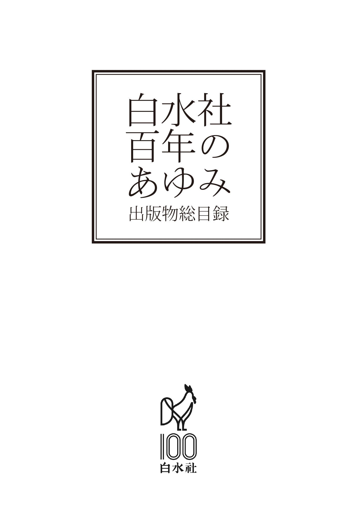
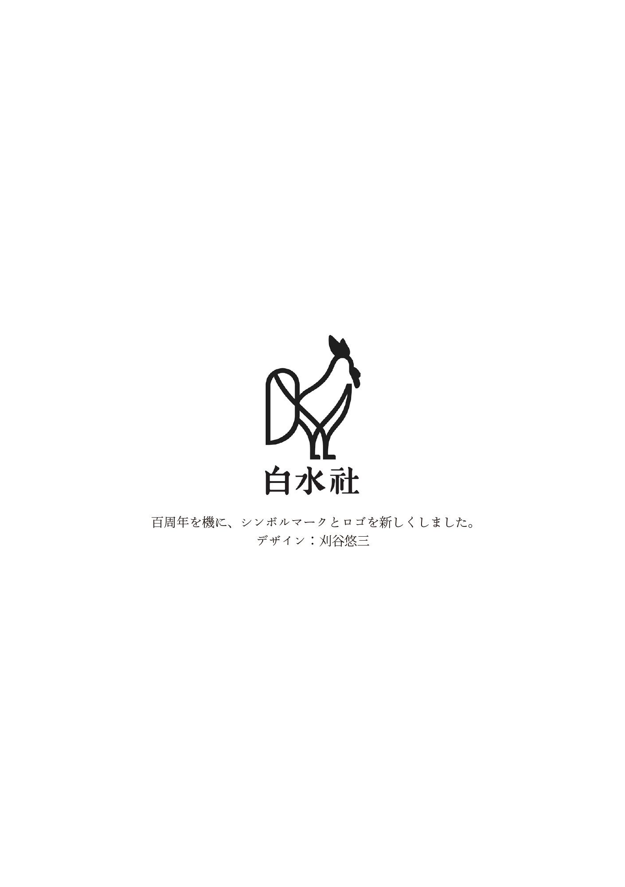
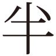

| 白水社 百年のあゆみ | |
| Unknown | |


この電子書籍は横書きでレイアウトされています。
ご覧になる機種により、表示の差異が認められることがあります。
一部の漢字が簡略字で表示されていることがあります。
本作品の内容を無断で複製・複写・放送・データ配信などすることは、固くお断りいたします。
このリストの作成にあたっては、極力漏れ・誤りのないよう努めましたが、1923（大正12）の関東大震災と1945（昭和20）年の戦災とにより社の資料のほとんどを失ったため、残念なことですが不十分な点が多く残されています。お気づきの点がございましたら何ごとによらずお教えくださいますようお願いいたします。
白水社を興したのは、秋田生まれの福岡易之助である。創業は、大正4年（1915年） 、福岡31歳の秋であった。
易之助は明治18年（1885年） 、11代福岡利兵衛と妻タカとの間に長男として生まれた。白水社の創業百周年（2015年） は、つまり創業者の生誕130周年にあたる。
福岡家は、代々秋田県平鹿郡福地村（現横手市雄物川町深井） で雄物川を利用した通運業に励む一方で造り酒屋をも営み、その精力的な家業が産んだ財は広大な田畑と山林をもたらして当家を近隣に聞こえる素封家とした。住まいは、名のある設計者に造らせた庭園を見下ろす邸宅に土蔵を備え、その敷地にめぐらした豪奢な塀は道行く人々の目を惹かずにはおかなかったという。
福岡は横手の中学を卒業すると同時に上京、旧制第一高等学校を経て東京帝国大学文学部仏蘭西文学科に入学し、明治43年（1910年） に卒業した。同期卒業者は福岡を含めて3名であり、そのうちの一人は、出版業に就いた福岡を著作者として助け、後に『星の王子さま』の翻訳者として広く知られるようになる内藤濯であった。
在学中、フランス文学を学ぶかたわら新しい農業と農村のありかたに関心を抱き、関連する書物に親しんでいた福岡は、卒業すると「県下青年の意気甚だ振はざるを慨し、学舎の余暇多少研究せし農村開発に指を染むると共に、県下各町村に講演して自らの理想の一端を述べて改善の資に供し...」（死去の約1ヶ月前に遺した書簡による） という夢を抱いて帰郷した。明治43年といえば、雑誌『白樺』創刊の年である。白樺派の理想主義の影響があったかもしれない。また、既に父親を亡くし、戸主を継いだ身であるが故に家を空けておくわけにはいかず、東京での未来を断念せざるをえなかった、という事情もあったろう。
故郷に戻った福岡は、素志にもとることなく郡内を巡回して新たな農村のあり方を説き、青年会長に就いて啓発に努めるうち、ついには郡会議員選挙にかつぎだされた。しかし、当選を果たしたものの、その運動を通して彼が見たものは欲得に支配された古い土地の因習であった。「今更乍ら小生が学舎にて考へし清浄淳朴なる農村に反し、救ふべからざる堕落に沈淪せる農村の思想に痛く落胆失望し、到底小生の如き徳低き経験浅き者に取りては、農村の改良、理想化など思ひもよらざるを悟り、飄然として家族をまとめて帝都に出で、こゝに自らの学びし道と父の残せる遺産とによりて、社会文化事業に志さんと企て申候。」（書簡同上）
このようにしておよそ4年を故郷で過ごした後、理想と現実の懸隔に挫折した福岡は、一家を伴って再び上京した。この間の消息は、同郷で福岡と親密な関係にあった医師高橋毅一郎の筆によればこのようになる。「学校を出るとすぐ胸を患って茅ヶ崎に療養、軽快して国に帰ったが、朝から晩まで来客責め。その来客が揃いも揃って面白くもない世間話で2、3時間ねばって、其揚句に金をかしてくれである。これには福岡君も音をあげて、とても身体がたまらんと、ほうほうの態で東京に逃げ出して来たが退屈で仕方がない。そこで一つ農業の雑誌でも出して見ようかとなった（後略） 」（「白水社縁起」──『BOOKS』昭和28年2月号掲載）
こうして再起を期した福岡は、大倉書店で編集の手伝いをしていた知友石田貞一郎と語らい、それまでの学業を生かした出版業を興すことを決意する。編集は石田が受け持つことになった。
さて社名を決めなければならない。どうしようか。三友社などいろいろ案が出たが、屈原の長詩『離騒』の一節に「朝 に吾れまさに白水を済 り、閬 風 に登りて馬を緤 がんとす」とあり、その註に「淮南子に言ふ、白水は崑崙の山に出で、之を飲めば死せずと。神泉なり」とあるところから福岡が「白水社」を提案したところ、「こりゃいい」とすぐに決まったという。なお、この前後には今に続く版元の創業が続いている。大正2年に岩波書店、大正3年に平凡社、オーム社、4年に有精堂、そして5年に主婦の友社、雄山閣、養賢堂、7年に春秋社、大修館書店など。
ところで、創業の正確な日付は社に残る記録にはない。ただ、昭和38年に発行された『岩波書店五十年』の年表に「十一月三日、白水社創業」とあるのみだが、法人組織としての創業ではないので、創立日がはっきりしないのも仕方がない。まずは先達を信じ、創立は大正4年（1915年） 、11月3日とする。
白水社の創業地は京橋区元数寄屋町3丁目7番地、木造3階建て店舗の3階1室を借りてのスタートとなった。
さて、どのような本を出版するか。創業年の刊行はない。処女出版は、翌大正5年に刊行した田子一民・田子静江『郡に在りし頃』および田子一民『小学校を中心とする地方改良』である。著者田子は福岡の姉静江（元の名は珠、結婚して改名） の夫で、後に衆議院議長となった人物だが、この二著は、地方改良運動の時流のなかで田子が官吏として郡長を勤めたときの記録であり、請負出版の経緯があったかもしれないが、内容は福岡の当初の志に添うものではあったと思われる。
大正6年には、平塚雷鳥らの「青鞜派」の影響を受けた田子静江の主導のもとに月刊『婦人』を創刊。雑誌の表紙にはフランス語でLa Femme（女性） と印刷されていた。創業にあたって構想していた「農業の雑誌」は、「農業の雑誌なんかより婦人雑誌にしたらどう、それなら私の方でも方々に連絡がとれるし」（『BOOKS』同上） という女子大英文科を出た姉の進言で女性誌に化けたのである。しかしながらその高踏的な内容が敬遠されたのかうまくいかず、半年ほどで廃刊となった。ちなみに、前年には『婦人公論』が、同年には『主婦之友』がそれぞれ創刊されている。そういう時代であった。
同年の中頃、社は神田区（現千代田区） 南神保町2番地に移った。
移転後、山崎延吉『農村開発の精髄』ほかを含む〈地方振興叢書〉を刊行するものの、さまざまなジャンルが混在するその後数年の刊行書目は、出版方針においていまだ試行錯誤の中にあったことを示しているようである。しかし「学業を生かし」た出版もあった。大正7年（1918年） 刊行の、内藤濯『実習仏蘭西文典』（四六判、上製250頁、1円70銭） である。学生時代に福岡が最も不自由したのはフランス語の学習書と辞書であった。創業から3年目の出版であるから、学徒の不便を解消しようと内藤濯にかねて依頼していたものだろう。白水社における語学書の嚆矢であるこの『文典』は、その後も改訂・増補を重ね、昭和41年（1966年） には田辺貞之助が加わっての改訂版が刊行された。
『文典』に続いて出版の方向を定め、社の基盤を確かなものにしたのは、大正10年、『模範仏和大辞典』（三六判、上製2176頁、8円） の刊行であった。先に引用した書簡の中で、福岡は「殊に仏和大辞典は小生が白水社を興すに及び敢然として之が実現に向かつて猛進し、自ら筆を執り、友人の助力を借り、巨万の資を投じて前後6年間不眠不休にて漸く完成し」と、死を前に若き日の情熱を蘇らせているが、この通りであるとすれば、『大辞典』は創業時点で『文典』と同様に既に企画され、編集作業も開始されていたのであるから、福岡の目標はまずこの辞典に定められていたのであって、辞典刊行に先立つ数年間の書籍出版は文字通り試行であり、錯誤の戸惑いはそれほどなかったかもしれない。
著者は10名、同期の内藤濯のほか、太宰施門、山本直文など、当時第一線で活躍していたフランス語学者・文学者が名を連ねているが、その第一原稿の大部分は、当時まだ東京帝国大学仏文科選科生であった岸田國士がこれを執筆した。岸田はその原稿料でフランスに留学したという。それにしても、作業を始めてから刊行までわずか6年。しかも2000頁を超える大著である。「不眠不休」はあながち誇張ではないだろうし、著者たちの新辞典刊行にかける情熱とエネルギーがどれほどのものであったかを思わせる。いずれにしても、わが国初の本格的なフランス語辞典であり、当時のフランス語学習に果たした役割は計り知れない。福岡の喜びも大きかった。清水文吉は『寺村五一』（昭和53年発行。寺村は4代社長） の中で、喜びのあまりの「いささか羽目をはずし」た逸脱ぶりを伝えている。「（...） 著者連をはじめ、石田支配人、会計主任の後藤、営業の松本弥平を引きつれ、浅草、向島と豪遊した。なにしろ秋田の大豪農の息子だったから、散財も豪勢で、幇間、芸者を総あげして、大盤振舞いもやった。『福岡社長は流連 のときもありました。胸が悪いのに、あんなにしては寿命を縮めることになると思ってましたが...』と、松本弥平氏は回想的に証言する。」
同じ大正10年には、雑誌『ふらんす』（第1次） を創刊し、さらにフランス色を鮮明にする。しかし、この雑誌は3号をもって廃刊になった。
そして、大正12年（1923年） 、経営がようやく軌道に乗り始めたところへの大震災である。版元、印刷所、取次店のいずれもが壊滅的な被害を受け、白水社も全て灰燼に帰してその再建が危ぶまれたが、肺結核のため鎌倉の自宅で療養していた福岡はあきらめず、遺された私財をもとに再興への道を指示した。故郷に残しておいた財産を処分し、事業継続に賭けたのである。次の引用は、先ほどの書簡の続き──
「（...漸く完成し、） 小生はその為め重き病魔に襲はれ、病院の一室に呻吟しつゝ更に仏和小辞典を完成して仏蘭西学界より多大の賞賛を博し、ジョフル元帥来朝の際、仏国政府は小生に対して破格の叙勲表彰をなし、貴重なる勲章を与へられ、よつて小生は一層感激して斯道の為め尽瘁し、やゝその基礎の固りたる際、思ひがけぬ大震火災によりて白水社の資産20数万円のものは一物もなく烏有に帰し申候。その当時より田地は年々下落し、先に100万円に評価せし小生の資産は50万円に下り更に30万に下りしを見、家族親戚こぞつて白水社の再興に大反対せしも、元よりこの文化事業の為め身命及全資産を犠牲とする覚悟をせし故、小生の健康上及小生の財的実力に考へて、十分無理とは知りつゝも又他方、仏蘭西学界が再び暗黒となるを憂ひつゝあらゆる反対を斥け、病軀を鞭打つて専心復興に従事致し候。」
それまでは毎年10点ほどの刊行を保持してきたが、震災の年の刊行物は3点、上記書簡で触れられている仏蘭西文学会編『新仏和小辞典』、ワイルド『サロメ』（内藤濯・宮原晃一郎訳） 、『フランス童話集』（加藤正徳編） である。
震災を機に、大正13年、社屋は表神保町10番地の借家に移された。2階建て5軒長屋の端だったが、この借家の家主は、後に白水社で名著『フランス詩法（上・下） 』を上梓することになる若き鈴木信太郎であった。しかし早くも14年にはさらに移転。フランス原書輸入の小売部を設置するという新たな事業展開を目指し、小川町30番地（駿河台下からお茶の水橋に向かって左側数軒目） に借家を求めたが、区画整理によるいざこざから落ち着く暇もなく、昭和の幕開けとともに向かい側の消防署（平成25年に廃署） に並ぶ4軒長屋の1軒に移った。その社屋のたたずまいを伝える「白水社50年のあゆみ」の一節──
「トタンぶき2階建で間口2間奥行5間の狭い社屋に、階下は原書小売部があり、2階は出版部があった。南隣は楽器店、北隣はたばこ屋で、裏の東側はノート会社の建物が迫り、風通しは悪く、夏の午後は奥まで西日がさしこみ、その上トタン屋根の熱気が加わって、暑熱に対する耐久力を鍛えるには絶好の場所といわれたほどの家であった。」
1階のフランス図書輸入部門は業績悪化のため昭和3年に閉鎖されたが、戦後「洋書部」として再開され、昭和62年にその業務を閉じるまで、大岡昇平、中村真一郎、福永武彦ほか多くの文人・フランス文学者に愛され利用されることになる。
大正14年（1925年）1月、フランス語とフランス文化の雑誌『La Semeuse』（ラ・スムーズ＝種まく女） が発刊された。杉田義雄を主幹とする創刊号には、詩人であり劇作家でもあるポール・クローデル大使が祝詞を寄せている。
雑誌発刊と軌を一にするように、14年の刊行物6点は全てがフランス語学習書であり、その後もこのジャンルにおいては辞典を含めてさまざまな目的に合わせたタイプを揃え、「フランス語の白水社」の基盤を確固たるものにした。
『ラ・スムーズ』は、昭和3年10月、2代目主幹田島清により、かつてその名で一時刊行したことのあるタイトル『ふらんす』に改題された。戦前から戦後しばらくはフランス語・フランス文学を専門とする学者が編集長を務め、内容もかなりハイブラウであったが、昭和20年代の終わりから昭和30年代に入ると、編集部員が担当する体制となり、より広い読者を対象にした今日に続くスタイルが固まる。この間の歴史は、平成17年に創刊80周年を記念して刊行した『ふらんす80年の回想1925-2005』に詳しい。そして、平成27年に90周年を迎えたが、執筆陣は大学教育関係者ばかりでなく在仏のフリージャーナリストも多くなり、この分野における唯一の雑誌として読者の熱い支持を得ている。
昭和5年3月24日、それまでの個人経営を法人化し、資本金20万円をもって株式会社白水社となった。
この年から数年にわたり、文芸書分野において新しい試みに挑む。まず昭和5年に小林秀雄初の翻訳単行本であるランボオ『地獄の季節』および東郷青児訳のコクトオ『怖るべき子供たち』を、翌昭和6年には小林の処女評論集『文芸評論』、さらに横光利一、宇野千代、岩田豊雄らの小説のほか、ジイド、ラディゲなどの翻訳を刊行したが、日本人の小説類はさっぱり売れずに返品の山となり、以後文芸書はもっぱらフランスに焦点を当てることになる。その路線での最初のヒットは岸田國士訳のルナアル『にんじん』である。昭和8年に菊判上製で刊行したが、9年に新宿武蔵野館で封切られたジュリアン・デュビビエ監督の『にんじん』が大当たりとなり、事前に用意しておいた四六判並製の廉価版はすぐに3万部を売り切った。映画公開に合わせたコラボレーションの走りであろう。
しかし、病床にあって資金調達に手を尽くすなど経営立て直しに向けての努力を続けた創業者は、昭和6年2月、この成功を知らずに不帰の人となっていた。その2年前に鎌倉の自宅を火災で失ったことによって病が悪化し、46年の生涯を閉じたのである。（これまでの社史において福岡逝去の年齢は49歳となっているが、生年から数えて46歳の誤りだと思われる。） 火災の原因は孵卵器の加熱であった。福岡は療養のつれづれに、フランスから優秀鶏のブレス種を取り寄せ、養鶏を始めていたが、その孵卵中の事故であった。2代目社長にはせい夫人が就任したが、易之助の死にあわせるように金融逼迫が表面化し、上記『にんじん』の成功も一時のうるおいしかもたらさず、手形の期日になると金策に奔走するという悪循環を断ち切るには至らなかった。
そして昭和7年に月刊『劇作』を創刊し、現在に至る演劇部門への道を開いた。（雑誌は戦後『演劇』［昭和26年創刊］、『新劇』［昭和29年創刊］へと引き継がれ、その後も『しんげき』、『レ・スペック』とタイトルを変えて続けられたが、平成4年に休刊となった。）
また、「フランスもの」として、昭和10年に岸田國士訳『ルナアル日記』（全7巻） 第1巻、第2巻を、そして関根秀雄訳『モンテーニュ随想録』（全3巻） を刊行、特に後者は今に続く思想書分野の先駆けとなった。
語学書部門では、南満洲鉄道株式会社の倉庫に眠っていた残本を元に復刻した東亜経済調査局編『白水社露和大辞典』（昭和8年） という変わり種を交え、昭和11年刊行の佐藤通次『独和言林』、岩沢丙吉『標音露和辞典』のほか、イタリア語、スペイン語、ラテン語の入門書を手がけるなど部門の幅を拡げ、フランス語に限らない多言語を網羅する「外国語学習書の出版社」としての基礎が築かれたのもこの頃である。
昭和12年には井上源次郎・田島清『新仏和中辞典』を刊行し、伝統を守った。この年、日中戦争が始まり、白水社では昭和2年に入社した中森季雄（5代社長） が召集されて中国に向かったが、九死に一生を得て3年後に帰国し、18年に再度召集されたが、今度は仏印駐屯通信隊での警備暮らしで前線からは遠く離れ、敗戦翌年の21年に無事復員した。
さて、翌昭和13年は、白水社にとって記憶すべき年となった。超ロングセラー2点が誕生したからである。
一つは山内義雄の名訳によるロジェ゠マルタン・デュ・ガールの長編小説『チボー家の人々』（全11巻） の第1巻『灰色のノート』、もう一つはエーヴ・キュリーの『キュリー夫人伝』。
後者は川口篤、河盛好蔵、杉捷夫、本田喜代治という名だたる文学者の共訳によるもので、1年足らずのうちに45版を重ねて20万部以上を売りつくし、社の経営はここにようやく落ち着きを取り戻した。（その後『キュリー夫人伝』は、平成18年に河野万里子の新訳版が刊行されている。）
『チボー家』の完結は昭和27年を待たなければならないが、この間、一部の読書人を除いて一般にはまだ馴染みの薄かった白水社の名を、「フランス小説」の版元として広く世に印象づけた。戦後のことではあるが、小津安二郎の名作『麦秋』（昭和26年） の冒頭に近いシーン、北鎌倉駅のホームで一冊の本に目を落としていた二本柳寛が、彼に気づいて近寄ってきた未来の妻原節子を見やり、手にした本を差し出すようにして「面白いですねえ、チボー家の人々」と言うと、原は「どこまでお読みになって？」と問う。すると二本柳は「まだ4巻目の半分です」と答える。小津は、書物をめぐるこの親しげなやりとりの中に、二人の未来を暗示した。『チボー家』はその後5巻本と体裁を変え（昭和31年） 、現在は〈白水Uブックス〉の13巻本として、今も読み継がれている。またこの昭和13年には、戦後1970年代まで辞典ラインアップの中心となる『新仏和中辞典』が刊行された。
昭和16年、日本は太平洋戦争に突入。用紙も配給統制となり、昭和18年には国家総動員法に基づく出版事業令のもとで、特殊法人日本出版会が設立され、出版統制が強化されたが、白水社は〈白水社科学選書〉などそれまでになかったジャンルを加えながら、ラブレー、アラン、パスカルなどの独自路線をも守り、昭和20年の敗戦までなんとか事業を継続させることができた。しかし、刊行点数は次第に減ってゆく。開戦の年には50点を刊行したが、昭和17年、18年、19年は、それぞれ43点、35点、19点と次第に点数は減り、昭和20年は、敗戦を間近にした社の苦悩を反映するかのような2点、『航空測量』、『砲身及び銃身の設計製作並びにその性質』のみであった。この間、昭和19年11月の東京初空襲のあと、次の空襲が大規模になることが予想されたため、寺村五一は、ある著者（佐藤通次） の斡旋により、紙型を神奈川県保土ヶ谷の講談社寮に疎開させた上、妹の家にも分散させて「財産」を守った。この措置を欠いていたら、昭和20年4月13日の空襲によって、全てを失うことになっただろう──
「20年4月、社屋は消防署に、倉庫は小学校に近接のため強制疎開の指定を受け、倉庫前の美津濃運動具店の倉庫を借り受け、社員荒岡庄太郎ほか2、3の手伝いにより急遽運び入れたが、整理にかかる前に一休みした13日の夜の空襲によって一夜燃え続け全焼した。空家の倉庫は大金庫を残して焼け、社屋は空襲を免れたがその後取りこわされた。また同日寺村宅も焼失した。
疎開した紙型以外はすべて焼失して再び大震災の時と同様の姿となったが、一時青山の草野（第3代社長） 宅を仮事務所とし、これも5月の空襲のため焼失したので、駿河台の明治書房の店先を借り受け戦争の行くえを見守った。当時は草野、寺村、荒岡の3人であった。」（「白水社 70年のあゆみ」より）
昭和20年（1945年） 8月15日、戦争が終わった。焼野原の中での復興が始まる。
まずは事業継続のための基地確保が急務であったが、幸い出版物復興の特別措置として行われた火災保険の支払いを受けることにより、その時売りに出ていた神田駿河台3丁目1番地の焼け残りの土地付き3階建て小ビルを買い取ることができた。こうして、11月2日に明治書房から初めての自社ビルに移転し、事業再開となった。相変わらず用紙不足は続き、印刷・製本もままならない状況であったが、戦火をくぐってきた人々の、書物に対する飢餓感はきわめて強く、各出版社が店頭に送り込んだ本は飛ぶように売れた──出版不況と言われる昨今、出版人が繰り返す語りぐさである。
用紙不足の当時を振り返るエピソードをある本の冒頭から引用すると──「もちろん、たいていの本は、紙質も装幀もひどいものだったが、なかにはたまたま入手できたので紙質のよしあしなど問題にせず、とにかく刷ってしまおうと決めたのか、途方もなく上質なものもあった。たしか白水社から戦前版の復刊のかたちで刊行されたポール・ヴァレリーの『ヴァリエテ』が、わずかにクリーム色を帯びた、すばらしい和紙（じつは、ふつうの活字印刷にはかならずしも向かない紙なのだが）に刷られていたことが、いまだに記憶に残っている。」（清水徹『書物について』岩波書店、平成13年） 。これも、紙型を流用した再版だと思われる。
白水社における戦後初の新刊は昭和21年の3点──辰野隆『仏蘭西文学（下） 』、『量子統計学』、他に教科書として河盛好蔵『現代フランス読本（1） 』──だったが、疎開させておいた紙型による再版は上述のような力強い需要に迎えられて経営を支え、苦しいながらもひとまず事業継続の目処はたった。新刊も、昭和22年には8点、23年、24年はそれぞれ18点、31点と順調に点数を増やしたが、その内容は、モンテーニュ、パスカル、ラシーヌ、モリエール、ゴーティエ、フロベール、スタンダールなどの作品を並製本に収めた〈仏蘭西古典文庫〉、『モーパッサン長篇小説全集』など、フランス文学作品が中心であった。
昭和26年（1951年） 、新書判〈文庫クセジュ〉の刊行が始まる。「クセジュ」はモンテーニュのQue sais-je?（私は何を知っているか？ 何も知らないのではないか） という言葉を冠したフランスの「新書判百科全書」とも言えるコレクションの翻訳シリーズだが、版元PUFから独占版権を取得し、第1巻ヴィオー『知能』を皮切りに日本版の刊行を開始した。翌27年には第72巻フールキエ『弁証法』を出して書店の棚の一角を占めうる点数をそろえたことは、事前の準備が精力的に行われたことを証している。「クセジュ」は本国では既刊4000点を越えるが、日本版も平成27年（2015年） 5月刊行のペロ『イエス』をもって1000点に達する。本シリーズは新書が氾濫する市場にあって、他にあまり見当たらず、それ故に、あるいはそれにもかかわらず日本人の関心を惹きそうなテーマを選ぶことにより、一定の読者を得ている。（なお、会員制サイトの「ジャパンナレッジ」で「文庫クセジュ ベストセレクション」が配信されている。串刺し検索をすれば、一つのキーワードを含む様々なコンテクストを引き出すことができ、まさに「百科全書」としての利用が可能である。）
また語学書部門では、昭和20年代はフランス語以外の言語──ドイツ語、ロシア語、中国語等──の出版が目立つが、昭和30年、田辺貞之助『現代フランス文法』（平成19年に『フランス文法大全』と改題して復刊） 、そしてフランス語学習者のバイブルとも言える朝倉季雄『フランス文法事典』という大著を矢継ぎ早に刊行し、伝統の継続を印象づけた。（後者は、朝倉の死後、遺された膨大な改訂用原稿を木下光一が整理・校閲し、平成14年『新フランス文法事典』として生まれ変わった。）
昭和20年代末から高度成長期に入った昭和30年代にかけて、白水社の出版目録には、いくつかの新たなジャンルが加わる。
まず挙げるべきは、『シュヴァイツァー著作集』（全20巻） に始まり、『ヒルティ著作集』（全11巻） 、『アラン著作集』（全8巻） 、『ベルジャーエフ著作集』（全8巻） 、『キルケゴール著作集』（全21巻、別巻1） と続き、昭和40年代、50年代へと受け継がれてゆく著作集、全集群である。ヨーロッパの思想家・哲学者の知的営為の空白を埋め、その全体像を示そうとするこれらの「原典」が日本の思想界に果たした役割は大きい。新たな全集が編まれる可能性が乏しい現在、その価値はこれからも変わらないだろう。（なお、この「著作集」シリーズを始めた当時の篠田光夫取締役編集次長は、昭和41年2月4日夕刻、羽田沖に墜落した全日空機の乗員・乗客133人の中の一人として、命を失った。広告代理店東弘通信社の招待による「札幌雪まつりツアー」に出張を兼ねて参加したその帰途、この惨事に遭遇したのである。）
そしてひとつは、エルゾーグ『処女峰アンナプルナ─人類最初の8000米峰登頂』（近藤等訳、昭和28年） 、レビュファ『星と嵐─六つの北壁登行』（近藤等訳、昭和30年） 、ロッシュ『ザイルのトップ』（近藤等訳、昭和31年） などの「山岳書」、また昭和40年代に入ってからもその路線が引き継がれる「探検紀行」ものの嚆矢『へディン中央アジア探検紀行全集』。収録作品のなかでも、移動する湖ロプ・ノールをテーマとした『さまよえる湖』はシルクロード紀行文学の傑作として、読者を魅了した。
また、昭和28年刊行のロラン゠マニュエル『音楽のたのしみ』（吉田秀和訳、現在は〈白水Uブックス〉4巻本） に始まる「音楽書」は、アインシュタイン『モーツァルト─その人間と作品』（浅井真男訳、昭和36年） 、ゲオン『モーツァルトとの散歩』（高橋英郎訳、昭和39年） など、昭和30年代半ばから本格的に一分野を形成するようになる。
そのほか、従来の演劇路線においても、『現代世界戯曲選集』（全13巻） 、『現代日本戯曲選集』（全12巻） 、『ジロドゥ戯曲全集』（全6巻） 、『アヌイ作品集』（全3巻） 、『コクトー戯曲選集』（全3巻） 、『ブレヒト戯曲選集』（全5巻） 等、哲学・思想と同様に、まとまったシリーズとしての刊行が続く。
昭和29年、上にも記したが、雑誌『新劇』が劇作家・田中千禾夫を編集責任者として創刊され、劇作・批評を通して演劇界に新風を送った。
翌昭和30年には同誌を主体とする「新劇戯曲賞」が設置され、昭和36年には「新劇岸田戯曲賞」、1979年に「岸田國士戯曲賞」と改称されて今日に至り、平成27年には第59回を迎えた。
毎年新たに雑誌発表あるいは単行本として活字化された作品、上演台本を対象とし、新人劇作家の登竜門とされている。小説分野における「芥川賞」に等しいこの賞は、革新的な舞台を創出する数多の才能を生んでいる。昭和40年代以降に限れば──別役実（『マッチ売りの少女』『赤い鳥の居る風景』、昭和43年） 、唐十郎（『少女仮面』、昭和45年） 、佐藤信（『鼠小僧次郎吉』、昭和46年） 、井上ひさし（『道元の冒険』、昭和47年） 、清水邦夫（『ぼくらが非情の大河をくだるとき』、昭和49年） 、つかこうへい（『熱海殺人事件』、同） 、太田省吾（『小町風伝』、昭和53年） 、野田秀樹（『野獣降臨』、昭和58年） 、岩松了（『蒲団と達磨』、平成元年） 、宮沢章夫（『ヒネミ』、平成5年） 、柳美里（『魚の祭』、同） 、鴻上尚史（『スナフキンの手紙』、平成7年） 、平田オリザ（『東京ノート』、同） 、松尾スズキ（『ファンキー！ 宇宙は見える所までしかない』、平成9年） 、ケラリーノ・サンドロヴィッチ（『フローズン・ビーチ』、平成11年） 、三谷幸喜（『オケピ！』、平成13年） 、岡田利規（『三月の5日間』、平成17年） 、宮藤官九郎（『鈍獣』、同） 、前田司郎（『生きてるものはいないのか』、平成20年） 、本谷有希子（『幸せ最高ありがとうマジで！』、平成21年） 他、まさに多士済々であり、その才能は演劇界を超えて羽ばたいている。
そして昭和38年、海外文学において、特筆すべきシリーズの刊行が開始された。〈新しい世界の文学〉である。第1巻は、デュラス『アンデスマ氏の午後・辻公園』（三輪秀彦訳） 。イギリス、フランス、ドイツ、イタリア、アメリカの作家を中心にしたこのシリーズは、以後15年間にわたって81編の瑞々しい海外小説を文学ファンに届けた。体裁は、三方を折り返した薄クリームの柔らかな表紙に、北園克衛のデザインによるカバーがかかり、さらにその上を凹凸のあるビニールで覆った四六判で、ハードカバーの重々しい文学全集に慣れた目に、そのたたずまいはいかにも軽やかに映った。ユルスナール『ハドリアヌス帝の回想』（多田智満子訳、昭和39年） 、ウォー『黒いいたずら』（吉田健一訳、昭和39年） 、アプダイク『走れウサギ』（宮本陽吉訳、昭和39年） 、カルヴィーノ『木のぼり男爵』（米川良夫訳、昭和39年） 、マンディアルグ『オートバイ』（生田耕作訳、昭和40年） 、シモン『フランドルへの道』（平岡篤頼訳、昭和41年） 、ヴォネガット『母なる夜』（池澤夏樹訳、昭和48年） ...。なかでも、昭和39年（1964年） 刊行の野崎孝訳によるサリンジャー『ライ麦畑でつかまえて』は、その内容とともに、生気あふれる日本語に移された語り口によって若い読者を虜にした（神戸に住む一高校生、村上春樹はこの「不思議に心に深く強く残った」作品を、後に自ら訳すことになる） 。こうしてある年代までは「あの『チボー家』の」白水社が、海外文学ファンに限るならば次第に「あの『ライ麦』の」白水社となっていった。加えてこのシリーズがあらためて明確にしたのは、「フランス」という看板の枠を越え、「世界」を翻訳するという出版姿勢であったかもしれない。
この「世界性」は、語学の分野でもさらに展開されていく。辞典は、昭和30年代になると、戦前・戦後に企画されたものが順次完成し、『新仏和中辞典（改稿版） 』（井上源次郎・田島清、昭和30年） 、『西和辞典』（高橋正武、昭和33年） 、『和独辞典』（奥津彦重、昭和34年） 、『独和言林（改新版） 』（佐藤通次、昭和36年） 、『西和小辞典』（高橋正武、昭和36年） 、『新仏和小辞典』（杉捷夫、昭和37年） 、『新和仏中辞典』（三木治他、昭和38年） 、『新伊和辞典』（野上素一、昭和39年） のほか、専門用語辞典『仏和医学辞典』（日仏医科会、昭和31年） 、『仏和理工学辞典』（日仏理工科会、昭和36年） 、『仏英和料理用語辞典』（山本直文、昭和37年） が刊行され、これら辞典分野の売上げは、白水社の経営基盤を確かなものにした。
また、語学書では、これまでにないメディアを取りこんだものが現れる。フランスで開発された薄いレコード盤「ソノシート」を付けたシリーズ〈白水社シートブックス〉である。同シリーズは、昭和37年に、フランス語、スペイン語、ロシア語、中国語のそれぞれ第1巻『発音編』が発売され、翌年にはそれぞれ第2巻『入門編』、第3巻『会話編』の各全3巻が揃った。その後、ドイツ語、イタリア語が加わったが、いずれも「音」は外国語学習に必須として、特に『発音編』がよく売れた。「音」を提供するメディアはその後、カセット、CD、ダウンロード用データへと形を変えていくが、入門書の場合は「音」の付属を前提とした編集が、他社を含めて基本となっていく。
昭和40年代は、30年代に開拓された新分野が活発な展開を見せる。哲学・思想の「全集・著作集」ものとしては、『ベルグソン全集』（全9巻） 、『ルカーチ著作集』（全13巻、別巻1） 、『オルテガ著作集』（全8巻） 、『ショーペンハウアー全集』（全14巻、別巻1） 、『デカルト著作集』（全4巻） 、『バクーニン著作集』（全6巻） が新たに加わった。また、一人の思想家ではなく、テーマをもとに編纂された〈現代キリスト教思想叢書〉（全14巻、ニーバー『道徳的人間と非道徳的社会』大木英夫訳、他） 及び〈人間の科学叢書〉（全10巻、バシュラール『科学認識論』竹内良知訳、他） も、この分野の延長企画と言える。「探検」ものでは、河口慧海『チベット旅行記』等を含む『西域探検紀行全集』（全15巻、別巻1） 、深田久弥『ヒマラヤの高峰』（全3巻） を刊行。
「音楽書」はさらに充実し、スイユ社刊の作曲家評伝シリーズ「ソルフェージュ叢書」から選書し翻訳した〈永遠の音楽家〉（全16巻、第1巻オカール『モーツァルト』高橋英郎訳、昭和43年） 、ティボー『ヴァイオリンは語る』（粟津則雄訳、昭和44年） 、ベーム『回想のロンド』（高辻知義訳、昭和45年） 、フルトヴェングラー『音楽ノート』（芦津丈夫訳、昭和46年） 等、音楽評論と演奏家のエッセイという2つのジャンルがともにクラシックファンの支持を受け、その多くが版を重ねた。
「演劇書」分野でもさまざまなシリーズ──〈今日のフランス演劇〉（全5巻） 、〈今日の英米演劇〉（全5巻） 、『ベケット戯曲全集』（全2巻） 、〈現代世界演劇〉（全17巻、別巻1） など──を通して旺盛な活動が続いたが、なかでも昭和48 年に第1巻が刊行された小田島雄志訳『シェイクスピア全集』（全7巻） は、坪内逍遙以来の個人完訳として、特に舞台を創る演劇人に大きな影響を及ぼした。もちろん、セリフの親しみやすさによって、それまでシェイクスピアにあまり馴染みのなかった若い海外文学ファンに歓迎されたことは言うまでもない。小田島はエッセイストとしても、『小田島雄志のシェイクスピア遊学』（昭和57年） などで演劇ファンを喜ばせた。
「小説」においては、〈新しい世界の文学〉の変奏とも言えるシリーズの刊行が続く──短編の秀作を選んで編まれた〈新しい世界の短編〉（全8巻。ボルヘス『不死の人』土岐恒二訳、他） 、そのアメリカ版〈現代アメリカ短編選集〉（全3巻） 、国別に編まれた単行本『現代ドイツ幻想小説』（種村季弘編、昭和45年） 、『現代ロシア幻想小説』（川端香男里編、昭和46年） 、『現代東欧幻想小説』（吉上昭三他編、昭和46年） などの「幻想小説」シリーズ、〈現代フランス小説〉（全8巻、ユルスナール『黒の過程』岩崎力訳、他） 等。
また、昭和29年の「日本フランス語・フランス文学会」総会における辰野隆会長の提案を受け、その後学会が総力を挙げて執筆に取り組んできた『フランス文学辞典』が、昭和49年桑原武夫会長の下に完成する。
ところで昭和40年代半ばは、白水社が、ある紛争の渦中にあえて身を投じた時代として記憶されている。紛争とは、当時「ブック戦争」と呼ばれ、版元、取次店、書店三者の間で繰り広げられた「正味（卸値） 引き下げ」をめぐる係争である。日本書籍協会の理事であった寺村社長は、専門出版社、中小出版社の立場に立って論陣を張り、安易な妥協には強く反対した。明治生まれの硬骨漢として知られた寺村のその強い姿勢によって、白水社は対書店の矢面に立つことになる。日本書籍協会、日本出版取次協会、日本書店組合連合会は交渉を重ねたが妥結に至らずに決裂、昭和47年（1972年） 9月1日、日書連は、店頭チラシによって非常手段の必然性を訴え、「不扱い商品一覧」を発表すると同時に「書店スト」に突入した。
「一覧」によれば、第1次不扱いとして、9月1日より講談社（文庫・児童書・絵本） 、岩波書店（新書・「世界」） 、白水社（全商品・含雑誌） が対象とされた。全商品は白水社のみである。第2次は、9月10日より小学館、有斐閣が加わり、さらに旺文社、オーム社が予定された。
「全商品不扱い」により、白水社の本は全て書店の棚から下ろされて取次に返品され、読者の注文も受け付けが停止された。白水社はここに至って創業以来の苦況に陥ったのである。流通が遮断されるということはつまり入金が途絶えることであり、まさに会社の生死にかかわる事態にほかならない。寺村は読売新聞に「出版社全体の問題なので静観するほかはないが、当社としては痛手である」という談話を発表した。もちろん「痛手」どころではなく、手をこまねいているわけにはいかない。自衛的措置として、読者に窮状を訴えることにした。「従来のお出入りの書店で書籍が入手できない場合は書名・定価など確かめていただき、振替その他御便利な送金方法で、小社まで直接注文していただきたい」旨を認めたパンフレットを全国4万人を越える読者に送付した。「直販」を促す窮余の一策であったが、効果は当然限られている。取次ルートの返品は日を追うにつれて増え、注文は激減した。ただ幸いなことに、ストの中で白水社を支援しようとする書店も数多く、それら書店の突き上げもあって取次は全面的な送品停止という措置は控えた。
ストは9月13日に中止され「ブック戦争」は終わった。書協は日書連の要求を容れて正味引き下げに応じ、妥結を選択したのである。書協の全面的敗北であったと言われるが、とにかく13日間の「戦時」に耐え、社の業務は平常に戻った。
この年は、社内でも組織上の変革があった。7月には、白水社労働組合が結成された。また、それまで編集部は3課に分かれていたが、特にジャンルに応じた組織ではなかった。そこで、主として編集者の専門性を高める目的で、文学・思想・歴史・演劇ほか語学以外の書籍を企画・編集する「一般書編集部」と、辞典・語学参考書・語学教科書を企画・編集する「辞典・語学書編集部」という具合に、編集部を2分割したのである。ここに、「一般書」と「語学書」という白水社の2本の柱が、組織の上でも明確になり今日に至っている。
昭和50年代。「著作集」はさらに充実したラインアップとなる。『ジンメル著作集』（全12巻） 、『シェーラー著作集』（全15巻） 、『ティリッヒ著作集』（全10巻、別巻3） 、『ルソー全集』（全14巻、別巻2） 、そして、『ニーチェ全集』（第I期・全12巻、別巻1）（第II期・全12巻） である。ニーチェの死後、ナチを支援していた妹エリーザベトが意図的に編集した全集を、イタリア人モンティナーリが遺稿を文献学的に精査し、ニーチェの思想を本来の道筋に戻すべく再編集した、それがグロイター版であり、白水社版全集はこの版に基づく。つまり白水社版は、ニーチェ研究の文字通り「原典」なのである。
そして、『ニーチェ全集』とほぼ時を同じくしてスタートした〈白水叢書〉の第1回配本（昭和51年） もニーチェ──ハイデガー『ニーチェ』（全3巻、薗田宗人訳） の「I」であった。同叢書は、思想・哲学・歴史・文学・芸術など、これまで翻訳を主体として手がけてきた分野に、日本人による書き下ろしを積極的に加えていこうという方針のもと、その器として企画されたという面があった。その成果としては、篠田浩一郎『形象と文明─書くことの歴史』（昭和52年） 、池内紀『諷刺の文学』（昭和53年） 、池田浩士『ファシズムと文学─ヒトラーを支えた作家たち』（昭和53年） 、中村雄二郎『チェーホフの世界─私の方法序説』（昭和54年） 、渡辺保『忠臣蔵─もう一つの歴史感覚』（昭和56年） 、島岡茂『教養としての言語学』（昭和57年） などがあるが、リクール『解釈の革新』（久米博他編訳、昭和53年） 、ガスリー『ギリシア人の人間観─生命の起源から文化の萌芽へ』（岩田靖夫訳、昭和53年） など、多くはやはり翻訳ものであった。この叢書は、昭和58年に70回をもって刊行終了となる。
昭和50年代刊行の翻訳書の中から、ロングセラーとなった2点をさらにあげておこう。エルンスト・ブロッホ『希望の原理』（全3巻、山下肇他訳、昭和57年、日本翻訳文化賞受賞） とヴァザーリ『ルネサンス画人伝』（平川祐弘他訳、昭和57年） である。ナチス台頭の中で書かれたブロッホの大著は、平成25年、〈白水iクラシックス〉の6巻本として完結し、その存在感を新たにした──「彼が「未来の哲学」を見いだしたのは、まさに「未来」のない状態においてであった。」（柄谷行人「第1巻解説」より） 。また『画人伝』の成功は、後年の『ルネサンス彫刻家建築家列伝』（森田義之監訳、平成元年） 、『続ルネサンス画人伝』（平川祐弘他訳、平成7年） へと繋がっていった。なお、これらヴァザーリの作品は、現在は〈白水Uブックス〉に収められた『芸術家列伝』（全3巻） としても読むことができる。
日本人の著作として大きな成功をおさめたのは、『吉田秀和全集』（第I期、全10巻） である。吉田秀和が音楽批評における第一人者であることは衆目の一致するところであり、FM放送のクラシック番組によって広く親しまれてもいたが、音楽批評家の「全集」は他社を含めて前例のない試みであり、営業的には未知数であった。しかし、反響は刊行当初より予想を大きく上回った。同全集に対して第2回大佛次郎賞（昭和50年） が授与されることによってさらに多くのクラシックファンが迎えるところとなり、売上げの低迷に悩む白水社に久しぶりの潤いと活気をもたらした。それは翻訳書を中心に続けてきた一連の「音楽書」が産んだ豊かな果実であるが、このジャンルの源が昭和28年の吉田秀和によるロラン゠マニュエルの翻訳紹介にあったというのは、決して偶然ではないだろう。授賞が発表されたとき、丸谷才一がある週刊誌に寄せた感想は社員をあるいは憤慨させ、あるいは苦笑させた。曰く「白水社という出版社は寝ぼけたようなところがあるが、ときどき味な企画を立てる」。
そして、ほぼ時を同じくして『モーツァルト書簡全集』（全6巻、海老沢敏・高橋英郎編訳） の第1巻が刊行される（昭和51年） が、ここに収められた膨大な書簡は、モーツァルトの人と音楽を深く知る上では欠かせない貴重な資料として、今も参照されている。
『吉田秀和全集』の成功は、日本人の著作編集への意欲を促しもした。〈白水叢書〉は一定の成果を上げるに留まったとも言えようが、あらたな目標となった日本人の著作刊行はさまざまな形を纏って実現する。演劇ジャンルにおいては、鈴木忠志・中村雄二郎の対談『劇的言語』（昭和52年） 、観世寿夫『心より心に伝ふる花』（昭和54年） が評判となって版を重ね、昭和56年に開始された紀行エッセイのシリーズ〈日本風景論〉は、書き手とテーマの組み合わせの妙によって話題を呼んだ──飯島耕一『港町─魂の皮膚の破れるところ』、中井英夫『墓地─終りなき死者の旅』、澁澤龍彥『城─夢想と現実のモニュメント』、塚本邦雄『半島─成り剰れるものの悲劇』他。
そして、『城』の作者の著作集『ビブリオテカ澁澤龍彥』が全6巻として編まれる（昭和54年） 。
伝統の「フランスもの」における新たな試み〈小説のシュルレアリスム〉（全11巻） の第1巻、ジャリ『超男性』（昭和50年） の翻訳は、これも澁澤龍彥によるものであった。（なお、澁澤初の翻訳は、昭和29年刊のコクトー『大胯びらき』である。） また、錬金術および占星術の古典的著作を中心に編まれた異色の思想書シリーズ〈ヘルメス叢書〉（全7巻） の第1巻、フラメル『象形寓意図の書／賢者の術概要』（有田忠郎訳） が昭和52年に刊行されるが、澁澤はこのシリーズに推薦文を寄せている。──「危機の予感から、私たちはもう一度、人間の全体験を生き直してみようとする衝動につらぬかれる。謎と暗示にみちたヘルメス学の古典的テキストは、何よりもまず、そのような私たちの衝動に答えるものとなるはずである。」この予感が次第に明確な輪郭をとっていくのを眺めながら、澁澤は昭和62年鬼籍に入った。
「山岳書」において、一つの集成的成果がもたらされた。日本全国の山々における登山ルートを、地域別に概念図と解説を付してまとめた〈日本登山大系〉（柏瀬祐之・岩崎元郎・小泉弘編、全10巻） である。第1巻『北海道・東北の山』（昭和55年） に始まるこの大系は、クライマーの登攀ガイドとして活躍すると同時に、想像の登山を楽しむ人々の愛読書となった。
さて、「日本」を冠するシリーズがもう一つ、昭和59年に始まった。〈日本の神々─神社と聖地〉（谷川健一編、全13巻） である。その第1巻は『九州』。これは、伝統文化の象徴としての神社に、民俗・歴史・考古など学際的観点から光を照射する画期的試みであり、貴重な基礎資料としての価値は今も変わらない。またこのシリーズは、日本の「古代史」「民俗学」という新ジャンルを切り開き、野本寛一『生態民俗学序説』（昭和62年） 、『神々の風景─信仰環境論の試み』（平成2年） 、あるいは大和岩雄『鬼と天皇』（平成4年） 、『遊女と天皇』（平成5年） などの成果を産み出すきっかけとなった。
昭和56年（1981年） 、四半世紀の歳月を費やした『仏和大辞典』（菊判、2694頁） が完成する。経営の基礎を築いた8円の『模範仏和大辞典』刊行からちょうど60年を経て、24,000円の新たな「大辞典」が誕生した。編者の中心となったのは伊吹武彦だが、この辞典誕生には前史がある。戦前、渡辺一夫を中心とした『模範』の大改訂が計画され、京都からは伊吹が加わった。編集会議の結果をまとめた大部な「折本型要項」（編者はそれを「お経」と呼んでいたという） も整い、『模範』の各頁を大型の白紙に貼り付けた改訂用紙が編者に配られて早速改訂作業が始まった。編者の中でも渡辺一夫はめざましい成果を上げたという。しかし、戦争が次第に激しくなって計画は立ち消えとなる。そして、昭和32年、「大改訂」にかわって伊吹武彦を中心とした新辞典の企画が立てられ、今度は「辞典編集について、私は白水社に対し、大きな負い目を日ごろ感じていた」という伊吹が東京の渡辺一夫の元を訪れ協力を願い出たが、「しかし渡辺氏は当時、ラブレーの翻訳・研究という大事業にとりかかっておられ、とうていほかの仕事は無理だという返事であった。」（伊吹武彦「辞典づくり裏ばなし」、『學鐙』1981年、第2号） 。翻訳の方は『第四之書パンタグリュエル』だと思われるが、『第一之書ガルガンチュワ物語』が昭和18年、そして最後の『第五之書パンタグリュエル物語』が昭和40年の刊行であるから、費やされた歳月を考えても、まさに大事業であった。なお、先に記した「負い目」とは、「戦争という巨大な力が働いていたとはいえ、せっかくの大事業が挫折したことに対する私の切ない気持、出版社が被った大きな損失に対するやりきれない思いが、戦後もずっと私の心に突きささっていた」（同上） というもので、当時の著者と版元の関係が忍ばれる逸話である。
同年、語学分野でさらに2つの収穫があった。木村彰一他編『白水社ポーランド語辞典』と数江譲治『フランス語のABC』である。小型ながら充実した前者は現在でもポーランド語学習者に愛用されており、後者は刊行以来20万部に達するロングセラーとなっている。
昭和58年、新書判サイズの新シリーズ刊行が開始される。〈白水Uブックス〉である。このシリーズは、全体の構想があって始まったのではなく、ある全集の廉価本化がきっかけとなった。小田島雄志訳『シェイクスピア全集』である。この古典中の古典をさらに広めるためには文庫本という形が望まれるところだが、白水社は〈文庫クセジュ〉は別としていわゆる文庫を持っていない。そこで5巻本の全集を作品別に「新書判」全37巻として刊行しようということになった。新書のシリーズ名は〈白水Uブックス〉。装幀は田中一光。結果を見て続刊という構えを支えていたのは、『チボー家』、また『ライ麦』を筆頭とする好評の「海外文学」である。幸いシェイクスピアの売行はよく、翌59年には、『チボー家の人々』を13巻本として、また『ライ麦畑でつかまえて』を皮切りに、ボルヘス『ブロディーの報告書』（鼓直訳） 、ファウルズ『コレクター』（小笠原豊樹訳） 他、かつての〈新しい世界の文学〉（昭和54年以降は、ハードカバー版〈白水社世界の文学〉となる） から、あるいは〈小説のシュルレアリスム〉他の既刊から、選りすぐった秀作を次々とシリーズに加えていった。平成以降は、さらにエッセイ、歴史、音楽、思想といったジャンルの既刊単行本を収めながら現在に至るが、中心はやはり「海外文学」である。
このような既刊の「Uブックス化」とは別に、「海外文学」は平成に入ってからも主にシリーズものや作品集による新刊が続き、この分野における白水社の存在感はますます高まった。平成元年には、柴田元幸訳のオースター『鍵のかかった部屋』を皮切りとする〈新しいアメリカの小説〉が始まり、続いて〈新しいイギリスの小説〉（ウィンターソン『さくらんぼの性は』岸本佐知子訳、平成3年、他） 、〈新しいフランスの小説〉（ペナック『人喰い鬼のお愉しみ』中条省平訳、平成7年、他） が編まれた。
また、一作家の作品集として、『遠い木霊』（越川芳明訳） を第1巻とする『ポール・ボウルズ作品集』（全6巻、四方田犬彦・越川芳明編） が刊行される。
演劇ジャンルにおいては、平成5年に〈歌舞伎オン・ステージ〉（全25巻、郡司正勝・廣末保・服部幸雄・小池章太郎・諏訪春雄監修） の第1巻として『蔦紅葉宇都谷峠／青砥稿花紅彩画』（河竹登志夫編著） が刊行される。このシリーズは、現行の歌舞伎脚本から上演数の多い名作を選び、底本には主として明治期の上演本を用いて正確なテキストを提供することを第一義として編集されたものだが、「芸談」「梗概」なども含まれ、観劇の際の便利なハンドブックとしても愛されている。
音楽を志す者の必須基本図書としてロングセラーとなっている2点をここで挙げておこう。一点は、ミヒェルス編『［カラー］図解音楽事典』（角倉一朗監修、平成元年） である。もう一点は、刊行は少し先になるが『齋藤秀雄講義録』（小澤征爾・堤剛・前橋汀子・安田謙一郎・山崎伸子編、平成11年） である。小澤征爾をはじめ世界的な演奏家を数多く育てた教育者唯一の講義録であり、音楽全般の深い理解への導きの書としてこれからもその価値を減ずることはないだろう。
昭和61年、画期的な外国語入門シリーズがスタートする。それまでも、さまざまな言語の入門書を刊行してきたが、対象はほぼヨーロッパに限られていた。そこで、ある程度の学習者が見込める限り、なるべく多くの「世界の言語」を対象とし、フォーマットも統一して気軽に始められるような入門書のシリーズはできないだろうか？ というところから構想され、実現したのが〈エクスプレス〉である。大正7年『実習仏蘭西文典』のフランス語から始まって、イタリア語、ロシア語、ドイツ語、スペイン語、中国語、チェコ語、ブラジルポルトガル語、インドネシア語、スウェーデン語、デンマーク語......と、長い時間をかけながら多言語へのアプローチを続けてきたが、〈エクスプレス〉はその出版活動によるひとつの到達点、と言うことができるだろう。第１回配本はこれまで手がけたことのある言語（仏・独・伊・露・中・朝・チェコ） に、現代ギリシア語、オランダ語、フィンランド語、ヒンディー語を加えた11言語となった。その後も、セルビア・クロアチア語（現在は「セルビア語・クロアチア語」） 、上海語、トルコ語、パンジャービー語、ハンガリー語、アラビア語、アイスランド語、ブルガリア語、ベンガル語......と毎年点数を増やし、50以上の言語を擁するシリーズへと育っていった。
第1弾11冊の原稿執筆を依頼する際、複数の著者との間でカナルビをつけることの是非をめぐって議論となったが、ゼロから始める入門者の心理的負担を少しでも軽くする、という配慮から、少なくとも最初はルビをつける、ということで合意に達した。もちろんネイティヴスピーカー吹き込みによる音源も別売カセットとして用意したことは言うまでもない。「会話」と「文法」の基本を同時に学びながらその言語のアウトラインを身につける、というコンセプトは、四六判の同シリーズを一回り大きいA5判に拡大し、音源としてCDを添付した〈CDエクスプレス〉を経て、新たな著者のもとに内容も一新した〈ニューエクスプレス〉（刊行継続中） にも受け継がれている。
大学向けの外国語教科書もこの年代から発行点数が増える。フランス語、ドイツ語、中国語の3言語を中心として、ロシア語、スペイン語、イタリア語、ラテン語など（そして後には韓国・朝鮮語が加わる） 、昭和40年代、50年代には年間20点程度だったものが、昭和61年には一挙に40点に増える。これは、売行きにおいては不安定な要素がつきまとう一般書籍に対して、教科書は確実な需要が見込めるため、学生数の増加とともに経営の安定にとっては非常に重要なジャンルとなったからである。（その重要性において、事情は今も変わらないが、英語偏重、第2外国語軽視、及び少子化による需要減という状況のなかで、平成27年現在の新刊教科書点数はピーク時の4分の1、年間10点ほどまでに減っている。）
昭和60年、イタリアのある女性作家の自伝的小説が翻訳刊行される。ギンズブルグ『ある家族の会話』。訳者は須賀敦子。須賀は後にこの作品との出会いについて、「この小説を読んだとき、あ、これは自分が書きたかった小説だ、と思った」と書いた。果たして平成2年刊行の『ミラノ 霧の風景』（女流文学賞・講談社エッセイ賞受賞） は、書きたかった「小説」とは異なるものの、またエッセイという枠にも収まらない独自の散文世界を切り開いた作品である。須賀はさらにギンズブルグの大作『マンゾーニ家の人々』（昭和63年、ピーコ・デッラ・ミランドラ賞受賞） 、そして『インド夜想曲』（平成3年） 、『遠い水平線』（平成3年） 他アントニオ・タブッキの諸作品を通して翻訳者としての力量を明らかにする一方、エッセイスト・作家として不動の名声を確立した。
現在、エッセイ・翻訳の全てが全集版、あるいは文庫本として入手可能であるが、清楚なカバーに包まれた白水Uブックス版『須賀敦子コレクション』（全5巻） を愛する読者は多く、それぞれ版を重ねている。なお、平成26年、イタリア語で書かれた著作の優れた日本語訳を対象に「須賀敦子翻訳賞」が創設されるが、その第１回目の授賞作に『ピランデッロ短編集 カオス・シチリア物語』（白崎容子・尾河直哉訳、平成24年） が選ばれた。
また、〈新しいフランスの小説〉におけるリオ『踏みはずし』の訳者堀江敏幸による『郊外へ』という作品が平成7年に刊行される。本書は、雑誌『ふらんす』の連載に加筆訂正を施してまとめたものだが、母体となった雑誌の性格もあって、刊行当初は著者の実体験を元に書かれた「エッセイ」として読まれ、また評された。しかし、平成12年、〈白水Uブックス〉に収められる際に付された「あとがき」には「一連の物語に登場する「私」とその周辺の出来事は、完全な虚構である」と書かれている。つまりこの作品は、その後芥川賞作家となり、谷崎潤一郎賞を初め多くの文学賞を受賞することになる堀江の、小説家としてのデビュー作なのである。
昭和60年、新たな分野へと導いたのが高木仁三郎『いま自然をどうみるか』である。古代ギリシア思想にまで遡る歴史的な視野のもとに書かれたこの本は、平成23年（2011年） 福島第一原子力発電所事故に応ずる新装版としての刊行により、自然と人間との関係を深く問い詰めていく著者の思考が改めて注目された。元版刊行後、「自然」「環境」「生きもの」をテーマとした書籍の刊行が今に続いているが、それはこの高木の著作を源とする水脈から生まれたと言ってもいい。例えば──秋田の自然に囲まれて過ごした幼少年時代を綴った矢口高雄『ボクの学校は山と川』（昭和62年） 。漫画を本文に組み込んだこの本は、ひさびさのヒットとして売上げに大きく貢献したのみならず、単行本で1,000円という白水社としては破格の価格も相まって、若い「ヤングアダルト」層を開拓する役割を果たした。翌63年には続編『ボクの先生は山と川』が刊行される。ブナ原生林保存活動で知られる鎌田孝一『白神山地に生きる』（昭和62年） は同じく「自然」をテーマとする分野の成果だが（その後、白神山地は平成5年に日本初のユネスコ世界遺産に登録された） 、「自然」を奪われた水俣病患者と共に暮らし、その生活の内側に材を求めた傑作ルポ吉田司『下下戦記』が同年に刊行されて大宅壮一ノンフィクション賞を受賞したということも、記憶すべき事柄だと思われる。このような、芸術あるいは哲学という昇華された世界とは異なる、戦史を含む過酷な歴史的現実、あるいは現代のナマの現実にアプローチする著作が目立ち始めるのは、21世紀の数年を経てからになるだろう。
上記「ヤングアダルト」分野でのその後のヒットは、やはり翻訳ものにおいて生まれた。平成8年刊のペック『豚の死なない日』（金原瑞人訳） 、『続豚の死なない日』（同） は、それぞれ10万部、2万部を売り、現在は〈白水Uブックス〉に収められ、同様の経過をたどったセプルベダ『カモメに飛ぶことを教えた猫』（河野万里子訳、平成10年） やペナック『片目のオオカミ』（末松氷海子訳、平成11年） 等とともにロングセラーとなっている。
また同分野で、この時期大ヒットとなり、他社を巻き込む「グリムブーム」の先駆けとなったのが『初版グリム童話集』（全4巻、 原高志・ 原素子訳、平成9年） である。一般に「グリム童話」として親しまれてきた物語は、グリム兄弟自身による度重なる書き直しを経た第7版のテクストに基づいている。初版がいわゆる「メルヘン」とはいささか異なる面を持っていることは知られていたが、それを翻訳として読むことはできなかった。子殺しや近親相姦などを含むテクストの全訳は驚きを持って迎えられ、『ベスト・セレクション 初版グリム童話集』（平成10年） と合わせた5冊の総売上部数は45万に達した。現在は5巻本として〈白水Uブックス〉に収められている。
なお、平成10年（1998年） 、白水社は「書物復権の会」に初参加する。この会は、前年の平成9年に、4出版社（岩波書店、東京大学出版会、法政大学出版局、みすず書房） が集 って始めた共同復刊事業である。名著でありながら品切れとなっている書物から選んだ復刊候補リストを各社持ち寄り「復刊候補リスト」を作成する。それを書店店頭で配って読者からリクエストをつのる。そしてそのリクエスト数を参考に各社書目を決定して復刊し、共同で書店展開・販売促進を図るという試みである。同年には、白水社の他、勁草書房、未來社が加わって7社となり、その後入れ替わりを経ながら平成27年（2015年） には10社となって第19回目を迎えた。第1回目の白水社の復刊は『フルトヴェングラーの手記』など5点であった。平成27年は、『キケロ─もうひとつのローマ史』を含む4点である。
平成5年（1993年） 、伝統のフランス語において新しい学習辞典が誕生した。『現代フランス語辞典』（山田 ・宮原信監修／中條屋進・丸山義博・G.メランベルジェ・吉川一義責任編集） である。日本語に通暁したフランス人が本格的に編集に加わった辞典として定評を得、平成15年には『ディコ仏和辞典』とタイトルを変えて今日に至っている。
その他、辞典としては、『和伊辞典』（坂本鉄男編、昭和63年） 、『コスモス朝和辞典』（菅野裕臣他編、昭和63年） 、『コンコルド和仏辞典』（高塚洋太郎他編、平成2年） 、『現代スペイン語辞典』（宮城昇・山田善郎監修、平成2年） 、『パスポート初級露和辞典』（米重文樹編、平成6年） 、『山本直文 フランス料理用語辞典』（日仏料理協会編、平成7年） 、『現代ポルトガル語辞典』（池上岑夫・金七紀男・高橋都彦・富野幹雄編、平成8年） 、『パスポート初級アラビア語辞典』（本田孝一・石黒忠昭編、平成9年） 、『白水社ラルース仏和辞典』（三宅徳嘉・六鹿豊監修、平成13年） 、『白水社中国語辞典』（伊地智善継主編、平成14年） 、『フロイデ独和辞典』（前田敬作監修、平成15年） 、『パスポート日本語アラビア語辞典』（本田孝一、イハーブ・アハマド・イベード編、平成16年） が、多くは長い歳月を経て完成を見る。しかし、21世紀に入るや辞典も電子の時代となって冊子辞典はいずれも苦戦を強いられ、重版を断念せざるをえないものが続いたことは、時代の流れとはいえ、編集に注がれた熱意と多大な努力、そしてその内容の豊かさを考えれば誠に残念なことである。データの活用を将来に期するほかない。
語学書においては、総合的な言語能力を養うシリーズの構想が看板のフランス語において実を結び、昭和63年、〈コレクションフランス語〉（田島宏編、全8巻） の第1巻『入門』が出る。コミュニケーションの手段としての言語の習得を、「話す、聞く、読む、書く」という目的別に整備したプログラムによって効果的に実現しようというこのシリーズは、一時代を画したと言っていいだろう。音源として、当初はカセットを別売で用意したが、その後の改訂に際して全巻がCD付となった。
大学向けの教科書も「教授法」研究の進展に添って、次第に内容を変えていった。それまであくまで文法学習中心だったものが、語学参考書と同様にコミュニケーション能力習得の視点を取り入れていくようになる。ただ、成人してからの言語習得における文法の重要性が変わらない以上、両者をいかに組み合わせていくかが問題であり、その試行錯誤は今も続いているといってよい。
昭和末期から平成の初めにかけ、ビデオの普及により当然のことながら映像教材の需要が高まった。これに応えるべく、フランスロケを敢行して作られたのが中山眞彦・杉山利恵子『ボンジュール・パリ』（平成3年） であり、その成功を受け、ドイツロケを行って作られたのが関口一郎『ハロー・ミュンヒェン』（平成5年） である。
しかし、1980年代以降、教科書の売上げにおける言語の比重は大きく変わった。それまでは、いわゆる第2外国語として、フランス語及びドイツ語が主流であったが、次第に中国語を選択する学生が増え、白水社においても教科書の売上げに中国語が占める割合は大となっていく。そのなかでも平成7年刊の『中国語はじめの一歩』（竹島金吾監修、尹景春・竹島毅著） の評価は極めて高く、改訂をしながら定番となって現在も売れ続けている。昨今、日中関係の影響によって大学における履修者は減少傾向にあるが、隣国の言葉の重要性は変わらない。これは朝鮮語・韓国語についても同様である。また、ロシア語、スペイン語、イタリア語など、大学における多言語教育に応ずる良質な教材を提供すること、これもまた白水社の大切な役割である。
1989年に「ベルリンの壁」が消滅し、ソ連邦が崩壊した1991年から10年を経て、2機の旅客機が2棟の高層ビルに激突する衝撃的な映像と共に21世紀が幕を開けた。これら世紀をまたいでの3つの大事件は、白水社の出版内容にも変化を促さずにはおかなかった。平成21年（2009年） 刊行のライト『倒壊する巨塔─アルカイダと「9・11」への道（上・下） 』（平賀秀明訳） は、その直接的な結果・成果である。ピュリツァー賞を受賞し、『ニューヨーク・タイムズ』年間最優秀図書に輝いた本書は、事件の余韻がまだ残るなかでまとめられた傑作ノンフィクションであり、将来の歴史的解釈の試みにとっても貴重な資料となるだろう。これと前後して、近・現代史を題材とした歴史書、ノンフィクションの刊行が目立ち始めるが、その多くは専門書ではない。大部にもかかわらず通読へ誘う読み物の性格を持った一般向けといえる。その最初の成功例は、ビーヴァー『ベルリン陥落1945』（川上洸訳、平成16年） である。この本が幹となって次第に枝葉を伸ばし、歴史を様々な手法で語る一ジャンルが形成される。この背景には、ソ連崩壊・冷戦終了にともなって、これまで公にされなかった資料が閲覧可能になったことが欧米の歴史家・ジャーナリストの研究・執筆意欲に働きかけ、誕生した作品が各国語に翻訳されていったという状況がある。日本においてはその一端を、白水社が担うことになった。セベスチェン『東欧革命1989─ソ連帝国の崩壊』（三浦元博・山崎博康訳、平成21年） 、レムニック『レーニンの墓─ソ連帝国最期の日々（上・下） 』（三浦元博訳、平成23年） などはまさにその流れの中にある。
政治家の伝記としては、モンテフィオーリ『スターリン─赤い皇帝と廷臣たち（上・下） 』（染谷徹訳、平成22年） 、ショート『毛沢東─ある人生（上・下） 』（山形浩生・守岡桜訳、平成22年） 、戦史としては『ベルリン』で先鞭をつけたビーヴァー『ノルマンディー上陸作戦1944（上・下） 』（平賀秀明訳、平成23年） 、ブレースウェート『アフガン侵攻1979-89─ソ連の軍事介入と撤退』（河野純治訳、平成25年） などが話題となった。
また、高い文学性を兼ね備えた歴史的証言ともいえるいくつかの作品がある。「ルーマニアのアンネ・フランク」として知られ、かつてサルトル、ボーヴォワールにも絶讃されたノヴァク『14歳のアウシュヴィッツ─収容所を生き延びた少女の手記』（山本浩司訳、平成23年） 、海峡を挟んだ歴史に翻弄された人々（台湾人・外省人、そして日本人） の声を蘇らせて深い感動を呼ぶ龍應台『台湾海峡一九四九』（天野健太郎訳、平成24年） 、小説家的な筆の冴えを見せるカルスキの手記『私はホロコーストを見た─黙殺された世紀の証言1939-43（上・下） 』（吉田恒雄訳、平成24年） 等──第一次史料の性格を持つこのジャンルの開拓も、さらに期待されるところである。
また時代を遡り、ヨーロッパの「古代」「中世」に光りをあてる歴史ものにおいてもその萌芽が育ちつつある。特に「古代ローマ」に対する関心は高い。エヴァリット『キケロ─もうひとつのローマ史』（髙田康成訳、平成18年） 、ゴールズワーシー『カエサル（上・下） 』（宮坂渉訳、平成24年） 、ウォード゠パーキンズ『ローマ帝国の崩壊─文明が終わるということ』（南雲泰輔訳、平成26年） 等が評判となる。
歴史関係以外でも、ここ数年、これまでになかったジャンルのノンフィクションが現れる。まず「サッカー本」だが、ヨーロッパ各地で暴動を起こすイングランドのサッカー・フーリガンに取材したビュフォード『フーリガン戦記』（北代美和子訳、平成6年） がきっかけとなり、その後クーパー『サッカーの敵』（柳下毅一郎訳、平成13年） など、サッカーを社会的な視点から捉えた作品がいくつも刊行され、硬派な「サッカー本」として話題となる一方、サッカー日本代表の帯同専属シェフ西芳照による書き下ろし『サムライブルーの料理人─サッカー日本代表専属シェフの戦い』（平成23年） は、その臨場感あふれる感動的な内容がファンの心を捕え、現在も版を重ねている。
その他、印象派の作品が何故これほど世界中で好まれ、競って所有されるようになったか、その謎を解き明かすフック『印象派はこうして世界を征服した』（中山ゆかり訳、平成21年） やソールズベリー、スジョ『偽りの来歴─20世紀最大の絵画詐欺事件』（中山ゆかり訳、平成23年） 等、それまでの「美術評論」を離れ、美術作品を巡る人間ドラマや絵画市場のしくみに焦点をあてた作品が現れたのも新しい傾向といえよう。
平成17年、ラース・ビハーリー・ボースというインド独立に命をかけ、日本に亡命した男の生涯を描いた中島岳志『中村屋のボース─インド独立運動と近代日本のアジア主義』（平成17年） が、白水社としては初めての大佛次郎論壇賞、アジア太平洋賞大賞をダブル受賞した。2作目の『パール判事─東京裁判批判と絶対平和主義』（平成19年） も話題となり、この若い論客のその後の活躍は周知の通りである。人物と思想を歴史的文脈のなかで捉えようとするこのような試みは、サントリー学芸賞、渋沢・クローデル賞（ルイ・ヴィトンジャパン特別賞） をダブル受賞した髙山裕二『トクヴィルの憂鬱─フランス・ロマン主義と〈世代〉の誕生』（平成23年） などへと受けつがれてゆく。
また、酒井健『バタイユ 魅惑する思想』（平成17年） に始まり、加賀野井秀一『メルロ゠ポンティ 触発する思想』（平成21年） 等へと続く〈哲学の現代を読む〉（全10巻） は、白水社としては初めての書き下ろし哲学シリーズである。
最近では、思想ジャンルの延長として「経済」の分野においても、話題作が出始めている。フィリップソン『アダム・スミスとその時代』（永井大輔訳、平成26年） は、これまで『国富論』の著者、「経済学の祖」としてのみ知られていたスミスという人間及びその思想の全体像を、スコットランドの歴史を背景に描き切った傑作評伝であり、版を重ねながらロングセラーの道を歩みつつある。本書は、これまでの出版路線のうちにあるといえようが、「世界経済のトリレンマをいかに乗り越えるか？」という挑戦的な問いかけで大きな話題を呼んだロドリック『グローバリゼーション・パラドクス─世界経済の未来を決める三つの道』（柴山桂太・大川良文訳、平成25年） は、これまでにないアクチュアルな性格を持った試みといえる。そしてアクチュアルなテーマといえば、平成27年に創刊90周年を迎えた雑誌『ふらんす』の特別編集版として緊急出版された『シャルリ・エブド事件を考える』（鹿島茂・関口涼子・堀茂樹編著、平成27年） は、まさに直近の事件を「フランス」研究を続けてきた白水社ならではの執筆陣によって「考える」視点を提供しようとするもので、新たな出版姿勢を打ち出したといえるだろう。
一方、「古典」を更新する試みも忘れてはいない。長らく関根秀雄訳『モンテーニュ随想録』として愛されてきた古典中の古典が、宮下志朗訳『エセー』（全7巻） として企画され、平成17年に刊行開始となった。間もなく完結するだろう。また、東西を越える思想家として日本で根強い人気を持つ哲学者アンリ・ベルクソンの主著7巻に別巻を加えた竹内信夫個人訳による『新訳ベルクソン全集』（第1巻『意識に直接与えられているものについての試論』、平成22年） の完結も間近となっている。
「海外文学」においても、白水社はさらに独自色を鮮明にし、また新たな試みに挑む。
まずその一つ、平成15年（2003年） 、『ライ麦』の愛読者であった村上春樹による新訳『キャッチャー・イン・ザ・ライ』が刊行され、大きな話題となる。「野崎訳」を残す、という村上の希望・条件は白水社の考えとも一致し、2人のホールデンが共存することになった。ただ、新たに誕生したホールデンのために用意された訳者村上の長い解説は、著作権者から「解説はつけてはならない」という強い要請があり、残念ながら契約上断念せざるを得ない結果となる。（なお、「幻の解説」は、文春新書の『翻訳夜話2 サリンジャー戦記』で読むことができる。） 2人のホールデンは、共に今も健在であり、それぞれがこれからも若い読者を得ていくことだろう。
しかし、1970年代の「ラテン・アメリカ文学」ブーム、1980年代から90年代にかけての「アメリカ文学」ブームを経て世紀末から新世紀を迎えた「海外文学」において、市場縮小が続いたことは否めない。この間、白水社において成されたのは、既刊の「白水Uブックス化」とともに、「翻訳文学」の基礎をあらためて確かなものにする作業だったといえる。優れた訳による新しい小説の世界を求める読者に向けて、新たな作家・作品を個別に紹介し、また古典の新訳に取り組む。そして既訳・新訳を含め、一作家の諸作品をコレクションとして再編集する。
「アメリカ文学」ブームの中心ともなった柴田元幸訳によるミルハウザーの濃密きわまりない諸作品、『三つの小さな王国』（平成10年） 、『マーティン・ドレスラーの夢』（平成14年） 、『ナイフ投げ師』（平成20年） 他。
自らのエッセイ『気になる部分』（平成12年） でその異才ぶりを発揮した岸本佐知子によるフレッシュな訳業の数々──ベイカー『もしもし』（平成5年） 、『中二階』（平成6年） 、ドキッとするようなタイトルのエンスラー『ヴァギナ・モノローグ』（平成14年） 、デイヴィス『ほとんど記憶のない女』（平成17年） 他。
一作家のコレクションとしては、まず池内紀個人訳による『カフカ小説全集』（6巻） を挙げなければならないだろう。カフカの手稿そのものをテクストとして既訳の構成・内容を改めた第1巻『失踪者』（平成12年） を初めとして、カフカが全く新しい姿で蘇った。現在は〈白水Uブックス〉版全8巻の〈カフカ・コレクション〉となっており、訳者自身による『カフカの生涯』（平成22年） も刊行されている。
平成15年、ある未紹介のドイツ作家が優れた翻訳によって刊行され、注目を集めた。鈴木仁子訳によるゼーバルト『アウステルリッツ』である。多数の写真を挿み込んだこの独特な作品は、その後さらに改訳が進められたが、同訳者によって次々と訳された作品群と合わせ、これも個人訳『ゼーバルト・コレクション』（全7巻） という形に結実した。
そして、フランス文学では、根強い人気を持つユルスナールの諸作品が、『ハドリアヌス帝の回想』を第1巻とする『ユルスナール･セレクション』（全6巻） としてまとめられる。また、単行本としては、マンガレリの『おわりの雪』（田久保麻理訳、平成16年） が評判となり、多くの版を重ねた。
このような基礎固めの上に、一つの成果として、〈エクス・リブリス〉シリーズが誕生する。上記のような縮小市場にあって、未知なる作家の翻訳を単行本として出版することには限界がある。その限界を突破すべく構想されたのが〈エクス・リブリス〉であった。（エクス・リブリスEx Librisとは「蔵書票」「～の蔵書から」を意味するラテン語である。）
これは〈新しい世界の文学〉の21世紀版とも言えるだろう。やや異なるのは、例外を除いて初めて日本に紹介される作家を中心に、欧米中心だった前世紀版から一歩踏み出してこれまであまり訳されてこなかった国々の小説をも取りこんでいこうという方針である。
第1弾はアメリカ作家デニス・ジョンソンの柴田元幸訳による短編集『ジーザス・サン』（平成21年） であったが、その後チリの作家ボラーニョの短編集『通話』（松本健二訳、平成21年） 、アフガニスタンの作家ラヒーミーの『悲しみを聴く石』（関口涼子訳、平成21年） 、また先のボラーニョの長編『野生の探偵たち（上・下） 』（柳原孝敦・松本健二訳、平成22年） 、ポーランドの作家トカルチュクの『昼の家、夜の家』（小椋彩訳、平成22年） ......と点数が揃うにつれてシリーズのトーンが次第に明確になり、固定ファンを捕らえることに成功する。なお、平成27年に創設された「日本翻訳大賞」の第1回受賞作に同シリーズのオウジェドニーク『エウロペアナ─二〇世紀史概説』（阿部賢一・篠原琢訳） が選ばれた。
そしてこのシリーズから一人の作家が独立し、「コレクション」が編まれることになる。鬼才ロベルト・ボラーニョ。2003年50歳の若さで死去した作家の遺作『2666』（野谷文昭・内田兆史・久野量一訳、平成24年） は単行本として刊行され、そのボリューム（A5判、868頁） 、その価格（6,600円） にもかかわらず、その語りの魔力によって何度も版を重ね、大きな話題となった。残る作品も紹介しようと全8巻の「コレクション」が百周年記念として企画され、『売女の人殺し』（松本健二訳、平成25年） を第1巻として現在刊行中である。
その他、単行本としては、ネミロフスキー『フランス組曲』（野崎歓・平岡敦訳、平成24年） が評判となり、版を重ねた。
日本文学関係では、作家の評伝がそれぞれのファンを喜ばせた──齋藤愼爾の『寂聴伝─良夜玲瓏』（平成20年） と『周五郎伝─虚空巡礼』（平成25年） 、笹沢信の『藤沢周平伝』（平成25年） と『評伝 吉村昭』（平成26年） 。また、平成23年には、数々の文学作品の装画あるいは装幀を手掛けてきた司修の『本の魔法』が第38回大佛次郎賞を受賞した。同賞受賞は『吉田秀和全集』以来のことである。
文学以外のジャンルで、最近好成績をおさめているエッセイ色の濃い3点をあげておこう。ローランズ『哲学者とオオカミ─愛・死・幸福についてのレッスン』（今泉みね子訳、平成22年） 、ハリソン『おだまり、ローズ─子爵夫人付きメイドの回想』（新井潤美監修／新井雅代訳、平成26年） 、そして河路由佳が聞き手となってまとめられた『ドナルド・キーン わたしの日本語修行』（平成26年） 。いずれも堅実に版を重ねてロングセラーとなりつつある。
そして、既に文字通りロングセラーとなっている一点を挙げておこう。劇作家鴻上尚史による『発声と身体のレッスン─魅力的な「こえ」と「からだ」を作るために』である。平成14に初版発売、平成24年に増補を施して新版とし、13年の間に通算7万5000部に達した本書は、俳優他のプロから企業の営業マンまで、「人前で話す」すべての人のための必読書・定番となっている。
「語学書」においては、まず伝統のフランス語で、清岡智比古単独執筆による「フラ語」シリーズが生まれた。その第1弾は、『フラ語動詞、こんなにわかっていいかしら？』（平成14年） 。著者の「言文一致体」はそれまでの学習参考書の文体を一気に変えてしまったが、内容はオーソドックスであり、読者の年齢層は非常に広い。続刊は『フラ語入門、わかりやすいにもホドがある！』（平成15年） 、『フラ語練習、楽しいだけじゃだめかしら？』（平成17年） 他、全5冊である。
そして、入門書〈CDエクスプレス〉から、新たな著者に依頼して内容を一新した〈ニューエクスプレス〉への移行が順調に進む一方、さらに敷居を低くして言葉への興味を引きだそうとするシリーズが2つ誕生した。まず、「フラ語」と同じ年、平成14年（2002年） に〈言葉のかたち〉（シングルCD付） がスタートする。ロシア語などのキリル文字や、アラビア文字など、見慣れたABCとは異なる文字の世界で遊んでもらう、それからその文字の連なりが表す「言葉」へとほんの少し進む。そんなコンセプトでまず黒田龍之助『ロシア語のかたち』、増田忠幸『韓国語のかたち』、師岡カリーマ・エルサムニー『アラビア語のかたち』、山田均『タイ語のかたち』を刊行し、その後、ギリシア語、ヘブライ語、ヒンディー語が続く。
それと平行して、今度は文字だけではなく「言語」として、時に日本語と比較しながらその「しくみ」を学ぶ。ただし、「新書のように」一気に読めること、そして繰り返し読めること、を内容の条件にして平成17年（2005年） にスタートしたのが〈言葉のしくみ〉である。文字への興味から離れるということで、おなじみの言語も仲間入りした。同年、これも最初は黒田龍之助『ロシア語のしくみ』、そして佐藤康『フランス語のしくみ』、清野智昭『ドイツ語のしくみ』、増田忠幸『韓国語のしくみ』と続き、それ以後も言語を増やしていく。また、平成25年から〈かたち〉、〈しくみ〉とも順次新版となり、CDだった音源もダウンロード型に移行した。
また、各国語において、入門書ばかりではなく、学習意欲に応じたその次のレベルの中級参考書、あるいは詳細な文法書、練習問題集などを揃えていることが、白水社の語学書ラインアップ最大の特色といえるだろう。近年でいえば、加藤伸吾『スペイン語力養成ドリル2000題』（平成24年） 、三宅登之『中級中国語 読みとく文法』（平成24年） 、前田真彦『韓国語発音クリニック』（平成25年） 、長野督『フランス語で日記をつけよう』（平成26年） などが好評である。
平成23年、イタリア語学習者待望の本格的な学習辞典『プリーモ伊和辞典─和伊付』（秋山余思監修） が完成した。そして、本年平成27年の秋には日本では初めての『スペイン語大辞典』（山田善郎・吉田秀太郎・中岡省治・東谷穎人監修） の刊行が予定されている。日本初のフランス語大辞典刊行で基礎を築いた白水社が、百周年記念として再び大辞典を刊行する。創業者の初志から生まれた伝統の一筋は、1世紀を経て、このような形で生き続けている。
「書き記す」という備忘録的な用途から離れて「書物」の名に値する形態に限るなら、最初の「書物」はパピルスの巻物であった。次に羊皮紙という素材が開発されて書物は冊子の形をとり、そして冊子の形はそのままに「獣の紙」が「植物の紙」に変わって今の書物となった。さらに文字は電子に変えられ、コンピュータの画面で読む「電子書籍」が生まれた。古代では東西において用いる素材の違いはあったけれども、西の歴史に沿うならばほぼこのような流れになるだろう。
コンピュータでは、頁単位にする必要はなく、スクロールにのせて文章をどこまででも、理論上は無限に続けることが可能だが、それでも人は「頁」を好む。そこで電子書籍にも頁を繰る疑似感覚を味わえるような工夫が凝らされ、読者はいわば「厚みのない冊子」を読むことになる。
これはやはり長年の読書のなかで形作られてきた人間の脳のこだわりの結果なのではないか。そして本当は「頁」だけではなく、3次元のリアルな「厚み」をも求めているのであって、厚みのない読書からは厚みのない経験しか生まれないのではないか──というのは紙世代的妄想の域を出ないにしても、百周年記念刊行物としては厚みのある書物が揃った。2015年4月時点では、デリダ『ジャック・デリダ講義録 獣と主権者Ⅰ』（西山雄二・郷原佳以・亀井大輔・佐藤朋子訳、A5判、496頁） 、ペータース『デリダ伝』（原宏之・大森晋輔訳、A5判、848頁） 、リチャードソン『ピカソ』（全4巻、木下哲夫訳「I神童1881-1906」［菊判、802頁］のみ既刊） の3点が刊行されているが、その後も大作の刊行が予定されている（いずれも仮題） ──ビーヴァー『第二次世界大戦（全3巻） 』、ペティグリー『印刷という革命』、カーショー『ヒトラー（上・下） 』他、先程の『スペイン語大辞典』を含め、続刊のいずれもが百年を画するに相応しい重厚な企画揃いである。
とはいえ、「重厚」は結果であって目的ではない。〈言葉のかたち〉や〈言葉のしくみ〉のように、軽やかで手に取りやすくかつ質の高い本も、白水社がこれからも目指すべき「本のかたち」である。ジャンルを越えて、このかたちを探っていくことになるだろう。
先に述べた脳のこだわりもいずれは緩み、「読書のかたち」も変わっていくだろう。電子書籍の流れは続いていくに違いない。白水社でも既に哲学・思想関係の全集を主体にした大学図書館への配信を行っており、個人向けとしても、小田島訳『シェイクスピア全集』を初めとして、単行本の電子書籍化を徐々にではあるが進めている。
どのようなかたちをとるにせよ、読書という経験の豊かさは世代を越えて伝えられていくだろうし、また伝えていかなければならない。
その中で、白水社が果たす役割は、これからも変わらない。読者と共に言語の境を越える「ことばの出版社」、越える手段を辞典・語学書として提供し、越えた成果を翻訳書として出版する。もちろん日本語独自の世界を切り開くことにおいても、翻訳を主体としてきた出版社だからこそできることがあるだろう。
1世紀を生きた白水社は、「ことば」を通して総合的に文化をとらえる「小さな総合出版社」としての道をこれからもあゆみ続けていく。
付記）本稿は、「白水社50年のあゆみ」、「白水社70年のあゆみ」、「白水社80年のあゆみ」、および清水文吉『寺村五一』を元に、代表取締役及川直志が執筆した。なお、創業者その他について倉方健作氏から貴重な資料・情報のご提供を受けた。ここに記して御礼を申し上げる。また記録という性格から、敬称は全て略させていただいたことをお断りしておく。
＊白水社創業から2014年12月までに刊行された出版物（発行・発売・製作担当）のリストです。
＊表示価格は本体価格（税抜き）です。
＊以下の記号は、
R→レコード
O→オープンリール・テープ
C→カセット・テープ
CD→コンパクト・ディスク
V→ビデオ・テープ
が作製されたことを示します。別売の場合は価格の後に、書籍の付属物として販売された場合は価格の前に「〜付」と表示してあります。
また、記号DLは白水社ホームページから音声データが無料ダウンロードできることを示します。
＊《文庫クセジュ》《白水Uブックス》は、特に表記されたものを除きいずれも新書判・並製です。
＊語学教科書については別項にまとめてありますので、合わせてご覧ください。
郡に在りし頃
田子一民、田子静江 四六 上製 208p. 50銭 1916年刊
小学校を中心とする地方改良
田子一民 四六 上製 320p. 85銭 1916年刊
妻となりて
田子静江 菊半截 上製 252p. 70銭 1917年
捨児
森田草平 菊半截 上製 244p. 65銭 1917年
聯合国お伽噺
白水社編 四六 上製 300p. 95銭 1917年
怪独艇の太西洋潜航記
パウル・ケエニッヒ／福岡易之助訳 四六 上製 256p. 85銭 1917年
大宰相ロイドジョーヂ
原田栄一郎 四六 上製 384p. 1円30銭 1917年
欧洲政治史概論
ラヴィッス／広瀬哲士訳 四六 上製 255p. 1円 1917年
伝統主義の文学［現代仏蘭西文学叢書1］
太宰施門 菊半截 上製 221p. 50銭 1917年
教育家の優良村巡り［地方振興叢書1］
中川秋坪 菊半截 上製 198p. 60銭 1917年
町村の現状より振興まで［地方振興叢書2］
金光萬録 菊半截 上製 218p. 60銭 1917年
処女会の組織と其事業［地方振興叢書3］
天野藤男 菊半截 上製 210p. 60銭 1917年
非教育者の教育論
二荒空山 四六 上製 252p. 1円 1917年
西南秘史 大西郷の心の奥底
石井平太 菊判 上製 606p. 3円 1917年
実習仏蘭西文典
内藤濯 四六 上製 250p. 1円70銭 1918年
二重眼鏡の秘密［近代世界快著叢書1］
ルブラン／福岡雄川訳 三六 並製 378p. 85銭 1918年
巨盗の告白［近代世界快著叢書2］
ルブラン／福岡雄川訳 三六 並製 308p. 85銭 1918年
恐怖の谷［近代世界快著叢書3］
ドイル／芳野青泉訳 三六 並製 340p. 85銭 1918年
名馬の行方［近代世界快著叢書4］
ドイル／芳野青泉訳 三六 並製 364p. 85銭 1918年
復讐の結婚［近代世界快著叢書5］
ボアッシエール／福岡雄川訳 三六 並製 328p. 85銭 1918年
乱刀［近代世界快著叢書6］
泉斜汀 三六 並製 306p. 85銭 1918年
若き友へ
與謝野晶子 四六 上製 378p. 1円30銭 1918年
剣聖宮本武蔵
長田偶得 菊判 上製 234p. 1円30銭 1918年
全国優良青年団の事績［地方振興叢書4］
石田伝吉 菊半截 上製 220p. 60銭 1918年
農村開発の精髄［地方振興叢書5］
山崎延吉 菊半截 上製 183p. 60銭 1918年
教育家の尽力による優良村［地方振興叢書6］
大石龍二郎、山田三義 菊半截 上製 188p. 60銭 1918年
市町村財政の実際とその整理
田子一民 菊判 上製 434p. 2円50銭 1918年
農村問題の解決
横田英夫 四六 並製 481p. 1円70銭 1918年
法制を中心とせる江戸時代史論
呉文炳 菊判 上製 332p. 2円 1918年
上品でいきな化粧の秘訣
平岡静子 四六 上製 500p. 2円50銭 1918年
妙齢の女は何を知らねばならぬか
佐藤得斎 三六 並製 151p. 50銭 1918年
培養秘訣 大日本菊銘鑑誌（2）
佐々木晩翠 菊判 上製 922p. 6円50銭 1918年
甲虫の怪［近代世界快著叢書7］
マーシュ／芳野青泉訳 三六 並製 338p. 85銭 1919年
漂泊の青年［近代世界快著叢書8］
ロバート・ルイス・ステヴンソン／田中早苗訳 三六 並製 282p. 85銭 1919年
王妃の恋文［近代世界快著叢書9］
オッペンハイム／吉川宏一訳 三六 並製 334p. 85銭 1919年
怪女王［近代世界快著叢書10］
フレッド・M.ホワイト／竹中浩訳 三六 並製 318p. 85銭 1919年
懸賞五百万円
アンリオー／山本雄太郎訳 三六 並製 294p. 90銭 1919年
西南秘史 大西郷の心の奥底
石井平太 三六 上製 606p. 2円 1919年
英米労働組合法と労働組合規則
阿部亀蔵 四六 上製 264p. 2円 1919年
雑草の研究と其利用
牧野富太郎、入江弥太郎 菊判 上製 375p. 5円 1919年
群芳図譜 第1輯（第1編─第7編）
和田英作、佐藤醇吉 菊四倍 並製 各4円50銭 予約頒布 1919年
黒い自動車［近代世界快著叢書11］
フレッド・M.ホワイト／竹中浩訳 三六 並製 300p. 85銭 1920年
要塞の美人［近代世界快著叢書12］
マックス・ペンバートン／福岡雄川訳 三六 上製 316p. 1円50銭 1920年
新時代の婦人
田子一民 四六 上製 274p. 2円 1920年
欧洲大戦みやげ 改造物語
二荒芳徳 四六 上製 294p. 2円 1920年
改造の欧米より
田子一民 四六 上製 378p. 2円80銭 1920年
女人創造
與謝野晶子 四六 上製 300p. 2円20銭 1920年
学校寺院を原動力とする社会改良
田子一民 四六 上製 318p. 2円20銭 1920年
輓近米国農村教育と其施設
水野常吉 菊判 上製 394p. 4円 1920年
労働運動者の棚卸し
無名隠士 三六 並製 224p. 85銭 1920年
現在の台湾
後藤朝太郎 三六 上製 390p. 2円 1920年
女 その性的及び恋愛生活
ウィリアム・ロビンソン／高橋毅一郎訳編 四六 上製 332p. 2円 1920年
群芳図譜 第1輯（第8編─第10編）
和田英作、佐藤醇吉 菊四倍 並製 各4円50銭 予約頒布 1920年
模範仏和大辞典
H.エック手柬／柳川勝二、広瀬哲士、折竹錫、荒井恒雄、石川剛、内藤濯、福岡易之助、池田立基、太宰施門、山本直文 三六 上製 2176p. 8円 1921年
ジョッフル元帥
日仏協会 四六 上製 252p. 1円50銭 1921年
青銅のメダル（上）
ユージェーヌ・シュウ／福岡雄川訳 四六 上製 434p. 2円50銭 1921年
青銅のメダル（下）
ユージェーヌ・シュウ／福岡雄川訳 四六 上製 450p. 2円50銭 1921年
白衣の女（上）
ウイリアム・ウイルキイ・コリンス／田中早苗訳 四六 上製 410p. 2円50銭 1921年
白衣の女（下）
ウイリアム・ウイルキイ・コリンス／田中早苗訳 四六 上製 391p. 2円 1921年
極光をたづねて
塚本慶十郎 四六 上製 397p. 2円80銭 1921年
英国炭坑夫総同盟罷業
関義隆 菊判 並製 101p. 80銭 1921年
米国に於ける信託会社に関する研究
呉文炳 菊判 上製 229p. 2円50銭 1921年
硯の栞
山口蕙石、後藤石農 四六 並製 104p. 2円 1921年
仏蘭西語動詞変化の栞
仏蘭西文学会 三六 並製 146p. 1円 1922年
コロンバ 他2編
プロスペル・メリメ／太宰施門、佐藤健二、斎田為吉訳 四六 並製 343p. 1円60銭 1922年
真心
フロオベエル／中村星湖訳 四六 並製 246p. 1円30銭 1922年
真理
エミール・ゾラ／中原光之訳 四六 上製 736p. 2円80銭 1922年
シラノ・ド・ベルヂュラック
エドモン・ロスタン／辰野隆、鈴木信太郎訳 四六 上製 468p. 2円80銭 1922年
絶島の秘密
ルブラン／福岡雄川訳 四六 並製 404p. 1円50銭 1922年
信天翁の眼玉
辰野隆 四六 上製 420p. 3円 1922年
世界に聴く
鈴木文史郎 四六 並製 382p. 1円80銭 1922年
実業補習教育の文化的革新と其の経営
金井十郎平 四六 上製 590p. 3円 1922年
時代の要求に適応せる児童服の新研究
東京市小学校裁縫研究会 菊判 上製 106p. 1円50銭 1922年
変態性慾の研究
クラフト・エビング／高橋毅一郎訳 四六 並製 290p. 1円50銭 1922年
性的危機
グレーテ・マイゼル・ヘス／中原光之訳 四六 並製 457p. 1円80銭 1922年
新仏和小辞典
仏蘭西文学会 袖珍判 上製 581p. 2円80銭 1923年
サロメ
ワイルド／内藤濯、宮原晃一郎訳 三五 上製 107p. 1円 1923年
フランス童話集
加藤正徳編 四六 上製 347p. 2円 1923年
新式仏語提要
滝村立太郎 四六 上製 291p. 2円 1925年
趣味の仏蘭西語講習録（1）
田島清 菊判 並製 80p. 1円 1925年
趣味の仏蘭西語講習録（2）
田島清 菊判 並製 80p. 1円 1925年
趣味の仏蘭西語講習録（3）
田島清 菊判 並製 80p. 1円 1925年
二人の友［仏蘭西文学訳註叢書1］
モオパッサン／岸田国士訳註 四六 上製 137p. 1円50銭 1925年
例解和文仏訳法
板倉貞男 四六 上製 350p. 2円80銭 1925年
仏和兵語辞典（改訂版）
ルノンドウ 三五 上製 362p. 2円80銭 1926年
趣味の仏蘭西語講習録（4）
田島清 菊判 並製 80p. 1円 1926年
趣味の仏蘭西語講習録（5）
田島清 菊判 並製 80p. 1円 1926年
趣味の仏蘭西語講習録（6）
田島清 菊判 並製 80p. 1円 1926年
彼等の心［仏蘭西文学訳註叢書2］
ラヴダン／奥村稔訳註 四六 上製 135p. 1円50銭 1926年
水都を描く［仏蘭西文学訳註叢書3］
レニヱ／草野貞之訳註 四六 上製 135p. 1円50銭 1926年
月曜物語［仏蘭西文学訳註叢書4］
ドオデエ／八木さわ子訳註 四六 上製 137p. 1円50銭 1926年
我が家の平和［仏蘭西文学訳註叢書5］
クウルトリヰヌ／岸田国士訳註 四六 上製 143p. 1円50銭 1926年
仏文手紙の書き方
増田俊雄 三六 上製 274p. 2円30銭 1926年
仏蘭西広文典
目黒三郎、徳尾俊彦 四六 上製 425p. 3円 1926年
改正工場法解説
石津三次郎 菊判 並製 420p. 3円80銭 1926年
鉄筋混凝土構造
後藤慶二 菊判 上製 268p. 2円50銭 1926年
白水社和仏辞典
丸山順太郎 三六 上製 741p. 4円30銭 1927年
悲哀の娘［仏蘭西文学訳註叢書6］
フランソワ・コペエ／小松清訳註 四六 上製 131p. 1円50銭 1927年
幼な馴染［仏蘭西文学訳註叢書7］
ジユウル・ルナアル／岸田国士訳註 四六 上製 131p. 1円50銭 1927年
鼻［仏訳近代名作叢書］
芥川龍之介／丸山順太郎訳 四六 上製 134p. 2円 1927年
恋愛病患者［仏訳近代名作叢書］
菊池寛／丸山順太郎訳 四六 上製 114p. 1円80銭 1927年
無明と愛染［仏訳近代名作叢書］
谷崎潤一郎／丸山順太郎訳 四六 上製 181p. 2円 1927年
仏文解釈法 短文篇
徳尾俊彦 四六 上製 167p. 1円50銭 1927年
仏語の発音
目黒三郎 四六 上製 135p. 1円30銭 1927年
ベリアル夫人［仏蘭西近代劇叢書1］
シャルル・ヴィルドラック／内藤濯訳 四六 上製 194p. 1円30銭 1927年
クノック 医学の勝利［仏蘭西近代劇叢書2］
ジュウル・ロマン／岩田豊雄訳 四六 上製 144p. 1円30銭 1927年
結婚の曲［仏蘭西近代劇叢書3］
アンリ・バタイユ／小川泰一訳 四六 上製 218p. 1円50銭 1927年
旅の誘ひ［仏蘭西近代劇叢書4］
ジヤン・ジヤツク・ベルナアル／川口篤訳 四六 上製 144p. 1円30銭 1927年
仏蘭西語不規則動詞逆引辞典
野口洪基 三六 上製 380p. 2円50銭 1928年
和英対照独習フランス語捷径
丸山順太郎 四六 上製 290p. 2円 1928年
仏文解釈法 長文篇
目黒三郎、徳尾俊彦 四六 上製 228p. 2円20銭 1928年
仏文解釈法 熟語篇
目黒三郎、徳尾俊彦 四六 上製 150p. 1円50銭 1928年
ふらんす小噺集
草野貞之訳註 四六 上製 155p. 1円50銭 1928年
和文仏訳の研究
田島清 四六 上製 233p. 2円 1928年
和文仏訳の根柢より
徳尾俊彦 四六 上製 300p. 2円50銭 1928年
前置詞附仏語動詞集
馬屋原実 三六 上製 338p. 2円50銭 1928年
実用フランス文法捷径
丸山順太郎 四六 上製 356p. 2円50銭 1929年
仏蘭西文法詳解
山田原実 四六 上製 231p. 2円 1929年
仏蘭西語動詞変化の栞（改訂版）
田島清 三六 上製 118p. 1円 1929年
風車小屋からの便り［仏蘭西文学訳註叢書8］
アルフォンス・ドオデ／木村太郎訳註 四六 上製 217p. 1円80銭 1929年
仏文解釈法 類語篇
徳尾俊彦 四六 上製 301p. 2円50銭 1929年
仏蘭西常用五千語
徳尾俊彦 三六 上製 255p. 1円50銭 1929年
片言まじりの仏蘭西行き
田島清 新四六 上製 158p. 1円50銭 1929年
萬葉集総索引 本文篇（上巻）
正宗敦夫編 四六倍 上製 996p. 10円 萬葉閣共同発行 1929年
萬葉集総索引 本文篇（下巻）
正宗敦夫編 四六倍 上製 896p. 10円 萬葉閣共同発行 1929年
続和英対照独習フランス語捷径
丸山順太郎 四六 上製 290p. 2円 1930年
独習仏蘭西語新講
秋田玄務 四六 上製 478p. 3円 1930年
英語より仏語へ
徳尾俊彦 合判 上製 279p. 1円80銭 1930年
ガリシスムの研究
井上源次郎 四六 上製 262p. 1円80銭 1930年
仏蘭西単語の合理的暗記法
山田原実 三六 上製 320p. 1円90銭 1930年
怖るべき子供たち
ジャン・コクトオ／東郷青児訳 四六 上製 274p. 1円50銭 1930年
世界選手
ポオル・モオラン／飯島正訳 合判 上製 309p. 1円60銭 1930年
地獄の季節
アルチュル・ランボオ／小林秀雄訳 四六 上製 236p. 1円70銭 1930年
標音仏和辞典
山本直文 ポケット判 上製 573p. 2円 限定大判 特製 5円 1931年
小さな町［仏蘭西文学訳註叢書9］
シャルル・ルイ・フィリップ／小牧近江、神部孝訳註 四六 上製 130p. 1円50銭 1931年
軍事ふらんす語
伊奈重誠 四六 上製 135p. 1円20銭 1931年
幻賊
スウヴェストル、アラン／田中早苗訳 四六 並製 356p. 1円50銭 1931年
酩酊船
あるちゆるらんぼお／小林秀雄訳 菊判 上製 1円50銭 1931年
窄き門
アンドレ・ジイド／山内義雄訳 合判 上製 322p. 2円50銭 限定版 特製 4円 1931年
戦争の診断
ジョルジュ・デュアメル／木村太郎訳 四六 並製 307p. 2円 1931年
恋愛株式会社
デコブラ／東郷青児訳 合判 上製 345p. 1円50銭 1931年
追ひつめられる男
フランシス・カルコ／内藤濯訳 合判 上製 267p. 2円 1931年
ドルヂェル伯の舞踏会
ラデイゲ／堀口大学訳 合判 並製 323p. 1円80銭 1931年
新興仏蘭西文学 詩・小説・思想
アンドレ・ビイ／草野貞之訳 四六 上製 388p. 2円 1931年
さ・え・ら
辰野隆 合判 上製 450p. 3円 1931年
文芸評論
小林秀雄 菊判 上製 248p. 2円20銭 1931年
夢を孕む女
山田一夫 四六 上製 370p. 2円50銭 1931年
機械
横光利一 菊判 上製 291p. 2円 1931年
書方草紙
横光利一 合判 上製 450p. 2円50銭 1931年
大人の絵本
宇野千代 四六倍 上製 120p. 6円50銭 1931年
脚のある巴里風景
岩田豊雄 合判 並製 224p. 1円50銭 1931年
婦人参政権の理論と実際
ジョゼフ・バルテルミイ／星野辰雄訳 四六 上製 290p. 1円50銭 1931年
萬葉集総索引 単語篇
正宗敦夫編 四六倍 上製 1337p. 萬葉閣共同発行 1931年
萬葉集総索引 漢字篇・丁数篇・諸訓説篇
正宗敦夫編 四六倍 上製 631p. 全4冊45円 萬葉閣共同発行 1931年
新仏和熟語辞典
徳尾俊彦 三五 上製 472p. 2円80銭 1932年
実習仏蘭西文典（再訂増補版）
内藤濯 菊判 上製 272p. 2円 1932年
近代コント撰集［仏蘭西文学訳註叢書10］
秋田玄務訳註 四六 上製 147p. 1円30銭 1932年
追憶の薔薇［仏蘭西文学訳註叢書11］
アナトオル・フランス／大塚幸男訳註 四六 上製 119p. 1円20銭 1932年
標準仏蘭西会話
目黒三郎 三五 上製 329p. 1円50銭 1932年
ヴァリエテ
ポオル・ヴァレリイ／中島健蔵、佐藤正彰訳 菊判 並製 347p. 3円50銭 上製 15円 1932年
続文芸評論
小林秀雄 菊判 上製 264p. 1円80銭 1932年
笑ふ男笑ふ女
十一谷義三郎 合判 並製 391p. 2円50銭 限定版 上製 4円 1932年
困つた人達
佐佐木茂索 菊判 上製 246p. 2円 限定版 特製 3円50銭 1932年
浅間山
岸田国士 合判 上製 403p. 2円30銭 限定版 特製 4円 1932年
田島仏蘭西語講座（Ⅰ）
田島清 菊判 並製 113p. 1円 1933年
田島仏蘭西語講座（Ⅱ）
田島清 菊判 並製 118p. 1円 1933年
田島仏蘭西語講座（Ⅲ）
田島清 菊判 並製 120p. 1円 1933年
フランス語第一歩
河盛好蔵 菊判 上製 118p. 1円 1933年
井上ふらんす語 発音・単語・文法・会話・和訳・仏訳の基礎
井上源次郎 合判 上製 235p. 1円80銭 1933年
太宰仏蘭西語講話
太宰施門 合判 上製 194p. 1円50銭 1933年
医事フランス語入門
前田正文 菊判 上製 127p. 1円50銭 1933年
フランス近代詩評釈
内藤濯訳編 四六 上製 156p. 1円50銭 1933年
仏語動詞時法考
関根秀雄 菊判 上製 223p. 2円30銭 1933年
高等仏作文研究
杉田義雄・吉田進 四六 上製 244p. 1円80銭 1933年
仏蘭西商業文解説
尾上貞五郎 合判 上製 286p. 2円50銭 1933年
伊太利広文典
関清武 四六 上製 322p. 3円 1933年
白水社露和大辞典
南満洲鉄道株式会社東亜経済調査局編 菊判 上製 1226p. 8円50銭 限定大判 12円 1933年
ソウェート略語辞典
佐藤通男 四六 上製 140p. 1円50銭 1933年
にんじん
ジュウル・ルナアル／岸田国士訳 菊判 上製 360p. 3円50銭 限定版 特製 15円 1933年
山内義雄訳詩集
A版 合判 上製 169p. 5円 B版 2円50銭 1933年
南の風
辰野隆 合判 上製 255p. 2円30銭 1933年
え・びやん
辰野隆 菊判 上製 315p. 2円50銭 1933年
書かれざる作品
豊島與志雄 菊判 上製 257p. 2円 1933年
オノレ・シュブラックの喪失
アポリネール／川口篤編 菊判 上製 86p. 1円 1934年
ふらんす風俗
カメルランク／草野貞之、萩原増雄編 菊判 上製 122p. 1円50銭 1934年
法学フランス語入門
メイ／星野辰雄編 菊判 上製 196p. 1円80銭 1934年
仏文解釈法 初級篇
徳尾俊彦 四六 上製 182p. 1円50銭 1934年
政治経済仏蘭西読書文法
木下半治 四六 上製 230p. 2円 1934年
ドイツ語第一歩
加藤一郎 菊判 上製 120p. 1円 1934年
童話キャラバン
ハウフ／武田鉄五郎編 菊判 上製 139p. 1円50銭 1934年
スペイン語第一歩
佐藤久平 菊判 上製 155p. 1円80銭 1934年
にんじん
ジュウル・ルナアル／岸田国士訳 四六 並製 304p. 1円 1934年
葡萄畑の葡萄作り
ジュウル・ルナアル／岸田国士訳 四六 並製 304p. 1円 1934年
明るい眼
ジュウル・ルナアル／高木佑一郎訳 四六 並製 278p. 1円 1934年
窄き門
ジイド／山内義雄訳 四六 並製 278p. 1円 1934年
商船テナシチー・赤毛
シャルル・ヴィルドラック、ジュウル・ルナアル／山田珠樹訳 四六 並製 227p. 1円 1934年
ポエジイ
鈴木信太郎訳 A版 菊倍 上製 145p. 16円 B版 8円 C版 5円 1934年
尖塔登攀記
小泉八雲／佐藤春夫訳 四六 上製 101p. 2円50銭 1934年
さ・え・ら
辰野隆 四六 並製 450p. 1円 1934年
無極随筆
成瀬無極 菊判 上製 290p. 2円30銭 1934年
嘉村礒多全集（1）
宇野浩二、小林秀雄、中村武羅夫、広津和郎、堀木克三、横光利一編 菊判 上製 438p. 2円80銭 1934年
嘉村礒多全集（2）
菊判 上製 450p. 2円80銭 1934年
嘉村礒多全集（3）
菊判 上製 510p. 2円80銭 1934年
枯木のある風景
宇野浩二 菊判 上製 317p. 2円50銭 1934年
文学の眺望
宇野浩二 菊判 上製 330p. 2円 1934年
閑談半日
佐藤春夫 合判 上製 274p. 2円 1934年
ふらんす笑話集
徳尾俊彦訳註 四六 上製 96p. 1円 1935年
日用フランス語入門
高木直明 菊判 上製 154p. 1円50銭 1935年
経済フランス語入門 シャルル・ジイド「経済原論」より
中野英夫、緑川敬編 菊判 上製 130p. 1円50銭 1935年
政治経済ドイツ語入門
春田伊久蔵 菊判 上製 152p. 1円60銭 1935年
イタリー語第一歩
徳尾俊彦 菊判 上製 124p. 1円50銭 1935年
モンテーニュ随想録（1）
関根秀雄訳 菊判 並製 600p. 3円50銭 上製 5円 1935年
モンテーニュ随想録（2）
関根秀雄訳 菊判 並製 894p. 3円50銭 上製 5円 1935年
モンテーニュ随想録（3）
関根秀雄訳 菊判 並製 660p. 3円50銭 上製 5円 1935年
ルナアル日記（1）
岸田国士訳 合判 並製 310p. 1円50銭 1935年
ルナアル日記（2）
岸田国士訳 合判 並製 272p. 1円50銭 1935年
贋金つくり
アンドレ・ジイド／山内義雄訳 四六 並製 612p. 1円50銭 1935年
贋金つくりの日記
アンドレ・ジイド／鈴木健郎訳 四六 並製 228p. 1円 1935年
ヴァリエテ
ポオル・ヴァレリイ／中島健蔵、佐藤正彰訳 合判 並製 277p. 1円50銭 1935年
母と子・母への手紙
シャルル・ルイ・フィリップ／山内義雄訳 四六 並製 315p. 1円 1935年
白き処女地
ルイ・エモン／山内義雄訳 四六 並製 319p. 1円 1935年
犠牲
ジョルジュ・デュアメル／木村太郎訳 四六 並製 308p. 1円 1935年
ファニー
マルセル・パニョル／永戸俊雄訳 四六 並製 286p. 1円 1935年
ボオドレエル研究序説
辰野隆 合判 並製 241p. 1円50銭 1935年
りやん
辰野隆 四六 並製 312p. 1円50銭 1935年
思はざる収穫
内藤濯 新四六 並製 269p. 1円20銭 1935年
ゲーテ序論
奥津彦重 菊判 上製 570p. 4円50銭 1935年
ゲーテ以後
上村清延 菊判 上製 297p. 2円30銭 1935年
緑野抄
吹田順助 新四六 上製 269p. 1円20銭 1935年
書方草紙
横光利一 合判 並製 428p. 1円50銭 1935年
二十六番館・二人の家［新撰劇作叢書］
川口一郎 四六 並製 178p. 80銭 1935年
おふくろ 他3編［新撰劇作叢書］
田中千禾夫 四六 並製 172p. 80銭 1935年
瀬戸内海の子供ら［新撰劇作叢書］
小山祐士 四六 並製 195p. 80銭 1935年
沢氏の二人娘・歳月［新撰劇作叢書］
岸田国士 四六 並製 181p. 80銭 1935年
仏和法律経済商業辞典
工藤粛 菊半截 上製 525p. 3円50銭 1936年
標準フランス単語カード
山本直文 1380枚 2円30銭 1936年
独和言林
佐藤通次 四六 上製 1080p. 3円50銭 特製 4円50銭 1936年
ラテン語第一歩
大村雄治 菊判 上製 130p. 1円50銭 1936年
標音露和辞典
岩沢丙吉 ポケット判 上製 631p. 2円 1936年
ロシヤ語第一歩
除村吉太郎 菊判 上製 138p. 1円20銭 1936年
選抄モンテーニュ随想録
関根秀雄訳 四六 上製 512p. 2円 1936年
アルルの女
ドーデー／桜田佐訳 四六 並製 253p. 1円 1936年
ベラミ
モーパッサン／中村光夫訳 四六 並製 546p. 1円20銭 1936年
死の如く強し
モーパッサン／杉捷夫訳 四六 並製 394p. 1円 1936年
ピエルとジャン
モーパッサン／杉捷夫訳 四六 並製 315p. 1円 1936年
ルナアル日記（3）
岸田国士訳 合判 並製 293p. 1円50銭 1936年
ルナアル日記（4）
岸田国士訳 合判 並製 372p. 1円50銭 1936年
人生サーカス
カミ／吉村正一郎訳 四六 並製 321p. 1円 1936年
二つの交響楽
アンドレ・ジイド／今日出海訳 四六 並製 308p. 1円 1936年
地の糧
アンドレ・ジイド／今日出海訳 四六 並製 280p. 1円 1936年
あ・ら・かると
辰野隆 合判 上製 280p. 1円80銭 1936年
文学附近
鈴木信太郎 合判 上製 308p. 2円 1936年
筆記帳
渡辺一夫 四六 並製 346p. 1円80銭 1936年
近代仏蘭西文学の展望
伊吹武彦 四六 上製 312p. 1円50銭 1936年
現代文芸論
中島健蔵 四六 並製 284p. 1円50銭 1936年
珊瑚樹
小牧健夫 四六 上製 278p. 1円80銭 1936年
楽天公子 附・名犬探偵物語
獅子文六 四六 並製 308p. 1円 1936年
赤鬼 他3編［新撰劇作叢書］
阪中正夫 四六 並製 173p. 80銭 1936年
現代演劇論
岸田国士 合判 上製 473p. 2円50銭 1936年
詩の朗読
照井瀴三 四六 並製 279p. 1円50銭 1936年
新仏和中辞典
井上源次郎、田島清 三五 上製 815p. 3円80銭 限定大判 特製 非売品 1937年
仏語の発音と綴字
目黒三郎 四六 上製 193p. 1円50銭 1937年
仏蘭西広文典（増訂版）
目黒三郎、徳尾俊彦 四六 上製 452p. 3円 1937年
仏文和訳試験問題研究
井上源次郎 四六 上製 174p. 1円50銭 1937年
科学文芸ドイツ語論文入門
森永隆 菊判 上製 130p. 1円50銭 1937年
英語より独語へ
熊谷俊次 合判 上製 303p. 2円 1937年
日露会話と作文の基礎
八杉貞利、渡辺四郎 ポケット判 上製 385p. 1円80銭 1937年
カンディード
ヴォルテール／池田薫訳 四六 並製 264p. 1円 1937年
未来のイヴ
ヴィリエ・ド・リラダン／渡辺一夫訳 菊判 並製 621p. 3円80銭 上製 5円 1937年
女の一生
モーパッサン／岡田真吉訳 四六 並製 378p. 1円20銭 1937年
ペンギンの島
アナトオル・フランス／水野成夫訳 四六 並製 460p. 1円50銭 1937年
文学生活
アナトオル・フランス／朝倉季雄、権守操一訳 四六 並製 308p. 1円20銭 1937年
ロティの日記
落合孝幸訳 四六 並製 332p. 1円20銭 1937年
弟子
ポール・ブールジェ／山内義雄訳 四六 並製 434p. 1円40銭 1937年
報国の秋
アンリ・ラヴダン／高瀬毅訳 四六 並製 243p. 1円 1937年
にんじん
ジュウル・ルナアル／岸田国士訳 合判 上製 318p. 1円80銭 1937年
ねなしかづら
ジュウル・ルナアル／高木佑一郎訳 四六 並製 312p. 1円20銭 1937年
ルナアル日記（5）
岸田国士訳 合判 並製 311p. 1円50銭 1937年
ルナアル日記（6）
岸田国士訳 合判 並製 336p. 1円50銭 1937年
概観フランス史
広瀬哲士 四六 上製 269p. 1円50銭 1937年
象徴主義の文学
シモンズ／宍戸儀一訳 四六 上製 363p. 2円 1937年
無からの抗争 詩と文学に関する問題
萩原朔太郎 四六 並製 317p. 1円50銭 1937年
落葉日記
岸田国士 菊判 上製 338p. 2円 1937年
達磨町七番地
獅子文六 四六 並製 292p. 1円50銭 1937年
舶来雑貨店
獅子文六 四六 並製 324p. 1円 1937年
孝道序論
佐藤通次 四六 上製 458p. 2円 1937年
新仏和中辞典
井上源次郎、田島清 四六 上製 815p. 5円 1938年
フランス語動詞 叙法と時制の用ひ方
成沢理平 合判 上製 188p. 2円 1938年
和文仏訳の根柢より（改訂版）
徳尾俊彦 四六 上製 212p. 1円80銭 1938年
標準スペイン会話
佐藤久平 菊半截 上製 425p. 2円50銭 1938年
速修イタリー会話
徳尾俊彦 三六 上製 175p. 1円80銭 1938年
ロシヤ習字帳（1）
内藤三雄 四六倍変 並製 24p. 35銭 1938年
ロシヤ習字帳（2）
内藤三雄 四六倍変 並製 24p. 35銭 1938年
パスカル冥想録
由木康訳 四六 上製 480p. 2円50銭 1938年
パスカル小品集（オピュスキュル）
由木康訳 四六 並製 314p. 1円20銭 特製 2円 1938年
運命・ザディーグ 他4篇
ヴォルテール／池田薫訳 四六 並製 302p. 1円30銭 1938年
詩人の日記
アルフレッド・ドゥ・ヴィニイ／小林龍雄訳 四六 並製 300p. 1円30銭 1938年
舞姫タイス
アナトオル・フランス／水野成夫訳 四六 並製 418p. 1円50銭 1938年
秋風記（モントリオル）
モーパッサン／杉捷夫訳 四六 並製 446p. 1円50銭 1938年
ノルマンヂ物語
モーパッサン／杉捷夫訳 四六 並製 305p. 1円50銭 1938年
ラムンチョオ
ピエール・ロティ／新庄嘉章訳 四六 並製 312p. 1円30銭 1938年
アフリカ騎兵
ピエール・ロティ／渡辺一夫訳 四六 並製 435p. 1円50銭 上製 2円80銭 1938年
ルナアル日記（7）
岸田国士訳 合判 並製 316p. 1円50銭 1938年
チボー家の人々（1）灰色のノート
マルタン・デュ・ガール／山内義雄訳 四六 並製 285p. 1円 1938年
或る男の死
ジュウル・ロマン／山内義雄訳 四六 並製 331p. 1円30銭 1938年
マリウス
マルセル・パニョル／永戸俊雄訳 四六 並製 333p. 1円20銭 1938年
モーヌの大将
アラン・フルニエ／水谷謙三訳 四六 並製 377p. 1円30銭 1938年
北ホテル
ユジェエヌ・ダビ／岩田豊雄訳 四六 並製 298p. 1円30銭 1938年
ドルヂェル伯の舞踏会
レイモン・ラディゲ／堀口大学訳 四六 並製 346p. 1円20銭 1938年
キュリー夫人伝
エーヴ・キュリー／川口篤、河盛好蔵、杉捷夫、本田喜代治訳 四六 並製 644p. 1円80銭 上製 2円80銭 1938年
新悪童物語
ルウドヰヒ・トオマ／実吉捷郎訳 四六 並製 314p. 1円20銭 1938年
乾草の月
ヘルマン・ヘッセ／国松孝二訳 四六 並製 283p. 1円30銭 1938年
妖姫ニコティン
J.M.バリイ／石川欣一訳 四六 並製 271p. 1円30銭 1938年
仏蘭西文学研究（Ⅰ）
成瀬正一 菊判 並製 2円80銭 1938年
書斎閑談
辰野隆 四六 上製 290p. 1円30銭 1938年
ふらんす文学襍記
渡辺一夫 四六 並製 335p. 1円50銭 1938年
南船北馬
成瀬無極 四六 並製 344p. 1円60銭 1938年
夜沈々
三好達治 四六 並製 396p. 1円50銭 1938年
時代と運命
浅野晃 四六 並製 302p. 1円30銭 1938年
日本への回帰
萩原朔太郎 四六 並製 333p. 1円50銭 1938年
日本の理想
中河與一 四六 並製 291p. 1円20銭 1938年
北支物情
岸田国士 四六 並製 305p. 1円50銭 1938年
概観ドイツ史
秋山六郎兵衛 四六 並製 360p. 1円80銭 1938年
国語の愛護
五十嵐力 菊判 上製 170p. 1円50銭 1938年
国語尊重の根本義
山田孝雄 菊判 上製 274p. 2円 1938年
ふりがな廃止論とその批判
白水社編 四六 並製 506p. 1円80銭 1938年
フランス語法要覧
白水社編輯部 菊全 折畳み式 30銭 1939年
新体ドイツ習字帳
石川錬次 四六倍変 並製 24p. 30銭 1939年
エスペラント第一歩
城戸崎益敏 菊判 上製 135p. 1円50銭 1939年
アナトオル・フランス短篇小説全集（1）バルタザアル
四六 並製 310p. 1円50銭 1939年
アナトオル・フランス短篇小説全集（2）螺鈿の手箱
四六 並製 360p. 1円50銭 1939年
アナトオル・フランス短篇小説全集（3）聖女クララの泉
四六 並製 346p. 1円50銭 1939年
アナトオル・フランス短篇小説全集（4）クランクビイユ
四六 並製 379p. 1円50銭 1939年
チボー家の人々（2）少年園
マルタン・デュ・ガール／山内義雄訳 四六 並製 315p. 1円 1939年
チボー家の人々（3）美しき季節（上）
マルタン・デュ・ガール／山内義雄訳 四六 並製 271p. 1円 1939年
チボー家の人々（4）美しき季節（下）
マルタン・デュ・ガール／山内義雄訳 四六 並製 248p. 1円 1939年
チボー家の人々（5）診察
マルタン・デュ・ガール／山内義雄訳 四六 並製 231p. 1円 1939年
田舎の友への手紙（プロヷンシアル）
ブレエズ・パスカル／森有正訳 四六 並製 319p. 1円50銭 1939年
アルプスのタルタラン
アルフォンス・ドーデー／畠中敏郎訳 四六 並製 396p. 1円50銭 1939年
明るい窓
フランソワ・コペエ／岡田弘訳 四六 並製 353p. 1円50銭 1939年
人生斜断記
マルセル・エーメ／鈴木松子訳 四六 並製 327p. 1円30銭 1939年
スタムブウルの春
ピエル・ロティ／岡田真吉訳 四六 並製 356p. 1円50銭 1939年
青春
ピエール・ロチ／大塚幸男訳 四六 並製 280p. 1円30銭 1939年
博物誌
ジュウル・ルナアル／岸田国士訳 菊判 上製 237p. 3円50銭 特製 10円 1939年
シラノ・ド・ベルジュラック
エドモン・ロスタン／辰野隆、鈴木信太郎訳 四六 並製 322p. 1円30銭 上製 2円80銭 1939年
ヴァリエテ Ⅱ
ポール・ヴァレリー／安士正夫、寺田透訳 合判 並製 228p. 1円50銭 1939年
愛の沙漠
フランソワ・モーリヤック／杉捷夫訳 四六 並製 294p. 1円30銭 1939年
英国史（上）
アンドレ・モロア／水野成夫、和田顕太郎、浅野晃訳 四六 並製 462p. 1円80銭 特製 2円80銭 1939年
英国史（下）
アンドレ・モロア／水野成夫、和田顕太郎、浅野晃訳 四六 並製 481p. 1円80銭 特製 2円80銭 1939年
仏蘭西時代より
フリッツ・ロイテル／渡辺格司訳 四六 並製 297p. 1円30銭 1939年
石灰石
アーダルベルト・シュティフテル／吹田順助訳 四六 並製 293p. 1円50銭 1939年
ゼルトヴィラの人たち
ゴットフリート・ケラー／中村政雄訳 四六 並製 391p. 1円50銭 1939年
マルテの手記
リルケ／大山定一訳 四六 並製 415p. 1円50銭 1939年
山の彼方
ヴィルヘルム・シュミットボン／関泰祐訳 四六 並製 257p. 1円30銭 1939年
わが生活と思想より
アルベルト・シュヴァイツェル／竹山道雄訳 四六 並製 321p. 1円50銭 1939年
ここならば薔薇咲かむ
イエンス・ペータア・ヤコブセン／沢西健訳 四六 並製 227p. 1円 1939年
北欧近代短篇集
宮原晃一郎訳 四六 並製 337p. 1円50銭 1939年
ラ・ロシュフコオ箴言集［仏蘭西文芸思潮叢書1］
内藤濯訳 四六 上製 260p. 1円30銭 1939年
モンテーニュ小論［仏蘭西文芸思潮叢書2］
サント・ブーヴ／渡辺一夫訳 四六 上製 154p. 1円 1939年
作家論［仏蘭西文芸思潮叢書3］
ジュウル・ルメエトル／朝倉季雄、権守操一訳 四六 上製 246p. 1円30銭 1939年
実験小説論［仏蘭西文芸思潮叢書4］
エミイル・ゾラ／河内清訳 四六 上製 196p. 1円20銭 1939年
プルウスト文芸評論［仏蘭西文芸思潮叢書5］
岡部正孝訳 四六 上製 220p. 1円30銭 1939年
ポール・ヴァレリイの方法序説［仏蘭西文芸思潮叢書6］
アンドレ・モーロア／平山正訳 四六 上製 224p. 1円30銭 1939年
文学史の方法［仏蘭西文芸思潮叢書7］
ギュスターヴ・ランソン／佐藤正彰訳 四六 上製 151p. 1円20銭 1939年
パスカル小論［仏蘭西文芸思潮叢書8］
サント・ブーヴ／平岡昇訳 四六 上製 226p. 1円30銭 1939年
ボオドレエル論［仏蘭西文芸思潮叢書9］
アルベエル・チボオデ／笹森猛正訳 四六 上製 205p. 1円30銭 1939年
仏蘭西文学研究（Ⅱ）
成瀬正一 菊判 並製 584p. 4円30銭 1939年
パスカル復興
ドロシー・マーガレット・イーストウッド／由木康訳 四六 上製 452p. 2円50銭 1939年
モンテーニュ伝
関根秀雄 四六 並製 475p. 2円80銭 1939年
ルナアルを語る
辰野隆 四六 上製 226p. 2円30銭 1939年
東門雑筆
山田珠樹 四六 並製 338p. 1円50銭 1939年
フランス文学雑筆
杉捷夫 四六 並製 317p. 1円50銭 1939年
一茎一花
長寿吉 四六 並製 254p. 1円50銭 1939年
魔園
秋山六郎兵衛 四六 並製 308p. 1円50銭 1939年
乾草は匂ふ
道部順 四六 上製 208p. 1円30銭 1939年
レエルモントフ
西谷能雄、奥沢文朗訳 四六 上製 140p. 1円20銭 レエルモントフ刊行会発行 白水社発売 1939年
国語観 新日本語の建設
岡本千万太郎 四六 並製 298p. 1円50銭 1939年
国語と日本精神
松尾捨治郎 菊判 上製 260p. 2円30銭 1939年
身体論
佐藤通次 四六 上製 280p. 2円 1939年
ロシヤ語第一歩（新版）
除村吉太郎 菊判 上製 138p. 1円80銭 1940年
支那語第一歩
徐仁怡 菊判 上製 319p. 2円 1940年 1940年
アナトオル・フランス長篇小説全集（1）シルヴェストル・ボナールの罪
伊吹武彦訳 四六 並製 320p. 1円50銭 1940年
アナトオル・フランス長篇小説全集（2）鳥料理レエヌ・ペドオク亭
朝倉季雄訳 四六 並製 370p. 1円50銭 1940年
アナトオル・フランス短篇小説全集（5）ジャック・トゥルヌブロオシュのコント
四六 並製 302p. 1円50銭 1940年
アナトオル・フランス短篇小説全集（6）青髯の七人の妻
四六 並製 272p. 1円50銭 1940年
アナトオル・フランス短篇小説全集（7）ジョカストと痩猫
四六 並製 302p. 1円50銭 1940年
チボー家の人々（6）ラ・ソレリーナ
マルタン・デュ・ガール／山内義雄訳 四六 並製 278p. 1円 1940年
チボー家の人々（7）父の死
マルタン・デュ・ガール／山内義雄訳 四六 並製 327p. 1円30銭 1940年
愚神礼讃
エラスムス／池田薫訳 四六 並製 274p. 1円50銭 1940年
部屋をめぐつての随想
グザヴィエ・ド・メーストル／永井順訳 四六 並製 255p. 1円30銭 1940年
東洋の幻
ピエル・ロティ／岡田真吉訳 四六 並製 265p. 1円30銭 1940年
トリビュラ・ボノメ
ヴイリエ・ド・リラダン／渡辺一夫訳 菊判 並製 333p. 3円50銭 1940年
我等の行為は我等を追ふ（上）
ポオル・ブウルジェ／工藤粛訳 四六 並製 270p. 1円50銭 1940年
コレット・ボドッシュ
モリス・バレス／本田喜代治訳 四六 並製 297p. 1円50銭 1940年
博物誌
ジュウル・ルナアル／岸田国士訳 合判 並製 306p. 2円50銭 1940年
小説の美学
アルベール・ティボーデ／生島遼一訳 四六 並製 239p. 1円50銭 1940年
友情論
アベル・ボナール／大塚幸男、矢野常有訳 四六 並製 209p. 1円50銭 1940年
新しき大戦
アンドレ・モロア／山内義雄訳 四六 並製 96p. 1円50銭 1940年
愛の風土
アンドレ・モロア／朝倉季雄訳 四六 並製 389p. 1円50銭 1940年
生れた土地
マルセル・アルラン／佐野一男訳 四六 並製 380p. 1円50銭 1940年
エッフェル塔の潜水夫
カミ／吉村正一郎訳 四六 並製 480p. 1円80銭 1940年
人形つかひ
テオドル・シュトルム／馬場久治訳 四六 並製 220p. 1円30銭 1940年
四十の男
ヤーコプ・ワッサーマン／角信雄訳 四六 並製 303p. 1円50銭 1940年
神様の話
リルケ／谷友幸訳 四六 並製 319p. 1円50銭 1940年
暗い春
エーミール・シュトラウス／国松孝二訳 四六 並製 326p. 1円50銭 1940年
あひよる魂
エーミール・シュトラウス／鼓常良訳 四六 並製 250p. 1円50銭 1940年
審判
フランツ・カフカ／本野亨一訳 四六 並製 314p. 1円50銭 1940年
冬
フリードリッヒ・グリーゼ／秋山六郎兵衛訳 四六 並製 427p. 1円50銭 1940年
笑はぬでもなし
ラングストン・ヒューズ／除村ヤヱ訳 四六 並製 430p. 1円80銭 1940年
バッハの生涯
アルバート・シュヴァイツァー／津川主一訳 四六 並製 314p. 1円80銭 1940年
アメリカ史物語
レイモン・コフマン／神近市子訳 四六 並製 390p. 1円80銭 1940年
中世ヒューマニズムと文芸復興［仏蘭西文芸思潮叢書10］
エティエンヌ・ジルソン／佐藤輝夫訳 四六 上製 203p. 1円50銭 1940年
仏蘭西文学談叢
吉江喬松 四六 上製 383p. 2円30銭 1940年
フランス文学覚書
山田珠樹 菊判 並製 537p. 2円80銭 1940年
フランス喜劇の研究
進藤誠一 四六 上製 353p. 2円30銭 1940年
ドイツ文学史
鼓常良 菊判 上製 827p. 6円50銭 1940年
英吉利浪曼象徴詩風（上）
日夏耿之介 合判 上製 468p. 3円80銭 1940年
帰郷者
萩原朔太郎 四六 並製 288p. 1円50銭 1940年
愚かしい饗宴
松田解子 四六 並製 328p. 1円50銭 1940年
巣燕
矢田津世子 四六 並製 385p. 1円50銭 1940年
猶太と反猶太
長寿吉 四六 上製 165p. 1円50銭 1940年
木の実を拾ふ
成瀬無極 四六 上製 353p. 2円50銭 1940年
牡丹亭雑記
獅子文六 四六 並製 328p. 1円50銭 1940年
大いなる薔薇
今日出海 四六 並製 285p. 1円50銭 1940年
異常児
ジルベール・ロバン／吉倉範光訳 四六 並製 438p. 2円 1940年
マホメット伝
エミル・デルマンゲム／古野清人訳 四六 並製 445p. 2円 1940年
人形芝居と近松の浄瑠璃
内海繁太郎 菊判 上製 610p. 8円50銭 1940年
国語問題と英語科問題
藤村作 菊判 上製 243p. 2円30銭 1940年
肇国と建武中興との聖業
山田孝雄 菊判 上製 165p. 1円50銭 1940年
アナトオル・フランス長篇小説全集（3）現代史（Ⅰ）散歩道の楡の木
水野成夫訳 四六 並製 264p. 1円50銭 1941年
アナトオル・フランス長篇小説全集（4）現代史（Ⅱ）柳のひとがた
大岩誠訳 B6 並製 252p. 1円50銭 1941年
アナトオル・フランス長篇小説全集（5）現代史（Ⅲ）紫水晶の指輪
杉捷夫訳 B6 並製 308p. 1円50銭 1941年
アナトオル・フランス長篇小説全集（8）舞姫タイス
水野成夫訳 B6 並製 282p. 1円50銭 1941年
逆説 俳優について
ディドロ／小場瀬卓三訳 B6 並製 215p. 1円50銭 1941年
アンコール詣で
ピエル・ロティ／佐藤輝夫訳 B6 並製 189p. 1円30銭 1941年
我等の行為は我等を追ふ（下）
ポオル・ブウルジェ／工藤粛訳 B6 並製 304p. 1円50銭 1941年
犠牲の艦隊
モオリス・パレオログ／古野清人訳 B6 並製 249p. 1円30銭 1941年
徒党の地図
ロマン・ルウセル／川崎竹一訳 B6 並製 234p. 1円50銭 1941年
人間論
アラン／鈴木清訳 B6 並製 384p. 1円80銭 1941年
私の生活技術
モーロア／内藤濯訳 B6 並製 295p. 1円50銭 1941年
固定観念
ポオル・ヴァレリイ／川俣京之介訳 A5 並製 204p. 1円50銭 1941年
知識の悪魔
フランソワ・モーリヤック／井上究一郎訳 B6 並製 241p. 1円50銭 1941年
ベルナール・ケネー
アンドレ・モロア／進藤誠一訳 B6 並製 309p. 1円50銭 1941年
夢に生きる人々
アンドレ・モロア／大野俊一訳 B6 並製 272p. 1円50銭 1941年
エドワアド七世とその時代
アンドレ・モロア／岡田真吉訳 B6 並製 440p. 1円80銭 1941年
親和力
ゲーテ／沢西健訳 B6 並製 394p. 1円80銭 1941年
スキュデリー嬢
ホフマン／木暮亮訳 B6 並製 358p. 1円60銭 1941年
ミヒャエル・コールハース
ハインリヒ・フォン・クライスト／田中康一訳 B6 並製 334p. 1円60銭 1941年
フリードリッヒ大王
レオポルド・フォン・ランケ／溝辺龍雄訳 B6 並製 169p. 1円50銭 1941年
ダントンの死
ゲオルク・ビューヒネル／青木重孝訳 B6 並製 331p. 1円80銭 1941年
グリースフース年代記
テオドール・シュトルム／中村政雄訳 B6 並製 354p. 1円60銭 1941年
基督狂（上）
ゲルハルト・ハウプトマン／橋本忠夫訳 B6 並製 354p. 1円60銭 1941年
基督狂（下）
ゲルハルト・ハウプトマン／橋本忠夫訳 B6 並製 350p. 1円60銭 1941年
同志シュミーデケ
アルフレート・カラッシュ／鼓常良訳 B6 並製 368p. 1円60銭 1941年
喪愁の家
フランツ・ウェルフェル／阿部六郎訳 B6 並製 225p. 1円30銭 1941年
怒濤［現代独逸国民文学1］
フリードリッヒ・グリーゼ／国松孝二訳 B6 上製 254p. 2円 1941年
麺麭（パン）
ワッゲルル／影山晴雄訳 B6 並製 419p. 1円80銭 1941年
ゲスタ・ベルリンクの伝説（1）
ゼルマ・ラーゲルレフ／丸山武夫訳 B6 並製 261p. 1円50銭 1941年
ゲスタ・ベルリンクの伝説（2）
ゼルマ・ラーゲルレフ／丸山武夫訳 B6 並製 254p. 1円50銭 1941年
ゴードン将軍の最期
リトン・ストレイチー／堀大司訳 B6 並製 266p. 1円50銭 1941年
吉江喬松全集（1）
西条八十、小林龍雄、山内義雄、日夏耿之介、佐藤輝夫、新庄嘉章編 A5 上製 372p. 3円80銭 1941年
吉江喬松全集（2）
A5 上製 476p. 3円80銭 1941年
吉江喬松全集（3）
A5 上製 502p. 3円80銭 1941年
吉江喬松全集（4）
A5 上製 320p. 3円80銭 1941年
吉江喬松全集（6）
A5 上製 542p. 3円80銭 1941年
仏蘭西中世「語りもの」文芸の研究
佐藤輝夫 B6 上製 292p. 2円80銭 1941年
近世仏蘭西史学概観
カミーユ・ジュリアン／讃井鉄男訳 B6 上製 241p. 1円50銭 1941年
独仏関係一千年史
ガストン・ゼレル／本田喜代治訳 B6 上製 364p. 2円50銭 1941年
独逸人のこころ
相良守峯 B6 並製 334p. 2円50銭 1941年
英吉利浪曼象徴詩風（下）
日夏耿之介 A5 上製 425p. 3円80銭 1941年
村で一番の栗の木
岸田国士 B6 並製 321p. 1円80銭 1941年
劇作十四人集
菅原卓編 B6 上製 649p. 3円80銭 1941年
ラヴォアジエ伝［白水社科学選書］
エドアール・グリモー／江上不二夫訳 B6 並製 317p. 1円80銭 1941年
若き独創の危機［白水社科学選書］
吉倉範光、佐藤正義 B6 並製 281p. 1円80銭 1941年
未開人の世界・精神病者の世界［白水社科学選書］
シャルル・ブロンデル／宮城音弥訳 B6 並製 281p. 1円80銭 1941年
国語教育の現状
太田行蔵 B6 並製 222p. 1円50銭 1941年
国語問題正義
新村出 A5 上製 288p. 2円50銭 1941年
日本書道新講
吉沢義則 A5 上製 322p. 4円50銭 1941年
源氏物語の精神史的研究
関みさを B6 上製 364p. 2円80銭 1941年
生活と文化技術
新日本文化技術研究会 B6 上製 255p. 1円50銭 1941年
独逸文法と文章論
熊谷俊次 A5 上製 170p. 1円80銭 1942年
アナトオル・フランス長篇小説全集（10）ジャン・セルヴィヤンの願ひ
大塚幸男訳 B6 並製 230p. 1円50銭 1942年
アナトオル・フランス長篇小説全集（14）ペンギンの島
水野成夫訳 B6 並製 460p. 1円50銭 1942年
アナトオル・フランス長篇小説全集（16）小さなピエール
岡田真吉訳 B6 並製 292p. 1円50銭 1942年
パスカル書簡集
由木康、松浪信三郎訳 B6 並製 328p. 1円80銭 1942年
ドン・ジュアン
モリエール／鈴木力衞訳 B6 並製 197p. 1円30銭 1942年
英雄交響曲 チャールス十二世
ヴォルテール／丸山熊雄訳 B6 並製 571p. 2円50銭 1942年
ミイラ物語
テオフイル・ゴーティエ／田辺貞之助訳 B6 並製 280p. 1円50銭 1942年
情念について
アラン／小西茂也訳 B6 並製 365p. 1円80銭 1942年
深夜の告白［サラヴァンの生涯と冒険1］
ジョルジュ・デュアメル／木村太郎訳 B6 並製 233p. 1円50銭 1942年
演劇の真髄
ガストン・バティ／坂丈緒訳 B6 上製 321p. 2円50銭 1942年
リヨテ元帥伝
アンドレ・モロア／浅野晃、浅見篤訳 B6 並製 380p. 1円80銭 1942年
神と村［現代独逸国民文学2］
カルル・ハインリヒ・ワゲルル／若林光夫訳 B6 上製 374p. 2円 1942年
老教授ひとり旅［現代独逸国民文学3］
ハンス・ファラダ／石川敬三訳 B6 上製 428p. 2円50銭 1942年
森のゼバスチアン［現代独逸国民文学4］
フリードリッヒ・シュナック／臼井竹次郎訳 B6 上製 385p. 2円 1942年
不屈の種族［現代独逸国民文学5］
ヴィル・ヴェスペル／斎藤久雄訳 B6 上製 342p. 2円 1942年
神を愛す［現代独逸国民文学6］
エルヴィン・ギードー・コルベンハイヤー／手塚富雄訳 B6 上製 588p. 3円80銭 1942年
野象物語
ハンス・グリム／尾花午郎訳 B6 並製 281p. 1円50銭 1942年
独逸的形姿 祝祭並びに記念講演
ベルトラム／外村完二訳 A5 上製 474p. 3円80銭 1942年
リール作品集
森永隆訳 B6 並製 267p. 1円50銭 1942年
シュウェーデンクレーの体験
ベルンハルト・ケラーマン／菅原政行訳 B6 並製 280p. 1円50銭 1942年
ゲスタ・ベルリンクの伝説（3）
ゼルマ・ラーゲルレフ／丸山武夫訳 B6 並製 260p. 1円50銭 1942年
セルバンテス短篇選集（上）
会田由訳 B6 並製 288p. 1円50銭 1942年
若き安南
ダオ・ダン・ヴィ／成田節男訳 B6 並製 322p. 1円50銭 1942年
吉江喬松全集（5）
西条八十、小林龍雄、山内義雄、日夏耿之介、佐藤輝夫、新庄嘉章編 A5 上製 370p. 3円80銭 1942年
吉江喬松全集（7）
A5 上製 342p. 3円80銭 1942年
パスカル伝
由木康 B6 並製 280p. 1円80銭 1942年
独逸史学史
ゲオルク・フォン・ベロウ／讃井鉄男訳 B6 上製 386p. 2円50銭 1942年
影ぼふし
小牧健夫 B6 上製 239p. 2円 1942年
物質観の歴史［白水社科学選書］
スヴェドベリー／田中実訳 B6 並製 282p. 1円80銭 1942年
体質の科学［白水社科学選書］
木田文夫 B6 並製 212p. 1円50銭 1942年
原始文化の探求［白水社科学選書］
古野清人 B6 並製 242p. 1円80銭 1942年
研究と組織［白水社科学選書］
チャコチン／稲村耕男訳 B6 並製 263p. 1円80銭 1942年
青年の人格［白水社科学選書］
吉倉範光、佐藤正義 B6 並製 273p. 1円80銭 1942年
成層圏へ［白水社科学選書］
オーギュスト・ピカール／岩崎友吉訳 B6 並製 275p. 1円80銭 1942年
ゴムの化学［白水社科学選書］
フロインドリッヒ／桂井富之助訳 B6 並製 163p. 1円20銭 1942年
ピエル・キュリー伝［白水社科学選書］
キュリー夫人／渡辺慧訳 B6 並製 300p. 1円80銭 1942年
原子の人工転換［白水社科学選書］
ジャン・ティボー／村岡敬造訳 B6 並製 246p. 1円80銭 1942年
火
西沢勇志智 A5 上製 460p. 6円80銭 1942年
放射能（上）
キュリー夫人／皆川理、三宅静雄、杉本朝雄訳 B5 上製 295p. 5円50銭 1942年
日本語教育と日本語問題
岡本千万太郎 A5 並製 350p. 2円50銭 1942年
国語教育の体験
松尾捨治郎 A5 並製 321p. 2円80銭 1942年
現代日本語の研究
国語学振興会 A5 上製 427p. 4円 1942年
マルタン仏和大辞典（Ⅰ）
J.-M.マルタン B5 並製 390p. 12円 1943年
仏蘭西国語辞典
リットレ、ボージャン 上製 15円 1943年
仏蘭西商業通信文範
目黒三郎 B6 上製 316p. 2円80銭 1943年
現代仏蘭西語に於ける冠詞の用法
松原秀治 A5 上製 180p. 1円80銭 1943年
アナトオル・フランス長篇小説全集（17）花ざかりの頃
大井征訳 B6 並製 320p. 1円50銭 1943年
パスカル冥想録（上）［仏蘭西古典文庫］
由木康訳 B6 並製 295p. 1円80銭 1943年
第一之書ガルガンチュワ物語
フランソワ・ラブレー／渡辺一夫訳 A5 並製 584p. 4円50銭 1943年
暁の女王と精霊の王の物語
ジェラール・ド・ネルヴァル／中村真一郎訳 B6 並製 250p. 1円50銭 1943年
エル・グレコートレードの秘密
バレス／関口俊吾、三輪啓三訳 A5 上製 202p. 5円20銭 1943年
二人の男［サラヴァンの生涯と冒険2］
ジョルジュ・デュアメル／木村太郎訳 B6 並製 266p. 1円80銭 1943年
単純なる生活［現代独逸国民文学7］
エルンスト・ヴィーヒェルト／加藤一郎訳 B6 上製 445p. 2円50銭 1943年
初夏［現代独逸国民文学8］
カルルベン・フォン・メヒヨウ／春田伊久蔵訳 B6 上製 366p. 2円80銭 1943年
若きヴェルテルの悩み
ゲーテ／沢西健訳 B6 並製 293p. 1円50銭 1943年
わが生涯より
ヒンデンブルグ／尾花午郎訳 B6 並製 522p. 2円50銭 1943年
薄命の誕生
カールソン／宮下正平訳 B6 並製 288p. 1円80銭 1943年
共同事業の哲学
フェオドロフ／高橋輝正訳 B6 上製 267p. 2円20銭 1943年
フランス語の擁護と顕揚［仏蘭西文芸思潮叢書11］
ジョアシャン・ヂュ・ベレエ／加藤美雄訳 B6 上製 230p. 1円80銭 1943年
吉江喬松全集（8）
西条八十、小林龍雄、山内義雄、日夏耿之介、佐藤輝夫、新庄嘉章編 A5 上製 482p. 3円80銭 1943年
仏蘭西文学（上）
辰野隆 A5 並製 589p. 5円50銭 1943年
ラブレー覚書その他
渡辺一夫 B6 並製 327p. 2円50銭 1943年
ドイツ文学史（新訂版）
鼓常良 A5 上製 862p. 10円 1943年
牡丹亭新記
獅子文六 B6 並製 197p. 1円30銭 1943年
アラスカよりアリューシャンへ
塚本慶十郎 B6 並製 280p. 2円50銭 1943年
樫の芽
石川欣一 B6 並製 343p. 2円50銭 1943年
磁気と磁石［白水社科学選書］
宮原将平 B6 並製 162p. 1円30銭 1943年
天才の疾患と宿命［白水社科学選書］
アドルフ・ブラウン／貝田勝美訳 B6 並製 270p. 1円80銭 1943年
エールリッヒ博士の思ひ出［白水社科学選書］
マルタ・マルクワルト／近藤忠雄訳 B6 並製 239p. 1円80銭 1943年
放射能（下）
キュリー夫人／皆川理、三宅静雄、杉本朝雄訳 B5 上製 571p. 6円50銭 1943年
新力学に於ける量子化の理論
ルイ・ドゥ・ブロイ／堀伸夫訳 A5 上製 331p. 5円50銭 1943年
科学評論
会田軍太夫 B6 並製 329p. 2円30銭 1943年
研究室余燼
貝田勝美 B6 並製 345p. 2円 1943年
日本書道随攷
吉沢義則 A5 上製 295p. 4円 1943年
国語の本質
山田孝雄 A5 上製 124p. 1円80銭 1943年
身体論（改訂普及版）
佐藤通次 B6 並製 266p. 1円80銭 1943年
国防の将来
河村幹雄 B6 並製 251p. 1円50銭 1943年
マルタン仏和大辞典（Ⅱ）
J.-M.マルタン B5 並製 402p. 12円 1944年
新ラルース図解小辞典
上製 15円80銭 1944年
現代フランス文法
マンション／田辺貞之助訳 A5 上製 416p. 15円 1944年
安南語広文典
久米義武、陳重金 B6 上製 224p. 5円20銭 1944年
モンテーニュ随想録（Ⅰ）［仏蘭西古典文庫］
関根秀雄訳 B6 並製 242p. 1円60銭 1944年
タルテュッフ［仏蘭西古典文庫］
モリエール／小場瀬卓三訳 B6 並製 284p. 1円80銭 1944年
古代都市（上）［仏蘭西古典文庫］
フュステル・ド・クーランジュ／田辺貞之助訳 B6 並製 410p. 4円30銭 1944年
選ばれた男
マグザンス・ヴァン・デル・メルシュ／大井征訳 B6 並製 330p. 2円40銭 1944年
ヴェルダン戦の七人［現代独逸国民文学9］
ヨーゼフ・マグヌス・ヴェーネル／和田洋一訳 B6 上製 336p. 2円80銭 1944年
ドナウ河の妖精［現代独逸国民文学10］
マックス・メル ／南順三訳 B6 上製 292p. 2円80銭 1944年
シルレル詩全集（上）
大野敏英、石中象治訳 B6 並製 350p. 3円20銭 1944年
セルバンテス短篇選集（下）
会田由訳 B6 並製 282p. 2円30銭 1944年
精神医学の黎明
吉倉範光 A5 上製 348p. 8円80銭 1944年
遺伝と素質と体質［白水社科学選書］
木田文夫 B6 並製 276p. 1円90銭 1944年
現代医学の主要問題［白水社科学選書］
栗秋要 B6 並製 272p. 2円40銭 1944年
科学映画の諸問題［白水社科学選書］
飯島正 B6 並製 238p. 2円 1944年
新物理学の構造［白水社科学選書］
矢野健太郎 B6 並製 214p. 2円 1944年
バイルシュタイン要典
アーネスト・ハムリン・ハントレス／永井芳男、増田杜男訳 A5 上製 108p. 2円70銭 1944年
ジャワ戡定余話
浅野晃 B6 並製 236p. 1円80銭 1944年
航空測量［白水社科学選書］
木本氏房 B6 並製 200p. 6円80銭 1945年
砲身及び銃身の設計製作並びにその性質
シュウィニング／湯原俊綱訳 B5 並製 159p. 7円70銭 1945年
仏蘭西文学（下）
辰野隆 A5 並製 378p. 35円 1946年
量子統計学
L.ブリルアン／細田懋、真木昌夫訳 B5 並製 336p. 85円 1946年
露文解釈から和文露訳へ
除村吉太郎 B6 上製 616p. 100円 1947年
モンテーニュ随想録（Ⅱ）［仏蘭西古典文庫］
関根秀雄訳 B6 並製 314p. 40円 1947年
モンテーニュ随想録（Ⅲ）［仏蘭西古典文庫］
関根秀雄訳 B6 並製 192p. 35円 1947年
モンテーニュ随想録（Ⅳ）［仏蘭西古典文庫］
関根秀雄訳 B6 並製 334p. 85円 1947年
ドン・ジュアン［仏蘭西古典文庫］
モリエール／鈴木力衞訳 B6 並製 197p. 55円 1947年
第二之書パンタグリュエル物語
フランソワ・ラブレー／渡辺一夫訳 A5 並製 418p. 90円 1947年
仏蘭西印象記
吉江喬松 B6 並製 284p. 80円 1947年
仏蘭西文芸印象記
吉江喬松 B6 並製 296p. 85円 1947年
パスカル冥想録（下）［仏蘭西古典文庫］
由木康訳 B6 並製 364p. 100円 1948年
モンテーニュ随想録（Ⅴ）［仏蘭西古典文庫］
関根秀雄訳 B6 並製 324p. 120円 1948年
モンテーニュ随想録（Ⅵ）［仏蘭西古典文庫］
関根秀雄訳 B6 並製 284p. 140円 1948年
フェードル［仏蘭西古典文庫］
ラシーヌ／沢木譲次訳 B6 並製 212p. 150円 1948年
守銭奴［仏蘭西古典文庫］
モリエール／小場瀬卓三訳 B6 並製 262p. 130円 1948年
チュルカレ［仏蘭西古典文庫］
ル・サージュ／鈴木力衞訳 B6 並製 313p. 120円 1948年
キャピテン・フラカス（上）［仏蘭西古典文庫］
テオフィル・ゴーティエ／田辺貞之助訳 B6 並製 420p. 250円 1948年
キャピテン・フラカス（下）［仏蘭西古典文庫］
テオフィル・ゴーティエ／田辺貞之助訳 B6 並製 404p. 250円 1948年
フロベール書簡集（Ⅰ）［仏蘭西古典文庫］
鈴木健郎、秋山晴夫訳 B6 並製 318p. 180円 1948年
古代都市（下）［仏蘭西古典文庫］
フュステル・ド・クーランジュ／田辺貞之助訳 B6 並製 336p. 180円 1948年
ガルガンチュワ大年代記
渡辺一夫訳 A5 並製 170p. 120円 1948年
嘆きの牝鹿
オーノワ夫人／田辺貞之助訳 B6 並製 244p. 120円 1948年
シルレル詩全集（下）
大野敏英、野上巌訳 B6 並製 400p. 180円 1948年
悲劇役者ゼウス
ルーキアーノス／高津春繁訳 B6 並製 272p. 120円 1948年
人間史論（Ⅰ）
ヨハン・ゴットフリード・ヘルダー／鼓常良訳 B6 上製 276p. 170円 1948年
人間史論（Ⅱ）
ヨハン・ゴットフリード・ヘルダー／鼓常良訳 B6 上製 290p. 170円 1948年
パスカル科学論文集（上）物理篇［白水社科学選書］
松浪信三郎、安井源治訳 B6 並製 204p. 100円 1948年
パスカル科学論文集（下）数学篇［白水社科学選書］
松浪信三郎、安井源治訳 B6 並製 234p. 130円 1948年
温泉［白水社科学選書］
岩崎岩次 B6 並製 312p. 250円 1948年
アミエルの日記［仏蘭西文学訳註叢書］
関根秀雄訳註 B6 上製 130p. 180円 1949年
ふらんす語冠詞の用法
松原秀治 A5 上製 178p. 260円 1949年
西和辞典
村岡玄 B6変 上製 1030p. 680円 1949年
西和熟語慣用句辞典
村岡玄 B6 上製 572p. 450円 1949年
モンテーニュ随想録（Ⅶ）［仏蘭西古典文庫］
関根秀雄訳 B6 並製 368p. 230円 1949年
モンテーニュ書簡集［仏蘭西古典文庫］
関根秀雄訳 B6 並製 304p. 250円 1949年
モンテーニュ旅日記［仏蘭西古典文庫］
関根秀雄訳 B6 並製 398p. 320円 1949年
人さまざま（上）［仏蘭西古典文庫］
ラ・ブリュイエール／関根秀雄訳 B6 並製 378p. 280円 1949年
モーパン嬢（上）［仏蘭西古典文庫］
テオフィル・ゴーティエ／田辺貞之助訳 B6 並製 293p. 180円 1949年
モーパン嬢（下）［仏蘭西古典文庫］
テオフィル・ゴーティエ／田辺貞之助訳 B6 並製 282p. 180円 1949年
世紀児の告白［仏蘭西古典文庫］
アルフレッド・ミュッセ／小松清訳 B6 並製 468p. 250円 1949年
ブヴァールとペキュシェ（上）［仏蘭西古典文庫］
フロベール／鈴木健郎訳 B6 並製 350p. 250円 1949年
ブヴァールとペキュシェ（下）［仏蘭西古典文庫］
フロベール／鈴木健郎訳 B6 並製 280p. 200円 1949年
フロベール書簡集（Ⅱ）［仏蘭西古典文庫］
鈴木健郎、秋山晴夫訳 B6 並製 354p. 230円 1949年
フロベール書簡集（Ⅲ）［仏蘭西古典文庫］
鈴木健郎、秋山晴夫訳 B6 並製 344p. 250円 1949年
第三之書パンタグリュエル物語
フランソワ・ラブレー／渡辺一夫訳 A5 並製 652p. 600円 1949年
マクシム
ラ・ロッシュフコオ／関根秀雄訳 B6 上製 336p. 300円 1949年
サラヴァンの日記［サラヴァンの生涯と冒険3］
ジョルジュ・デュアメル／木村太郎訳 B6 並製 212p. 120円 1949年
北海・随想
ハインリッヒ・ハイネ／角信雄訳 B6 並製 258p. 180円 1949年
ハルツ紀行
ハインリッヒ・ハイネ／内藤好文訳 B6 並製 174p. 130円 1949年
天と地の間
オットー・ルートヴィヒ／森永隆訳 B6 並製 372p. 280円 1949年
ソルフェリーノの思ひ出
アンリー・デュナン／木内利三郎訳 B6 並製 178p. 150円 1949年
ラブレー研究覚書
渡辺一夫 A5 並製 420p. 380円 1949年
教養についてなど
渡辺一夫 B6 並製 272p. 180円 1949年
人間史論（Ⅲ）
ヨハン・ゴットフリード・ヘルダー／鼓常良訳 B6 上製 336p. 200円 1949年
人間史論（Ⅳ）
ヨハン・ゴットフリード・ヘルダー／鼓常良訳 B6 上製 308p. 230円 1949年
フランス革命とドイツ思想
十河佑貞 A5 上製 248p. 280円 1949年
精神医学の黎明（改訂版）
吉倉範光 A5 上製 348p. 350円 1949年
化学史（上）［白水社科学選書］
久保昌二 B6 並製 268p. 250円 1949年
一般化学
ジョルジュ・ユルバン／稲村耕雄訳 A5 上製 338p. 380円 1949年
フランス科学の展望
稲村耕雄編 B6 並製 208p. 160円 1949年
仏語動詞時法考（改訂版）
関根秀雄 A5 上製 240p. 350円 1950年
フランス商業文提要（改訂増補版）
尾上貞五郎 B6 上製 234p. 250円 1950年
佐藤ドイツ語講座（Ⅰ）
佐藤通次 A5 並製 134p. 100円 1950年
佐藤ドイツ語講座（Ⅱ）
佐藤通次 A5 並製 136p. 100円 1950年
大村実習ラテン語
大村雄治 B6 上製 248p. 380円 1950年
人さまざま（下）［仏蘭西古典文庫］
ラ・ブリュイエール／関根秀雄訳 B6 並製 348p. 280円 1950年
パルムの僧院（上）［仏蘭西古典文庫］
スタンダール／生島遼一訳 B6 並製 350p. 230円 1950年
パルムの僧院（下）［仏蘭西古典文庫］
スタンダール／生島遼一訳 B6 並製 396p. 230円 1950年
ボヴァリー夫人［仏蘭西古典文庫］
ギュスターヴ・フローベール／伊吹武彦訳 B6 並製 494p. 280円 1950年
サランボー［仏蘭西古典文庫］
ギュスターヴ・フローベール／田辺貞之助訳 B6 並製 384p. 280円 1950年
アナトオル・フランス長篇小説全集（7）神々は渇く
水野成夫訳 B6 並製 336p. 200円 1950年
アナトオル・フランス長篇小説全集（11）白き石の上にて
権守操一訳 B6 並製 274p. 200円 1950年
アナトオル・フランス長篇小説全集（12）赤い百合
小林正訳 B6 並製 408p. 200円 1950年
アナトオル・フランス長篇小説全集（13）楽屋裏の話
根津憲三訳 B6 並製 288p. 200円 1950年
チボー家の人々（8）一九一四年夏（Ⅰ）
マルタン・デュ・ガール／山内義雄訳 B6 並製 318p. 250円 1950年
チボー家の人々（9）一九一四年夏（Ⅱ）
マルタン・デュ・ガール／山内義雄訳 B6 並製 456p. 280円 1950年
チボー家の人々（10）一九一四年夏（Ⅲ）
マルタン・デュ・ガール／山内義雄訳 B6 並製 459p. 280円 1950年
結婚十五の愉しみ
佐藤輝夫訳 B6 並製 248p. 180円 1950年
炉辺の戯れ
クレビョン・フィス ／小林正訳 B6 上製 188p. 200円 1950年
ポールとヴィルジニー
ベルナルダン・ド・サン・ピエール／田辺貞之助訳 B6 上製 220p. 250円 1950年
恋ぶみ
ジュリー・ド・レスピナス／後藤達雄訳 B6 並製 315p. 180円 1950年
カルメン
プロスペル・メリメ／秋山晴夫訳 B6 並製 280p. 180円 1950年
月曜物語
アルフォンス・ドーデー／永井順訳 B6 並製 310p. 180円 1950年
脂肪の塊
ギー・ド・モーパッサン／岡田真吉訳 B6 並製 200p. 150円 1950年
娼婦マヤ
シモン・ギャンチヨン／小松清訳 B6 並製 228p. 160円 1950年
リヨネエ倶楽部［サラヴァンの生涯と冒険4］
ジョルジュ・デュアメル／木村太郎訳 B6 並製 298p. 160円 1950年
ヘルマンとドロテーア
ゲーテ／川崎芳隆訳 B6 上製 198p. 200円 1950年
仏蘭西文学（上）（増補版）
辰野隆 A5 上製 590p. 450円 1950年
フランス詩法（上）
鈴木信太郎 A5 上製 380p. 600円 1950年
宿命についてなど
渡辺一夫 B6 並製 286p. 180円 1950年
現代フランス文学
白井健三郎、渡辺淳、加藤周一、野間宏、小場瀬卓三、新庄嘉章 B6 並製 172p. 120円 1950年
現代フランス思想
渡辺慧、森有正、渡辺淳、田中加夫、波多野茂弥、三宅徳嘉、小場瀬卓三 B6 並製 176p. 120円 1950年
フランス映画史
飯島正 B6 上製 392p. 390円 1950年
化学史（下）［白水社科学選書］
久保昌二 B6 並製 281p. 250円 1950年
量子力学序論 付化学への応用
L.ポーリング、E.B.ウィルソン／桂井富之助、坂田民雄、玉木英彦、徳光直訳 A5 上製 512p. 680円 1950年
推理論
ミル／竹田加寿雄訳 A5 上製 246p. 260円 1950年
タマンゴ［仏蘭西文学訳註叢書］
プロスペル・メリメ／大崎正二、家島光一郎訳註 B6 上製 168p. 180円 1951年
ヴァニーナ・ヴァニーニ［仏蘭西文学訳註叢書］
スタンダール／大塚幸男訳註 B6 上製 114p. 160円 1951年
佐藤ドイツ語講座（Ⅲ）
佐藤通次 A5 並製 140p. 100円 1951年
ドイツ広文典
佐藤通次 B6 上製 396p. 380円 1951年
要約ドイツ文法
熊谷俊次 B6 上製 244p. 280円 1951年
スペイン広文典
高橋正武 B6 上製 356p. 450円 1951年
東郷ロシヤ語講座（Ⅰ）
東郷正延 A5 並製 126p. 150円 1951年
東郷ロシヤ語講座（Ⅱ）
東郷正延 A5 並製 168p. 200円 1951年
図解ロシヤ語入門
和久利誓一 A5 上製 120p. 250円 1951年
モーパッサン長篇小説全集（1）死のごとく強し
鈴木力衞訳 B6 上製 324p. 190円 1951年
モーパッサン長篇小説全集（2）♨モントリオル
小西茂也訳 B6 上製 330p. 200円 1951年
モーパッサン長篇小説全集（3）ピエールとジャン
鈴木健郎訳 B6 上製 206p. 170円 1951年
モーパッサン長篇小説全集（4）女の一生
岡田真吉訳 B6 上製 373p. 250円 1951年
モーパッサン長篇小説全集（5）男ごころ
中村光夫訳 B6 上製 222p. 190円 1951年
モーパッサン長篇小説全集（6）ベラミ
中村光夫訳 B6 上製 418p. 290円 1951年
アナトオル・フランス長篇小説全集（6）現代史（Ⅳ）巴里のベルジュレ氏
川口篤訳 B6 並製 230p. 200円 1951年
アナトオル・フランス長篇小説全集（9）ジェロム・コワニャールの意見
市原豊太訳 B6 並製 230p. 200円 1951年
アナトオル・フランス長篇小説全集（15）天使の反逆
川口篤訳 B6 並製 302p. 200円 1951年
ラ・フォンテーヌ寓話（上）
市原豊太訳 B6 上製 358p. 260円 1951年
モリエール名作集
鈴木力衞、小場瀬卓三、辰野隆、内藤濯訳 B6 上製 652p. 480円 1951年
二人の恋人
アルフレッド・ド・ミュッセ／小松清訳 B6 並製 304p. 280円 1951年
悪の華（上）
シャルル・ボードレール／堀口大学訳 B6 上製 294p. 280円 1951年
悪の華（下）
シャルル・ボードレール／堀口大学訳 B6 上製 338p. 320円 1951年
エピキュールの園
アナトール・フランス／関根秀雄訳 B6 上製 168p. 270円 1951年
有るがままに［サラヴァンの生涯と冒険5］
ジョルジュ・デュアメル／木村太郎訳 B6 並製 246p. 220円 1951年
仏蘭西文学（下）（増補版）
辰野隆 A5 上製 530p. 450円 1951年
架空と現実
渡辺一夫 B6 並製 252p. 180円 1951年
現代フランス文学事典
マルセル・ジラール／渡辺淳訳 B6 上製 326p. 320円 1951年
哲学体系
アンドレ・クレソン／川口篤訳 B6 並製 246p. 180円 1951年
現代人は愛しうるか
ロレンス／福田恆存訳 B6 並製 290p. 300円 1951年
世界の映画
飯島正 B6 上製 468p. 480円 1951年
アメリカ映画史
双葉十三郎 B6 上製 410p. 450円 1951年
実験科学方法論［白水社科学選書］
アンリ・シャトリエ／稲村耕雄、宮川誠之助、上田重幸訳 B6 並製 304p. 320円 1951年
新物理学と量子［白水社科学選書］
ルイ・ドゥ・ブロイ／村岡敬造訳 B6 並製 248p. 260円 1951年
物性論序説［白水社科学選書］
宮原将平 B6 並製 118p. 130円 1951年
二次微分形式の不変式
オスワルド・ヴェブレン／矢野健太郎訳 A5 上製 144p. 250円 1951年
文庫クセジュ
Q1 知能
ガストン・ヴィオー／村上仁訳 128p. 120円 1951年
Q2 現代フランス小説
ルネ・ラルー／佐藤朔訳 144p. 120円 1951年
Q3 確率と生活
エミール・ボレル／平野次郎訳 136p. 120円 1951年
Q4 映画の世界史
ロ・ズカ／永戸俊雄訳 144p. 120円 1951年
Q5 原子力
アルベール・ブーザ／村岡敬造訳 128p. 120円 1951年
Q6 性とは何か
ルイ・ガリヤン／湯浅明訳 136p. 120円 1951年
Q7 夢
ジャン・レルミット／平山高次訳 136p. 120円 1951年
Q8 速度の歴史
ピエール・ルソー／金沢秀夫、遠藤真二訳 136p. 120円 1951年
Q9 青年期
モーリス・ドベス／吉倉範光訳 136p. 120円 1951年
Q10 新しい教育
アンジェラ・メヂシ／渡辺誠訳 128p. 120円 1951年
Q11 ドイツ文学史
J.F.アンジェロス／原田義人訳 144p. 120円 1951年
Q12 ラヂウム・放射能・原子核エネルギー
ガストン・ヂュピュイ／杉浦義勝訳 136p. 120円 1951年
Q14 社会保障
アンドレ・ゲッチング／柳沢恭雄、船越章訳 144p. 120円 1951年
Q15 算法の歴史
ルネ・タトン／小堀憲訳 144p. 120円 1951年
Q16 超音波の話
ピエール・ピカール／和田英一訳 144p. 120円 1951年
Q17 むつかしい子の教育
ジルベール・ロバン／吉倉範光訳 144p. 120円 1951年
Q18 フランス革命
ポール・ニコル／金沢誠、山上正太郎訳 144p. 120円 1951年
賭博［仏蘭西文学訳註叢書］
プロスペル・メリメ／大崎正二、家島光一郎訳註 B6 上製 128p. 180円 1952年
パリ小話集［仏蘭西文学訳註叢書］
田辺貞之助訳註 B6 上製 168p. 230円 1952年
ペリション氏の旅行［仏蘭西文学訳註叢書］
E.ラビーシュ／水谷謙三訳註 B6 上製 156p. 230円 1952年
サロメ［仏蘭西文学訳註叢書］
オスカー・ワイルド／高塚洋太郎訳註 B6 上製 156p. 150円 1952年
フランス語発音の手引
松原秀治 B6 上製 90p. 180円 1952年
肉体の悪魔［『ふらんす』臨時増刊］
小林正編 A5 並製 80p. 100円 1952年
独習ドイツ語 文法と文章論
熊谷俊次 B6 上製 350p. 400円 1952年
ドイツ文章論
山口一雄 B6 上製 218p. 230円 1952年
ラテン広文典
泉井久之助 B6 上製 456p. 630円 1952年
東郷ロシヤ語講座（Ⅲ）
東郷正延 A5 並製 176p. 220円 1952年
白水社中国語講座（Ⅰ）
鐘ヶ江信光 A5 並製 134p. 180円 1952年
白水社中国語講座（Ⅱ）
鐘ヶ江信光 A5 並製 146p. 180円 1952年
英語第一歩
佐々木達、宮内秀雄 A5 上製 192p. 180円 1952年
フィリップ全集（Ⅰ）
山内義雄、小牧近江、小林正、神部孝、根津憲三、吉江喬松訳 B6 上製 464p. 480円 1952年
フィリップ全集（Ⅱ）
山内義雄、鈴木健郎、堀口大学、吉江喬松訳 B6 上製 362p. 430円 1952年
フィリップ全集（Ⅲ）
小牧近江、井上勇、青柳瑞穂訳 B6 上製 484p. 520円 1952年
チボー家の人々（11）エピローグ
マルタン・デュ・ガール／山内義雄訳 B6 並製 406p. 300円 1952年
チボー家のジャック（上）
マルタン・デュ・ガール／山内義雄訳 B6 上製 286p. 280円 1952年
チボー家のジャック（下）
マルタン・デュ・ガール／山内義雄訳 B6 上製 262p. 260円 1952年
ドルジェル伯の舞踏会［白水社世界名作選］
レーモン・ラディゲ／堀口大学訳 新書 上製 214p. 200円 1952年
フィガロの結婚［白水社世界名作選］
ボオマルシェエ／辰野隆訳 新書 上製 236p. 220円 1952年
死と憐れみの書
ピエール・ロッチ／大塚幸男訳 新書 上製 210p. 260円 1952年
お菊さん
ピエール・ロチ／根津憲三訳 新書 上製 230p. 260円 1952年
お梅が三度目の春
ピエール・ロッチ／大井征訳 新書 上製 210p. 260円 1952年
窄き門
アンドレ・ジード／山内義雄訳 B6 上製 306p. 350円 1952年
アフロディット
ピエール・ルイス／小松清訳 B6 上製 370p. 450円 1952年
よい足よい眼
ロジェ・ヴァイヤン／秋山晴夫訳 B6 並製 242p. 240円 1952年
月下の一群
堀口大学訳 合判 上製 632p. 800円 1952年
単純なる生活
エルンスト・ヴィーヒェルト／加藤一郎訳 B6 並製 280p. 280円 1952年
死者の森
エルンスト・ヴィーヒェルト／加藤一郎訳 B6 並製 192p. 200円 1952年
ゲーテ雑考
小牧健夫 B6 並製 212p. 160円 1952年
世界映画史
ジョルジュ・サドゥール／岡田真吉訳 B6 上製 436p. 850円 1952年
ソヴェト映画史
亀井文夫、土方敬太 B6 上製 236p. 450円 1952年
今日のフランス映画
飯島正 B6 上製 230p. 380円 1952年
今日のイギリス映画
飯島正 B6 上製 300p. 400円 1952年
今日のアメリカ映画
双葉十三郎 B6 上製 236p. 400円 1952年
万能数値表
マルセル・ボル／弥永昌吉、矢野健太郎訳 A5 上製 890p. 2000円 1952年
有極性分子
ピーター・デバイ／中村輝太郎、佐藤弘一訳 A5 上製 234p. 480円 1952年
生命の本質
セント・ジェルジ／丹羽小弥太訳 B6 上製 204p. 280円 1952年
てんかんと偏頭痛
ウィリアム・G.レンノック／和田豊治訳 B6 上製 218p. 380円 1952年
昭和新修日本古筆名葉集
吉沢義則 A5 上製 616p. 1200円 1952年
お菓子の歴史
守安正 B6 上製 416p. 500円 1952年
文庫クセジュ
Q13 実存主義
ポール・フールキエ／矢内原伊作、田島節夫訳 144p. 120円 1952年
Q19 レジスタンスの歴史
アンリ・ミシェル／淡徳三郎訳 144p. 120円 1952年
Q20 結核
ジャック・ドラリュ／木田文夫、肥田野信訳 128p. 120円 1952年
Q21 タバコ
オーギュスト・シュヴァリエ、フランク・エマニュエル／加茂儀一訳 144p. 120円 1952年
Q22 絵画の歴史
ルイ・ウールチック／関口俊吾、三輪啓三訳 128p. 120円 1952年
Q23 一九六〇年の世界
ジャン・フーラスチェ／松岡孝児訳 136p. 120円 1952年
Q24 推計学の知識
アンドレ・ヴェスロー／広田純訳 144p. 120円 1952年
Q25 マルクス主義
アンリ・ルフェーヴル／竹内良知訳 144p. 120円 1952年
Q26 体育の新しい方法
ルネ・シュオドー／杉浦正輝訳 144p. 120円 1952年
Q27 社会階級
アンドレ・ジューサン／高橋徹訳 144p. 120円 1952年
Q28 英文学史
ルネ・ラルー／吉田健一訳 144p. 120円 1952年
Q29 低温の話
ロジェ・シモネ／友田宜忠訳 144p. 120円 1952年
Q30 偶然を利用する
マルセル・ボル／清水達雄訳 144p. 120円 1952年
Q31 アメリカ文学史
ジャック・フェルナン・カーン／島田謹二訳 142p. 120円 1952年
Q32 水の話
アンリ・ジャルラン／岩崎岩次訳 144p. 120円 1952年
Q33 フランス政治思想史
ジャック・ドローズ／横田地弘訳 144p. 120円 1952年
Q34 物質・電気・エネルギー
A.ブータリック／杉本朝雄訳 144p. 120円 1952年
Q35 最新の航空機
ピエール・ルフォール／植村益次訳 136p. 120円 1952年
Q36 催眠法と暗示
ポール・ショシャール／新福尚武、吉岡修一郎訳 144p. 120円 1952年
Q37 酵素
ジョゼフ・ストルコフスキー／吉田昭、山科郁男訳 144p. 120円 1952年
Q38 宇宙飛行
リオネル・ラマン／新羅一郎、山崎英三訳 128p. 120円 1952年
Q39 人間の精神生理
ジャン・ドレー／三浦岱栄訳 136p. 120円 1952年
Q40 熱の話
ロジェ・シモネ／仲尾善雄訳 144p. 120円 1952年
Q41 社会の動きの心理学
ポール゠アンリ・モーコール／田中清助、辻村明訳 144p. 120円 1952年
Q42 科学警察
レオン・ルリッシュ／浅田一訳 144p. 120円 1952年
Q43 星の一生
ジュニオル・ゴージ／村岡敬造訳 136p. 120円 1952年
Q44 応用心理学
ルネ・ビノワ／吉岡修一郎訳 144p. 120円 1952年
Q45 技術の歴史
ピエール・デュカセ／加茂儀一訳 144p. 120円 1952年
Q46 山のスポーツ
フランソワ・ガジエ／近藤等訳 128p. 120円 1952年
Q47 社会心理
ジャン・メゾンヌーヴ／内藤莞爾訳 136p. 120円 1952年
Q48 光の話
ピエール・ルソー／菊池真一訳 136p. 120円 1952年
Q49 人口
アルフレッド・ソーヴィー／岡崎文規訳 144p. 120円 1952年
Q50 確率と確実性
エミール・ボレル／弥永昌吉、高橋礼司訳 136p. 120円 1952年
Q51 資本主義
フランソワ・ペルー／金山康喜訳 144p. 120円 1952年
Q52 精神力とは何か
ジャン゠C.フィルー／村上仁訳 144p. 120円 1952年
Q53 社会学史
ガストン・ブートゥール／古野清人訳 144p. 120円 1952年
Q54 ロシヤ文学史
マルセル・エーラール／神西清訳 144p. 120円 1952年
Q55 スポーツの歴史
ベルナール・ジレ／近藤等訳 144p. 120円 1952年
Q56 天文学の歩み
ポール・クーデール／石田五郎訳 144p. 120円 1952年
Q57 意識の生理学
ポール・ショシャール／吉岡修一郎訳 144p. 120円 1952年
Q58 経済思想の危機
アンリ・ドゥニ／松浦要訳 136p. 120円 1952年
Q59 ドイツ史
ジャック・ドローズ／橡川一朗訳 144p. 120円 1952年
Q60 死
ポール・ショシャール／江上不二夫、三浦義彰訳 144p. 120円 1952年
Q61 労働の歴史
フランソワ・バレ／福沢進太郎訳 136p. 120円 1952年
Q62 ルネッサンス
ポール・フォール／赤井彰訳 152p. 120円 1952年
Q63 生命の物理
オーギュスタン・ブータリック／真木昌夫訳 144p. 120円 1952年
Q64 音楽の形式
アンドレ・オデール／吉田秀和訳 160p. 120円 1952年
Q65 アジアの反逆
ティボー・メンド／奥山達訳 136p. 120円 1952年
Q66 戦争か平和か
ロジェ・セレ／木下半治訳 144p. 120円 1952年
Q67 地震と火山
ジャン・ピエール・ロテ／須田建訳 136p. 120円 1952年
Q68 精神療法
ギー・パルマード／三浦岱栄訳 160p. 120円 1952年
Q69 銀行の歴史
アシル・ドーファン゠ムーニエ／荒田俊雄、近沢敏里訳 152p. 120円 1952年
Q70 アメリカ史
ジャン・カニュ／中屋健一訳 146p. 120円 1952年
Q71 最新飛行機の操縦
ジェルマン・クトー、イーヴ・テシェ／倉西正嗣訳 128p. 120円 1952年
Q72 弁証法
ポール・フールキエ／藤井春吉訳 142p. 120円 1952年
マルタン仏和大辞典（Ⅲ）
J.-M.マルタン B5 並製 680p. 2500円 1953年
マルタン仏和大辞典
J.-M.マルタン B5 上製 1467p. 5000円 1953年
頸飾り 他2篇［仏蘭西文学訳註叢書］
モーパッサン／田島宏訳註 B6 上製 113p. 220円 1953年
椿姫［仏蘭西文学訳註叢書］
アレクサンドル・デュマ・フィス／吉村正一郎、田中俊一訳註 B6 上製 92p. 150円 1953年
グランド・ブルテーシュ綺譚［仏蘭西文学訳註叢書］
オノレ・ド・バルザック／秋田玄務訳註 B6 上製 178p. 180円 1953年
青ひげ［『ふらんす』臨時増刊］
小林正編 A5 並製 64p. 100円 1953年
ドイツ常用五千語
佐藤通次 B小 上製 218p. 160円 1953年
会話からはいるロシヤ語
八杉貞利、井上敬一 B小 上製 230p. 300円 1953年
白水社中国語講座（Ⅲ）
鐘ヶ江信光 A5 並製 126p. 180円 1953年
英語広文典
田中菊雄 B6 上製 540p. 480円 1953年
孤客［白水社世界名作選］
モリエエル／辰野隆訳 新書 上製 170p. 150円 1953年
マノン・レスコー［白水社世界名作選］
アベ・プレヴォ／河盛好蔵訳 新書 上製 240p. 230円 1953年
パルムの僧院（上）［白水社世界名作選］
スタンダール／生島遼一訳 新書 上製 324p. 260円 1953年
パルムの僧院（下）［白水社世界名作選］
スタンダール／生島遼一訳 新書 上製 368p. 280円 1953年
谷間の百合（上）［白水社世界名作選］
オノレ・ド・バルザック／宮崎嶺雄訳 新書 上製 262p. 250円 1953年
風流滑稽譚［白水社世界名作選］
オノレ・ド・バルザック／小西茂也訳 新書 上製 320p. 280円 1953年
ボヴァリー夫人［白水社世界名作選］
ギュスターヴ・フローベール／伊吹武彦訳 新書 上製 454p. 350円 1953年
神々は渇く［白水社世界名作選］
アナトオル・フランス／水野成夫訳 新書 上製 316p. 250円 1953年
ルナール日記抄［白水社世界名作選］
岸田国士訳 新書 上製 452p. 350円 1953年
狭き門［白水社世界名作選］
アンドレ・ジード／山内義雄訳 新書 上製 222p. 200円 1953年
マリ・ドナディユ［白水社世界名作選］
フィリップ／青柳瑞穂訳 新書 上製 264p. 250円 1953年
トパーズ［白水社世界名作選］
マルセル・パニョル／永戸俊雄訳 新書 上製 228p. 220円 1953年
若きヴェルテルの悩み［白水社世界名作選］
ゲーテ／沢西健訳 新書 上製 206p. 180円 1953年
親和力［白水社世界名作選］
ゲーテ／沢西健訳 新書 上製 338p. 280円 1953年
神様の話［白水社世界名作選］
リルケ／菊池栄一訳 新書 上製 196p. 200円 1953年
青春は美し［白水社世界名作選］
ヘルマン・ヘッセ／国松孝二訳 新書 上製 244p. 230円 1953年
美しき惑ひの年［白水社世界名作選］
ハンス・カロッサ／手塚富雄訳 新書 上製 322p. 250円 1953年
最初の体験［白水社世界名作選］
シュテファン・ツヴァイク／川崎芳隆訳 新書 上製 228p. 230円 1953年
ガリヴァ旅行記［白水社世界名作選］
ジョナサン・スウィフト／中野好夫訳 新書 上製 392p. 300円 1953年
ビリチスの歌
ピエエル・ルイス／鈴木信太郎訳 合判 並製 328p. 700円 1953年
エスコリエ夫人の異常な冒険
ピエール・ルイス／小松清訳 B6 並製 178p. 180円 1953年
火の頰
レェモン・ラディゲ／北園克衛訳 B6 上製 134p. 280円 1953年
人獣裁判
ヴェルコール／小林正訳 B6 並製 300p. 280円 1953年
簡素な生活
シャルル・ヴァグネル／大塚幸男訳 B6 並製 196p. 180円 1953年
孤独な青年
ロジェ・ヴァイヤン／秋山晴夫訳 B6 並製 252p. 250円 1953年
奇妙な遊び
ロジェ・ヴァイヤン／白井健三郎、渡辺淳訳 B6 並製 312p. 320円 1953年
最初の衝突（Ⅰ）基地の人々
アンドレ・スチール／河合亨訳 B6 並製 336p. 280円 1953年
最初の衝突（Ⅱ）大砲の積みおろし
アンドレ・スチール／河合亨訳 B6 並製 376p. 330円 1953年
死者はいつまでも若い（上）
アンナ・ゼーガース／北野文、道家忠道、山下肇、新村浩訳 B6 並製 360p. 280円 1953年
死者はいつまでも若い（下）
アンナ・ゼーガース／北野文、道家忠道、山下肇、新村浩訳 B6 並製 400p. 300円 1953年
カイゼルは去ったが将軍たちは残った
テオドール・プリーヴィエ／舟木重信訳 B6 並製 412p. 290円 1953年
鈴木信太郎訳詩集（上）
合判 上製 356p. 580円 1953年
鈴木信太郎訳詩集（下）
合判 上製 304p. 530円 1953年
形影集
内藤濯訳 B6 上製 218p. 400円 1953年
午後の夢
三好達治 合判 上製 444p. 580円 1953年
パスツール伝
ヴァレリー・ラド／桶谷繁雄訳 B6 上製 640p. 850円 1953年
フランス哲学思潮
アンドレ・クレソン／川口篤訳 B6 上製 494p. 380円 1953年
校内校外
市原豊太 B6 並製 308p. 280円 1953年
ドクトル千一夜
高橋毅一郎 B6 並製 240p. 200円 1953年
ヘルダーリーン研究
小牧健夫 A5 上製 484p. 1000円 1953年
ドイツ文学史
鼓常良 B6 上製 720p. 900円 1953年
処女峰アンナプルナ 人類最初の8000米峰登頂
モーリス・エルゾーグ／近藤等訳 B6 並製 304p. 340円 1953年
現代世界戯曲選集（1）フランス篇
鈴木力衞編 B6 上製 420p. 450円 1953年
現代世界戯曲選集（2）ドイツ篇
杉山誠編 B6 上製 426p. 450円 1953年
現代世界戯曲選集（4）南欧北欧篇
山室静、会田由編 B6 上製 414p. 450円 1953年
戯曲代表選集 昭和28年版
日本文芸家協会 B6 上製 376p. 380円 1953年
芝居名所一幕見 舞台の上の東京
戸板康二 B変 並製 172p. 360円 1953年
音楽のたのしみ（1）
ロラン゠マニュエル／吉田秀和訳 B6 並製 442p. 360円 上製 500円 1953年
音楽のたのしみ（2）
ロラン゠マニュエル／吉田秀和訳 B6 並製 420p. 360円 上製 500円 1953年
音楽のたのしみ（3）
ロラン゠マニュエル／吉田秀和訳 B6 並製 440p. 360円 上製 500円 1953年
今日のフランス音楽
松本太郎 B6 上製 428p. 460円 1953年
続世界の映画
飯島正 B6 上製 332p. 430円 1953年
イタリア映画史
飯島正 B6 上製 354p. 480円 1953年
物理学史［白水社科学選書］
マックス・フォン・ラウェ／久保昌二訳 B6 並製 236p. 240円 1953年
人文地理［白水社科学選書］
モーリス・ル・ラヌー／古野清人訳 B6 並製 222p. 280円 1953年
量子力学演習
小笠原万亀三郎 A5 並製 222p. 380円 1953年
現代代数学概論
ガーレット・バーコフ、ソンダース・マクレーン／奥川光太郎、辻吉雄訳 A5 上製 460p. 850円 1953年
釜 歴史と鑑賞
木下桂風 A5 上製 390p. 1500円 1953年
文庫クセジュ
Q13 実存主義（改訂版）
ポール・フールキエ／矢内原伊作、田島節夫訳 148p. 120円 1953年
Q73 現代経済の焦点
ベルトラン・ノガロ／久保田明光訳 144p. 120円 1953年
Q74 世界の探検家
マルセル・グリヨール／大塚幸男訳 136p. 120円 1953年
Q75 虫めがねから電子顕微鏡へ
ジャン・テリヤン／谷安正訳 136p. 120円 1953年
Q76 プラスチック
ジャン・ヴェーヌ／和田英一訳 144p. 120円 1953年
Q77 世界の新聞
ピエール・ドノワイエ／城戸又一訳 128p. 120円 1953年
Q78 計画経済
ジャン・ロムーフ／松浦要訳 128p. 120円 1953年
Q79 ナポレオン
アンリ・カルヴェ／井上幸治訳 152p. 120円 1953年
Q80 性病とのたたかい
ジョゼフ・パイエヌヴィル、アンリ・パイエヌヴィル／肥田野信訳 128p. 120円 1953年
Q81 アメリカの経済
ピエール・ジョルジュ／副田満輝訳 144p. 120円 1953年
Q82 ソヴェトの経済
ピエール・ジョルジュ／土屋宗太郎訳 148p. 120円 1953年
Q83 テレビジョン
ピエール・グリヴェ、ピエール・エラン／金久正弘訳 136p. 120円 1953年
Q84 遺伝学と遺伝
モーリス・コールリー／小林英司訳 136p. 120円 1953年
Q85 科学的管理法
ジャン゠ポール・パレウスキー／岡野真訳 136p. 120円 1953年
Q86 人格主義
エマニュエル・ムーニエ／木村太郎、松浦一郎、越知保夫訳 160p. 120円 1953年
Q87 比較文学
マリウス゠フランソワ・ギュイヤール／福田陸太郎訳 162p. 120円 1953年
Q88 音楽の歴史
ベルナール・シャンピニュル／吉田秀和訳 136p. 120円 1953年
Q89 偶然の確実性
マルセル・ボル／清水達雄、服部昭訳 128p. 120円 1953年
Q90 保険
モーリス・フォーク／木村栄一、高木秀卓訳 136p. 120円 1953年
Q91 生物から岩石ができる話
ジョルジュ・ドフランドル／菅原健、田中元治訳 136p. 120円 1953年
Q92 ギリシア文学史
フェルナン・ロベール／田中秀央、田中敬次郎訳 152p. 120円 1953年
Q93 世界の社会地理学
ピエール・ジョルジュ／小川徹訳 136p. 120円 1953年
Q94 時間の測定
ジャン・グラニエ／藪内清訳 136p. 120円 1953年
Q95 性格学
ギー・パルマード／稲葉信龍訳 136p. 120円 1953年
Q96 ホルモン
ピエール・レイ／波磨忠雄訳 136p. 120円 1953年
Q97 人類の誕生
カミーユ・アランブール／寺田和夫訳 162p. 120円 1953年
Q98 映画の技法
ロ・ズカ／永戸俊雄訳 136p. 120円 1953年
Q99 癌
シモーヌ・ラボルド／曾根正蔵、赤堀昭訳 128p. 120円 1953年
Q100 毒の話
ルネ・ファーブル／小林龍男訳 144p. 120円 1953年
Q101 生殖
ジュール・カルル／高杉暹、武重徳衛訳 128p. 120円 1953年
Q102 現代フランス音楽
クロード・ロスタン／吉田秀和訳 148p. 120円 1953年
Q103 味覚と味
ジャック・ル・マニャン／岩崎友吉訳 144p. 120円 1953年
Q104 レーダー
ピエール・ダヴィッド／中村幸雄訳 120p. 120円 1953年
Q105 スポーツの生理学
G.ラポルト、A.ペイスロン／杉浦正輝訳 144p. 120円 1953年
Q106 経済観測
アルフレッド・ソーヴィー／松岡孝児訳 144p. 120円 1953年
Q107 世界哲学史
ピエール・デュカセ／串田孫一、渡辺秀訳 136p. 120円 1953年
Q108 一般化学
ジョルジュ・シャンプチエ／杉本朝雄、佐藤弘一訳 136p. 120円 1953年
Q109 工業統計
アンドレ゠G.ローラン／石田正次訳 144p. 120円 1953年
Q110 微生物
アンドレ・ボワヴァン／江上不二夫、板橋美智子訳 128p. 120円 1953年
Q111 社会主義
ジョルジュ・ブールジャン、ピエール・ランベール／船越章、富永利彦訳 128p. 120円 1953年
Q112 暗号
レミ・セイリエ／田中敬次郎、近藤等訳 128p. 120円 1953年
Q113 人種
アンリ゠V.ヴァロワ／寺田和夫訳 128p. 120円 1953年
Q114 プロテスタントの歴史
エミール゠G.レオナール／渡辺信夫訳 144p. 120円 1953年
Q115 精神分析
ジャン゠クロード・フィルー／新福尚武訳 136p. 120円 1953年
Q116 英国史
ポール・ニコル／高山一彦訳 160p. 120円 1953年
Q117 世界の食糧
アンリー・ペイレ／野田早苗訳 136p. 120円 1953年
標音仏和辞典（改訂版）
山本直文 B7 上製 768p. 350円 限定大判 特製 1800円 1954年
大村初級フランス語
大村雄治 A5 上製 386p. 380円 1954年
フランス新文典
折竹錫 B6 上製 688p. 650円 1954年
標準ドイツ単語カード
佐藤通次 1022枚 480円 1954年
笠井スペイン語講座（Ⅰ）
笠井鎮夫 A5 並製 134p. 200円 1954年
英語よりロシヤ語へ
岩崎兵一郎 A5 上製 216p. 350円 1954年
中国語作文
長谷川寛 B6 上製 312p. 380円 1954年
チボー家の人々（1）
マルタン・デュ・ガール／山内義雄訳 B6 上製 396p. 450円 1954年
チボー家の人々（2）
マルタン・デュ・ガール／山内義雄訳 B6 上製 520p. 550円 1954年
チボー家の人々（3）
マルタン・デュ・ガール／山内義雄訳 B6 上製 428p. 500円 1954年
チボー家の人々（4）
マルタン・デュ・ガール／山内義雄訳 B6 上製 320p. 400円 1954年
チボー家の人々（5）
マルタン・デュ・ガール／山内義雄訳 B6 上製 408p. 450円 1954年
チボー家の人々（6）
マルタン・デュ・ガール／山内義雄訳 B6 上製 474p. 500円 1954年
チボー家の人々（7）
マルタン・デュ・ガール／山内義雄訳 B6 上製 408p. 450円 1954年
谷間の百合（下）［白水社世界名作選］
オノレ・ド・バルザック／宮崎嶺雄訳 新書 上製 272p. 260円 1954年
大胯びらき［白水社世界名作選］
ジャン・コクトオ／澁澤龍彥訳 新書 上製 186p. 200円 1954年
白百合を紅薔薇に［白水社世界名作選］
ゴットフリート・ケラー／吉田次郎訳 新書 上製 324p. 300円 1954年
マルテの手記［白水社世界名作選］
リルケ／大山定一訳 新書 上製 292p. 280円 1954年
愛と死と祈り［白水社世界名作選］
リルケ／菊池栄一訳 新書 上製 254p. 250円 1954年
緋文字［白水社世界名作選］
ナサニエル・ホーソン／福原麟太郎訳 新書 上製 270p. 270円 1954年
お人好しの仙女［白水社世界名作選］
モルナアル・フェレンツ／飯島正訳 新書 上製 170p. 200円 1954年
六つの声
ヴェルコール／小林正訳 B6 並製 232p. 280円 1954年
消え失せた密画
エーリッヒ・ケストナー／小松太郎訳 B6 並製 284p. 260円 1954年
雪の中の三人男
エーリッヒ・ケストナー／小松太郎訳 B6 並製 242p. 240円 1954年
ザルツブルク日記
エーリッヒ・ケストナー／小松太郎訳 B6 並製 190p. 200円 1954年
最初の衝突（Ⅲ）パリは我らとともに
アンドレ・スチール／河合亨訳 B6 並製 398p. 360円 1954年
エリオット詩集
上田保訳 B6 上製 202p. 350円 1954年
フランス詩法（下）
鈴木信太郎 A5 上製 500p. 950円 1954年
ビール巡礼
植田敏郎 B6 並製 212p. 200円 1954年
山岳講座（1）
川崎隆章、近藤等編 A5 上製 220p. 300円 1954年
山岳講座（2）
A5 上製 204p. 300円 1954年
山岳講座（3）
A5 上製 208p. 300円 1954年
山岳講座（4）
A5 上製 208p. 300円 1954年
山岳講座（5）
A5 上製 216p. 300円 1954年
山岳講座（6）
A5 上製 208p. 300円 1954年
処女峰アンナプルナ 最初の8000米峰登頂
モーリス・エルゾーグ／近藤等訳 合判 上製 304p. 880円 1954年
ヒマラヤを語る
今西錦司 B6 並製 228p. 260円 1954年
山なみはるかに
三田幸夫 B6 並製 274p. 300円 上製 500円 1954年
実験漂流記
アラン・ボンバール／近藤等訳 B6 並製 256p. 300円 1954年
現代世界戯曲選集（3）ロシヤ・ソヴェート篇
神西清編 B6 上製 392p. 450円 1954年
現代世界戯曲選集（5）イギリス篇
内村直也編 B6 上製 436p. 450円 1954年
現代世界戯曲選集（6）アメリカ篇
菅原卓編 B6 上製 412p. 450円 1954年
現代世界戯曲選集（7）一幕物篇
菅原卓編 B6 上製 442p. 450円 1954年
現代世界戯曲選集（8）フランス篇（Ⅱ）
鈴木力衞編 B6 上製 408p. 450円 1954年
現代世界戯曲選集（9）アメリカ篇（Ⅱ）
菅原卓編 B6 上製 418p. 450円 1954年
現代世界戯曲選集（10）ドイツ篇（Ⅱ）
杉山誠編 B6 上製 400p. 450円 1954年
現代世界戯曲選集（11）イギリス篇（Ⅱ）
内村直也編 B6 上製 436p. 450円 1954年
現代世界戯曲選集（12）諸国篇
杉山誠編 B6 上製 386p. 450円 1954年
現代世界戯曲選集（13）フランス篇（Ⅲ）
鈴木力衞編 B6 上製 418p. 450円 1954年
戯曲代表選集 昭和29年版
日本文芸家協会 B6 上製 412p. 400円 1954年
世界の映画（3）
飯島正 B6 上製 324p. 460円 1954年
世界の色彩映画
岡俊雄 B6 上製 380p. 460円 1954年
現代アメリカ映画作家論
双葉十三郎 B6 上製 330p. 450円 1954年
チャップリン 人と作品
ジョルジュ・サドゥール／岩淵正嘉訳 B6 並製 232p. 260円 1954年
心理学 行動の科学
ピエール・ナヴィル／吉岡修一郎訳 A5 上製 250p. 400円 1954年
組織化学および細胞化学
L.リゾン／今泉正訳 A5 上製 532p. 1200円 1954年
日本語の批判的考察
岡本千万太郎 A5 上製 226p. 300円 1954年
文庫クセジュ
Q118 植物生理学
ラウール・コンブ／太田行人訳 136p. 120円 1954年
Q119 犯罪
ジャン・マルキゼ／土屋文吾訳 128p. 120円 1954年
Q120 匂いと香料
ジャック・ル・マニャン／堅田道久訳 136p. 120円 1954年
Q121 児童心理学
ポール・セザリ／周郷博訳 148p. 120円 1954年
Q122 フランス現代史
ポール・ブージュ、アンリ・デュボワ／上村正訳 152p. 120円 1954年
Q123 望遠鏡なしの天文学
ピエール・ルソー／石田五郎訳 148p. 120円 1954年
Q124 天然色法の話
ジャン・ドゥールニョン、ポール・コワリスキー／菊池真一、友田冝忠訳 120p. 120円 1954年
Q125 原子から星へ
ピエール・ルソー／真木昌夫訳 136p. 120円 1954年
Q126 食餌療法
ポール・シェーヌ／杉浦正輝訳 144p. 120円 1954年
Q127 コロイド
オーギュスタン・ブータリック／佐藤弘一訳 128p. 120円 1954年
Q128 極地探検物語
A.トマジ／近藤等訳 136p. 120円 1954年
Q129 商業の歴史
ジョルジュ・ルフラン／町田実訳 144p. 120円 1954年
Q130 インド史
ピエール・メイル／岩本裕訳 152p. 120円 1954年
Q131 醱酵
ウージェーヌ・オーベル／佐々木真、吉田昭訳 136p. 120円 1954年
Q132 精神病と神経症
アンリ・バリュック／村上仁、荻野恒一、杉本直人訳 128p. 120円 1954年
Q133 十字軍
ルネ・グルッセ／橋口倫介訳 152p. 120円 1954年
Q134 フランスロマン主義
フィリップ・ヴァン・ティーゲム／辻昶訳 144p. 120円 1954年
Q135 数学の歩み
マルセル・ボル／村田全訳 144p. 120円 1954年
Q136 地球物理学
シャルル・モーラン／冨永政英訳 128p. 120円 1954年
Q137 帝国主義の没落
ユベール・デシャン／松本平治訳 144p. 120円 1954年
Q138 広告
ベルナール・ド・プラ、アンリ・ヴェルディエ／鈴木宗憲訳 136p. 120円 1954年
Q139 財産の歴史
フェリシャン・シャレイ／松本暉男訳 144p. 120円 1954年
Q140 世界の工業原料
アンリ・ペイレ／野田早苗訳 136p. 120円 1954年
Q141 スイス史
シャルル・ジリヤール／江口清訳 144p. 120円 1954年
Q142 世界の財閥
アンリ・ペイレ／土屋宗太郎訳 144p. 120円 1954年
Q143 考古学の歩み
ジョルジュ・ドー／村田数之亮、樋口隆康訳 136p. 120円 1954年
Q144 フランス社会思想史
ロジェ・ダヴァル／串田孫一、中村雄二郎訳 144p. 120円 1954年
Q145 二月革命
ガストン・マルタン／井上幸治訳 128p. 120円 1954年
Q146 意志
ポール・フールキエ／新福尚武訳 136p. 120円 1954年
Q147 仏教
アンリ・アルヴォン／渡辺照宏訳 136p. 120円 1954年
Q148 近代市民社会の形成
レジーヌ・ペルヌー／山上正太郎訳 136p. 120円 1954年
Q149 カトリックの歴史
J.B.デュロゼル／大岩誠、岡田徳一訳 144p. 120円 1954年
Q151 少年犯罪
ジャン・シャザル／山田悠紀男訳 144p. 120円 1954年
Q152 いたみ
ポール・ショシャール／樫尾太郎訳 128p. 120円 1954年
Q153 兵器の歴史
シャルル・アイユレ／伊奈重誠訳 144p. 120円 1954年
Q154 フランス語の歩み
アルベール・ドーザ／川本茂雄訳 136p. 120円 1954年
新仏和中辞典（改稿版）
井上源次郎、田島清 B小 上製 1260p. 700円 特製 950円 限定大判 3500円 1955年
田島フランス語講座（Ⅰ）（改訂版）
田島清 A5 並製 122p. 150円 1955年
田島フランス語講座（Ⅱ）（改訂版）
田島清 A5 並製 120p. 150円 1955年
田島フランス語講座（Ⅲ）（改訂版）
田島清 A5 並製 114p. 150円 1955年
現代フランス文法
田辺貞之助 A5 上製 758p. 1000円 1955年
フランス文法事典
朝倉季雄 A5 上製 404p. 850円 1955年
ドイツ語変化の栞
奥津彦重、福田英男 B小 並製 164p. 150円 1955年
笠井スペイン語講座（Ⅱ）
笠井鎮夫 A5 並製 124p. 200円 1955年
イスパニヤ語
永田寛定 B6 上製 552p. 800円 1955年
ロシヤ語文法表
吉原武安 B小 並製 134p. 280円 1955年
英作文の研究
新津米造 B6 上製 266p. 250円 1955年
英文解釈から和文英訳へ
田中菊雄 B6 上製 382p. 380円 1955年
トーニオ・クレーガー［白水社世界名作選］
トーマス・マン／浅井真男訳 新書 上製 226p. 200円 1955年
赤い馬（上）
エルサ・トリオレ／河合亨訳 B6 並製 278p. 260円 1955年
赤い馬（下）
エルサ・トリオレ／河合亨訳 B6 並製 288p. 280円 1955年
炎の文学（上）
フリードリヒ・ヴォルフ／道家忠道訳 B6 並製 290p. 260円 1955年
炎の文学（下）
フリードリヒ・ヴォルフ／道家忠道訳 B6 並製 390p. 350円 1955年
何故と問うなかれ
ワルター・カヴィーツェル／国松孝二、斎藤栄治、三浦靱郎訳 B6 並製 322p. 330円 1955年
幸福のてびき
ルードヴィヒ・ライナース／植田敏郎訳 B6 並製 204p. 200円 1955年
愛のてびき
ルードヴィヒ・ライナース／植田敏郎訳 B6 並製 230p. 240円 1955年
星と嵐 六つの北壁登行
ガストン・レビュファ／近藤等訳 合判 上製 202p. 500円 1955年
スキー講座（1）
猪谷六合雄、野崎彊、近藤等編 A5 上製 220p. 350円 1955年
スキー講座（2）
A5 上製 216p. 350円 1955年
スキー講座（3）
A5 上製 192p. 350円 1955年
演劇・映画・放送・舞踊・オペラ辞典
飯島正、内村直也、原千代海、光吉夏弥編 B6 上製 1050p. 1800円 1955年
恐怖［現代海外戯曲］
ジョルジュ・ソリヤ／岩瀬孝訳 B6 並製 132p. 150円 1955年
エセルとジューリアス［現代海外戯曲］
レオン・クルツコフスキー／鈴木力衞、安堂信也訳 B6 並製 132p. 150円 1955年
秋の園［現代海外戯曲］
リリアン・ヘルマン／井上定訳 B6 並製 160p. 180円 1955年
太陽レンズ［現代海外戯曲］
チャールズ・モーガン／藤掛悦二訳 B6 並製 170p. 200円 1955年
死せる魂［現代海外戯曲］
ゴーゴリ／ブルガーコフ脚色／野崎韶夫訳 B6 並製 146p. 160円 1955年
泥棒たちの舞踏会［現代海外戯曲］
ジャン・アヌイ／鈴木力衞訳 B6 並製 134p. 160円 1955年
現代日本戯曲選集（1）
伊藤整、菅原卓、山田肇、戸板康二、中島健蔵編 四六 上製 460p. 380円 1955年
現代日本戯曲選集（2）
四六 上製 440p. 380円 1955年
現代日本戯曲選集（3）
四六 上製 469p. 380円 1955年
現代日本戯曲選集（4）
四六 上製 444p. 380円 1955年
現代日本戯曲選集（5）
四六 上製 456p. 380円 1955年
現代日本戯曲選集（6）
四六 上製 414p. 380円 1955年
現代日本戯曲選集（7）
四六 上製 432p. 380円 1955年
現代日本戯曲選集（8）
四六 上製 410p. 380円 1955年
現代日本戯曲選集（9）
四六 上製 432p. 380円 1955年
現代日本戯曲選集（11）
四六 上製 418p. 380円 1955年
戯曲代表選集 昭和30年版
日本文芸家協会 B6 上製 454p. 380円 1955年
演劇人の横顔
戸板康二 B6 上製 230p. 300円 1955年
音楽のたのしみ（4）
ロラン゠マニュエル／吉田秀和訳 B6 並製 384p. 360円 上製 500円 1955年
世界の映画（4）
飯島正 B6 上製 320p. 460円 1955年
映画のたのしみ
飯島正 B6 並製 274p. 250円 1955年
日本映画史（上）
飯島正 B6 並製 254p. 270円 1955年
日本映画史（下）
飯島正 B6 並製 192p. 270円 1955年
柔道講座（1）
三船久蔵、工藤一三、松本芳三編 A5 上製 198p. 300円 1955年
柔道講座（2）
A5 上製 204p. 300円 1955年
生命 この驚くべきもの
ジャン・ロスタン／寺田和夫訳 B6 並製 224p. 250円 1955年
統計力学 理論と応用のてびき
ラシブルック／久保昌二、木下達彦訳 A5 上製 402p. 1000円 1955年
文庫クセジュ
Q150 職業指導
ギー・シノアール／日比行一訳 128p. 120円 1955年
Q155 財政学
モーリス・デュヴェルジェ／小林幾次郎、黒田俊夫訳 144p. 120円 1955年
Q156 アジア史
ルネ・グルッセ／前嶋信次訳 144p. 120円 1955年
Q157 生産性
ジャン・フーラスティエ／酒井一夫訳 128p. 120円 1955年
Q158 世界演劇史
ロベール・ピニャール／岩瀬孝訳 160p. 120円 1955年
Q159 軍隊の歴史
ジョルジュ・カステラン／西海太郎、石橋英夫訳 136p. 120円 1955年
Q160 ラテン・アメリカ史
ピエール・ショーニュ／大島正訳 136p. 120円 1955年
Q161 現代フランス演劇
ルネ・ラルー／内村直也、梅田晴夫訳 158p. 120円 1955年
Q162 産業心理学
ギー・パルマード／山田悠紀男訳 128p. 120円 1955年
Q163 記憶
ジャン゠C.フィルー／池田数好訳 144p. 120円 1955年
Q164 量子と生命
アンドレ・グード／村岡敬造訳 128p. 120円 1955年
Q165 色彩の秘密
マルセル・ボル、ジャン・ドゥルニョン／稲村耕雄、中原勝儼訳 136p. 120円 1955年
Q166 化学分析
クレマン・デュヴァル／賀田恒夫訳 128p. 120円 1955年
Q167 シャルルマーニュ
ジョゼフ・カルメット／川俣晃自訳 154p. 120円 1955年
Q168 世界市場
ピエール・ジョルジュ／北沢新次郎、池田冨士雄、青木治男訳 136p. 120円 1955年
Q169 感情
ジャン・メゾンヌーヴ／山田悠紀男訳 144p. 120円 1955年
Q170 鉄道
ピエール・ドヴォー／坂本祐一訳 146p. 120円 1955年
Q171 論理学の歩み
マルセル・ボル、ジャック・レーナール／花田圭介、吉田夏彦訳 144p. 120円 1955年
Q172 俳優の芸術
アンドレ・ヴィリエ／原千代海訳 144p. 120円 1955年
Q173 近代中国史
ジョルジュ・デュバルビエ／後藤冨男、白鳥芳郎訳 152p. 120円 1955年
Q174 種の起原
エミール・ギエノー／日高敏隆訳 152p. 120円 1955年
Q175 古代哲学
アンドレ・クレッソン／有田潤訳 146p. 120円 1955年
Q176 書物の歴史
エリク・ド・グロリエ／大塚幸男訳 152p. 120円 1955年
Q177 気候と人間
エミール・デュオ／奥田穣、岡本雅典、神山恵三訳 152p. 120円 1955年
Q178 容貌と性格
フランシス・ボオ／山崎清訳 128p. 120円 1955年
Q179 人の遺伝
ジャン・ロスタン／寺田和夫訳 136p. 120円 1955年
Q180 解析学
アンドレ・ドゥラシェ／宮本敏雄、森田恒久訳 144p. 120円 1955年
Q181 戦争
ガストン・ブートゥール／清水幾太郎、武者小路公秀訳 136p. 120円 1955年
Q182 動物の発生
モーリス・コールリー／小林英司訳 136p. 120円 1955年
Q183 フランス詩の歩み
ルネ・ラルウ／小松清、武者小路実光訳 192p. 120円 1955年
Q184 聾啞の生活
ピエール・オレロン／住宏平訳 152p. 120円 1955年
Q188 ローマ法
ミシェル・ヴィレー／田中周友、赤井節訳 136p. 120円 1955年
Q191 ルイ十四世
ユベール・メチヴィエ／前川貞次郎訳 152p. 120円 1955年
仏和医学辞典
日仏医科会 A6 上製 644p. 950円 1956年
ふらんす語カタコト教室
岩瀬孝 B小 並製 204p. 200円 1956年
語と意味［フランス語学文庫2］
日本フランス語学会／岸本通夫、堀井令以知編 B小 並製 210p. 250円 1956年
文の構造［フランス語学文庫4］
川本茂雄編 B小 並製 264p. 300円 1956年
名詞・代名詞［フランス語学文庫6］
山崎知二、有永弘人編 B小 並製 256p. 300円 1956年
動詞（Ⅰ）［フランス語学文庫8］
朝倉季雄編 B小 並製 234p. 300円 1956年
動詞（Ⅱ）［フランス語学文庫9］
畠中敏郎、大坪一編 B小 並製 212p. 250円 1956年
作文［フランス語学文庫11］
松原秀治、丸山熊雄編 B小 並製 174p. 250円 1956年
居酒屋［『ふらんす』臨時増刊］
小林正編 A5 並製 68p. 100円 1956年
ALMANACH 1956［『ふらんす』臨時増刊］
ふらんす編集部 A5 並製 84p. 100円 1956年
標音独和辞典
佐藤通次、森永隆 B7 上製 736p. 300円 限定大判 1800円 1956年
スペイン語貿易通信文
宮崎浩 A5 上製 308p. 680円 1956年
英単語の研究
田中菊雄 B6 上製 306p. 300円 1956年
チボー家の人々（1）
マルタン・デュ・ガール／山内義雄訳 合判 並製 356p. 300円 1956年
チボー家の人々（2）
合判 並製 352p. 300円 1956年
チボー家の人々（3）
合判 並製 360p. 300円 1956年
チボー家の人々（4）
合判 並製 342p. 300円 1956年
チボー家の人々（5）
合判 並製 348p. 300円 1956年
首輪のない犬（上）
ジルベール・セブロン／岩瀬孝訳 B6 並製 258p. 250円 1956年
首輪のない犬（下）
ジルベール・セブロン／岩瀬孝訳 B6 並製 232p. 250円 1956年
贋金つくり［白水社世界名作選］
アンドレ・ジード／山内義雄訳 新書 上製 538p. 300円 1956年
女の学校・ロベール［白水社世界名作選］
アンドレ・ジード／堀口大学訳 新書 上製 166p. 150円 1956年
青春彷徨［白水社世界名作選］
ヘッセ／関泰祐訳 新書 上製 192p. 200円 1956年
孤独な魂［白水社世界名作選］
ヘッセ／秋山六郎兵衛訳 新書 上製 226p. 230円 1956年
巴里文学散歩
村松嘉津 合判 上製 344p. 490円 1956年
シュヴァイツァー著作集（1）
浅井真男、国松孝二訳 四六 上製 308p. 350円 1956年
シュヴァイツァー著作集（2）
竹山道雄訳 四六 上製 298p. 350円 1956年
喪の銀嶺
アンリ・トロワイヤ／近藤等訳 B6 上製 200p. 260円 1956年
ザイルのトップ
フリゾン・ロッシュ／近藤等訳 B6 上製 340p. 320円 1956年
モン・ブランからヒマラヤへ
ガストン・レビュファ／近藤等訳 合判 上製 126p. 480円 1956年
マカルー 全員登頂
ジャン・フランコ／近藤等訳 合判 上製 270p. 580円 1956年
K2 非情の山
チャールス・S.ハウストン、ロバート・H.ベーツ／伊藤洋平訳 B6 並製 296p. 350円 1956年
雪と光と夢
伊藤洋平 B5 上製 90p. 600円 1956年
フランス・スキー術
ジャム・クテ／近藤等訳 B5 上製 182p. 680円 1956年
俺たちは天使じゃない［現代海外戯曲］
アルベール・ユッソン／川口博訳 B6 並製 158p. 160円 1956年
四人の隊長の恋［現代海外戯曲］
ピイター・ユスティノフ／内村直也訳 B6 並製 152p. 160円 1956年
バラの刺青［現代海外戯曲］
テネシー・ウィリアムス／菅原卓訳 B6 並製 168p. 180円 1956年
クレランバール［現代海外戯曲］
マルセル・エーメ／原千代海訳 B6 並製 160p. 180円 1956年
天使が二人天降る［現代海外戯曲］
ギュンター・ヴァイゼンボルン／加藤衛訳 B6 並製 172p. 180円 1956年
お茶と同情［現代海外戯曲］
ロバート・アンダースン／杉山誠、江本澄子訳 B6 並製 160p. 180円 1956年
夜への長い旅路［現代海外戯曲］
ユージン・オニール／清野暢一郎訳 B6 並製 184p. 230円 1956年
ゴドーを待ちながら［現代海外戯曲］
サミュエル・ベケット／安堂信也訳 B6 並製 170p. 200円 1956年
旅情［現代海外戯曲］
アーサー・ローレンツ／鳴海四郎訳 B6 並製 164p. 200円 1956年
バーナーディーン［現代海外戯曲］
メエリイ・チェーズ／中田耕治訳 B6 並製 136p. 190円 1956年
チェーホフ名作集
神西清、米川正夫、中村白葉、内村直也、田中千禾夫、菅原卓、杉山誠、倉橋健訳 B6 上製 418p. 460円 1956年
イプセン名作集
内村直也、山室静、杉山誠、菅原卓、青山杉作、原千代海訳 B6 上製 506p. 550円 1956年
現代日本戯曲選集（10）
伊藤整、菅原卓、山田肇、戸板康二、中島健蔵編 四六 上製 442p. 380円 1956年
現代日本戯曲選集（12）
四六 上製 494p. 380円 1956年
戯曲代表選集 昭和31年版
日本文芸家協会 B6 上製 386p. 400円 1956年
素顔の演劇人
戸板康二 四六 上製 248p. 380円 1956年
芸 ゆめ いのち
水谷八重子 合判 上製 218p. 480円 1956年
ドラマトゥルギイ研究
内村直也 B6 上製 248p. 280円 1956年
フランス映画史（改稿版）
飯島正 B6 上製 422p. 480円 1956年
世界の映画（5）
飯島正 B6 上製 352p. 550円 1956年
巴里のシャンソン
蘆原英了 B6 上製 424p. 450円 1956年
柔道講座（3）
三船久蔵、工藤一三、松本芳三編 A5 上製 200p. 300円 1956年
柔道講座（4）
A5 上製 198p. 300円 1956年
柔道講座（5）
A5 上製 206p. 300円 1956年
標準フランス料理
山本直文 B5 上製 672p. 2800円 1956年
文庫クセジュ
Q185 スペイン文学史
ジャン・カン／会田由訳 136p. 120円 1956年
Q187 動物心理学
ジャン・C.フィルー／丘直通訳 140p. 120円 1956年
Q192 現代音楽
アンドレ・オデール／吉田秀和訳 144p. 120円 1956年
Q193 哲学入門
フランソワ・グレゴワール／中村雄二郎訳 152p. 120円 1956年
Q194 道徳と生理
ポール・ショシャール／吉岡修一郎訳 144p. 120円 1956年
Q195 海の発見
ルネ・ルジャンドル／佐藤猛郎訳 144p. 120円 1956年
Q196 道徳思想史
フランソワ・グレゴワール／宇佐見英治訳 144p. 120円 1956年
Q197 サイバネチックス
G.-Th.ギルボー／岡山隆訳 144p. 120円 1956年
Q198 アルコール中毒
ジョルジュ・マリニャック、ロベール・コラン／三浦岱栄、堀内秀訳 144p. 120円 1956年
Q199 秘密結社
セルジュ・ユタン／小関藤一郎訳 152p. 120円 1956年
Q200 精神身体医学
ポール・ショシャール／吉倉範光訳 136p. 120円 1956年
Q201 ギリシア神話
ピエール・グリマル／高津春繁訳 152p. 120円 1956年
Q202 世界の農業地理
ピエール・ジョルジュ／本岡武、山本修訳 136p. 120円 1956年
Q203 文字
シャルル・イグーネ／矢島文夫訳 144p. 120円 1956年
Q204 高高度における生体
ジャック・ギエルム／北博正訳 144p. 120円 1956年
Q205 文芸批評
J.-C.カルローニ、ジャン゠C.フィルー／平岡昇訳 148p. 120円 1956年
Q206 人材のえらび方
シャルル・プロヴォ／内藤莞爾訳 136p. 120円 1956年
Q207 現代代数学
ミシェル・ケイザンヌ、アンドレ・ドラシェ／芹沢正三訳 160p. 120円 1956年
Q208 先史時代の生活
レーモン・ランティエ／林巳奈夫訳 144p. 120円 1956年
Q209 十八世紀フランス文学
V.-L.ソーニエ／山田稔、中川久定、田村俶訳 160p. 120円 1956年
Q210 人間経済学
ルネ・サンド／山田九郎訳 142p. 120円 1956年
Q211 理性
ジル・ガストン・グランジェ／山村直資訳 144p. 120円 1956年
Q212 宇宙
ポール・クーデール／石田五郎訳 144p. 120円 1956年
Q213 精神病の治療
アンリ・バリュック／高橋宏、黒川正則、小木貞孝訳 132p. 120円 1956年
文庫クセジュ図書館用特装版
上製 Aセット100冊 15000円 Bセット50冊 7500円 1956年
教養フランス語 入門篇
田辺貞之助 B6 上製 218p. 280円 1957年
教養フランス語 文法編
田辺貞之助 B6 上製 390p. 380円 1957年
教養フランス語 解釈篇
田辺貞之助 B6 上製 270p. 350円 1957年
ふらんす語季節の動詞
田辺貞之助 B小 並製 142p. 180円 1957年
フランス人の一生
松尾邦之助 B小 並製 168p. 180円 1957年
タカシのフランス一周
遠藤周作 B小 並製 174p. 200円 1957年
前置詞・接続詞［フランス語学文庫10］
日本フランス語学会／林和夫編 B小 並製 274p. 350円 1957年
解釈法［フランス語学文庫12］
伊吹武彦編 B小 並製 212p. 250円 1957年
リラの門［『ふらんす』臨時増刊］
小林正編 A5 並製 72p. 100円 1957年
しのび笑い［『ふらんす』臨時増刊］
田辺貞之助編 A5 並製 80p. 100円 1957年
ALMANACH 1957［『ふらんす』臨時増刊］
ふらんす編集部 A5 並製 92p. 120円 1957年
入門独文の解釈
山口一雄 B6 上製 290p. 350円 1957年
笠井スペイン語講座（Ⅲ）
笠井鎮夫 A5 並製 144p. 200円 1957年
モンテーニュ全集（1）
関根秀雄訳 A5 並製 495p. 800円 上製 1000円 1957年
モンテーニュ全集（2）
関根秀雄訳 A5 並製 644p. 850円 上製 1200円 1957年
ラ・フォンテーヌ寓話（下）
市原豊太訳 B6 上製 422p. 480円 1957年
アルベール・カミュ
ロジェ・キーヨ／室淳介訳 B6 並製 292p. 300円 1957年
スタンダールの人間像
片岡美智 A5 上製 362p. 800円 1957年
シュヴァイツァー著作集（3）
野村実訳 四六 上製 300p. 320円 1957年
シュヴァイツァー著作集（4）
野村実訳 四六 上製 300p. 350円 1957年
シュヴァイツァー著作集（5）
国松孝二、浅井真男、野村実訳 四六 上製 290p. 350円 1957年
シュヴァイツァー著作集（6）
手塚富雄、国松孝二訳 四六 上製 362p. 380円 1957年
シュヴァイツァー著作集（7）
氷上英廣訳 四六 上製 364p. 380円 1957年
シュヴァイツァー著作集（8）
大島康正、岸田晩節訳 四六 上製 362p. 380円 1957年
シュヴァイツァー著作集（9）
中村元、玉城康四郎訳 四六 上製 316p. 380円 1957年
シュヴァイツァー著作集（10）
武藤一雄、岸田晩節訳 四六 上製 388p. 450円 1957年
シュヴァイツァー著作集（12）
浅井真男、内垣啓一、杉山好訳 四六 上製 428p. 500円 1957年
シュヴァイツァー伝
ハーマン・ハーゲドーン／原田義人訳 四六 上製 300p. 380円 1957年
アルベルト・シュヴァイツァーの世界
エリカ・アンダースン写真／E.エクスマン解説／野村実訳 A4 上製 144p. 1000円 特製 1500円 1957年
わが山の生涯
トム・ロングスタッフ／望月達夫訳 四六 上製 448p. 580円 1957年
ヒマラヤ その探検と登山の歴史
ケニス・メイスン／望月達夫、田辺主計訳 A5 上製 494p. 1000円 1957年
若き日の山行
ルイ・ラシュナル、ジェラール・エルゾーグ／近藤等訳 B6 並製 284p. 320円 1957年
ジロドゥ戯曲全集（1）
内村直也、鈴木力衞編／安堂信也、諏訪正訳 四六 上製 344p. 450円 1957年
ジロドゥ戯曲全集（2）
岩瀬孝、西村熊雄、梅田晴夫訳 四六 上製 326p. 450円 1957年
アヌイ作品集（1）
鈴木力衞、岩瀬孝編／鈴木力衞、岩瀬孝訳 四六 上製 310p. 380円 1957年
アヌイ作品集（2）
梅田晴夫、梅原成四、米村晣訳 四六 上製 316p. 380円 1957年
アヌイ作品集（3）
芥川比呂志、鬼頭哲人、岩瀬孝訳 四六 上製 340p. 380円 1957年
戯曲代表選集 昭和32年版
日本文芸家協会 B6 上製 432p. 480円 1957年
現代俳優論
尾崎宏次 B6 上製 230p. 300円 1957年
戦後一幕物傑作集［『新劇』臨時増刊］
新劇編集部 A5 並製 208p. 150円 1957年
ラジオ・テレビドラマ傑作集［『新劇』臨時増刊］
新劇編集部 A5 並製 208p. 150円 1957年
青年演劇脚本集［『新劇』臨時増刊］
新劇編集部 A5 並製 192p. 150円 1957年
モリエールのドラマツルギー
小場瀬卓三 A5 上製 484p. 850円 1957年
世界の映画 1957年版
飯島正 B6 上製 474p. 550円 1957年
遺伝生化学
J.B.S.ホールデン／飯島衛訳 A5 上製 210p. 450円 1957年
細胞生物学
レオン・イルト、ジョゼフ・ストルコフスキー／太田行人訳 A5 上製 390p. 900円 1957年
原形質構造の酵素活性
H.M.シサキャン／吉田武彦訳 A5 上製 162p. 480円 1957年
統計力学演習
小笠原万亀三郎 A5 上製 208p. 400円 1957年
一般集合論
エミール・ボレル／平野次郎訳 A5 上製 322p. 800円 1957年
文庫クセジュ
Q186 注意とその病態
アレクサンドル・バル／島崎敏樹、宮本忠雄訳 132p. 120円 1957年
Q189 ソビエト連邦史
ジャン・ブリュア／小出峻訳 160p. 120円 1957年
Q190 想像力
ジャンヌ・ベルニ／原亨吉訳 136p. 120円 1957年
Q214 呪術
J.A.ロニー／吉田禎吾訳 142p. 120円 1957年
Q215 生物学の歩み
モーリス・コールリー／日高敏隆、金谷晴夫訳 152p. 120円 1957年
Q216 自然主義
ピエール・コニー／河盛好蔵、花輪光訳 136p. 120円 1957年
Q217 中国文学史
オディル・カルタンマルク゠ゲキエ／魚返善雄、高田淳訳 144p. 120円 1957年
Q218 脳の化学
ポール・ショシャール／岡本彰祐、岡本歌子訳 152p. 120円 1957年
Q219 精神分析の理論と実際
ダニエル・ラガーシュ／荻野恒一、大橋博司、木村定訳 140p. 120円 1957年
Q220 世論
アルフレッド・ソーヴィー／寿里茂訳 140p. 120円 1957年
Q221 植物神経と生体反応
ポール・ショシャール／山口与市、鈴木安恒、安田三弥訳 136p. 120円 1957年
Q222 パリの歴史
マルセル・ラヴァル／小林善彦、山路昭訳 144p. 120円 1957年
Q223 フランスのことわざ
ジャック・ピノー／田辺貞之助訳 168p. 120円 1957年
Q224 動物の社会・人間の社会
ポール・ショシャール／吉倉範光訳 128p. 120円 1957年
Q225 麻薬と嗜好品の中毒
アントワーヌ・ポロー／小林龍男訳 160p. 120円 1957年
Q226 物理学の歩み
ピエール・ゲイディエ／和田英一、岡野光治訳 144p. 120円 1957年
Q227 政治宣伝
ジャン・マリー・ドムナック／小出峻訳 132p. 120円 1957年
Q228 言語と思考
ポール・ショシャール／吉倉範光訳 126p. 120円 1957年
Q229 放送芸術
ロジェ・プラダリエ／内村直也、梅田晴夫訳 144p. 120円 1957年
Q230 勉強のできない子ども
アントレ・ル・ガル／関計夫訳 136p. 120円 1957年
Q231 疲労
ポール・ショシャール／内薗耕二訳 152p. 120円 1957年
よもやまフランス語
田辺貞之助 B小 並製 190p. 200円 1958年
フランス生活あ・ら・かると
野村二郎 B小 並製 166p. 200円 1958年
ALMANACH 1958［『ふらんす』臨時増刊］
ふらんす編集部 A5 並製 88p. 120円 1958年
スパイ［『ふらんす』臨時増刊］
青木とおる編 A5 並製 92p. 120円 1958年
河は呼んでる
中込純次編 A5 並製 72p. 120円 1958年
女の一生［『ふらんす』臨時増刊］
山崎剛太郎編 A5 並製 54p. 80円 1958年
奥様ご用心［『ふらんす』臨時増刊］
秘田余四郎、米村晰編 A5 並製 88p. 120円 1958年
基礎ドイツ語文法
山口一雄、羽鳥重雄 B6 上製 274p. 350円 1958年
単語の知識［ドイツ語学文庫2］
手塚富雄、国松孝二編／塩谷饒 B小 並製 234p. 250円 1958年
熟語とことわざ［ドイツ語学文庫3］
原田武雄、山川丈平 B小 並製 240p. 280円 1958年
名詞・冠詞・代名詞［ドイツ語学文庫4］
堀内明、小川超 B小 並製 206p. 250円 1958年
形容詞・数詞・副詞［ドイツ語学文庫5］
三浦昭、小野寺和夫 B小 並製 160p. 200円 1958年
前置詞・接続詞［ドイツ語学文庫8］
井原恵治、浜川祥枝 B小 並製 228p. 250円 1958年
格の問題［ドイツ語学文庫9］
橋本郁雄 B小 並製 216p. 250円 1958年
作文［ドイツ語学文庫12］
藤田五郎 B小 並製 200p. 250円 1958年
会話と手紙［ドイツ語学文庫13］
真鍋良一 B小 並製 200p. 250円 1958年
西和辞典
高橋正武 B小 上製 1016p. 1200円 特製 1500円 1958年
基礎スペイン語文法
宮城昇 B6 上製 274p. 380円 1958年
ロシヤ語初級コース（Ⅰ）
ポターポヴァ／石山正三訳 A5 上製 258p. 500円 1958年
ロシヤ語初級コース（Ⅱ）
ポターポヴァ／石山正三訳 A5 上製 278p. 550円 1958年
ロシヤ語初級コース（Ⅲ）
ポターポヴァ／石山正三訳 A5 上製 276p. 550円 1958年
チボー家のジャック
マルタン・デュ・ガール／山内義雄訳 合判 上製 368p. 360円 1958年
キュリー夫人伝
エーヴ・キュリー／川口篤、河盛好蔵、杉捷夫、本田喜代治訳 合判 上製 354p. 350円 特製 480円 1958年
永遠の誓
ワルター・カヴィーツェル／斎藤栄治、三浦靱郎訳 B6 並製 380p. 350円 1958年
フランス文学風物誌
大塚幸男 B6 並製 232p. 280円 1958年
モンテーニュ全集（3）
関根秀雄訳 A5 並製 494p. 700円 上製 1000円 1958年
モンテーニュ全集（4）
関根秀雄訳 A5 並製 466p. 700円 上製 1000円 1958年
モンテーニュ随想録（全訳縮刷版）
関根秀雄訳 A6 上製 1588p. 1000円 特製 1300円 1958年
シュヴァイツァー著作集（11）
武藤一雄、岸田晩節訳 四六 上製 408p. 450円 1958年
シュヴァイツァー著作集（13）
浅井真男、内垣啓一、杉山好訳 四六 上製 418p. 500円 1958年
シュヴァイツァー著作集（14）
浅井真男、内垣啓一、杉山好訳 四六 上製 400p. 500円 1958年
ヒルティ著作集（1）
氷上英廣訳 四六 上製 296p. 350円 1958年
ヒルティ著作集（2）
斎藤栄治訳 四六 上製 388p. 400円 1958年
山に還る
フリゾン・ロッシュ／近藤等訳 合判 上製 256p. 340円 1958年
雪線
船越好文 A4 上製 96p. 1500円 1958年
ジロドゥ戯曲全集（3）
内村直也、鈴木力衞編／米村晣、鈴木力衞、寺川博訳 四六 上製 368p. 450円 1958年
ジロドゥ戯曲全集（4）
鬼頭哲人、原千代海、寺川博訳 四六 上製 324p. 450円 1958年
ジロドゥ戯曲全集（5）
矢代静一、安堂信也、内村直也、諏訪正訳 四六 上製 360p. 450円 1958年
ジロドゥ戯曲全集（6）
鈴木力衞、岩瀬孝、安堂信也訳 四六 上製 404p. 450円 1958年
ジロドゥ研究
鈴木力衞他 四六 上製 244p. 400円 1958年
ピランデルロ名作集
岩田豊雄、内村直也、諏訪正、中田耕治、梅田晴夫訳 B6 上製 420p. 550円 1958年
戯曲代表選集 昭和33年版
日本文芸家協会 合判 並製 318p. 450円 1958年
演劇の鬼
本庄桂輔 四六 上製 284p. 350円 1958年
芝居名所一幕見 諸国篇
戸板康二 B変 上製 172p. 480円 1958年
海外一幕物戯曲集［『新劇』臨時増刊］
新劇編集部 A5 並製 208p. 150円 1958年
一幕物十四人集［『新劇』臨時増刊］
新劇編集部 A5 並製 224p. 160円 1958年
ブールバール劇傑作集［『新劇』臨時増刊］
新劇編集部 A5 並製 216p. 160円 1958年
人形浄瑠璃と文楽
内海繁太郎 A5 上製 768p. 1800円 1958年
世界の映画 1958年版
飯島正 B6 上製 352p. 580円 1958年
文庫クセジュ
Q232 イタリア文学史
ポール・アリーギ／野上素一訳 150p. 120円 1958年
Q233 合唱
フェリックス・ロージェル／橘西路訳 136p. 120円 1958年
Q234 ピアノ
ポール・ロカール／小松清訳 164p. 120円 1958年
Q235 映画の美学
アンリ・アジェル／岡田真吉訳 168p. 120円 1958年
Q236 感覚
アンリ・ピエロン／島崎敏樹、豊田三郎訳 148p. 120円 1958年
Q237 十九世紀フランス文学
V.-L.ソーニエ／篠田浩一郎、渋沢孝輔訳 168p. 120円 1958年
Q238 意味論
ピエール・ギロー／佐藤信夫訳 144p. 120円 1958年
Q239 飢え
ルネ・マセイエフ／新保外志訳 152p. 120円 1958年
Q240 ポスター
ロ・ズカ／八巻俊雄訳 136p. 120円 1958年
Q241 臨床生化学分析
アンドレ・ガリ、ロベール・ルリュク／松村義寛、佐藤弘一訳 144p. 120円 1958年
Q242 国際連合
ジャルル・ショーモン／小出峻訳 144p. 120円 1958年
Q243 社会生物学
ガストン・ブートゥール／日高敏隆訳 148p. 120円 1958年
Q244 触媒作用と触媒
マルセル・プレットル／牟田明徳訳 128p. 120円 1958年
Q245 ロベスピエール
マルク・ブゥロワゾォ／遅塚忠躬訳 160p. 120円 1958年
Q246 十七世紀フランス文学
V.-L.ソーニエ／小林善彦訳 152p. 120円 1958年
Q247 伝説の歴史
ジャン・ピエール・バイヤール／田辺貞之助訳 168p. 120円 1958年
Q248 妖術
ジャン・パルー／久野昭訳 136p. 120円 1958年
Q249 パーソナリティ
J.-C.フィルー／寿里茂訳 128p. 120円 1958年
Q250 死後の世界
フランソワ・グレゴワール／渡辺照宏訳 160p. 120円 1958年
Q251 進化論
ジュール・カルル／清水碩訳 136p. 120円 1958年
Q252 神秘主義
アンリ・セルーヤ／深谷哲訳 136p. 120円 1958年
Q253 十六世紀フランス文学
V.-L.ソーニエ／二宮敬、荒木昭太郎、山崎庸一郎訳 164p. 120円 1958年
Q254 フランス哲学入門
アンドレ・クレソン／篠田浩一郎訳 160p. 120円 1958年
Q255 中世フランス文学
V.-L.ソーニエ／武島栄三、高田勇訳 174p. 120円 1958年
フランス語の入門
数江譲治 B6 上製 264p. 360円 1959年
大村初級フランス語 涙なしのフランス語 （改訂版）
大村雄治 A5 上製 344p. 380円 1959年
入門フランス語講義
久保伊平治 A5 上製 254p. 380円 1959年
英語活用フランス語入門
石坂忠之 A5 上製 270p. 380円 1959年
基礎フランス語文法
中原俊夫 B6 上製 272p. 380円 1959年
朝倉フランス基本単語集
朝倉季雄 B小 上製 200p. 250円 1959年
フランス商業通信文（改訂版）
目黒三郎 B6 上製 270p. 500円 1959年
和独辞典
奥津彦重 B小 上製 1634p. 1200円 特製 1500円 限定大判 6500円 1959年
楽しいドイツ語（1）
ケスラー／国松孝二、酒井良夫、浜川祥枝訳 A5 上製 316p. 380円 1959年
楽しいドイツ語（2）
ケスラー／国松孝二、酒井良夫、浜川祥枝訳 A5 上製 200p. 380円 1959年
分詞・不定詞・語法［ドイツ語学文庫7］
手塚富雄、国松孝二編／桜井和市、岩崎英二郎 B小 並製 200p. 250円 1959年
構文明解ロシヤ文法
シチェルバ／稲垣敏夫訳 B6 上製 424p. 700円 1959年
エスペラント基本単語集
朝比賀昇、石橋渡 B小 上製 294p. 350円 1959年
パスカル冥想録
由木康訳 合判 上製 328p. 380円 1959年
新選モンテーニュ随想録
関根秀雄訳 合判 上製 322p. 380円 1959年
ラ・フォンテーヌ寓話
市原豊太訳 合判 上製 304p. 380円 1959年
にんじん
ジュール・ルナール／岸田国士訳 合判 上製 256p. 280円 1959年
ファーブル昆虫記（Ⅰ）本能
平岡昇訳 合判 上製 264p. 360円 1959年
ファーブル昆虫記（Ⅱ）習性
平岡昇訳 合判 上製 266p. 360円 1959年
彼女らの肉体の黄 金
チャールズ・ゴーラム／浅田晃彦訳 B6 並製 326p. 300円 1959年
続巴里文学散歩
村松嘉津 合判 上製 336p. 550円 1959年
フランスの歴史
山上正太郎 合判 上製 338p. 460円 1959年
ラテン・アメリカ
アンドレ・シーグフリード／大島正訳 B6 並製 127p. 200円 1959年
シュヴァイツァー著作集（15）
斎藤義一、上田閑照訳 四六 上製 306p. 360円 1959年
シュヴァイツァー著作集（16）
斎藤義一、上田閑照訳 四六 上製 296p. 360円 1959年
ヒルティ著作集（3）
前田護郎、杉山好訳 四六 上製 392p. 400円 1959年
ヒルティ著作集（4）
小池辰雄訳 四六 上製 392p. 400円 1959年
ヒルティ著作集（5）
登張正実、小塩節訳 四六 上製 264p. 330円 1959年
ヒルティ著作集（6）
秋山英夫訳 四六 上製 396p. 400円 1959年
ヒルティ著作集（7）
岸田晩節訳 四六 上製 472p. 550円 1959年
ヒルティ著作集（8）
国松孝二、秋山英夫、菊盛英夫、斎藤栄治、小池辰雄訳 四六 上製 422p. 450円 1959年
ヒルティ著作集（9）
中沢洽樹訳 四六 上製 386p. 450円 1959年
ヒルティ著作集（10）
高橋三郎訳 四六 上製 310p. 360円 1959年
ヒルティ著作集（11）
秀村欣二、荒井献訳 四六 上製 304p. 350円 1959年
わが生活と思想より
シュヴァイツァー／竹山道雄訳 合判 上製 236p. 300円 1959年
人間はみな兄弟
チャーリー・メイ・サイモン／野村実訳 合判 上製 248p. 300円 1959年
ヒルティ伝
アルフレート・シュトゥッキ／国松孝二、伊藤利男訳 B6 上製 250p. 320円 1959年
ピエル・キュリー伝
キュリー夫人／渡辺慧訳 四六 上製 262p. 300円 1959年
ラヴォアジェ伝
エドアール・グリモー／江上不二夫訳 四六 上製 276p. 350円 1959年
未知の女神
ジョゼフ・デセルヴタ／近藤等訳 合判 上製 254p. 360円 1959年
光みなぎるところ
ジョルジュ・ソニエ／河合亨、近藤等訳 B6 上製 288p. 350円 1959年
コクトー戯曲選集（1）
鈴木力衞編／寺川博、諏訪正、澁澤龍彥、岩瀬孝訳 四六 上製 306p. 450円 1959年
コクトー戯曲選集（2）
中村真一郎、安堂信也、矢代静一、岩瀬孝訳 四六 上製 366p. 450円 1959年
コクトー戯曲選集（3）
鈴木力衞、大久保輝臣、渡辺一夫、山崎庸一郎訳 四六 上製 352p. 450円 1959年
モリエール笑劇集
有永弘人、岩瀬孝、安堂信也、井村順一、小場瀬卓三、鈴木力衞、吉江喬松訳 B6 上製 328p. 400円 1959年
田中澄江戯曲全集（1）
四六 上製 316p. 450円 1959年
田中澄江戯曲全集（2）
四六 上製 334p. 450円 1959年
ジャン・ジロードゥーの戯曲
川島順平 四六 上製 244p. 400円 1959年
新劇読本［『新劇』臨時増刊］
新劇編集部 A5 並製 144p. 150円 1959年
海外演劇論大系［『新劇』臨時増刊］
新劇編集部 A5 並製 192p. 160円 1959年
化学史
久保昌二 A5 上製 318p. 500円 1959年
医学者の散歩道
貝田勝美 B6 上製 261p. 350円 1959年
赤十字の誕生
アンリー・デュナン／木内利三郎訳 B6 上製 192p. 280円 1959年
文庫クセジュ
Q256 カルシウムと生命
ジョゼフ・ストルコウスキー／松岡芳隆、八島慶子訳 156p. 120円 1959年
Q257 記号論理学
ジャン・ショーヴィノー／芹沢正三訳 140p. 120円 1959年
Q258 文体論
ピエール・ギロー／佐藤信夫訳 144p. 120円 1959年
Q259 美学
ドニ・ユイスマン／久保伊平治訳 136p. 120円 1959年
Q260 アメリカ大陸の古代文明
アンリ・レーマン／川田順造訳 144p. 120円 1959年
Q261 文学の社会学
ロベール・エスカルピ／大塚幸男訳 152p. 120円 1959年
Q262 英米哲学入門
セルジュ・ユタン／野沢協訳 168p. 120円 1959年
Q263 アメリカ人の生活
ジュヌヴィエーヴ・ドークール／横山一雄訳 144p. 120円 1959年
Q264 文法
ピエール・ギロー／島岡茂訳 136p. 120円 1959年
Q265 現代絵画
モーリス・ジウール／末松正樹、日向あき子訳 144p. 120円 1959年
Q266 音声学
ベルティル・マルンベリ／大橋保夫訳 164p. 120円 1959年
Q267 文化と心理
ガストン・ブートゥール／寿里茂訳 144p. 120円 1959年
Q268 現代の科学
ウラジミル・クールガノフ／花田圭介訳 160p. 120円 1959年
Q269 共同市場
J.F.ドゥニヨー／野田早苗訳 152p. 120円 1959年
Q270 権力
モーリス・マルサル／上村正訳 144p. 120円 1959年
Q271 心理学の歴史
モーリス・ルシュラン／豊田三郎訳 144p. 120円 1959年
Q272 素数
エミール・ボレル／芹沢正三訳 136p. 120円 1959年
Q273 ストア哲学
ジャン・ブラン／有田潤訳 144p. 120円 1959年
Q274 芸術批評
アンドレ・リシャール／村松剛訳 152p. 120円 1959年
新仏和中辞典（改訂版）
井上源次郎、田島清／岡田弘、中原俊夫改訂 B小 上製 1260p. 700円 特製 950円 1960年
ソルボンヌの恋人
安堂信也 B小 並製 128p. 200円 1960年
フランス語教室の地理
寺田恵一 B小 並製 166p. 250円 1960年
標準フランス会話（改訂版）
目黒三郎 A6 上製 328p. 350円 1960年
パリ旅行手帳
中村幸雄 A6 上製 186p. 260円 1960年
楽しいドイツ語（3）
ケスラー／国松孝二、酒井良夫、浜川祥枝訳 A5 上製 210p. 380円 1960年
どいつ語カタコト教室
真鍋良一 B小 並製 190p. 200円 1960年
解釈法［ドイツ語学文庫11］
手塚富雄、国松孝二編／畑中伊三郎 B小 並製 220p. 250円 1960年
中国語会話
長谷川寛 A6 上製 396p. 550円 1960年
ポールとヴィルジニー
ベルナルダン・ド・サン・ピエール／田辺貞之助訳 合判 上製 202p. 280円 1960年
博物誌
ジュール・ルナール／岸田国士訳 合判 上製 278p. 430円 1960年
母と子・母への手紙
シャルル・ルイ・フィリップ／山内義雄訳 合判 上製 196p. 300円 1960年
ザルテン動物文学全集（1）子じかバンビ
実吉捷郎訳 合判 上製 238p. 300円 1960年
ザルテン動物文学全集（2）小りすペリー
角信雄訳 合判 上製 268p. 300円 1960年
ザルテン動物文学全集（3）小ねこジビー
望月市恵訳 合判 上製 208p. 250円 1960年
スピリ少年少女文学全集（2）ぼくたちの仲間
国松孝二編／大畑末吉訳 合判 上製 282p. 350円 1960年
スピリ少年少女文学全集（3）ふしぎな城
山下肇、子安美知子訳 合判 上製 282p. 350円 1960年
若きヴェルテルの悩み
ゲーテ／国松孝二訳 合判 上製 240p. 300円 1960年
黒い蜘蛛
ゴットヘルフ／田中泰三訳 合判 上製 196p. 400円 1960年
マルチンくんの旅
ルイーゼ・リンザー／吉田六郎訳 合判 上製 248p. 300円 1960年
ファーブル昆虫記（Ⅲ）生態
平岡昇訳 合判 上製 242p. 360円 1960年
ファーブル伝
ルグロ／平岡昇、野沢協訳 四六 上製 372p. 450円 1960年
世界文学史の中で見たフランス文学史
大塚幸男 B6 上製 300p. 380円 1960年
小説の変貌
白井浩司 四六 上製 266p. 320円 1960年
私のふらんす日記
城野節子 B6 上製 260p. 350円 1960年
モンテーニュ随想録（Ⅰ）
関根秀雄訳 A5 並製 440p. 550円 1960年
モンテーニュ随想録（Ⅱ）
関根秀雄訳 A5 並製 644p. 650円 1960年
モンテーニュ随想録（Ⅲ）
関根秀雄訳 A5 並製 510p. 500円 1960年
シュヴァイツァー著作集（17）
遠藤彰、森田雄三郎訳 四六 上製 406p. 500円 1960年
シュヴァイツァー著作集（18）
遠藤彰、森田雄三郎訳 四六 上製 372p. 500円 1960年
アラン著作集（1）
串田孫一編／中村雄二郎訳 四六 上製 408p. 680円 1960年
アラン著作集（2）
串田孫一、中村雄二郎訳 四六 上製 298p. 380円 1960年
アラン著作集（3）
古賀照一訳 四六 上製 320p. 380円 1960年
アラン著作集（4）
原亨吉訳 四六 上製 348p. 380円 1960年
アラン著作集（5）
矢内原伊作、安藤元雄訳 四六 上製 294p. 380円 1960年
アラン著作集（6）
渡辺秀訳 四六 上製 374p. 450円 1960年
アラン著作集（7）
八木冕訳 四六 上製 312p. 380円 1960年
アラン著作集（8）
田島節夫訳 四六 上製 340p. 380円 1960年
ベルジャーエフ著作集（1）
氷上英廣、野口啓祐編／氷上英廣訳 四六 上製 318p. 380円 1960年
ベルジャーエフ著作集（2）
斎藤栄治訳 四六 上製 298p. 380円 1960年
ベルジャーエフ著作集（4）
氷上英廣訳 四六 上製 290p. 380円 1960年
ベルジャーエフ著作集（5）
南原実訳 四六 上製 310p. 380円 1960年
ベルジャーエフ著作集（6）
小池辰雄、野口啓祐訳 四六 上製 428p. 500円 1960年
ベルジャーエフ著作集（7）
田中西二郎、新谷敬三郎訳 四六 上製 318p. 380円 1960年
処女峰アンナプルナ 最初の8000米峰登頂
モーリス・エルゾーグ／近藤等訳 合判 上製 200p. 360円 特製 880円 1960年
ガイドの星
ギー・ベルザック／河合亨訳 B6 上製 296p. 380円 1960年
白い蜘蛛
ハインリヒ・ハラー／横川文雄訳 合判 上製 278p. 500円 1960年
スキー・ヴェーデルン
ジョルジュ・ジュベール、ジャン・ヴュアルネ／近藤等訳 B6 上製 96p. 300円 1960年
現代フランス戯曲選集（1）
鈴木力衞監修 四六 上製 360p. 450円 1960年
現代フランス戯曲選集（2）
四六 上製 304p. 450円 1960年
田中千禾夫戯曲全集（1）
四六 上製 350p. 400円 1960年
田中千禾夫戯曲全集（2）
四六 上製 340p. 400円 1960年
田中千禾夫戯曲全集（3）
四六 上製 406p. 450円 1960年
田中千禾夫戯曲全集（4）
四六 上製 426p. 450円 1960年
演劇概論
アンドレ・ヴィリエ／岩瀬孝訳 B6 上製 266p. 350円 1960年
演劇と演劇史の十字路で
小場瀬卓三 B6 上製 268p. 380円 1960年
進化の分子的基礎
C.B.アンフィンゼン／長野敬訳 A5 上製 258p. 780円 1960年
位相数学序論
M.H.A.ニューマン／中江龍夫、辻吉雄訳 A5 上製 244p. 780円 1960年
文庫クセジュ
Q275 暗算
ルネ・タトン／小堀憲訳 138p. 120円 1960年
Q276 恋愛評定
J.ラフィット゠ウサ／正木喬訳 164p. 120円 1960年
Q277 古代エジプト
ジャン・ヴェルクテール／大島清次訳 156p. 120円 1960年
Q278 ラテン・アメリカの経済
ジャクリーヌ・ボージゥ゠ガルニエ／大原美範訳 144p. 120円 1960年
Q279 寿命
ジャック・ギエルム／大塚幸男、有沢誠訳 152p. 120円 1960年
Q280 生命のリズム
A.レンベール、J.ガーター／松岡芳隆、松岡慶子訳 152p. 120円 1960年
Q281 現代の中国
ジャック・ギエルマ／小出峻訳 148p. 120円 1960年
Q282 育児学
マルセル・ルロン／山本高治郎訳 148p. 120円 1960年
Q283 自由思想の歴史
アルベール・バイエ／二宮敬、二宮フサ訳 144p. 120円 1960年
Q284 蝶
ギー・マトー／和田祐一訳 144p. 120円 1960年
Q285 なんのために働くか
ジャン・フーラスティエ／寿里茂訳 128p. 120円 1960年
Q286 動物の感覚
エルネスト・ボームガール／日高敏隆訳 148p. 120円 1960年
Q287 イギリス人の生活
トニ・マイエール／大塚幸男訳 168p. 120円 1960年
Q288 子供の権利
ジャン・シャザル／清水慶子、霧生和夫訳 144p. 120円 1960年
Q289 インド教
ルイ・ルヌー／渡辺照宏、美田稔訳 132p. 120円 1960年
Q290 明日の歴史
ジャン・フーラスティエ、クロード・ヴィモン／長塚隆二訳 128p. 120円 1960年
Q291 エピクロス哲学
ジャン・ブラン／有田潤訳 132p. 120円 1960年
Q292 社会精神医学
アンリ・バリュック／秋元波留夫、鳥井方策訳 128p. 120円 1960年
Q293 ドレーフュス事件
ピエール・ミケル／渡辺一民訳 176p. 120円 1960年
Q295 人形劇の歴史
ガストン・バティ、ルネ・シャヴァンス／二宮フサ訳 152p. 120円 1960年
標準フランス語動詞変化表
田島清 B小 上製 146p. 180円 1961年
仏和理工学辞典
日仏理工科会 四六 上製 538p. 1500円 1961年
ぼくらのフランス語
野村二郎 A変 上製 102p シート8面つき 1200円 1961年
新しい和文仏訳
長塚隆二 B6 上製 192p. 350円 1961年
仏文手紙の書き方（改訂版）
増田俊雄 B6 上製 190p. 350円 1961年
英語活用暗記本位のフランス単語集
石坂忠之 B小 上製 224p. 400円 1961年
ふらんす夏休み学習号（1961）［『ふらんす』臨時増刊］
ふらんす編集部編 A変 並製 40p. シート2面つき 120円 1961年
独和言林（改新版）
佐藤通次 四六 上製 1564p. 1500円 特製 2000円 1961年
涙なしのドイツ語
植田敏郎 A5 上製 272p. 500円 1961年
ドイツ語・ビール・ドイツ語
植田敏郎 B小 並製 192p. 260円 1961年
受動と時称［ドイツ語学文庫6］
手塚富雄、国松孝二編／早川東三、浜崎長寿 B小 並製 234p. 350円 1961年
西和小辞典
高橋正武 B小 上製 520p. 600円 特製 800円 1961年
和西商品名辞典
大阪商工会議所 四六 上製 452p. 2000円 1961年
狭き門
アンドレ・ジード／山内義雄訳 合判 上製 192p. 300円 1961年
ザルテン動物文学全集（4）白馬フローリアン
芦田弘夫訳 合判 上製 258p. 300円 1961年
ザルテン動物文学全集（5）名犬レンニー
伊藤武雄訳 合判 上製 260p. 300円 1961年
ザルテン動物文学全集（6）十五匹のうさぎ
浜川祥枝訳 合判 上製 232p. 300円 1961年
ザルテン動物文学全集（7）バンビの子供たち
吉田正己訳 合判 上製 332p. 350円 1961年
スピリ少年少女文学全集（1）アルプスの少女
国松孝二編／国松孝二、城山良彦、鈴木武樹訳 合判 上製 310p. 350円 1961年
スピリ少年少女文学全集（4）山の上の笛 他1編
岡村弘、中村妙子訳 合判 上製 288p. 450円 1961年
スピリ少年少女文学全集（5）小さな友情 他2編
加藤一郎、城山良彦、池田猛雄訳 合判 上製 274p. 400円 1961年
スピリ少年少女文学全集（6）山の天使ティス 他3編
石中象治、堀内明、早崎守俊、西田越郎訳 合判 上製 304p. 400円 1961年
スピリ少年少女文学全集（7）小さなバイオリンひき 他2編
植田敏郎、小池辰雄、秋山六郎兵衛訳 合判 上製 294p. 350円 1961年
スピリ少年少女文学全集（8）母の歌 他2編
川崎芳隆、秋山英夫、鈴木武樹訳 合判 上製 296p. 400円 1961年
スピリ少年少女文学全集（9）学校に行くコルネリ 他2編
辻瑆、小川超、関楠生訳 合判 上製 272p. 350円 1961年
スピリ少年少女文学全集（10）星への祈り 他3編
生野幸吉、阿部賀隆、神品芳夫、藤本淳雄訳 合判 上製 286p. 400円 1961年
スピリ少年少女文学全集（11）白い小犬 他2編
中井正文、山口四郎、守永敏夫訳 合判 上製 290p. 350円 1961年
スピリ少年少女文学全集（12）少女ドリ
前田敬作、船山幸哉訳 合判 上製 298p. 450円 1961年
フランスに生きる
村松嘉津 B6 上製 254p. 350円 1961年
泰平の日記
渡辺一夫 合判 上製 282p. 600円 1961年
ディドロ研究（上）
小場瀬卓三 A5 上製 432p. 1200円 1961年
反神話の季節
原田義人 四六 上製 288p. 480円 1961年
古代都市
フュステル・ド・クーランジュ／田辺貞之助訳 A5 上製 574p. 1350円 1961年
シュヴァイツァー著作集（19）
遠藤彰、森田雄三郎訳 四六 上製 360p. 600円 1961年
シュヴァイツァー選集（1）
浅井真男、国松孝二訳 新書 上製 270p. 280円 1961年
シュヴァイツァー選集（2）
竹山道雄訳 新書 上製 258p. 280円 1961年
ぼくたちのシュヴァイツァー
M.Z.トーマス／三浦靱郎訳 合判 上製 216p. 480円 1961年
シュヴァイツァー博士を語る
野村実 B6 上製 292p. 360円 1961年
シュヴァイツァー博士とともに
高橋功 B6 上製 280p. 350円 1961年
ベルジャーエフ著作集（8）
氷上英廣、野口啓祐編／志波一富、重原淳郎訳 四六 上製 512p. 600円 1961年
登山技術（1）
日本山岳会 A5 上製 250p. 500円 1961年
登山技術（2）
A5 上製 214p. 500円 1961年
登山技術（3）
A5 上製 216p. 500円 1961年
ザイルのトップ
フリゾン・ロッシュ／近藤等訳 合判 上製 206p. 360円 1961年
現代フランス戯曲選集（3）
鈴木力衞監修 四六 上製 302p. 450円 1961年
ブレヒト戯曲選集（1）
千田是也編／加藤衛、千田是也訳 四六 上製 296p. 550円 1961年
ブレヒト戯曲選集（2）
千田是也訳 四六 上製 286p. 550円 1961年
最新一幕物珠玉集［『新劇』臨時増刊］
新劇編集部 A5 並製 144p. 150円 1961年
音楽のたのしみ
ロラン゠マニュエル／吉田秀和訳 合判 上製 248p. 460円 1961年
モーツァルト その人間と作品
アルフレート・アインシュタイン／浅井真男訳 A5 上製 706p. 2300円 1961年
パスツール伝
ヴァレリー・ラド／桶谷繁雄訳 合判 上製 202p. 360円 1961年
現代代数学概論（改訂版）
ガーレット・バーコフ、ソンダース・マクレーン／奥川光太郎、辻吉雄訳 A5 上製 518p. 1500円 1961年
文庫クセジュ
Q294 新聞の歴史
エミール・ボワヴァン／城戸又一、稲葉三千男訳 160p. 120円 1961年
Q296 ユーモア
ロベール・エスカルピ／蜷川親善訳 144p. 120円 1961年
Q297 アフリカの民族と文化
ドニーズ・ポーム／川田順造訳 152p. 120円 1961年
Q298 物質と反物質
モーリス・デュケーヌ／大野陽朗、庄野義之訳 132p. 120円 1961年
Q299 芝居はどうしてつくられるか
フィリップ・ヴァン・ティーゲム／石沢秀二訳 144p. 120円 1961年
Q300 美容の歴史
ジャック・パンセ、イヴォンヌ・デランドル／青山典子訳 140p. 120円 1961年
Q301 生命の起源
ジュール・カルル／清水碩訳 136p. 120円 1961年
Q302 ギリシャ古典文化入門
ポール・クロッシェ／有田潤訳 136p. 120円 1961年
Q303 フランス古典音楽
ジャン・フランソワ・パイヤール／渡部和夫訳 136p. 150円 1961年
Q304 フランス 現代の顔
ルイ・ドロ／林憲一郎訳 152p. 120円 1961年
Q305 世界の名優
フィリップ・ヴァン・チーゲム／戸張智雄訳 140p. 150円 1961年
Q306 スペイン音楽
ホセ・スビラ／浜田滋郎訳 160p. 150円 1961年
Q307 電子計算機
P.ドゥマルヌ、M.ルークロール／芹沢正三訳 144p. 150円 1961年
Q308 空気はこんなに汚れている
アンドレ・アッサイー／松藤元訳 140p. 150円 1961年
Q309 パリ・コミューン
ジョルジュ・ブルジャン／上村正訳 160p. 150円 1961年
Q310 幻想の美学
ルイ・ヴァックス／窪田般弥訳 132p. 150円 1961年
Q311 演出の歴史
ポール・ブランシャール／安堂信也訳 148p. 150円 1961年
Q312 青銅時代
ジャック・ブリアール／山口昌男訳 144p. 150円 1961年
Q313 管弦楽
ルイ・オベール、マルセル・ランドスキ／小松清訳 172p. 150円 1961年
Q315 現代の名優
フィリップ・ヴァン・チーゲム／渡辺守章訳 164p. 150円 1961年
新仏和小辞典
杉捷夫 B小 上製 658p. 460円 特製 650円 1962年
仏英和料理用語辞典
山本直文 四六 上製 290p. 1200円 1962年
現代フランス語のできるまで
家島光一郎、川村克己、田島宏 B小 並製 182p. 320円 1962年
ふらんす夏休み学習号（1962）［『ふらんす』臨時増刊］
ふらんす編集部編 A変 並製 48p. シート2面つき 150円 1962年
ブロークン・ドイッチュ
早川東三 B小 並製 232p. 300円 1962年
夏休みのドイツ語（1962）
岩崎英二郎、H.-P.クリューガー A変 並製 40p. シート2面つき 150円 1962年
速修ロシヤ語
ポターポヴァ／石山正三、飯田規和訳 B6 上製 244p. 550円 1962年
科学者のロシヤ語
二宮陸雄 B6 上製 312p. 650円 1962年
中国語初級コース
長谷川寛 A変 上製 116p. シート6面つき 1000円 1962年
フランス語（Ⅰ）発音編［白水社シートブックス］
前田陽一監修／小林善彦 A変 上製 64p. シート10面つき 1000円 1962年
スペイン語（Ⅰ）発音編［白水社シートブックス］
荒井正道、瓜谷良平、宮城昇 A変 上製 64p. シート10面つき 1200円 1962年
ロシヤ語（Ⅰ）発音編［白水社シートブックス］
東郷正延 A変 上製 64p. シート10面つき 1200円 1962年
中国語（Ⅰ）発音編［白水社シートブックス］
長谷川寛 A変 上製 64p. シート10面つき 1200円 1962年
チボー家の人々（1）
マルタン・デュ・ガール／山内義雄訳 合判 上製 356p. 600円 1962年
チボー家の人々（2）
マルタン・デュ・ガール／山内義雄訳 合判 上製 352p. 600円 1962年
チボー家の人々（3）
マルタン・デュ・ガール／山内義雄訳 合判 上製 360p. 600円 1962年
チボー家の人々（4）
マルタン・デュ・ガール／山内義雄訳 合判 上製 342p. 600円 1962年
チボー家の人々（5）
マルタン・デュ・ガール／山内義雄訳 合判 上製 348p. 600円 1962年
ラ・ロシュフコー格言集
関根秀雄訳 合判 上製 298p. 460円 1962年
白き処女地
ルイ・エモン／山内義雄訳 合判 上製 202p. 380円 1962年
田園交響楽・イザベル
アンドレ・ジード／今日出海訳 合判 上製 228p. 380円 1962年
ゲーテ対話録（1）
W.ビーダーマン、F.ビーダーマン編／大野俊一訳 A5 上製 662p. 1800円 1962年
ヴィーヘルト童話集（1）まずしい子らのクリスマス
川村二郎訳 合判 上製 242p. 400円 1962年
ヴィーヘルト童話集（2）青い牧場の羊飼い
鈴木武樹訳 合判 上製 238p. 400円 1962年
ヴィーヘルト童話集（3）愛をみつけた魔法つかい
渡辺健訳 合判 上製 234p. 400円 1962年
『赤と黒』成立過程の研究
小林正 A5 上製 324p. 900円 1962年
シュヴァイツァー選集（3）
野村実訳 新書 上製 222p. 280円 1962年
シュヴァイツァー選集（4）
野村実訳 新書 上製 258p. 280円 1962年
シュヴァイツァー選集（5）
国松孝二、浅井真男、野村実訳 新書 上製 222p. 280円 1962年
シュヴァイツァー選集（6）
手塚富雄、国松孝二訳 新書 上製 274p. 300円 1962年
シュヴァイツァー選集（7）
氷上英廣訳 新書 上製 326p. 350円 1962年
シュヴァイツァー選集（8）
大島康正、岸田晩節訳 新書 上製 308p. 350円 1962年
シュヴァイツァー選集（別巻）
野村実他 新書 上製 148p. 350円 1962年
キルケゴール著作集（5）
桝田啓三郎、前田敬作訳 四六 上製 378p. 500円 1962年
キルケゴール著作集（11）
松浪信三郎、飯島宗享訳 四六 上製 304p. 450円 1962年
幸福論
ヒルティ／氷上英廣、杉山好、斎藤栄治、前田護郎訳 合判 上製 284p. 450円 1962年
若き日の山行
ルイ・ラシュナル、ジェラール・エルゾーグ ／近藤等訳 合判 上製 196p. 390円 1962年
ブレヒト戯曲選集（3）
千田是也編／小宮曠三、千田是也、加藤衛訳 四六 上製 392p. 680円 1962年
ブレヒト戯曲選集（4）
内垣啓一、小宮曠三訳 四六 上製 286p. 550円 1962年
ブレヒト戯曲選集（5）
内垣啓一、岩淵達治訳／小宮曠三解説 四六 上製 312p. 650円 1962年
今日の世界は演劇によって再現できるか
ブレヒト／千田是也訳 B6 上製 390p. 580円 1962年
新しいドラマトゥルギイ
内村直也 B6 上製 264p. 450円 1962年
一人の女優の歩んだ道
田村秋子、小山祐士 B6 上製 368p. 580円 1962年
最新海外一幕物集［『新劇』臨時増刊］
新劇編集部 A5 並製 152p. 200円 1962年
わたしたちの音楽史
フリードリヒ・ヘルツフェルト／渡辺護訳 合判 上製 320p. 580円 1962年
ピカソの世界
デイヴィド・ダグラス・ダンカン／中込純次訳 A4 並製 178p. 900円 1962年
組織化学および細胞化学（増訂版）
L.リゾン／今泉正訳 A5 上製 774p. 2500円 1962年
文庫クセジュ
Q314 ソクラテス
ジャン・ブラン／有田潤訳 136p. 150円 1962年
Q316 バビロニアの科学
マルグリット・リュッタン／矢島文夫訳 160p. 150円 1962年
Q317 フランスの成句
ピエール・ギロ／窪川英水、三宅徳嘉訳 142p. 150円 1962年
Q318 ふらんすエチケット集
ジャン・セール／三保元訳 156p. 150円 1962年
Q319 低開発諸国
イヴ・ラコスト／野田早苗訳 156p. 150円 1962年
Q320 新薬の話
A.ガリ、R.ルリュック／松岡芳隆、松岡慶子訳 164p. 150円 1962年
Q321 死海写本
E.-M.ラペルーザ／野沢協訳 156p. 150円 1962年
Q322 老年学と老年病学
レオン・ビネ／萬年徹訳 148p. 150円 1962年
Q323 オペレーションズ・リサーチ
R.フォール、J.-P.ボス、A.ル・ガルフ／門山允訳 132p. 150円 1962年
Q324 美容の化学
シャルル・ブルジョワ／堅田道久訳 148p. 150円 1962年
Q325 ストレスからの解放
R.デュラン・ド・ブザンジャン／内薗耕二訳 148p. 150円 1962年
Q326 プラトン
ジャン・ブラン／戸塚七郎訳 164p. 150円 1962年
Q327 情念とはなにか
ジェローム・アントワーヌ・ロニー／菅野昭正訳 172p. 150円 1962年
Q328 印象派
モーリス・セリュラス／平岡昇、丸山尚一訳 180p. 180円 1962年
Q329 地下抵抗運動
アンリ・ミシェル／霧生和夫訳 152p. 180円 1962年
Q330 黒いアフリカの歴史
アンリ・ラブレ／山口昌男訳 156p. 180円 1962年
Q331 東ドイツ ドイツ民主共和国
ジョルジュ・カステラン／竹村英輔訳 140p. 180円 1962年
Q332 PRの技術
ジャン・ショームリー、ドニ・ユイスマン／寿里茂、浜口晴彦訳 168p. 180円 1962年
Q333 バロック芸術
ヴィクトール・リュシアン・タピエ／高階秀爾、坂本満訳 140p. 180円 1962年
Q334 ビジネス・ゲーム
A.コーフマン、R.フォール、A.ル・ガルフ／久保田浩資訳 140p. 180円 1962年
Q335 アリストテレス
ジャン・ブラン／有田潤訳 164p. 180円 1962年
新和仏中辞典
三木治、目黒三郎、高塚洋太郎、小方厚彦、重本利一、大川克夫、前原昌仁、山方達雄 B小 上製 998p. 1200円 特製 1400円 1963年
英語活用会話から入る初級フランス語
石坂忠之 B6 上製 240p. 580円 1963年
ひとり歩きのフランス語
川村克己 B小 並製 228p. 380円 1963年
オリンピックのフランス会話
三保元、秋山栄吉 A6 上製 186p. 320円 1963年
わんぱく戦争［『ふらんす』臨時増刊］
安堂信也編 A5 並製 84p. 160円 1963年
ふらんす夏休み学習号（1963）［『ふらんす』臨時増刊］
ふらんす編集部編 A変 並製 48p. シート2面つき 180円 1963年
例文活用ドイツ基本単語集
阿部賀隆 B小 上製 230p. 480円 1963年
ドイツ文章論（改訂版）
山口一雄 B6 上製 276p. 550円 1963年
夏休みのドイツ語（1963）
桜井和市、早川東三、川口洋 A変 並製 48p. シート2面つき 180円 1963年
大村実習ラテン語（改訂版）
大村雄治 B6 上製 268p. 680円 1963年
フランス語（Ⅱ）入門編［白水社シートブックス］
朝倉剛、渡瀬嘉朗 A変 上製 64p. シート10面つき 1000円 1963年
フランス語（Ⅲ）会話編［白水社シートブックス］
福井芳男 A変 上製 64p. シート10面つき 1000円 1963年
ドイツ語（Ⅰ）発音編［白水社シートブックス］
早川東三 A変 上製 64p. シート10面つき 1000円 1963年
ドイツ語（Ⅱ）入門編［白水社シートブックス］
阿部賀隆 A変 上製 64p. シート10面つき 1000円 1963年
ドイツ語（Ⅲ）会話編［白水社シートブックス］
岩崎英二郎 A変 上製 64p. シート10面つき 1000円 1963年
スペイン語（Ⅱ）入門編［白水社シートブックス］
荒井正道、瓜谷良平、宮城昇 A変 上製 64p. シート10面つき 1200円 1963年
スペイン語（Ⅲ）会話編［白水社シートブックス］
荒井正道、瓜谷良平、宮城昇 A変 上製 64p. シート10面つき 1200円 1963年
ロシヤ語（Ⅱ）入門編［白水社シートブックス］
和久利誓一 A変 上製 64p. シート10面つき 1200円 1963年
ロシヤ語（Ⅲ）会話編［白水社シートブックス］
石山正三 A変 上製 64p. シート10面つき 1200円 1963年
中国語（Ⅱ）入門編［白水社シートブックス］
長谷川寛 A変 上製 64p. シート10面つき 1200円 1963年
中国語（Ⅲ）会話編［白水社シートブックス］
鐘ヶ江信光 A変 上製 64p. シート10面つき 1200円 1963年
アンデスマ氏の午後・辻公園［新しい世界の文学1］
マルグリット・デュラス／三輪秀彦訳 四六 並製 296p. 380円 1963年
アテネに死す［新しい世界の文学2］
マックス・フリッシュ／中野孝次訳 四六 並製 320p. 400円 1963年
逃亡者［新しい世界の文学3］
ピエール・ガスカール／菅野昭正訳 四六 並製 328p. 450円 1963年
ゲルニカの子供たち［新しい世界の文学4］
ヘルマン・ケステン／鈴木武樹訳 四六 並製 280p. 380円 1963年
影の法廷・ドロテーア［新しい世界の文学5］
H.E.ノサック／川村二郎、松浦憲作訳 四六 並製 296p. 400円 1963年
新しい人間たち［新しい世界の文学6］
C.P.スノウ／工藤昭雄訳 四六 並製 306p. 450円 1963年
愛せないのに［新しい世界の文学7］
エルヴェ・バザン／二宮敬、山本顕一訳 四六 並製 290p. 400円 1963年
美味礼賛
ブリア・サヴァラン／関根秀雄訳 A5 並製 424p. 900円 1963年
ゲーテ対話録（2）
W.ビーダーマン、F.ビーダーマン編／菊池栄一訳 A5 上製 778p. 2300円 1963年
車輪の下
ヘルマン・ヘッセ／西義之訳 合判 上製 216p. 380円 1963年
星のギリシア神話
シャーデヴァルト／河原忠彦訳 合判 上製 230p. 480円 1963年
イワンのばか
トルストイ／北垣信行訳 合判 上製 234p. 380円 1963年
シェイクスピア物語（上）
チャールズ・ラム、メアリー・ラム／厨川圭子訳 合判 上製 236p. 450円 1963年
シェイクスピア物語（下）
チャールズ・ラム、メアリー・ラム／厨川圭子訳 合判 上製 248p. 450円 1963年
ヨーロッパ文学主潮史
大塚幸男 A5 上製 354p. 750円 1963年
日本文化の考え方
桑原武夫 B6 並製 294p. 320円 1963年
キルケゴール著作集（1）
浅井真男訳 四六 上製 364p. 600円 1963年
キルケゴール著作集（6）
大谷愛人訳 四六 上製 296p. 450円 1963年
キルケゴール著作集（12）
佐藤晃一訳 四六 上製 300p. 450円 1963年
キルケゴール著作集（13）
佐藤晃一訳 四六 上製 294p. 480円 1963年
キルケゴール著作集（17）
杉山好訳 四六 上製 414p. 550円 1963年
キルケゴール著作集（18）
田淵義三郎、久山康訳 四六 上製 332p. 550円 1963年
眠られぬ夜のために
ヒルティ／小池辰雄、登張正実、小塩節訳 合判 上製 316p. 480円 1963年
アフリカ物語・ペリカンの生活と意見
シュヴァイツァー／浅井真男、国松孝二訳 合判 上製 194p. 350円 1963年
続シュヴァイツァー博士とともに
高橋功 B6 上製 278p. 390円 1963年
シャモニの休日
近藤等 合判 上製 230p. 650円 1963年
シューベルト 音楽的肖像
アルフレート・アインシュタイン／浅井真男訳 A5 上製 556p. 2000円 1963年
慰めの音楽
デュアメル／尾崎喜八訳 四六 上製 264p. 500円 1963年
オリンピックの歴史
河合勇 合判 上製 222p. 480円 1963年
文庫クセジュ
Q13 実存主義（改訳）
ポール・フールキエ／矢内原伊作、田島節夫訳 148p. 180円 1963年
Q269 共同市場（改訳）
J.F.ドゥニョー／野田早苗訳 148p. 180円 1963年
Q336 フランス歌曲とドイツ歌曲
エヴラン・ルテール／小松清、二宮礼子訳 166p. 180円 1963年
Q337 リウマチ
フロラン・コスト／浅井克晏訳 172p. 180円 1963年
Q338 ロシア革命
フランソワ゠クサヴィエ・コカン／佐藤亀久訳 148p. 180円 1963年
Q339 仮面の民俗学
ジャン゠ルイ・ベドゥアン／斎藤正二訳 144p. 180円 1963年
Q340 知識人
ルイ・ボダン／野沢協訳 144p. 180円 1963年
Q341 インフルエンザ
ジョルジュ・H.ヴェルネル／遠藤元繁、中野健司訳 132p. 180円 1963年
Q342 ギリシアの神託
ロベール・フラスリエール／戸張智雄訳 144p. 180円 1963年
Q343 フランスの大学
J.-B.ビオベッタ／中山毅、諸田和治訳 160p. 180円 1963年
Q344 世界の石油化学
レーモン・ギュリエルモ／門田光博訳 164p. 180円 1963年
Q345 シュールレアリスム
イヴ・デュプレシス／稲田三吉訳 164p. 180円 1963年
Q346 ラジオ・テレビの社会学
ジャン・カズヌーヴ／大賀正喜訳 168p. 180円 1963年
Q347 黒いアフリカの宗教
ユベール・デシャン／山口昌男訳 144p. 180円 1963年
Q348 経済空間
ジャック・R.ブードヴィル／山岡春夫訳 124p. 180円 1963年
Q349 新しい元素
クレマン・デュヴァル／田中元治訳 128p. 180円 1963年
Q350 ギリシャ哲学
ジャン・ポール・デュモン／有田潤訳 138p. 180円 1963年
Q351 ヨーロッパ文明史
クロード・デルマス／清水幾太郎訳 128p. 180円 1963年
Q352 細胞
アンリ・フィルケ／森下周祐、都筑惇治訳 120p. 180円 1963年
Q353 騎士道
デュ・ピュイ・ド・クランシャン／川村克己、新倉俊一訳 132p. 180円 1963年
Q354 労働医学
アンリ・ドゥゾワイユ／萬代敬三訳 152p. 180円 1963年
実用初等フランス語
佐藤房吉、大木健、泉田武二 A5 上製 314p. 680円 R 1964年
ふらんす夏休み学習号（1964）［『ふらんす』臨時増刊］
ふらんす編集部編 A変 並製 48p. シート2面つき 180円 1964年
パリへ行こう［『ふらんす』臨時増刊］
ふらんす編集部編 A5 並製 72p. 180円 1964年
夏休みのドイツ語（1964）
井原恵治 A変 並製 48p. シート2面つき 180円 1964年
新伊和辞典
野上素一 B小 上製 990p. 1850円 特製 2200円 1964年
初級ラテン語入門
有田潤 B6 上製 216p. 600円 1964年
フランス名文選［白水社シートブックス］
鈴木力衞編 A変 上製 64p. シート10面つき 1000円 1964年
イタリア語（Ⅰ）発音編［白水社シートブックス］
坂本鉄男 A変 上製 64p. シート10面つき 1400円 1964年
イタリア語（Ⅱ）入門編［白水社シートブックス］
池田廉、秋山余思 A変 上製 64p. シート10面つき 1400円 1964年
赤毛の女［新しい世界の文学8］
アルフレート・アンデルシュ／高本研一訳 四六 並製 306p. 400円 1964年
美しい夏・女ともだち［新しい世界の文学9］
チェーザレ・パヴェーゼ／菅野昭正、三輪秀彦訳 四六 並製 346p. 450円 1964年
岬・世捨て人［新しい世界の文学10］
アンリ・トマ／若林真、永井旦訳 四六 並製 286p. 400円 1964年
窓の灯［新しい世界の文学11］
H.V.ドーデラー／小川超訳 四六 並製 294p. 400円 1964年
泉［新しい世界の文学12］
チャールズ・モーガン／小佐井伸二訳 四六 並製 408p. 500円 1964年
死を忘れるな［新しい世界の文学13］
ミュリエル・スパーク／永川玲二訳 四六 並製 308p. 400円 1964年
ハドリアヌス帝の回想［新しい世界の文学14］
マルグリット・ユルスナル／多田智満子訳 四六 並製 338p. 500円 1964年
ジョヴァンニの部屋［新しい世界の文学15］
ジェイムズ・ボールドウィン／大橋吉之輔訳 四六 並製 282p. 400円 1964年
木のぼり男爵［新しい世界の文学16］
イタロ・カルヴィーノ／米川良夫訳 四六 並製 306p. 450円 1964年
黒いいたずら［新しい世界の文学17］
イーヴリン・ウォー／吉田健一訳 四六 並製 292p. 400円 1964年
神のあわれみ［新しい世界の文学18］
ジャン・コー／白井健三郎、篠沢秀夫訳 四六 並製 354p. 500円 1964年
走れウサギ［新しい世界の文学19］
ジョン・アプダイク／宮本陽吉訳 四六 並製 322p. 500円 1964年
ライ麦畑でつかまえて［新しい世界の文学20］
J.D.サリンジャー／野崎孝訳 四六 並製 304p. 450円 1964年
第四之書パンタグリュエル物語
フランソワ・ラブレー／渡辺一夫訳 A5 並製 672p. 1800円 1964年
人生について 日記抄
アミエル／土居寛之訳 合判 上製 268p. 550円 1964年
友情論
アベル・ボナール／大塚幸男訳 合判 上製 226p. 450円 1964年
人生論集
アラン／原亨吉、古賀照一、八木冕、渡辺秀、中村雄二郎訳 合判 上製 278p. 550円 1964年
アラン文学論集
杉本秀太郎訳 四六 上製 368p. 850円 1964年
フランス詩選
山内義雄訳 合判 上製 250p. 800円 1964年
わが生涯より 詩と真実抄
ゲーテ／斎藤栄治訳 合判 上製 298p. 600円 1964年
みずうみ・白馬の騎者
シュトルム／羽鳥重雄訳 合判 上製 258p. 500円 1964年
歴史の決定的瞬間
ツヴァイク／辻瑆訳 合判 上製 247p. 480円 1964年
マリオと動物たち
ボンゼルス／鈴木正治訳 合判 上製 240p. 450円 1964年
マルコ・ポーロ
M.Z.トーマス／早川東三訳 合判 上製 288p. 580円 1964年
ギリシア悲劇物語
H.R.ジョリッフ／内村直也訳 合判 上製 318p. 680円 1964年
フランス・ルネサンスの人々
渡辺一夫 四六 上製 378p. 800円 1964年
ジュール・ラフォルグの文体
伊吹武彦 A5 上製 190p. 非売品 1964年
さまざまの泉
尾崎喜八 四六 上製 302p. 550円 1964年
薔薇窓
串田孫一 四六 上製 246p. 480円 1964年
キルケゴール著作集（10）
氷上英廣、熊沢義宣訳 四六 上製 380p. 650円 1964年
キルケゴール著作集（14）
佐藤晃一訳 四六 上製 398p. 700円 1964年
キルケゴール著作集（15）
武藤一雄、芦津丈夫訳 四六 上製 334p. 550円 1964年
キルケゴール著作集（16）
武藤一雄、芦津丈夫訳 四六 上製 288p. 550円 1964年
キルケゴール著作集（19）
松浪信三郎、泉治典、山本和訳 四六 上製 380p. 600円 1964年
ヘディン中央アジア探検紀行全集（1）アジアの砂漠を越えて（上）
深田久弥、榎一雄監修／東洋文庫協力／横川文雄訳 四六 上製 318p. 580円 1964年
ヘディン中央アジア探検紀行全集（2）アジアの砂漠を越えて（下）
横川文雄訳 四六 上製 306p. 600円 1964年
ヘディン中央アジア探検紀行全集（6）ゴビ砂漠横断
羽鳥重雄訳 四六 上製 384p. 680円 1964年
ヘディン中央アジア探検紀行全集（10）さまよえる湖
関楠生訳 四六 上製 318p. 580円 1964年
世界の山々（Ⅰ）
近藤等編 A変 上製 142p. 3500円 1964年
世界の山々（Ⅱ）
三田幸夫編 A変 上製 138p. 3500円 1964年
神の代理人
R.ホーホフート／森川俊夫訳 四六 上製 344p. 680円 1964年
現代の演劇
S.メルヒンガー／尾崎賢治訳 B6 上製 254p. 650円 1964年
モーツァルトとの散歩
アンリ・ゲオン／高橋英郎訳 四六 上製 408p. 750円 1964年
石のおのから人工衛星まで
エーゴン・ラルゼン／崎川範行校閲／松谷健二訳 合判 上製 300p. 650円 1964年
波動力学および分子生物学
ルイ・ド・ブロイ／今泉正訳 A5 上製 270p. 1400円 1964年
外微分形式の理論 積分不変式
エリー・カルタン／矢野健太郎訳 A5 上製 266p. 1300円 1964年
文庫クセジュ
Q108 一般化学（改訂版）
ジョルジュ・シャンプチエ／杉本朝雄、佐藤弘一訳 144p. 180円 1964年
Q355 インドの哲学
ジャン・ブリエ・フレッシネ／渡辺重朗訳 124p. 180円 1964年
Q356 電子計算機のことば
ジャック＆ジャンヌ・ポワイヤン／久保田浩資訳 124p. 180円 1964年
Q357 売春の社会学
ジャン゠ガブリエル・マンシニ／寿里茂訳 148p. 180円 1964年
Q358 翻訳機械
エミール・ドラヴネ／別所照彦、沢辺弘訳 164p. 180円 1964年
Q359 国際語概説
ピエール・ビュルネー／和田祐一訳 148p. 180円 1964年
Q360 催眠薬
ジャン・デルフォー／松岡芳隆、松岡慶子訳 162p. 180円 1964年
Q361 政治体制
モーリス・デュヴェルジェ／田口富久治、田口英治訳 132p. 180円 1964年
Q362 ヨーロッパ中世の哲学
エドワール・ジョノー／二宮敬訳 142p. 180円 1964年
Q363 核酸
M.プリヴァ・ド・ガリール／吉田浩、笠井献一訳 124p. 180円 1964年
Q364 アラブの思想
アンリ・セルーヤ／矢島文夫訳 140p. 180円 1964年
Q365 シーザー
ミシェル・ランボー／寺沢精哲訳 170p. 180円 1964年
Q366 電子生化学
ベルナール・プルマン／中島威訳 116p. 180円 1964年
Q367 今日のフランス作家たち
ピエール・ド・ボワデッフル／平岡篤頼、安斎千秋訳 188p. 180円 1964年
Q368 原始キリスト教
マルセル・シモン／久米博訳 156p. 180円 1964年
Q369 コレステロール
アンリ・パシェコ／奥田潤、奥田陸子訳 132p. 230円 1964年
Q370 キュビスム
モーリス・セリュラス／西沢信弥訳 140p. 230円 1964年
Q371 現代アフリカの政治思想
フィリップ・デクラーヌ／吉田暁訳 156p. 230円 1964年
Q372 ベクトルと行列
ジャック・ブートルー／芹沢正三訳 148p. 230円 1964年
Q373 シェイクスピアとエリザベス朝演劇
ジョゼ・アクセルラ、ミシェール・ウィレム／小津次郎、武井ナヲエ訳 156p. 230円 1964年
朝倉初級フランス語
朝倉季雄 B6 上製 222p. 450円 1965年
ふらんす夏休み学習号（1965）［『ふらんす』臨時増刊］
ふらんす編集部編 A変 並製 48p. シート2面つき 220円 1965年
フランス語作文の基礎
中原俊夫 B6 上製 285p. 720円 1965年
現代ドイツ文法
武田昌一、吉田次郎 B6 上製 390p. 850円 1965年
夏休みのドイツ語（1965）
尾崎盛景、飯田国男、菊池慎吾、大橋孚、稲田拓、荒井秀直 A変 並製 48p. シート2面つき 220円 1965年
イタリア語（Ⅲ）会話編［白水社シートブックス］
坂本鉄男、ルイジ・ポレーセ・レマッジ A変 上製 64p. シート10面つき 1400円 1965年
例文活用ロシヤ基本単語集
佐藤純一 B小 上製 282p. 580円 1965年
同期生［新しい世界の文学21］
ワシーリー・アクショーノフ／原卓也、草鹿外吉訳 四六 並製 324p. 450円 1965年
蜂の巣［新しい世界の文学22］
ホセ・セーラ／会田由、野々山ミナコ訳 四六 並製 402p. 500円 1965年
九時半の玉突き［新しい世界の文学23］
ハインリヒ・ベル／佐藤晃一訳 四六 並製 320p. 500円 1965年
オートバイ［新しい世界の文学24］
ピエール・ド・マンディアルグ／生田耕作訳 四六 並製 270p. 450円 1965年
サートリス［新しい世界の文学25］
ウィリアム・フォークナー／林信行訳 四六 並製 353p. 550円 1965年
南［新しい世界の文学26］
イヴ・ベルジェ／浜崎史朗訳 四六 並製 287p. 450円 1965年
ヤーコプについての推測［新しい世界の文学27］
ウーヴェ・ヨーンゾン／藤本淳雄訳 四六 並製 301p. 500円 1965年
網のなか［新しい世界の文学28］
アイリス・マードック／鈴木寧訳 四六 並製 284p. 500円 1965年
三十歳［新しい世界の文学29］
インゲボルク・バッハマン／生野幸吉訳 四六 並製 308p. 450円 1965年
とびはねて山を行く［新しい世界の文学30］
エージュイ・アンジェエフスキ／米川和夫訳 四六 並製 290p. 480円 1965年
おしゃべり・あるオペラ歌手の華麗な瞬間・鏡のなかで［新しい世界の文学31］
ルイ・ルネ・デ・フォレ／清水徹訳 四六 並製 308p. 500円 1965年
第五之書パンタグリュエル物語
フランソワ・ラブレー／渡辺一夫訳 A5 並製 564p. 1700円 1965年
ジャン・バロワ
マルタン・デュ・ガール／山内義雄訳 合判 上製 326p. 600円 1965年
ゲーテ対話録（3）
W.ビーダーマン、F.ビーダーマン編／国松孝二訳 A5 上製 572p. 2000円 1965年
水晶・みかげ石・喬木林
シュティフター／望月市恵訳 合判 上製 254p. 580円 1965年
中世騎士物語
ゲルハルト・アイク／鈴木武樹訳 合判 上製 298p. 680円 1965年
少年少女聖書物語
アンネ・デ・ヴリース／国松孝二、鈴木武樹訳 B5変 上製 302p. 1500円 1965年
ホメロス物語
G.シャンドン／有田潤訳 合判 上製 260p. 630円 1965年
シュリーマン伝 トロイア発掘者の生涯
ルートヴィヒ／秋山英夫訳 合判 上製 268p. 600円 1965年
現代フランス小説史
クロード・エドモンド・マニー／佐藤朔、白井浩司、菅野昭正、望月芳郎、若林真、高畠正明、清水徹、渡辺一民訳 A5 上製 382p. 1500円 1965年
現代フランス文学史
鈴木健郎 A5 上製 226p. 非売品 1965年
美学入門
ジャン・パウル／吉見日嘉訳 A5 上製 674p. 2800円 1965年
キルケゴール著作集（2）
浅井真男訳 四六 上製 372p. 650円 1965年
キルケゴール著作集（3）
浅井真男、志波一富、新井靖一訳 四六 上製 249p. 580円 1965年
キルケゴール著作集（4）
浅井真男、志波一富、棗田光行訳 四六 上製 328p. 700円 1965年
ベルグソン全集（1）
平井啓之、村治能就、広川洋一訳 四六 上製 346p. 700円 1965年
ベルグソン全集（2）
田島節夫訳 四六 上製 314p. 650円 1965年
ベルグソン全集（3）
鈴木力衞、仲沢紀雄、花田圭介、加藤精司訳 四六 上製 400p. 800円 1965年
ベルグソン全集（5）
渡辺秀訳 四六 上製 254p. 550円 1965年
ベルグソン全集（6）
中村雄二郎訳 四六 上製 390p. 750円 1965年
ベルグソン全集（7）
矢内原伊作訳 四六 上製 328p. 650円 1965年
ベルグソン全集（9）
松浪信三郎、掛下栄一郎、富永厚、秋枝茂夫訳 四六 上製 318p. 650円 1965年
シュヴァイツァーのことば
浅井真男編 合判 上製 332p. 650円 1965年
ヘディン中央アジア探検紀行全集（3）チベットの冒険
深田久弥、榎一雄監修／東洋文庫協力／鈴木武樹訳 四六 上製 376p. 700円 1965年
ヘディン中央アジア探検紀行全集（4）トランスヒマラヤ（上）
青木秀男訳 四六 上製 367p. 700円 1965年
ヘディン中央アジア探検紀行全集（5）トランスヒマラヤ（下）
青木秀男訳 四六 上製 344p. 700円 1965年
ヘディン中央アジア探検紀行全集（7）ゴビ砂漠の謎
福田宏年訳 四六 上製 400p. 700円 1965年
ヘディン中央アジア探検紀行全集（8）戦乱の西域を行く
宮原朗訳 四六 上製 283p. 600円 1965年
ヘディン中央アジア探検紀行全集（9）シルクロード
西義之訳 四六 上製 302p. 600円 1965年
アルプス 山と人と文学
近藤等 合判 上製 344p. 1000円 1965年
実験漂流記
アラン・ボンバール／近藤等訳 合判 上製 230p. 550円 1965年
ベルト・ブレヒト
菊盛英夫 B6 上製 260p. 580円 1965年
演劇とその形而上学
アントナン・アルトー／安堂信也訳 B6 上製 256p. 500円 1965年
戦後20年の提言［『新劇』臨時増刊］
新劇編集部 A5 並製 176p. 280円 1965年
主題と変奏 ブルーノ・ワルター回想録
内垣啓一、渡辺健訳 四六 上製 198p. 900円 1965年
音楽家訪問
アラン／宗左近訳 四六 上製 200p. 480円 1965年
ショパンの手紙
アーサー・ヘドレイ編／小松雄一郎訳 四六 上製 546p. 1500円 1965年
航空発達物語（上）
シュトレール／松谷健二訳 合判 上製 236p. 600円 1965年
航空発達物語（下）
シュトレール／松谷健二訳 合判 上製 234p. 600円 1965年
わたしたちの物理学
ハンス・ドミニク／エーリヒ・シュナイダー編／小川超訳 合判 上製 240p. 650円 1965年
量子力学序論 付化学への応用 （改訳）
ポーリング、ウィルソン／桂井富之助、坂田民雄、玉木英彦、徳光直訳 A5 上製 502p. 2000円 1965年
お菓子の歴史（増訂新版）
守安正 四六 上製 654p. 1500円 1965年
文庫クセジュ
Q5 原子力（改訂版）
アルベール・ブーザ／村岡敬造訳 140p. 230円 1965年
Q18 フランス革命（改訳）
ポール・ニコル／金沢誠、山上正太郎訳 168p. 230円 1965年
Q174 種の起原（改訳）
エミール・ギエノー／日高敏隆訳 150p. 230円 1965年
Q209 十八世紀フランス文学（改訳）
V.-L.ソーニエ／山田稔、中川久定、田村俶訳 174p. 230円 1965年
Q246 十七世紀フランス文学（改訳）
V.-L.ソーニエ／小林善彦訳 160p. 230円 1965年
Q374 現象学
ジャン゠フランソワ・リオタール／高橋允昭訳 152p. 230円 1965年
Q375 消費の地理学
ピエール・ジョルジュ／野田早苗訳 140p. 230円 1965年
Q376 西ドイツ
アルフレッド・グロセール／大島利治訳 136p. 230円 1965年
Q377 花の歴史
リュシアン・ギヨー、ピエール・ジバシエ／串田孫一訳 162p. 230円 1965年
Q378 インターナショナルの歴史
アニー・クリジェル／野沢協、秋沢勝訳 164p. 230円 1965年
Q379 古代中国
ジャック・ジェルネ／福井文雅訳 148p. 230円 1965年
Q380 原子力発電
ジョルジュ・パラン／村岡敬造訳 132p. 230円 1965年
Q381 整数論
ジャン・イタール／村田全訳 148p. 230円 1965年
Q382 海賊
ユベール・デシャン／田辺貞之助訳 154p. 230円 1965年
Q383 国際文化交流
ルイ・ドロー／三保元訳 160p. 230円 1965年
Q384 スノビスム
デュ・ビュイ・ド・クランシャン／横山一雄訳 136p. 230円 1965年
Q385 アンシアン・レジーム
ユベール・メティヴィエ／井上堯裕訳 156p. 230円 1965年
Q386 第二次世界戦争
ロジェ・セレ／山上正太郎訳 148p. 230円 1965年
Q387 糖尿病
シャルル・ダルノー／塚田隆訳 144p. 230円 1965年
Q388 東アジアの美術
ジャンヌ・オーボワイエ／真鍋俊昭訳 148p. 230円 1965年
Q389 パン
レーモン・カルヴェル／山本直文訳 136p. 230円 1965年
Q390 ソビエト連邦の地理
ピエール・ジョルジュ／野田早苗訳 148p. 230円 1965年
インデックス式フランス文法表
佐藤房吉、大木健、泉田武二 四六 上製 64p. 300円 1966年
フランス語練習問題1000題
野村二郎 B6 並製 105p. 文法表54p. 450円 1966年
新フランス広文典
目黒三郎、徳尾俊彦、目黒士門 B6 上製 438p. 850円 1966年
実習フランス文典（改訂版）
内藤濯、田辺貞之助 A5 上製 336p. 880円 1966年
フランス旅行会話［白水社レコードブックス］
ジャン・ゲノ／安田悦子訳 A変 上製 126p. レコード10面つき 2500円 1966年
ふらんす夏休み学習号（1966）［『ふらんす』臨時増刊］
ふらんす編集部編 A変 並製 40p. シート1面つき 190円 1966年
太陽が目にしみる［『ふらんす』臨時増刊］
朝倉剛、窪川英水編 A5 並製 80p. 200円 1966年
夏休みのドイツ語（1966）
桜井和市、村田経和、村田インゲボルク A変 並製 40p. シート2面つき 200円 1966年
ロシヤ語の基礎復習
小沢政雄 B6 上製 236p. 750円 1966年
フランドルへの道［新しい世界の文学32］
クロード・シモン／平岡篤頼訳 四六 並製 304p. 500円 1966年
赤いおんどり［新しい世界の文学33］
ミオドラーク・ブラトーヴィッチ／上島建吉訳 四六 並製 310p. 500円 1966年
悲しき愛［新しい世界の文学34］
ベルナール・パンゴー／三輪秀彦訳 四六 並製 244p. 400円 1966年
活火山の下［新しい世界の文学35］
マルカム・ラウリー／加納秀夫訳 四六 並製 396p. 600円 1966年
闇の中に横たわりて［新しい世界の文学36］
ウィリアム・スタイロン／須山静夫訳 四六 並製 512p. 750円 1966年
マルコムの遍歴［新しい世界の文学37］
ジェイムズ・パーディ／鈴木建三訳 四六 並製 314p. 550円 1966年
おそくとも十一月には［新しい世界の文学38］
H.E.ノサック／野村琢一、河原忠彦訳 四六 並製 290p. 550円 1966年
コレクター（収集狂）［新しい世界の文学39］
ジョン・ファウルズ／小笠原豊樹訳 四六 並製 370p. 600円 1966年
月とかがり火［新しい世界の文学40］
チェーザレ・パヴェーゼ／米川良夫訳 四六 並製 280p. 450円 1966年
犠牲者［新しい世界の文学41］
ソール・ベロウ／大橋吉之輔、後藤昭次訳 四六 並製 300p. 550円 1966年
すべて王の臣［新しい世界の文学42］
ロバート・ペン・ウォーレン／鈴木重吉訳 四六 並製 542p. 780円 1966年
子供の領分［新しい世界の文学43］
モニック・ウィティッグ／小佐井伸二訳 四六 並製 280p. 500円 1966年
ギリシア・ローマ神話（Ⅰ）
グスターフ・シュヴァープ／角信雄訳 合判 上製 318p. 680円 1966年
ギリシア・ローマ神話（Ⅱ）
グスターフ・シュヴァープ／角信雄訳 合判 上製 320p. 680円 1966年
ギリシア・ローマ神話（Ⅲ）
グスターフ・シュヴァープ／角信雄訳 合判 上製 288p. 680円 1966年
中世英雄物語
ゲルハルト・アイク／菊池壬子郎訳 合判 上製 282p. 680円 1966年
芸術と人生
リルケ／富士川英郎訳編 合判 上製 268p. 650円 1966年
人生・宗教・芸術
トルストイ／原卓也訳編 合判 上製 292p. 650円 1966年
キルケゴール著作集（20）
飯島宗享、福島保夫訳 四六 上製 268p. 650円 1966年
ベルグソン全集（4）
松浪信三郎、高橋允昭訳 四六 上製 434p. 800円 1966年
ベルグソン全集（8）
花田圭介、加藤精司訳 四六 上製 384p. 750円 1966年
ベルジャーエフ著作集（3）
氷上英廣、野口啓祐編／野口啓祐訳 四六 上製 698p. 1300円 1966年
シュヴァイツァー博士とともに 第3集
高橋功、高橋武子 B6 上製 254p. 500円 1966年
ヘディン中央アジア探検紀行全集（11）探検家としてのわが生涯
深田久弥、榎一雄監修／東洋文庫協力／山口四郎訳 四六 上製 538p. 950円 1966年
西域探検紀行全集（1）ユーラシア横断紀行
深田久弥、江上波夫監修／長沢和俊協力／アトキンソン／水口志計夫訳 四六 上製 440p. 850円 1966年
西域探検紀行全集（5）カラコルムを越えて
ヤングハズバンド／石一郎訳 四六 上製 381p. 780円 1966年
西域探検紀行全集（8）中央アジア踏査記
スタイン／沢崎順之助訳 四六 上製 320p. 750円 1966年
西域探検紀行全集（9）シルクロード探検
大谷探検隊／長沢和俊訳編 四六 上製 395p. 780円 1966年
わが山々へ
ワルテル・ボナッティ／近藤等訳 合判 上製 304p. 950円 1966年
アンデスからヒマラヤへ 早稲田大学登山隊の記録
浜野吉生 合判 上製 274p. 900円 1966年
今日のフランス演劇（1）
日仏演劇協会 四六 上製 436p. 850円 1966年
今日のフランス演劇（2）
日仏演劇協会 四六 上製 292p. 750円 1966年
今日のフランス演劇（3）
日仏演劇協会 四六 上製 352p. 850円 1966年
ショー名作集
鳴海四郎、中川龍一、喜志哲雄、倉橋健、小田島雄志、升本匡彦訳 四六 上製 644p. 1400円 1966年
内村直也戯曲集
四六 上製 610p. 1300円 1966年
追究 アウシュヴィツの歌
ペーター・ヴァイス／岩淵達治訳 四六 上製 272p. 680円 1966年
物言う術（新訂版）
田中千禾夫 B6 並製 244p. 480円 1966年
新劇年代記《戦後編》
倉林誠一郎 A5 上製 388p. 1200円 1966年
音楽のたのしみ（Ⅰ）
ロラン゠マニュエル／吉田秀和訳 合判 上製 250p. 680円 1966年
音楽のたのしみ（Ⅱ）
ロラン゠マニュエル／吉田秀和訳 合判 上製 250p. 680円 1966年
音楽のたのしみ（Ⅲ）
ロラン゠マニュエル／吉田秀和訳 合判 上製 264p. 680円 1966年
音楽における偉大さ
アインシュタイン／浅井真男訳 四六 上製 306p. 680円 1966年
モーツァルト頌
吉田秀和、高橋英郎編 四六 上製 536p. 980円 1966年
ドン・ホアンの原型の研究
大島正 四六 上製 218p. 800円 1966年
精神身体医学序論
ジャン・ドレー／村上仁、木村定、中江育生訳 A5 上製 154p. 750円 1966年
白水社50年のあゆみ
白水社編 A5 並製 87p. 非売品 1966年
文庫クセジュ
Q11 ドイツ文学史（改訳）
J.F.アンジェロス／原田義人訳 148p. 230円 1966年
Q79 ナポレオン（改訳）
アンリ・カルヴェ／井上幸治訳 156p. 230円 1966年
Q391 アッシリア学
ポール・ガレリ／矢島文夫訳 148p. 230円 1966年
Q392 アメリカ法
アンドレ・タン／藤岩睦郎訳 144p. 230円 1966年
Q393 数理物理学
ジャン゠ルイ・デトゥーシュ／芹沢正三、奥住喜重訳 132p. 230円 1966年
Q394 ドイツ音楽
クロード・ロスタン／吉田秀和訳 152p. 230円 1966年
Q395 民間航空
ジャン゠G.マレ、フレデリック・シミ／西村六郎訳 150p. 230円 1966年
Q396 性関係の歴史
アンドレ・モラリ゠ダニノス／篠沢秀夫訳 144p. 230円 1966年
Q397 イタリア演劇史
フィリップ・ヴァン・チーゲム／戸口幸策、戸口智子、戸張智雄訳 148p. 230円 1966年
Q398 人間の生物学
ユジェーヌ・シュレデール／日高敏隆、高田誠訳 152p. 230円 1966年
Q399 農業共同市場
フランソワ・クレール／野田早苗訳 176p. 230円 1966年
Q400 ユダヤ思想
アンドレ・シュラキ／渡辺義愛訳 140p. 230円 1966年
Q401 エジプトの神々
フランソワ・ドマ／大島清次訳 144p. 230円 1966年
Q402 性関係の社会学
アンドレ・モラリ゠ダニノス／宮原信訳 144p. 230円 1966年
Q403 電子計算
ブルノ・ルナール／久保田浩資訳 147p. 230円 1966年
Q404 今日のアメリカ作家たち
ピエール・ドンメルグ／寺門泰彦訳 142p. 230円 1966年
Q405 ジャンセニスム
ルイ・コニェ／朝倉剛、倉田清訳 168p. 230円 1966年
Q406 報道
フェルナン・テルー／稲葉三千男訳 148p. 230円 1966年
Q407 ラテン文学史
ピエール・グリマル／藤井昇、松原秀一訳 144p. 230円 1966年
Q408 都市と農村
ジャン゠ベルナール・シャリエ／有本良彦、田辺裕訳 156p. 230円 1966年
フランス基本語辞典
ジョルジュ・マトレ／野村二郎、滑川明彦訳編 B小 上製 480p. 680円 1967年
フランス文法覚え書
朝倉季雄 B6 上製 278p. 850円 1967年
ふらんす夏休み学習号（1967）［『ふらんす』臨時増刊］
ふらんす編集部編 A変 並製 40p. シート2面つき 200円 1967年
宝石［自習ドイツ語シリーズ1］
藤村宏編 A変 並製 40p. シート2面つき 200円 1967年
ドイツ語の歴史
H.モーザー／国松孝二、浜川祥枝、千石喬、三城満禧訳 A5 上製 258p. 1300円 1967年
インデックス式スペイン文法表
山田善郎 B6 上製 60p. 350円 1967年
新スペイン広文典
高橋正武 四六 上製 478p. 1500円 1967年
学習ロシヤ語（Ⅰ）
ポターポヴァ／石山正三、飯田規和訳 B6 上製 250p. 750円 1967年
学習ロシヤ語（Ⅱ）
ポターポヴァ／石山正三、飯田規和訳 B6 上製 218p. 750円 1967年
学習ロシヤ語（Ⅲ）
ポターポヴァ／石山正三、飯田規和訳 B6 上製 206p. 750円 1967年
インデックス式ロシヤ文法表
植野修司、山口巌 B6 上製 60p. 350円 1967年
露文解釈から和文露訳へ（改訂版）
除村吉太郎 B6 上製 536p. 1800円 1967年
賜物［新しい世界の文学44］
ウラジーミル・ナボコフ／大津栄一郎訳 四六 並製 418p. 680円 1967年
ロル・V・ステーンの歓喜［新しい世界の文学45］
マルグリット・デュラス／白井浩司訳 四六 並製 290p. 550円 1967年
異物［新しい世界の文学46］
ジャン・ケロール／弓削三男訳 四六 並製 298p. 550円 1967年
魅惑［新しい世界の文学47］
ピエール・ガスカール／滝田文彦訳 四六 並製 276p. 550円 1967年
モリソンにバラを［新しい世界の文学48］
クリスチアヌ・ロシュフォール／篠沢秀夫訳 四六 並製 324p. 550円 1967年
世界の新しい文学の展望［新しい世界の文学（別巻）］
川村二郎、清水徹、三輪秀彦、菅野昭正、永川玲二、丸谷才一、篠田一士 四六 並製 280p. 500円 1967年
木立ちの中の日々［新しい世界の短編1］
マルグリット・デュラス／平岡篤頼訳 四六 並製 296p. 450円 1967年
ローマの物語［新しい世界の短編2］
アルベルト・モラヴィア／米川良夫訳 四六 並製 298p. 450円 1967年
十三の無気味な物語［新しい世界の短編3］
ハンス・ヘニー・ヤーン／種村季弘訳 四六 並製 296p. 450円 1967年
世界の思想史（上）
シュテーリヒ／草薙正夫、堤彪、長井和雄、山田潤二、工藤喜作、神川正彦、草薙茅雅子訳 合判 上製 336p. 800円 1967年
世界の思想史（下）
シュテーリヒ／草薙正夫、堤彪、長井和雄、山田潤二、工藤喜作、神川正彦、草薙茅雅子訳 合判 上製 308p. 800円 1967年
パスカル冥想録（パンセ）
由木康訳 合判 上製 354p. 680円 1967年
モリエール物語
シャンドン／井村順一訳 合判 上製 282p. 650円 1967年
自然と社会
ルソー／平岡昇編 合判 上製 304p. 680円 1967年
フランスのモラリストたち
大塚幸男 B6 上製 310p. 650円 1967年
カフカ その謎とディレンマ
藤戸正二 四六 上製 350p. 750円 1967年
ドン・キホーテ
セルバンテス／会田由、大林文彦訳編 合判 上製 342p. 680円 1967年
七つの歴史的対決
ゴルトシュミット゠イェントナー／金森誠也訳 合判 上製 286p. 680円 1967年
アムンゼン 極地探検家の栄光と悲劇
エドワール・カリック／新関岳雄、松谷健二訳 合判 上製 262p. 680円 1967年
キルケゴール著作集（21）
飯島宗享、福島保夫、鈴木正明訳 四六 上製 304p. 700円 1967年
西域探検紀行全集（2）黄河源流からロプ湖へ
深田久弥、江上波夫監修／長沢和俊協力／プルジェワルスキー／加藤九祚、中野好之訳 四六 上製 334p. 850円 1967年
西域探検紀行全集（6）内陸アジア横断
ボンヴァロ／朝比奈誼訳 四六 上製 446p. 950円 1967年
西域探検紀行全集（7）チベット旅行記
河口慧海／長沢和俊編 四六 上製 390p. 880円 1967年
西域探検紀行全集（11）蒙古と青海
コズロフ／西義之訳 四六 上製 346p. 800円 1967年
西域探検紀行全集（12）西域への砂漠の道
ラティモア／谷口陸男訳 四六 上製 498p. 980円 1967年
西域探検紀行全集（13）中央アジア自動車横断
ル・フェーヴル／野沢協、宮前勝利訳 四六 上製 366p. 850円 1967年
登山のたのしみ
ガストン・レビュファ／近藤等訳 合判 上製 234p. 850円 1967年
今日のフランス演劇（4）
日仏演劇協会 四六 上製 400p. 850円 1967年
今日のフランス演劇（5）
日仏演劇協会 四六 上製 450p. 850円 1967年
ベケット戯曲全集（1）
安堂信也、高橋康也訳 四六 上製 334p. 850円 1967年
ベケット戯曲全集（2）
安堂信也、高橋康也訳 四六 上製 316p. 850円 1967年
サド侯爵の演出のもとにシャラントン保護施設の演劇グループによって上演されたジャン・ポール・マラーの迫害と暗殺
ペーター・ヴァイス／内垣啓一、岩淵達治訳 四六 上製 248p. 650円 1967年
兵士たち ジュネーヴ鎮魂歌
ロルフ・ホーホフート／森川俊夫訳 四六 上製 260p. 680円 1967年
田中千禾夫戯曲全集（5）
四六 上製 408p. 800円 1967年
田中千禾夫戯曲全集（6）
四六 上製 314p. 700円 1967年
田中千禾夫戯曲全集（7）
四六 上製 346p. 800円 1967年
矢代静一戯曲集（Ⅰ）
四六 上製 390p. 850円 1967年
矢代静一戯曲集（Ⅱ）
四六 上製 422p. 850円 1967年
ブレヒト演劇入門 『肝っ玉おっ母とその子供たち』上演をめぐって
千田是也、岩淵達治編 B6 上製 242p. 680円 1967年
ワーグナー変貌
遠山一行、内垣啓一編 四六 上製 466p. 980円 1967年
ブルックナー その生涯と作品
エルヴィン・デルンベルク／和田旦訳 A5 上製 346p. 1800円 1967年
音楽と文学
シュタイガー／芦津丈夫訳 四六 上製 254p. 680円 1967年
カザルスとの対話
コレドール／佐藤良雄訳 四六 上製 326p. 880円 1967年
現代代数学概論（改訂3版）
ガーレット・バーコフ、ソンダース・マクレーン／奥川光太郎、辻吉雄訳 A5 上製 584p. 2300円 1967年
分子遺伝学 第Ⅰ部
J.ハーバート・テイラー編／次田晧日本版監修 A5 上製 638p. 3800円 1967年
文庫クセジュ
Q3 確率と生活（改訳）
エミール・ボレル／平野次郎訳 166p. 230円 1967年
Q135 数学の歩み（改訳）
マルセル・ボル／村田全訳 156p. 230円 1967年
Q149 カトリックの歴史（改訳）
J.B.デュロゼル／大岩誠、岡田徳一訳 146p. 230円 1967年
Q409 フランス料理
フランソワ・ルリ／小松妙子訳 154p. 230円 1967年
Q410 今日のイギリス作家たち
アルベール・J.ファルメール／島田太郎、林節雄訳 156p. 230円 1967年
Q411 ヴァイオリン
マルク・パンシェルル／大久保和郎訳 138p. 230円 1967年
Q412 アメリカの黒人
クロード・フォーラン／野沢協、山口俊章訳 140p. 230円 1967年
Q413 実験心理学
ポール・フレス／島田実、岩脇三良訳 140p. 230円 1967年
Q414 国家統合
アンドレ・マルシャル／野田早苗訳 146p. 230円 1967年
Q415 新約聖書
オスカー・クルマン／倉田清訳 180p. 230円 1967年
Q416 経済成長
ピエール・マイエ／竹村孝雄、高橋誠訳 150p. 230円 1967年
Q417 デカルトと合理主義
ジュヌヴィエーヴ・ロディス゠ルイス／福居純訳 166p. 230円 1967年
Q418 年表世界史 Ⅰ
ジャン・ドゥロルム／三浦一郎訳 142p. 230円 1967年
Q419 年表世界史 Ⅱ
ジャン・ドゥロルム／橋口倫介訳 148p. 230円 1967年
Q420 年表世界史 Ⅲ
ジャン・ドゥロルム／赤井彰訳 156p. 230円 1967年
Q421 年表世界史 Ⅳ
ジャン・ドゥロルム／橋口倫介訳 150p. 230円 1967年
Q422 フランスの前衛劇
ミシェル・コルヴァン／石沢秀二、利光哲夫訳 168p. 230円 1967年
Q423 インド・パキスタンの経済
マリ・シモーヌ・ルヌー／黒沢一晃訳 138p. 230円 1967年
Q424 心の健康 精神衛生
フランソワ・クルーチエ／吉倉範光訳 128p. 230円 1967年
Q425 低開発国援助
フランソワ・リュシェール／野田早苗訳 156p. 230円 1967年
シート版フランス語第一歩
福井芳男 A変 上製 48p. シート4面つき 480円 1968年
訳読フランス語の入門
数江譲治 B6 上製 202p. 550円 1968年
試験問題1000 フランス文法総まとめ
野村二郎 B6 上製 226p. 550円 1968年
フランス通信文の書き方
尾上貞五郎 B6 上製 228p. 850円 1968年
ふらんす夏休み学習号（1968）［『ふらんす』臨時増刊］
ふらんす編集部編 A変 並製 40p. シート2面つき 200円 1968年
あの胸にもういちど［『ふらんす』臨時増刊］
窪川英水編 A5 並製 68p. 180円 1968年
白水社ドイツ語講座（Ⅰ）
岩崎英二郎、塩谷饒 A5 並製 138p. 450円 R 1968年
白水社ドイツ語講座（Ⅱ）
岩崎英二郎、塩谷饒 A5 並製 146p. 450円 R 1968年
インデックス式ドイツ文法表
浜崎長寿 B6 上製 60p. 300円 1968年
誤解［自習ドイツ語シリーズ2］
尾崎盛景、菊池慎吾、稲田拓、鉄野善資 A変 並製 40p. シート2面つき 200円 1968年
例文活用ドイツ重要単語4000
羽鳥重雄、平塚久裕 B小 並製 206p. 550円 1968年
標準スペイン会話
瓜谷良平 A6 並製 404p. 780円 1968年
スペイン語の入門
瓜谷良平 B6 上製 274p. 750円 1968年
シート版ロシア語第一歩
小沢政雄 A変 上製 48p. シート4面つき 550円 1968年
標準ロシヤ会話
東一夫、東多喜子 A6 並製 486p. 900円 1968年
会話からはいる中国語入門
水世嫦、長谷川寛 B6 上製 182p. 680円 1968年
歴史［新しい世界の文学49］
クロード・シモン／岩崎力訳 四六 並製 320p. 680円 1968年
原初の情景［新しい世界の文学50］
ベルナール・パンゴー／中島昭和訳 四六 並製 298p. 580円 1968年
ケンタウロス［新しい世界の文学51］
ジョン・アプダイク／寺門泰彦、古宮照雄訳 四六 並製 298p. 680円 1968年
黒い美術館［新しい世界の短編4］
ピエール・ド・マンディアルグ／生田耕作訳 四六 並製 252p. 400円 1968年
鳩の羽根［新しい世界の短編5］
ジョン・アプダイク／寺門泰彦訳 四六 並製 298p. 450円 1968年
不死の人［新しい世界の短編6］
ホルヘ・ルイス・ボルヘス／土岐恒二訳 四六 並製 264p. 400円 1968年
悪い仲間［新しい世界の短編7］
アンガス・ウィルソン／工藤昭雄、鈴木寧訳 四六 並製 276p. 450円 1968年
四重奏／目［新しい世界の短編8］
ウラジーミル・ナボコフ／小笠原豊樹訳 四六 並製 288p. 450円 1968年
トルストイかドストエフスキーか
ジョージ・ステイナー／中川敏訳 四六 上製 356p. 1000円 1968年
存在と苦悩
ショーペンハウアー／金森誠也訳編 合判 上製 252p. 700円 1968年
ギリシア神話物語
エミール・ジュネ／有田潤訳 合判 上製 236p. 600円 1968年
ローマ建国物語 神話から歴史へ
グスターフ・シャルク／角信雄、長谷川洋訳 合判 上製 266p. 750円 1968年
キュリー夫人伝（改訳）
エーヴ・キュリー／川口篤、河盛好蔵、杉捷夫、本田喜代治訳 合判 上製 333p. 650円 1968年
ノーベル伝
エリック・ベルイェングレン／松谷健二訳 合判 上製 278p. 780円 1968年
ゲーテ対話録（4）
W.ビーダーマン、F.ビーダーマン編／高橋義孝訳 A5 上製 538p. 2500円 1968年
不知火の記
秋山六郎兵衛 四六 上製 非売品 白水社製作 1968年
キルケゴール著作集（7）
杉山好、小川圭治訳 四六 上製 356p. 850円 1968年
キルケゴール著作集（別巻）
松浪信三郎、飯島宗享編 四六 上製 540p. 1200円 1968年
ルカーチ著作集（2）
大久保健治、藤本淳雄、高本研一訳 四六 上製 392p. 950円 1968年
ルカーチ著作集（9）
城塚登、古田光訳 四六 上製 558p. 1200円 1968年
ルカーチ著作集（12）
暉峻凌三、飯島宗享、生松敬三訳 四六 上製 524p. 1200円 1968年
西域探検紀行全集（3）西トルキスタンへの旅（上）
深田久弥、江上波夫監修／長沢和俊協力／ランスデル／大場正史訳 四六 上製 316p. 850円 1968年
西域探検紀行全集（4）西トルキスタンへの旅（下）
ランスデル／大場正史訳 四六 上製 294p. 850円 1968年
西域探検紀行全集（10）シナ奥地を行く
ドローヌ／矢島文夫、石沢良昭訳 四六 上製 294p. 850円 1968年
西域探検紀行全集（14）ダッタン通信
フレミング／前川祐一訳 四六 上製 394p. 980円 1968年
西域探検紀行全集（15）コンロン紀行
スミグノフ／須田正継訳 四六 上製 332p. 880円 1968年
シルクロード 過去と現在
深田久弥、長沢和俊 合判 上製 278p. 1200円 1968年
今日の英米演劇（1）
四六 上製 342p. 880円 1968年
今日の英米演劇（2）
四六 上製 304p. 880円 1968年
今日の英米演劇（3）
四六 上製 330p. 880円 1968年
今日の英米演劇（4）
四六 上製 334p. 880円 1968年
今日の英米演劇（5）
四六 上製 344p. 880円 1968年
ベトナム討論
ペーター・ヴァイス／岩淵達治訳 四六 上製 244p. 680円 1968年
シェイクスピアはわれらの同時代人
ヤン・コット／蜂谷昭雄、喜志哲雄訳 四六 上製 370p. 1200円 1968年
モーツァルト［永遠の音楽家1］
ジャン゠ヴィクトル・オカール／高橋英郎訳 四六 上製 274p. 950円 1968年
ベートーヴェン［永遠の音楽家2］
アンドレ・ブークーレシュリエフ／西本晃二訳 四六 上製 292p. 950円 1968年
バッハ［永遠の音楽家3］
リュック゠アンドレ・マルセル／角倉一朗訳 四六 上製 280p. 950円 1968年
音楽と音楽家
アインシュタイン／浅井真男、助広剛、酒田健一、佐藤巌、中村皓光訳 四六 上製 318p. 880円 1968年
ショパン その人間と音楽
アラン・ウォーカー／和田旦訳 A5 上製 404p. 2000円 1968年
ピアノとともに
ギーゼキング／杉浦博訳 四六 上製 264p. 700円 1968年
文庫クセジュ
Q25 マルクス主義（改訳）
アンリ・ルフェーヴル／竹内良知訳 144p. 230円 1968年
Q62 ルネサンス（改訳）
ポール・フォール／赤井彰訳 156p. 230円 1968年
Q97 人類の誕生（改訳）
カミーユ・アランブール／寺田和夫訳 168p. 230円 1968年
Q110 微生物（改訳）
アンドレ・ボワヴァン／江上不二夫、板橋美智子訳 122p. 230円 1968年
Q114 プロテスタントの歴史（改訳）
エミール゠G.レオナール／渡辺信夫訳 160p. 280円 1968年
Q426 プロテスタント神学
ロジェ・メール／波木居純一訳 138p. 230円 1968年
Q427 実験精神病理学
アンリ・バリュック／豊田純三、栗原雅直訳 144p. 230円 1968年
Q428 宗教戦争
ジョルジュ・リヴェ／二宮宏之、関根素子訳 176p. 230円 1968年
Q429 人間の脳
ポール・ショシャール／山口雄三訳 138p. 230円 1968年
Q430 フランスの技術教育の歴史
アントワーヌ・レオン／もののべながおき訳 174p. 230円 1968年
Q431 啓蒙時代 ルイ十五世の世紀
ユベール・メティヴィエ／安斎和雄訳 188p. 230円 1968年
Q432 騒音
ルネ・ショショール／萬代敬三訳 132p. 230円 1968年
Q433 ブール代数
ガストン・カザノヴァ／村田全、小室博昭訳 148p. 230円 1968年
Q434 世界のエネルギー問題
アンリ・ペイレ／門田光博訳 152p. 230円 1968年
Q435 向精神薬の話 精神薬理学入門
ピエール・ドニケル／松岡芳隆、松岡慶子訳 152p. 230円 1968年
Q436 フランス哲学史
アンドレ・ロビネ／篠田浩一郎、望月一雄訳 162p. 230円 1968年
Q437 アルピニズム
ポール・ベッシエール／青木正樹訳 156p. 230円 1968年
Q438 カトリック神学
ピエール・アドネス／渡辺義愛訳 146p. 230円 1968年
Q439 人口地理学
ピエール・ジョルジュ／野田早苗訳 138p. 230円 1968年
Q440 肝臓病
ジャック・カローリ、イヴ・エシュト／浅井克晏訳 152p. 280円 1968年
Q441 東南アジアの経済
レイ・タン・コイ／黒沢一晃訳 148p. 280円 1968年
Q442 エリートの社会学 社会的成功の要因
アラン・ジラール／寿里茂訳 160p. 280円 1968年
Q443 ラテン文法
ジャン・コラール／有田潤訳 166p. 280円 1968年
Q444 旧約聖書
エドモン・ジャコブ／西村俊昭訳 158p. 280円 1968年
白水社フランス語講座（Ⅰ）
朝倉季雄 A5 並製 164p. 450円 O 1969年
白水社フランス語講座（Ⅱ）
朝倉季雄 A5 並製 160p. 450円 O 1969年
シート版フランス語会話第一歩
福井芳男 A変 上製 48p. シート4面つき 550円 1969年
ふらんす夏休み学習号（1969）［『ふらんす』臨時増刊］
ふらんす編集部編 A変 並製 40p. シート2面つき 250円 1969年
ドイツ語不変化詞辞典
岩崎英二郎、小野寺和夫 B小 上製 660p. 1800円 1969年
ドイツ語変化のしおり（改訂版）
福田英男 B小 並製 174p. 450円 1969年
視線［自習ドイツ語シリーズ3］
早川東三、A.ヴィーガント A変 並製 40p. シート2面つき 250円 1969年
シート版スペイン語第一歩
山田善郎 A変 上製 48p. シート4面つき 600円 1969年
イタリア語の入門
坂本鉄男 B6 上製 246p. 780円 1969年
例文活用イタリア基本単語集
秋山余思 B小 上製 214p. 650円 1969年
ロシア基本語辞典
木村彰一監修／佐藤純一、新田実、小川政邦、藤家壮一、灰谷慶三、箕輪武雄 B小 上製 490p. 1000円 1969年
ロシア語3か月
城田俊、藤沼貴 A5 上製 350p. 1300円 O 1969年
中国語の学習 発音から読み物まで
鐘ヶ江信光 A5 上製 192p. 950円 O 1969年
シート版中国語第一歩
金丸邦三 A変 上製 48p. シート4面つき 600円 1969年
絶望［新しい世界の文学52］
ウラジーミル・ナボコフ／大津栄一郎訳 四六 並製 294p. 600円 1969年
モロイ
サミュエル・ベケット／安堂信也訳 四六 上製 286p. 800円 1969年
マロウンは死ぬ
サミュエル・ベケット／高橋康也訳 四六 上製 282p. 800円 1969年
愛をめぐる断想
シャルドンヌ／小海永二訳 合判 上製 222p. 700円 1969年
ルカーチ著作集（1）
川村二郎、円子修平、三城満禧訳 四六 上製 322p. 900円 1969年
ルカーチ著作集（3）
伊藤成彦、菊盛英夫訳 四六 上製 610p. 1300円 1969年
ルカーチ著作集（4）
国松孝二、井上正蔵、近藤逸子、菊盛英夫、飯吉光夫、松本道介訳 四六 上製 528p. 1200円 1969年
ルカーチ著作集（5）
国松孝二、大久保良一、井上正蔵、松浦憲作、小川超、立川洋三、青木順三訳 四六 上製 580p. 1300円 1969年
ルカーチ著作集（6）
佐々木基一、大山聰、船戸満之、五十嵐敏夫訳 四六 上製 616p. 1400円 1969年
ルカーチ著作集（7）
男沢淳、古見日嘉、池田紘一、伊藤利男、土屋明人、高橋義孝、古田光、西田越郎訳 四六 上製 624p. 1300円 1969年
ルカーチ著作集（8）
佐々木基一、浦野春樹、池田浩士、菅谷規矩雄、好村冨士彦訳 四六 上製 536p. 1200円 1969年
ルカーチ著作集（10）
生松敬三、元浜清海訳 四六 上製 420p. 950円 1969年
ルカーチ著作集（11）
生松敬三、元浜清海、木田元訳 四六 上製 560p. 1200円 1969年
ルカーチ著作集（13）
暉峻凌三、飯島宗享、生松敬三訳 四六 上製 558p. 1200円 1969年
ルカーチ著作集（別巻）
国松孝二、菊盛英夫、川村二郎、生松敬三編 四六 上製 448p. 1200円 1969年
キルケゴール著作集（8）
杉山好、小川圭治訳 四六 上製 348p. 850円 1969年
オルテガ著作集（2）
桑名一博訳 四六 上製 374p. 950円 1969年
オルテガ著作集（5）
アンセルモ・マタイス、佐々木孝訳 四六 上製 349p. 900円 1969年
世界探検史
長沢和俊 合判 上製 383p. 1300円 1969年
極地に消えた人々 北極探検記
ワシーリー・パセツキー／加藤九祚訳 合判 上製 288p. 900円 1969年
わが触れし岩膚 若きアルピニストの手記
アンドレア・オッジョーニ／横川文雄訳 合判 上製 270p. 1000円 1969年
日本登山史
山崎安治 A5 上製 324p. 1300円 1969年
イヨネスコ戯曲全集（1）
諏訪正、安堂信也、木村光一、塩瀬宏、篠沢秀夫、大久保輝臣、宮原庸太郎、石沢秀二、佐藤信夫訳 四六 上製 314p. 950円 1969年
イヨネスコ戯曲全集（2）
大久保輝臣、篠沢秀夫、加藤新吉訳 四六 上製 296p. 950円 1969年
イヨネスコ戯曲全集（3）
大久保輝臣、諏訪正、塩瀬宏、安堂信也訳 四六 上製 294p. 950円 1969年
イヨネスコ戯曲全集（4）
末木利文、佐藤信夫、加藤新吉、石沢秀二、利光哲夫訳 四六 上製 308p. 950円 1969年
二十万の演劇状況
スーリオ／石沢秀二訳 四六 上製 312p. 900円 1969年
新劇年代記《戦中編》
倉林誠一郎 A5 上製 526p. 2600円 1969年
ショパン［永遠の音楽家4］
カミーユ・ブールニケル／荒木昭太郎訳 四六 上製 276p. 950円 1969年
ストラヴィンスキー［永遠の音楽家5］
ロベール・ショアン／遠山一行訳 四六 上製 294p. 950円 1969年
ワーグナー［永遠の音楽家6］
マルセル・シュネデール／海老沢敏、笹淵恭子訳 四六 上製 278p. 950円 1969年
ドビュッシー［永遠の音楽家7］
ジャン・バラケ／平島正郎訳 四六 上製 292p. 950円 1969年
バルトーク［永遠の音楽家8］
ピエール・シトロン／北沢方邦、八村美世子訳 四六 上製 262p. 950円 1969年
旅の日のモーツァルト
メーリケ／猿田悳訳 四六 上製 310p. 750円 1969年
楽興の時
アドルノ／三光長治、川村二郎訳 四六 上製 268p. 800円 1969年
近代の音楽家
カーダス／篠田一士訳 四六 上製 362p. 980円 1969年
ヴァイオリンは語る
ティボー／粟津則雄訳 四六 上製 318p. 850円 1969年
音楽と文化
アインシュタイン／浅井真男、石井不二雄、酒田健一、助広剛、佐藤巌訳 四六 上製 368p. 900円 1969年
エチケット
エレノア・ルーズヴェルト／坂西志保訳 A5 上製 584p. 2600円 1969年
文庫クセジュ
Q9 青年期（改訳）
モーリス・ドベス／吉倉範光訳 144p. 280円 1969年
Q24 統計学の知識（改訳・改題）
アンドレ・ヴェスロー／広田純訳 138p. 280円 1969年
Q60 死（改訂版）
ポール・ショシャール／江上不二夫、三浦義彰訳 144p. 280円 1969年
Q88 音楽の歴史（改訳）
ベルナール・シャンピニュール／吉田秀和訳 150p. 280円 1969年
Q158 世界演劇史（改訂版）
ロベール・ピニャール／岩瀬孝訳 164p. 280円 1969年
Q445 フランス人民戦線
ジョルジュ・ルフラン／高橋治男訳 174p. 280円 1969年
Q446 東南アジアの地理
ジャン・デルヴェール／菊池一雅訳 156p. 280円 1969年
Q447 スペイン演劇史
シャルル・V.オーブラン／会田由、戸張智雄、戸張規子訳 156p. 280円 1969年
Q448 和声の歴史
オリヴィエ・アラン／永冨正之、二宮正之訳 152p. 280円 1969年
Q449 フランス教育史
アントワーヌ・レオン／池端次郎訳 138p. 280円 1969年
Q450 チェコスロヴァキア史
ピエール・ボヌール／山本俊朗訳 162p. 280円 1969年
Q451 国際投資
ジル・Y.ベルタン／野田早苗訳 156p. 280円 1969年
Q452 舞踊と音楽
アルマン・マシャベ／斎藤一郎、小林緑訳 148p. 280円 1969年
Q453 象徴主義 マラルメからシュールレアリスムまで
アルベール゠マリ・シュミット／清水茂、窪田般弥訳 142p. 280円 1969年
Q454 ローマ共和政
アンドレ・クレリシ、アントワーヌ・オリヴェジ／高田邦彦、石川勝二訳 164p. 280円 1969年
Q455 ヴェトナム史
アンドレ・マソン／杉辺利英、根本長兵衛訳 156p. 280円 1969年
Q456 集団力学 グループ・ダイナミクス
ジャン・メゾンヌーヴ／島田実、岩脇三良訳 150p. 280円 1969年
Q457 図書館
アンドレ・マソン、ポール・サルヴァン／小林宏訳 160p. 280円 1969年
Q458 ジャンヌ・ダルク
アンドレ・ボシュア／新倉俊一訳 152p. 280円 1969年
Q459 現代フランスの哲学 実存主義・現象学・構造主義
ピエール・トロティニョン／田島節夫訳 130p. 280円 1969年
Q460 革命と反革命
アンドレ・ドクフレ／野沢協訳 150p. 280円 1969年
Q461 新しい児童心理学
ジャン・ピアジェ、ベルベル・イネルデ／波多野完治、須賀哲夫、周郷博訳 162p. 280円 1969年
Q462 薬学の歴史（改訂新版）
ルネ・ファーブル、ジョルジュ・ディルマン／奥田潤、奥田陸子訳 153p. 280円 1969年
Q463 線形代数
ジャック・ブートルー／小室博昭訳 155p. 280円 1969年
マルタン和仏大辞典
J.-M.マルタン B5 上製 974p. 8000円 1970年
シート版フランス語発音第一歩
篠沢秀夫 A変 上製 46p. シート6面つき 700円 1970年
シート版フランス語動詞活用第一歩
朝倉剛、野村二郎 A変 上製 48p. シート4面つき 600円 1970年
基本文型で学ぶ和文仏訳
石坂忠之 B6 上製 245p. 850円 1970年
ふらんす夏休み学習号（1970）［『ふらんす』臨時増刊］
ふらんす編集部編 A変 並製 40p. シート2面つき 300円 1970年
Z［『ふらんす』臨時増刊］
窪川英水訳 A5 並製 93p. 280円 1970年
シート版ドイツ語第一歩
吉田正己、後藤武 A変 上製 48p. シート2面つき 600円 1970年
標準ドイツ会話
村田経和、村田インゲボルク A6 並製 366p. 700円 1970年
夏休みのドイツ語（1970）
小塩節 A変 並製 40p. シート2面つき 300円 1970年
スペイン語練習問題1000題
桑名一博、浦和幹男 四六 上製 162p. 600円 1970年
ぼくはシュティラーではない［新しい世界の文学53］
マックス・フリッシュ／中野孝次訳 四六 並製 424p. 780円 1970年
心臓抜き［現代フランス小説1］
ボリス・ヴィアン／滝田文彦訳 四六 並製 341p. 650円 1970年
黒の過程［現代フランス小説2］
マルグリット・ユルスナール／岩崎力訳 四六 並製 412p. 900円 1970年
現代アメリカ短編選集（Ⅰ）
四六 並製 329p. 650円 1970年
現代アメリカ短編選集（Ⅱ）
四六 並製 328p. 650円 1970年
現代アメリカ短編選集（Ⅲ）
四六 並製 258p. 580円 1970年
現代フランス幻想小説
マルセル・シュネデール編 四六 上製 317p. 780円 1970年
現代ドイツ幻想小説
種村季弘編 四六 上製 273p. 750円 1970年
名づけえぬもの
サミュエル・ベケット／安藤元雄訳 四六 上製 270p. 800円 1970年
世界の知恵 名言集
国松孝二編／杉浦博、鈴木武樹、渡辺健訳 合判 上製 400p. 1000円 1970年
孤独と人生
ショーペンハウアー／金森誠也訳 合判 上製 250p. 800円 1970年
実存と人生
カフカ／辻瑆編訳 合判 上製 249p. 800円 1970年
ゲーテ対話録（5）
W.ビーダーマン、F.ビーダーマン編／大野俊一、菊池栄一、国松孝二、高橋義孝訳 A5 上製 612p. 3500円 1970年
オルテガ著作集（1）
長南実、井上正訳 四六 上製 353p. 900円 1970年
オルテガ著作集（3）
神吉敬三訳 四六 上製 364p. 950円 1970年
オルテガ著作集（4）
前田敬作、山下謙蔵、井上正訳 四六 上製 364p. 950円 1970年
オルテガ著作集（6）
生松敬三、荒井正道訳 四六 上製 370p. 950円 1970年
オルテガ著作集（7）
小林一宏訳 四六 上製 420p. 1000円 1970年
オルテガ著作集（8）
生松敬三、桑名一博編 四六 上製 345p. 900円 1970年
キルケゴール著作集（9）
杉山好、小川圭治訳 四六 上製 438p. 1200円 1970年
レッド・ピーク ソ連最高峰登頂記
マルコム・スレッサー／坂下心一訳 合判 上製 330p. 1200円 1970年
現代世界演劇（1）近代の反自然主義（1）
四六 上製 378p. 1200円 1970年
現代世界演劇（5）実存的演劇
四六 上製 371p. 1200円 1970年
現代世界演劇（7）不条理劇（2）
四六 上製 348p. 1200円 1970年
亡命のトロツキー
ペーター・ヴァイス／岩淵達治訳 四六 上製 240p. 750円 1970年
ノート・反ノート 演劇論集
イヨネスコ／大久保輝臣訳 四六 上製 331p. 1100円 1970年
女優の一生
杉村春子、小山裕士 四六 上製 401p. 1000円 1970年
前衛映画理論と前衛芸術
飯島正 A5 上製 790p. 4800円 1970年
シェーンベルク［永遠の音楽家9］
ルネ・レーボヴィッツ／船山隆訳 四六 上製 284p. 1000円 1970年
ヴィヴァルディ［永遠の音楽家10］
ロラン・ド・カンデ／戸口幸策訳 四六 上製 302p. 1000円 1970年
マーラー［永遠の音楽家11］
マルク・ヴィニャル／海老沢敏訳 四六 上製 308p. 1000円 1970年
ブラームス［永遠の音楽家12］
ジョゼ・ブリュイール／本田脩訳 四六 上製 292p. 1000円 1970年
ラヴェル［永遠の音楽家13］
ウラディミール・ジャンケレヴィッチ／福田達夫訳 四六 上製 294p. 1000円 1970年
ヴェルディ［永遠の音楽家14］
ピエール・プティ／高崎保男訳 四六 上製 316p. 1000円 1970年
クープラン［永遠の音楽家15］
ピエール・シトロン／遠山一行訳 四六 上製 354p. 1000円 1970年
ハイドン［永遠の音楽家16］
ピエール・バルボー／前田昭雄、山本顕一訳 四六 上製 282p. 1000円 1970年
バッハ その生涯と音楽
カルル・ガイリンガー／角倉一朗訳 A5 上製 494p. 2500円 1970年
ベートーヴェン訪問
M.ヒュルリマン編／酒田健一訳 四六 上製 287p. 980円 1970年
モーツァルトのドン・ジュアン
P.J.ジューヴ／高橋英郎訳 四六 上製 290p. 800円 1970年
演奏のよろこび
イェルク・デームス／渡辺健訳 四六 上製 310p. 950円 1970年
回想のロンド
カール・ベーム／高辻知義訳 四六 上製 274p. 1000円 1970年
酵素
M.ディクソン、E.C.ウェブ／江上不二夫、田宮信雄、八木達彦、千谷晃一、水島昭二、別府輝彦、矢追義人訳 A5 上製 960p. 6800円 1970年
標準フランス菓子 付／イギリス菓子・ドイツ菓子
エルネスト・パスケー／山本直文、柴田卓三訳 B5 上製 344p. 3800円 1970年
文庫クセジュ
Q17 異常児の教育（改訂版・改題）
ジルベール・ロバン／吉倉範光訳 146p. 280円 1970年
Q36 催眠と暗示（改訂版）
ポール・ショシャール／吉岡修一郎、新福尚武訳 150p. 280円 1970年
Q39 人間の精神生理（改訂版）
ジャン・ドレー／三浦岱栄訳 132p. 280円 1970年
Q68 精神療法（改訂版）
ギー・パルマード／三浦岱栄訳 172p. 280円 1970年
Q101 生殖（改訂版）
カルル／高杉暹、武重徳衛訳 136p. 280円 1970年
Q266 音声学（改訂版）
ベルティル・マルンベリ／大橋保夫訳 160p. 280円 1970年
Q464 人間関係
フランシス・ボオ／山崎清訳 136p. 280円 1970年
Q465 ギリシア文法
シャルル・ギロー／有田潤訳 164p. 280円 1970年
Q466 英語史
アンドレ・クレパン／西崎愛子訳 148p. 280円 1970年
Q467 フランスの国有企業
ベルナール・シュノ／長谷川公昭訳 155p. 280円 1970年
Q468 構造主義
ジャン・ピアジェ／滝沢武久、佐々木明訳 148p. 280円 1970年
Q469 ロシア史
ピエール・パスカル／山本俊朗訳 162p. 280円 1970年
Q470 地理学史
ルネ・クロジエ／野田早苗訳 156p. 280円 1970年
Q471 東南アジア史
レイ・タン・コイ／石沢良昭訳 158p. 280円 1970年
Q472 心臓病
ポール・ショシャール／塚田隆訳 146p. 280円 1970年
Q473 民族学の歴史
ジャン・ポワリエ／古野清人訳 150p. 280円 1970年
Q474 無神論
アンリ・アルヴォン／竹内良知、垣田宏治訳 150p. 280円 1970年
Q475 生物のサイバネティックス
アンドレ・グド゠ペロ／奥田潤、奥田陸子訳 120p. 280円 1970年
Q476 消化器病
ピエール・ヒルマン／下平正文訳 134p. 280円 1970年
Q477 レコードのできるまで
ピエール・ジロトー／門田光博訳 136p. 280円 1970年
Q478 ロシア文法
シャルル゠ジャック・ヴェラン／矢野通生訳 130p. 280円 1970年
Q479 教会一致運動
マドレーヌ・バロ／倉田清、波木居純一訳 166p. 280円 1970年
Q480 キリスト教図像学
マルセル・パコ／松本富士男、増田治子訳 156p. 280円 1970年
Q481 バレエの歴史
マリ゠フランソワーズ・クリストゥ／佐藤俊子訳 158p. 280円 1970年
Q482 味の美学
ロベール・J.クールティーヌ／黒木義典訳 156p. 280円 1970年
Q483 社会学の方法
レイモン・ブードン／宮島喬訳 153p. 280円 1970年
Q484 宗教改革
リシャール・ストフェール／磯見辰典訳 160p. 280円 1970年
ふらんす夏休み学習号（1971）［『ふらんす』臨時増刊］
ふらんす編集部編 A変 並製 40p. シート2面つき 300円 1971年
ドイツ基本語辞典
岩崎英二郎、早川東三、子安美知子、平尾浩三、鉄野善資 B小 上製 484p. 950円 1971年
ロシア語練習問題1000題
飯田規和 B6 上製 157p. 700円 1971年
標準ロシア語入門
東一夫、東多喜子 A5 上製 229p. 1200円 O、C 1971年
入門フランス語［白水社カセットブックス］
篠沢秀夫 A5 上製 102p. カセットテープ付 2600円 1971年
入門ドイツ語［白水社カセットブックス］
小塩節 A5 上製 102p. カセットテープ付 2600円 1971年
入門スペイン語［白水社カセットブックス］
寿里順平 A5 上製 104p. カセットテープ付 2800円 1971年
入門イタリア語［白水社カセットブックス］
秋山余思 A5 上製 104p. カセットテープ付 2800円 1971年
入門ロシア語［白水社カセットブックス］
灰谷慶三 A5 上製 103p. カセットテープ付 2800円 1971年
入門中国語［白水社カセットブックス］
金丸邦三 A5 上製 102p. カセットテープ付 2800円 1971年
スターン氏のはかない抵抗［新しい世界の文学54］
ブルース・ジェイ・フリードマン／沼沢洽治訳 四六 並製 289p. 680円 1971年
大佐の写真［現代フランス小説3］
ウージェーヌ・イヨネスコ／塩瀬宏訳 四六 並製 309p. 650円 1971年
最後の人／期待 忘却［現代フランス小説4］
モーリス・ブランショ／豊崎光一訳 四六 並製 300p. 650円 1971年
ロンドンの夜／聖遺骨［現代フランス小説5］
アンリ・トマ／若林真、田中倫郎訳 四六 並製 281p. 650円 1971年
生と死の間［現代フランス小説6］
ナタリー・サロート／平岡篤頼訳 四六 並製 288p. 650円 1971年
真昼／真夜中［現代フランス小説7］
ジャン・ケロール／弓削三男訳 四六 並製 340p. 700円 1971年
現代イギリス幻想小説
由良君美編 四六 上製 295p. 900円 1971年
現代ロシア幻想小説
川端香男里編 四六 上製 292p. 900円 1971年
現代東欧幻想小説
吉上昭三、直野敦、栗原成郎、田中一生、千野栄一、徳永康元編訳 四六 上製 324p. 900円 1971年
マーフィー
サミュエル・ベケット／川口喬一訳 四六 上製 332p. 1200円 1971年
ワット
サミュエル・ベケット／高橋康也訳 四六 上製 330p. 1200円 1971年
初恋／メルシエとカミエ
サミュエル・ベケット／安堂信也訳 四六 上製 308p. 1200円 1971年
アルフレッド・ド・ヴィニ その生涯・その作品
大塚幸男 B6 上製 410p. 1200円 1971年
イソップの寓話
二宮フサ訳 合判 上製 284p. 900円 1971年
性愛と自我
フロイト／金森誠也編訳 合判 上製 236p. 900円 1971年
西域探検紀行全集（別巻）中央アジア探検史
深田久弥 合判 上製 562p. 2000円 1971年
現代世界演劇（2）近代の反自然主義（2）
四六 上製 384p. 1200円 1971年
現代世界演劇（3）詩的演劇
四六 上製 348p. 1200円 1971年
現代世界演劇（4）宗教的演劇
四六 上製 420p. 1200円 1971年
現代世界演劇（6）不条理劇（1）
四六 上製 406p. 1200円 1971年
現代世界演劇（8）不条理劇（3）
四六 上製 370p. 1200円 1971年
現代世界演劇（9）政治劇
四六 上製 358p. 1200円 1971年
現代世界演劇（10）政治寓意劇
四六 上製 380p. 1200円 1971年
現代世界演劇（11）記録的演劇
四六 上製 366p. 1200円 1971年
現代世界演劇（12）リアリズム劇（1）
四六 上製 356p. 1200円 1971年
現代世界演劇（13）リアリズム劇（2）
四六 上製 363p. 1200円 1971年
現代世界演劇（14）リアリズム劇（3）
四六 上製 330p. 1200円 1971年
現代世界演劇（15）風俗劇
四六 上製 414p. 1200円 1971年
ゲリラ 五幕悲劇
ロルフ・ホーホフート／森川俊夫、越部暹訳 四六 上製 278p. 980円 1971年
スタニスラーフスキイ・システムによる俳優教育
グリゴーリイ・クリースチ／野崎韶夫、佐藤恭子訳 A5 上製 400p. 2000円 1971年
音楽ノート
フルトヴェングラー／芦津丈夫訳 四六 上製 221p. 800円 1971年
ルネサンスとバロックの音楽
フリードリヒ・ブルーメ／和田旦、佐藤巌訳 四六 上製 329p. 1200円 1971年
二十世紀の名ヴァイオリニスト
ヨーアヒム・ハルトナック／松本道介訳 四六 上製 442p. 1600円 1971年
現代の名ピアニスト
ヨーアヒム・カイザー／吉田仙太郎訳 四六 上製 326p. 1300円 1971年
現代心理学（1）心理学とは何か
J.ピアジェ、P.フレス編／波多野完治、南博監修 A5 上製 300p. 2000円 1971年
現代心理学（2）感覚と運動
A5 上製 254p. 2300円 1971年
現代心理学（3）覚醒と欲求
A5 上製 210p. 1800円 1971年
現代心理学（4）学習と記憶
A5 上製 390p. 2800円 1971年
現代心理学（5）感情と性格
A5 上製 324p. 2500円 1971年
現代心理学（6）知覚と認知
A5 上製 326p. 2500円 1971年
現代心理学（8）言語とコミュニケーション
A5 上製 427p. 2800円 1971年
人生とエチケット
エレノア・ルーズヴェルト／坂西志保訳 四六 上製 305p. 650円 1971年
文庫クセジュ
Q95 性格学（改訂版）
ギー・パルマード／稲葉信龍訳 176p. 280円 1971年
Q113 人種（改訂版）
アンリ゠V.ヴァロワ／寺田和夫訳 138p. 280円 1971年
Q189 ソビエト連邦史（改訂版）
ジャン・ブリュア／小出峻訳 140p. 280円 1971年
Q278 ラテン・アメリカの経済（改訂版）
ジャクリーヌ・ボージゥ゠ガルニエ／大原美範訳 156p. 280円 1971年
Q485 文書館
ジャン・ファヴィエ／永尾信之訳 154p. 280円 1971年
Q486 ポーランド史
アンブロワーズ・ジョベール／山本俊朗訳 158p. 280円 1971年
Q487 ソクラテス以前の哲学
ジャン・ブラン／鈴木幹也訳 178p. 280円 1971年
Q488 集合論
アラン・ブーヴィエ／川尻信夫訳 140p. 280円 1971年
Q489 フランス詩法
ピエール・ギロー／窪田般弥訳 160p. 280円 1971年
Q490 世界の前衛劇
ミシェル・コルヴァン／利光哲夫訳 160p. 280円 1971年
Q491 アステカ文明
ジャック・スーステル／狩野千秋訳 144p. 280円 1971年
Q492 フランス古典劇
アントワーヌ・アダン／今野一雄訳 164p. 280円 1971年
Q493 色彩
モーリス・デリベレ／久保田浩資訳 122p. 280円 1971年
Q494 アレルギー
ベルナール・アルペルン／塚田隆訳 182p. 280円 1971年
Q495 フランス語の生理学
ジョルジュ・ガリシェ／松井三郎、原田武訳 164p. 280円 1971年
Q496 十字軍の研究
セシル・モリソン／橋口倫介訳 164p. 280円 1971年
Q497 フランの歴史
アンドレ・ヌリス／上杉聰彦訳 172p. 280円 1971年
Q498 俗ラテン語
ジョゼフ・ヘルマン／新村猛、国原吉之助訳 140p. 280円 1971年
Q499 カント哲学
ジャン・ラクロワ／木田元、渡辺昭造訳 158p. 280円 1971年
Q500 マルクス以後のマルクス主義
ピエール・ファーヴル、モニク・ファーヴル／竹内良知訳 172p. 280円 1971年
Q501 人間と性
ポール・ショシャール／石田春夫訳 154p. 280円 1971年
Q502 SF小説
ジャン・ガッテニョ／小林茂訳 160p. 280円 1971年
Q503 ソビエト人の生活
ガブリエール・フロマン゠ムリス／山本俊朗訳 156p. 280円 1971年
Q504 コンピュータ計算の基礎理論
ギー・カヌヴェ／今井正隆訳 138p. 280円 1971年
Q505 スペイン文法
ベルナール・ポティエ／島岡茂訳 152p. 280円 1971年
Q506 ヒトラーとナチズム
クロード・ダヴィド／長谷川公昭訳 172p. 280円 1971年
Q507 パイプライン
ジルベール・ガンティエ／武井篤、沼尻重男訳 170p. 280円 1971年
文庫クセジュ100選（図書館用特装版）
上製 セット頒価38000円 1971年
フランス文法の入門
島岡茂 B6 上製 236p. 850円 1972年
フランス文法の初歩
松井三郎 B6 上製 208p. 800円 1972年
フランス語練習問題3000題
野村二郎 B6 上製 195p. 800円 1972年
ふらんす夏休み学習号（1972）［『ふらんす』臨時増刊］
ふらんす編集部編 A変 並製 40p. シート2面つき 350円 1972年
フランス会話の入門
窪川英水、窪川エリザベート B6 上製 188p. 800円 O、C 1972年
入門ドイツ文法
吉田正勝 B6 上製 262p. 900円 1972年
ドイツ語学概論
オトー・ベハーゲル／桜井和市、冨山芳正、早川東三、川口洋訳 A5 上製 268p. 1800円 1972年
生成変形文法入門
金子亨編 A5 上製 282p. 1800円 1972年
スペイン基本語辞典
E.コントレラス、瓜谷良平、高橋正武、宮城昇 B小 上製 536p. 1300円 1972年
科学技術ロシア語 解釈から作文へ
モスクワ大学／早川光雄訳編 B6 上製 298p. 1500円 1972年
中国語式辞文例集
林暁蓉、長谷川寛 A6 上製 278p. 1000円 O、C 1972年
ラダー英和基本語辞典
ジョン・ロバート・ショー／福田陸太郎訳編 B小 上製 596p. 800円 1972年
ルイーズの肉体［新しい世界の文学55］
J.M.ガルデール／田中倫郎訳 四六 並製 270p. 680円 1972年
旅路の果て［新しい世界の文学56］
ジョン・バース／志村正雄訳 四六 並製 300p. 680円 1972年
友だち［新しい世界の文学57］
ジョン・ノールズ／須山静夫訳 四六 並製 290p. 680円 1972年
呪い［新しい世界の文学58］
テネシー・ウィリアムズ／志村正雄、河野一郎訳 四六 並製 288p. 680円 1972年
新しい世界の文学 全35冊（図書館用特装版）
四六 上製 セット頒価32000円 1972年
劇場［20世紀のロシア小説1］
ミハイル・ブルガーコフ／水野忠夫訳 四六 並製 310p. 750円 1972年
悪魔の日記［20世紀のロシア小説2］
レオニード・アンドレーエフ／小平武訳 四六 並製 296p. 750円 1972年
悪魔の人形［20世紀のロシア小説3］
ジナイーダ・ギッピウス／村手義治訳 四六 並製 330p. 900円 1972年
チボー家の人々（1）
マルタン・デュ・ガール／山内義雄訳 合判 上製 358p. 850円 1972年
チボー家の人々（2）
マルタン・デュ・ガール／山内義雄訳 合判 上製 352p. 850円 1972年
チボー家の人々（3）
マルタン・デュ・ガール／山内義雄訳 合判 上製 360p. 850円 1972年
チボー家の人々（4）
マルタン・デュ・ガール／山内義雄訳 合判 上製 342p. 850円 1972年
チボー家の人々（5）
マルタン・デュ・ガール／山内義雄訳 合判 上製 348p. 850円 1972年
現代イタリア短編選集
米川良夫編 四六 並製 316p. 750円 1972年
現代ラテン・アメリカ短編選集
桑名一博編 四六 並製 306p. 750円 1972年
現代ポーランド短編選集
米川和夫、吉上昭三訳編 四六 並製 298p. 750円 1972年
短編集
サミュエル・ベケット／片山昇、安堂信也、高橋康也訳 四六 上製 302p. 1200円 1972年
事の次第
サミュエル・ベケット／片山昇訳 四六 上製 284p. 1200円 1972年
詩 評論 小品
サミュエル・ベケット／高橋康也、片山昇、川口喬一、楜沢雅子、岩崎力、安堂信也訳 四六 上製 292p. 1200円 1972年
蹴り損の棘もうけ
サミュエル・ベケット／川口喬一訳 四六 上製 324p. 1200円 1972年
ディドロ研究（中）
小場瀬卓三 A5 上製 440p. 4000円 1972年
シュヴァイツァー著作集（20）
熊沢義宣訳 四六 上製 470p. 1800円 1972年
ショーペンハウアー全集（1）
生松敬三、金森誠也訳 四六 上製 340p. 1100円 1972年
ショーペンハウアー全集（2）
斎藤忍随、笹谷満、山崎庸佑、加藤尚武、茅野良男訳 四六 上製 308p. 1000円 1972年
アルプスの空の下で
近藤等 合判 上製 300p. 2300円 1972年
アンナプルナ南壁
クリス・ボニントン／山崎安治訳 合判 上製 370p. 1800円 1972年
現代世界演劇（16）現代のクラシシズム
四六 上製 430p. 1200円 1972年
現代世界演劇（17）最新劇
四六 上製 350p. 1200円 1972年
現代世界演劇（別巻）現代世界演劇の展望
大久保輝臣、利光哲夫、岩淵達治、喜志哲雄、野崎韶夫、毛利三弥、赤沢寛 四六 上製 364p. 1200円 1972年
シラー名作集
内垣啓一、岩淵達治、石川実、野嶋正城訳 四六 上製 448p. 1800円 1972年
クライスト名作集
中田美喜、岩淵達治、羽鳥重雄訳 四六 上製 406p. 1700円 1972年
レッシング名作集
有川貫太郎、浜川祥枝、南大路振一訳 四六 上製 396p. 1700円 1972年
川口一郎戯曲全集
川口一郎戯曲全集刊行会 四六 上製 408p. 2000円 1972年
ヘルダーリン
ペーター・ヴァイス／岩淵達治、野村一郎訳 四六 上製 352p. 1300円 1972年
ルターとミュンツァー 簿記法の採用
ディーター・フォルテ／森川俊夫訳 四六 上製 288p. 1200円 1972年
現代演劇論
マーティン・エスリン／小田島雄志訳 四六 上製 350p. 1400円 1972年
新劇年代記《戦前編》
倉林誠一郎 A5 上製 580p. 4500円 1972年
門の向うの劇場
津野海太郎 四六 上製 258p. 1200円 1972年
フランス音楽史
ノルベール・デュフルク／遠山一行、平島正郎、戸口幸策訳 A5 上製 618p. 3800円 1972年
バッハ頌
角倉一朗、渡辺健編 四六 上製 552p. 1700円 1972年
フルトヴェングラーの手紙
フランク・ティース編／仙北谷晃一訳 四六 上製 344p. 1800円 1972年
ウィーン・フィルハーモニー讃
ハンス・ヴァイゲル／信岡資生訳 B5変 上製 188p. 2300円 1972年
チェロとわたし
グレゴール・ピアティゴルスキー／村上紀子訳 四六 上製 342p. 1300円 1972年
現代心理学（7）知能と思考
J.ピアジェ、P.フレス編／波多野完治、南博監修 A5 上製 310p. 2400円 1972年
現代心理学（9）集団と個人
A5 上製 410p. 2800円 1972年
文庫クセジュ
Q1 知能（改訳）
ガストン・ヴィオー／村上仁訳 132p. 350円 1972年
Q52 精神力とは何か 心的緊張力とその異常 （改訳）
ジャン゠C.フィルー／村上仁訳 152p. 350円 1972年
Q92 ギリシア文学史（改訂版）
フェルナン・ロベール／田中秀央、松村治英訳 174p. 350円 1972年
Q193 哲学入門（改訂版）
フランソワ・グレゴワール／中村雄二郎訳 166p. 350円 1972年
Q199 秘密結社（改訂版）
セルジュ・ユタン／小関藤一郎訳 168p. 350円 1972年
Q228 言語と思考（改訂版）
ポール・ショシャール／吉倉範光訳 134p. 350円 1972年
Q508 小児外科
マルセル・フェーヴル／弓削大四郎訳 136p. 350円 1972年
Q509 写真の歴史
ジャン゠A.ケイム／門田光博訳 166p. 350円 1972年
Q510 ギリシアの政治思想
クロード・モセ／福島保夫訳 156p. 350円 1972年
Q511 フランス農業法
ジャン・メグレ／副島映一訳 180p. 350円 1972年
Q512 ルネサンスの哲学
エレーヌ・ヴェドリーヌ／二宮敬、白井泰隆訳 168p. 350円 1972年
Q513 環境破壊
ピエール・ジョルジュ／寿里茂訳 146p. 350円 1972年
Q514 記号学 意味作用とコミュニケイション
ピエール・ギロー／佐藤信夫訳 160p. 350円 1972年
Q515 ハープ リュート ギター
エレーヌ・シャルナセ、フランス・ヴェルニヤ／浜田滋郎訳 168p. 350円 1972年
Q516 農業市場
ピエール・ルロン／野田早苗訳 148p. 350円 1972年
Q517 産業社会学
ベルナール・モテーズ／寿里茂訳 168p. 350円 1972年
Q518 法社会学
アンリ・レヴィ゠ブルュール／杉剛、高瀬暢彦訳 160p. 350円 1972年
Q519 発生的認識論
ジャン・ピアジェ／滝沢武久訳 150p. 350円 1972年
Q520 アナーキズム
アンリ・アルヴォン／左近毅訳 168p. 350円 1972年
Q521 フランスの左翼 1789年から今日まで
ジャン・ドフラーヌ／野沢協訳 154p. 350円 1972年
Q522 コロンブス
カール・ヴェルリンデン／今野一雄訳 160p. 350円 1972年
Q523 思春期
ロベール・ラプラーヌ、ドゥニーズ・ラプラーヌ、ジェロー・ラファルグ／石田春夫訳 162p. 350円 1972年
Q524 歌唱芸術
ロラン・マンシニ／海老沢敏訳 186p. 350円 1972年
Q525 錬金術
セルジュ・ユタン／有田忠郎訳 164p. 350円 1972年
新和仏小辞典
三宅徳嘉、高塚洋太郎、田島宏、大賀正喜、山方達雄 B小 上製 756p. 1500円 特製 1800円 1973年
仏和理工学辞典（第三版）
日仏理工科会 四六 上製 624p. 5500円 1973年
フランス文法50のポイント
大木健 B6 上製 224p. 900円 1973年
ふらんす夏休み学習号（1973）［『ふらんす』臨時増刊］
ふらんす編集部編 A変 並製 40p. シート2面つき 350円 1973年
小さな約束［『ふらんす』臨時増刊］
ふらんす編集部編／窪川英水訳 A5 並製 72p. 280円 1973年
パリ旅行手帳（改訂版）
中村幸雄 A6 上製 198p. 750円 1973年
中世フランスのテキストの研究 「ヴァウール聖堂騎士団古文書集」の言語─書法と発音
高塚洋太郎 A5 上製 230p. 2500円 1973年
科学技術ロシア基本単語集
早川光雄、金田一真澄 B小 上製 260p. 950円 1973年
ポーランド語の入門
木村彰一、吉上昭三 B6 上製 324p. 2000円 C 1973年
現代中国語会話 日中両国の生活を語る
林暁蓉、長谷川寛 A6 上製 294p. 1000円 1973年
近代言語学史 とくに文法理論を中心に
ゲーアハルト・ヘルビヒ／岩崎英二郎、早川東三、千石喬、三城満禧、川島淳夫訳 A5 上製 410p. 2600円 1973年
ことばの不思議 近代言語学序説
ヴァルター・ポルツィヒ／金子亨、諏訪功、野入逸彦訳 A5 上製 312p. 2000円 1973年
その声はいまも聞こえる［新しい世界の文学59］
ジャン・ケロール／篠田知和基訳 四六 並製 330p. 900円 1973年
女ゲリラたち［新しい世界の文学60］
モニック・ウィティッグ／小佐井伸二訳 四六 並製 220p. 600円 1973年
一つの砂漠の物語［新しい世界の文学61］
ジャン・ケロール／篠田知和基訳 四六 並製 328p. 950円 1973年
母なる夜［新しい世界の文学62］
カート・ヴォネガット・ジュニア／池沢夏樹訳 四六 並製 370p. 950円 1973年
父たち［新しい世界の文学63］
ハーバート・ゴールド／大津栄一郎訳 四六 並製 338p. 980円 1973年
ファルサロスの戦い［現代フランス小説8］
クロード・シモン／菅野昭正訳 四六 並製 312p. 900円 1973年
南十字星共和国［20世紀のロシア小説4］
ワレリイ・ブリューソフ／草鹿外吉訳 四六 並製 278p. 750円 1973年
魂の遍歴［20世紀のロシア小説5］
アンドレイ・ベールイ／川端香男里訳 四六 並製 322p. 850円 1973年
デカブリスト物語［20世紀のロシア小説6］
ユーリイ・トゥイニャーノフ／島田陽訳 四六 並製 354p. 980円 1973年
第五の悪［20世紀のロシア小説7］
アレクセイ・レーミゾフ／灰谷慶三訳 四六 並製 314p. 800円 1973年
機械と狼［20世紀のロシア小説8］
ボリス・ピリニャーク／川端香男里、工藤正広訳 四六 並製 360p. 900円 1973年
現代アメリカ幻想小説
志村正雄編 四六 上製 274p. 1000円 1973年
カフカ その謎とディレンマ （改訂増補版）
藤戸正二 四六 上製 432p. 1300円 1973年
ショーペンハウアー全集（3）
斎藤忍随、笹谷満、山崎庸佑、加藤尚武、茅野良男訳 四六 上製 414p. 1200円 1973年
ショーペンハウアー全集（5）
塩屋竹男、岩波哲男訳 四六 上製 318p. 1000円 1973年
ショーペンハウアー全集（6）
塩屋竹男、岩波哲男、飯島宗享訳 四六 上製 412p. 1300円 1973年
ショーペンハウアー全集（8）
金森誠也訳 四六 上製 266p. 900円 1973年
ショーペンハウアー全集（9）
前田敬作、芦津丈夫、今村孝訳 四六 上製 428p. 1300円 1973年
ショーペンハウアー全集（10）
有田潤訳 四六 上製 322p. 1000円 1973年
ショーペンハウアー全集（11）
金森誠也訳 四六 上製 400p. 1200円 1973年
ショーペンハウアー全集（13）
秋山英夫訳 四六 上製 318p. 1000円 1973年
ショーペンハウアー全集（14）
秋山英夫訳 四六 上製 328p. 1100円 1973年
デカルト著作集（1）
三宅徳嘉、小池健男、青木靖三、水野和久、赤木昭三、原享吉訳 A5 上製 498p. 3500円 1973年
デカルト著作集（2）
所雄章、宮内久光、福居純、広田昌義、増永洋三、河西章訳 A5 上製 527p. 3300円 1973年
デカルト著作集（3）
三輪正、本多英太郎、花田圭介、竹田篤司訳 A5 上製 482p. 2900円 1973年
デカルト著作集（4）
大出晁、有働勤吉、野沢協、中野重伸、伊東俊太郎、塩川徹也、井上庄七、三宅徳嘉、川俣晃自訳 A5 上製 447p. 3000円 1973年
バクーニン著作集（1）
外川継男、左近毅編／左近毅、村手義治、栗生沢猛夫、長縄光男訳 四六 上製 298p. 1100円 1973年
バクーニン著作集（3）
外川継男訳 四六 上製 480p. 1600円 1973年
バクーニン著作集（4）
中山毅、菊池昌実訳 四六 上製 388p. 1400円 1973年
バクーニン著作集（6）
左近毅、栗生沢猛夫、長縄光男、外川継男、黒沢岑夫訳 四六 上製 500p. 1600円 1973年
現代キリスト教思想叢書（3）
四六 上製 460p. 2000円 1973年
現代キリスト教思想叢書（6）
四六 上製 402p. 1800円 1973年
ヒマラヤの高峰（1）
深田久弥／望月達夫、諏訪多栄蔵、雁部貞夫編集 A5 上製 696p. 4800円 1973年
ヒマラヤの高峰（2）
深田久弥 A5 上製 626p. 4800円 1973年
ヒマラヤの高峰（3）
深田久弥 A5 上製 734p. 4800円 1973年
日本人の冒険と探検
長沢和俊 合判 上製 454p. 2000円 1973年
シェイクスピア全集（Ⅰ）
小田島雄志訳／安部真知挿画 A5 上製 410p. 2500円 1973年
物言う術（再新訂版）
田中千禾夫 四六 並製 268p. 700円 1973年
音楽と演奏
ブルーノ・ワルター／渡辺健訳 四六 上製 280p. 1200円 1973年
音楽 人間 文明
ユーディ・メニューイン／和田旦訳 四六 上製 292p. 1300円 1973年
ワーグナー
クルト・フォン・ヴェステルンハーゲン／三光長治、高辻知義訳 A5 上製 826p. 5800円 1973年
グスタフ・マーラー 回想と手紙
アルマ・マーラー／酒田健一訳 四六 上製 436p. 1700円 1973年
現代心理劇 集団による演劇療法と自発性の訓練
A.A.シュツェンベルガー／篠田勝郎訳 A5 上製 232p. 1800円 1973年
分子遺伝学 第Ⅱ部
J.ハーバート・テイラー編／次田晧日本版監修 A5 上製 618p. 7800円 1973年
文庫クセジュ
Q49 人口（改訂版）
アルフレッド・ソーヴィー／岡崎陽一訳 170p. 350円 1973年
Q64 音楽の形式（改訂版）
アンドレ・オデール／吉田秀和訳 174p. 350円 1973年
Q425 低開発国援助（改訂版）
フランソワ・リュシェール／野田早苗訳 166p. 350円 1973年
Q462 薬学の歴史（改訂版）
ルネ・ファーブル、ジョルジュ・ディルマン／奥田潤、奥田陸子訳 154p. 350円 1973年
Q526 言語学
ジャン・ペロ／高塚洋太郎、内海利朗、滝沢隆幸、矢島猷三訳 154p. 350円 1973年
Q527 遺伝病
モーリス・ラミ／赤石強司訳 142p. 350円 1973年
Q528 ジプシー
ジュール・ブロック／木内信敬訳 156p. 350円 1973年
Q529 ユーゴスラヴィア史
マルセル・ドゥ・ヴォス／山本俊朗訳 172p. 350円 1973年
Q530 森林の歴史
ミシェル・ドヴェーズ／猪俣礼二訳 160p. 350円 1973年
Q531 スピノザ哲学
ジョゼフ・モロー／竹内良知訳 164p. 350円 1973年
Q532 シャンソン
フランス・ヴェルニヤ、ジャック・シャルパントロー／横山一雄訳 156p. 350円 1973年
Q533 発生のしくみ
ミシェル・シゴー／水野丈夫訳 160p. 350円 1973年
Q534 フランス語史
ジャック・ショーラン／川本茂雄、高橋秀雄訳 148p. 350円 1973年
Q535 占星術
ポール・クーデール／有田忠郎、菅原孝雄訳 182p. 350円 1973年
Q536 アッチラとフン族
ルイ・アンビス／安斎和雄訳 162p. 350円 1973年
Q537 記憶 その心理学的アプローチ
セザール・フロレス／湯川良三訳 154p. 350円 1973年
Q538 英文法
アンドレ・テリエ／川本茂雄、滑川明彦訳 150p. 350円 1973年
Q539 フランス会計学
ジャン・フーラスティエ／山浦瑛子訳 152p. 350円 1973年
Q540 医療情報科学
M.アダン／華表宏有訳 148p. 350円 1973年
Q541 アメリカ合衆国の地理
ピエール・ジョルジュ／野田早苗訳 138p. 350円 1973年
Q542 ヘーゲル哲学
ルネ・セロー／高橋允昭訳 170p. 350円 1973年
Q543 キューバ
ジャン・ラモール／萬代敬三訳 180p. 350円 1973年
Q544 資本主義の歴史 恐慌と不況
モーリス・フラマン、ジャンヌ・サンジェ゠クレル／長谷川公昭訳 162p. 350円 1973年
Q545 認識論
ロベール・ブランシェ／田島節夫、二瓶孝次訳 146p. 350円 1973年
仏英和料理用語辞典（改訂版）
山本直文 四六 上製 298p. 2500円 1974年
ふらんす夏休み学習号（1974）［『ふらんす』臨時増刊］
ふらんす編集部編 A変 並製 40p. シート2面つき 450円 1974年
標準フランス会話（新稿版）
目黒士門 B小 上製 332p. 1000円 1974年
ドイツ語史
ペーター・フォン・ポーレンツ／岩崎英二郎、塩谷饒、金子亨、吉島茂訳 A5 上製 244p. 2000円 1974年
分類式スペイン常用単語集
瓜谷良平 B小 上製 266p. 1300円 1974年
ブラジルポルトガル語の入門
富野幹雄、高橋都彦 B6 上製 262p. 2000円 C 1974年
標準中国語会話 付・ガイド試験問題と解答
長谷川寛 B小 上製 294p. 1300円 C 1974年
言語間言語学 ヨーロッパ六か国語の比較
マリオ・ヴァンドルシュカ／福田幸夫訳 四六 上製 190p. 1300円 1974年
フランス文学辞典
日本フランス語フランス文学会 B5 上製 1068p. 20000円 1974年
フランス詩の散歩道［ふらんす双書］
安藤元雄 B6 上製 210p. 950円 1974年
ことばの背景 単語から見たフランス文化史［ふらんす双書］
松原秀一 B6 上製 228p. 1100円 1974年
ブロディーの報告書［新しい世界の文学64］
ホルヘ・ルイス・ボルヘス／鼓直訳 四六 並製 208p. 850円 1974年
半島［新しい世界の文学65］
ジュリアン・グラック／中島昭和、中島公子訳 四六 並製 276p. 950円 1974年
視界［新しい世界の文学66］
ライト・モリス／武藤脩二訳 四六 並製 306p. 1000円 1974年
鰯の埋葬／バビロンの邪神［新しい世界の文学67］
フェルナンド・アラバール／宇佐美斉訳 四六 並製 286p. 1000円 1974年
遅すぎた夏［新しい世界の文学68］
ルードルフ・ハーゲルシュタンゲ／早崎守俊訳 四六 並製 334p. 1300円 1974年
盗まれたメロディー［新しい世界の文学69］
H.E.ノサック／中野孝次訳 四六 並製 286p. 1200円 1974年
中国が目ざめるとき世界は震撼する（上）
アラン・ペールフィット／杉辺利英訳 四六 上製 344p. 1300円 1974年
中国が目ざめるとき世界は震撼する（下）
アラン・ペールフィット／杉辺利英訳 四六 上製 280p. 1200円 1974年
フランス文学ハンドブック ヌーヴォー・ロマンからシャンソン・ド・ロランへ
ドニ・ユイスマン、ピエール・ブリュネル／倉田清、朝倉剛訳 B6 上製 432p. 2000円 1974年
流星の人モーパッサン 生涯と芸術
大塚幸男 B6 上製 350p. 1600円 1974年
ショーペンハウアー全集（4）
茅野良男訳 四六 上製 312p. 1100円 1974年
ショーペンハウアー全集（7）
塩屋竹男、有田潤訳 四六 上製 300p. 1100円 1974年
ショーペンハウアー全集（12）
生松敬三、木田元、大内惇訳 四六 上製 344p. 1200円 1974年
バクーニン著作集（2）
外川継男、左近毅編／左近毅、黒沢岑夫訳 四六 上製 296p. 1300円 1974年
バクーニン著作集（5）
菊地昌実、長縄光男、金子信雄、左近毅、外川継男訳 四六 上製 420p. 1500円 1974年
現代キリスト教思想叢書（1）
四六 上製 434p. 2600円 1974年
現代キリスト教思想叢書（2）
四六 上製 394p. 2100円 1974年
現代キリスト教思想叢書（4）
四六 上製 384p. 2200円 1974年
現代キリスト教思想叢書（5）
四六 上製 417p. 2000円 1974年
現代キリスト教思想叢書（7）
四六 上製 364p. 1700円 1974年
現代キリスト教思想叢書（8）
四六 上製 500p. 2300円 1974年
現代キリスト教思想叢書（9）
四六 上製 438p. 2000円 1974年
現代キリスト教思想叢書（12）
四六 上製 366p. 2200円 1974年
現代キリスト教思想叢書（13）
四六 上製 344p. 2000円 1974年
人間 人生 懐疑 わが箴言
国松孝二 四六 並製 266p. 1200円 1974年
否定の哲学［人間の科学叢書1］
ガストン・バシュラール／中村雄二郎、遠山博雄訳 四六 上製 251p. 1200円 1974年
二十世紀の言語学［人間の科学叢書2］
ジョルジュ・ムーナン／佐藤信夫訳 四六 上製 352p. 1700円 1974年
コスモスの崩壊 閉ざされた世界から無限の宇宙へ［人間の科学叢書3］
アレクサンドル・コイレ／野沢協訳 四六 上製 412p. 2000円 1974年
今日のフランス思想［人間の科学叢書4］
エドゥアール・モロ゠シール／田島節夫、軍司敏訳 四六 上製 200p. 1100円 1974年
遊び 遊ぶ主体の現象学へ［人間の科学叢書5］
ジャック・アンリオ／佐藤信夫訳 四六 上製 196p. 1100円 1974年
科学認識論［人間の科学叢書6］
ガストン・パシュラール／竹内良知訳 四六 上製 288p. 1500円 1974年
記号学とは何か メッセージと信号［人間の科学叢書7］
ルイ・プリエート／丸山圭三郎訳 四六 上製 220p. 1500円 1974年
人間科学の諸理論［人間の科学叢書8］
ジュリアン・フロイント／竹内良知、垣田宏治訳 四六 上製 246p. 1400円 1974年
現代応用心理学（1）
モーリス・ルクラン編／波多野完治監修 A5 上製 272p. 2500円 1974年
現代応用心理学（2）
モーリス・ルクラン編／波多野完治監修 A5 上製 344p. 3300円 1974年
現代応用心理学（4）
モーリス・ルクラン編／伊吹山太郎監修 A5 上製 258p. 2700円 1974年
現代応用心理学（8）
モーリス・ルクラン編／村上仁監修 A5 上製 202p. 2300円 1974年
現代応用心理学（9）
モーリス・ルクラン編／南博監修 A5 上製 278p. 2800円 1974年
現代応用心理学（10）
モーリス・ルクラン編／南博監修 A5 上製 344p. 2800円 1974年
大いなる山の日々
ワルテル・ボナッティ／横川文雄訳 合判 上製 234p. 1800円 1974年
シェイクスピア全集（Ⅱ）
小田島雄志訳／安部真知挿画 A5 上製 398p. 3200円 1974年
シェイクスピアと映画
ロジャー・マンヴェル／荒井良雄訳 A5 上製 294p. 2600円 1974年
わが生涯と音楽
アルトゥール・シュナーベル／和田旦訳 四六 上製 358p. 1800円 1974年
音楽の贈りもの
シュプリンゴールム編／高辻知義訳 四六 上製 350p. 2000円 1974年
フルトヴェングラーを語る
マルティーン・ヒュルリマン編／芦津丈夫、仙北谷晃一訳 四六 上製 346p. 1800円 1974年
マーラー 未来の同時代者
クルト・ブラウコプフ／酒田健一訳 A5 上製 446p. 3800円 1974年
文庫クセジュ
Q115 精神分析（改訂版）
ジャン゠クロード・フィルー／新福尚武訳 148p. 450円 1974年
Q252 神秘主義（改訳）
アンリ・セルーヤ／深谷哲訳 166p. 350円 1974年
Q546 異端審問
ギー・テスタス、ジャン・テスタス／安斎和雄訳 182p. 350円 1974年
Q547 プログラム教授法 教授工学入門
モーリス・ド・モンモラン／山内光哉、大村彰道訳 128p. 350円 1974年
Q548 化学療法
ミシェル・プリヴァ・ド・ガリル／塚田隆訳 140p. 350円 1974年
Q549 ローマの政治思想
アラン・ミシェル／国原吉之助、高田邦彦訳 172p. 450円 1974年
Q550 愛
ピエール・ビュルネ／及川馥訳 158p. 450円 1974年
Q551 結婚と離婚 フランス婚姻法入門
ミレイユ゠デルマ・マルティ／有地亨訳 164p. 450円 1974年
Q552 フランス労働組合運動史
ジョルジュ・ルフラン／谷川稔訳 168p. 450円 1974年
Q553 老年の社会学
ポール・パイヤ／藤井良治訳 146p. 450円 1974年
Q554 服飾の歴史 古代・中世篇
ミシェル・ボーリュウ／中村祐三訳 164p. 450円 1974年
Q555 イスラエル国
アンドレ・シュラキ／増田治子訳 164p. 450円 1974年
Q556 フランス語の語彙
アンリ・ミッテラン／内海利朗、神沢栄三訳 168p. 450円 1974年
Q557 ジンギスカン 征服者の生涯
ルイ・アンビス／吉田順一、安斎和雄訳 168p. 450円 1974年
Q558 伝説の国
ルネ・テヴナン／笹本孝訳 182p. 450円 1974年
Q559 免疫学
アルベール・ドローネ／今井昌雄訳 162p. 450円 1974年
Q560 インフレーション
モーリス・フラマン／天野恒雄訳 146p. 450円 1974年
Q561 フランス法制史
ジャン・アンベール／三井哲夫、菅野一彦訳 170p. 450円 1974年
Q562 精神医学の歴史
イヴ・ペリシエ／三好暁光訳 182p. 450円 1974年
Q563 現代の幾何学
アンドレ・ドラシェ／村上信吾訳 146p. 450円 1974年
Q564 自由フランスの歴史
アンリ・ミシェル／中島昭和訳 166p. 450円 1974年
Q565 核エネルギー
ジュール・ゲロン／村岡敬造訳 160p. 450円 1974年
Q566 ムッソリーニとファシズム
ポール・ギショネ／長谷川公昭訳 162p. 450円 1974年
Q567 蛮族の侵入 ゲルマン大移動時代
ピエール・リシェ／久野浩訳 168p. 450円 1974年
問題本位フランス文法
新倉俊一 B6 上製 222p. 1200円 1975年
ふらんす夏休み学習号（1975）［『ふらんす』臨時増刊］
ふらんす編集部編 A変 並製 40p. シート2面つき 550円 1975年
仏文解釈の初歩
松井三郎、原田武 B6 上製 229p. 1200円 1975年
250語でできる やさしいフランス会話
野村二郎 B小 上製 189p. 1000円 C 1975年
フランス語動詞活用の入門 表と文例
窪川英水 B6 上製 223p. 950円 C 1975年
ドイツ語ことわざ辞典
山川丈平 B小 上製 310p. 1500円 1975年
現代ドイツ語 初級から中級へ
浜川祥枝 A5 上製 296p. 1800円 1975年
二十世紀のドイツ語
ハンス・エガース／岩崎英二郎訳 四六 並製 216p. 1400円 1975年
初級スペイン語
中山直次、宮城昇校閲 A5 上製 252p. 1800円 C 1975年
イタリア語小文法
小林惺 B小 上製 210p. 1300円 1975年
チェコ語の入門
千野栄一、千野ズデンカ B6 上製 270p. 2000円 C 1975年
インドネシア語の入門
牛江清名 B6 上製 302p. 2000円 C 1975年
ミラボー橋の下をセーヌが流れ フランス詩への招待［ふらんす双書］
窪田般弥 B6 上製 230p. 1200円 C 1975年
走れウサギ（改訳）［新しい世界の文学19］
ジョン・アップダイク／宮本陽吉訳 四六 並製 328p. 1200円 1975年
エリーズまたは真の人生［新しい世界の文学70］
クレール・エチェレリ／佐藤実枝訳 四六 並製 340p. 1300円 1975年
刑事（でか）［新しい世界の文学71］
ブルース・ジェイ・フリードマン／沼沢洽治訳 四六 並製 344p. 1300円 1975年
ヒズ・マスターズ・ボイス［新しい世界の文学72］
ベルナール・パンゴー／三輪秀彦訳 四六 並製 268p. 1200円 1975年
物語なき夏［新しい世界の文学73］
マドレーヌ・シャプサル／田中倫郎訳 四六 並製 300p. 1200円 1975年
ロボット［新しい世界の文学74］
アルベルト・モラヴィア／米川良夫訳 四六 並製 296p. 1200円 1975年
超男性［小説のシュルレアリスム1］
ジャリ／澁澤龍彥訳 四六 上製 243p. 1200円 1975年
アニセまたはパノラマ［小説のシュルレアリスム2］
アラゴン／小島輝正訳 四六 上製 269p. 1300円 1975年
虐殺された詩人［小説のシュルレアリスム3］
アポリネール／窪田般弥訳 四六 上製 278p. 1300円 1975年
流れのままに［小説のシュルレアリスム4］
スーポー／片山正樹訳 四六 上製 230p. 1100円 1975年
ヨーロッパ小説論
R.P.ブラックマー／篠田一士監訳 四六 上製 362p. 2200円 1975年
魔女セレスティナ
フェルナンド・デ・ローハス／大島正訳 A5 上製 356p. 2500円 同志社大学外国文学会刊 白水社発売 1975年
ショーペンハウアー全集（別巻）
金森誠也、前田敬作、徳永恂、茅野良男、斎藤忍随、兵頭高夫訳 四六 上製 504p. 2500円 1975年
ジンメル著作集（5）
吉村博次訳 四六 上製 314p. 1800円 1975年
ジンメル著作集（10）
川村二郎訳 四六 上製 270p. 1500円 1975年
現代キリスト教思想叢書（10）
四六 上製 469p. 3000円 1975年
現代キリスト教思想叢書（14）
四六 上製 510p. 3000円 1975年
シャトレ哲学史（Ⅶ）人間科学と哲学
田島節夫監訳 四六 上製 374p. 1800円 1975年
シャトレ哲学史（Ⅷ）二十世紀の哲学
中村雄二郎監訳 四六 上製 386p. 1800円 1975年
ピアジェ 人と思想［人間の科学叢書9］
ギイ・セルリエ／滝沢武久訳 四六 上製 208p. 1200円 1975年
遊星的思考へ［人間の科学叢書10］
コスタス・アクセロス／高橋允昭訳 四六 上製 525p. 2800円 1975年
時間と自由［哲学思想名著10選］
ベルグソン／平井啓之訳 四六 並製 238p. 800円 1975年
幸福論［哲学思想名著10選］
アラン／串田孫一、中村雄二郎訳 四六 並製 302p. 900円 1975年
死にいたる病／現代の批判［哲学思想名著10選］
キルケゴール／松浪信三郎、飯島宗享訳 四六 並製 314p. 900円 1975年
誘惑者の日記［哲学思想名著10選］
キルケゴール／浅井真男訳 四六 並製 262p. 800円 1975年
意志と表象としての世界 正編（Ⅰ）［哲学思想名著10選］
ショーペンハウアー／斎藤忍随、笹谷満、山崎庸佑、加藤尚武、茅野良男訳 四六 並製 308p. 900円 1975年
意志と表象としての世界 正編（Ⅱ）［哲学思想名著10選］
ショーペンハウアー／斎藤忍随、笹谷満、山崎庸佑、加藤尚武、茅野良男訳 四六 並製 414p. 1200円 1975年
意志と表象としての世界 正編（Ⅲ）［哲学思想名著10選］
ショーペンハウアー／茅野良男訳 四六 並製 312p. 900円 1975年
孤独と愛と社会［哲学思想名著10選］
ベルジャーエフ／氷上英廣訳 四六 並製 296p. 900円 1975年
大衆の反逆［哲学思想名著10選］
オルテガ／桑名一博訳 四六 並製 256p. 800円 1975年
歴史と階級意識［哲学思想名著10選］
ルカーチ／城塚登、古田光訳 四六 並製 560p. 1500円 1975年
現代応用心理学（3）
モーリス・ルクラン編／伊吹山太郎監修 A5 上製 298p. 3000円 1975年
現代応用心理学（5）
モーリス・ルクラン編／滝沢武久監修 A5 上製 272p. 2800円 1975年
現代応用心理学（6）
モーリス・ルクラン編／滝沢武久監修 A5 上製 212p. 2500円 1975年
現代応用心理学（7）
モーリス・ルクラン編／村上仁監修 A5 上製 292p. 2800円 1975年
ヒマラヤ《人と辺境》（2）国境のかなた 大探検家ベイリーの生涯
アーサー・スウィンソン／松月久左訳 四六 上製 310p. 1800円 1975年
ヒマラヤ《人と辺境》（3）青いケシの国
フランク・キングドン゠ウォード／倉知敬訳 四六 上製 364p. 1900円 1975年
ヒマラヤ《人と辺境》（5）ヒマラヤ巡礼
デイヴィッド・スネルグローヴ／吉永定雄訳 四六 上製 382p. 2000円 1975年
ヒマラヤ《人と辺境》（6）カラコルムからパミールへ
ハロルド・W.ティルマン／薬師義美訳 四六 上製 276p. 1600円 1975年
ヒマラヤ《人と辺境》（7）ダッタンの山々
エリック・シプトン／水野勉訳 四六 上製 276p. 1600円 1975年
ヒマラヤ その探検と登山の歴史 （第二版）
ケニス・メイスン／田辺主計、望月達夫訳 A5 上製 512p. 4000円 1975年
星空の北壁
近藤等 合判 上製 228p. 2000円 1975年
シェイクスピア全集（Ⅲ）
小田島雄志訳／安部真知挿画 A5 上製 362p. 3300円 1975年
コルネイユ名作集
岩瀬孝、伊藤洋、伊地智均、竹田宏、皆吉郷平、橋本能訳 四六 上製 602p. 3300円 1975年
ストリンドベリ名作集
毛利三弥、千田是也、岩淵達治、石沢秀二、高橋康也訳 四六 上製 398p. 2500円 1975年
オニール名作集
喜志哲雄、小池規子、菅泰男、倉橋健、沼沢洽治訳 四六 上製 396p. 2500円 1975年
吉田秀和全集（1）
四六 上製 617p. 3000円 1975年
吉田秀和全集（2）
四六 上製 456p. 2500円 1975年
吉田秀和全集（3）
四六 上製 512p. 2500円 1975年
吉田秀和全集（4）
四六 上製 466p. 2500円 1975年
吉田秀和全集（5）
四六 上製 492p. 2500円 1975年
吉田秀和全集（6）
四六 上製 490p. 2500円 1975年
吉田秀和全集（7）
四六 上製 512p. 2500円 1975年
吉田秀和全集（8）
四六 上製 481p. 2500円 1975年
吉田秀和全集（9）
四六 上製 568p. 2800円 1975年
吉田秀和全集（10）
四六 上製 556p. 2700円 1975年
演奏家的演奏論
畑中良輔 四六 上製 352p. 1800円 1975年
フリッツ・クライスラー
ルイス・P.ロックナー／中村稔訳 四六 上製 444p. 2500円 1975年
文庫クセジュ
Q423 インド亜大陸の経済（改訂版・改題）
マリ゠シモーヌ・ルヌー／黒沢一晃訳 158p. 450円 1975年
Q568 ブラジル
ピエール・モンベーク／山本正三訳 154p. 450円 1975年
Q569 地理学の方法
ピエール・ジョルジュ／野田早苗訳 140p. 450円 1975年
Q570 都市交通
クリスチャン・ジェロンドー／萬代敬三訳 148p. 450円 1975年
Q571 フランスの経済構造
ピエール・マイエ／千代浦昌道訳 152p. 450円 1975年
Q572 パイプオルガン
ノルベール・デュフルク／秋元道雄、秋元美都子訳 166p. 450円 1975年
Q573 シンガポールとマレーシアの経済
ジャック・デュピュイ／黒沢一晃訳 154p. 450円 1975年
Q574 カール五世
アンリ・ラペール／染田秀藤訳 180p. 450円 1975年
Q575 フランスの急進主義 大革命精神の系譜
クロード・ニコレ／白井成雄、千葉道夫訳 180p. 450円 1975年
Q576 キリスト教思想
エルヴェ・ルソー／中島公子訳 164p. 450円 1975年
Q577 惑星と衛星
ジャム・ルクー／門田光博訳 134p. 450円 1975年
Q578 地理空間
オリヴィエ・ドルフュス／山本正三、高橋伸夫訳 128p. 450円 1975年
Q579 ラテンアメリカ文学史
ジャック・ジョゼ／鼓直、高見英一訳 162p. 450円 1975年
Q580 フランスの地理
ルネ・クロジエ／鈴木昭一郎、青木伸好訳 182p. 450円 1975年
Q581 子どもの精神医学
ディディエ・デュシェ／吉倉範光訳 134p. 450円 1975年
Q582 自然の哲学
ミシェル・アンバシェ／桐山稔訳 146p. 450円 1975年
Q583 ロマン諸語
シャルル・カンプルー／島岡茂、鳥居正文訳 150p. 450円 1975年
Q584 競馬
ピエール・アルヌー／野村圭介訳 156p. 450円 1975年
Q585 今日のフランス詩人たち
ピエール・ド・ボワデッフル／田中淳一訳 186p. 450円 1975年
Q586 トルコ史
ロベール・マントラン／小山皓一郎訳 144p. 450円 1975年
Q587 フランスの右翼
ジャン゠クリスチャン・プティフィス／池部雅英訳 148p. 450円 1975年
Q588 ニッポン人の生活
ピエール・ランディ／林瑞枝訳 150p. 450円 1975年
Q589 イタリア音楽史
ナニー・ブリッジマン／店村新次訳 178p. 450円 1975年
Q590 中世ヨーロッパの生活
ジュヌヴィエーヴ・ドークール／大島誠訳 172p. 450円 1975年
文庫クセジュ50選（図書館用特装版）
上製 セット頒価27500円 1975年
フランス基本熟語辞典
佐藤房吉、大木健、泉田武二 B小 上製 335p. 2500円 1976年
フランス故事ことわざ辞典
田辺貞之助 四六 上製 428p. 3300円 1976年
初めてのフランス語 15のエチュード
林田遼右 B6 上製 262p. 1300円 C 1976年
ふらんす夏休み学習号（1976）［『ふらんす』臨時増刊］
ふらんす編集部編 A変 並製 40p. 両面シートつき 600円 1976年
フランス語の進化と構造
ヴァルター・フォン・ヴァルトブルク／田島宏、高塚洋太郎、小方厚彦、矢島猷三訳 A5 上製 361p. 2500円 1976年
新ドイツ語入門
平尾浩三、ミヒャエル・ミュンツァー A5 上製 260p. 1800円 C 1976年
自習ドイツ語問題集
尾崎盛景、高木実 B6 上製 204p. 1200円 1976年
基礎ドイツ語文法（新版）
山口一雄、羽鳥重雄 B6 上製 280p. 1500円 1976年
経済スペイン語辞典
浦和幹男 B小 上製 332p. 2500円 1976年
標準ポーランド会話
ヘンルィク・リプシッツ、吉上昭三 B小 上製 236p. 1600円 C 1976年
実習中国語
張乃方、長谷川寛 A5 上製 192p. 1800円 C 1976年
評伝アルベール・カミュ［ふらんす双書］
西永良成 B6 上製 254p. 1400円 1976年
コルヴィラーグの誓い［新しい世界の文学75］
エリー・ヴィーゼル／村上光彦訳 四六 並製 308p. 1300円 1976年
孤独な男［新しい世界の文学76］
ウージェーヌ・イヨネスコ／大久保輝臣、宮崎守英訳 四六 並製 254p. 1200円 1976年
決闘／歩いている三人の会話［新しい世界の文学77］
ペーター・ヴァイス／藤川芳朗、飯吉光夫訳 四六 並製 266p. 1200円 1976年
若きWのあらたな悩み［新しい世界の文学78］
ウルリヒ・プレンツドルフ／早崎守俊訳 四六 並製 232p. 900円 1976年
インディア・ソング／女の館［新しい世界の文学79］
マルグリット・デュラス／田中倫郎訳 四六 並製 296p. 1300円 1976年
ヴァニラの木［小説のシュルレアリスム5］
ランブール／小佐井伸二訳 四六 上製 228p. 1100円 1976年
自由か愛か！［小説のシュルレアリスム6］
デスノス／窪田般弥訳 四六 上製 254p. 1200円 1976年
はまむぎ［小説のシュルレアリスム7］
クノー／滝田文彦訳 四六 上製 388p. 1500円 1976年
ナジャ［小説のシュルレアリスム8］
ブルトン／巌谷国士訳 四六 上製 226p. 1100円 1976年
聖性の詩人フランチェスコ
アベル・ボナール／大塚幸男訳 四六 上製 250p. 1200円 1976年
モンテーニュとその時代
関根秀雄 A5 上製 774p. 7500円 1976年
スペイン文学史
ホセ・ガルシア・ロペス／東谷穎人、有本紀明訳 A5 上製 320p. 2400円 1976年
おやじの顔
辰野明編 四六 並製 282p. 非売品 白水社製作 1976年
ニーチェⅠ［白水叢書1］
マルティン・ハイデガー／薗田宗人訳 四六 並製 502p. 1600円 1976年
歴史の地獄Ⅰ［白水叢書2］
オーギュスタン・カバネス／安斎和雄訳 四六 並製 296p. 1200円 1976年
モーツァルトは誰だったのか［白水叢書3］
ヴォルフガング・ヒルデスハイマー／丸山匠訳 四六 並製 214p. 1000円 1976年
現代の哲学的人間学［白水叢書4］
ボルノウ、プレスナー他／藤田健治、新田義弘、林田新二、清水窕子、中埜肇、尾田幸雄訳 四六 並製 342p. 1300円 1976年
現代人のユダヤ人化 現代文明論集［白水叢書5］
大木英夫 四六 並製 326p. 1200円 1976年
映画のなかの文学 文学のなかの映画［白水叢書6］
飯島正 四六 並製 346p. 1300円 1976年
ニーチェⅡ［白水叢書7］
マルティン・ハイデガー／薗田宗人訳 四六 並製 480p. 1600円 1976年
アントナン・アルトー［白水叢書8］
ジャン゠ルイ・ブロー／安堂信也訳 四六 並製 286p. 1200円 1976年
シェーラー著作集（1）
飯島宗享、小倉志祥、吉沢伝三郎編／吉沢伝三郎訳 四六 上製 296p. 1800円 1976年
シェーラー著作集（2）
吉沢伝三郎、岡田紀子訳 四六 上製 338p. 2000円 1976年
ジンメル著作集（4）
木田元訳 四六 上製 321p. 1700円 1976年
ジンメル著作集（6）
生松敬三訳 四六 上製 280p. 1800円 1976年
ジンメル著作集（7）
円子修平、大久保健治訳 四六 上製 336p. 1900円 1976年
ジンメル著作集（11）
土肥美夫、堀田輝明訳 四六 上製 328p. 1900円 1976年
ジンメル著作集（12）
酒田健一、熊沢義宣、杉野正、居安正訳 四六 上製 328p. 1900円 1976年
シャトレ哲学史（Ⅰ）ギリシア哲学
藤沢令夫監訳 四六 上製 358p. 1800円 1976年
シャトレ哲学史（Ⅱ）中世の哲学
山田晶監訳 四六 上製 340p. 1600円 1976年
シャトレ哲学史（Ⅲ）近代世界の哲学 ミュンツァーからライプニッツへ
竹内良知監訳 四六 上製 318p. 1600円 1976年
シャトレ哲学史（Ⅳ）啓蒙時代の哲学
野沢協監訳 四六 上製 324p. 1600円 1976年
シャトレ哲学史（Ⅴ）哲学と歴史 カントからマルクスへ
野田又夫監訳 四六 上製 428p. 2000円 1976年
シャトレ哲学史（Ⅵ）産業社会の哲学 ニーチェからフッサールへ
花田圭介監訳 四六 上製 324p. 1600円 1976年
ヒマラヤ《人と辺境》（1）幻の探検家ネイ・イライアス
ジェラルド・モーガン／吉沢一郎、斎藤明子訳 四六 上製 438p. 2400円 1976年
ヒマラヤ《人と辺境》（4）異教徒と氷河 チトラール紀行
R.C.F.ショーンバーグ／雁部貞夫訳 四六 上製 282p. 1700円 1976年
海洋の道 考古学的冒険
トール・ヘイエルダール／カール・イェトマル編／関楠生訳 合判 上製 316p. 2000円 1976年
ジャヌー北壁
小西政継 合判 上製 270p. 1800円 1976年
シェイクスピア全集（Ⅳ）
小田島雄志訳／安部真知挿画 A5 上製 430p. 3500円 1976年
政治演劇史
S.メルヒンガー／尾崎賢治、蔵原惟治訳 四六 上製 512p. 3000円 1976年
ヤン・コット演劇の未来を語る
喜志哲雄訳 四六 上製 364p. 2000円 1976年
迷路と死海 わが演劇
寺山修司 四六 上製 226p. 1300円 1976年
現代のバッハ像（論文集）［バッハ叢書1］
角倉一朗監修・編 A5 上製 414p. 3000円 1976年
バッハと時代精神［バッハ叢書2］
角倉一朗監修／フレート・ハーメル／渡辺健、杉浦博訳 A5 上製 332p. 3000円 1976年
モーツァルト書簡全集（Ⅰ）幼少年期の旅行から
海老沢敏、高橋英郎編訳 A5 上製 412p. 3800円 1976年
モーツァルトの光
アドルフ・ボショ／大久保喬樹訳 四六 上製 254p. 1300円 1976年
シューベルトの歌曲をたどって
フィッシャー゠ディースカウ／原田茂生訳 四六 上製 550p. 3800円 1976年
ブルーノ・ワルターの手紙
ロッテ・ワルター・リント編／土田修代訳 四六 上製 396p. 2800円 1976年
クレンペラーとの対話
ピーター・ヘイワース編／佐藤章訳 四六 上製 262p. 1600円 1976年
魔笛 秘教オペラ
ジャック・シャイエ／高橋英郎、藤井康生訳 四六 上製 382p. 2700円 1976年
われら音楽を愛す
ブルーノ・アウリヒ／中野吉郎訳 四六 並製 284p. 1700円 1976年
玉蟲遁走曲
塚本邦雄 四六 上製 232p. 1800円 1976年
文庫クセジュ
Q116 英国史（改訂版）
アンドレ・J.ブールド／高山一彦、別枝達夫訳 198p. 550円 1976年
Q129 商業の歴史（改訂版）
ジョルジュ・ルフラン／町田実、小野崎晶裕訳 158p. 450円 1976年
Q269 共同市場（改訂版）
J.F.ドゥニヨー／野田早苗訳 166p. 450円 1976年
Q390 ソビエト連邦の地理（改訂版）
ピエール・ジョルジュ／野田早苗訳 150p. 550円 1976年
Q591 服飾の歴史 近世・近代篇
ミシェル・ボーリュウ／中村祐三訳 172p. 450円 1976年
Q592 秘儀伝授 エゾテリスムの世界
リュック・ブノワ／有田忠郎訳 150p. 450円 1976年
Q593 アラビア文学史
アンドレ・ミケル／矢島文夫訳 154p. 450円 1976年
Q594 ヨーガ
ポール・マッソン゠ウルセル／渡辺重朗訳 148p. 450円 1976年
Q595 大気汚染
ポール・ショヴァン、アンドレ・ルーセル／持田勲、持田明子訳 120p. 550円 1976年
Q596 エジプト学
セルジュ・ソヌロン／鈴木まどか訳 160p. 550円 1976年
Q597 ヒマラヤ
ジャック・デュピュイ／水野勉訳 150p. 550円 1976年
Q598 英語の語彙
ポール・バケ／森本英夫、大泉昭夫訳 145p. 550円 1976年
Q600 毛沢東
フランソワ・マルモール／杉辺利英訳 146p. 550円 1976年
フランス語ことわざ辞典
渡辺高明、田中貞夫 B小 上製 340p. 1800円 1977年
自習フランス語10課
野村二郎 A5 上製 126p. カセットテープ付 7800円 1977年
ふらんす夏休み学習号（1977）［『ふらんす』臨時増刊］
ふらんす編集部編 A変 並製 40p. 両面シート付 650円 1977年
和文仏訳の完成 生きたフランス語
山方達雄、ジャン・ショレー B6 上製 240p. 1500円 1977年
共時言語学
アンドレ・マルティネ／渡瀬嘉朗訳 四六 上製 356p. 2300円 1977年
250語でできる やさしいドイツ会話
小塩節 B小 上製 204p. 1200円 C 1977年
入門ドイツ語100課
長尾伸、長谷川洋 B6 上製 268p. 1500円 C 1977年
洗練されたドイツ語 その育成の歩み
E.ケルヴェル、H.ルートヴィヒ／乙政潤訳 四六 並製 208p. 1500円 1977年
言語学入門
カール゠ディーター・ビュンティング／千石喬、三城満禧、川島淳夫訳 A5 上製 226p. 2300円 1977年
標準イタリア会話
坂本鉄男 B小 上製 312p. 1600円 C 1977年
ルーマニア語の入門
直野敦 B6 上製 290p. 2300円 C 1977年
中国語熟語辞典
田中清一郎 B小 上製 266p. 2500円 1977年
シネロマン［新しい世界の文学80］
ロジェ・グルニエ／塩瀬宏訳 四六 並製 336p. 1600円 1977年
ヘリオガバルス または戴冠せるアナーキスト［小説のシュルレアリスム9］
アルトー／多田智満子訳 四六 上製 244p. 1200円 1977年
ナジャ論
巌谷国士 四六 上製 220p. 1300円 1977年
象形寓意図の書／賢者の術概要［ヘルメス叢書1］
ニコラ・フラメル／有田忠郎訳 四六 上製 256p. 2000円 1977年
自然哲学再興／ヘルメス哲学の秘法［ヘルメス叢書2］
ジャン・デスパニエ／有田忠郎訳 四六 上製 240p. 2000円 1977年
沈黙の書／ヘルメス学の勝利［ヘルメス叢書3］
サン゠ディディエ他／有田忠郎訳 四六 上製 274p. 2300円 1977年
賢者の石について／生ける潮の水先案内人［ヘルメス叢書4］
ラムスプリンク、デュ・マルティノー／有田忠郎訳 四六 上製 265p. 2200円 1977年
しのび笑い 田辺貞之助・長新太フランス小咄 （第一集）
A5変 並製 126p. 980円 1977年
しのび笑い 田辺貞之助・長新太フランス小咄 （第二集）
A5変 並製 126p. 980円 1977年
しのび笑い 田辺貞之助・長新太フランス小咄 （第三集）
A5変 並製 126p. 980円 1977年
パスカル［白水叢書9］
アルベール・ベガン／平岡昇、安井源治訳 四六 並製 318p. 1200円 1977年
歴史の地獄Ⅱ［白水叢書10］
オーギュスタン・カバネス／安斎和雄訳 四六 並製 326p. 1300円 1977年
革命か改革か フランス現代史1［白水叢書11］
スタンレイ・ホフマン／天野恒雄訳 四六 並製 348p. 1500円 1977年
夜の三つの年齢 悪魔への信従の物語［白水叢書12］
フランソワーズ・マレ゠ジョリス／中島公子訳 四六 並製 386p. 1500円 1977年
政治の芸術家ド・ゴール フランス現代史2［白水叢書13］
スタンレイ・ホフマン／天野恒雄訳 四六 並製 298p. 1400円 1977年
詩と象徴 日本の近代詩人たち［白水叢書14］
窪田般弥 四六 並製 358p. 1500円 1977年
幸福の哲学［白水叢書15］
ルートヴィヒ・マルクーゼ／藤川芳朗訳 四六 並製 374p. 1600円 1977年
シュルレアリストたち［白水叢書16］
フィリップ・オードワン／岡谷公二、笹本孝訳 四六 並製 340p. 1500円 1977年
没落か再生か フランス現代史3［白水叢書17］
スタンレイ・ホフマン／天野恒雄訳 四六 並製 322p. 1500円 1977年
比較文学原論［白水叢書18］
大塚幸男 四六 並製 278p. 1400円 1977年
形象と文明 書くことの歴史［白水叢書19］
篠田浩一郎 四六 並製 402p. 1600円 1977年
スイス・アルプス風土記［白水叢書20］
宮下啓三 四六 並製 328p. 1500円 1977年
ニーチェⅢ［白水叢書21］
マルティン・ハイデガー／薗田宗人訳 四六 並製 300p. 1400円 1977年
葡萄と稲 ギリシア悲劇と能の文化史［白水叢書22］
小苅米晛 四六 並製 302p. 1500円 1977年
シェーラー著作集（4）
飯島宗享、小倉志祥、吉沢伝三郎編／林田新二、新畑耕作訳 四六 上製 342p. 2200円 1977年
シェーラー著作集（5）
大谷愛人、小泉仰、柏木英彦、小松光彦、樽井正義、大久保正健訳 四六 上製 306p. 2000円 1977年
シェーラー著作集（6）
小倉貞秀訳 四六 上製 406p. 2300円 1977年
シェーラー著作集（8）
青木茂、小林茂訳 四六 上製 452p. 2500円 1977年
シェーラー著作集（9）
飯島宗享、上妻精、三浦秀春、河上正秀、駒井義昭訳 四六 上製 380p. 2200円 1977年
シェーラー著作集（13）
亀井裕、山本達、安西和博訳 四六 上製 402p. 2300円 1977年
ジンメル著作集（1）
生松敬三、亀尾利夫訳 四六 上製 270p. 1800円 1977年
ジンメル著作集（8）
浅井真男訳 四六 上製 274p. 1800円 1977年
ジンメル著作集（9）
茅野良男訳 四六 上製 316p. 2000円 1977年
現代教育科学（1）教育科学序説 起源・発達・方法
モーリス・ドベス、ガストン・ミアラレ編／波多野完治、手塚武彦、滝沢武久監訳 四六 上製 324p. 2300円 1977年
現代教育科学（2）教育の歴史（1）古代からフランス革命まで
四六 上製 492p. 3300円 1977年
現代教育科学（3）教育の歴史（2）フランス革命から現代まで
四六 上製 296p. 2500円 1977年
現代教育科学（4）世界の教育
四六 上製 548p. 3500円 1977年
現代教育科学（5）子どもの発達と教育
四六 上製 326p. 2500円 1977年
現代教育科学（7）教育と社会
四六 上製 586p. 3500円 1977年
登山の技術（上）
日本山岳会 四六 上製 382p. 2000円 1977年
登山の技術（下）
日本山岳会 四六 上製 386p. 2000円 1977年
航海の世界史
ヘルマン・シュライバー／杉浦健之訳 合判 上製 396p. 2800円 1977年
オセロー［シェイクスピア文庫1］
小田島雄志訳 B6 並製 256p. 1000円 1977年
ハムレット［シェイクスピア文庫2］
小田島雄志訳 B6 並製 286p. 1100円 1977年
ロミオとジュリエット［シェイクスピア文庫3］
小田島雄志訳 B6 並製 234p. 950円 1977年
リア王［シェイクスピア文庫4］
小田島雄志訳 B6 並製 256p. 1000円 1977年
マクベス［シェイクスピア文庫5］
小田島雄志訳 B6 並製 190p. 900円 1977年
夏の夜の夢［シェイクスピア文庫6］
小田島雄志訳 B6 並製 176p. 850円 1977年
十二夜［シェイクスピア文庫7］
小田島雄志訳 B6 並製 182p. 900円 1977年
ジュリアス・シーザー［シェイクスピア文庫8］
小田島雄志訳 B6 並製 200p. 950円 1977年
テンペスト［シェイクスピア文庫9］
小田島雄志訳 B6 並製 186p. 950円 1977年
ヴェニスの商人［シェイクスピア文庫10］
小田島雄志訳 B6 並製 198p. 950円 1977年
マリヴォー／ボーマルシェ名作集
小場瀬卓三、田中栄一、佐藤実枝、鈴木康司訳 四六 上製 520p. 3000円 1977年
劇的文体論序説（上）
田中千禾夫 四六 上製 358p. 2500円 1977年
劇的言語
対話：鈴木忠志、中村雄二郎 四六 上製 258p. 1200円 1977年
私説コメディアン史
沢田隆治 四六 上製 350p. 1600円 1977年
バッハの美学［バッハ叢書3］
角倉一朗監修／ボリス・ド・シュレゼール／角倉一朗、船山隆、寺田由美子訳 A5 上製 392p. 3000円 1977年
人間の歌モーツァルト
高橋英郎 四六 上製 419p. 2300円 1977年
ワーグナーとニーチェ
フィッシャー゠ディースカウ／荒井秀直訳 四六 上製 352p. 2300円 1977年
音楽のために ドビュッシー評論集
F.ルジュール編／杉本秀太郎訳 四六 上製 348p. 2500円 1977年
エネスコ回想録
松本小四郎、富田弘訳 四六 上製 276p. 1500円 1977年
絵画の見かた
ケネス・クラーク／高階秀爾訳 A5 並製 254p. 3500円 1977年
巨匠のモデル
ミュリエル・シーガル／小山昌生訳 四六 上製 316p. 1800円 1977年
文庫クセジュ
Q439 人口地理学（改訂版）
ピエール・ジョルジュ／野田早苗訳 137p. 550円 1977年
Q601 北欧文学史
フレデリック・デュラン／毛利三弥、尾崎和郎訳 170p. 550円 1977年
Q602 末期ローマ帝国
ジャン゠レミ・パランク／久野浩訳 150p. 550円 1977年
Q603 チェスの本
フランソワ・ル・リヨネ／成相恭二訳 164p. 550円 1977年
Q604 テンプル騎士団
レジーヌ・ペルヌー／橋口倫介訳 184p. 550円 1977年
Q605 アメリカのマスメディア
クロード゠ジャン・ベルトラン／松野道男訳 186p. 550円 1977年
Q606 寓意の図像学
アンドレ・マソン／末松寿訳 188p. 550円 1977年
Q607 東方正教会
オリヴィエ・クレマン／冷牟田修二、白石治朗訳 174p. 550円 1977年
Q608 探偵小説
ボワロ゠ナルスジャック／篠田勝英訳 166p. 550円 1977年
Q609 人類生態学
ジョルジュ・オリヴィエ／河辺俊雄訳 144p. 550円 1977年
Q610 インカ文明
アンリ・ファーヴル／小池佑二訳 152p. 550円 1977年
Q611 地域分析
オルヴィエ・ドルフュス／田辺裕、浜田真之訳 134p. 550円 1977年
Q612 血液と輸血
ジャン・ムーレック／塚田隆訳 132p. 550円 1977年
標準フランス語入門
佐藤房吉 B6 上製 252p. 1500円 C 1978年
英語活用初歩フランス語
斎藤繁司 A5 上製 232p. 1800円 1978年
ふらんす夏休み学習号（1978）［『ふらんす』臨時増刊］
ふらんす編集部編 A変 並製 40p. 両面シートつき 700円 1978年
フランス語ハンドブック
新倉俊一、朝比奈誼、稲生永、井村順一、冨永明夫、宮原信、山本顕一 B6 上製 528p. 2800円 1978年
項目別フランス文法
島岡茂 B6 上製 296p. 1800円 1978年
フランス語の冠詞
松原秀治 B6 上製 216p. 2000円 1978年
フランス語を考える20章 意味の世界［ふらんす双書］
泉邦寿 B6 上製 244p. 1400円 1978年
ドイツ文法の初歩
浜川祥枝 A5 並製 234p. 1600円 C 1978年
英語活用ドイツ語入門
福田幸夫 A5 上製 209p. 1700円 1978年
ドイツ語練習問題3000題
尾崎盛景、稲田拓 B6 上製 194p. 1300円 1978年
ドイツ会話40章 ペラペラまでもう一歩
石川光庸、石川サスキア B小 上製 254p. 1500円 C 1978年
標準ブラジルポルトガル語会話
富野幹雄、高橋都彦 B小 上製 258p. 1800円 C 1978年
ロシア語の入門
小沢政雄 B6 上製 252p. 1600円 C 1978年
スウェーデン語の入門
横山民司 B6 上製 282p. 2000円 C 1978年
デンマーク語の入門
秦宏一 B6 上製 264p. 2000円 C 1978年
意味論入門
フランク・R.パーマー／川本喬訳 四六 上製 220p. 1500円 1978年
物の時代／小さなバイク［新しい世界の文学81］
ジョルジュ・ペレック／弓削三男訳 四六 並製 294p. 1400円 1978年
類推の山［小説のシュルレアリスム10］
ルネ・ドーマル／巌谷国士訳 四六 上製 234p. 1200円 1978年
占星術または天の聖なる学［ヘルメス叢書6］
マルクス・マニリウス／有田忠郎訳 四六 上製 276p. 2300円 1978年
魔術と占星術［ヘルメス叢書7］
アルフレッド・モーリー／有田忠郎、浜文敏訳 四六 上製 310p. 2400円 1978年
青い鳥の虐殺 フランスSF選
アラン・ドレミュー編／窪田般弥、小林茂、秋山和夫訳 四六 上製 320p. 1600円 1978年
恋愛論
ボナール／大塚幸男訳 四六 上製 216p. 1200円 1978年
バロックと古典主義 十七世紀フランス文学史の諸問題
小場瀬卓三 A5 上製 250p. 2800円 1978年
沈黙のユダヤ人 ソビエト・ロシア旅行から帰って［白水叢書23］
エリ・ヴィーゼル／村上光彦訳 四六 並製 302p. 1500円 1978年
太陽の都ラサ 新チベット紀行［白水叢書24］
ハン・スーイン／安野早己訳 四六 並製 270p. 1500円 1978年
ファシズムと文学 ヒトラーを支えた作家たち［白水叢書25］
池田浩士 四六 並製 326p. 1500円 1978年
哲学とは何か［白水叢書26］
カール・ヤスパース／林田新二訳 四六 並製 352p. 1600円 1978年
バイエルン1919年 革命と反革命［白水叢書27］
モーレンツ編／船戸満之概説／守山晃訳 四六 並製 308p. 1600円 1978年
根本的経験論［白水叢書28］
ウィリアム・ジェイムズ／桝田啓三郎、加藤茂訳 四六 並製 308p. 1500円 1978年
偏愛の文学［白水叢書29］
ジュリアン・グラック／中島昭和訳 四六 並製 292p. 1500円 1978年
芸術学入門［白水叢書30］
ヴィルヘルム・ピンダー／浅井真男訳 四六 並製 284p. 1400円 1978年
素顔のランボー ドラエー、イザンバール、マチルド、イザベルの回想と証言［白水叢書31］
宇佐美斉編訳 四六 並製 308p. 1500円 1978年
解釈の革新［白水叢書32］
ポール・リクール／久米博、清水誠、久重忠夫編訳 四六 並製 382p. 1700円 1978年
諷刺の文学［白水叢書33］
池内紀 四六 並製 292p. 1500円 1978年
ギリシア人の人間観 生命の起源から文化の萌芽へ［白水叢書34］
W.K.C.ガスリー／岩田靖夫訳 四六 並製 298p. 1500円 1978年
シェーラー著作集（7）
飯島宗享、小倉志祥、吉沢伝三郎編／亀井裕、柏原啓一、岩谷信訳 四六 上製 449p. 2800円 1978年
シェーラー著作集（10）
飯島宗享、三浦永光、中村友太郎、三浦秀春、平木幸二郎訳 四六 上製 296p. 2200円 1978年
シェーラー著作集（11）
浜井修、佐藤康郎、星野勉、川本隆史訳 四六 上製 310p. 2300円 1978年
シェーラー著作集（12）
弘睦夫、津村裕三訳 四六 上製 374p. 2500円 1978年
シェーラー著作集（15）
浜田義文、水野清志、田島孝、小林靖昌訳 四六 上製 394p. 2500円 1978年
ジンメル著作集（3）
居安正訳 四六 上製 382p. 2500円 1978年
ティリッヒ著作集（1）
古屋安雄、栗林輝夫訳 四六 上製 382p. 2800円 1978年
ティリッヒ著作集（2）
水垣渉訳 四六 上製 280p. 2300円 1978年
ティリッヒ著作集（5）
古屋安雄訳 四六 上製 368p. 2800円 1978年
ティリッヒ著作集（7）
谷口美智雄、竹内寛、木下量熙、田辺明子訳 四六 上製 406p. 3000円 1978年
ティリッヒ著作集（9）
大木英夫訳 四六 上製 344p. 2400円 1978年
ティリッヒ著作集（10）
武藤一雄、片柳栄一訳 四六 上製 394p. 2900円 1978年
ティリッヒ著作集（別巻1）
加藤常昭訳 四六 上製 366p. 2800円 1978年
ヒルティ著作集（1）
氷上英廣訳 四六 上製 296p. 1600円 1978年
ヒルティ著作集（2）
斎藤栄治訳 四六 上製 390p. 1800円 1978年
ヒルティ著作集（3）
前田護郎、杉山好訳 四六 上製 394p. 1800円 1978年
ヒルティ著作集（4）
小池辰雄訳 四六 上製 394p. 1800円 1978年
ルソー全集（4）
山路昭、浜名優美、原好男、宮治弘之訳 A5 上製 530p. 4200円 1978年
不安の概念／序文ばかり［哲学思想名著選］
キルケゴール／氷上英廣、熊沢義宣訳 四六 並製 378p. 1500円 1978年
道徳と宗教の二源泉［哲学思想名著選］
ベルグソン／中村雄二郎訳 四六 並製 388p. 1500円 1978年
随感録［哲学思想名著選］
ショーペンハウアー／秋山英夫訳 四六 並製 328p. 1200円 1978年
否定の哲学［哲学思想名著選］
バシュラール／中村雄二郎、遠山博雄訳 四六 並製 242p. 1200円 1978年
ドストエフスキーの世界観［哲学思想名著選］
ベルジャーエフ／斎藤栄治訳 四六 並製 294p. 1200円 1978年
人間論［哲学思想名著選］
アラン／原亨吉訳 四六 並製 356p. 1500円 1978年
パスカル パンセ
由木康訳 四六 上製 426p. 3500円 1978年
現代教育科学（6）授業の心理
モーリス・ドベス、ガストン・ミアラレ編／波多野完治、手塚武彦、滝沢武久監訳 四六 上製 528p. 3500円 1978年
ヘディン探検紀行全集（1）ペルシアから中央アジアへ
深田久弥、榎一雄、長沢和俊監修／金子民雄協力／金森誠也訳 四六 上製 296p. 1600円 1978年
ヘディン探検紀行全集（11）熱河 皇帝の都
斎藤明子訳 四六 上製 256p. 1500円 1978年
ヘディン探検紀行全集（13）シルクロード
西義之訳 四六 上製 304p. 1600円 1978年
ヘディン探検紀行全集（14）さまよえる湖
関楠生訳 四六 上製 318p. 1600円 1978年
チベット旅行記
河口慧海／長沢和俊編 四六 上製 389p. 1600円 1978年
シルクロード探検
大谷探検隊／長沢和俊編 四六 上製 396p. 1600円 1978年
ヒマラヤ 第三の極地
ディーレンフルト／福田宏年訳 合判 上製 356p. 3200円 1978年
未踏のパミール
ニコライ・クルィレンコ／田村俊介訳 合判 上製 342p. 2600円 1978年
ロック・クライミングの本
小西政継 四六 並製 278p. 1400円 1978年
シュリーマン トロイア発掘者の生涯
エーミール・ルートヴィヒ／秋山英夫訳 合判 上製 280p. 1600円 1978年
シェイクスピア全集（Ⅴ）
小田島雄志訳／安部真知挿画 A5 上製 434p. 3600円 1978年
小町風伝 太田省吾戯曲集
四六 上製 222p. 1500円 1978年
劇的文体論序説（下）
田中千禾夫 四六 上製 426p. 3000円 1978年
テネシー・ウィリアムズ回想録
鳴海四郎訳 四六 上製 464p. 2500円 1978年
ケーテンのバッハ［バッハ叢書5］
角倉一朗監修／フリードリヒ・スメント／角倉一朗、小岸昭訳 A5 上製 392p. 3500円 1978年
バッハの世界（論文集）［バッハ叢書9］
角倉一朗編 A5 上製 444p. 3800円 1978年
シューベルト 友人たちの回想
オットー・エーリッヒ・ドイッチュ編／石井不二雄訳 四六 上製 530p. 3600円 1978年
音と言葉
フルトヴェングラー／芦津丈夫訳 四六 上製 288p. 2300円 1978年
遠い声 遠い響
大久保喬樹 四六 上製 270p. 1600円 1978年
コルトレーンの世界
植草甚一、鍵谷幸信編 四六 上製 330p. 1500円 1978年
寺村五一
中森季雄編 四六 並製 200p. 非売品 1978年
文庫クセジュ
Q613 原子力エネルギー
ジュール・ゲロン／島本進訳 148p. 550円 1978年
Q614 平和の構造
ガストン・ブートゥール／中原喜一郎訳 148p. 550円 1978年
Q615 ファシズム
アンリ・ミシェル／長谷川公昭訳 178p. 550円 1978年
Q616 中国人の生活
ミシェル・ジャン／小川特明訳 154p. 550円 1978年
Q617 ドイツ・ロマン主義
J.F.アンジェロス／野中成夫、池部雅英訳 166p. 550円 1978年
Q618 英語の語源
ポール・バケ／大泉昭夫、森本英夫訳 146p. 550円 1978年
Q619 彫刻の歴史
リュック・ブノワ／西村滋人訳 172p. 550円 1978年
Q620 ニジェール
ピエール・ドナン、フランソワ・ランクルノン／小堀巌訳 142p. 550円 1978年
Q621 フランス系カナダ
ラウル・ブランシャール／滑川明彦訳 166p. 550円 1978年
Q622 新しいアフリカの文学
アルムート・ノルトマン゠ザイラー／松田忠徳訳 162p. 550円 1978年
Q623 クラヴサン
ノルベール・デュフルク／馬淵卯三郎、栗生道江訳 162p. 550円 1978年
Q624 波動力学
ジャン゠ルイ・デトゥーシュ／鈴木周夫訳 128p. 550円 1978年
総合講座フランス語
窪川英水 A5 上製 276p. 2200円 C 1979年
ふらんす夏休み学習号（1979）［『ふらんす』臨時増刊］
ふらんす編集部編 A変 並製 40p. シート2面つき 750円 1979年
ドイツ語の入門
藤本淳雄 B6 上製 202p. 1000円 C 1979年
標準ドイツ会話（改訂版）
村田経和、村田インゲボルク B小 上製 376p. 1600円 C 1979年
西和辞典（増訂版）
高橋正武 B小 上製 1016p. 2800円 特製 3000円 1979年
和西辞典
宮城昇、E.コントレラス監修 B小 上製 1240p. 4000円 特製 5000円 デスク判 B5 上製 15000円 1979年
現代イタリア文法
坂本鉄男 A5 上製 404p. 3800円 1979年
中国の俗諺
田中清一郎 四六 上製 350p. 2500円 1979年
標準インドネシア会話
牛江清名 B小 上製 254p. 1800円 C 1979年
日本詩を読む［ふらんす双書］
イヴ゠マリ・アリュー、大槻鉄男 B6 上製 304p. 1800円 1979年
危ない話 続゠ことばの背景［ふらんす双書］
松原秀一 B6 上製 232p. 1400円 1979年
網のなか［白水社世界の文学］
アイリス・マードック／鈴木寧訳 四六 上製 286p. 1200円 1979年
コレクター［白水社世界の文学］
ジョン・ファウルズ／小笠原豊樹訳 四六 上製 372p. 1500円 1979年
ケンタウロス［白水社世界の文学］
ジョン・アップダイク／寺門泰彦、古宮照雄訳 四六 上製 298p. 1200円 1979年
走れウサギ［白水社世界の文学］
ジョン・アップダイク／宮本陽吉訳 四六 上製 328p. 1300円 1979年
鳩の羽根［白水社世界の文学］
ジョン・アップダイク／寺門泰彦訳 四六 上製 298p. 1200円 1979年
呪い［白水社世界の文学］
テネシー・ウィリアムズ／志村正雄、河野一郎訳 四六 上製 288p. 1200円 1979年
母なる夜［白水社世界の文学］
カート・ヴォネガット・ジュニア／池沢夏樹訳 四六 上製 372p. 1500円 1979年
ライ麦畑でつかまえて［白水社世界の文学］
J.D.サリンジャー／野崎孝訳 四六 上製 306p. 950円 1979年
旅路の果て［白水社世界の文学］
ジョン・バース／志村正雄訳 四六 上製 300p. 1200円 1979年
刑事（でか）［白水社世界の文学］
ブルース・ジェイ・フリードマン／沼沢洽治訳 四六 上製 346p. 1300円 1979年
犠牲者［白水社世界の文学］
ソール・ベロウ／大橋吉之輔、後藤昭次訳 四六 上製 306p. 1200円 1979年
ジョヴァンニの部屋［白水社世界の文学］
ジェイムズ・ボールドウィン／大橋吉之輔訳 四六 上製 282p. 1200円 1979年
影の法廷／ドロテーア［白水社世界の文学］
H.E.ノサック／川村二郎、松浦憲作訳 四六 上製 300p. 1200円 1979年
若きWのあらたな悩み［白水社世界の文学］
ウルリヒ・プレンツドルフ／早崎守俊訳 四六 上製 238p. 1000円 1979年
十三の無気味な物語［白水社世界の文学］
ハンス・ヘニー・ヤーン／種村季弘訳 四六 上製 296p. 1200円 1979年
子供の領分［白水社世界の文学］
モニック・ウィティッグ／小佐井伸二訳 四六 上製 282p. 1200円 1979年
心臓抜き［白水社世界の文学］
ボリス・ヴィアン／滝田文彦訳 四六 上製 342p. 1300円 1979年
逃亡者［白水社世界の文学］
ピエール・ガスカール／菅野昭正訳 四六 上製 328p. 1300円 1979年
半島［白水社世界の文学］
ジュリアン・グラック／中島昭和、中島公子訳 四六 上製 276p. 1200円 1979年
フランドルへの道［白水社世界の文学］
クロード・シモン／平岡篤頼訳 四六 上製 304p. 1200円 1979年
アンデスマ氏の午後／辻公園［白水社世界の文学］
マルグリット・デュラス／三輪秀彦訳 四六 上製 298p. 1200円 1979年
木立ちの中の日々［白水社世界の文学］
マルグリット・デュラス／平岡篤頼訳 四六 上製 296p. 1200円 1979年
悲しき愛［白水社世界の文学］
ベルナール・パンゴー／三輪秀彦訳 四六 上製 244p. 1000円 1979年
最後の人／期待 忘却［白水社世界の文学］
モーリス・ブランショ／豊崎光一訳 四六 上製 300p. 1200円 1979年
オートバイ［白水社世界の文学］
ピエール・ド・マンディアルグ／生田耕作訳 四六 上製 272p. 1200円 1979年
ハドリアヌス帝の回想［白水社世界の文学］
マルグリット・ユルスナール／多田智満子訳 四六 上製 338p. 1300円 1979年
木のぼり男爵［白水社世界の文学］
イタロ・カルヴィーノ／米川良夫訳 四六 上製 310p. 1200円 1979年
美しい夏／女ともだち［白水社世界の文学］
チェーザレ・パヴェーゼ／菅野昭正、三輪秀彦訳 四六 上製 348p. 1300円 1979年
ブロディーの報告書［白水社世界の文学］
ホルヘ・ルイス・ボルヘス／鼓直訳 四六 上製 206p. 1000円 1979年
幻想の風景［白水社世界の文学］
トニー・デュヴェール／斎藤昌三訳 四六 上製 294p. 1300円 1979年
燠火（おきび）［マンディアルグ短編集］
生田耕作訳 四六 上製 212p. 1200円 1979年
闇よりおのずからほとばしる光［ヘルメス叢書5］
マルク゠アントニオ・クラッセラーム／有田忠郎訳 四六 上製 288p. 2400円 1979年
フランス文学史
饗庭孝男、朝比奈誼、加藤民男編 A5 上製 332p. 2500円 1979年
パリのダダ
ミッシェル・サヌイエ／安堂信也、浜田明、大平具彦訳 A5 上製 490p. 4800円 1979年
シュルレアリスムと小説
巌谷国士 四六 上製 276p. 2300円 1979年
ビブリオテカ澁澤龍彥（Ⅰ）
四六 上製 404p. 2500円 1979年
ビブリオテカ澁澤龍彥（Ⅱ）
四六 上製 438p. 2500円 1979年
ビブリオテカ澁澤龍彥（Ⅲ）
四六 上製 462p. 2500円 1979年
詐欺師の楽園［白水叢書35］
種村季弘 四六 並製 280p. 1500円 1979年
ニーチェと解放の終焉［白水叢書36］
ギュンター・ロールモーザー／木戸三良訳 四六 並製 260p. 1500円 1979年
彼自身によるロートレアモン［白水叢書37］
マルスラン・プレネ／豊崎光一訳 四六 並製 264p. 1600円 1979年
音楽と文学［白水叢書38］
エーミール・シュタイガー／芦津丈夫訳 四六 並製 254p. 1500円 1979年
フランス・ルネサンスの人々［白水叢書39］
渡辺一夫 四六 並製 378p. 1600円 1979年
楽興の時［白水叢書40］
テーオドール・W.アドルノ／三光長治、川村二郎訳 四六 並製 268p. 1500円 1979年
オペラを読む［白水叢書41］
ピーター・コンラッド／富士川義之訳 四六 並製 264p. 1400円 1979年
東西文化の交流 新シルクロード論［白水叢書42］
長沢和俊 四六 並製 280p. 1600円 1979年
チェーホフの世界 私の方法序説［白水叢書43］
中村雄二郎 四六 並製 296p. 1500円 1979年
『白痴』を読む［白水叢書44］
新谷敬三郎 四六 並製 252p. 1500円 1979年
シェーラー著作集（14）
飯島宗享、小倉志祥、吉沢伝三郎編／小倉志祥、五十嵐靖彦、鈴木文孝訳 四六 上製 502p. 3000円 1979年
ティリッヒ著作集（3）
大木英夫、清水正訳 四六 上製 288p. 2400円 1979年
ティリッヒ著作集（4）
野呂芳男訳 四六 上製 356p. 2800円 1979年
ティリッヒ著作集（6）
大宮溥訳 四六 上製 368p. 2800円 1979年
ティリッヒ著作集（8）
近藤勝彦訳 四六 上製 388p. 2800円 1979年
ニーチェ全集（1）
浅井真男、西尾幹二訳 四六 上製 490p. 2800円 1979年
ヒルティ著作集（5）
登張正実、小塩節訳 四六 上製 206p. 1500円 1979年
ヒルティ著作集（6）
秋山英夫訳 四六 上製 398p. 1800円 1979年
ヒルティ著作集（7）
岸田晩節訳 四六 上製 474p. 2000円 1979年
ヒルティ著作集（8）
国松孝二、秋山英夫、菊盛英夫、斎藤栄治、小池辰雄訳 四六 上製 424p. 1900円 1979年
ヒルティ著作集（9）
中沢洽樹訳 四六 上製 388p. 1900円 1979年
ヒルティ著作集（10）
高橋三郎訳 四六 上製 312p. 1700円 1979年
ヒルティ著作集（11）
秀村欣二、荒井献訳 四六 上製 308p. 1700円 1979年
ルソー全集（1）
小林義彦訳 A5 上製 454p. 4200円 1979年
ルソー全集（3）
小西嘉幸、宮ヶ谷徳三訳 A5 上製 448p. 4000円 1979年
ルソー全集（5）
浜名優美、清水康子、阪上孝、作田啓一、遅塚忠躬、永見文雄訳 A5 上製 512p. 4200円 1979年
ルソー全集（8）
西川長夫、川合清隆、戸部松実、永見文雄訳 A5 上製 582p. 4500円 1979年
ルソー全集（9）
松本勤訳 A5 上製 496p. 4200円 1979年
講座現代の人間学（1）人類の進化と人間像
ガーダマー、フォーグラー編／前田嘉明、正井秀夫、茅野良男、徳永恂、森田孝日本版編・監修 四六 上製 276p. 2200円 1979年
講座現代の人間学（2）比較行動学と人間像
四六 上製 296p. 2400円 1979年
講座現代の人間学（3）文化理論と人間像
四六 上製 374p. 2600円 1979年
講座現代の人間学（4）歴史理論と人間像
四六 上製 244p. 2200円 1979年
講座現代の人間学（6）世界宗教と人間像
四六 上製 326p. 2400円 1979年
講座現代の人間学（7）哲学的人間学
四六 上製 350p. 2600円 1979年
ヘディン探検紀行全集（2）アジアの砂漠を越えて（上）
深田久弥、榎一雄、長沢和俊監修／金子民雄協力／横川文雄訳 四六 上製 320p. 1700円 1979年
ヘディン探検紀行全集（3）アジアの砂漠を越えて（下）
横川文雄訳 四六 上製 308p. 1700円 1979年
ヘディン探検紀行全集（4）チベットの冒険
鈴木武樹訳 四六 上製 376p. 2000円 1979年
ヘディン探検紀行全集（5）陸路インドへ（上）
羽鳥重雄訳 四六 上製 410p. 2300円 1979年
ヘディン探検紀行全集（6）陸路インドへ（下）
羽鳥重雄訳 四六 上製 410p. 2300円 1979年
ヘディン探検紀行全集（7）トランスヒマラヤ（上）
青木秀男訳 四六 上製 368p. 2000円 1979年
ヘディン探検紀行全集（8）トランスヒマラヤ（下）
青木秀男訳 四六 上製 346p. 1900円 1979年
ヘディン探検紀行全集（9）ゴビ砂漠横断
羽鳥重雄訳 四六 上製 384p. 2200円 1979年
ヘディン探検紀行全集（10）ゴビ砂漠の謎
福田宏年訳 四六 上製 356p. 2000円 1979年
ヘディン探検紀行全集（12）戦乱の西域を行く
宮原朗訳 四六 上製 284p. 1600円 1979年
ヘディン探検紀行全集（15）探検家としてのわが生涯
山口四郎訳 四六 上製 540p. 2800円 1979年
ヘディン探検紀行全集（別巻1）カラコルム探検史（上）
水野勉訳 A5 上製 384p. 3800円 1979年
わが山の生涯
トム・ロングスタッフ／望月達夫訳 四六 上製 450p. 2500円 1979年
わが山エヴェレスト テンジン自伝
吉永定雄訳 合判 上製 270p. 2200円 1979年
ヒマラヤ紀行
J.D.フーカー／薬師義美訳 A5 上製 562p. 5800円 1979年
シェイクスピア全集（Ⅵ）
小田島雄志訳／安部真知挿画 A5 上製 474p. 3800円 1979年
シェイクスピアの祝祭喜劇 演劇形式と社会的風習との関係
シーザー・L.バーバー／玉泉八州男、野崎睦美訳 四六 上製 500p. 2800円 1979年
ラシーヌ戯曲全集（Ⅱ）
渡辺守章 A5 上製 572p. 4200円 1979年
コクトー名作集
澁澤龍彥、寺川博、岩瀬孝、諏訪正、安堂信也、鈴木力衛、大久保輝臣、渡辺一夫、山崎庸一郎訳 四六 上製 412p. 3000円 1979年
矢代静一名作集
四六 上製 410p. 2800円 1979年
肥前松浦兄妹心中
岡部耕大 四六 上製 256p. 1600円 1979年
吉田秀和全集（11）
四六 上製 478p. 2800円 1979年
吉田秀和全集（12）
四六 上製 529p. 2800円 1979年
吉田秀和全集（13）
四六 上製 526p. 2800円 1979年
楽長バッハ［バッハ叢書4］
角倉一朗監修／ヴァルター・フェッター／田口義弘訳 A5 上製 484p. 4300円 1979年
オペラのたのしみ
ロラン゠マニュエル／吉田秀和訳 四六 上製 358p. 2500円 1979年
モーツァルト
ヒルデスハイマー／渡辺健訳 四六 上製 500p. 3200円 1979年
果てしなき旅 メニューイン自伝
和田旦訳 四六 上製 484p. 3300円 1979年
遠方より無へ
三善晃 A5 上製 312p. 2500円 1979年
心より心に伝ふる花
観世寿夫 四六 上製 270p. 2000円 1979年
フランスレストラン紀行
佐原秋生 四六 並製 232p. 1500円 1979年
文庫クセジュ
Q395 民間航空（改訂版）
ジャン゠G.マレ、フレデリック・シミ／西村六郎訳 148p. 550円 1979年
Q625 異端カタリ派
フェルナン・ニール／渡辺昌美訳 138p. 550円 1979年
Q626 言葉遊び
ピエール・ギロー／中村栄子訳 178p. 550円 1979年
Q627 南アメリカの地理
ミシェル・ロシュフォール／山本正三訳 140p. 550円 1979年
Q628 難民
ロベール・サロモン／林瑞枝訳 156p. 550円 1979年
Q629 ポルトガル史
アルベール゠アラン・ブールドン／福嶋正徳、広田正敏訳 158p. 550円 1979年
Q630 ヴィシー政権
アンリ・ミシェル／長谷川公昭訳 182p. 550円 1979年
Q631 十九世紀フランス詩
ドミニック・ランセ／阿部良雄、佐藤東洋麿訳 188p. 550円 1979年
Q632 ヨーロッパの政党
ダニエル・L.セーレル／天野恒雄訳 166p. 550円 1979年
Q633 古代ギリシア・ローマ演劇
ピエール・グリマル／小苅米晛訳 144p. 550円 1979年
Q634 古代オリエント文明
ピエール・アミエ／鵜飼温子訳 148p. 550円 1979年
Q635 フランス巡歴の職人たち 同職組合の歴史
リュック・ブノワ／加藤節子訳 136p. 550円 1979年
仏英゠和料理用語辞典（三訂版）
山本直文 四六 上製 308p. 3000円 1980年
フランス語の基礎 発想から表現へ
照木健 B6 上製 202p. 1500円 C 1980年
林田フランス語教室
林田遼右 A5 上製 262p. 2000円 C 1980年
実習フランス語教程 初級から中級まで
京都大学フランス語教室 A5 上製 580p. 3800円 C 1980年
英語活用フランス重要単語7000
ジャン゠ルイ・ヴァン、三保元 B小 上製 288p. 2500円 1980年
ふらんす夏休み学習号（1980）［『ふらんす』臨時増刊］
ふらんす編集部編 A変 並製 40p. 両面シートつき 800円 1980年
会話で学ぶやさしいドイツ語
諏訪功 B6 上製 256p. 1600円 C 1980年
ドイツ会話の入門
菊池武弘、宮内敬太郎、A.ヴェルナー B6 上製 188p. 1400円 C 1980年
スペイン語のトレーニング
野々山真輝帆 B6 上製 136p. 1400円 C 1980年
250語でできる やさしいスペイン会話
中山直次 B小 上製 194p. 1400円 C 1980年
標準ロシア会話（改訂版）
東一夫、東多喜子 B小 上製 390p. 2300円 C 1980年
地球とオレンジ フランス現代詩を読む［ふらんす双書］
田中淳一 B6 上製 266p. 1900円 1980年
三枚つづきの絵［白水社世界の文学］
クロード・シモン／平岡篤頼訳 四六 上製 272p. 1300円 1980年
不死の人（改訳）［白水社世界の文学］
ホルヘ・ルイス・ボルヘス／土岐恒二訳 四六 上製 256p. 1300円 1980年
ドゥービン氏の冬［白水社世界の文学］
バーナード・マラマッド／小野寺健訳 四六 上製 422p. 2400円 1980年
アフリカの印象［小説のシュルレアリスム11］
ルーセル／岡谷公二訳 四六 上製 348p. 2300円 1980年
東方綺譚
マルグリット・ユルスナール／多田智満子訳 四六 上製 204p. 1600円 1980年
愛書狂
生田耕作編訳 菊判 並製 246p. 2800円 限定特装版 48000円 1980年
魔法の地理学 フランス文学紀行
稲生永 四六 上製 284p. 2000円 1980年
クレオパトラの鼻 パスカルの恋愛論
田辺保 四六 上製 300p. 2500円 1980年
信仰と文学 フランソワ・モーリヤックとグレアム・グリーン
フィリップ・ストラトフォード／渡辺洋、小幡光正訳 四六 上製 458p. 3600円 1980年
言語の都市 現代アメリカ小説
トニー・タナー／佐伯彰一、武藤脩二訳 A5 上製 506p. 5500円 1980年
ビブリオテカ澁澤龍彥（Ⅳ）
四六 上製 450p. 2500円 1980年
ビブリオテカ澁澤龍彥（Ⅴ）
四六 上製 390p. 2500円 1980年
ビブリオテカ澁澤龍彥（Ⅵ）
四六 上製 492p. 2500円 1980年
心の世界から 精神科医の記録［白水叢書45］
石田春夫 四六 並製 258p. 1500円 1980年
閉ざされた時空 ナチ強制収容所の文学［白水叢書46］
篠田浩一郎 四六 並製 296p. 1600円 1980年
知への散策 エクリチュールをめぐって［白水叢書47］
足立和浩 四六 並製 254p. 1500円 1980年
絵画と文学［白水叢書48］
ジェフリー・マイヤーズ／松岡和子訳 四六 並製 334p. 1700円 1980年
神と魂と世界と 宗教改革小史［白水叢書49］
渡辺信夫 四六 並製 258p. 1600円 1980年
ルソーとの散歩［白水叢書50］
今野一雄 四六 並製 244p. 1500円 1980年
青空と草原の民族 変貌するジプシー［白水叢書51］
木内信敬 四六 並製 252p. 1600円 1980年
現代キリスト教思想叢書（11）
西谷裕作、中山善樹、柏原啓一訳 四六 上製 500p. 3500円 1980年
アラン著作集（4）
串田孫一、中村雄二郎編／原亨吉訳 四六 上製 352p. 2300円 1980年
アラン著作集（6）
渡辺秀訳 四六 上製 400p. 2500円 1980年
シェーラー著作集（3）
飯島宗享、小倉志祥、吉沢伝三郎編／小倉志祥訳 四六 上製 368p. 2700円 1980年
ティリッヒ著作集（別巻2）
大木英夫、清水正訳 四六 上製 458p. 3400円 1980年
ティリッヒ著作集（別巻3）
佐藤敏夫訳 四六 上製 330p. 2800円 1980年
ニーチェ全集（2）
大河内了義、三光長治、西尾幹二訳 四六 上製 540p. 3000円 1980年
ニーチェ全集（5）
三光長治、高辻知義、谷本慎介訳 四六 上製 528p. 3200円 1980年
ニーチェ全集（6）
浅井真男訳 四六 上製 456p. 2800円 1980年
ニーチェ全集（7）
浅井真男、手塚耕哉訳 四六 上製 460p. 3000円 1980年
ニーチェ全集（9）
氷上英廣訳 四六 上製 420p. 2600円 1980年
ニーチェ全集（10）
氷上英廣訳 四六 上製 468p. 3000円 1980年
ルソー全集（6）
樋口謹一訳 A5 上製 390p. 4000円 1980年
ルソー全集（11）
松田清、海老沢敏、佐々木康之、松本勤、戸部松実、竹内成明訳 A5 上製 492p. 4200円 1980年
ルソー全集（13）
宮治弘之、戸部松実、原好男訳 A5 上製 582p. 4500円 1980年
講座現代の人間学（5）心理学と人間像
ガーダマー、フォーグラー編／前田嘉明、正井秀夫、茅野良男、徳永恂、森田孝日本版編・監修 四六 上製 270p. 2300円 1980年
幸福論（Ⅰ）［哲学思想名著選］
ヒルティ／氷上英廣訳 四六 並製 296p. 1600円 1980年
幸福論（Ⅱ）［哲学思想名著選］
ヒルティ／斎藤栄治訳 四六 並製 390p. 1800円 1980年
幸福論（Ⅲ）［哲学思想名著選］
ヒルティ／前田護郎、杉山好訳 四六 並製 394p. 1800円 1980年
眠られぬ夜のために（Ⅰ）［哲学思想名著選］
ヒルティ／小池辰雄訳 四六 並製 394p. 1800円 1980年
眠られぬ夜のために（Ⅱ）［哲学思想名著選］
ヒルティ／登張正実、小塩節訳 四六 並製 266p. 1500円 1980年
モンテーニュ随想録（全3巻特装本）
関根秀雄訳 A5 上製 セット35000円 1980年
モンテーニュ逍遙 一東洋人のモンテーニュ論
関根秀雄 四六 上製 398p. 3500円 1980年
ヘディン探検紀行全集（別巻2）カラコルム探検史（下）
深田久弥、榎一雄、長沢和俊監修／金子民雄協力／雁部貞夫訳 A5 上製 384p. 3800円 1980年
戦乱の西域を行く
ヘディン／宮原朗訳／長沢和俊協力 四六 上製 284p. 1600円 1980年
さまよえる湖
ヘディン／関楠生訳／菊池英夫協力 四六 上製 318p. 1600円 1980年
シルクロード
ヘディン／西義之訳／菊池英夫協力 四六 上製 304p. 1600円 1980年
シルクロード 過去と現在
深田久弥、長沢和俊 合判 上製 298p. 2800円 1980年
ヘディン素描画集
ヨースタ・モンテル編／ヘディン文／金子民雄訳 B4変 上製 54p. スケッチ241 6800円 1980年
チベットの民話
W.F.オコナー編／金子民雄訳／伊藤清司解説 四六 上製 262p. 2300円 1980年
ツタンカーメン秘話
トマス・ホーヴィング／屋形禎亮、榊原豊治訳 合判 上製 332p. 3200円 1980年
日本登山大系（1）北海道・東北の山
柏瀬祐之、岩崎元郎、小泉弘編 A5 上製 388p. 3200円 1980年
日本登山大系（3）谷川岳
A5 上製 276p. 2600円 1980年
日本登山大系（7）槍ヶ岳・穂高岳
A5 上製 268p. 2500円 1980年
シェイクスピア全集（Ⅶ）
小田島雄志訳／安部真知挿画 A5 上製 460p. 4300円 1980年
女シラノ
唐十郎 四六 上製 284p. 1800円 1980年
演劇論 騙りの地平
鈴木忠志 四六 上製 238p. 1800円 1980年
電信柱のある宇宙
別役実 四六 上製 276p. 1800円 1980年
バッハのカンタータ［バッハ叢書6］
角倉一朗監修／F.スメント、P.ミース／角倉一朗、高野紀子訳 A5 上製 662p. 5800円 1980年
モーツァルト書簡全集（Ⅱ）イタリア旅行
海老沢敏、高橋英郎編訳 A5 上製 496p. 4800円 1980年
シューベルト歌曲の世界 フィッシャー゠ディースカウ自選名唱集
A3変 132p. （LPレコード3枚＋テキスト） 9800円 1980年
マーラー頌
酒田健一編 四六 上製 496p. 3300円 1980年
大演奏家との対話
ローベルト・C.バッハマン／村上紀子訳 四六 上製 370p. 2900円 1980年
複眼の思考
池田満寿夫 四六 上製 414p. 2000円 1980年
デザインの周辺
田中一光 四六 並製 304p. 1800円 1980年
道化の宇宙
山口昌男 四六 上製 296p. 1900円 1980年
パリレストラン案内
佐原秋生 四六 並製 266p. 1700円 1980年
人間の顔 人相学序説
山崎清 四六 上製 284p. 1800円 1980年
チェスの教室（1）さあチェスをはじめよう
ミシェル・ドルイー／フランス・チェス連盟協力／安田哲訳／日本チェス協会監修 四六 上製 132p. 1500円 1980年
文庫クセジュ
Q466 英語史（改訳）
アンドレ・クレパン／西崎愛子訳 154p. 650円 1980年
Q636 メジチ家の世紀
クリスチャン・ベック／西本晃二訳 182p. 550円 1980年
Q637 ヴァイキング
フレデリック・デュラン／久野浩、日置雅子訳 148p. 550円 1980年
Q638 ブラジル史
フレデリック・モーロ／金七紀男、富野幹雄訳 158p. 650円 1980年
Q639 ヨーロッパの庶民生活と伝承
アンドレ・ヴァラニャック、マルト・ショロ゠ヴァラニャック／蔵持不三也訳 160p. 650円 1980年
Q640 十九世紀フランス文学の展望
ドミニック・ランセ／加藤民男訳 170p. 650円 1980年
Q641 エコロジー 人間の回復をめざして
ドミニック・シモネ／辻由美訳 152p. 650円 1980年
Q642 ドイツ古典主義
J.-F.アンジェロス、J.ノジャック／野中成夫、池部雅英訳 176p. 650円 1980年
仏和大辞典
伊吹武彦、渡辺明正、後藤敏雄、本城格、大橋保夫 菊判 上製 2694p. 24000円 1981年
標音仏和辞典（三訂版）
山本直文 B7 上製 780p. 1800円 1981年
フランス語のしくみ 第一歩からの道案内
曽我祐典 A5 上製 226p. 2000円 C 1981年
フランス語のABC
数江譲治 B6 上製 274p. 1500円 C 1981年
フランス語《発音編》［白水社カセットブックス］
前田陽一監修／小林善彦 B6 上製 110p. カセットつき 2800円 1981年
基本フランス語問題集
滝川好庸 B6 上製 148p. 1400円 1981年
フランス基本単語の覚え方
篠沢秀夫 B6 上製 206p. 1400円 1981年
ふらんす夏休み学習号（1981）［『ふらんす』臨時増刊］
ふらんす編集部編 A変 並製 40p. 両面シートつき 850円 1981年
フランス会話手帳
高山晶 B小 並製 224p. 1400円 C 1981年
パリ旅行手帳（三訂版）
中村幸雄 A6 上製 252p. 1600円 1981年
フランス文法ノート 基本語の用法
朝倉季雄 B6 上製 276p. 2000円 1981年
ドイツ語初級コース
内藤道雄 A5 上製 292p. 2300円 C 1981年
西和小辞典（二訂版）
高橋正武 B小 上製 514p. 1800円 特製 2500円 1981年
英語活用スペイン語入門
興津憲作 A5 上製 222p. 2000円 1981年
標準スペイン会話（改訂版）
瓜谷良平 B小 並製 250p. 1800円 C 1981年
新伊和辞典（増訂版）
野上素一 B小 上製 1006p. 3400円 特製 4500円 1981年
白水社ポーランド語辞典
木村彰一、工藤幸雄、吉上昭三、小原雅俊、塚本桂子、石井哲士朗、関口時正 B小 上製 818p. 6000円 1981年
朝鮮語の入門
菅野裕臣 B6 上製 344p. 2300円 C 1981年
雪白姫［白水社世界の文学］
ドナルド・バーセルミ／柳瀬尚紀訳 四六 上製 236p. 1300円 1981年
森のバルコニー／狭い水路［白水社世界の文学］
ジュリアン・グラック／中島昭和訳 四六 上製 274p. 1500円 1981年
黒の過程［白水社世界の文学］
マルグリット・ユルスナール／岩崎力訳 四六 上製 414p. 1800円 1981年
夜のドン・キホーテ［テネシー・ウィリアムズ小説集］
西田実訳 四六 上製 246p. 1400円 1981年
死に憑かれた八人の女［テネシー・ウィリアムズ小説集］
須山静夫訳 四六 上製 214p. 1300円 1981年
ハード・キャンディ［テネシー・ウィリアムズ小説集］
寺門泰彦訳 四六 上製 278p. 1500円 1981年
ストーン夫人のローマの夢［テネシー・ウィリアムズ小説集］
斎藤偕子訳 四六 上製 220p. 1300円 1981年
呪い［テネシー・ウィリアムズ小説集］
志村正雄、河野一郎訳 四六 上製 288p. 1500円 1981年
モイーズ［テネシー・ウィリアムズ小説集］
鳴海四郎訳 四六 上製 290p. 1500円 1981年
アレクシス あるいは空しい戦いについて
マルグリット・ユルスナール／岩崎力訳 四六 上製 202p. 1800円 1981年
黒い文学館
生田耕作 四六 上製 280p. 1800円 1981年
魂の形について
多田智満子 四六 上製 190p. 1500円 1981年
スタンダールの遺書
西川長夫 四六 上製 384p. 2800円 1981年
世紀末と楽園幻想
池内紀 四六 上製 254p. 2300円 1981年
ウィーンの世紀末
池内紀 四六 上製 326p. 2800円 1981年
やさしいフランス詩法
杉山正樹 A5 上製 314p. 3800円 1981年
フランス文学にあらわれた動植物の研究
中平解 A5 上製 550p. 7200円 1981年
港町 魂の皮膚の破れるところ［日本風景論］
飯島耕一 四六変 並製 197p. 1500円 1981年
墓地 終りなき死者の旅［日本風景論］
中井英夫 四六変 並製 186p. 1500円 1981年
城 夢想と現実のモニュメント［日本風景論］
澁澤龍彥 四六変 並製 178p. 1500円 1981年
半島 成り剰れるものの悲劇［日本風景論］
塚本邦雄 四六変 並製 189p. 1500円 1981年
バイエルン革命と文学［白水叢書52］
野村修 四六 並製 246p. 1500円 1981年
人間デカルト［白水叢書53］
アンリ・グイエ／中村雄二郎、原田佳彦訳 四六 並製 288p. 1700円 1981年
遊び 遊ぶ主体の現象学へ［白水叢書54］
ジャック・アンリオ／佐藤信夫訳 四六 並製 196p. 1300円 1981年
続心の世界から 人生への思索［白水叢書55］
石田春夫 四六 並製 284p. 1600円 1981年
イタリアのアヴァン・ギャルド 未来派からピランデルロへ［白水叢書56］
田之倉稔 四六 並製 322p. 1800円 1981年
映画と精神分析 想像的シニフィアン［白水叢書57］
クリスチャン・メッツ／鹿島茂訳 四六 並製 286p. 1700円 1981年
知識の哲学［白水叢書58］
A.J.エイヤー／神野慧一郎訳 四六 並製 312p. 1800円 1981年
忠臣蔵 もう一つの歴史感覚［白水叢書59］
渡辺保 四六 並製 286p. 1500円 1981年
水牛楽団のできるまで［白水叢書60］
高橋悠治 四六 並製 234p. 1400円 1981年
アラン著作集（1）
串田孫一、中村雄二郎編／中村雄二郎訳 四六 上製 424p. 2600円 1981年
アラン著作集（2）
串田孫一、中村雄二郎訳 四六 上製 294p. 2000円 1981年
アラン著作集（3）
古賀照一訳 四六 上製 284p. 2000円 1981年
アラン著作集（7）
八木冕訳 四六 上製 298p. 2000円 1981年
アラン著作集（8）
杉本秀太郎訳 四六 上製 326p. 2100円 1981年
アラン著作集（9）
渡辺秀訳 四六 上製 292p. 2000円 1981年
ジンメル著作集（2）
元浜清海、居安正、向井守訳 四六 上製 418p. 3300円 1981年
ニーチェ全集（3）
谷本慎介、清水本裕訳 四六 上製 612p. 3700円 1981年
ニーチェ全集（4）
大河内了義訳 四六 上製 592p. 3700円 1981年
ニーチェ全集（8）
手塚耕哉、田辺秀樹訳 四六 上製 536p. 3500円 1981年
ニーチェ全集（11）
恒川隆男訳 四六 上製 596p. 3700円 1981年
ニーチェ全集（12）
三島憲一訳 四六 上製 372p. 2600円 1981年
ルソー全集（2）
小林善彦、佐々木康之、宮ヶ谷徳三訳 A5 上製 524p. 4300円 1981年
ルソー全集（10）
松本勤、戸部松実訳 A5 上製 579p. 4800円 1981年
ルソー全集（14）
原好男訳 A5 上製 536p. 4500円 1981年
ルソー全集（別巻1）
ジャン・ゲーノ／宮ヶ谷徳三、川合清隆訳 A5 上製 706p. 5800円 1981年
野田又夫著作集（1）
菊判 上製 700p. 7800円 1981年
野田又夫著作集（2）
菊判 上製 700p. 7800円 1981年
野田又夫著作集（3）
菊判 上製 648p. 7300円 1981年
永遠普遍の人モンテーニュ
ピエール・ミシェル／関根秀雄、斎藤広信訳 四六 上製 302p. 1500円 1981年
カラコラムを越えて
ヤングハズバンド／石一郎訳 四六 上製 382p. 1800円 1981年
西域への砂漠の道
ラティモア／谷口陸男訳 四六 上製 498p. 2000円 1981年
中央アジア自動車横断
ル・フェーヴル／野沢協、宮前勝利訳 四六 上製 366p. 1800円 1981年
ヒマラヤ巡礼
スネルグローヴ／吉永定雄訳 四六 上製 382p. 1800円 1981年
チベットの七年 ダライ・ラマの宮廷に仕えて
ハインリヒ・ハラー／福田宏年訳 合判 上製 402p. 3500円 1981年
日本登山大系（2）南会津・越後の山
柏瀬祐之、岩崎元郎、小泉弘編 A5 上製 374p. 3200円 1981年
日本登山大系（4）東京近郊の山
A5 上製 258p. 2500円 1981年
日本登山大系（5）剣岳・黒部・立山
A5 上製 292p. 2800円 1981年
日本登山大系（6）後立山・明星山・海谷・戸隠
A5 上製 296p. 2800円 1981年
日本登山大系（8）八ヶ岳・奥秩父・中央アルプス
A5 上製 306p. 2800円 1981年
芸双書（1）いろどる 色物の世界
南博、永井啓夫、小沢昭一編 四六 上製 296p. 2200円 1981年
芸双書（2）さすらう サーカスの世界
四六 上製 332p. 2400円 1981年
芸双書（3）さらす ストリップの世界
四六 上製 286p. 2200円 1981年
芸双書（4）めくらます 手品の世界
四六 上製 270p. 2200円 1981年
芸双書（5）ことほぐ 萬歳の世界
四六 上製 270p. 2200円 1981年
芸双書（7）うなる 浪花節の世界
四六 上製 284p. 2200円 1981年
ソビエト現代劇集
野崎韶夫訳編 四六 上製 352p. 3800円 1981年
ゼンダ城の虜 苔むす僕らが嬰児（みどりご）の夜
野田秀樹 四六 上製 270p. 1800円 1981年
つかこうへいの世界
A5 並製 173p. 980円 1981年
由利徹が行く
高平哲郎 四六 上製 244p. 1200円 1981年
傀儡師一代
結城孫三郎 四六 上製 266p. 1600円 1981年
バッハ家の音楽家たち［バッハ叢書8］
角倉一朗監修／パーシー・M.ヤング／角倉一朗訳 A5 上製 490p. 5200円 1981年
ルソーと音楽
海老沢敏 四六 上製 440p. 3200円 1981年
ベルリオーズ回想録（1）
丹治恆次郎訳 四六変 並製 348p. 3000円 1981年
ベルリオーズ回想録（2）
丹治恆次郎訳 四六変 並製 428p. 3300円 1981年
鳴り響く星のもとに ヴィルヘルム・ケンプ青春回想録
土田修代訳 四六 上製 407p. 2900円 1981年
フランス美食大食飽食大旅行
佐原秋生 四六 上製 242p. 1500円 1981年
チェスの教室（2）実戦のたのしみ
ジム・ピショ／フランス・チェス連盟協力／安田哲訳／日本チェス協会監修 四六 上製 130p. 1500円 1981年
チェスの教室（3）より強くなるには？
フランシス・マインゾーン／フランス・チェス連盟協力／安田哲訳／日本チェス協会監修 四六 上製 122p. 1500円 1981年
文庫クセジュ
Q568 ブラジル（改訂版）
ピエール・モンベーク／山本正三、手塚章訳 160p. 650円 1981年
Q643 ソビエト文学史
アラン・プレシャック／新谷敬三郎、松本真一郎訳 158p. 650円 1981年
Q644 プレイヤード派の詩人たち
イヴォンヌ・ベランジェ／高田勇、伊藤進訳 198p. 650円 1981年
Q645 書誌
ルイーズ゠ノエル・マルクレス／藤野幸雄訳 180p. 650円 1981年
Q646 ラブレーとルネサンス
マドレーヌ・ラザール／篠田勝英、宮下志朗訳 186p. 650円 1981年
Q647 ヨーロッパの政治統合
ジャン゠クロード・マスクレ／藤木登訳 144p. 650円 1981年
Q648 マヤ文明
ポール・ジャンドロ／高田勇訳 150p. 650円 1981年
Q649 オペレッタ
ジョゼ・ブリュイール／窪川英水、大江真里訳 164p. 650円 1981年
仏和理工学辞典（三訂増補版）
日仏理工科会 四六 上製 673p. 7000円 1982年
やさしく学ぶ野村フランス語クラス
野村二郎 B6 上製 190p. 1400円 C 1982年
ふらんす夏休み学習号（1982）［『ふらんす』臨時増刊］
ふらんす編集部編 A5変 並製 48p. 650円 1982年
フランス語の手紙
市川慎一 B6 上製 246p. 1600円 1982年
フランス語統辞法
川本茂雄編 B6 上製 306p. 2800円 1982年
時事経済ドイツ語の入門
坂本康実監修／高山晃 B6 上製 218p. 1600円 1982年
実務スペイン語
大泉光一 A5 上製 170p. 2400円 1982年
イタリア語動詞活用表
西本晃二、斎藤憲 B小 並製 156p. 1200円 1982年
自習ロシア語問題集
中村健之介 B6 上製 160p. 1500円 1982年
標準スウェーデン会話
横山民司、山崎陽子 B小 上製 222p. 2000円 C 1982年
中・日・英対照実用中国語会話
北京語言学院編著／林芳編訳 B小 上製 268p. 1300円 C 1982年
交換教授［白水社世界の文学］
デイヴィッド・ロッジ／高儀進訳 四六 上製 332p. 1800円 1982年
大脱出［白水社世界の文学］
アンリ・グゴー／榊原晃三訳 四六 上製 233p. 1400円 1982年
ブエノスアイレス事件［白水社世界の文学］
マヌエル・プイグ／鼓直訳 四六 上製 280p. 1600円 1982年
悲しき酒場の唄／騎手［白水社世界の文学］
カーソン・マッカラーズ／西田実訳 四六 上製 240p. 1400円 1982年
大英博物館が倒れる［白水社世界の文学］
デイヴィッド・ロッジ／高儀進訳 四六 上製 264p. 1500円 1982年
フランス幻想文学傑作選（1）
窪田般弥、滝田文彦編 四六 上製 320p. 2200円 1982年
中世への旅 騎士と城
ハインリヒ・プレティヒャ／平尾浩三訳 四六 上製 252p. 1700円 1982年
中世への旅 都市と庶民
ハインリヒ・プレティヒャ／関楠生訳 四六 上製 256p. 1700円 1982年
中世への旅 農民戦争と傭兵
ハインリヒ・プレティヒャ／関楠生訳 四六 上製 252p. 1700円 1982年
西洋歴史奇譚
ギイ・ブルトン、ルイ・ポーウェル編著／有田忠郎訳 四六 上製 302p. 1900円 1982年
城の中のイギリス人
ピエール・ド・マンディアルグ／澁澤龍彥訳／米倉斉加年挿画 菊判 上製 202p. 2400円 限定特装版 四六倍 78000円 1982年
書斎
アンドルー・ラング／生田耕作訳 菊判 並製 190p. 2400円 1982年
小鳥の園芸師
トニー・デュヴェール／山田稔訳 B5変 上製 109p. 2400円 1982年
アルチュール・ランボー
クロード・エドモンド・マニー／有田忠郎訳 四六 上製 237p. 1800円 1982年
フェミニズムの歴史
ブノワット・グルー／山口昌子訳 四六 上製 238p. 1400円 1982年
世紀末の夢 象徴派芸術
フィリップ・ジュリアン／杉本秀太郎訳 菊判 上製 366p. 3800円 1982年
失われた神話への旅 ギリシア
南原実 合判 上製 266p. 2400円 1982年
言語と性 文化記号論の試み
ピエール・ギロー／中村栄子訳 四六 上製 368p. 2800円 1982年
平岡昇 プロポ Ⅰ
四六 並製 484p. 3500円 1982年
平岡昇 プロポ Ⅱ
四六 並製 486p. 3500円 1982年
湯泉 湯の神の里をめぐる［日本風景論］
池内紀 四六変 並製 178p. 1500円 1982年
ナグ・ハマディ写本 初期キリスト教の正統と異端［白水叢書61］
エレーヌ・ペイゲルス／荒井献、湯本和子訳 四六 並製 305p. 1800円 1982年
回想のフルトヴェングラー［白水叢書62］
エリーザベト・フルトヴェングラー／仙北谷晃一訳 四六 並製 221p. 1200円 1982年
教養としての言語学［白水叢書63］
島岡茂 四六 並製 216p. 1300円 1982年
シルクロードと日本文化［白水叢書64］
森豊 四六 並製 264p. 1600円 1982年
認知発達の心理学［白水叢書65］
滝沢武久 四六 並製 272p. 1600円 1982年
仏教と民間芸能［白水叢書66］
関山和夫 四六 並製 240p. 1400円 1982年
闇のユートピア［白水叢書67］
松田修 四六 並製 268p. 1600円 1982年
アラン著作集（10）
串田孫一、中村雄二郎編／田島節夫訳 四六 上製 322p. 2100円 1982年
ニーチェ全集（別巻）
高松敏男、西尾幹二編 四六 上製 546p. 3500円 1982年
ニーチェ全集［第Ⅱ期］ （1）
薗田宗人訳 四六 上製 536p. 3500円 1982年
モンテーニュ全集（1）
関根秀雄訳 四六 並製 308p. 1800円 1982年
モンテーニュ全集（2）
関根秀雄訳 四六 並製 304p. 1800円 1982年
ルソー全集（7）
樋口謹一、松田清、西川長夫訳 A5 上製 588p. 4800円 1982年
野田又夫著作集（4）
菊判 上製 664p. 7300円 1982年
野田又夫著作集（5）
菊判 上製 886p. 9300円 1982年
現象学とマルクス主義（Ⅰ）生活世界と実践
ヴァルデンフェルス他／新田義弘他訳 四六 上製 362p. 2800円 1982年
現象学とマルクス主義（Ⅱ）方法と認識
四六 上製 366p. 2800円 1982年
希望の原理（1）
エルンスト・ブロッホ／山下肇、瀬戸鞏吉、片岡啓治、沼崎雅行、石丸昭二、保坂一夫訳 A5 上製 658p. 8500円 1982年
希望の原理（2）
A5 上製 706p. 8500円 1982年
希望の原理（3）
A5 上製 678p. 8500円 1982年
青いケシの国
フランク・キングドン゠ウォード／倉知敬訳 四六 上製 363p. 1800円 1982年
シナ奥地を行く
ドローヌ／矢島文夫、石沢良昭訳 四六 上製 293p. 1600円 1982年
中央アジアの探検（上）
プルジェワルスキー／田村俊介訳 四六 上製 322p. 2700円 1982年
中央アジアの探検（下）
ブルジェワルスキー／田村俊介訳 四六 上製 400p. 2900円 1982年
ヘディン 人と旅
金子民雄 四六 上製 304p. 1900円 1982年
ヒマラヤの民話を訪ねて
茂市久美子 四六 上製 250p. 1500円 1982年
ヒマラヤの花 藤田弘基写真集
A4 上製 56p. 原色写真120p. 9500円 1982年
日本登山大系（9）南アルプス
柏瀬祐之、岩崎元郎、小泉弘編 A5 上製 326p. 2800円 1982年
日本登山大系（10）関西・中国・四国・九州の山
A5 上製 462p. 3900円 1982年
山を遊びつくせ
柏瀬祐之 四六 上製 260p. 1500円 1982年
芸双書（6）あしらう 接客婦の世界
南博、永井啓夫、小沢昭一編 四六 上製 238p. 2200円 1982年
芸双書（8）えとく 紙芝居・のぞきからくり・写し絵の世界
四六 上製 178p. 2200円 1982年
芸双書（9）のせる 香具師の世界
四六 上製 268p. 2200円 1982年
芸双書（10）かぶく 大衆劇団の世界
四六 上製 334p. 2400円 1982年
虎★ハリマオ
北村想 四六 上製 244p. 1600円 1982年
小田島雄志のシェイクスピア遊学
四六 上製 250p. 1300円 1982年
清水邦夫の世界
A5 並製 164p. 980円 1982年
井上ひさしの世界
A5 並製 188p. 980円 1982年
バッハとライプツィヒの教会生活［バッハ叢書7］
角倉一朗監修／ギュンター・シュティラー／杉山好、清水正訳 A5 上製 422p. 4500円 1982年
モーツァルトを求めて
吉田秀和 四六 上製 252p. 1300円 1982年
アルフレッド・コルトー
ベルナール・ガヴォティ／遠山一行、徳田陽彦訳 四六 上製 408p. 3000円 1982年
ジャズ・イズ
ナット・ヘントフ／志村正雄訳 四六 上製 280p. 1800円 1982年
ヴィーナス変貌
日向あき子 A5 上製 219p. 2800円 1982年
ルネサンス画人伝
ジョルジョ・ヴァザーリ／平川祐弘、小谷年司、田中英道訳 A5 上製 460p. 5800円 1982年
自由の創出 十八世紀の芸術と思想
ジャン・スタロビンスキー／小西嘉幸訳 A5 並製 258p. 3400円 1982年
白昼に神を見る
長谷川潔／長谷川仁、竹本忠雄、魚津章夫編 B5変 上製 210p. 4500円 1982年
フランスの映画作家たち 人生をみつめる映像
田山力哉 四六 上製 288p. 1600円 1982年
フランス菓子百科（Ⅰ）標準菓子
イヴ・チュリエ／千石玲子、千石禎子訳 B4変 上製 414p. 原色写真154p. 45000円 1982年
ヒロシマを壊滅させた男オッペンハイマー
ピーター・グッドチャイルド／池沢夏樹訳 四六 上製 292p. 1900円 1982年
文庫クセジュ
Q278 ラテン・アメリカの経済（三訂版）
ジャクリーヌ・ボージゥ゠ガルニエ、カトリーヌ・ルフォール／大原美範訳 162p. 650円 1982年
Q422 フランスの前衛劇（改訂版）
ミシェル・コルヴァン／利光哲夫訳 168p. 650円 1982年
Q586 トルコ史（改訳）
ロベール・マントラン／小山皓一郎訳 144p. 650円 1982年
Q599 フランスの議会技術
エミール・ブラモン／吉田一郎、横田地弘訳 142p. 650円 1982年
Q650 外国貿易
アラン・バヴリエ／町田実、小野崎晶裕訳 126p. 650円 1982年
Q651 航空法概論
ルイ・カルトゥ／西村六郎訳 164p. 650円 1982年
Q652 協奏曲
ギー・フェルショー／横山一雄訳 172p. 650円 1982年
Q653 ラシーヌと古典悲劇
アラン・ニデール／今野一雄訳 200p. 650円 1982年
読めるフランス語
篠沢秀夫 B6 上製 148p. 1300円 C 1983年
整理と解説フランス文法
大木健 A5 上製 210p. 1800円 C 1983年
暗記用フランス小文法
島岡茂 A6 上製 190p. 1000円 1983年
ふらんす夏休み学習号（1983）［『ふらんす』臨時増刊］
ふらんす編集部編 A変 並製 40p. 650円 1983年
フランス会話の冒険
鈴木重生、ノエル・ジグレル B小 上製 214p. 1500円 C 1983年
料理フランス語の入門
黒木義典 A5 上製 216p. 2200円 C 1983年
スペイン語実力問題集
坂本博 A5 並製 140p. 1500円 1983年
インデックス式イタリア文法表
池田廉、在里寛司 B6 並製 32p. 1200円 1983年
例文で覚えるロシア重要単語2200
佐藤純一、木島道夫 B小 上製 254p. 1800円 C 1983年
250語でできる やさしいロシア会話
村手義治 B小 上製 208p. 1600円 C 1983年
ヤーコブソン 現象学的構造主義
エルマー・ホーレンシュタイン／川本茂雄、千葉文夫訳 四六 上製 276p. 2300円 1983年
盲目の梟［白水社世界の文学］
サーデク・ヘダーヤト／中村公則訳 四六 上製 264p. 1500円 1983年
ある青春［白水社世界の文学］
パトリック・モディアノ／野村圭介訳 四六 上製 242p. 1500円 1983年
オリエントの星の物語［白水社世界の文学］
ミシェル・トゥルニエ／榊原晃三訳 四六 上製 304p. 1700円 1983年
フランス幻想文学傑作選（2）
窪田般弥、滝田文彦編 四六 上製 312p. 2200円 1983年
フランス幻想文学傑作選（3）
四六 上製 326p. 2300円 1983年
書痴談義
生田耕作編訳 菊判 並製 168p. 2400円 限定特装版 38000円 1983年
海洋奇譚集
ロベール・ド・ラ・クロワ／竹内廸也訳 四六 上製 258p. 1600円 1983年
マリー・ラフォレの伝説と物語
持田明子訳 四六 上製 268p. 1700円 1983年
火 散文詩風短篇集
マルグリット・ユルスナール／多田智満子訳 四六 上製 192p. 1800円 1983年
シュルレアリスム宣言集
アンドレ・ブルトン／江原順訳 四六 上製 362p. 2600円 1983年
ロマネスク芸術の時代
ジョルジュ・デュビー／小佐井伸二訳 A5 並製 240p. 3200円 1983年
表現主義 芸術のための戦いの記録（1910-1939）
ヘアヴァルト・ヴァルデン／本郷義武、内藤道雄、飛鷹節、山口知三訳 四六 上製 312p. 2800円 1983年
ことばの演芸館 笑いの文章読本
池内紀 四六 上製 236p. 1500円 1983年
風景の詩学
富士川義之 四六 上製 350p. 2200円 1983年
歌と花 わが心の風景
馬場あき子 四六 上製 222p. 1300円 1983年
海峡 この水の無明の真秀ろば［日本風景論］
赤江瀑 四六変 並製 175p. 1500円 1983年
ロシヤ文豪列伝［白水叢書68］
アンリ・トロワイヤ／大塚幸男訳 四六 並製 256p. 1500円 1983年
富士山見えた 佐藤信における革命の演劇［白水叢書69］
デイヴィッド・グッドマン 四六 並製 253p. 1600円 1983年
哲学の構想と現実 マルクスの場合［白水叢書70］
鷲田小弥太 四六 並製 280p. 1600円 1983年
アラン著作集（5）
串田孫一、中村雄二郎編／安藤元雄訳 四六 上製 278p. 2000円 1983年
ニーチェ全集［第Ⅱ期］ （2）
吉村博次訳 四六 上製 364p. 2600円 1983年
ニーチェ全集［第Ⅱ期］ （3）
秋山英夫、浅井真男訳 四六 上製 334p. 2500円 1983年
ニーチェ全集［第Ⅱ期］ （8）
麻生建訳 四六 上製 580p. 3800円 1983年
ニーチェ全集［第Ⅱ期］ （11）
氷上英廣訳 四六 上製 416p. 2800円 1983年
モンテーニュ全集（3）
関根秀雄訳 四六 並製 308p. 1800円 1983年
モンテーニュ全集（4）
関根秀雄訳 四六 並製 314p. 1800円 1983年
モンテーニュ全集（5）
関根秀雄訳 四六 並製 338p. 1900円 1983年
モンテーニュ全集（6）
関根秀雄訳 四六 並製 304p. 1800円 1983年
モンテーニュ全集（7）
関根秀雄訳 四六 並製 354p. 2000円 1983年
モンテーニュ全集（8）
関根秀雄、斎藤広信訳 四六 並製 400p. 2300円 1983年
モンテーニュ全集（9）
関根秀雄訳 四六 並製 357p. 2100円 1983年
ルソー全集（12）
高橋達明、海老沢敏訳 A5 上製 594p. 4800円 1983年
想像力と驚異
P.マクシム・シュール／谷川渥訳 四六 上製 328p. 2500円 1983年
徳の現象学 徳の本質と変遷
ボルノー／森田孝訳 四六 上製 286p. 1900円 1983年
シルクロード文化史（Ⅰ）
長沢和俊 A5 並製 240p. 1900円 1983年
シルクロード文化史（Ⅱ）
長沢和俊 A5 並製 240p. 1900円 1983年
シルクロード文化史（Ⅲ）
長沢和俊 A5 並製 274p. 1900円 1983年
ヒマラヤの高峰（1）
深田久弥／望月達夫、諏訪多栄蔵、雁部貞夫、池田常道編 四六 上製 284p. 1700円 1983年
ヒマラヤの高峰（2）
四六 上製 328p. 1700円 1983年
ヒマラヤの高峰（3）
四六 上製 260p. 1700円 1983年
ヒマラヤの高峰（4）
四六 上製 264p. 1700円 1983年
ヒマラヤの高峰（5）
四六 上製 264p. 1700円 1983年
大岩壁の五十年
リカルド・カシン／水野勉訳 四六 上製 278p. 1900円 1983年
沢登りの本
岩崎元郎 四六 並製 208p. 1200円 1983年
勝手にしやがれ 克美茂トルコ嬢殺人事件
山崎哲 B6 上製 132p. 980円 1983年
十一人の少年
北村想 B6 上製 140p. 980円 1983年
ゲゲゲのげ 逢魔が時に揺れるブランコ
渡辺えり子 B6 上製 156p. 1200円 1983年
比置野 ジャンバラヤ
山元清多 B6 上製 131p. 980円 1983年
旅姿男の花道
橋本正樹 四六 上製 248p. 1500円 1983年
動詞の陰翳 演出手帖
太田省吾 四六 上製 216p. 1700円 1983年
小沢昭一の世界
A5 並製 160p. 980円 1983年
モーツァルト18世紀への旅（1）モーツァルトの起源
クリエート・ハウス企画・製作／ザルツブルグ国際モーツァルテウム財団・国立音楽大学モーツァルト研究所編集協力 B5変 並製 200p. 1500円 1983年
バッハ資料集［バッハ叢書10］
角倉一朗監修／角倉一朗編／角倉一朗、酒田健一訳 A5 上製 458p. 4800円 1983年
バッハアルバム［バッハ叢書別巻1］
角倉一朗編／服部幸三、角倉一朗、酒田健一訳 A5 並製 422p. 7200円 1983年
バッハ（上）
シュヴァイツァー／浅井真男、内垣啓一、杉山好訳 四六 上製 428p. 2500円 1983年
バッハ（中）
シュヴァイツァー／浅井真男、内垣啓一、杉山好訳 四六 上製 418p. 2500円 1983年
バッハ（下）
シュヴァイツァー／浅井真男、内垣啓一、杉山好訳 四六 上製 400p. 2500円 1983年
フルトヴェングラーの手記
芦津丈夫、石井不二雄訳 四六 上製 380p. 2600円 1983年
絵画への視線
坂崎乙郎 四六 並製 270p. 1800円 1983年
病める舞姫
土方 菊判 並製 232p. 2700円 1983年
フランス菓子百科（Ⅱ）冷菓・糖菓
イヴ・チュリエ／千石玲子、千石禎子訳 B4 上製 410p. 原色写真154p. 45000円 1983年
フランス菓子百科（Ⅲ）新しい菓子・祝い菓子・アメ細工
イヴ・チュリエ／千石玲子、千石禎子訳 B4 上製 426p. 原色写真190p. 45000円 1983年
ヴェルサイユの落日［物語フランス革命史1］
ルノートル、カストロ／山本有幸編訳 四六 上製 290p. 1800円 1983年
血に渇く神々［物語フランス革命史2］
ルノートル、カストロ／山本有幸編訳 四六 上製 280p. 1800円 1983年
悪夢と贖罪［物語フランス革命史3］
ルノートル、カストロ／山本有幸編訳 四六 上製 280p. 1800円 1983年
占領下のパリ文化人 反ナチ検閲官ヘラーの記録
ゲルハルト・ヘラー／大久保敏彦訳 四六 上製 294p. 1800円 1983年
戦後を読む
安田武 四六 並製 250p. 1500円 1983年
病める心の風景
石田春夫 四六 上製 214p. 1300円 1983年
白水Uブックス
U1 ヘンリー六世 第一部［シェイクスピア全集］
小田島雄志訳 202p. 480円 1983年
U2 ヘンリー六世 第二部［シェイクスピア全集］
小田島雄志訳 214p. 480円 1983年
U3 ヘンリー六世 第三部［シェイクスピア全集］
小田島雄志訳 211p. 480円 1983年
U4 リチャード三世［シェイクスピア全集］
小田島雄志訳 264p. 580円 1983年
U5 間違いの喜劇［シェイクスピア全集］
小田島雄志訳 140p. 380円 1983年
U6 タイタス・アンドロニカス［シェイクスピア全集］
小田島雄志訳 194p. 430円 1983年
U7 じゃじゃ馬ならし［シェイクスピア全集］
小田島雄志訳 194p. 430円 1983年
U8 ヴェローナの二紳士［シェイクスピア全集］
小田島雄志訳 168p. 430円 1983年
U9 恋の骨折り損［シェイクスピア全集］
小田島雄志訳 196p. 430円 1983年
U10 ロミオとジュリエット［シェイクスピア全集］
小田島雄志訳 226p. 530円 1983年
U11 リチャード二世［シェイクスピア全集］
小田島雄志訳 218p. 480円 1983年
U12 夏の夜の夢［シェイクスピア全集］
小田島雄志訳 160p. 430円 1983年
U13 ジョン王［シェイクスピア全集］
小田島雄志訳 200p. 480円 1983年
U14 ヴェニスの商人［シェイクスピア全集］
小田島雄志訳 198p. 430円 1983年
U15 ヘンリー四世 第一部［シェイクスピア全集］
小田島雄志訳 216p. 480円 1983年
U16 ヘンリー四世 第二部［シェイクスピア全集］
小田島雄志訳 220p. 480円 1983年
U17 から騒ぎ［シェイクスピア全集］
小田島雄志訳 172p. 430円 1983年
U18 ウィンザーの陽気な女房たち［シェイクスピア全集］
小田島雄志訳 182p. 430円 1983年
U19 ヘンリー五世［シェイクスピア全集］
小田島雄志訳 228p. 530円 1983年
U20 ジュリアス・シーザー［シェイクスピア全集］
小田島雄志訳 196p. 430円 1983年
U21 お気に召すまま［シェイクスピア全集］
小田島雄志訳 188p. 430円 1983年
U22 十二夜［シェイクスピア全集］
小田島雄志訳 174p. 430円 1983年
U23 ハムレット［シェイクスピア全集］
小田島雄志訳 258p. 580円 1983年
U24 トロイラスとクレシダ［シェイクスピア全集］
小田島雄志訳 248p. 580円 1983年
U25 終わりよければすべてよし［シェイクスピア全集］
小田島雄志訳 198p. 480円 1983年
U26 尺には尺を［シェイクスピア全集］
小田島雄志訳 200p. 480円 1983年
U27 オセロー［シェイクスピア全集］
小田島雄志訳 252p. 580円 1983年
U28 リア王［シェイクスピア全集］
小田島雄志訳 246p. 580円 1983年
U29 マクベス［シェイクスピア全集］
小田島雄志訳 188p. 430円 1983年
U30 アントニーとクレオパトラ［シェイクスピア全集］
小田島雄志訳 266p. 580円 1983年
U31 コリオレーナス［シェイクスピア全集］
小田島雄志訳 266p. 580円 1983年
U32 アテネのタイモン［シェイクスピア全集］
小田島雄志訳 182p. 430円 1983年
U33 ペリクリーズ［シェイクスピア全集］
小田島雄志訳 184p. 430円 1983年
U34 シンベリン［シェイクスピア全集］
小田島雄志訳 248p. 580円 1983年
U35 冬物語［シェイクスピア全集］
小田島雄志訳 226p. 530円 1983年
U36 テンペスト［シェイクスピア全集］
小田島雄志訳 172p. 430円 1983年
U37 ヘンリー八世［シェイクスピア全集］
小田島雄志訳 242p. 580円 1983年
文庫クセジュ
Q654 女性の権利 その歴史と現状
ネー・バンサドン／池田節雄訳 168p. 650円 1983年
Q655 交響曲
レミ・ジャコブ／持田明子、広田健訳 146p. 650円 1983年
Q657 中世フランス文学入門
ドミニック・ブーテ、アルマン・ストリューベル／神沢栄三訳 196p. 650円 1983年
Q658 ユートピア
ジャン・セルヴィエ／朝倉剛、篠田浩一郎訳 174p. 650円 1983年
Q659 ヴァイオリン族の楽器
マルク・パンシェルル／山本省、小松敬明訳 164p. 650円 1983年
Q660 朝鮮史
李玉／金容権訳 170p. 650円 1983年
Q661 象徴主義文学
アンリ・ペール／堀田郷弘、岡川友久訳 156p. 650円 1983年
フランス語速修講座30日
ふらんす編集部 B5変 並製 126p. 1600円 C 1984年
シェーマ式フランス語文法
竹内信夫、工藤進 四六 上製 260p. 1800円 C 1984年
特集フランス語入門［『ふらんす』臨時増刊］
ふらんす編集部編 B5 上製 90p. 840円 1984年
ふらんす夏休み学習号（1984）［『ふらんす』臨時増刊］
ふらんす編集部編 B5変 並製 48p. 680円 1984年
フランス文法メモ 基本語の用法
朝倉季雄 B6 上製 246p. 1800円 1984年
新聞のフランス語
小林茂 A5 上製 224p. 2400円 1984年
フランス語語彙の探索
中平解 A5 上製 378p. 6300円 1984年
ドイツ基本熟語辞典
岩崎英二郎、子安美知子、上田浩二、岡村三郎 B小 上製 274p. 1800円 1984年
ドイツ語のABC
在間進、中村哲夫 四六 上製 251p. 1400円 C 1984年
経済スペイン語の入門
細野昭雄、細野ソニア B6 上製 202p. 1800円 1984年
会話で学ぶ実用イタリア語
K.カテリノフ他／菅田茂昭、小林勝編訳 A5 上製 240p. 2300円 C 1984年
インデックス式ラテン文法表
有田潤 B6 上製 34p. 1400円 1984年
中国語の入門
山下輝彦 四六 上製 238p. 1700円 C 1984年
水の鏡［白水社世界の文学］
ロジェ・グルニエ／須藤哲生訳 四六 上製 225p. 1500円 1984年
どこまで行けるか［白水社世界の文学］
デイヴィッド・ロッジ／高儀進訳 四六 上製 358p. 2000円 1984年
コーンの孤島［白水社世界の文学］
バーナード・マラマッド／小野寺健訳 四六 上製 242p. 1600円 1984年
壁を跳ぶ男［白水社世界の文学］
ペーター・シュナイダー／越智和弘、藤代幸一訳 四六 上製 204p. 1400円 1984年
花の神話学
多田智満子／福沢一郎装画 菊判 上製 240p. 3400円 1984年
ペローの昔ばなし
シャルル・ペロー／今野一雄訳／ギュスターヴ・ドレ挿画 四六 上製 224p. 1600円 1984年
有害な物語
ジョイス・マンスール／有田忠郎訳 四六 上製 196p. 1800円 1984年
現代フランス幽霊譚
ベルナール・ブラン編／榊原晃三訳 四六 上製 238p. 1600円 1984年
シュテヒリン湖
テーオドア・フォンターネ／立川洋三訳 四六 上製 448p. 2800円 1984年
パリ史の裏通り
堀井敏夫 四六 並製 286p. 1600円 1984年
アーサー・ランサム自伝
神宮輝夫訳 四六 上製 536p. 3400円 1984年
地下鉄の与太者たち
中井英夫 A5 並製 198p. 2300円 1984年
地下室の批評家
ルネ・ジラール／織田年和訳 四六 上製 299p. 2300円 1984年
聖なる森への旅 ルーマニア
南原実 A5変 上製 268p. 2400円 1984年
島 水平線に棲む幻たち［日本風景論］
岡谷公二 四六変 並製 184p. 1500円 1984年
壁 旅芝居殺人事件［日本風景論］
皆川博子 四六変 並製 200p. 1500円 1984年
峠 はるかなる語り部［日本風景論］
井出孫六 四六変 並製 177p. 1500円 1984年
ニーチェ全集［第Ⅱ期］ （5）
杉田弘子訳 四六 上製 452p. 3300円 1984年
ニーチェ全集［第Ⅱ期］ （6）
杉田弘子、薗田宗人訳 四六 上製 504p. 3500円 1984年
ニーチェ全集［第Ⅱ期］ （7）
薗田宗人訳 四六 上製 405p. 3200円 1984年
ニーチェ全集［第Ⅱ期］ （9）
三島憲一訳 四六 上製 440p. 3100円 1984年
ルソー全集（別巻2）
木崎喜代治、清水康子、小林善彦編 A5 上製 552p. 4700円 1984年
モンテスキュー研究
樋口謹一編 A5 上製 432p. 4800円 1984年
生きられた思想 対話による自伝
ジェルジ・ルカーチ／イシュトヴァーン・エルシ編／池田浩士訳 四六 上製 364p. 2500円 1984年
中央アジア踏査記
オーレル・スタイン／沢崎順之助訳／長沢和俊協力 四六 上製 320p. 2800円 1984年
チベット滞在記
多田等観／牧野文子編 四六 上製 230p. 1800円 1984年
アレクサンダーの道 ガンダーラ・スワート
オーレル・スタイン／谷口陸男、沢田和夫訳 B5変 上製 316p. 5800円 1984年
ヒマラヤ文献目録
薬師義美編 B5 上製 759p. 19000円 1984年
チベット仏教美術 藤田弘基写真集
ダライ・ラマ政庁宗教委員会監修／チベット文化研究会編集協力 A4 上製 204p. 10000円 1984年
恋のメモランダム
ジャン・クロード・カリエール／浜文敏訳 B6 上製 146p. 1200円 1984年
暁に訪れる女
アレハンドロ・カソーナ／高橋正武訳 四六 上製 286p. 2000円 1984年
貴族の階段 武田泰淳作同名の小説より
田中千禾夫 B6 上製 138p. 1200円 1984年
ザ・シェルター／悪魔のいるクリスマス
北村想、在間ジロ B6 上製 145p. 1200円 1984年
台詞の風景
別役実 四六 上製 290p. 1900円 1984年
上方笑芸の世界
古川嘉一郎、橋本正樹、林信夫、加納健男、松原利己、秦京子編 A5 並製 142p. 1200円 1984年
演ずる観客 劇空間万華鏡1
山口昌男 四六 並製 266p. 1900円 1984年
太郎冠者を生きる
野村万作 四六 上製 198p. 2000円 1984年
モーツァルト18世紀への旅（2）西方見聞録
クリエート・ハウス企画・製作／ザルツブルグ国際モーツァルテウム財団・国立音楽大学モーツァルト研究所編集協力 B5変 並製 200p. 1500円 1984年
モーツァルト18世紀への旅（3）光と祝祭のくに
B5変 並製 200p. 1500円 1984年
ベートーヴェンを求めて
吉田秀和 四六 上製 306p. 1500円 1984年
モーツァルトの生涯
海老沢敏 A5 上製 674p. 7300円 1984年
回想のフルトヴェングラー
エリーザベト・フルトヴェングラー／仙北谷晃一訳 四六 並製 222p. 1200円 1984年
箏三味線音楽［日本芸能セミナー］
平野健次監修／須山知行校閲／中島警子・久保田敏子 B5 上製 204p. 3800円 1984年
アリランの歌 韓国伝統音楽の魅力をさぐる
草野妙子 四六 上製 248p. 1600円 1984年
抽象絵画の誕生
土肥美夫 菊判 上製 270p. 3800円 1984年
日本の神々 神社と聖地 （1）九州
谷川健一編 四六 上製 476p. 3800円 1984年
日本の神々 神社と聖地 （2）山陽・四国
四六 上製 458p. 3800円 1984年
日本の神々 神社と聖地 （3）摂津・河内・和泉・淡路
四六 上製 440p. 3700円 1984年
日本の神々 神社と聖地 （11）関東
四六 上製 580p. 4700円 1984年
日本の神々 神社と聖地 （12）東北・北海道
四六 上製 390p. 3300円 1984年
ジャンヌ・ダルク処刑裁判
高山一彦訳編 四六 上製 404p. 2900円 1984年
王朝の光と影 ルイ大王の恋愛生活
ルイ・ベルトラン／大塚幸男訳 四六 上製 231p. 1600円 1984年
鹿鳴館 擬西洋化の世界
富田仁 四六 上製 240p. 1700円 1984年
スペインの紅いバラ フランコからフェリーペへ
野々山真輝帆 四六 上製 238p. 1600円 1984年
秋田美人の謎
新野直吉 四六 上製 198p. 1500円 1984年
童子考
郡司正勝 四六 上製 190p. 2000円 1984年
私のワイン日記
有坂芙美子 四六 上製 250p. 1800円 1984年
問題親をもつ子どもの本
フランソワーズ・ドルトー、ジャンヌ・ヴァンデンブルック／篠沢秀夫、萬代敬三訳 B6 上製 165p. 980円 1984年
文字の博物館
ヨーゼフ・バルタザル・シルヴェストル／矢島文夫監修／田中一光構成 B4 上製 240p. 原色図版190p. 19000円 1984年
以文会友 呉清源回想録
菊判 並製 254p. 2700円 特装本 B5変 肉筆掛軸付 150000円 1984年
白水Uブックス
U38 チボー家の人々（1）灰色のノート
マルタン・デュ・ガール／山内義雄訳 204p. 450円 1984年
U39 チボー家の人々（2）少年園
マルタン・デュ・ガール／山内義雄訳 264p. 600円 1984年
U40 チボー家の人々（3）美しい季節Ⅰ
マルタン・デュ・ガール／山内義雄訳 228p. 500円 1984年
U41 チボー家の人々（4）美しい季節Ⅱ
マルタン・デュ・ガール／山内義雄訳 228p. 500円 1984年
U42 チボー家の人々（5）診察
マルタン・デュ・ガール／山内義雄訳 162p. 450円 1984年
U43 チボー家の人々（6）ラ・ソレリーナ
マルタン・デュ・ガール／山内義雄訳 228p. 500円 1984年
U44 チボー家の人々（7）父の死
マルタン・デュ・ガール／山内義雄訳 274p. 650円 1984年
U45 チボー家の人々（8）一九一四年夏Ⅰ
マルタン・デュ・ガール／山内義雄訳 396p. 700円 1984年
U46 チボー家の人々（9）一九一四年夏Ⅱ
マルタン・デュ・ガール／山内義雄訳 336p. 700円 1984年
U47 チボー家の人々（10）一九一四年夏Ⅲ
マルタン・デュ・ガール／山内義雄訳 300p. 650円 1984年
U48 チボー家の人々（11）一九一四年夏Ⅳ
マルタン・デュ・ガール／山内義雄訳 338p. 700円 1984年
U49 チボー家の人々（12）エピローグⅠ
マルタン・デュ・ガール／山内義雄訳 236p. 550円 1984年
U50 チボー家の人々（13）エピローグⅡ
マルタン・デュ・ガール／山内義雄訳 256p. 550円 1984年
U51 ライ麦畑でつかまえて
J.D.サリンジャー／野崎孝訳 340p. 780円 1984年
U52 十三の無気味な物語
ハンス・ヘニー・ヤーン／種村季弘訳 302p. 880円 1984年
U53 ブロディーの報告書
ホルヘ・ルイス・ボルヘス／鼓直訳 204p. 680円 1984年
U54 オートバイ
ピエール・ド・マンディアルグ／生田耕作訳 214p. 730円 1984年
U55 若きＷのあらたな悩み
ウルリヒ・プレンツドルフ／早崎守俊訳 180p. 680円 1984年
U56 母なる夜
カート・ヴォネガット／池澤夏樹訳 298p. 880円 1984年
U57 ジョヴァンニの部屋
ジェームズ・ボールドウィン／大橋吉之輔訳 294p. 880円 1984年
U58 交換教授（上）
デイヴィッド・ロッジ／高儀進訳 234p. 730円 1984年
U59 交換教授（下）
デイヴィッド・ロッジ／高儀進訳 168p. 630円 1984年
U60 コレクター（上）
ジョン・ファウルズ／小笠原豊樹訳 212p. 730円 1984年
U61 コレクター（下）
ジョン・ファウルズ／小笠原豊樹訳 212p. 730円 1984年
U62 旅路の果て
ジョン・バース／志村正雄訳 318p. 930円 1984年
U63 ブエノスアイレス事件
マヌエル・プイグ／鼓直訳 302p. 880円 1984年
U65 走れウサギ（上）
ジョン・アップダイク／宮本陽吉訳 252p. 780円 1984年
U65 走れウサギ（下）
ジョン・アップダイク／宮本陽吉訳 208p. 680円 1984年
U66 城の中のイギリス人
ピエール・ド・マンディアルグ／澁澤龍彥訳 185p. 680円 1984年
U67 黒いいたずら
イーヴリン・ウォー／吉田健一訳 308p. 880円 1984年
U68 呪い
テネシー・ウィリアムズ／志村正雄、河野一郎訳 220p. 730円 1984年
U69 東方綺譚
マルグリット・ユルスナール／多田智満子訳 163p. 630円 1984年
U70 スターン氏のはかない抵抗
ブルース・J.フリードマン／沼澤洽治訳 250p. 780円 1984年
文庫クセジュ
Q556 フランス語の語彙（改訳）
アンリ・ミッテラン／内海利朗、神沢栄三訳 190p. 750円 1984年
Q656 熱帯の森林と木材
ディディエ・ノルマン／浜谷稔夫校閲／猪俣礼二訳 160p. 750円 1984年
Q662 愛書趣味
ミシェル・ヴォケール／大高順雄訳 184p. 750円 1984年
Q663 創造性
ミシェル゠ルイ・ルーケット／滝沢武久、高橋守雄訳 130p. 750円 1984年
Q664 新しい地理学
ポール・クラヴァル／山本正三、高橋伸夫、手塚章訳 158p. 750円 1984年
Q665 イスパノアメリカの征服
マリアンヌ・マン゠ロ／染田秀藤訳 186p. 750円 1984年
特集フランス語入門［『ふらんす』臨時増刊］
ふらんす編集部編 B5 並製 80p. 840円 1985年
ふらんす夏休み学習号（1985）［『ふらんす』臨時増刊］
ふらんす編集部編 B5変 並製 48p. 680円 C 1985年
フランス語共通1次試験問題集 あなたの実力診断
白水社編集部 B5 上製 31p. 980円 1985年
書きながら考えるフランス語 仏作文の授業ライヴ
大賀正喜／大阪日仏センター編 四六 並製 286p. 2000円 1985年
英語活用ドイツ語入門（新訂版）
福田幸夫 A5 並製 210p. 1800円 C 1985年
必携ドイツ文法総まとめ
中島悠爾、平尾浩三、朝倉巧 B6 並製 172p. 1400円 1985年
イタリア語練習問題集
マリーサ・ディ・ルッソ、長神悟、西本晃二 四六 上製 162p. 1800円 C 1985年
250語でできる やさしい中国語会話
榎本英雄 B小 上製 190p. 1300円 C 1985年
250語でできる やさしいアラビア会話
黒田寿郎、レイラ井上 B小 上製 178p. 2000円 C 1985年
古代教会スラブ語入門
木村彰一 A5 上製 211p. 5000円 1985年
言語の構造 フランス語そのほか
川本茂雄 A5 上製 320p. 5000円 1985年
教養としての言語学
島岡茂 四六 並製 216p. 1400円 1985年
黒い美術館［マンディアルグ短篇集］
生田耕作訳 四六 上製 233p. 1600円 1985年
アルゴールの城にて［小説のシュルレアリスム］
グラック／安藤元雄訳 四六 上製 220p. 1800円 1985年
アンデスマ氏の午後／辻公園
マルグリット・デュラス／三輪秀彦訳 四六 上製 298p. 1700円 1985年
インディア・ソング／女の館
マルグリット・デュラス／田中倫郎訳 四六 上製 298p. 1700円 1985年
ライ麦畑でつかまえて
J.D.サリンジャー／野崎孝訳 四六 上製 306p. 1600円 1985年
ハドリアヌス帝の回想
マルグリット・ユルスナール／多田智満子訳 四六 上製 338p. 1900円 1985年
不死の人
ホルヘ・ルイス・ボルヘス／土岐恒二訳 四六 上製 256p. 1600円 1985年
ある家族の会話
ナタリア・ギンズブルグ／須賀敦子訳 四六 上製 288p. 1800円 1985年
神々の黄昏
エレミール・ブールジュ／中島広子、山田登世子訳 四六 上製 318p. 2300円 1985年
核の黙示録
A.A.グーハ／保坂一夫訳 四六 上製 236p. 1500円 1985年
充ち足りた死者たち
ジョイス・マンスール／巌谷国士訳 四六 上製 212p. 1800円 1985年
ゴルフ奇譚集
ジャン・レイ／秋山和夫訳 四六 上製 242p. 1500円 1985年
続西洋歴史奇譚
ギイ・ブルトン、ルイ・ポーウェル編著／有田忠郎訳 四六 上製 216p. 1700円 1985年
詐欺師の楽園
種村季弘 四六 上製 280p. 1700円 1985年
私の吸血学
岸田理生 菊判 上製 220p. 1900円 1985年
ニーチェ全集［第Ⅱ期］ （10）
清水本裕、西江秀三訳 四六 上製 592p. 4500円 1985年
ニーチェ全集［第Ⅱ期］ （12）
氷上英廣訳 四六 上製 490p. 3500円 1985年
モンテーニュ随想録
関根秀雄訳 菊判 上製 2132p. 30000円 特装版 48000円 1985年
大衆の反逆
オルテガ／桑名一博訳 四六 上製 256p. 1600円 1985年
解釈の革新
ポール・リクール／久米博、久重忠夫、清水誠編訳 四六 上製 382p. 2300円 1985年
フランス啓蒙思想入門
J.H.ブラムフィット／清水幾太郎訳 四六 上製 216p. 1800円 1985年
イデオロギーの再認 文化の総体理論に向けて
鷲田小弥太 四六 上製 260p. 2000円 1985年
二つの世界のオイディプス
恒川隆男 四六 上製 255p. 1800円 1985年
山スキーの本 テクニックとツァーガイド50選
小泉共司、奥田博 四六 並製 250p. 1800円 1985年
高みをめざして ラインホルト・メスナーの素顔
R.フォークス／新島義昭訳 四六 上製 298p. 1900円 1985年
シェイクスピア全集（Ⅰ）
小田島雄志訳 菊判 上製 628p. 6300円 1985年
シェイクスピア全集（Ⅱ）
小田島雄志訳 菊判 上製 642p. 6300円 1985年
瞼の女 まだ見ぬ海からの手紙
渡辺えり子 B6 上製 132p. 1200円 1985年
モダン・ホラー
鴻上尚史 B6 上製 178p. 1300円 1985年
吸血鬼／夢の浮橋
岸田理生 B6 上製 166p. 1200円 1985年
寿歌西へ／FAIRY TALE
北村想 B6 上製 168p. 1200円 1985年
無敵の劇作家五人集［『新劇』臨時増刊］
新劇編集部 A5 並製 216p. 980円 1985年
日本現代演劇史 明治・大正篇
大笹吉雄 A5 上製 646p. 9500円 1985年
一谷嫩軍記／近江源氏先陣館／絵本太功記／梶原平三誉石切［歌舞伎オン・ステージ4］
郡司正勝、広末保、服部幸雄、小池章太郎、諏訪春雄監修／小池章太郎編著 B6 上製 227p. 1700円 1985年
盟三五大切／時桔梗出世請状［歌舞伎オン・ステージ9］
井草利夫編著 B6 上製 225p. 1900円 1985年
勧進帳／毛抜／暫／鳴神／矢の根［歌舞伎オン・ステージ10］
服部幸雄編著 B6 上製 224p. 1700円 1985年
助六由縁江戸桜／寿曾我対面［歌舞伎オン・ステージ17］
諏訪春雄編著 B6 上製 162p. 1400円 1985年
与話情浮名横櫛［歌舞伎オン・ステージ22］
竹内道敬編著 B6 上製 190p. 1500円 1985年
モーツァルト18世紀への旅（4）聖と俗の坩堝
クリエート・ハウス企画・製作／ザルツブルグ国際モーツァルテウム財団・国立音楽大学モーツァルト研究所編集協力 B5変 並製 200p. 1700円 1985年
モーツァルト18世紀への旅（5）「ロマン」の先駆け
B5変 並製 200p. 1700円 1985年
バッハ［ソルフェージュ選書1］
リュック゠アンドレ・マルセル／角倉一朗訳 四六変 上製 270p. 1800円 1985年
ベートーヴェン［ソルフェージュ選書2］
アンドレ・ブークーレシュリエフ／西本晃二訳 四六変 上製 260p. 1800円 1985年
ブラームス［ソルフェージュ選書3］
ジョゼ・ブリュイール／本田脩訳 四六変 上製 246p. 1800円 1985年
マーラー［ソルフェージュ選書4］
マルク・ヴィニャル／海老沢敏訳 四六変 上製 230p. 1700円 1985年
モーツァルト［ソルフェージュ選書5］
ジャン゠ヴィクトル・オカール／西永良成訳 四六変 上製 230p. 1700円 1985年
エリック・サティ［ソルフェージュ選書6］
アンヌ・レエ／村松潔訳 四六変 上製 222p. 1700円 1985年
モーツァルトは誰だったのか
ヒルデスハイマー／丸山匠訳 四六 上製 125p. 1200円 1985年
点描日本音楽の世界
久保田敏子 四六 上製 256p. 1700円 1985年
名画とは何か［白水社アートコレクション］
ケネス・クラーク／富士川義之訳 A5 上製 100p. 1400円 1985年
ピラネージの黒い脳髄［白水社アートコレクション］
マルグリット・ユルスナール／多田智満子訳 A5 上製 108p. 1400円 1985年
絵画の略奪［白水社アートコレクション］
ヒュー・トレヴァー゠ローパー／樺山紘一訳 A5 上製 104p. 1400円 1985年
日本の神々 神社と聖地 （4）大和
谷川健一編 四六 上製 590p. 4800円 1985年
日本の神々 神社と聖地 （7）山陰
四六 上製 482p. 4000円 1985年
日本の神々 神社と聖地 （8）北陸
四六 上製 438p. 3700円 1985年
聖バルテルミーの大虐殺（1572年8月24日）［ドキュメンタリー・フランス史］
フィリップ・エルランジェ／磯見辰典編訳 四六 上製 252p. 1800円 1985年
パリは解放された（1944年8月25日）［ドキュメンタリー・フランス史］
エマニュエル・ダスティエ／井上堯裕編訳 四六 上製 248p. 1800円 1985年
中世ヨーロッパ生活誌（Ⅰ）
オットー・ボルスト／永野藤夫、井本晌二、青木誠之訳 四六 上製 317p. 2000円 1985年
中世ヨーロッパ生活誌（Ⅱ）
オットー・ボルスト／永野藤夫、井本晌二、青木誠之訳 四六 上製 300p. 2000円 1985年
無文字民族の神話
ミシェル・パノフ、大林太良他／宇野公一郎、大林太良訳 四六 上製 281p. 2200円 1985年
大英国 歴史と風景
ルイ・カザミヤン／手塚リリ子、石川京子訳 A5 上製 760p. 9800円 1985年
物語マリー・アントワネット
窪田般彌 四六 上製 240p. 1600円 1985年
アメリカン・カップルズ マネー・ワーク
フィリップ・ブルームスティーン、ペッパー・シュワルツ／南博訳 四六 上製 266p. 1400円 1985年
アメリカン・カップルズ セックス
フィリップ・ブルームスティーン、ペッパー・シュワルツ／南博訳 四六 上製 240p. 1400円 1985年
服飾の世界史
丹野郁 2分冊 四六倍 上製 692p. 図版930余 65000円 1985年
落語風俗帳
関山和夫 四六 上製 226p. 1600円 1985年
月潟村柳書
清水邦夫 四六 上製 242p. 1300円 1985年
学術小説 外骨という人がいた！
赤瀬川原平 四六 上製 334p. 1650円 1985年
微熱都市
川本三郎 四六 上製 236p. 1400円 1985年
心の世界から 精神科医の記録
石田春夫 四六 上製 258p. 1600円 1985年
ドクトルてるこの聴診記
佐伯輝子 四六 並製 200p. 980円 1985年
人間と生物リズム 時間生物医学序説
アラン・レンベール／松岡芳隆、松岡慶子訳 B6 上製 182p. 2200円 1985年
身体運動の習得
ルドルフ・ラバン／神沢和夫訳 四六 上製 257p. 1800円 1985年
いま自然をどうみるか
高木仁三郎 四六 上製 271p. 1600円 1985年
宮川敏子の手作り菓子51選
AB判 上製 126p. 3800円 1985年
白水Uブックス
U71 フランス幻想小説傑作集
窪田般彌、滝田文彦編 290p. 880円 1985年
U72 ドイツ幻想小説傑作集
種村季弘編 266p. 880円 1985年
U73 イギリス幻想小説傑作集
由良君美編 278p. 880円 1985年
U74 アメリカ幻想小説傑作集
志村正雄編 234p. 880円 1985年
U75 日本幻想小説傑作集（Ⅰ）
阿刀田高編 312p. 880円 1985年
U76 日本幻想小説傑作集（Ⅱ）
阿刀田高編 316p. 880円 1985年
文庫クセジュ
Q423 インド亜大陸の経済（三訂版）
マリ゠シモーヌ・ルヌー／黒沢一晃訳 162p. 750円 1985年
Q666 文芸批評の新展望
ピエール・ブリュネル他／平岡昇、川中子弘訳 180p. 750円 1985年
Q667 付加価値税
ジョルジュ・エグレ／荒木和夫訳 148p. 750円 1985年
Q668 デッサンの歴史と技法
ジャン・リュデル／岡部あおみ訳 188p. 750円 1985年
Q669 新朝鮮事情
ジャーク・プズー゠マサビュオー／菊池一雅、北川光児訳 150p. 750円 1985年
Q670 シリア
フィリップ・ロンド／宮川朝一訳 168p. 750円 1985年
Q671 狂気
ロラン・ジャッカール／内藤陽哉訳 164p. 750円 1985年
Q672 大恐慌
ベルナール・ガジエ／町田実、小野崎晶裕訳 148p. 750円 1985年
Q673 十九世紀フランス小説
ローズ・フォルタシエ／大矢タカヤス訳 180p. 750円 1985年
フランス語入門［別冊『ふらんす』］
ふらんす編集部編 A5 並製 126p. 980円 1986年
ふらんす夏休み学習号（1986）［『ふらんす』臨時増刊］
ふらんす編集部編 B5変 並製 48p. 680円 C 1986年
フランス基本熟語集
佐藤房吉 B小 上製 230p. 1300円 1986年
ドイツ文法の入門
菊池雅子 A5 並製 248p. 1800円 C 1986年
グレードアップ・ドイツ語 ドイツ語基本文例集
恒吉良隆 四六 並製 162p. 1300円 C 1986年
基本中国語文典
田中清一郎 B6 上製 196p. 1800円 1986年
エクスプレス フランス語
筑紫文耀 四六 並製 146p. 1200円 C 1986年
エクスプレス ドイツ語
小塩節 四六 並製 134p. 1200円 C 1986年
エクスプレス イタリア語
小林惺 四六 並製 140p. 1400円 C 1986年
エクスプレス 現代ギリシア語
荒木英世 四六 並製 144p. 1700円 C 1986年
エクスプレス ロシア語
桑野隆 四六 並製 146p. 1600円 C 1986年
エクスプレス チェコ語
千野栄一 四六 並製 142p. 1800円 C 1986年
エクスプレス オランダ語
桜井隆 四六 並製 152p. 1800円 C 1986年
エクスプレス フィンランド語
松村一登 四六 並製 158p. 1800円 C 1986年
エクスプレス 朝鮮語
早川嘉春 四六 並製 164p. 1500円 C 1986年
エクスプレス 中国語
榎本英雄 四六 並製 148p. 1500円 C 1986年
エクスプレス ヒンディー語
田中敏雄、町田和彦 四六 並製 168p. 2200円 C 1986年
ライオン
ジョゼフ・ケッセル／多田智満子訳 四六 上製 252p. 1800円 1986年
黄金 ヨハン・アウグスト・サッター将軍の不可思議な物語
ブレーズ・サンドラール／生田耕作訳 四六 上製 270p. 1800円 1986年
小さな世界 アカデミック・ロマンス
デイヴィッド・ロッジ／高儀進訳 四六 上製 388p. 2800円 1986年
ペイパーチェイス
ナイジェル・ルイス／中野圭二訳 四六 上製 328p. 1900円 1986年
黒い錬金術
種村季弘 四六 上製 270p. 2400円 1986年
ミラボー橋の下をセーヌが流れ
窪田般彌 B6 上製 230p. 1800円 C 1986年
フランス詩の散歩道
安藤元雄 四六 上製 210p. 1800円 C 1986年
新ふらんす記
篠田浩一郎 B6 上製 230p. 2000円 1986年
フランス・ルネサンスの人々
渡辺一夫 四六 上製 378p. 2300円 1986年
フランス文学にみる愛のかたち
窪田般彌、井上登、富田仁編 四六 上製 290p. 2300円 1986年
スタンダール研究
桑原武夫、鈴木昭一郎編 A5 上製 782p. 13000円 1986年
アラゴン研究 そのリアリズム観の変遷について
稲田三吉 A5 上製 552p. 5500円 1986年
比較文学とは何か
ピエール・ブリュネル他／渡辺洋訳 A5 並製 200p. 3000円 白水出版センター発行 白水社発売 1986年
ルカーチ著作集（1）
川村二郎、円子修平、三城満禧訳 四六 上製 320p. 3500円 1986年
ルカーチ著作集（2）
大久保健治、藤本淳雄、高本研一訳 四六 上製 392p. 3800円 1986年
ルカーチ著作集（3）
伊藤成彦訳 四六 上製 610p. 4800円 1986年
ルカーチ著作集（4）
国松孝二、井上正蔵、近藤逸子、菊盛英夫、飯吉光夫、松本道介訳 四六 上製 528p. 4500円 1986年
ルソー選集（1）
小林善彦訳 新書 並製 276p. 1200円 1986年
ルソー選集（2）
小林善彦訳 新書 並製 280p. 1200円 1986年
ルソー選集（3）
小林善彦訳 新書 並製 278p. 1200円 1986年
ルソー選集（4）
佐々木康之訳 新書 並製 202p. 1000円 1986年
ルソー選集（5）
山路昭、海老沢敏訳 新書 並製 234p. 1000円 1986年
ルソー選集（6）
原好男、竹内成明訳 新書 並製 238p. 1200円 1986年
ルソー選集（7）
作田啓一、阪上孝訳 新書 並製 262p. 1200円 1986年
ルソー選集（8）
樋口謹一訳 新書 並製 282p. 1200円 1986年
ルソー選集（9）
樋口謹一訳 新書 並製 262p. 1200円 1986年
ルソー選集（10）
樋口謹一訳 新書 並製 312p. 1200円 1986年
ニーチェ Ⅰ
マルティン・ハイデガー／薗田宗人訳 四六 上製 502p. 3500円 1986年
ニーチェ Ⅱ
マルティン・ハイデガー／薗田宗人訳 四六 上製 480p. 3400円 1986年
ニーチェ Ⅲ
マルティン・ハイデガー／薗田宗人訳 四六 上製 300p. 2800円 1986年
笑うニーチェ
タルモ・クンナス／杉田弘子訳 四六 上製 244p. 2000円 1986年
モンテーニュ随想録（限定特装版）
関根秀雄訳 菊判 上製 2132p. 48000円 1986年
異化
エルンスト・ブロッホ／船戸満之、守山晃、藤川芳朗、宗宮好和訳 A5 上製 430p. 6800円 1986年
幸福論
アラン／串田孫一、中村雄二郎訳 四六 上製 294p. 2000円 1986年
哲学とは何か
カール・ヤスパース／林田新二訳 四六 上製 352p. 2600円 1986年
ポリローグ
ジュリア・クリステヴァ／足立和浩、沢崎浩平、西川直子訳 四六 上製 468p. 3800円 1986年
形象と時間 クロノポリスの美学
谷川渥 四六 上製 258p. 2000円 1986年
遊び 遊ぶ主体の現象学へ
ジャック・アンリオ／佐藤信夫訳 四六 上製 196p. 1600円 1986年
中国辺境歴史の旅（1）新疆紀遊
陳舜臣編集・解説／呉藹宸／楊井克巳訳 四六 上製 286p. 2200円 1986年
中国辺境歴史の旅（2）女性大使チベットを行く
劉曼卿／松枝茂夫、岡崎俊夫訳 四六 上製 270p. 2200円 1986年
中国辺境歴史の旅（3）東チベット紀行
E.タイクマン／水野勉訳 四六 上製 280p. 2200円 1986年
中国辺境歴史の旅（4）東トルキスタン風物誌
A.フォン・ル・コック／羽鳥重雄訳 四六 上製 274p. 2400円 1986年
中国辺境歴史の旅（5）中央アジア騎馬行
R.ショーンバーグ／雁部貞夫訳 四六 上製 274p. 2200円 1986年
東西文化の交流 新シルクロード論
長沢和俊 四六 上製 280p. 2000円 1986年
高昌国物語
玉木重輝 四六 上製 282p. 1800円 1986年
［新稿］ 日本登山史
山崎安治 A5 上製 562p. 6800円 限定特装版 32000円 1986年
わが冒険
ワルテル・ボナッティ／千種堅訳 四六 上製 244p. 1900円 1986年
星の降る山
大滝重直 四六 上製 224p. 2300円 1986年
シェイクスピア全集（Ⅲ）
小田島雄志訳 菊判 上製 574p. 6300円 1986年
シェイクスピア全集（Ⅳ）
小田島雄志訳 菊判 上製 610p. 6300円 1986年
シェイクスピア全集（Ⅴ）
小田島雄志訳 菊判 上製 584p. 6300円 1986年
ベケット戯曲全集（1）
安堂信也、高橋康也訳 四六 上製 334p. 2800円 1986年
ベケット戯曲全集（2）
安堂信也、高橋康也訳 四六 上製 316p. 2800円 1986年
ベケット戯曲全集（3）
高橋康也訳 四六 上製 340p. 2800円 1986年
ラスト・アジア
川村毅 B6 上製 126p. 1200円 1986年
オセロー シェイクスピアの人々
米倉斉加年絵／小田島雄志文・訳 B5 上製 32p. 2000円 1986年
なかよし読本 劇団青い鳥の世界
市堂令他 A5変 並製 166p. 1200円 1986年
パン猪狩の裏街道中膝栗毛
滝大作 四六 並製 200p. 1200円 1986年
近世戯曲史序説
諏訪春雄 A5 上製 480p. 7900円 1986年
日本現代演劇史 大正・昭和初期篇
大笹吉雄 A5 上製 670p. 9800円 1986年
籠釣瓶花街酔醒／神明恵和合取組［歌舞伎オン・ステージ7］
郡司正勝、広末保、服部幸雄、小池章太郎、諏訪春雄監修／菊池明編著 B6 上製 234p. 1900円 1986年
モーツァルト18世紀への旅（6）『イドメオーネ』へ
クリエート・ハウス企画・製作／ザルツブルグ国際モーツァルテウム財団・国立音楽大学モーツァルト研究所編集協力 B5変 並製 200p. 1700円 1986年
吉田秀和全集（14）
四六 上製 450p. 3500円 1986年
吉田秀和全集（15）
四六 上製 450p. 3500円 1986年
吉田秀和全集（16）
四六 上製 450p. 3500円 1986年
文楽の音楽［日本芸能セミナー］
口述・演奏・筆稿四世竹本津大夫、竹沢団七／監修角田一郎、岸部成雄／編集・解説・録音監修平野健次
第一部 四世竹本津大夫芸話 B6 230p. 2500円
第二部 四世津大夫直筆床本 四六倍 128p. 2000円
第三部 熊谷陣屋の段 カセットテープ 3800円 1986年
絵画と音楽
エドワード・ロックスパイザー／中村正明訳 四六 上製 274p. 2600円 1986年
ピサネロ装飾論［白水社アートコレクション］
杉本秀太郎 A5 上製 106p. 1400円 1986年
光の粒子 スーラの粧いの術［白水社アートコレクション］
黒江光彦 A5 上製 98p. 1400円 1986年
ルネサンス
ウォルター・ペイター／富士川義之訳 A5 上製 256p. 3000円 1986年
バルテュス
阿部良雄、與謝野文子 A5変 上製 240p. 2500円 1986年
黒人アフリカの美術
ジャン・ロード／江口一久訳 A5 上製 278p. 3200円 1986年
日本の神々 神社と聖地 （5）山城・近江
谷川健一編 四六 上製 552p. 4800円 1986年
日本の神々 神社と聖地 （6）伊勢・志摩・伊賀・紀伊
四六 上製 496p. 4200円 1986年
シャルルマーニュの戴冠（800年12月25日）［ドキュメンタリー・フランス史］
ロベール・フォルツ／大島誠編訳 四六 上製 260p. 1800円 1986年
オルレアンの解放（1429年5月8日）［ドキュメンタリー・フランス史］
レジーヌ・ペルヌー／高山一彦編訳 四六 上製 242p. 1800円 1986年
バスティーユ占領（1789年7月14日）［ドキュメンタリー・フランス史］
ジャック・ゴデショ／赤井彰編訳 四六 上製 214p. 1800円 1986年
エジプト女王秘話 クレオパトラ物語
ミリアム・アリ／大塚幸男訳 四六 上製 214p. 1800円 1986年
仏教と民間芸能
関山和夫 四六 上製 240p. 1600円 1986年
落語食物談義
関山和夫 四六 上製 228p. 1500円 1986年
落語名人伝
関山和夫 四六 上製 360p. 2300円 1986年
フランス料理百科
イヴ・チュリエ／辻静雄日本版監修／辻調理師専門学校フランス料理研究室、辻製菓技術学校訳 B4変 上製
第Ⅰ部 宴会料理 428p. 原色写真250p. 58000円
第Ⅱ部 魚介料理 426p. 原色写真250p. 58000円
第Ⅲ部 肉料理 525p. 原色写真250p. 58000円 1986年
本田三姉妹囲碁界を行く
杉内寿子、本田幸子、楠光子 四六 上製 218p. 1400円 1986年
文庫クセジュ
Q129 商業の歴史（三訂版）
ジョルジュ・ルフラン／町田実、小野崎晶裕訳 160p. 750円 1986年
Q444 旧約聖書（改訂版）
エドモン・ジャコブ／西村俊昭訳 165p. 750円 1986年
Q674 フーガ
マルセル・ビッチ、ジャン・ボンフィス／池内友次郎監修／余田安広訳 156p. 750円 1986年
Q675 フィレンツェ史
ピエール・アントネッティ／中島昭和、渡部容子訳 166p. 750円 1986年
Q676 米語の語彙
ギー・ジャン・フォルグ／松野道男訳 176p. 750円 1986年
Q677 版画
J.アデマール他／幸田礼雅訳 160p. 750円 1986年
Q678 弁論術とレトリック
ジュール・サンジェ／及川馥、一之瀬正興訳 180p. 750円 1986年
Q679 アルメニア
ジャン゠ピエール・アレム／藤野幸雄訳 160p. 750円 1986年
フランス語入門［別冊『ふらんす』］
ふらんす編集部編 A5 並製 124p. 980円 1987年
ふらんす夏休み学習号（1987）［『ふらんす』臨時増刊］
ふらんす編集部編 B5変 並製 48p. 680円 C 1987年
フランス語共通1次試験問題集 62-58年度試験問題
白水社編集部 B5 並製 107p. 980円 1987年
和文仏訳のサスペンス 翻訳の考え方
大賀正喜、G.メランベルジェ／大阪日仏センター編 四六 並製 330p. 2500円 1987年
あなたにもできる フランス語通訳ガイド 通訳ガイド試験 最新問題と解答例付
滑川明彦 四六 並製 188p. 1500円 C 1987年
立体学習ドイツ重要単語2200
石川光庸、サスキア・石川゠フランケ B小 上製 189p. 1300円 C 1987年
ドイツ語の手紙
宮内敬太郎 四六 並製 205p. 1600円 1987年
新聞のドイツ語
伊藤光彦 A5 並製 230p. 2500円 1987年
250語でできる やさしい韓国旅行会話
金容権 B小 上製 186p. 1400円 C 1987年
実習ビジネス中国語 商談編
張乃方、星博人 A5 並製 244p. 2400円 C 1987年
エクスプレス スペイン語
塩田洋子 四六 並製 133p. 1500円 C 1987年
エクスプレス スウェーデン語
横山民司 四六 並製 143p. 1800円 C 1987年
エクスプレス ノルウェー語
横山民司 四六 並製 154p. 1800円 C 1987年
エクスプレス ポーランド語
石井哲士朗 四六 並製 140p. 1800円 C 1987年
エクスプレス セルビア・クロアチア語
中島由美 四六 並製 138p. 2000円 C 1987年
エクスプレス 上海語
榎本英雄、范暁 四六 並製 147p. 2000円 C 1987年
エクスプレス 日本語（英語版）
東京YMCA日本語科 四六 並製 142p. 1500円 C 1987年
姉アンナ...
マルグリット・ユルスナール／岩崎力訳 四六変 上製 154p. 1600円 1987年
盗まれた記憶
イゴール・ボグダノフ、グリチカ・ボグダノフ／三輪秀彦訳 四六 上製 432p. 2200円 1987年
聖女ジャンヌと悪魔ジル
ミシェル・トゥルニエ／榊原晃三訳 四六 上製 210p. 1800円 1987年
フランスの知恵と発想
小林善彦 四六 並製 210p. 1300円 1987年
ルソーとの散歩
今野一雄 四六 並製 244p. 1500円 1987年
マリヴォー研究
佐藤文樹 A5 上製 320p. 5800円 1987年
文学への鍵
ジャン・トルテル／南部全司、金光仁三郎、大野一道訳 四六 上製 176p. 1800円 1987年
デカダンスの想像力
ジャン・ピエロ／渡辺義愛訳 四六 上製 446p. 4800円 1987年
レトリックの消息
佐藤信夫 四六 上製 252p. 1500円 1987年
誤訳天国 ことばのPLAYとMISPLAY
ロビン・ギル A5 並製 283p. 2100円 1987年
長崎フランス物語
富田仁 四六 上製 210p. 1800円 1987年
中世ヨーロッパ結婚譚
M.ダッラピアッツァ／永野藤夫訳 B6 上製 179p. 1300円 1987年
ある首斬り役人の日記
フランツ・シュミット／藤代幸一訳 四六 上製 244p. 1900円 1987年
玩物草紙［新編ビブリオテカ澁澤龍彥］
四六 上製 162p. 1700円 1987年
ドラコニア綺譚集［新編ビブリオテカ澁澤龍彥］
四六 上製 226p. 2300円 1987年
唐草物語［新編ビブリオテカ澁澤龍彥］
四六 上製 240p. 2300円 1987年
狐のだんぶくろ［新編ビブリオテカ澁澤龍彥］
四六 上製 167p. 1700円 1987年
偏愛的作家論［新編ビブリオテカ澁澤龍彥］
四六 上製 329p. 2800円 1987年
幻想博物誌［新編ビブリオテカ澁澤龍彥］
四六 上製 157p. 1700円 1987年
ニーチェ全集［第Ⅱ期］ （4）偶像の黄昏／遺された著作（1888-89年）
西尾幹二、生野幸吉訳 四六 上製 597p. 4500円 1987年
ルカーチ著作集（5）ハイネからトーマス・マン
国松孝二、大久保良一、井上正蔵、松浦憲作、小川超、立川洋三、青木順三訳 四六 上製 580p. 4700円 1987年
ルカーチ著作集（6）世界文学におけるロシアのリアリズム
佐々木基一、大山聰、五十嵐敏夫、船戸満之訳 四六 上製 654p. 4800円 1987年
ルカーチ著作集（7）マルクス主義美学のために
男沢淳、古見日嘉、池田紘一、伊藤利男、土屋明人、高橋義孝、古田光、西田越郎訳 四六 上製 623p. 4800円 1987年
ルカーチ著作集（8）リアリズム論
佐々木基一、浦野春樹、池田浩士、菅谷規矩雄、好村冨士彦訳 四六 上製 534p. 4500円 1987年
ルカーチ著作集（9）歴史と階級意識
城塚登、古田光訳 四六 上製 562p. 4700円 1987年
ルカーチ著作集（10）若きへーゲル（上）
生松敬三、元浜清海訳 四六 上製 421p. 4000円 1987年
ルカーチ著作集（11）若きへーゲル（下）
生松敬三、元浜清海、木田元訳 四六 上製 560p. 4700円 1987年
ルカーチ著作集（12）理性の破壊（上）
暉峻凌三、飯島宗享、生松敬三訳 四六 上製 523p. 4500円 1987年
ルカーチ著作集（13）理性の破壊（下）
暉峻凌三、飯島宗享、生松敬三訳 四六 上製 557p. 4700円 1987年
行動の空間
ベルンハルト・ヴァルデンフェルス／新田義弘、千田義光、山口一郎、村田純一、杉田正樹、鷲田清一訳 四六 上製 385p. 3600円 1987年
メンタル・スペース 自然言語理解の認知インターフェイス
ジル・フォコニエ／坂原茂、水光雅則、田窪行則、三藤博訳 A5 上製 292p. 3200円 1987年
モンテーニュ逍遙（私家版）
関根秀雄 四六 上製 423p. 非売品 1987年
中国辺境歴史の旅（6）天山から青海へ
陳舜臣編集・解説／ロボロフスキー／田村俊介訳 四六 上製 274p. 2200円 1987年
中国辺境歴史の旅（7）アジアを跨ぐ
副島次郎／雁部貞夫校閲 四六 上製 276p. 2200円 1987年
中国辺境歴史の旅（8）大谷探検隊西域旅行日記
堀賢雄／水野勉校閲 四六 上製 271p. 2200円 1987年
星と嵐 六つの北壁登行
ガストン・レビュファ／近藤等訳 新書 並製 194p. 1000円 1987年
処女峰アンナプルナ 最初の8000米峰登頂
モーリス・エルゾーグ／近藤等訳 新書 並製 308p. 1200円 1987年
大いなる山の日々
ワルテル・ボナッティ／横川文雄訳 新書 並製 227p. 1200円 1987年
可愛い山
石川欣一 新書 並製 207p. 1000円 1987年
ジャヌー北壁
小西政継 新書 並製 286p. 1200円 1987年
空撮・世界の名峰 山田圭一写真集
山田圭一写真／佐貫亦男、杉本誠文 B5変 上製 150p. 4800円 1987年
［決定版］ つかこうへい戯曲／シナリオ作品集（1）
四六 上製 344p. 2600円 1987年
物語 威風堂堂 市堂令戯曲選集
B6変 上製 207p. 1400円 1987年
ハッシャ・バイ
鴻上尚史 B6 上製 183p. 1400円 1987年
楽劇ANZUCHI 麗しき魔王の国
市川森一 B6 上製 158p. 1300円 1987年
マハーバーラタ
ジャン゠クロード・カリエール／ピーター・ブルック演出／笈田勝弘、木下長宏訳 四六 上製 305p. 2900円 1987年
紙宇宙船に乗って 川本三郎対談集
四六 上製 252p. 1300円 1987年
空想と科学 北村想の宇宙
北村想他 A5 並製 179p. 1200円 1987年
ブレヒトさん咄
アンドレ・ミュラー、ゲルト・ゼムマー編／浅野利昭訳／佐藤信絵 四六変 上製 194p. 1500円 1987年
夏祭浪花鑑／伊勢音頭恋寝刃［歌舞伎オン・ステージ3］
郡司正勝、廣末保、服部幸雄、小池章太郎、諏訪春雄監修／松崎仁編著 B6 上製 298p. 2600円 1987年
五大力恋緘／楼門五三桐［歌舞伎オン・ステージ13］
古井戸秀夫編著 B6 上製 214p. 2300円 1987年
伽羅先代萩／伊達競阿国戯場［歌舞伎オン・ステージ20］
諏訪春雄編著 B6 上製 194p. 2300円 1987年
モーツァルト書簡全集（Ⅲ）マンハイム゠パリ旅行Ⅰ
海老沢敏、高橋英郎訳 A5 上製 609p. 8200円 1987年
ヴァイオリンは語る
ジャック・ティボー／粟津則雄訳 四六 上製 318p. 2200円 1987年
能楽三代
櫻間金太郎 四六 上製 202p. 2500円 1987年
野川流／古生田流 地歌・箏曲 組歌楽譜全集
菊原初子編譜／平野健次解説／久保田敏子編集・協力
野川流三味線組歌32曲（歌詞と解説・評釈） 分冊 四六倍 並製 セット頒価50000円
古生田流箏組歌49曲（歌詞と解説・評釈） 分冊 四六倍 並製 セット頒価70000円
三味線と箏の組歌─箏曲地歌研究Ⅰ 平野健次 四六倍 上製 249p. 12000円 1987年
箏の道
須山知行 四六 上製 200p. 2500円 1987年
コラージュ論［白水社アートコレクション］
池田満寿夫 A5 上製 102p. 1400円 1987年
〈写真と絵画〉のアルケオロジー 遠近法／リアリズム／記憶の変容［白水社アートコレクション］
伊藤俊治 A5 上製 109p. 1400円 1987年
ヒューマニズムの芸術
ケネス・クラーク／岡田温司訳 B5変 上製 198p. 3300円 1987年
石と信仰とのたわむれ ロマネスク芸術の魅力
フィリップ・ボーサン／小佐井伸二訳 四六 上製 200p. 1800円 1987年
人物画論
フランカステル／天羽均訳 A5 上製 236p. 3000円 1987年
記憶都市
稲越功一写真／川本三郎文 A5 上製 250p. 2900円 1987年
日本の神々 神社と聖地 （9）美濃・飛驒・信濃
谷川健一編 四六 上製 461p. 4000円 1987年
日本の神々 神社と聖地 （10）東海
四六 上製 454p. 3900円 1987年
日本の神々 神社と聖地 （13）南西諸島
四六 上製 614p. 5200円 1987年
生態民俗学序説
野本寛一 菊判 上製 631p. 12000円 1987年
ヴェルサイユの春秋（1682年5月6日）［ドキュメンタリー・フランス史］
ジャック・ルヴロン／金沢誠編訳 四六 上製 226p. 2000円 1987年
ナポレオンの戴冠（1804年12月2日）［ドキュメンタリー・フランス史］
ジョゼ・カバニス／安斎和雄編訳 四六 上製 288p. 2000円 1987年
パリ・コミューン（1871年3月18日）［ドキュメンタリー・フランス史］
磯見辰典 四六 上製 222p. 2000円 1987年
ドイツ軍敗れたり（1918年11月11日）［ドキュメンタリー・フランス史］
ピエール・ルヌーヴァン／西海太郎編訳 四六 上製 253p. 2000円 1987年
白神山地に生きる
鎌田孝一 四六 上製 213p. 1600円 1987年
ボクの学校は山と川
矢口高雄 四六 並製 226p. 1000円 1987年
ニュークリア・レインのあとに ぼくのルポルタージュ実習
明石昇二郎 四六 並製 213p. 1300円 1987年
下下戦記
吉田司 四六 上製 412p. 2600円 1987年
夜の食国（よるのおすくに）
吉田司 四六 上製 366p. 2500円 1987年
最新フランス料理 技術集成91選
辻静雄監修 A4 上製 282p. 20000円 1987年
基礎きもの
木野内清子、金谷喜子、呑山委佐子、都築昌子 菊判変 上製 370p. 3500円 1987年
白水社70年のあゆみ
白水社編 A5 並製 269p. 非売品 1987年
文庫クセジュ
Q317 フランス語の成句（改訳）
ピエール・ギロ／窪川英水、三宅徳嘉訳 148p. 750円 1987年
Q680 ドイツ哲学史
モーリス・デュピュイ／原田佳彦訳 165p. 750円 1987年
Q681 教育科学
ガストン・ミヤラレ／石堂常世訳 177p. 750円 1987年
Q682 香辛料の世界史
リュシアン・ギュイヨ／池崎一郎、平山弓月、八木尚子訳 172p. 750円 1987年
Q683 テニス
アンリ・コシェ／鈴木悌男訳 184p. 750円 1987年
Q684 ガリカニスム フランスにおける国家と教会
エメ゠ジョルジュ・マルティモール／朝倉剛、羽賀賢二訳 160p. 750円 1987年
Q685 フランスの民話
ミシェル・シモンセン／樋口淳、樋口仁枝訳 166p. 750円 1987年
Q686 ワーグナーと《指環》四部作
ジャン゠クロード・ベルトン／横山一雄訳 164p. 750円 1987年
DSFフランス語法辞典 使える基本単語800
P.セレリエ、J.-P.マヤール／西村牧夫、フランソワーズ・V.尾上編訳 四六 上製 546p. 4300円 1988年
フランス語入門（1988年版）［別冊『ふらんす』］
ふらんす編集部編 A5 並製 124p. 980円 1988年
ふらんす夏休み学習号（1988）［『ふらんす』臨時増刊］
ふらんす編集部編 B5変 並製 48p. 680円 C 1988年
フランス語を１ ２ の３
内藤陽哉、玉田健二 A5変 並製 238p. 別冊「練習問題解答集」32p. 2200円 C 1988年
コレクションフランス語（1）入門
田島宏編／曽我祐典、柏岡珠子、中川努、小石悟、古石篤子、田島宏 A5 並製 182p. 1600円 C 1988年
［新版］ 朝倉フランス基本単語集
朝倉季雄 B小 上製 210p. 1300円 C 1988年
時事フランス語の入門
石井洋二郎 四六 並製 237p. 1800円 1988年
［仏和対訳シナリオ］ 愛と宿命の泉
マルセル・パニョル／クロード・ベリ、ジェラール・ブラッシユ脚色／窪川英水編訳 A5 並製 141p. 1500円 1988年
フランス文法論 探索とエッセー
朝倉季雄 A5 上製 218p. 3200円 1988年
ドイツ語表現ハンドブック
関口一郎、H.-J.クナウプ 四六 並製 214p. 2000円 C 1988年
和伊辞典
坂本鉄男編／竹下利明、L.ポレーセ・レマッジ、P.カルヴェッティ、P.プッディヌ、A.プオルト協力
B6変 上製 1223p. 6800円 1988年
イタリア語と出会いましょう
ジュリアーナ・コンド、池谷昭三 A5 並製 169p. 1900円 C 1988年
コスモス朝和辞典
菅野裕臣、早川嘉春、志部昭平、浜田耕策、松原孝俊、野間秀樹、塩田今日子、伊藤英人編／金周源、徐尚揆、浜之上幸協力 B6変 上製 1067p. 3400円 C 1988年
エクスプレス エスペラント語
安達信明 四六 並製 141p. 1600円 C 1988年
エクスプレス ブラジルポルトガル語
黒沢直俊 四六 並製 143p. 1500円 C 1988年
エクスプレス デンマーク語
横山民司 四六 並製 150p. 1800円 C 1988年
エクスプレス トルコ語
大島直政 四六 並製 150p. 1800円 C 1988年
エクスプレス パンジャービー語
岡口典雄 四六 並製 166p. 2200円 C 1988年
レトリカ 比喩表現事典
榛谷泰明編 四六 上製 418p. 2900円 1988年
キュリー夫人伝
エーヴ・キュリー／川口篤、河盛好蔵、杉捷夫、本田喜代治訳 四六 上製 397p. 2300円 1988年
にんじん
ジュール・ルナール／岸田国士訳 四六 上製 260p. 1700円 1988年
アラカルフ 忘れられた人間たち
ジャン・ラスパイユ／三輪秀彦訳 四六 上製 270p. 2300円 1988年
マンゾーニ家の人々
ナタリア・ギンズブルグ／須賀敦子訳 四六 上製 528p. 2900円 1988年
ラ・レヘンタ
クラリン／東谷穎人訳 A5 上製 798p. 10000円 1988年
ホモ・ソビエティクス 機械と歯車
ミシェル・エレル／辻由美訳 四六 上製 402p. 3200円 1988年
昔話と文学
野村泫 四六 上製 244p. 2000円 1988年
ブッキッシュな世界像
池澤夏樹 四六 上製 288p. 1800円 1988年
造化のこころ 日本の自然と美のかたち
栗田勇 四六 上製 232p. 1500円 1988年
ボクの先生は山と川
矢口高雄 四六 並製 224p. 1000円 1988年
正木先生の風の旅
正木洋 四六 上製 262p. 1700円 1988年
自然にドキドキ
菊屋奈良義 四六 上製 254p. 1300円 1988年
パリのビジネス住みごこち
佐原秋生 四六 並製 214p. 1300円 1988年
胡桃の中の世界［新編ビブリオテカ澁澤龍彥］
四六 上製 229p. 2300円 1988年
城と牢獄［新編ビブリオテカ澁澤龍彥］
四六 上製 214p. 2300円 1988年
魔法のランプ［新編ビブリオテカ澁澤龍彥］
四六 上製 224p. 2300円 1988年
思考の紋章学［新編ビブリオテカ澁澤龍彥］
四六 上製 234p. 2300円 1988年
城゠カステロフィリア
澁澤龍彥／金子國義装画 四六 上製 184p. 2000円 1988年
眼球譚／マダム・エドワルダ［生田耕作コレクション1］
ジョルジュ・バタイユ／生田耕作訳／ハンス・ベルメール画 四六 上製 241p. 2400円 1988年
聖餐城［生田耕作コレクション2］
ベルナール・ノエル／生田耕作訳 四六 上製 228p. 2300円 1988年
女と人形［生田耕作コレクション3］
ピエール・ルイス／生田耕作訳 四六 上製 231p. 2300円 1988年
滅びの文学 バタイユとセリーヌ
生田耕作 四六 上製 220p. 2300円 1988年
暫定的生としての世界 現代文明のディレンマ
町田徳之助 四六 上製 189p. 1600円 1988年
人間デカルト
アンリ・グイエ／中村雄二郎、原田佳彦訳 四六 上製 287p. 2000円 1988年
ギリシア・ローマ神話（Ⅰ）
グスターフ・シュヴァープ／角信雄訳 A5 上製 318p. 2000円 1988年
ギリシア・ローマ神話（Ⅱ）
グスターフ・シュヴァープ／角信雄訳 A5 上製 320p. 2000円 1988年
ギリシア・ローマ神話（Ⅲ）
グスターフ・シュヴァープ／角信雄訳 A5 上製 288p. 2000円 1988年
星のギリシア神話
シャーデヴァルト／河原忠彦訳 四六 上製 238p. 1800円 1988年
聖母マリアの謎
石井美樹子 四六 上製 219p. 1700円 1988年
エチエンヌ・マルセルのパリ革命（1358年7月31日）［ドキュメンタリー・フランス史］
ジャック・ダヴー／橋口倫介、大島誠、藤川徹編訳 四六 上製 232p. 2000円 1988年
中世を生きぬく女たち
レジーヌ・ペルヌー／福本秀子訳 四六 上製 390p. 2800円 1988年
ヴェルサイユの苑 ルイ15世をめぐる女たち
窪田般彌 四六 上製 211p. 1600円 1988年
ナポレオン秘話
ジョルジュ・ルノートル／大塚幸男訳 四六 上製 205p. 1800円 1988年
海神 と天神 対馬の風土と神々
永留久恵 菊判 上製 446p. 5800円 1988年
スウェン・ヘディン探検記（1）アジアの砂漠を越えて（上）
深田久弥、榎一雄、長沢和俊監修／横川文雄訳／北村甫協力 四六 上製 322p. 2200円 1988年
スウェン・ヘディン探検記（2）アジアの砂漠を越えて（下）
横川文雄訳／北村甫協力 四六 上製 307p. 2200円 1988年
スウェン・ヘディン探検記（3）楼蘭の発見とチベット行
鈴木武樹訳／金子良太協力 四六 上製 378p. 2400円 1988年
スウェン・ヘディン探検記（4）トランスヒマラヤ（上）
青木秀男訳／川崎信定協力 四六 上製 368p. 2400円 1988年
スウェン・ヘディン探検記（5）トランスヒマラヤ（下）
青木秀男訳／川崎信定協力 四六 上製 345p. 2400円 1988年
スウェン・ヘディン探検記（6）ゴビ砂漠横断
羽鳥重雄訳／松村潤協力 四六 上製 388p. 2400円 1988年
スウェン・ヘディン探検記（7）戦乱の西域を行く
宮原朗訳／長沢和俊協力 四六 上製 287p. 2200円 1988年
ヒマラヤ・チベット・日本
川喜田二郎 四六 上製 250p. 1900円 1988年
宮沢賢治と西域幻想
金子民雄 四六 上製 278p. 2500円 1988年
ラペルーズ世界周航記 日本近海編
小林忠雄編訳 菊判 上製 288p. 4500円 1988年
サバンナの音の世界［白水カセットブック］
川田順造 四六 並製 214p. カセットテープ2本付 4500円 1988年
アンチゴーヌ アヌイ名作集
芥川比呂志、鈴木力衛訳 四六 上製 274p. 2500円 1988年
肝っ玉おっ母とその子供たち ブレヒト名作集
千田是也、加藤衛訳 四六 上製 299p. 2600円 1988年
つかこうへい戯曲／シナリオ作品集（2）
四六 上製 333p. 2600円 1988年
ゴジラ
大橋泰彦 B6 上製 100p. 980円 1988年
虎★ハリマオ 北村想戯曲集
B6 上製 201p. 1400円 1988年
天使は瞳を閉じて
鴻上尚史 B6 上製 201p. 1400円 1988年
中島らものぷるぷる・ぴいぷる 異能作品集
四六 並製 217p. 980円 1988年
日本新劇理念史 明治前期篇 明治の演劇改良運動とその理念
小櫃万津男 A5 上製 1072p. 17000円 1988年
傳統演劇の再発見
藤波隆之 四六 上製 406p. 3800円 1988年
舞踊集 娘道成寺／関の扉／かさね／紅葉狩／鏡獅子 他［歌舞伎オン・ステージ25］
郡司正勝、廣末保、服部幸雄、小池章太郎、諏訪春雄監修／郡司正勝編著 B6 上製 241p. 2300円 1988年
夢の中に君がいる 越路吹雪物語
島野盛郎 四六 上製 254p. 1900円 1988年
映画祭へのひとり旅
田山力哉 四六 上製 217p. 1800円 1988年
モーツァルトとの散歩（改訳新版）
アンリ・ゲオン／高橋英郎訳 A5 上製 450p. 4800円 1988年
音楽ノート（改訳新版）
フルトヴェングラー／芦津丈夫訳 四六 上製 206p. 2000円 1988年
カザルスとの対話
J.M.コレドール／佐藤良雄訳 四六 上製 325p. 2600円 1988年
手段と目的 フレスコ画の歴史［白水社アートコレクション］
E.H.ゴンブリッチ／高階秀爾訳 A5 上製 102p. 1400円 1988年
セザンヌは何を描いたか［白水社アートコレクション］
吉田秀和 A5 上製 102p. 1400円 1988年
ジョエル・ロビュションのフランス料理 優美・繊細なルセット・オリジナル
辻静雄日本版監修／水野邦昭、浅野和子訳 菊判 上製 337p. 別刷写真24p. 6500円 1988年
学会25年の歩み［『フランス語フランス文学研究』別冊］
日本フランス語フランス文学会 A5 並製 128p. 1300円 白水社発売 1988年
比較文学原論（新装版）
大塚幸男 四六 278p. 1600円 1988年
文庫クセジュ
Q687 香りの創造
エドモン・ルドニツカ／曾田幸雄訳 175p. 750円 1988年
Q688 応用言語学
シャルル・ブートン／滑川明彦、会津洋、滝沢隆幸訳 143p. 750円 1988年
Q689 言語の地理学
ロラン・ブルトン／田辺裕、中俣均訳 143p. 750円 1988年
Q690 文字とコミュニケーション
ロべール・エスカルピ／末松壽訳 158p. 750円 1988年
Q691 近代ギリシア史
ニコス・スボロノス／西村六郎訳 170p. 750円 1988年
Q692 ドイツ軍占領下のフランス
ジャン・デフラーヌ／長谷川公昭訳 170p. 750円 1988年
Q693 国際人道法
モーリス・トレッリ／斎藤恵彦訳 154p. 750円 1988年
Q694 外科学の歴史
クロード・ダレーヌ／小林武夫、川村よし子訳 176p. 750円 1988年
仏英独゠和 洋菓子用語辞典
千石玲子、千石禎子、吉田菊次郎 四六 上製 385p. 4505円 1989年
仏和理工学辞典（四訂版）
日仏理工科会 四六 上製 711p. 7767円 1989年
フランス語入門（1989年版）［別冊『ふらんす』］
ふらんす編集部編 A5 並製 124p. 951円 1989年
ふらんす夏休み学習号1989［『ふらんす』臨時増刊］
ふらんす編集部編 B5変 並製 48p. 680円 C 1989年
コレクションフランス語（2）初級
田島宏編／古石篤子、小石悟、中川努、柏岡珠子、曽我祐典、田島宏 A5 並製 190p. 1650円 C 1989年
フランス文法の入門（改訂版）
島岡茂 四六 並製 238p. 1600円 C 1989年
聞いて身につくフランス語のヒアリング
エリック・ボグナール、野村二郎 A5 並製 54p. カセットテープ付 2913円 1989年
フランス会話手帳（新版）
高山晶 B小 上製 227p. 1650円 C 1989年
方法としての仏作文 ECRIRE POUR MIEUX LIRE
大賀正喜／大阪日仏センター編 四六 並製 313p. 2621円 1989年
フランス語大学入試センター試験問題集 あなたの実力診断 平成元年度〜昭和61年度試験問題
白水社編集部 B5 並製 107p. 1165円 1989年
ドイツ語 初歩のすべて
榎本重男 A5 並製 251p. 1942円 C 1989年
グラフィックノート・ドイツ語
伊藤小枝子 B5 並製 115p. 1456円 C 1989年
基礎マスター ドイツ語問題集
在間進、藤縄真由美 A5 並製 131p. 別冊「解答」 1553円 1989年
スペイン語の入門（改訂）
瓜谷良平 四六 上製 315p. 2000円 C 1989年
250語でできる やさしいイタリア会話
郡史郎 B小 上製 193p. 1456円 C 1989年
中国語の手紙
張乃方、内藤正子 四六 並製 276p. 2000円 1989年
エクスプレス ハンガリー語
早稲田みか 四六 並製 134p. 1942円 C 1989年
エクスプレス アラビア語
奴田原睦明、岡真理 四六 並製 153p. 2330円 C 1989年
我が名はSHUNKAN［物語の王国］
村松友視 四六 上製 241p. 1262円 1989年
ガラ［物語の王国］
赤江瀑 四六 上製 252p. 1262円 1989年
暗くなり待ち［物語の王国］
舟崎克彦 四六 上製 230p. 1262円 1989年
トラウム映画公社［物語の王国］
かんべむさし 四六 上製 236p. 1262円 1989年
泥汽車［物語の王国］
日影丈吉 四六 上製 220p. 1262円 1989年
鍵のかかった部屋［新しいアメリカの小説］
ポール・オースター／柴田元幸訳 四六 上製 232p. 1553円 1989年
セルフ・ヘルプ［新しいアメリカの小説］
ローリー・ムーア／干刈あがた、斎藤英治訳 四六 上製 250p. 1553円 1989年
君がそこにいるように［新しいアメリカの小説］
トム・レオポルド／岸本佐知子訳 四六 上製 234p. 1553円 1989年
食べ放題［新しいアメリカの小説］
ロビン・ヘムリー／小川高義訳 四六 上製 240p. 1553円 1989年
ファスト・レーンズ〔追越し車線〕［新しいアメリカの小説］
ジェイン・アン・フィリップス／篠目清美訳 四六 上製 213p. 1553円 1989年
世界の果てまで連れてって！...［生田耕作コレクション4］
ブレーズ・サンドラール／生田耕作訳 四六 上製 359p. 2900円 1989年
地下鉄のザジ［生田耕作コレクション5］
レーモン・クノー／生田耕作訳 四六 上製 245p. 2330円 1989年
眼球譚／マダム・エドワルダ
ジョルジュ・バタイユ／生田耕作訳／ハンス・ベルメール画 限定特装版 四六 上製 241p. 18000円 アスタルテ書房発売 1989年
アドルフ・赤い手帖・セシル
バンジャマン・コンスタン／竹村猛訳 四六 上製 274p. 2524円 1989年
ロートレアモン伯爵イジドール・デュカス全集
豊崎光一訳 A5 上製 477p. 5631円 1989年
チボー家のジャック
マルタン・デュ・ガール／山内義雄訳 四六 上製 342p. 2233円 1989年
フロベールの鸚鵡
ジュリアン・バーンズ／斎藤昌三訳 四六 上製 293p. 2136円 1989年
聖なる酔っぱらいの伝説
ヨーゼフ・ロート／池内紀訳 四六 上製 170p. 1359円 1989年
二人の女と毒殺事件
アルフレート・デープリーン／小島基訳 四六 上製 156p. 1359円 1989年
ひと月の夏
J.L.カー／小野寺健訳 四六 上製 161p. 1456円 1989年
蜂の巣
カミロ・ホセ・セラ／会田由、野々山真輝帆訳 四六 上製 401p. 2330円 1989年
ダンシング・ガールズ マーガレット・アトウッド短編集
岸本佐知子訳 四六 上製 212p. 1553円 1989年
アーサー・ランサムのロシア昔話
神宮輝夫訳 A5 上製 178p. 2200円 1989年
ウイスキー奇譚集
ジャン・レイ／榊原晃三訳 四六 上製 193p. 1456円 1989年
不滅の子ガイア
ジャン・ユドン／スワミ・プレム・プラブッダ訳 四六 上製 154p. 1553円 1989年
愛と歌の中世 トゥルバドゥールの世界
ジャンヌ・ブーラン、イザベル・フェッサール／小佐井伸二訳 四六 上製 148p. 1942円 1989年
十字軍の男たち
レジーヌ・ペルヌー／福本秀子訳 四六 上製 374p. 3010円 1989年
運命の女神 その説話と民間信仰
ブレードニヒ／竹原威滋訳 A5 上製 360p. 3592円 1989年
農民の愛と性 新しい愛の歴史学
J-L.フランドラン／蔵持不三也、野池恵子訳 四六 上製 352p. 3500円 1989年
フランス民話の世界
樋口淳、樋口仁枝編訳 四六 上製 274p. 1942円 1989年
ジョゼフィーヌ 革命が生んだ皇后
安達正勝 四六 上製 309p. 1748円 1989年
フランス革命の目撃者たち
ジョルジュ・ペルヌー、サビーヌ・フレシエ／河野鶴代訳 四六 上製 274p. 1942円 1989年
日本・ベルギー関係史
磯見辰典、黒沢文貴、櫻井良樹 四六 上製 448p. 4369円 1989年
シラノとサムライたち
塩谷敬 四六 上製 228p. 2718円 1989年
「団団珍聞」「驥尾団子」がゆく
木本至 四六 上製 298p. 1893円 1989年
虫のつぶやき聞こえたよ
澤口たまみ 四六 上製 174p. 1359円 1989年
コラッ！む 1983-1988
ロビン・ギル 四六 並製 222p. 1000円 1989年
大阪もののけ紀行
川崎ゆきお 四六 並製 150p. 1359円 1989年
いまグルメする楽しみ
佐原秋生 四六 並製 208p. 1400円 1989年
モンテーニュ 思考と作品の様式とその進化
竹田英尚 A5 上製 402p. 8058円 1989年
人間論
アラン／原亨吉訳 四六 上製 351p. 2330円 1989年
個人と社会 人と人びと
オルテガ／アンセルモ・マタイス、佐々木孝訳 四六 上製 349p. 2330円 1989年
神社と古代王権祭祀
大和岩雄 菊判 上製 486p. 5300円 1989年
神社と古代民間祭祀
大和岩雄 菊判 上製 480p. 5340円 1989年
軒端の民俗学
野本寛一 菊判 上製 482p. 8252円 1989年
スウェン・へディン探検記（8）シルクロード
深田久弥、榎一雄、長沢和俊監修／西義之訳／菊池英夫協力 四六 上製 310p. 2200円 1989年
スウェン・ヘディン探検記（9）さまよえる湖
関楠生訳／菊池英夫協力 四六 上製 326p. 2200円 1989年
流沙の楼蘭
玉木重輝 四六 上製 262p. 2000円 1989年
ネパール ヒマラヤの王国
トニー・ハーゲン／町田靖治訳 菊判 上製 254p. 5631円 1989年
チベットの七年 ダライ・ラマの宮廷に仕えて
ハインリヒ・ハラー／福田宏年訳 A5 上製 401p. 3689円 1989年
たった一人の北極行
ジャン゠ルイ・エチエンヌ／竹内廸也訳 四六 上製 276p. 2330円 1989年
探検博物学者フンボルト
ピエール・ガスカール／沖田吉穂訳 四六 上製 244p. 1845円 1989年
傾城反魂香／嫗山姥／国性爺合戦／平家女護島／信州川中島合戦［歌舞伎オン・ステージ12］
郡司正勝、廣末保、服部幸雄、小池章太郎、諏訪春雄監修／鳥越文蔵編著 B6 上製 232p. 2330円 1989年
菅原伝授手習鑑［歌舞伎オン・ステージ16］
林京平編著 B6 上製 286p. 2621円 1989年
宮本研戯曲集（1）
四六 上製 327p. 3806円 1989年
宮本研戯曲集（2）
四六 上製 352p. 3806円 1989年
宮本研戯曲集（3）
四六 上製 350p. 3806円 1989年
宮本研戯曲集（4）
四六 上製 344p. 3800円 1989年
宮本研戯曲集（5）
四六 上製 336p. 3806円 1989年
宮本研戯曲集（6）
四六 上製 366p. 3806円 1989年
つかこうへい戯曲／シナリオ作品集（3）
四六 上製 357p. 2600円 1989年
戯曲 幕末純情伝
つかこうへい 四六 上製 159p. 1165円 1989年
蒲団と達磨
岩松了 B6 上製 129p. 1262円 1989年
PICK POCKET ピックポケット
北村想 B6 上製 148p. 1200円 1989年
赤い鳥逃げた...
大橋泰彦 B6 上製 94p. 971円 1989年
ピルグリム
鴻上尚史 B6 上製 167p. 1262円 1989年
ポップ・シアターひとりじめ［『新劇』臨時増刊］
新劇編集部 A5 並製 132p. 951円 1989年
［カラー］ 図解音楽事典
U.ミヒェルス編／角倉一朗日本語版監修 四六 上製 671p. 5631円 1989年
カラヤン 自伝を語る
フランツ・エンドラー記／吉田仙太郎訳 四六 上製 270p. 2233円 1989年
ルネサンス彫刻家建築家列伝
ヴァザーリ／森田義之監訳／上田恒夫、日高健一郎、篠塚二三男、佐藤康夫、石鍋真澄、小佐野重利、上村清雄、越川倫明訳 A5 上製 456p. 5800円 1989年
デザインの周辺
田中一光 四六 上製 305p. 1942円 1989年
写真の力
飯沢耕太郎 四六 上製 226p. 1942円 1989年
呉清源全集（全15巻・別巻1）
編集顧問 大竹英雄、林海峰／編集主任 勝本哲州／編集 戸祭衛／企画立案 寺本忍 A4 和装本 平均200p. 桐箱入 350000円 全巻予約特別定価300000円 呉清源全集刊行会発売 1989年
白水Uブックス
U77 超男性［小説のシュルレアリスム］
アルフレッド・ジャリ／澁澤龍彥訳 210p. 854円 1989年
U78 ナジャ［小説のシュルレアリスム］
アンドレ・ブルトン／巖谷國士訳 190p. 854円 1989年
U79 アルゴールの城にて［小説のシュルレアリスム］
ジュリアン・グラック／安藤元雄訳 208p. 854円 1989年
U80 ヘリオガバルス または戴冠せるアナーキスト［小説のシュルレアリスム］
アントナン・アルトー／多田智満子訳 202p. 854円 1989年
U81 イレーヌ［小説のシュルレアリスム］
ルイ・アラゴン／生田耕作訳 173p. 854円 1989年
U82 狼の太陽［マンディアルグ短編集］
ピエール・ド・マンディアルグ／生田耕作訳 198p. 854円 1989年
U83 黒い美術館［マンディアルグ短編集］
ピエール・ド・マンディアルグ／生田耕作訳 191p. 854円 1989年
U84 燠火（おきび）［マンディアルグ短編集］
ピエール・ド・マンディアルグ／生田耕作訳 180p. 854円 1989年
U85 異端教祖株式会社［小説のシュルレアリスム］
ギヨーム・アポリネール／窪田般彌訳 238p. 854円 1989年
U86 水蜘蛛［小説のシュルレアリスム］
マルセル・ベアリュ／田中義廣訳 203p. 854円 1989年
文庫クセジュ
Q695 人種差別
フランソワ・ド・フォンテット／高演義訳 156p. 850円 1989年
Q696 マダガスカル
ユベール・デシャン／木村正明訳 179p. 854円 1989年
Q697 オプス・デイ カトリックの新しい動き
ドミニック・ル・トゥルノー／尾崎正明訳 176p. 854円 1989年
Q698 開発国際法
アラン・ペレ／小谷鶴次、桑原輝路、川㟢恭治、西谷元訳 162p. 854円 1989年
Q699 バレエ入門
マルセル・ブルガ／一川周史訳 127p. 854円 1989年
Q700 モーツァルトの宗教音楽
カルル・ド・ニ／相良憲昭訳 162p. 854円 1989年
Q701 睡眠と夢
シャルル・ケゼール／松本淳治監訳／森田雄介訳 142p. 854円 1989年
コンコルド和仏辞典
高塚洋太郎、小方厚彦、山方達雄、矢島猷三、鈴木覺、ジャン・ショレー、曽我祐典、柏岡珠子編
B6変 上製 1502p. 4660円 1990年
フランス語入門（1990年版）［別冊『ふらんす』］
ふらんす編集部編 A5 並製 124p. 951円 1990年
ふらんす夏休み学習号1990［『ふらんす』臨時増刊］
ふらんす編集部編 B5変 並製 48p. 680円 C 1990年
コレクションフランス語（3）文法
田島宏編／西村牧夫、曽我祐典、田島宏 A5 並製 190p. 1748円 C 1990年
フランス語最初の250語［カセットフレーズブック］
野村二郎 B6 並製 47p. カセットテープ付 1456円 1990年
語尾からの配列による基礎フランス単語集
加藤林太郎 B小 上製 237p. 1748円 1990年
フランス語を読むために 80のキー・ポイント
南舘英孝、石野好一 四六 並製 213p. 1553円 1990年
フランス語動詞論
佐藤房吉 A5 上製 269p. 3107円 1990年
言語構造と普遍性［コレクション・クセジュ］
クロード・アジェージュ／東郷雄二、春木仁孝、藤村逸子訳 四六 上製 172p. 2427円 1990年
ドイツ語の入門（改訂版）
藤本淳雄 四六 並製 202p. 1456円 C 1990年
インデックス式ドイツ文法表（改訂版）
浜崎長寿、野入逸彦、板山真由美 B6 上製 64p. 1262円 1990年
現代スペイン語辞典
宮城昇、山田善郎監修／ヘルマン・アルセ、フアン・M.ベナビデス校閲 B6変 上製 1279p. 3689円 1990年
現代ギリシア語の入門
荒木英世 A5 並製 237p. 別冊「単語集」48p. 3786円 C 1990年
練習中心 トレーニング中国語
竹島金吾 A5 並製 150p. 別冊「解答」36p. 1748円 C 1990年
エクスプレス 英（イギリス）語
早川嘉春、ジョン・スネリング 四六 並製 119p. 1359円 C 1990年
エクスプレス アイスランド語
横山民司編 四六 並製 154p. 2330円 C 1990年
エクスプレス ブルガリア語
寺島憲治 四六 並製 140p. 2330円 C 1990年
エクスプレス ベンガル語
町田和彦、丹羽京子 四六 並製 163p. 2427円 C 1990年
夢は逆夢［物語の王国］
司修 四六 上製 226p. 1262円 1990年
黒き舞楽［物語の王国］
泡坂妻夫 四六 上製 232p. 1262円 1990年
柩の中の猫［物語の王国］
小池真理子 四六 上製 231p. 1456円 1990年
黄金の階段［物語の王国］
河野修一郎 四六 上製 237p. 1456円 1990年
抱擁［物語の王国］
勝目梓 四六 上製 228p. 1456円 1990年
チア・リーダー［新しいアメリカの小説］
ジル・マコークル／相原真理子訳 四六 上製 266p. 1553円 1990年
イン・ザ・ペニー・アーケード［新しいアメリカの小説］
スティーヴン・ミルハウザー／柴田元幸訳 四六 上製 258p. 1553円 1990年
僕が戦場で死んだら［新しいアメリカの小説］
ティム・オブライエン／中野圭二訳 四六 上製 256p. 1553円 1990年
これいただくわ［新しいアメリカの小説］
ポール・ラドニック／小川高義訳 四六 上製 376p. 1748円 1990年
フランス中世文学集（1）信仰と愛と
新倉俊一、神沢栄三、天沢退二郎訳 四六 上製 541p. 5340円 1990年
博物誌
ジュール・ルナール／岸田国士訳 四六 上製 278p. 1942円 1990年
ファーブル昆虫記
平岡昇訳 四六 上製 270p. 2233円 1990年
砂丘の密輸入者
M.ヴァン・デル・メルシュ／大塚幸男訳 四六 上製 232p. 1845円 1990年
木立ちの中の日々
マルグリット・デュラス／平岡篤頼訳 四六 上製 296p. 2233円 1990年
フランドルへの道
クロード・シモン／平岡篤頼訳 四六 上製 303p. 2233円 1990年
黒の過程
マルグリット・ユルスナール／岩崎力訳 四六 上製 413p. 2524円 1990年
悲しき酒場の唄
カーソン・マッカラーズ／西田実訳 四六 上製 239p. 1942円 1990年
雪白姫
ドナルド・バーセルミ／柳瀬尚紀訳 四六 上製 236p. 1942円 1990年
ダブル／ダブル
マイケル・リチャードソン編／柴田元幸、菅原克也訳 四六 上製 248p. 1553円 1990年
死を忘れるな
ミュリエル・スパーク／永川玲二訳 四六 上製 307p. 2233円 1990年
木のぼり男爵
イタロ・カルヴィーノ／米川良夫訳 四六 上製 310p. 2233円 1990年
海に投げこまれた瓶（短篇集）
フリオ・コルサタル／鼓直、立花英裕訳 四六 上製 196p. 1748円 1990年
ルイ・カザミヤンの英国研究
島田謹二 A5 上製 542p. 9515円 1990年
シラミとトスカナ大公
カルロ・M.チポッラ／柴野均訳 四六 上製 398p. 3689円 1990年
19世紀パリ・イマジネール 馬車が買いたい！
鹿島茂 A5 上製 248p. 2621円 1990年
第二の罪 ドイツ人であることの重荷
ラルフ・ジョルダーノ／永井清彦、片岡哲史、中島俊哉訳 四六 上製 422p. 2718円 1990年
アメリカン・ドリーム
スタッズ・ターケル／中山容他訳 菊判 上製 538p. 3689円 1990年
巴里だより
小場瀬卓三 四六 上製 351p. 非売品 1990年
ミラノ 霧の風景
須賀敦子 四六 上製 218p. 1650円 1990年
バルセロナの厨房から
高森敏明／松永安正画 四六 上製 156p. 1359円 1990年
水軍の城
白石一郎 四六 上製 238p. 1553円 1990年
親山遊山 わらじの仲間の山日記
若林岩雄 四六 上製 206p. 1262円 1990年
ブナの山々 東北の山からのメッセージ
根深誠、北田紘一、奥村清明、深野稔生、原敬一、奥田博 四六 上製 228p. 1748円 1990年
子どもたちの森
菊屋奈良義 A5 上製 155p. 1262円 1990年
パンセ［イデー選書］
パスカル／由木康訳／田中小実昌解説 四六 上製 400p. 2718円 1990年
死にいたる病／現代の批判［イデー選書］
キルケゴール／松浪信三郎、飯島宗享訳／池澤夏樹解説 四六 上製 282p. 2233円 1990年
時間と自由［イデー選書］
ベルクソン／平井啓之訳／加藤典洋解説 四六 上製 240p. 2136円 1990年
幸福論［イデー選書］
アラン／串田孫一、中村雄二郎訳／辻邦生解説 四六 上製 295p. 2233円 1990年
神コンプレックス
ホルスト・E.リヒター／森田孝、内藤恵子、光末紀子、星野純子訳 四六 上製 306p. 2621円 1990年
高殿の古代学 豪族の居館と王権祭儀
辰巳和弘 菊判 上製 260p. 3689円 1990年
神々の風景 信仰環境論の試み
野本寛一 四六 上製 244p. 2330円 1990年
桜姫東文章［歌舞伎オン・ステージ5］
郡司正勝、廣末保、服部幸雄、小池章太郎、諏訪春雄監修／廣末保編著 B6 上製 290p. 2621円 1990年
新 熱海殺人事件
つかこうへい B6 上製 117p. 825円 1990年
飛龍伝'90 殺戮の秋
つかこうへい 四六 上製 141p. 874円 1990年
屋上のひと／エリゼのために
北村想 B6 上製 112p. 971円 1990年
戯曲 猟奇王
川崎ゆきお原作／北村想脚色 四六 上製 110p. 1165円 1990年
ビー・ヒア・ナウ
鴻上尚史 B6 上製 163p. 1262円 1990年
ベスト・オブ・ベケット（1）ゴドーを待ちながら
安堂信也、高橋康也訳／高橋康也注・解題 四六 上製 196p. 1942円 1990年
ベスト・オブ・ベケット（2）勝負の終わり／クラップの最後のテープ
安堂信也、高橋康也訳／高橋康也注・解題 四六 上製 196p. 1942円 1990年
木曜日の女たち
ロレー・ベロン／浜文敏訳 四六 上製 133p. 1359円 1990年
お月さまへようこそ
ジョン・パトリック・シャンリィ／鈴木小百合訳 四六 上製 98p. 1165円 1990年
道化の目
小田島雄志 四六 上製 256p. 1456円 1990年
日々の暮し方
別役実 四六 上製 188p. 1262円 1990年
ふるさときゃらばんが走る
金丸弘美 四六 上製 173p. 1262円 1990年
フリードリヒ・シラー
エーミール・シュタイガー／神代尚志、森良文、吉安光徳他訳 A5 上製 540p. 5825円 1990年
なぜベケットか
イノック・ブレイター／安達まみ訳 A5 上製 176p. 2136円 1990年
日本現代演劇史 昭和戦前篇
大笹吉雄 A5 上製 748p. 11650円 1990年
郡司正勝刪定集（1）かぶき門
四六 上製 376p. 4369円 1990年
モーツァルト書簡全集（Ⅳ）マンハイム゠パリ旅行Ⅱ
海老沢敏、高橋英郎編訳 A5 上製 596p. 8252円 1990年
トリスタンとイゾルデ［ワーグナー・オペラ対訳シリーズ］
日本ワーグナー協会監修／三光長治、高辻知義、三宅幸夫編訳 A4 上製 152p. 4660円 1990年
リズムはゆらぐ 自然リズムの演奏法
藤原義章 四六 上製 155p. 1456円 1990年
よくわかる箏曲地歌の基礎知識
当道音楽会編／久保田敏子 四六 上製 265p. 2913円 1990年
デザインの仕事机から
田中一光 四六 上製 290p. 1748円 1990年
舞姫物語
市川雅 四六 上製 240p. 2233円 1990年
花は心 観世華雪 雅雪 寿夫
銕仙会編 A4 上製 126p. 7573円 1990年
渚のディテール 時詩津男写真集
時詩津男写真／谷川健一、小沢健志文 AB 上製 101p. 3689円 白水社発売 1990年
白水Uブックス
U87 笑いの侵入者 日本ユーモア文学傑作選Ⅰ
阿刀田高編 369p. 932円 1990年
U88 笑いの双面神 日本ユーモア文学傑作選Ⅱ
阿刀田高編 366p. 932円 1990年
U89 笑いの遊歩道 イギリス・ユーモア文学傑作選
澤村灌、高儀進編 286p. 932円 1990年
U90 笑いの錬金術 フランス・ユーモア文学傑作選
榊原晃三、竹内廸也編 321p. 932円 1990年
U91 中国幻想小説傑作集
竹田晃編 293p. 932円 1990年
U92 朝鮮幻想小説傑作集
金学烈、高演義編 263p. 932円 1990年
文庫クセジュ
Q702 精神分析と文学
ジャン・ベルマン゠ノエル／石木隆治訳 170p. 854円 1990年
Q703 オーケストラ
アラン・ルヴィエ／山本省、小松敬明訳 170p. 854円 1990年
Q704 トマス哲学入門
フェルナンド・ファン・ステンベルゲン／稲垣良典、山内清海訳 147p. 854円 1990年
Q705 対独協力の歴史
ジャン・ドフラーヌ／大久保敏彦、松本真一郎訳 146p. 854円 1990年
Q706 フランス・ロマン主義
フィリップ・ヴァン・チーゲム／辻昶訳 150p. 854円 1990年
Q707 仏教
アンリ・アルヴォン／渡辺照宏訳 124p. 854円 1990年
Q708 死海写本
E-M.ラペルーザ／野沢協訳 160p. 854円 1990年
Q709 ドレーフュス事件
ピエール・ミケル／渡辺一民訳 168p. 854円 1990年
Q710 心理学の歴史
モーリス・ルシュラン／豊田三郎訳 140p. 854円 1990年
Q711 中世フランス文学
V.-L.ソーニエ／神沢栄三、高田勇訳 186p. 854円 1990年
Q712 意味論
ピエール・ギロー／佐藤信夫訳 151p. 854円 1990年
Q713 古代エジプト
ジャン・ヴェルクテール／大島清次訳 142p. 854円 1990年
Q714 十六世紀フランス文学
V.-L.ソーニエ／二宮敬、山崎庸一郎、荒木昭太郎訳 188p. 854円 1990年
パスポート初級仏和辞典
内藤陽哉、玉田健二、クロード・レヴィ アルヴァレス編 B6変 上製 390p. 2233円 1991年
フランス語入門（1991年版）［別冊『ふらんす』］
ふらんす編集部編 A5 並製 124p. 951円 1991年
ふらんす夏休み学習号（1991）［『ふらんす』臨時増刊］
ふらんす編集部編 B5変 並製 48p. 680円 C 1991年
コレクションフランス語（4）話す
田島宏編／中川努、東浦弘樹、柏岡珠子、曽我祐典、古石篤子、小石悟、田島宏 A5 並製 190p. 2136円 C 1991年
フランス会話スタイルブック
大木充、ジャン゠ノエル・ボーロ B小 上製 186p. 1553円 C 1991年
和文独訳のサスペンス 翻訳の考え方
田中敏、W.E.シュレヒト 四六 並製 199p. 2136円 1991年
入門講座 スペイン語の散歩道
東谷穎人 四六 並製 219p. 1650円 C 1991年
スペイン基本単語集
高橋覺二 B小 上製 271p. 1748円 C 1991年
新版 イタリア基本単語集
秋山余思 B小 上製 243p. 1942円 C 1991年
対話中国語 話題による会話練習
張乃方 A5 並製 270p. 2330円 C 1991年
コスモス朝和辞典（第2版）
菅野裕臣、早川嘉春、志部昭平、浜田耕策、松原孝俊、野間秀樹、塩田今日子、伊藤英人編／金周源、徐尚揆、浜之上幸協力 B6変 上製 1068p. 3689円 C 1991年
標準チェコ会話
保川亜矢子 B小 上製 241p. 2330円 C 1991年
エクスプレス ベトナム語
川口健一 四六 並製 136p. 2330円 C 1991年
エクスプレス タイ語
水野潔、上田玲子 四六 並製 150p. 1942円 C 1991年
エクスプレス チベット語
星実千代 四六 並製 170p. 2718円 C 1991年
雪の降る音［物語の王国］
竹田真砂子 四六 上製 233p. 1456円 1991年
愛の生活［新しいアメリカの小説］
ローリー・ムーア／小梨直訳 四六 上製 262p. 1553円 1991年
あそぶが勝ちよ［新しいアメリカの小説］
ポール・ラドニック／松岡和子訳 四六 上製 274p. 1553円 1991年
影は知っている［新しいアメリカの小説］
ダイアン・ジョンソン／斎藤英治訳 四六 上製 360p. 1748円 1991年
さくらんぼの性は［新しいイギリスの小説］
ジャネット・ウィンターソン／岸本佐知子訳 四六 上製 222p. 1553円 1991年
フランス中世文学集2 愛と剣と
新倉俊一、神沢栄三、天沢退二郎訳 四六 上製 420p. 4660円 1991年
フランス中世文学集3 笑いと愛と
新倉俊一、神沢栄三、天沢退二郎訳 四六 上製 442p. 5049円 1991年
ヨコハマ夢譚
笠原淳 四六 上製 176p. 1553円 1991年
粧刀（チャンドゥ）
杉洋子 四六 上製 211p. 1456円 1991年
ロンド その他の三面記事
ル・クレジオ／佐藤領時、豊崎光一訳 四六 上製 274p. 2330円 1991年
弑逆者
アラン・ロブ゠グリエ／平岡篤頼訳 四六 上製 217p. 2330円 1991年
流れる水のように
マルグリット・ユルスナール／岩崎力訳 四六 上製 265p. 2330円 1991年
がんばれママン
ニコル・ド・ビュロン／竹内廸也訳 四六 上製 222p. 1942円 1991年
10½章で書かれた世界の歴史
ジュリアン・バーンズ／丹治愛、丹治敏衛訳 四六 上製 402p. 1922円 1991年
王倫の三跳躍
アルフレート・デーブリーン／小島基訳 四六 上製 525p. 3689円 1991年
蜘蛛の巣
ヨーゼフ・ロート／池内紀訳 四六 上製 174p. 1359円 1991年
アテネに死す
マックス・フリッシュ／中野孝次訳 四六 上製 322p. 1942円 1991年
インド夜想曲
アントニオ・タブッキ／須賀敦子訳 四六 上製 161p. 1456円 1991年
遠い水平線
アントニオ・タブッキ／須賀敦子訳 四六 上製 155p. 1359円 1991年
河盛好蔵先生米寿記念論文集
滑川明彦、工藤進、大島利治他 四六 上製 256p. 非売品 1991年
博物学者ビュフォン
ピエール・ガスカール／石木隆治訳 四六 上製 276p. 2330円 1991年
世界の果てでダンス ル゠グウィン評論集
アーシュラ・K.ル゠グウィン／篠目清美訳 四六 上製 390p. 2718円 1991年
ロシア人はいかにして野球を発明したか
ジョン・レオ／小川高義訳 四六 上製 196p. 1553円 1991年
ドイツの子どもの本 大人の本とのつながり
野村泫 四六 上製 280p. 1845円 1991年
横浜ふらんす物語
富田仁 四六 上製 228p. 1845円 1991年
フランス学入門
小林善彦 四六 上製 178p. 1748円 1991年
花の神話学
多田智満子 四六 上製 240p. 2330円 1991年
カフカとサーカス
三原弟平 四六 上製 203p. 1748円 1991年
ヒト、山に登る
柏瀬祐之 四六 上製 188p. 1553円 1991年
山を遊びつくせ
柏瀬祐之 四六 上製 262p. 1748円 1991年
空撮・日本の山々 山田圭一作品集
B5変 上製 128p. 3689円 1991年
ツール・ド・フランスを追いかけて
三宅寛 四六 上製 190p. 1456円 1991年
グリーン・デモクラシー いま池子から訴える
富野暉一郎 四六 上製 242p. 1262円 1991年
オオカミと生きる
ヴェルナー・フロイント／日高敏隆監修／今泉みね子訳 四六 上製 300p. 2000円 1991年
社会契約論／人間不平等起源論［イデー選書］
ルソー／作田啓一、原好男訳／森毅解説 四六 上製 332p. 2427円 1991年
方法叙説／省察［イデー選書］
デカルト／三宅徳嘉、小池健男、所雄章訳／養老孟司解説 四六 上製 262p. 2233円 1991年
偶像の黄昏／アンチクリスト［イデー選書］
ニーチェ／西尾幹二訳／吉本隆明解説 四六 上製 309p. 2233円 1991年
歴史と階級意識［イデー選書］
ルカーチ／城塚登、古田光訳／池上淳解説 四六 上製 564p. 3107円 1991年
大衆の反逆［イデー選書］
オルテガ／桑名一博訳／久野収解説 四六 上製 260p. 2233円 1991年
人麻呂伝説
大和岩雄 四六 上製 262p. 1748円 1991年
鉄の古代史1 弥生時代
奥野正男 四六 上製 406p. 3398円 1991年
カルタゴ興亡史 ある国家の一生
松谷健二 四六 上製 238p. 1942円 1991年
神の道化師 聖ヨセフの肖像
石井美樹子 四六 上製 243p. 1942円 1991年
皇妃ウージェニー 第二帝政の栄光と没落
窪田般彌 四六 上製 211p. 1748円 1991年
中世の道
ジャン・ピエール・ルゲ／井上泰男訳 四六 上製 340p. 3398円 1991年
大世紀を支えた女たち
クロード・デュロン／伊藤洋、野池恵子訳 四六 上製 344p. 2816円 1991年
バイエルン犯科帳
アンゼルム・フォイエルバッハ／西村克彦、町田行男訳 四六 上製 269p. 1845円 1991年
ブダペストの世紀末 都市と文化の歴史的肖像
ジョン・ルカーチ／早稲田みか訳 四六 上製 344p. 2816円 1991年
アブラカダブラ奇術の世界史
前川道介 四六 上製 292p. 2233円 1991年
義経千本桜［歌舞伎オン・ステージ21］
郡司正勝、廣末保、服部幸雄、小池章太郎、諏訪春雄監修／原道生編著 B6 上製 304p. 2718円 1991年
ベスト・オブ・ベケット（3）しあわせな日々／芝居
安堂信也、高橋康也訳／高橋康也注・解題 四六 上製 206p. 1942円 1991年
リング・リング・リング 女子プロレス純情物語
つかこうへい 四六 上製 112p. 1165円 1991年
演劇入門 邪馬台国の謎
つかこうへい 四六変 上製 236p. 971円 1991年
ナツヤスミ語辞典
成井豊 四六 上製 160p. 1262円 1991年
BROKEN（暴君）西遊記
上杉祥三 四六 上製 115p. 1165円 1991年
天使は瞳を閉じて インターナショナル・ヴァージョン
鴻上尚史 四六 上製 336p. 1845円 1991年
透明人間
唐十郎 四六 上製 121p. 1456円 1991年
電子城Ⅱ フェロモンの呪縛の巻
唐十郎 四六 上製 168p. 1456円 1991年
絵日記に書けなかった一日
飯島早苗 四六 上製 189p. 1262円 1991年
ダニーと紺碧の海
ジョン・パトリック・シャンリイ／鈴木小百合訳 四六 上製 108p. 1456円 1991年
白い部屋 デイルーム
ドン・デリーロ／吉田美枝訳 四六 上製 113p. 1553円 1991年
大理石
ヨシフ・ブロツキー／沼野充義訳 四六 上製 137p. 1650円 1991年
素敵！［『しんげき』臨時増刊］
しんげき編集部 A5 並製 244p. 1408円 1991年
都新聞藝能資料集成 大正編
矢野誠一 A5 上製 720p. 15534円 1991年
郡司正勝刪定集（2）傾奇の形
四六 上製 388p. 4369円 1991年
郡司正勝刪定集（3）幻容の道
四六 上製 388p. 4369円 1991年
郡司正勝刪定集（4）変身の唱
四六 上製 380p. 4369円 1991年
郡司正勝刪定集（5）戯世の文
四六 上製 380p. 4369円 1991年
オペラ・ノート
吉田秀和 四六 上製 278p. 1845円 1991年
モーツァルト366日
高橋英郎 A5変 上製 410p. 2718円 1991年
比類なきモーツァルト
ジャン゠ヴィクトール・オカール／武藤剛史訳 四六 上製 230p. 1942円 1991年
コルトレーンの世界
植草甚一、鍵谷幸信編 四六 上製 332p. 2427円 1991年
ジャズ・イズ
ナット・ヘントフ／志村正雄訳 四六 上製 281p. 2427円 1991年
長谷川潔 白昼に神を視る（新編集／普及版）
長谷川仁、竹本忠雄、魚津章夫編 A5 上製 190p. 1942円 1991年
ルネサンスの画家ポントルモの日記
中嶋浩郎訳／宮下孝晴解説 四六 上製 158p. 1650円 1991年
エーゴン・シーレ 日記と手紙
大久保寛二編訳 四六 上製 316p. 2330円 1991年
白水Uブックス
U93 笑いの新大陸 アメリカ・ユーモア文学傑作選
沼澤洽治、佐伯泰樹編 276p. 932円 1991年
U1001 モーツァルトの生涯（1）
海老澤敏 278p. 951円 1991年
U1002 モーツァルトの生涯（2）
海老澤敏 294p. 951円 1991年
U1003 モーツァルトの生涯（3）
海老澤敏 280p. 951円 1991年
U1004 落語食物談義
関山和夫 228p. 874円 1991年
U1005 台詞の風景
別役実 289p. 951円 1991年
U1006 小田島雄志のシェイクスピア遊学
小田島雄志 250p. 903円 1991年
U1007 物語マリー・アントワネット
窪田般彌 224p. 903円 1991年
U1008 心より心に伝ふる花
観世寿夫 270p. 951円 1991年
U1009 ヴェルサイユの落日［物語フランス革命史1］
G.ルノートル、A.カストロ／山本有幸訳 290p. 951円 1991年
U1010 血に渇く神々［物語フランス革命史2］
G.ルノートル、A.カストロ／山本有幸訳 280p. 951円 1991年
U1011 悪夢と贖罪［物語フランス革命史3］
G.ルノートル、A.カストロ／山本有幸訳 280p. 951円 1991年
U1012 ナポレオン秘話
ジョルジュ・ルノートル／大塚幸男訳 205p. 874円 1991年
U1013 太郎冠者を生きる
野村万作 198p. 874円 1991年
U1014 エジプト女王秘話 クレオパトラ物語
ミリアム・アリ／大塚幸男訳 214p. 903円 1991年
U1015 落語風俗帳
関山和夫 226p. 874円 1991年
U1016 黒い錬金術
種村季弘 272p. 951円 1991年
文庫クセジュ
Q715 スポーツの経済学
ウラジミール・アンドレフ、ジャン゠フランソワ・ニス／守能信次訳 142p. 951円 1991年
Q716 フランス革命の文学
ベアトリス・ディディエ／小西嘉幸訳 158p. 951円 1991年
Q717 第三世界
エドモン・ジューヴ／高演義訳 154p. 951円 1991年
Q718 ソルフェージュ
ジャン゠ポール・オルスタイン／八村美世子訳 136p. 951円 1991年
Q719 フランスの民族学
ジャン・キュイズニエ、マルティーヌ・セガレン／樋口淳、野村訓子訳 160p. 951円 1991年
Q720 ケルト人
ヴァンセスラス・クルータ／鶴岡真弓訳 150p. 951円 1991年
Q721 ロマン・ノワール フランスのハードボイルド
ジャン゠ポール・シュヴェイアウゼール／平岡敦訳 190p. 951円 1991年
Q722 薔薇十字団
ロラン・エディゴフェル／田中義廣訳 160p. 951円 1991年
Q723 インド教
ルイ・ルヌー／渡辺照宏、美田稔訳 142p. 951円 1991年
Q724 バルト三国
パスカル・ロロ／磯見辰典訳 134p. 951円 1991年
Q725 イギリス人の生活
トニ・マイエール／大塚幸男訳 150p. 951円 1991年
経済フランス語辞典
平出价弘編 四六 上製 521p. 6602円 1992年
フランス語入門（1992年版）［別冊『ふらんす』］
ふらんす編集部編 A5 並製 124p. 951円 1992年
ふらんす夏休み学習号（1992）［『ふらんす』臨時増刊］
ふらんす編集部編 B5変 並製 48p. 680円 C 1992年
フランス語における状況の表現法 構文・動詞叙述の選択［関西学院大学研究叢書第65編］
曽我祐典 A5 上製 249p. 3107円 1992年
ビデオで入門フランス語 ボンジュール・パリ
中山眞彦 A5 上製 200p. 2233円 C、V 1992年
［ヴォワ・エクスプレス日本版］ フランス語最短コース
アンヌ・グリュヌベルク、ジャン・ラクロワ／野村二郎訳 A5 上製 200p. 別冊64p. CDセット13592円 Cセット12621円 1992年
コレクションフランス語（5）読む
田島宏編／恒川邦夫 A5 並製 198p. 2330円 C 1992年
コムサ これでいけるフランス語表現500
中村栄子 B小 上製 166p. 1553円 C 1992年
あなたにもできる フランス語通訳ガイド（改訂版）
滑川明彦 四六 並製 188p. 1845円 C 1992年
フランス語の形成［コレクション・クセジュ］
ジャック・アリエール／大高順雄訳 四六 上製 227p. 2718円 1992年
ふれあいのドイツ語
上田浩二 四六 並製 140p. 別冊解答36p. 1553円 C 1992年
ビジネスドイツ会話
宮内敬太郎、ジークリト・アルノルト B小 上製 225p. 1748円 C 1992年
日独おもしろ表現
宮内敬太郎、ジークリト・アルノルト 四六 上製 177p. 1650円 C 1992年
現代ドイツを新聞で読む
伊藤光彦 A5 並製 298p. 2913円 1992年
スペイン語ミニ辞典
宮城昇、宮本博司編 B小 上製 573p. 2718円 1992年
イタリア料理用語辞典
町田亘、吉田政国編 四六 上製 265p. 3495円 1992年
エクスプレス フィリピノ語
津田守、ロサリオ・ユー 四六 並製 130p. 1942円 C 1992年
エクスプレス インドネシア語
柴田紀男 四六 並製 161p. 1942円 C 1992年
誰かが歌っている［新しいアメリカの小説］
トム・レオポルド／岸本佐知子訳 四六 上製 242p. 1748円 1992年
コペルニクス博士［新しいイギリスの小説］
ジョン・バンヴィル／斎藤兆史訳 四六 上製 350p. 1845円 1992年
敵あるいはフォー［新しいイギリスの小説］
J.M.クッツェー／本橋哲也訳 四六 上製 206p. 1553円 1992年
ひそやかな村［新しいイギリスの小説］
ダグラス・ダン／中野康司訳 四六 上製 234p. 1650円 1992年
ロンドンの二人の女 ミズ・ジキルとミセス・ハイドの不思議な事件［新しいイギリスの小説］
エマ・テナント／相原真理子訳 四六 上製 180p. 1553円 1992年
この世界を逃れて［新しいイギリスの小説］
グレアム・スウィフト／高橋和久訳 四六 上製 254p. 1748円 1992年
太陽をみつめて［新しいイギリスの小説］
ジュリアン・バーンズ／加藤光也訳 四六 上製 287p. 1748円 1992年
リスボアを見た女
阿刀田高 四六 上製 235p. 1359円 1992年
眠り島
別役実 四六 上製 252p. 1456円 1992年
最後の人／期待 忘却
モーリス・ブランショ／豊崎光一訳 四六 上製 300p. 2330円 1992年
夜の寓話
ロジェ・グルニエ／須藤哲生訳 四六 上製 222p. 1845円 1992年
火 散文詩風短篇集
マルグリット・ユルスナール／多田智満子訳 四六 上製 192p. 1942円 1992年
聖女ジャンヌと悪魔ジル
ミシェル・トゥルニエ／榊原晃三訳 四六 上製 210p. 1942円 1992年
大英博物館が倒れる
デイヴィッド・ロッジ／高儀進訳 四六 上製 264p. 2136円 1992年
モロイ
サミュエル・ベケット／安堂信也訳 四六 上製 286p. 2330円 1992年
シカゴ育ち
スチュアート・ダイベック／柴田元幸訳 四六 上製 222p. 1553円 1992年
運命特急
ハワード・A.ロドマン／小梨直訳 四六 上製 231p. 1748円 1992年
ダッチ・シュルツ 最期のことば
ウィリアム・バロウズ／山形浩生訳 四六 上製 154p. 1748円 1992年
血みどろ臓物ハイスクール
キャシー・アッカー／渡辺佐智江訳 四六 上製 263p. 2330円 1992年
ある家族の会話
ナタリア・ギンズブルグ／須賀敦子訳 四六 上製 264p. 2136円 1992年
月とかがり火
チェーザレ・パヴェーゼ／米川良夫訳 四六 上製 281p. 2330円 1992年
四重奏／目
ウラジミール・ナボコフ／小笠原豊樹訳 四六 上製 288p. 2330円 1992年
猫物語
富士川義之編訳 四六 上製 226p. 1650円 1992年
犬物語
藤川芳朗編訳 四六 上製 217p. 1650円 1992年
新版フランス文学史
饗庭孝男、朝比奈誼、加藤民男編 A5 上製 359p. 3495円 1992年
モンテーニュ旅日記
関根秀雄、斎藤広信訳 四六 上製 412p. 4369円 1992年
象は世界最大の昆虫である ガレッティ先生失言録
池内紀編訳 四六 上製 216p. 1553円 1992年
悪魔のほくろ ヨーロッパの現代伝説
ロルフ・ヴィルヘルム・ブレードニヒ編／池田香代子、真田健司訳 四六 上製 200p. 1748円 1992年
ジャーナリストと殺人者
ジャネット・マルカム／小林宏明訳／佐木隆三解説 四六 上製 220p. 1650円 1992年
海の文学志
尾崎秀樹 四六 上製 250p. 1942円 1992年
世界の教科書は日本をどう教えているか
別技篤彦 四六 上製 246p. 2136円 1992年
生 可な學者
柴田元幸 四六 上製 202p. 1553円 1992年
獲物の分け前
あがた森魚 四六変 上製 240p. 1748円 1992年
白神の四季 クマゲラの棲む森
根深誠 四六 上製 126p. 1359円 1992年
森と木のある生活
市川健夫 四六 上製 240p. 1748円 1992年
ローレンツとは誰だったのか あるサイコグラムの試み
ノルベルト・ビショッフ／今泉みね子訳 四六 上製 194p. 1942円 1992年
形象と文明 書くことの歴史
篠田浩一郎 四六 上製 404p. 2621円 1992年
閉ざされた時空 ナチ強制収容所の文学
篠田浩一郎 四六 上製 296p. 2136円 1992年
母権制（上巻） 古代世界の女性支配─その宗教と法に関する研究
J.J.バハオーフェン／吉原達也、平田公夫、春山清純訳／上山安敏解説 A5 上製 675p. 7573円 1992年
鬼と天皇
大和岩雄 四六 上製 259p. 1942円 1992年
鹿と鳥の文化史 古代日本の儀礼と呪術
平林章仁 四六 上製 216p. 1748円 1992年
埴輪と絵画の古代学
辰巳和弘 菊判 上製 264p. 3689円 1992年
中世のパン
フランソワーズ・デポルト／見崎恵子訳 四六 上製 230p. 2233円 1992年
中世のアウトサイダーたち
F.イルジーグラー、A.ラゾッタ／藤代幸一訳 四六 上製 382p. 3107円 1992年
ドイツ人の見たフランス革命 一従軍兵士の手記
フリードリヒ・クリスティアン・ラウクハルト／上西川原章訳 四六 上製 430p. 3786円 1992年
カヴールとその時代
ロザリオ・ロメーオ／柴野均訳 A5 上製 542p. 9515円 1992年
桐一葉／鳥辺山心中／修禅寺物語［歌舞伎オン・ステージ24］
郡司正勝、廣末保、服部幸雄、小池章太郎、諏訪春雄監修／藤波隆之編著 B6 上製 332p. 2816円 1992年
八木柊一郎戯曲集（全2巻）（限定版）
四六 上製 第1巻 459p. 第2巻 475p. セット11650円 1992年
決定版 ザ・ロンゲスト・スプリング 熱海殺人事件
つかこうへい 四六 上製 107p. 1359円 1992年
決定版 飛龍伝 ある機動隊員の愛の記録
つかこうへい 四六 上製 177p. 1650円 1992年
ゼンダ城の虜 苔むす僕らが嬰児の夜
野田秀樹 四六 上製 280p. 1748円 1992年
夜の子供②
生田萬 B6 上製 124p. 1262円 1992年
銀河旋律／広くてすてきな宇宙じゃないか
成井豊 四六 上製 145p. 1359円 1992年
くたばれハムレット
ポール・ラドニック／松岡和子訳 四六 上製 140p. 1456円 1992年
マンハッタンの女たち
ジョン・パトリック・シャンリィ／鈴木小百合訳 四六 上製 100p. 1359円 1992年
郡司正勝刪定集（6）風流の象
四六 上製 502p. 6311円 1992年
郡司正勝刪定集（付録）
四六 上製 46p. 非売品 1992年
モンタージュ はじまりの記憶
高泉淳子、伊沢磨紀 四六 上製 158p. 1262円 1992年
劇作家8人によるロジック・ゲーム
北村想、渡辺えり子、三谷幸喜、成井豊、大橋泰彦、如月小春、鄭義信、内藤裕敬 四六 上製 130p. 1359円 1992年
小田島雄志の芝居遊歩
四六 上製 238p. 1553円 1992年
シェイクスピアはわれらの同時代人
ヤン・コット／蜂谷昭雄、喜志哲雄訳 四六 上製 370p. 2816円 1992年
ラインの黄金 『ニーベルングの指環』序夜［ワーグナー・オペラ対訳シリーズ］
日本ワーグナー協会監修／三光長治、高辻知義、三宅幸夫、山崎太郎編訳 A4 上製 150p. 4660円 1992年
マネの肖像
吉田秀和 A5 上製 126p. 1650円 1992年
空間のアウラ
小池一子 四六 上製 242p. 1942円 1992年
さよなら、ミケランジェロ
ヴァルデマー・ヤヌシャック／藤田佳澄訳 四六 上製 220p. 1942円 1992年
ベスト・オブ・ビアズリー
ケネス・クラーク／河村錠一郎訳 A5 上製 173p. 2233円 1992年
昔の巨匠たち ベルギーとオランダの絵画
ウジェーヌ・フロマンタン／杉本秀太郎訳 A5 上製 418p. 3786円 1992年
ラファエル前派の夢
ティモシー・ヒルトン／岡田隆彦、篠田達美訳 A5 上製 222p. 2913円 1992年
白水Uブックス
U94 スペイン幻想小説傑作集
東谷穎人編 279p. 951円 1992年
U95 悲しき酒場の唄
カーソン・マッカラーズ／西田実訳 177p. 932円 1992年
U96 笑いの共和国 中国ユーモア文学傑作選
藤井省三編 267p. 1068円 1992年
U97 笑いの三千里 朝鮮ユーモア文学傑作選
金学烈、高演義編 339p. 1165円 1992年
U1017 病める舞姫
土方 232p. 903円 1992年
U1018 落語名人伝
関山和夫 366p. 951円 1992年
U1019 世紀末と楽園幻想
池内紀 254p. 951円 1992年
U1020 ウィーンの世紀末
池内紀 328p. 1165円 1992年
U1021 回想のロンド
カール・ベーム／高辻知義訳 276p. 1165円 1992年
U1022 ルネサンスの音楽（西洋音楽史1）
フリードリヒ・ブルーメ／和田旦、佐藤巖訳 166p. 932円 1992年
U1023 バロックの音楽（西洋音楽史2）
フリードリヒ・ブルーメ／和田旦、佐藤巖訳 160p. 932円 1992年
U1024 古典派の音楽（西洋音楽史3）
フリードリヒ・ブルーメ／角倉一朗、大崎滋生訳 152p. 932円 1992年
U1025 ロマン派の音楽（西洋音楽史4）
フリードリヒ・ブルーメ／角倉一朗訳 164p. 932円 1992年
U1026 説教の歴史 仏教と話芸
関山和夫 210p. 932円 1992年
U1027 ヴァイオリンは語る
ジャック・ティボー／粟津則雄訳 318p. 1165円 1992年
文庫クセジュ
Q726 ギリシア神話
ピエール・グリマル／高津春繁訳 152p. 951円 1992年
Q727 印象派
モーリス・セリュラス／平岡昇、丸山尚一訳 182p. 951円 1992年
Q728 書物の歴史
エリク・ド・グロリエ／大塚幸男訳 165p. 951円 1992年
Q729 モンテーニュとエセー
ロベール・オーロット／荒木昭太郎訳 198p. 951円 1992年
Q730 ボードレール 詩の現代性
ドミニック・ランセ／鈴木啓司訳 161p. 951円 1992年
Q731 スペイン史
ピエール・ヴィラール／藤田一成訳 174p. 951円 1992年
Q732 フランス革命史
F.ブリュシュ、S.リアル、J.テュラール／國府田武訳 174p. 951円 1992年
Q733 死後の世界
フランソワ・グレゴワール／渡辺照宏訳 144p. 951円 1992年
Q734 美学
ドニ・ユイスマン／吉岡健二郎、笹谷純雄訳 159p. 951円 1992年
Q735 バスク人
ジャック・アリエール／萩尾生訳 205p. 951円 1992年
Q736 シュールレアリスム（改訂新版）
イヴォンヌ・デュプレシ／稲田三吉訳 158p. 951円 1992年
Q737 EC市場統合
アルマン・ビザゲ／稲垣文雄、村上直久訳 141p. 951円 1992年
現代フランス語辞典
山田 、宮原信監修／中條屋進、丸山義博、G.メランベルジェ、吉川一義責任編集／一戸とおる、大久保康明、大矢タカヤス、酒井由紀代、佐野泰雄、Ph.ジョルディ、高井道夫、田中成和、宮下志朗、吉村和明編集 B6変 上製 1782p. 3495円 CD 1993年
基礎仏和数学用語用例辞典
日仏会館、日仏理工科会編／ベルナデット・ドゥニ著 四六 上製 167p. 3689円 1993年
フランス語入門（1993年版）［別冊『ふらんす』］
ふらんす編集部編 A5 並製 124p. 951円 1993年
ふらんす夏休み学習号（1993）［『ふらんす』臨時増刊］
ふらんす編集部編 B5変 並製 48p. 680円 C 1993年
絵で記憶 楽しく学ぶフランス語
安田悦子 A5 並製 223p. 2233円 C 1993年
笑って身につくフランス語のヒアリング
ジャン゠ガブリエル・サントニ、野村二郎 A5 上製 54p. Cセット3107円 1993年
CDゼミ フランス語聴解コース NHKラジオ講座で〈旅〉を聴く
アラン・ロシェ、宮原信 A5 上製 107p. CDセット4369円 1993年
作家は語る 20世紀フランス文学5つの証言【インタビュー・ビデオシリーズ】
トゥルニエ、プレヴェール、ジュネ、ボーボワール、スーポー V5巻セット 各仏文スクリプト付 145631円 1993年
ドイツの詩を読む
野村修編著 四六 並製 203p. 1942円 C 1993年
グリム〈初版〉を読む
原高志、 原素子 四六変 並製 160p. 1553円 C 1993年
匙はウサギの耳なりき ドイツ語源学への招待
石川光庸 四六 並製 171p. 1845円 1993年
スペイン語の手紙
木下登 四六 並製 238p. 1942円 1993年
必携ロシア語変化総まとめ
オルドジフ・レシュカ、ヨゼフ・ベセリー／千野栄一、金指久美子編訳 B6 上製 92p. 1748円 1993年
ロシア語速修コース
森安達也 A5 並製 129p. 1845円 C 1993年
アラビア語の入門
本田孝一 A5 並製 197p. 3301円 C 1993年
書いて覚える 初級朝鮮語
高島淑郎 B5 並製 129p. 1942円 C 1993年
世界の肌ざわり 新しいアメリカの短篇［新しいアメリカの小説］
柴田元幸、斎藤英治編訳 四六 上製 242p. 1845円 1993年
シュガー［新しいイギリスの小説］
A.S.バイアット／篠目清美、池田栄一訳 四六 上製 320p. 2330円 1993年
サクセス［新しいイギリスの小説］
マーティン・エイミス／大熊栄訳 四六 上製 316p. 2136円 1993年
世界の真上で［ポール・ボウルズ作品集Ⅲ］
四方田犬彦、越川芳明編／木村恵子訳 四六 上製 224p. 1942円 1993年
アニセまたはパノラマ
ルイ・アラゴン／小島輝正訳 四六 上製 269p. 2330円 1993年
アフリカの印象
レーモン・ルーセル／岡谷公二訳 四六 上製 350p. 2427円 1993年
ハドリアヌス帝の回想
マルグリット・ユルスナール／多田智満子訳 四六 上製 338p. 2427円 1993年
エウラリア 鏡の迷宮
パオラ・カプリオーロ／村松真理子訳 四六 上製 190p. 1650円 1993年
楽園ニュース
デイヴィッド・ロッジ／高儀進訳 四六 上製 430p. 2621円 1993年
天使も踏むを恐れるところ
E.M.フォースター／中野康司訳 四六 上製 238p. 1748円 1993年
ここだけの話
ジュリアン・バーンズ／斎藤兆史訳 四六 上製 318p. 1942円 1993年
アントニエッタ、愛の響き
ジョン・ハーシー／北代美和子訳 四六 上製 368p. 2816円 1993年
もしもし
ニコルソン・ベイカー／岸本佐知子訳 四六 上製 186p. 1650円 1993年
レイモンド・カーヴァーについて語るとき...
サム・ハルパート編／小梨直訳 四六 上製 268p. 2000円 1993年
ニューヨーク拝見
バーバラ・コーエン、シーモア・クワスト、スティーブン・ヘラー編／常盤新平訳 A5 上製 222p. 3107円 1993年
左手日記例言
平出隆 四六 上製 163p. 2718円 1993年
フランス中世の文学生活
ピエール゠イヴ・バデル／原野昇訳 四六 上製 322p. 3689円 1993年
想い出のエドワード・トマス 最後の四年間
エリナー・ファージョン／早川敦子訳 四六 上製 426p. 3495円 1993年
カフカ最後の手紙
ヨーゼフ・チェルマーク、マルチン・ スヴァトス編／三原弟平訳 四六 上製 181p. 2039円 1993年
モンテーニュ 精神のための祝祭
イヴォンヌ・ベランジェ／高田勇訳 A5 上製 395p. 6311円 1993年
性に関する探究
アンドレ・ブルトン編／野崎歓訳 四六 上製 258p. 2524円 1993年
ジャンボジェットのネズミ ヨーロッパの現代伝説
ロルフ・ヴィルヘルム・ブレードニヒ編／池田香代子、鈴木仁子訳 四六 上製 200p. 1845円 1993年
氷上旅日記 ミュンヘン‐パリを歩いて
ヴェルナー・ヘルツォーク／藤川芳朗訳／中沢新一解説 四六変 上製 154p. 1456円 1993年
パタゴニアふたたび
ブルース・チャトウィン、ポール・セルー／池田栄一訳 四六変 上製 110p. 1456円 1993年
アメリカを見ろ！
ダンカン・ウェブスター／安岡真訳 四六 上製 470p. 3689円 1993年
日本幻想文学史
須永朝彦 四六 上製 302p. 2427円 1993年
JODK消えたコールサイン
津川泉 四六 上製 230p. 1748円 1993年
ブッキッシュな世界像
池澤夏樹 四六 上製 288p. 1942円 1993年
ベルグソン全集（全9巻）（新装復刊）
四六 上製 限定・分売不可 セット33981円 1993年
デカルト著作集（全4巻）（新装復刊＋増補）
A5 上製 限定・分売不可 セット27184円 1993年
メナール版 パスカル全集（1）生涯の軌跡Ⅰ
赤木昭三、支倉崇晴、広田昌義、塩川徹也編集 A5 上製 494p. 6311円 1993年
象形寓意図の書／賢者の術概要・望みの望み［ヘルメス叢書］
ニコラ・フラメル／有田忠郎訳 四六 上製 256p. 2427円 1993年
自然哲学再興／ヘルメス哲学の秘法［ヘルメス叢書］
ジャン・デスパニエ／有田忠郎訳 四六 上製 240p. 2427円 1993年
沈黙の書／ヘルメス学の勝利［ヘルメス叢書］
作者不詳、リモジョン・ド・サン゠ディディエ／有田忠郎訳 四六 上製 274p. 2816円 1993年
賢者の石について／生ける潮の水先案内人［ヘルメス叢書］
ラムスプリンク、マテュラン・エイカン・デュ・マルティノー／有田忠郎訳 四六 上製 265p. 2621円 1993年
占星術または天の聖なる学［ヘルメス叢書］
マルクス・マニリウス／有田忠郎訳 四六 上製 276p. 2621円 1993年
魔術と占星術［ヘルメス叢書］
アルフレッド・モーリー／有田忠郎、浜文敏訳 四六 上製 309p. 2816円 1993年
母権制（下） 古代世界の女性支配─その宗教と法に関する研究
J.J.バハオーフェン／吉原達也、平田公夫訳 A5 上製 675p. 8252円 1993年
ディオニューソス 破壊されざる生の根源像
カール・ケレーニイ／岡田素之訳 A5 上製 564p. 7573円 1993年
現代とキリスト教的ヒューマニズム 20世紀フランスの試み
ジャック・ベジノ編 四六 上製 258p. 2524円 1993年
遊女と天皇
大和岩雄 四六 上製 402p. 2330円 1993年
日本にあった朝鮮王国 謎の「秦王国」と古代信仰
大和岩雄 四六 上製 222p. 1748円 1993年
漂泊の山民 木地屋の世界
橋本鉄男 四六 上製 245p. 2233円 1993年
鉄の古代史2 古墳時代
奥野正男 四六 上製 446p. 3689円 1993年
狩猟民俗と修験道
永松敦 四六 上製 253p. 2233円 1993年
悪魔の布 縞模様の歴史
ミシェル・パストゥロー／松村剛、松村恵理訳 四六 上製 157p. 1942円 1993年
魔女現象
ヒルデ・シュメルツァー／進藤美智訳 四六 上製 262p. 2330円 1993年
火刑台への道
ミヒャエル・クンツェ／鍋谷由有子訳 四六 上製 327p. 2718円 1993年
フランス中世史夜話
渡邊昌美 四六 上製 226p. 1942円 1993年
歴史は続く
ジョルジュ・デュビー／松村剛訳 四六 上製 210p. 2233円 1993年
フラウィウス・ヨセフス伝
ミレーユ・アダス゠ルベル／東丸恭子訳 四六 上製 274p. 3107円 1993年
蔦紅葉宇都谷峠／青砥稿花紅彩画［歌舞伎オン・ステージ1］
郡司正勝、廣末保、服部幸雄、小池章太郎、諏訪春雄監修／河竹登志夫編著 B6 上製 387p. 3786円 1993年
ベスト・オブ・ショー 人と超人／ピグマリオン
倉橋健、喜志哲雄訳 四六 上製 282p. 2816円 1993年
ベスト・オブ・イヨネスコ 授業／犀
諏訪正、安堂信也、木村光一、加藤新吉、大久保輝臣、末木利文訳 四六 上製 302p. 2816円 1993年
ベスト・オブ・コクトー 声／怖るべき親たち
澁澤龍彥、寺川博、岩瀬孝、安堂信也、鈴木力衞、大久保輝臣、諏訪正訳 四六 上製 302p. 2816円 1993年
フォトシナリオ リング・リング・リング 涙のチャンピオンベルト
つかこうへい＋長与千種 四六 並製 150p. 1359円 1993年
ヒネミ／魚の祭［岸田戯曲賞ライブラリー］
宮沢章夫／柳美里 A5 上製 146p. 1942円 1993年
日本現代演劇史 昭和戦中篇Ⅰ
大笹吉雄 A5 上製 534p. 11650円 1993年
迷路と死海 わが演劇
寺山修司 四六 上製 227p. 2233円 1993年
畸形のシンボリズム
寺山修司 四六 上製 150p. 1748円 1993年
終幕の思想 演劇人の死
北川登園 四六 上製 226p. 1942円 1993年
ドイツ演劇史
フリードリヒ・ミヒャエル、ハンス・ダイバー／吉安光徳訳 四六 上製 372p. 3689円 1993年
私のはじまり ケネス・ブラナー自伝
喜志哲雄訳 四六 上製 389p. 3107円 1993年
上方喜劇 鶴家団十郎から藤山寛美まで
三田純市 四六 上製 250p. 2524円 1993年
ニッポン・サーカス物語 海を越えた軽業・曲芸師たち
三好一 四六 上製 244p. 2330円 1993年
ヴァルキューレ 『ニーベルングの指環』第一日［ワーグナー・オペラ対訳シリーズ］
日本ワーグナー協会監修／三光長治、高辻知義、三宅幸夫、山崎太郎編訳 A4 上製 150p. 4660円 1993年
音楽のために ドビュッシー評論集
F.ルジュール編／杉本秀太郎訳 四六 上製 349p. 3495円 1993年
胡弓教本
須山知行、中島警子／久保田敏子協力 B5 上製 102p. 4854円 1993年
樹の花にて
菊地信義 四六 上製 211p. 2718円 1993年
脳裏一体
布施英利 四六 上製 270p. 2427円 1993年
屍体狩り
小池寿子 四六 上製 230p. 1942円 1993年
電影風雲
四方田犬彦 四六 上製 814p. 5437円 1993年
シネマメモワール
ピエール・ブロンベルジェ／齋藤敦子訳 四六 上製 302p. 3398円 1993年
見るということ
ジョン・バージャー／飯沢耕太郎監修／笠原美智子訳 四六 上製 246p. 2427円 1993年
25オンスの猫
オノデラユキ写真／小見さゆり詩 四六変 上製 77p. 1456円 1993年
ルネサンス 美術と詩の研究
ウォルター・ペイター／富士川義之訳 A5 上製 254p. 3107円 1993年
白水Uブックス
U98 鍵のかかった部屋
ポール・オースター／柴田元幸訳 232p. 903円 1993年
U99 インド夜想曲
アントニオ・タブッキ／須賀敦子訳 163p. 806円 1993年
U100 食べ放題
ロビン・ヘムリー／小川高義訳 240p. 903円 1993年
U101 君がそこにいるように
トム・レオポルド／岸本佐知子訳 234p. 903円 1993年
U102 フロベールの鸚鵡
ジュリアン・バーンズ／斎藤昌三訳 294p. 951円 1993年
U103 ひと月の夏
J.L.カー／小野寺健訳 161p. 806円 1993年
文庫クセジュ
Q738 医の倫理
クレール・アンブロセリ／中川米造訳 152p. 951円 1993年
Q739 心霊主義 霊界のメカニズム
イヴォンヌ・カステラン／田中義廣訳 150p. 951円 1993年
Q740 フェミニズムの世界史
アンドレ・ミシェル／村上眞弓訳 142p. 951円 1993年
Q741 幻想文学
ジャン゠リュック・スタインメッツ／中島さおり訳 164p. 951円 1993年
Q742 ベルクソン
ジャン゠ルイ・ヴィエイヤール゠バロン／上村博訳 152p. 951円 1993年
Q743 スペイン内戦
ピエール・ヴィラール／立石博高、中塚次郎訳 178p. 951円 1993年
Q744 社会学の言語
ジャック・エルマン／原山哲、樋口義広訳 164p. 951円 1993年
Q745 ユダヤ教の歴史
アンドレ・シュラキ／増田治子訳 150p. 951円 1993年
Q746 労働法
ミシェル・デスパックス／神尾真知子、野間賢訳 158p. 951円 1993年
Q747 ルーマニア史
ジョルジュ・カステラン／萩原直訳 152p. 951円 1993年
Q748 フランス詩の歴史
ジャン・ルースロ／露崎俊和訳 196p. 951円 1993年
Q750 スポーツの歴史（新版）
レイモン・トマ／蔵持不三也訳／寒川恒夫付論 208p. 951円 1993年
現代和仏小辞典
三宅徳嘉、高塚洋太郎、田島宏、大賀正喜、山方達雄編／松本伸夫執筆協力 B小 上製 782p. 3107円 1994年
フランス語入門（1994年版）［別冊『ふらんす』］
ふらんす編集部編 A5 並製 124p. 951円 1994年
ふらんす夏休み学習号（1994）［『ふらんす』臨時増刊］
ふらんす編集部編 B5変 並製 48p. 757円 C 1994年
コレクションフランス語（6）聞く
田島宏編／中井珠子、古石篤子、大木充、田島宏 A5 並製 201p. 2330円 C、CD 1994年
フランス語を１２の３（改訂新版）
内藤陽哉、玉田健二 A5変 並製 243p. 別冊解答集30p. 2233円 C、CD 1994年
標準フランス会話（改訂版）
目黒士門 B小 上製 329p. 2233円 C 1994年
CDゼミ フランス語聴解コース2 NHKラジオ講座で〈名作〉を聴く
エストレリータ・ワッセルマン、宮原信 A5 上製 113p. CDセット4369円 1994年
3段階チェック式フランス語トレーニングコース
斎藤昌三 B5 並製 135p. 別冊解答32p. 2136円 C 1994年
フランス語大学入試センター試験問題集（平成2年度〜6年度）
白水社編集部 A5 並製 107p. 1456円 1994年
フランス語を読むために 80のキー・ポイント （改訂版）
南舘英孝、石野好一 四六 並製 223p. 2136円 1994年
ビジネスフランス語
大阪日仏文化センター編／天羽均、オリヴィエ・ジャメ、野嶋篤、横山理 A5 並製 224p. 2718円 1994年
シェルブールの雨傘《仏和対訳シナリオ》
ジャック・ドゥミー／窪川英水編訳 A5 並製 99p. 1748円 1994年
インタビュー クロード・レヴィ゠ストロース 1.自然・人間・構造、2.日本への眼差し
NHKビデオ／聞き手：川田順造 V2巻セット 別冊テキスト54p. 38835円 1994年
フランス語の誕生［コレクション・クセジュ］
ベルナール・セルキリーニ／瀬戸直彦、三宅徳嘉訳 四六 上製 143p. 3107円 1994年
古仏語［コレクション・クセジュ］
ガストン・ザンク／岡田真知夫訳 四六 上製 156p. 3107円 1994年
楽しいドイツ語 会話までひとっ跳び
関口一郎 A5 並製 225p. 2330円 V、C 1994年
初心者のための トレーニングドイツ語
中島悠爾、平尾浩三、朝倉巧 A5 並製 252p. 2330円 C 1994年
独検対策 4級・3級ドイツ語問題集
恒吉良隆編著 A5 並製 168p. 1845円 C 1994年
表現と作文 ドイツ重要動詞50
福田幸夫、ヘルマン・トロル 四六 並製 159p. 別冊解答37p. 1748円 C 1994年
ドイツ現代史を演説で読む
永井清彦、関口宏道編著 A5 並製 237p. 2330円 C 1994年
料理イタリア語の入門
町田亘 A5 並製 209p. 2718円 C 1994年
1からはじめるイタリア語練習
白崎容子 A5 並製 125p. 別冊解答40p. 1942円 C 1994年
パスポート初級露和辞典
米重文樹編／ウラジーミル・タヴリーノフ協力 B6 上製 427p. 2816円 1994年
標準ロシア語入門（改訂版）
東一夫、東多喜子 A5 並製 227p. 2233円 C 1994年
フィリピノ語文法入門
大上正直 A5 並製 250p. 2718円 C 1994年
エクスプレス 広東語
千島英一 四六 並製 145p. 2136円 C 1994年
花火［新しいフランスの小説］
パトリック・ドゥヴィル／野崎歓訳 四六 上製 170p. 1748円 1994年
踏みはずし［新しいフランスの小説］
ミシェル・リオ／堀江敏幸訳 四六 上製 156p. 1748円 1994年
チェロキー［新しいフランスの小説］
ジャン・エシュノーズ／谷昌親訳 四六 上製 252p. 2233円 1994年
遠い木霊［ポール・ボウルズ作品集Ⅰ］
四方田犬彦、越川芳明編／越川芳明訳 四六 上製 211p. 1942円 1994年
真夜中のミサ［ポール・ボウルズ作品集Ⅱ］
四方田犬彦、越川芳明編／越川芳明訳 四六 上製 228p. 2136円 1994年
孤独の洗礼／無の近傍［ポール・ボウルズ作品集Ⅴ］
四方田犬彦、越川芳明編／杉浦悦子、高橋雄一郎訳 四六 上製 313p. 2524円 1994年
ドン・キホーテ［ライターズX］
キャシー・アッカー／渡辺佐智江訳 四六 上製 284p. 2330円 1994年
器官切除［ライターズX］
マイケル・ブラムライン／山形浩生訳 四六 上製 235p. 2233円 1994年
奇妙な髪の少女［ライターズX］
デイヴィッド・フォスター・ウォーレス／白石朗訳 四六 上製 462p. 2718円 1994年
憑かれた女たち［ライターズX］
リン・ティルマン／杉浦悦子訳 四六 上製 246p. 2233円 1994年
熱帯雨林の彼方へ［ライターズX］
カレン・テイ・ヤマシタ／風間賢二訳 四六 上製 301p. 2524円 1994年
狐物語
鈴木覺、福本直之、原野昇訳 四六 上製 505p. 5631円 1994年
薔薇の葬儀
ピエール・ド・マンディアルグ／田中義廣訳 四六 上製 190p. 2136円 1994年
青の物語
マルグリット・ユルスナール／吉田加南子訳 四六変 上製 146p. 1650円 1994年
夢の島の十日間
ニコル・ド・ビュロン／竹内廸也訳 四六 上製 294p. 2330円 1994年
誰がドルンチナを連れ戻したか
イスマイル・カダレ／平岡敦訳 四六 上製 177p. 1748円 1994年
ちいさなマフィアの話
レオナルド・シャーシャ／武谷なおみ訳 四六 上製 216p. 2039円 1994年
たそがれ世代の危険な愉しみ
ルイス・ランデーロ／東谷穎人訳 四六 上製 524p. 4660円 1994年
最後の物たちの国で
ポール・オースター／柴田元幸訳 四六 上製 226p. 1748円 1994年
中二階
ニコルソン・ベイカー／岸本佐知子訳 四六 上製 198p. 1748円 1994年
道のまん中のウェディングケーキ
S.スタンバーグ、G.ギャレット編／柴田元幸、相原真理子、片岡真由美、岸本佐知子、小梨直、駒沢敏器、斎藤英治、中川美和子、畑中佳樹、藤田佳澄、武藤康史、安岡真訳 四六 上製 254p. 1942円 1994年
クラックタウン とびきり熱い一日
バディ・ジョヴィナッゾ／安岡真訳 四六 上製 212p. 2233円 1994年
恍惚のマリエット
ロン・ハンセン／安達まみ訳 四六 上製 242p. 1942円 1994年
フランス文学万華鏡
山田 四六 上製 210p. 1942円 1994年
危機を読む モンテーニュからバルトまで
伊地智均監修 A5 上製 366p. 3689円 1994年
レトリカ 比喩表現辞典 （第2版）
榛谷泰明編 四六 上製 550p. 3786円 1994年
死語読本
塩田丸男 四六 上製 282p. 1942円 1994年
久生十蘭
江口雄輔 四六 上製 200p. 1748円 1994年
彼等の昭和 長谷川海太郎・潾二郎・濬・四郎
川崎賢子 四六 上製 336p. 2718円 1994年
ピアスの白い糸 日本の現代伝説
池田香代子、大島広志、高津美保子、常光徹、渡辺節子編著 四六 上製 226p. 1553円 1994年
ポケット・フェティッシュ
松浦理英子 B6 上製 123p. 1165円 1994年
もうひとつのフランス 地方（レジオン）は今...
篠沢秀夫 四六 上製 257p. 2427円 1994年
友人が語るポール・ボウルズ
ゲイリー・パルシファー編／木村恵子、篠目清美、藤田佳澄訳 四六 上製 248p. 2330円 1994年
ポール・ボウルズ伝
ロベール・ブリアット／谷昌親訳 四六 上製 436p. 3495円 1994年
ヘッセの中世説話集
ヘルマン・ヘッセ編／林部圭一訳 四六 上製 222p. 2233円 1994年
ヴェネツィアからの誘惑 コルヴォー男爵少年愛書簡
セシル・ウルフ編／河村錠一郎訳 四六 上製 174p. 2136円 1994年
エリーザベト・ニーチェ ニーチェをナチに売り渡した女
ベン・マッキンタイアー／藤川芳朗訳 四六 上製 338p. 3107円 1994年
マドンナ解剖学
アダム・セクストン編／丸山京子訳 四六 上製 380p. 2427円 1994年
フーリガン戦記
ビル・ビュフォード／北代美和子訳 四六 上製 374p. 2621円 1994年
ブルックリンの先はどこもトウキョウ
ラリー・キング／田原総一朗訳 四六 上製 275p. 2816円 1994年
ミイラにダンスを踊らせて メトロポリタン美術館の内幕
トマス・ホーヴィング／東野雅子訳 四六 上製 566p. 3107円 1994年
ユーゴスラヴィアの崩壊
ミーシャ・グレニー／井上健、大坪孝子訳／千田善解説 四六 上製 350p. 2718円 1994年
新版 ヒマラヤ文献目録
薬師義美編 B5 上製 1320p. 56311円 1994年
妊娠したクマとザリガニの目［アメリカ・ナチュラリスト傑作選］
ポール・シュレリー／相原真理子訳 四六 上製 205p. 1748円 1994年
心に野性を［アメリカ・ナチュラリスト傑作選］
リック・バス／片岡真由美訳 四六 上製 202p. 1748円 1994年
追憶の川［アメリカ・ナチュラリスト傑作選］
ハリー・ミドルトン／小梨直訳 四六 上製 138p. 1553円 1994年
カモメの離婚［アメリカ・ナチュラリスト傑作選］
ウィリアム・ジョーダン／相原真理子、堀内静子訳 四六 上製 263p. 2233円 1994年
メナール版 パスカル全集（2）生涯の軌跡Ⅱ
赤木昭三、支倉崇晴、広田昌義、塩川徹也編集 A5 上製 662p. 7670円 1994年
社会学 社会化の諸形式についての研究 （上巻）
ゲオルク・ジンメル／居安正訳 A5 上製 417p. 4757円 1994年
社会学 社会化の諸形式についての研究 （下巻）
ゲオルク・ジンメル／居安正訳 A5 上製 412p. 4757円 1994年
ジンメル著作集（全12巻）（新装復刊）
四六 上製 限定・分売不可 セット44660円 1994年
闇よりおのずからほとばしる光［ヘルメス叢書］
マルク゠アントニオ・クラッセラーム／有田忠郎訳 四六 上製 287p. 2718円 1994年
消尽したもの
ジル・ドゥルーズ、サミュエル・ベケット／宇野邦一、高橋康也訳 四六 上製 118p. 1748円 1994年
橋と遊びの文化史
平林章仁 四六 上製 190p. 2039円 1994年
地域王権の古代学
辰巳和弘 菊判 上製 278p. 3883円 1994年
ローマの愛
ピエール・グリマル／沓掛良彦、土屋良二訳 四六 上製 416p. 2816円 1994年
東ゴート興亡史 東西ローマのはざまにて
松谷健二 四六 上製 198p. 1942円 1994年
司書 宝番か餌番か
ゴットフリート・ロスト／石丸昭二訳 四六 上製 246p. 2330円 1994年
アルザスの言語戦争
ウージェーヌ・フィリップス／宇京賴三訳 四六 上製 338p. 3495円 1994年
仮名手本忠臣蔵［歌舞伎オン・ステージ8］
郡司正勝、廣末保、服部幸雄、小池章太郎、諏訪春雄監修／服部幸雄編著 B6 上製 537p. 4660円 1994年
ザ・寺山
鄭義信 四六 上製 130p. 1553円 1994年
トランス
鴻上尚史 四六 上製 158p. 1262円 1994年
日本現代演劇史 昭和戦中篇Ⅱ
大笹吉雄 A5 上製 670p. 15534円 1994年
骨と空気
勅使川原三郎 四六 上製 222p. 2718円 1994年
西麻布ダンス教室 舞踊鑑賞の手引き
桜井圭介、いとうせいこう、押切伸一 四六 上製 278p. 2427円 1994年
ジークフリート 『ニーベルングの指環』第二日［ワーグナー・オペラ対訳シリーズ］
日本ワーグナー協会監修／三光長治、高辻知義、三宅幸夫編訳 A4 上製 174p. 4660円 1994年
楽興の時
アドルノ／三光長治、川村二郎訳 四六 上製 263p. 3107円 1994年
字幕の中に人生
戸田奈津子 四六 上製 230p. 1942円 1994年
荒木！
飯沢耕太郎 A5 上製 248p. 2136円 1994年
ワインがわかる
マット・クレイマー／塚原正章、阿部秀司訳 四六 上製 254p. 2524円 1994年
白水Uブックス
U104 セルフ・ヘルプ
ローリー・ムーア／干刈あがた、斎藤英治訳 250p. 951円 1994年
U105 ダブル／ダブル
マイケル・リチャードソン編／柴田元幸、菅原克也訳 248p. 951円 1994年
U106 僕が戦場で死んだら
ティム・オブライエン／中野圭二訳 255p. 951円 1994年
U107 これいただくわ
ポール・ラドニック／小川高義訳 374p. 1165円 1994年
U1028 ミラノ 霧の風景
須賀敦子 220p. 854円 1994年
U1029 虫のつぶやき聞こえたよ
澤口たまみ 176p. 854円 1994年
U1030 文学のとき
吉田秀和 232p. 951円 1994年
U1031 異郷の空 パリ・京都・フィレンツェ
杉本秀太郎 196p. 951円 1994年
U1032 日々の暮し方
別役実 188p. 854円 1994年
文庫クセジュ
Q749 ショーペンハウアー
エドゥアール・サンス／原田佳彦訳 166p. 951円 1994年
Q751 ことばの心理学
ミシェル・モスカトー、ジャック・ヴィットヴェール／増田治子訳 134p. 951円 1994年
Q752 オランダ史
モーリス・ブロール／西村六郎訳 144p. 951円 1994年
Q753 文体の科学
ジョルジュ・モリニエ／大浜博訳 168p. 951円 1994年
Q754 パスカルの哲学
ジャン・ブラン／竹田篤司訳 148p. 951円 1994年
Q755 朝鮮半島を見る基礎知識
C.バレーズ、李鎭明、李玉、M.オランジュ／金容権訳 136p. 951円 1994年
Q756 ポスターの歴史
アラン・ヴェイユ／竹内次男訳 158p. 951円 1994年
Q757 ラングドックの歴史
エマニュエル・ル・ロワ・ラデュリ／和田愛子訳 152p. 951円 1994年
Q758 キケロ
ピエール・グリマル／高田康成訳 187p. 951円 1994年
Q759 オペラとオペラコミック
フレデリック・ロベール／窪川英水訳 148p. 951円 1994年
Q760 ヨーロッパの民族学
ジャン・キュイズニエ／樋口淳、野村訓子、諸岡保江訳 146p. 951円 1994年
Q761 薬学の歴史（三訂版）
ルネ・ファーブル、ジョルジュ・ディルマン／奥田潤、奥田陸子訳 140p. 951円 1994年
パスポート初級仏和辞典
内藤陽哉、玉田健二、クロード・レヴィ アルヴァレス B6変 並製 407p. 2330円 CD 1995年
山本直文 フランス料理用語辞典
日仏料理協会編 四六 上製 332p. 3495円 1995年
フランスことわざ名言辞典
渡辺高明、田中貞夫編 B小 上製 280p. 2718円 CD 1995年
フランス語入門（1995年版）［別冊『ふらんす』］
ふらんす編集部編 A5 並製 124p. 951円 1995年
ふらんす夏休み学習号（1995）［『ふらんす』臨時増刊］
ふらんす編集部編 B5変 並製 48p. 757円 C 1995年
フランス語がわかる
曽我祐典 A5 並製 194p. 2330円 C 1995年
フランス語らしく書く 仏作文の考え方
松原秀治、松原秀一 四六 並製 230p. 2524円 1995年
フランス語和訳の技法
朝比奈誼 四六 並製 282p. 2524円 1995年
宮沢賢治をフランス語で読む 翻訳の授業ライヴ
G.メランベルジェ／大阪日仏センター編 四六 並製 286p. 2330円 C 1995年
CDブック コミュニケーションのためのフランス語リスニング入門
中井珠子 A5 上製 124p. CD2枚付 3786円 1995年
音韻論［コレクション・クセジュ］
ジャン゠ルイ・デュシェ／鳥居正文、川口裕司訳 四六 上製 140p. 3107円 1995年
コレクションドイツ語（1）入門
岩崎英二郎監修／山路朝彦著 A5 並製 202p. 2136円 C、CD 1995年
ドイツ文法の入門（増補版）
菊池雅子 A5 並製 261p. 2233円 C 1995年
最新経済ドイツ語の入門
高山晃 四六 並製 204p. 1942円 1995年
中級スペイン語
山田善郎監修／中岡省治、出口厚実、伊藤太吾、西川喬、福蔦教隆、宮本正美、三好準之助、高垣敏博 A5 上製 628p. 4700円 1995年
250語でできる やさしいイタリア会話（改訂版）
郡史郎 B小 上製 193p. 1553円 C 1995年
ラテン語練習問題集
中山恒夫 四六 上製 166p. 別冊「解答・単語集」114p. 2718円 1995年
250語でできる やさしい中国語会話（改訂版）
榎本英雄 B小 上製 190p. 1553円 C 1995年
中・日・英対照 実用中国語会話（新装版）
北京語言学院編著／林芳編訳 B小 上製 268p. 1650円 C 1995年
実戦ビジネス中国語会話 日中ビジネスマンへの道
塚本慶一 四六 並製 253p. 2330円 C 1995年
エクスプレス 台湾語
村上嘉英 四六 並製 145p. 2136円 C 1995年
エクスプレス スワヒリ語
アブディ・ファラジ・レハニ 四六 並製 144p. 2136円 C 1995年
エクスプレス 古典ギリシア語
荒木英世 四六 並製 179p. 2524円 C 1995年
4時間で覚える地球語エスペラント
小林司、萩原洋子 四六 並製 212p. 2330円 1995年
イリワッカー（上）［新しいイギリスの小説］
ピーター・ケアリー／小川高義訳 四六 上製 362p. 2330円 1995年
イリワッカー（下）［新しいイギリスの小説］
ピーター・ケアリー／小川高義訳 四六 上製 372p. 2330円 1995年
アルト・ソロ［新しいフランスの小説］
アントワーヌ・ヴォロディーヌ／塚本昌則訳 四六 上製 164p. 1748円 1995年
人喰い鬼のお愉しみ［新しいフランスの小説］
ダニエル・ペナック／中条省平訳 四六 上製 295p. 2524円 1995年
最後のエジプト人［新しいフランスの小説］
ジェラール・マセ／千葉文夫訳 四六 上製 126p. 1748円 1995年
シュザンヌの日々［新しいフランスの小説］
ニュー・スマーナ・ビーチ／高頭麻子、千葉文夫、谷昌親訳 四六 上製 176p. 1942円 1995年
孤独な若者の家［新しいフランスの小説］
パトリック・ベッソン／小林茂訳 四六 上製 202p. 2233円 1995年
蜘蛛の家［ポール・ボウルズ作品集IV］
四方田犬彦訳 四六 上製 503p. 3689円 1995年
止まることなく ポール・ボウルズ自伝［ポール・ボウルズ作品集Ⅵ］
四方田犬彦、越川芳明編／山西治男訳 四六 上製 494p. 4369円 1995年
マリアの死［ライターズX］
ゲイリー・インディアナ／越川芳明訳 四六 上製 210p. 2136円 1995年
ニグロフォビア［ライターズX］
ダリウス・ジェームズ／山形浩生訳 四六 上製 262p. 2233円 1995年
並には勝る女たちの夢
サミュエル・ベケット／田尻芳樹訳 四六 上製 302p. 2718円 1995年
逆さまゲーム
アントニオ・タブッキ／須賀敦子訳 四六 上製 236p. 1845円 1995年
復讐のディフェンス
パオロ・マウレンシグ／鈴木昭裕訳 四六 上製 188p. 1845円 1995年
砕かれた四月
イスマイル・カダレ／平岡敦訳 四六 上製 213p. 2233円 1995年
金色の玄関に
タチヤーナ・トルスタヤ／沼野充義、沼野恭子訳 四六 上製 291p. 2330円 1995年
フェルマータ
ニコルソン・ベイカー／岸本佐知子訳 四六 上製 340p. 2136円 1995年
ぼくら路上で吠えるもの
ジェス・モウリー／白石朗訳 四六 上製 258p. 2136円 1995年
コック＆ブル
ウィル・セルフ／渡辺佐智江訳 四六 上製 261p. 2233円 1995年
ジャーク
デニス・クーパー／ネイランド・ブレイク造形／風間賢二訳 四六変 上製 77p. 1456円 1995年
ガソリンの臭いのする記憶
デイヴィッド・ヴォイナロヴィッチ／渡辺佐智江訳 四六変 上製 84p. 1456円 1995年
アカシア
クロード・シモン／平岡篤頼訳 四六 上製 396p. 3107円 1995年
王
ドナルド・バーセルミ／柳瀬尚紀訳 四六 上製 192p. 1748円 1995年
シティ・ライフ
ドナルド・バーセルミ／山形浩生訳 四六 上製 193p. 1748円 1995年
テネシー・ウィリアムズ 最後のドラマ
ブルース・スミス／鳴海四郎訳 四六 上製 278p. 2600円 1995年
郊外へ
堀江敏幸 四六 上製 188p. 1748円 1995年
諷刺の文学
池内紀 四六 上製 292p. 2330円 1995年
ことばの波止場
和田誠 四六変 上製 141p. 1262円 1995年
佐藤君と柴田君
佐藤良明、柴田元幸 四六 上製 214p. 1553円 1995年
魔女の伝言板 日本の現代伝説
近藤雅樹、高津美保子、常光徹、三原幸久、渡辺節子編著 四六 上製 238p. 1650円 1995年
民話の心と現代
吉沢和夫 四六 上製 228p. 1942円 1995年
魔女を生きる
松尾未来 四六 上製 201p. 1748円 1995年
献身 萩原タケの生涯
森禮子 四六 上製 217p. 1942円 1995年
手で見るかたち
西村陽平 四六 上製 227p. 1748円 1995年
よみがえる椿姫
ミシュリーヌ・ブーデ／中山眞彦訳 四六 上製 222p. 2330円 1995年
トリノ聖骸布の謎
リン・ピクネット、クライブ・プリンス／新井雅代訳 四六 上製 310p. 2427円 1995年
骨 動物の内側を見る
ジニー・ジョンソン／エリザベス・グレイ画／小梨直訳 B4変 上製 46p. 1748円 1995年
バークカヌーは生き残った［アメリカ・ナチュラリスト傑作選］
ジョン・マクフィー／中川美和子訳 四六 上製 189p. 1942円 1995年
雨の匂いのする沙漠［アメリカ・ナチュラリスト傑作選］
G.P.ナブハン／小梨直訳 四六 上製 178p. 2136円 1995年
オオカミ その行動・生態・神話
エリック・ツィーメン／今泉みね子訳 四六 上製 504p. 3700円 1995年
キルケゴール著作集（全21巻・新装復刊）
四六 上製 分売不可 セット85437円 1995年
炎と闇の帝国 ゲッベルスとその妻マクダ
前川道介 四六 上製 302p. 2233円 1995年
ヒロシマを壊滅させた男オッペンハイマー
ピーター・グッドチャイルド／池澤夏樹訳 四六 上製 294p. 2718円 1995年
中世の騎士文化
ヨアヒム・ブムケ／平尾浩三、和泉雅人、相澤隆、斎藤太郎、三瓶愼一、一條麻美子訳 A5 上製 814p. 16000円 1995年
ツタンカーメン秘話
トマス・ホーヴィング／屋形禎亮、榊原豊治訳 A5変 上製 332p. 3689円 1995年
ヴァンダル興亡史 地中海制覇の夢
松谷健二 四六 上製 198p. 1942円 1995年
女装の剣士シュヴァリエ・デオンの生涯
窪田般彌 四六 上製 182p. 1748円 1995年
アウシュヴィッツと〈アウシュヴィッツの嘘〉
ティル・バスティアン／石田勇治、星乃治彦、芝野由和編訳 四六 上製 179p. 1942円 1995年
中国女性の歴史
シャルル・メイエール／辻由美訳 四六 上製 432p. 4660円 1995年
白山麓の焼畑農耕 その民俗学的生態誌
橘礼吉 菊判 上製 678p. 17476円 1995年
海岸環境民俗論
野本寛一 菊判 上製 508p. 11650円 1995年
十字架と渦巻 象徴としての生と死
大和岩雄 A5 上製 407p. 3107円 1995年
スナフキンの手紙
鴻上尚史 四六 上製 189p. 1456円 1995年
マルタ島のユダヤ人／フォースタス博士［エリザベス朝演劇I］
クリストファー・マーロー／小田島雄志訳 四六 上製 264p. 2913円 1995年
あわれ彼女は娼婦／心破れて［エリザベス朝演劇集V］
ジョン・フォード／小田島雄志訳 四六 上製 312p. 3107円 1995年
ベスト・オブ・ジュネ 女中たち／バルコン
ジャン・ジュネ／渡辺守章訳 四六 上製 250p. 2718円 1995年
虹の映画彩 色彩で愉しむシネマ案内
末永蒼生 四六 上製 222p. 1748円 1995年
妹背山婦女庭訓／伊賀越道中双六［歌舞伎オン・ステージ2］
郡司正勝、廣末保、服部幸雄、小池章太郎、諏訪春雄監修／景山正隆編著 B6 上製 382p. 4078円 1995年
日本現代演劇史 昭和戦中篇Ⅲ
大笹吉雄 A5 上製 498p. 13592円 1995年
落語商売往来
矢野誠一 四六 上製 256p. 1942円 1995年
詩とユーモア イギリス演劇ノート
小田島雄志 四六 上製 250p. 2718円 1995年
モーツァルト書簡全集（Ⅴ）ヴィーン時代前期
海老沢敏、高橋英郎編訳 A5 上製 624p. 8544円 1995年
デザインの前後左右
田中一光 四六 上製 221p. 1942円 1995年
写真の力（増補新版）
飯沢耕太郎 四六 上製 260p. 2330円 1995年
ブナをめぐる
石橋睦美写真／大場秀章解説 B5 上製 128p. 4078円 1995年
続ルネサンス画人伝
ジョルジョ・ヴァザーリ／平川祐弘、仙北谷茅戸、小谷年司訳 A5 上製 557p. 6400円 1995年
小鳥の肉体 画家ウッチェルロの架空の伝記
ジャン゠フィリップ・アントワーヌ／宮下志朗訳 四六 上製 253p. 2427円 1995年
見ることの逸楽
谷川渥 A5 上製 212p. 2621円 1995年
白水社80年のあゆみ
A5 並製 325p. 非売品 1995年
創業80周年記念復刊
ガルガンチュワとパンタグリュエル（全5巻）
フランソワ・ラブレー／渡辺一夫訳 A5 上製 限定・分売不可 セット46602円 1995年
モンテーニュ随想録（全訳縮刷版）
関根秀雄訳 四六 上製 2186p. 11650円 1995年
ブレヒト戯曲選集（全5巻）
千田是也編／千田是也、岩淵達治、加藤衛、内垣啓一、小宮曠三訳 四六 上製 分売不可 セット15534円 1995年
モロイ
サミュエル・ベケット／安堂信也訳 四六 上製 286p. 2524円 1995年
マロウンは死ぬ
サミュエル・ベケット／高橋康也訳 四六 上製 282p. 2524円 1995年
名づけえぬもの
サミュエル・ベケット／安藤元雄訳 四六 上製 269p. 2524円 1995年
愛書狂
生田耕作編訳 菊判 上製 244p. 3107円 1995年
フランス詩選
山内義雄訳 A5変 上製 250p. 3398円 1995年
バッハ（上）
シュヴァイツァー／浅井真男、内垣啓一、杉山好訳 四六 上製 427p. 3883円 1995年
バッハ（中）
シュヴァイツァー／浅井真男、内垣啓一、杉山好訳 四六 上製 418p. 3883円 1995年
バッハ（下）
シュヴァイツァー／浅井真男、内垣啓一、杉山好訳 四六 上製 400p. 3883円 1995年
ワーグナー
クルト・フォン・ヴェステルンハーゲン／三光長治、高辻知義訳 A5 上製 826p. 9515円 1995年
モーツァルト頌
吉田秀和、高橋英郎編 四六 上製 540p. 3689円 1995年
幸福論
ヒルティ／斎藤栄治編 A5変 上製 283p. 2718円 1995年
性愛と自我
フロイト／金森誠也編訳 A5変 上製 236p. 2330円 1995年
存在と苦悩
ショーペンハウアー／金森誠也編訳 A5変 上製 251p. 2427円 1995年
わが生活と思想より
シュヴァイツァー／竹山道雄訳 四六 上製 298p. 2330円 1995年
世界の思想史（上）
ハンス・J.シュテーリヒ／草薙正夫、堤彪、長井和雄、山田潤二、工藤喜作、神川正彦、草薙茅雅子訳 A5変 上製 335p. 3107円 1995年
世界の思想史（下）
ハンス・J.シュテーリヒ／草薙正夫、堤彪、長井和雄、山田潤二、工藤喜作、神川正彦、草薙茅雅子訳 A5変 上製 306p. 3107円 1995年
中央アジア探検史
深田久弥 A5変 上製 562p. 6602円 1995年
シュリーマン トロイア発掘者の生涯
エーミール・ルートヴィヒ／秋山英夫訳 A5変 上製 280p. 2524円 1995年
古代都市
フュステル・ド・クーランジュ／田辺貞之助訳 A5 上製 574p. 6602円 1995年
白水Uブックス
U108 10½章で書かれた世界の歴史
ジュリアン・バーンズ／丹治愛、丹治敏衛訳 402p. 1262円 1995年
U109 あそぶが勝ちよ
ポール・ラドニック／松岡和子訳 274p. 951円 1995年
U110 聖なる酔っぱらいの伝説
ヨーゼフ・ロート／池内紀訳 171p. 854円 1995年
U111 木のぼり男爵
イタロ・カルヴィーノ／米川良夫訳 311p. 1165円 1995年
U112 雪白姫
ドナルド・バーセルミ／柳瀬尚紀訳 238p. 951円 1995年
文庫クセジュ
Q762 キルケゴール
オリヴィエ・コーリー／村上恭一、小林正巳訳 164p. 951円 1995年
Q763 エゾテリスム思想 西洋隠秘学の系譜
アントワーヌ・フェーヴル／田中義廣訳 154p. 951円 1995年
Q764 認知神経心理学
グザヴィエ・スロン／須賀哲夫、久野雅樹訳 134p. 951円 1995年
Q765 絵画の技法
ジャン・リュデル／黒江光彦訳 152p. 951円 1995年
Q766 ジャンヌ・ダルクの実像
レジーヌ・ペルヌー／高山一彦訳 168p. 951円 1995年
Q767 ローマの古代都市
ピエール・グリマル／北野徹訳 142p. 951円 1995年
Q768 ニーチェ
ジャン・グラニエ／須藤訓任訳 129p. 951円 1995年
Q769 中国の外交
フランソワ・ジョワイヨー／中嶋嶺雄、渡邊啓貴訳 177p. 951円 1995年
Q770 海の汚染
ジェラール・ベラン、ジャン゠マリー・ペレス／高田治彦訳 136p. 951円 1995年
Q771 建築の歴史
ジャン゠シャルル・モルウ／藤本康雄訳 136p. 951円 1995年
Q772 コメディ゠フランセーズ
パトリック・ドゥヴォー／伊藤洋訳 172p. 951円 1995年
Q773 エピステモロジー
エルヴェ・バロー／松田克進訳 148p. 951円 1995年
フランス語入門（1996年版）［別冊『ふらんす』］
ふらんす編集部編 A5 並製 124p. 951円 1996年
ふらんす夏休み学習号（1996）［『ふらんす』臨時増刊］
ふらんす編集部編 B5変 並製 48p. 806円 C 1996年
現代世界をフランス語で読む
塚本一 A5 上製 257p. 2718円 1996年
コレクションフランス語（7）書く
田島宏編／原田早苗、萩原芳子、水林章、田島宏 A5 並製 242p. 2524円 C 1996年
週末で学ぶフランス語
内藤陽哉 四六 並製 185p. 1942円 C 1996年
シェーマ式フランス語文法（改訂版）
竹内信夫、工藤進 四六 並製 260p. 2330円 C 1996年
フランス語大学入試センター試験問題集（平成4年度〜8年度）
白水社編集部編 A5 並製 107p. 1456円 1996年
フランス語ハンドブック（改訂版）
新倉俊一、朝比奈誼、稲生永、井村順一、冨永明夫、宮原信、山本顕一 四六 上製 556p. 3398円 1996年
ホームステイのフランス語
阿南婦美代 四六 並製 172p. 1942円 C 1996年
フランス詩の散歩道（新版）
安藤元雄 四六 上製 210p. 2233円 C 1996年
ミラボー橋の下をセーヌが流れ フランス詩への招待 （新版）
窪田般彌 四六 上製 230p. 2233円 C 1996年
パスポート独和辞典
細谷行輝編集責任／菅谷泰行、山取清、富山典彦、市岡正適、野村英昭編／岡本順治執筆協力 B6変 上製 832p. 2816円 CD 1996年
コレクションドイツ語（2）初級
岩崎英二郎監修／上田浩二 A5 並製 203p. 2330円 C、CD 1996年
コレクションドイツ語（8）文法
中山豊 A5 並製 348p. 3398円 C 1996年
ドイツ語翻訳教室
深田甫編著 四六 並製 216p. 2233円 1996年
250語でできる やさしいドイツ会話（改訂版）
小塩節 B小 上製 204p. 1553円 C 1996年
猫の嘆きと白ネズミ ドイツ語の動物表現
瀬川真由美 四六 並製 153p. 1553円 1996年
表現主義・ダダを読む
平井正 四六変 並製 228p. 2136円 C 1996年
現代ポルトガル語辞典
池上岑夫、金七紀男、高橋都彦、富野幹雄編 B6変 上製 1343p. 6602円 1996年
書いて覚えるタイ語の初歩
水野潔、中山玲子 A5 並製 162p. 2136円 C 1996年
エクスプレス ロシア語（改訂版）
桑野隆 四六 並製 145p. 1748円 C、CD 1996年
スペイン基本単語の覚え方
木野シルビア、澁谷もとみ、清水敏、小谷明生 四六 並製 274p. 2233円 1996年
250語でできる やさしいスペイン会話（改訂版）
中山直次 B小 上製 194p. 1553円 C 1996年
イタリア語のABC
長神悟 A5 並製 252p. 2427円 C 1996年
エクスプレス ハンガリー語（改訂版）
早稲田みか 四六 並製 134p. 2039円 C 1996年
定年からのアジア語自由旅行
南清 四六 並製 244p. 1748円 1996年
作家は語る 第2集 書くことの原点【インタビュー・ビデオシリーズ】
ユルスナール、デュラス、ル・クレジオ、ソレルス V4巻セット 各仏文スクリプト付 116505円 1996年
メンタル・スペース 自然言語理解の認知インターフェイス （新版）
ジル・フォコニエ／坂原茂、水光雅則、田窪行則、三藤博訳 A5 上製 340p. 4078円 1996年
黄金のしずく
ミシェル・トゥルニエ／榊原晃三訳 四六 上製 275p. 2718円 1996年
供述によるとペレイラは......
アントニオ・タブッキ／須賀敦子訳 四六 上製 194p. 1748円 1996年
レクイエム
アントニオ・タブッキ／鈴木昭裕訳 四六 上製 180p. 1650円 1996年
縛り首の丘
エッサ・デ・ケイロース／彌永史郎訳 四六 上製 181p. 1748円 1996年
すべては消えゆく
ピエール・ド・マンディアルグ／中条省平訳 四六 上製 190p. 2136円 1996年
刃の下
ピエール・ド・マンディアルグ／露崎俊和訳 四六 上製 194p. 2136円 1996年
蝶の物語たち
W.T.ヴォルマン／山形浩生訳 四六 上製 342p. 2718円 1996年
豚の死なない日
ロバート・ニュートン・ペック／金原瑞人訳 四六 上製 176p. 1456円 1996年
続・豚の死なない日
ロバート・ニュートン・ペック／金原瑞人訳 四六 上製 188p. 1456円 1996年
わが母 悪魔学
キャシー・アッカー／渡辺佐智江訳 四六 上製 318p. 2524円 1996年
ペローの昔ばなし（新装版）
シャルル･ペロー／ギュスターヴ･ドレ挿画／今野一雄訳 四六 上製 224p. 1942円 1996年
フランス中世文学集（4）奇蹟と愛と
新倉俊一、神沢栄三、天沢退二郎訳 四六 上製 578p. 6019円 1996年
フロベールの夜 モンスターの森
斎藤昌三 四六 上製 238p. 2136円 1996年
グリム童話 冥府への旅
高橋吉文 四六 上製 223p. 1748円 1996年
ジョイス論／プルースト論 ベケット 詩・評論集
サミュエル・ベケット／高橋康也、片山昇、川口喬一、楜澤雅子、岩崎力、安堂信也訳 四六 上製 292p. 2621円 1996年
贋 冬扇記
樋口修吉 四六 上製 205p. 1748円 1996年
文章毒本
塩田丸男 四六 上製 236p. 1942円 1996年
ディスプレイのなかの青空
藤原智美 四六 上製 208p. 1748円 1996年
素顔のフィレンツェ案内
中嶋浩郎、中嶋しのぶ 四六 上製 210p. 1942円 1996年
イタリア・トスカーナに暮らして
エリザベス・ローマー／宮本美智子訳 四六 上製 215p. 1553円 1996年
赤ちゃん使用説明書
アン・ラモット／相原真理子訳 四六 上製 234p. 1748円 1996年
すべてのリズムで踊れ LAラティーノの鳴動
ルベン・マルティネス／柳下毅一郎訳 四六 上製 230p. 2524円 1996年
走るお婆さん 日本の現代伝説
池田香代子、大島広志、高津美保子、常光徹、渡辺節子編著 四六 上製 208p. 1845円 1996年
犯罪被害者の心の傷
小西聖子 四六 上製 260p. 1748円 1996年
エコロジーと社会
マレイ・ブクチン／藤堂麻理子、戸田清、萩原なつ子訳 四六 上製 304p. 2816円 1996年
ショーペンハウアー全集（全14巻・別巻1）（新装復刊）
四六 上製 限定・分売不可 セット60194円 1996年
演劇とその分身［アントナン・アルトー著作集Ⅰ］
安堂信也訳 四六 上製 250p. 2427円 1996年
へリオガバルス または戴冠せるアナーキスト［アントナン・アルトー著作集II］
多田智満子訳 四六 上製 190p. 2233円 1996年
貝殻と牧師 映画・演劇論集［アントナン・アルトー著作集Ⅲ］
坂原眞里訳 四六 上製 252p. 2427円 1996年
革命のメッセージ［アントナン・アルトー著作集Ⅳ］
高橋純、坂原眞里訳 四六 上製 238p. 2427円 1996年
アントナン・アルトー伝 打撃と破砕
スティーヴン・バーバー／内野儀訳 四六 上製 270p. 2913円 1996年
エラスムスはブルゴーニュワインがお好き ルネサンスつもる話
宮下志朗 四六 上製 240p. 1942円 1996年
子ども部屋 心なごむ場所の誕生と風景
インゲボルグ・ヴェーバー゠ケラーマン／田尻三千夫訳 B6 上製 156p. 1942円 1996年
亭主 酒場と旅館の文化史
ウラ・ハイゼ／石丸昭二訳 四六 上製 198p. 2136円 1996年
ノルマン騎士の地中海興亡史
山辺規子 四六 上製 270p. 2524円 1996年
ファシズム体制下のイタリア人の暮らし
ジャン・フランコ・ヴェネ／柴野均訳 四六 上製 332p. 3301円 1996年
マフィアと官僚 犯罪大国ロシアの実像
スティーヴン・ハンデルマン／柴田裕之訳 四六 上製 362p. 2718円 1996年
蘇我氏の実像と葛城氏
平林章仁 四六 上製 220p. 2136円 1996年
俗信のコスモロジー
吉成直樹 四六 上製 195p. 2039円 1996年
人形道祖神 境界神の原像
神野善治 菊判 上製 654p. 15534円 1996年
老人と子供の民俗学
宮田登 四六 上製 190p. 1553円 1996年
魚の祭（新装版）
柳美里 四六 上製 122p. 1748円 1996年
海と日傘
松田正隆 四六 上製 110p. 1748円 1996年
髪をかきあげる
鈴江俊郎 四六 上製 142p. 1748円 1996年
ヒネミ（新版）
宮沢章夫 四六 上製 158p. 1845円 1996年
スチャダラ2010
宮沢章夫編 四六 上製 190p. 1165円 1996年
パレード旅団
鴻上尚史 四六 上製 186p. 1456円 1996年
私家版 第三舞台
サードステージ編 A4変 並製 200p. 3883円 1996年
つかこうへい戯曲シナリオ作品集（4）
つかこうへい 四六 上製 428p. 3689円 1996年
ヴォルポーネ／錬金術師［エリザベス朝演劇II］
ベン・ジョンソン／小田島雄志訳 四六 上製 450p. 4369円 1996年
白い悪魔／モルフィ公爵夫人［エリザベス朝演劇Ⅲ］
ジョン・ウェブスター／小田島雄志訳 四六 上製 384p. 3689円 1996年
復讐者の悲劇／無神論者の悲劇［エリザベス朝演劇IV］
シリル・ターナー／小田島雄志訳 四六 上製 320p. 3398円 1996年
鏡山旧錦絵／加賀見山再岩藤［歌舞伎オン・ステージ6］
郡司正勝、廣末保、服部幸雄、小池章太郎、諏訪春雄監修／松井俊諭編著 B6 上製 410p. 4369円 1996年
戯曲の窓・小説の扉
黒井千次 四六 上製 239p. 2427円 1996年
花道のある風景 歌舞伎と文化
服部幸雄 四六 上製 252p. 2427円 1996年
放浪芸雑録
小沢昭一 A5 上製 982p. 31068円 1996年
それでも由利徹が行く
高平哲郎 四六 上製 238p. 2136円 1996年
由利徹が行く（増補新版）
高平哲郎 四六 上製 250p. 2136円 1996年
エリック・サティ文集
オルネラ・ヴォルタ編／岩崎力訳 A5変 上製 500p. 7573円 1996年
音と言葉（新装版）
ヴィルヘルム・フルトヴェングラー／芦津丈夫訳 四六 上製 288p. 3495円 1996年
神々の黄昏 『ニーベルングの指輪』第三日［ワーグナー・オペラ対訳シリーズ］
日本ワーグナー協会監修／三光長治、高辻知義、三宅幸夫編訳 A4 上製 150p. 4660円 1996年
アメリカ写真を読む 歴史としてのイメージ
アラン・トラクテンバーグ／生井英考、石井康史訳 A5 上製 516p. 5631円 1996年
岡本太郎と横尾忠則 モダンと反モダンの逆説
倉林靖 四六 上製 274p. 2718円 1996年
美食のフランス 歴史と風土
ジャン゠ロベール・ピット／千石玲子訳 四六 上製 227p. 2816円 1996年
わが家で作るイタリア料理 前菜からデザートまで 基本レシピ75
ヘリーン・シーゲル／川勝里美訳 四六 並製 174p. 1650円 1996年
名著リクエスト復刊1996
アラン人生論集
アラン／串田孫一訳 A5変 上製 277p. 2524円 1996年
孤独と人生
アルトゥール・ショーペンハウアー／金森誠也訳 A5変 上製 250p. 2427円 1996年
眠られぬ夜のために
カール・ヒルティ／小池辰雄編訳 A5変 上製 315p. 2718円 1996年
水と原始林のあいだに
アルベルト・シュヴァイツァー／浅井真男、国松孝二訳 四六 上製 308p. 2427円 1996年
実存と人生
フランツ・カフカ／辻瑆編訳 A5変 上製 250p. 2427円 1996年
ナグ・ハマディ写本 初期キリスト教の正統と異端
エレーヌ・ペイゲルス／荒井献、湯本和子訳 四六 上製 305p. 3107円 1996年
ギリシア神話物語
エミール・ジュネ／有田潤訳 A5変 上製 235p. 2330円 1996年
中世騎士物語
ゲルハルト・アイク／鈴木武樹訳 A5変 上製 298p. 2718円 1996年
書斎
アンドルー・ラング／生田耕作訳 菊判 上製 189p. 2913円 1996年
世界探検史
長澤和俊 A5変 上製 383p. 3689円 1996年
大英国 歴史と風景
ルイ・カザミヤン／手塚リリ子、石川京子訳 A5 上製 726p. 9515円 1996年
今日の世界は演劇によって再現できるか ブレヒト演劇論集
ベルトルト・ブレヒト／千田是也編訳 四六 上製 390p. 3398円 1996年
シューベルト 音楽的肖像
アルフレート・アインシュタイン／浅井真男訳 A5 上製 556p. 6602円 1996年
バッハ頌
角倉一朗、渡辺健編 四六 上製 552p. 3689円 1996年
美味礼賛
ブリア・サヴァラン／関根秀雄訳 A5 上製 423p. 5631円 1996年
白水Uブックス
U113 笑いの騎士団 スペイン・ユーモア文学傑作選
東谷穎人編訳 300p. 1165円 1996年
U114 不死の人
ホルヘ・ルイス・ボルヘス／土岐恒二訳 257p. 951円 1996年
U115 遠い水平線
アントニオ・タブッキ／須賀敦子訳 158p. 854円 1996年
U116 ひそやかな村
ダグラス・ダン／中野康司訳 232p. 951円 1996年
U117 天使も踏むを恐れるところ
E.M.フォースター／中野康司訳 238p. 951円 1996年
U118 もしもし
ニコルソン・ベイカー／岸本佐知子訳 186p. 854円 1996年
U1033 生 可な學者
柴田元幸 204p. 854円 1996年
U1034 屋根の上のバイリンガル
沼野充義 244p. 932円 1996年
U1035 魂の形について
多田智満子 178p. 932円 1996年
文庫クセジュ
Q774 インドの文学
ルイ・ルヌー／我妻和男、渡辺重朗訳 206p. 951円 1996年
Q775 ロシア・フォルマリズム
ミシェル・オクチュリエ／桑野隆、赤塚若樹訳 140p. 951円 1996年
Q776 超民族語
ルイ゠ジャン・カルヴェ／林正寛訳／田中克彦解説 144p. 951円 1996年
Q777 文学史再考
クレマン・モワザン／広田昌義訳 146p. 951円 1996年
Q778 フリーメーソン
ポール・ノードン／安斎和雄訳 182p. 951円 1996年
Q779 ライプニッツ
ルネ・ブーヴレス／橋本由美子訳 134p. 951円 1996年
Q780 超心理学
イヴォンヌ・カステラン／田中義廣訳 152p. 951円 1996年
Q781 カルタゴ
マドレーヌ・ウルス゠ミエダン／高田邦彦訳 168p. 951円 1996年
Q782 カンボジア
ジャン・デルヴェール／石澤良昭、中島節子訳 146p. 951円 1996年
Q783 オナニズムの歴史
ディディエ゠ジャック・デュシェ／金塚貞文訳 148p. 951円 1996年
Q784 イディッシュ語
ジャン・ボームガルテン／上田和夫、岡本克人訳 136p. 951円 1996年
Q785 バロックの精神
アンヌ゠ロール・アングールヴァン／秋山伸子訳 174p. 951円 1996年
フランス語入門（1997年版）［別冊『ふらんす』］
ふらんす編集部編 A5 並製 124p. 952円 1997年
ふらんす夏休み学習号（1997）［『ふらんす』臨時増刊］
ふらんす編集部編 B5変 並製 48p. 819円 C 1997年
コレクションフランス語（8）語彙
田島宏編／鳥居正文、金子美都子、田島宏 A5 並製 264p. 2800円 C 1997年
250語でできる やさしいフランス会話（改訂版）
野村二郎 B小 上製 190p. 1600円 C 1997年
初めてのフランス語 15のエチュード （改訂版）
林田遼右 四六 並製 262p. 2200円 C 1997年
《仏検》3・4級必須単語集
久松健一 四六変 並製 234p. 1400円 C 1997年
フランス語手紙の12か月
高山晶、エマニュエル・ボダン A5 並製 166p. 1800円 1997年
フランス語ひとくちコミュニケーション
野内良三 四六 並製 162p. 1700円 C 1997年
コレクションドイツ語（3）話す
中山純 A5 並製 198p. 2500円 C、CD 1997年
独検対策2級ドイツ語問題集
岡本順治、岡本時子編著 A5 並製 161p. 1900円 C 1997年
独検対策4級・3級ドイツ語問題集（改訂新版）
恒吉良隆編著 A5 並製 168p. 1900円 C 1997年
「ファウスト第I部」を読む
柴田翔編著 四六 並製 203p. 2000円 1997年
パスポート初級スペイン語辞典
宮本博司編 B6 上製 408p. 2800円 1997年
話すためのイタリア語
高田和文 四六 並製 142p. 1500円 C 1997年
ロシア語ミニ辞典
安藤厚、大西郁夫、栗原成郎、灰谷慶三、藤家壮一、松井俊和、望月恒子、T.ヴラーソワ編
B小 上製 660p. 3200円 1997年
250語でできる やさしいロシア会話（改訂版）
村手義治 B小 上製 202p. 1900円 C 1997年
中国語あいさつハンドブック
張乃方 四六 並製 180p. 1900円 C 1997年
パスポート初級アラビア語辞典
本田孝一、石黒忠昭編／ヌールッディーン・ナクシュベンディー協力 B6 上製 460p. 4700円 1997年
エクスプレス アイヌ語
中川裕、中本ムツ子 四六 並製 136p. 2400円 C 1997年
エクスプレス エジプト・アラビア語
西尾哲夫、師岡カリーマ・エルサムニー 四六 並製 152p. 2500円 C 1997年
エクスプレス チェコ語（新稿版）
保川亜矢子 四六 並製 150p. 2200円 C 1997年
250語でできる やさしいアラビア会話（改訂版）
黒田壽郎、レイラ井上 B小 並製 183p. 2200円 C 1997年
250語でできる やさしい現代ギリシア会話
周藤芳幸、村田奈々子 B小 並製 190p. 2200円 C 1997年
鍵のかかった部屋（新装版）
ポール・オースター／柴田元幸訳 四六 上製 234p. 1800円 1997年
絹
アレッサンドロ・バリッコ／鈴木昭裕訳 四六 上製 168p. 1600円 1997年
ほら話とほんとうの話、ほんの十ほど
アラスター・グレイ／高橋和久訳 四六 上製 218p. 2000円 1997年
夜（NOX）
トーマス・ヘッチェ／越智和弘訳 四六 上製 165p. 1900円 1997年
恋愛療法
デイヴィッド・ロッジ／高儀進訳 四六 上製 450p. 2700円 1997年
西洋歴史奇譚（新装版）
ギイ・ブルトン／ルイ・ポーウェル編著／有田忠郎訳 四六 上製 302p. 2400円 1997年
ニューヨーク・バナナ
マイク・フェイダー／岸本佐知子訳 四六 上製 226p. 1800円 1997年
パリ・イエスタデイ
ジャネット・フラナー／宮脇俊文訳 四六 上製 284p. 2800円 1997年
初版グリム童話集（1）
原高志、 原素子訳 四六 上製 216p. 1600円 1997年
初版グリム童話集（2）
原高志、 原素子訳 四六 上製 215p. 1600円 1997年
初版グリム童話集（3）
原高志、 原素子訳 四六 上製 181p. 1600円 1997年
初版グリム童話集（4）
原高志、 原素子訳 四六 上製 188p. 1600円 1997年
小説の技巧
デイヴィッド・ロッジ／柴田元幸、斎藤兆史訳 四六 上製 334p. 2400円 1997年
ポストモダニストは二度ベルを鳴らす 90年代文化論
ギルバート・アデア／池田栄一訳 四六 上製 255p. 2500円 1997年
世界の果てでダンス ル゠グウィン評論集 （新装版）
アーシュラ・K.ル゠グウィン／篠目清美訳 四六 上製 390p. 3200円 1997年
文学の皮膚 ホモ・エステティクス
谷川渥 四六 上製 200p. 2200円 1997年
スコッチ街道
常盤新平 四六 上製 220p. 1800円 1997年
満ち足りた人生
別役実 四六 上製 190p. 1600円 1997年
死にゆく人たちと共にいて
マリー・ド・エヌゼル／西岡美登利訳 四六 上製 244p. 1700円 1997年
死のとびらを前にして 看護婦バルバラの手記
バルバラ・リュカ／久松健一訳 四六 上製 256p. 1900円 1997年
光る生物
アニタ・ガネリ／オービン、ロジャー・スチュワート、ピーター・サーソン画／中川美和子訳 B4変 上製 30p. 1900円 1997年
ドイツを変えた10人の環境パイオニア
今泉みね子 四六 上製 217p. 1800円 1997年
アラン著作集（全10巻・新装復刊）
四六 上製 分売不可 セット45000円 1997年
アルトー 思考と身体
宇野邦一 四六 上製 350p. 3300円 1997年
アントナン・アルトー伝 打撃と破砕
スティーヴン・バーバー／内野儀訳 四六 上製 270p. 2913円 1997年
ベンヤミン解読
道籏泰三 四六 上製 246p. 2600円 1997年
ユートピアの精神
エルンスト・ブロッホ／好村冨士彦訳 A5 上製 430p. 5000円 1997年
医神アスクレピオス 生と死をめぐる神話の旅
カール・ケレーニイ／岡田素之訳 四六 上製 172p. 2100円 1997年
ウィーン ペスト年代記
ヒルデ・シュメルツァー／進藤美智訳 四六 上製 240p. 2600円 1997年
性とスーツ 現代衣服が形づくられるまで
アン・ホランダー／中野香織訳 四六 上製 292p. 2800円 1997年
中世を生きぬく女たち（新装版）
レジーヌ・ペルヌー／福本秀子訳 四六 上製 390p. 3200円 1997年
プラートの商人 中世イタリアの日常生活
イリス・オリーゴ／篠田綾子訳／徳橋曜監修 四六 上製 512p. 3800円 1997年
マフィアの歴史
サルヴァトーレ・ルーポ／北村暁夫訳 四六 上製 468p. 3800円 1997年
ドン・ジョヴァンニ 誘惑と裏切りの神話
ジョナサン・ミラー編／柴田裕之訳／高橋英郎解説 四六 上製 194p. 2400円 1997年
海人たちの足跡 環対馬海峡の基層文化
永留久恵 四六 上製 252p. 2400円 1997年
天狗と天皇
大和岩雄 四六 上製 275p. 2200円 1997年
和数考
郡司正勝 四六 上製 200p. 2200円 1997年
沢登りの本（新装版）
岩崎元郎 四六 並製 208p. 1700円 1997年
日本登山大系（1）北海道・東北の山（新装復刊）
柏瀬祐之、岩崎元郎、小泉弘編 A5 上製 388p. 4700円 1997年
日本登山大系（2）南会津・越後の山（新装復刊）
A5 上製 370p. 4700円 1997年
日本登山大系（3）谷川岳（新装復刊）
A5 上製 276p. 4300円 1997年
日本登山大系（4）東京近郊の山（新装復刊）
A5 上製 258p. 4200円 1997年
日本登山大系（5）剣岳・黒部・立山（新装復刊）
A5 上製 292p. 4400円 1997年
日本登山大系（6）後立山・明星山・海谷・戸隠（新装復刊）
A5 上製 296p. 4400円 1997年
日本登山大系（7）槍ヶ岳・穂高岳（新装復刊）
A5 上製 268p. 4200円 1997年
日本登山大系（8）八ヶ岳・奥秩父・中央アルプス（新装復刊）
A5 上製 306p. 4400円 1997年
日本登山大系（9）南アルプス（新装復刊）
A5 上製 326p. 4500円 1997年
日本登山大系（10）関西・中国・四国・九州の山（新装復刊）
A5 上製 462p. 5200円 1997年
エレウテリア（自由）
サミュエル・ベケット／坂原眞里訳 四六 上製 206p. 2400円 1997年
ベスト・オブ・ジュネ 女中たち／バルコン
ジャン・ジュネ／渡辺守章訳 四六 上製 250p. 2718円 1997年
少女仮面／唐版風の又三郎
唐十郎 四六 上製 238p. 2200円 1997年
ファンキー! 宇宙は見える所までしかない
松尾スズキ 四六 上製 158p. 1900円 1997年
特権的肉体論
唐十郎 四六 上製 224p. 2400円 1997年
高校生のための実践演劇講座（1）ストレッチ・発声篇
つかこうへい監修／北区つかこうへい劇団協力 四六 並製 148p. 1400円 1997年
高校生のための実践演劇講座（2）舞台美術・照明・音響効果篇
つかこうへい監修／北区つかこうへい劇団協力 四六 並製 148p. 1400円 1997年
高校生のための実践演劇講座（3）演出論・演技論篇
つかこうへい監修／北区つかこうへい劇団協力 四六 並製 155p. 1400円 1997年
文人たちの寄席
矢野誠一 四六 上製 208p. 1900円 1997年
宝塚、わがタカラヅカ
植田紳爾 四六 上製 257p. 2200円 1997年
天衣紛上野初花［歌舞伎オン・ステージ11］
郡司正勝、廣末保、服部幸雄、小池章太郎、諏訪春雄監修／古井戸秀夫、今岡謙太郎編著 B6 上製 346p. 4100円 1997年
エレベーター・ミュージック BGMの歴史
ジョゼフ・ランザ／岩本正恵訳 A5 上製 306p. 2800円 1997年
シューベルトの歌曲をたどって（新装版）
ディートリヒ・フィッシャー゠ディースカウ／原田茂生訳 四六 上製 550p. 6600円 1997年
シューマンの歌曲をたどって
ディートリヒ・フィッシャー゠ディースカウ／原田茂生、吉田文子訳 四六 上製 486p. 6600円 1997年
バッハ叢書（別巻2）バッハ作品総目録
角倉一朗 A5 上製 1403p. 45000円 1997年
オークションこそわが人生
ロバート・ウーリー／新井雅代訳 四六 上製 228p. 1900円 1997年
装丁物語
和田誠 四六 上製 290p. 1800円 1997年
抽象絵画の誕生（新装版）
土肥美夫 菊判 上製 270p. 4500円 1997年
ピエロ・デッラ・フランチェスカ
アンリ・フォシヨン／原章二訳 四六 上製 248p. 2700円 1997年
評伝イサム・ノグチ 響きあう東洋と西洋
ドーレ・アシュトン／笹谷純雄訳 A5 上製 398p. 5300円 1997年
ヨーロッパの写真史
横江文憲 四六 上製 220p. 2200円 1997年
イタリア 味の原点を求めて 至高の食材12
バートン・アンダーソン／塚原正章、合田泰子訳 四六 上製 320p. 2600円 1997年
香港の食いしん坊
飛山百合子 四六 上製 262p. 1900円 1997年
呉清源回想録 以文会友（新装版）
呉清源 菊判 上製 254p. 2800円 1997年
名著リクエスト復刊1997
異化 Ⅰ ヤヌスの諸像 Ⅱ ゲオグラフィカ
エルンスト・ブロッホ／船戸満之、守山晃、藤川芳朗、宗宮好和訳 A5 上製 430p. 7000円 1997年
キリスト教思想史 Ⅰ 古代から宗教改革まで Ⅱ 宗教改革から現代まで （全2冊）
パウル・ティリッヒ／大木英夫、清水正、佐藤敏夫訳 四六 上製 Ⅰ454p. Ⅱ330p. 分売不可 12000円 1997年
芸術と人生
リルケ／富士川英郎編訳 A5変 上製 268p. 2500円 1997年
人生について 日記抄
H.-F.アミエル／土居寛之訳 A5変 上製 268p. 2500円 1997年
友情論
アベル・ボナール／大塚幸男訳 A5変 上製 225p. 2500円 1997年
ラ・フォンテーヌ寓話
市原豊太訳 A5変 上製 304p. 2800円 1997年
フランス・ルネサンスの人々
渡辺一夫 四六 上製 378p. 3200円 1997年
歴史の決定的瞬間
シュテファン・ツヴァイク／辻瑆訳 A5変 上製 247p. 2500円 1997年
ローマ建国の英雄たち 神話から歴史へ
グスターフ・シャルク／角信雄、長谷川洋訳 A5変 上製 266p. 2500円 1997年
ギリシア悲劇物語
H.R.ジョリッフ／内村直也訳 A5変 上製 318p. 2800円 1997年
探検家としてのわが生涯
スウェン・ヘディン／山口四郎訳 四六 上製 540p. 4000円 1997年
チベットの七年 ダライ・ラマの宮廷に仕えて
ハインリヒ・ハラー／福田宏年訳 A5 上製 402p. 4500円 1997年
ネパール
トニー・ハーゲン／町田靖治訳 菊判 上製 254p. 5800円 1997年
バッハ その生涯と音楽
カルル・ガイリンガー／角倉一朗訳 A5 上製 494p. 7800円 1997年
モーツァルト その人間と作品
アルフレート・アインシュタイン／浅井真男訳 A5 上製 706p. 8800円 1997年
白水Uブックス
U119 聖女ジャンヌと悪魔ジル
ミシェル・トゥルニエ／榊原晃三訳 210p. 930円 1997年
U120 ある家族の会話
ナタリア・ギンズブルグ／須賀敦子訳 264p. 950円 1997年
U121 さくらんぼの性は
ジャネット・ウィンターソン／岸本佐知子訳 221p. 950円 1997年
U122 中二階
ニコルソン・ベイカー／岸本佐知子訳 198p. 950円 1997年
U1036 字幕の中に人生
戸田奈津子 238p. 930円 1997年
U1037 電信柱のある宇宙
別役実 193p. 900円 1997年
U1038 演劇ノート
井上ひさし 254p. 930円 1997年
U1039 デザインと行く
田中一光 214p. 930円 1997年
U1040 ビールと古本のプラハ
千野栄一 187p. 900円 1997年
U1041 池田満寿夫 絵画を語る
池田満寿夫 212p. 930円 1997年
文庫クセジュ
Q786 ジャーナリストの倫理
ミシェル・マティアン／松本伸夫訳 146p. 951円 1997年
Q787 象徴系の政治学
リュシアン・スフェーズ／田中恒寿訳 153p. 951円 1997年
Q788 語源学
シャルル・ブリュッケル／内海利朗訳 179p. 951円 1997年
Q789 ロシア・ソヴィエト哲学史
ルネ・ザパタ／原田佳彦訳 154p. 951円 1997年
Q790 ベルギー史
ジョルジュ゠アンリ・デュモン／村上直久訳 138p. 951円 1997年
Q791 アイルランド
ルネ・フレシェ／山口俊章、山口俊洋訳 142p. 951円 1997年
Q792 社会学の基本用語
ジル・フェレオル／山下雅之訳 150p. 951円 1997年
Q793 フランス宗教史
グザヴィエ・ド・モンクロ／波木居純一訳 140p. 951円 1997年
Q794 脳はこころである
ジャン・ドラクール／須賀哲夫、中村祐子、中島欣哉訳 134p. 951円 1997年
Q795 インフルエンザとは何か
クロード・アナン／小野克彦訳 160p. 951円 1997年
Q796 死刑制度の歴史
ジャン・アンベール／吉原達也、波多野敏訳 154p. 951円 1997年
Q797 タラソテラピー 海から生まれた自然療法
J-B.ルノーディ／日下部喜代子訳 148p. 951円 1997年
現代フランス語辞典（第2版）
中條屋進、丸山義博、G.メランベルジェ、吉川一義編 B6変 上製 1788p. 3800円 CD 1998年
フランス語入門（1998年版）［別冊『ふらんす』］
ふらんす編集部編 A5 並製 124p. 952円 1998年
ふらんす夏休み学習号（1998）［『ふらんす』臨時増刊］
ふらんす編集部編 B5変 並製 48p. 857円 C 1998年
コレクションフランス語（1）入門（改訂版）
田島宏編／曽我祐典、中井珠子、中川努、小石悟、古石篤子、田島宏 A5 並製 190p. 1800円 C、CD 1998年
コレクションフランス語（2）初級（改訂版）
田島宏編／古石篤子、小石悟、中川努、中井珠子、曽我祐典、田島宏 A5 並製 190p. 2000円 C、CD 1998年
パターンで覚える フランス基本熟語
石野好一 四六 並製 270p. 2200円 C 1998年
《仏検》準1級・2級必須単語集
モーリス・ジャケ、久松健一 四六変 並製 209p. 1900円 C 1998年
フランス語大学入試センター試験問題集（平成6年度〜10年度）
白水社編集部編 A5 並製 107p. 1600円 1998年
「レ・ミゼラブル」を読みなおす
稲垣直樹編著 四六 並製 163p. 1800円 C 1998年
フランス語 語源こぼれ話
田桐正彦 四六 並製 199p. 2000円 1998年
あなたにもできる フランス語通訳ガイド（三訂版）
滑川明彦 四六 並製 226p. 2300円 C 1998年
シュルレアリスムを読む
塚原史編著 四六 並製 201p. 2200円 1998年
ドイツ語副詞辞典
岩﨑英二郎編 B6変 上製 1530p. 9500円 1998年
話すためのドイツ語入門
在間進 A5 並製 170p. 1900円 C、CD 1998年
「ファウスト第Ⅱ部」を読む
柴田翔編著 四六 並製 250p. 2400円 1998年
スペイン語ジェスチャー小辞典
高垣敏博、上田博人、エンマ・マルティネル、マリア・ホセ・ヘラベール 四六 並製 240p. 2400円 1998年
スペイン語表現ハンドブック
高橋覚二 四六 並製 373p. 2800円 1998年
速修 中国語の発音マンツーマン
橋本南都子、李素楨 A5 並製 51p. C90分1本付 1900円 1998年
しくみで考える 中国語読解教室
今冨正巳 A5 並製 230p. 2600円 1998年
250語でできる やさしい広東語会話
千島英一、劉穎聰 B小 上製 174p. 1800円 C 1998年
250語でできる やさしいトルコ会話
アイデン・ヤマンラール、ヤマンラール-水野美奈子 B小 並製 180p. 2200円 C 1998年
ステップアップ アラビア語
本田孝一 A5 並製 253p. 3500円 C 1998年
アラビア語の入門（改訂版）
本田孝一 A5 並製 200p. 3200円 C、CD 1998年
250語でできる やさしいブラジルポルトガル会話
黒沢直俊 B小 並製 194p. 1800円 C 1998年
エクスプレス ビルマ語
加藤昌彦 四六 並製 182p. 2700円 C 1998年
古典ギリシア語入門
池田黎太郎 A5 並製 208p. 3900円 C 1998年
250語でできる やさしいヒンディー会話
岡口典雄、岡口良子 B小 上製 190p. 2000円 C 1998年
カービン銃の妖精
ダニエル・ペナック／平岡敦訳 四六 上製 350p. 2400円 1998年
海峡を越えて
ジュリアン・バーンズ／中野康司訳 四六 上製 266p. 2200円 1998年
カモメに飛ぶことを教えた猫
ルイス・セプルベダ／河野万里子訳 四六 上製 174p. 1500円 1998年
小説 恋愛をめぐる24の省察
アラン・ド・ボトン／畔柳和代訳 四六 上製 288p. 2200円 1998年
猫物語（新装版）
富士川義之編 四六 上製 226p. 1900円 1998年
マンゾーニ家の人々
ナタリア・ギンズブルグ／須賀敦子訳 四六 上製 528p. 3200円 1998年
三つの小さな王国
スティーヴン・ミルハウザー／柴田元幸訳 四六 上製 288p. 2000円 1998年
超難問世界文学クイズ
ジョヴァンニ・マリオッティ／鈴木昭裕訳 四六 上製 195p 1800円 1998年
パリでいっしょに
エドマンド・ホワイト／ユベール・ソラン画／中川美和子訳 四六 上製 170p. 1700円 1998年
ママは決心したよ！
ベイリー・ホワイト／柴田裕之訳 四六 上製 236p. 1800円 1998年
インゲへの手紙 ある真実の愛の記録
ラインハルト・カイザー編著／鈴木仁子訳 四六 上製 151p. 1600円 1998年
『オデュッセイア』を楽しく読む
ルチャーノ・デ・クレシェンツォ／草皆伸子訳 四六 上製 286p. 2400円 1998年
新選モンテーニュ随想録
ミシェル・ド・モンテーニュ／関根秀雄編訳 A5 上製 333p. 2800円 1998年
ベスト・セレクション 初版グリム童話集
原高志、 原素子編訳 A5 上製 286p. 2000円 1998年
庭仕事から学んだ人生のレッスン
ヴィヴィアン・エリザベス・グリック／小梨直訳 四六変 上製 130p. 1300円 1998年
アラスカ横断 犬ぞりレース奮戦記
ブライアン・パトリック・オドノヒュー／中川美和子訳 四六 並製 270p. 1900円 1998年
英国文学史 古典主義時代
イポリット・テーヌ／手塚リリ子、手塚喬介訳 A5 上製 800p. 13000円 1998年
ブータンの民話と伝説
クンサン・チョデン／今枝由郎、小出喜代子訳 四六 上製 238p. 2300円 1998年
小笠原 緑の島の進化論
青山潤三 四六 上製 170p. 2000円 1998年
人体表現読本
塩田丸男 四六 上製 280p. 2000円 1998年
まぶたでつづるALSの日々
土居巍、土居喜久子 四六 上製 230p. 1800円 1998年
いま自然をどうみるか（増補新版）
高木仁三郎 四六 上製 292p. 2000円 1998年
白神山地を守るために
鎌田孝一 四六 上製 180p. 1700円 1998年
森と木のある生活（新装版）
市川健夫 四六 上製 240p. 2200円 1998年
オルテガ著作集（全8巻）（新装復刊）
四六 上製 分売不可 セット34000円 1998年
西洋哲学の知（Ⅰ）ギリシア哲学（新装復刊）［『シャトレ哲学史』改題］
フランソワ・シャトレ編／藤沢令夫監訳 四六 上製 358p. 3800円 1998年
西洋哲学の知（Ⅱ）中世の哲学（新装復刊）
フランソワ・シャトレ編／山田晶監訳 四六 上製 340p. 3800円 1998年
西洋哲学の知（Ⅲ）近代世界の哲学 ミュンツァーからライプニッツへ （新装復刊）
フランソワ・シャトレ編／竹内良知監訳 四六 上製 308p. 3800円 1998年
西洋哲学の知（Ⅳ）啓蒙時代の哲学（新装復刊）
フランソワ・シャトレ編／野沢協監訳 四六 上製 324p. 3800円 1998年
西洋哲学の知（Ⅴ）哲学と歴史 カントからマルクスへ （新装復刊）
フランソワ・シャトレ編／野田又夫監訳 四六 上製 428p. 4200円 1998年
西洋哲学の知（Ⅵ）産業社会の哲学 ニーチェからフッサールへ （新装復刊）
フランソワ・シャトレ編／花田圭介監訳 四六 上製 362p. 4200円 1998年
西洋哲学の知（Ⅶ）人間科学と哲学（新装復刊）
フランソワ・シャトレ編／田島節夫監訳 四六 上製 374p. 4200円 1998年
西洋哲学の知（Ⅷ）二十世紀の哲学（新装復刊）
フランソワ・シャトレ編／中村雄二郎監訳 四六 上製 426p. 4200円 1998年
根本的経験論［イデー選書］
ウィリアム・ジェイムズ／桝田啓三郎、加藤茂訳／西垣通解説 四六 上製 277p. 2500円 1998年
道徳的人間と非道徳的社会［イデー選書］
ラインホールド・ニーバー／大木英夫訳／佐々木毅解説 四六 上製 300p. 2600円 1998年
否定の哲学［イデー選書］
ガストン・バシュラール／中村雄二郎、遠山博雄訳／金森修解説 四六 上製 252p. 2400円 1998年
歴史の意味［イデー選書］
ニコライ・ベルジャーエフ／氷上英廣訳／大木英夫解説 四六 上製 309p. 2600円 1998年
ロデーズからの手紙［アントナン・アルトー著作集Ⅴ］
宇野邦一、鈴木創士訳 四六 上製 268p. 2800円 1998年
笑うショーペンハウアー
ラルフ・ヴィーナー編著／酒田健一訳 四六 上製 340p. 3200円 1998年
笑うニーチェ
タルモ・クンナス／杉田弘子訳 四六 上製 244p. 2500円 1998年
声 記号にとり残されたもの
工藤進 四六 上製 270p. 2800円 1998年
「科学革命」とは何だったのか 新しい歴史観の試み
スティーヴン・シェイピン／川田勝訳 四六 上製 280p. 2400円 1998年
古代ギリシア･ローマの飢饉と食糧供給
ピーター・ガーンジィ／松本宣郎、阪本浩訳 A5 上製 420p. 5600円 1998年
中世の迷信
ジャン゠クロード・シュミット／松村剛訳 四六 上製 254p. 2800円 1998年
紋章が語るヨーロッパ史
浜本隆志 四六 上製 224p. 2400円 1998年
中国55の少数民族を訪ねて
市川捷護、市橋雄二 四六 上製 342p 2500円 1998年
日本史のなかのフランス語 幕末明治の日仏文化交流
宮永孝 四六 上製 277p. 3400円 1998年
七夕と相撲の古代史
平林章仁 四六 上製 268p. 2600円 1998年
日本の食風土記
市川健夫 四六 上製 213p. 2200円 1998年
秦氏とその民 渡来氏族の実像
加藤謙吉 四六 上製 241p. 2500円 1998年
森の神々と民俗
金田久璋 四六 上製 301p. 2400円 1998年
うちやまつり
深津篤史 四六 上製 126p. 1800円 1998年
14歳の国
宮沢章夫 四六 上製 172p. 1600円 1998年
ヘブンズサイン
松尾スズキ 四六 上製 166p. 1900円 1998年
日本現代演劇史 昭和戦後篇Ⅰ
大笹吉雄 A5 上製 928p. 22000円 1998年
女形無限
中村雀右衛門 四六 上製 230p. 2800円 1998年
西麻布ダンス教室 舞踊鑑賞の手引き （増補新版）
桜井圭介、いとうせいこう、押切伸一 四六 上製 316p. 2600円 1998年
ものがたり 芸能と社会
小沢昭一 A5 上製 418p. 5500円 1998年
ラップという現象
M.コステロ、D.F.ウォーレス／佐藤良明監修／岩本正恵訳 四六 上製 270p. 2800円 1998年
カリカチュアの世紀
林田遼右 菊 上製 232p. 3000円 1998年
世紀末の夢 象徴派芸術
フィリップ・ジュリアン／杉本秀太郎訳 菊 上製 366p. 4078円 1998年
似顔絵物語
和田誠 四六 上製 274p. 1700円 1998年
ブニュエル、ロルカ、ダリ 果てしなき謎
サンチェス・ビダル／野谷文昭、網野真木子訳 A5 上製 515p. 6200円 1998年
書物復権1998
記号学とは何か メッセージと信号
ルイ・プリエート／丸山圭三郎訳 四六 上製 220p. 2800円 1998年
キリスト教の精神とその運命
G.W.F.ヘーゲル／細谷貞雄、岡崎英輔訳 四六 上製 158p. 2400円 1998年
橋と扉
ゲオルク・ジンメル／酒田健一、熊沢義宣、杉野正、居安正訳 四六 上製 328p. 3000円 1998年
フルトヴェングラーの手記
ヴィルヘルム・フルトヴェングラー／芦津丈夫、石井不二雄訳 四六 上製 380p. 4200円 1998年
若きヘーゲル（上）
ジェルジ・ルカーチ／生松敬三、元浜清海、木田元訳 四六 上製 420p. 4000円 1998年
若きヘーゲル（下）
ジェルジ・ルカーチ／生松敬三、元浜清海、木田元訳 四六 上製 560p. 4700円 1998年
名著リクエスト復刊1998
随感録
アルトゥール・ショーペンハウアー／秋山英夫訳 四六 上製 327p. 2800円 1998年
誘惑者の日記
キルケゴール／浅井真男訳 四六 上製 262p. 2500円 1998年
格言集
ラ・ロシュフコー／関根秀雄訳 A5変 上製 298p. 2800円 1998年
無文字民族の神話
ミシェル・パノフ、大林太良他／大林太良、宇野公一郎訳 四六 上製 294p. 2800円 1998年
ドン・キホーテ
セルバンテス／会田由、大林文彦編訳 A5 上製 341p. 2500円 1998年
中世ヨーロッパ生活誌 1
オットー・ボルスト／永野藤夫、井本晌二、青木誠之訳 四六 上製 317p. 2800円 1998年
中世ヨーロッパ生活誌 2
オットー・ボルスト／永野藤夫、井本晌二、青木誠之訳 四六 上製 296p. 2800円 1998年
シルクロード探検
大谷探検隊／長澤和俊編 四六 上製 396p. 3200円 1998年
日本人の冒険と探検
長澤和俊 A5変 上製 470p. 4000円 1998年
音楽と文学
エーミール・シュタイガー／芦津丈夫訳 四六 上製 253p. 3200円 1998年
二十世紀の名ヴァイオリニスト
ヨーアヒム・ハルトナック／松本道介訳 四六 上製 442p. 3800円 1998年
マーラー 未来の同時代者
クルト・ブラウコプフ／酒田健一訳 A5 上製 446p. 7500円 1998年
白水Uブックス
U123 イン・ザ・ペニー・アーケード
スティーヴン・ミルハウザー／柴田元幸訳 258p. 950円 1998年
U124 フェルマータ
ニコルソン・ベイカー／岸本佐知子訳 340p. 1100円 1998年
U125 逆さまゲーム
アントニオ・タブッキ／須賀敦子訳 236p. 950円 1998年
U126 かもめ ベスト・オブ・チェーホフ
アントン・チェーホフ／小田島雄志訳 195p. 880円 1998年
U129 桜の園 ベスト・オブ・チェーホフ
アントン・チェーホフ／小田島雄志訳 197p. 880円 1998年
文庫クセジュ
Q798 フランス植民地帝国の歴史
グザヴィエ・ヤコノ／平野千果子訳 184p. 951円 1998年
Q799 放射線医学から画像医学へ
フランソワ・オベール、ジャン゠ピエール・レシー／細野眞、細野真理子訳 155p. 951円 1998年
Q800 ダンテ
マリーナ・マリエッティ／藤谷道夫訳 184p. 951円 1998年
Q801 ワインの文化史
ジャン゠フランソワ・ゴーティエ／八木尚子訳 167p. 951円 1998年
Q802 ミシェル・フーコー
フレデリック・グロ／露崎俊和訳 154p. 951円 1998年
Q803 エイズ研究の歴史
ベルナール・セイトル／塚田隆訳 188p. 951円 1998年
Q804 フランスのサッカー
レイモン・トマ、ジェラール・デュレ、ジャン゠リュック・シェノー／山下雅之訳 173p. 951円 1998年
Q805 タンゴへの招待
レミ・エス／尾河直哉訳 180p. 951円 1998年
Q806 中世フランスの騎士
ジャン・フロリ／新倉俊一訳 166p. 951円 1998年
Q807 ドイツ古典哲学
ベルナール・ブルジョワ／樋口善郎、松田克進訳 170p. 951円 1998年
Q808 おもちゃの歴史
フランソワ・テメル／松村恵理訳 174p. 951円 1998年
Q809 カトリック神学入門
ジャン゠ピエール・トレル／渡邉義愛訳 158p. 951円 1998年
Q810 闘牛への招待
エリック・バラテ、エリザベト・アルドゥアン゠フュジエ／管啓次郎訳／旦敬介序文 186p. 951円 1998年
フランス語入門（1999年版）［別冊『ふらんす』］
ふらんす編集部編 A5 並製 124p. 952円 1999年
ふらんす夏休み学習号（1999）［『ふらんす』臨時増刊］
ふらんす編集部編 B5変 並製 48p. CD付 1143円 1999年
フランス現代思想を読む
渡辺諒 四六 並製 180p. 2300円 1999年
迷わず話せるフランス語 あなたを変える50のヒント
小倉博史、モーリス・ジャケ、舟杉真一 四六 並製 157p. 1800円 C 1999年
CDエクスプレス フランス語
筑紫文耀 A5 並製 145p. CD付 1600円 1999年
あなたにもできる フランス語通訳ガイド99年版
滑川明彦 四六 並製 245p. 2400円 C 1999年
解説がくわしいフランス文法問題集
西村牧夫 A5 並製 229p. 2200円 1999年
よく使うフランス日常表現500
中村栄子 四六変 並製 166p. 1800円 C 1999年
パスポート独和辞典（第2版）
細谷行輝編集責任／菅谷泰行、市岡正適、山取清、我田広之、山下仁編 B6変 上製 860p. 2900円 CD 1999年
レクラム文庫をドイツ語で読む
佐藤正樹 四六 並製 280p. 2800円 C 1999年
CDエクスプレス ドイツ語
小塩節 A5 並製 133p. CD付 1600円 1999年
CDで学ぶドイツ語入門
三瓶愼一 A5 並製 188p. CD付 2400円 1999年
現代スペイン語辞典（改訂版）
宮城昇、山田善郎監修 B6変 上製 1536p. 4000円 1999年
入門者のためのスペイン語個人レッスン
山﨑眞次 A5 並製 213p. 2300円 C 1999年
CDエクスプレス スペイン語
塩田洋子 A5 並製 133p. CD付 1700円 1999年
CDエクスプレス イタリア語
小林惺 A5 並製 139p. CD付 1600円 1999年
1からはじめる中国語練習
内藤正子 A5 並製 198p. 1800円 C 1999年
CDエクスプレス 中国語
榎本英雄 A5 並製 147p. CD付 1700円 1999年
中国語実習コース
張乃方 A5 並製 212p. 2300円 C 1999年
エクスプレス ルーマニア語
鈴木信吾、鈴木エレナ 四六 並製 147p. 2200円 C 1999年
書いて覚えるヒンディー語の文字 デーヴァナーガリー文字入門
町田和彦 A5 並製 139p. 2000円 C 1999年
アラビア文字を書いてみよう 読んでみよう
本田孝一、師岡カリーマ・エルサムニー A5 並製 126p. 1800円 C 1999年
エクスプレス ペルシア語
藤元優子 四六 並製 172p. 2800円 C、CD 1999年
エクスプレス セルビア語・クロアチア語
中島由美 四六 並製 149p. 2300円 C 1999年
エクスプレス ラオス語
鈴木玲子、P.チャンタマリー 四六 並製 160p. 2400円 C 1999年
エクスプレス マレー語
近藤由美、ファリダ・モハメッド 四六 並製 149p. 2200円 C、CD 1999年
海の上のピアニスト
アレッサンドロ・バリッコ／草皆伸子訳 四六変 上製 152p. 1200円 1999年
片目のオオカミ
ダニエル・ペナック／末松氷海子訳 四六 上製 169p. 1500円 1999年
ダマセーノ・モンテイロの失われた首
アントニオ・タブッキ／草皆伸子訳 四六 上製 240p. 2200円 1999年
フィッツジェラルドの午前三時
ロジェ・グルニエ／中条省平訳 四六 上製 270p. 2500円 1999年
プルーストによる人生改善法
アラン・ド・ボトン／畔柳和代訳 四六 上製 254p. 2000円 1999年
アーサー・ランサム自伝（新装版）
神宮輝夫訳 四六 上製 536p. 3800円 1999年
ジェイン・オースティン伝
クレア・トマリン／矢倉尚子訳 四六 上製 410p. 3400円 1999年
バルザック伝
アンリ・トロワイヤ／尾河直哉訳 四六 上製 502p. 4200円 1999年
お弁当箱クロニクル
マリオン・ウィニク／布施由紀子訳 四六 上製 238p. 1800円 1999年
〈忘却〉の文学史 ひとは何を忘れ、何を記憶してきたか
ハラルト・ヴァインリヒ／中尾光延訳 四六 上製 430p. 3500円 1999年
環境音楽入悶
三浦俊彦 四六 上製 222p. 2200円 1999年
書を読んで羊を失う
鶴ヶ谷真一 四六 上製 190p. 1800円 1999年
旅の図書館
高田宏 四六 上製 224p. 2000円 1999年
「ニューヨーカー」の時代
常盤新平 四六 上製 262p. 2200円 1999年
幸福のEメール 日本の現代伝説
岩倉千春、大島広志、高津美保子、常光徹、渡辺節子編著 四六 上製 216p. 1900円 1999年
ヒマラヤの民話を訪ねて（新装版）
茂市久美子 四六 上製 250p. 2200円 1999年
アメリカン・キルト 草の根で社会を動かす針と布
小林恵 四六 上製 196p. 1900円 1999年
報道被害者と報道の自由
喜田村洋一 四六 上製 224p. 1800円 1999年
まぼろしの五線譜 江文也という「日本人」
井田敏 四六 上製 230p. 2200円 1999年
フットボール・エクスプロージョン！ 2002年への導火線
陣野俊史 四六 上製 222p. 1800円 1999年
W杯（ワールドカップ）放浪 ボーダーレス・フランス戦記
石川保昌 四六 上製 266p. 1800円 1999年
環境マネジメントによるコスト削減 ドイツ100社の1000の成功例
マクシミリアン・ゲーゲ編／今泉みね子訳 菊 上製 503p. 5200円 1999年
ティリッヒ著作集（全11巻）（新装復刊）
四六 分売不可 セット48000円 1999年
貨幣の哲学（新訳版）
ゲオルク・ジンメル／居安正訳 A5 上製 592p. 9000円 1999年
死者と生きる中世 ヨーロッパ封建社会における死生観の変遷
パトリック・ギアリ／杉崎泰一郎訳 四六 上製 302p. 4800円 1999年
職業別 パリ風俗
鹿島茂 A5 上製 260p. 2200円 1999年
中世都市と暴力
ニコル・ゴンティエ／藤田朋久、藤田なち子訳 四六 上製 254p. 2600円 1999年
中世を旅する 奇蹟と愛と死と
新倉俊一 四六 上製 246p. 2600円 1999年
指輪の文化史
浜本隆志 四六 上製 214p. 2200円 1999年
ヒトラー 権力の本質
イアン・カーショー／石田勇治訳 四六 上製 270p. 2500円 1999年
砂に埋もれたホータンの廃墟
オーレル・スタイン／山口静一、五代徹訳／加藤九祚解説 A5 上製 458p. 7600円 1999年
チベット滞在記（新装版）
多田等観／牧野文子編 四六 上製 230p. 2400円 1999年
太陽と稲の神殿 伊勢神宮の稲作儀礼
小島瓔 四六 上製 362p. 3200円 1999年
風土記の考古学 古代人の自然観
辰巳和弘 四六 上製 216p. 2400円 1999年
東海道四谷怪談［歌舞伎オン・ステージ18］
郡司正勝、廣末保、服部幸雄、小池章太郎、諏訪春雄監修／諏訪春雄編著 B6 上製 323p. 4200円 1999年
半自伝 このままでいいのか、いけないのか
小田島雄志 四六 上製 214p. 2400円 1999年
フローズン・ビーチ
ケラリーノ・サンドロヴィッチ 四六 上製 168p 1800円 1999年
ベケット大全
高橋康也監修／井上善幸、岡室美奈子、近藤耕人、田尻芳樹、堀真理子、森尚也編 四六 上製 368p. 3800円 1999年
吉田秀和全集（1）モーツァルト・ベートーヴェン（新装復刊）
篠田一士解説 四六 上製 617p. 4500円 1999年
吉田秀和全集（2）主題と変奏（新装復刊）
遠山一行解説 四六 上製 456p. 3600円 1999年
吉田秀和全集（3）二十世紀の音楽（新装復刊）
船山隆解説 四六 上製 512p. 4000円 1999年
吉田秀和全集（4）現代の演奏（新装復刊）
高橋悠治解説 四六 上製 466p. 3700円 1999年
吉田秀和全集（5）指揮者について（新装復刊）
川村二郎解説 四六 上製 492p. 3800円 1999年
吉田秀和全集（6）ピアニストについて（新装復刊）
柴田南雄解説 四六 上製 490p. 3800円 1999年
吉田秀和全集（7）名曲三〇〇選（新装復刊）
高橋英郎解説 四六 上製 512p. 4000円 1999年
吉田秀和全集（8）音楽と旅（新装復刊）
畑中良輔解説 四六 上製 482p. 3800円 1999年
吉田秀和全集（9）音楽展望（新装復刊）
林光解説 四六 上製 568p. 4300円 1999年
吉田秀和全集（10）エセー（新装復刊）
菅野昭正解説 四六 上製 556p. 4300円 1999年
傑作オペラはこうしてできた
ミルトン・ブレナー／立石光子訳 四六 上製 292p. 2300円 1999年
齋藤秀雄講義録
小澤征爾、堤剛、前橋汀子、安田謙一郎、山崎伸子編 A5 上製 300p. 3200円 1999年
翼のはえた指 評伝安川加壽子
青柳いづみこ 四六 上製 322p. 2400円 1999年
マグナム 報道写真 半世紀の証言
ラッセル・ミラー／木下哲夫訳 四六 上製 494p. 3800円 1999年
印度や月山
鬼海弘雄 四六 上製 238p. 2400円 1999年
雲の四季
山田圭一 B5変 72p. 並製 1600円 1999年
ピカソと過ごしたある日の午後 コクトーが撮った29枚の写真
ビリー・クルーヴァー／北代美和子訳 菊変 上製 210p. 2600円 1999年
名前が語るお菓子の歴史
ニナ・バルビエ、エマニュエル・ペレ／北代美和子訳 四六 上製 218p. 2200円 1999年
名著リクエスト復刊1999
自然と社会
ジャン゠ジャック・ルソー／平岡昇編訳 A5変 上製 304p. 2800円 1999年
物質と記憶
アンリ・ベルグソン／田島節夫訳 四六 上製 314p. 3000円 1999年
ディオニューソス 破壊されざる生の根源像
カール・ケレーニイ／岡田素之訳 A5 上製 564p. 7600円 1999年
海洋の道 考古学的冒険
トール・ヘイエルダール／カール・イェトマル編／関楠生訳 A5変 上製 316p. 3800円 1999年
チベットの民話
W.F.オコナー編／金子民雄訳 四六 上製 262p. 2800円 1999年
テネシー・ウィリアムズ回想録
鳴海四郎訳 四六 上製 464p. 3800円 1999年
絵画と音楽
エドワード・ロックスパイザー／中村正明訳 四六 上製 274p. 3200円 1999年
自由の創出 18世紀の芸術と思想
ジャン・スタロビンスキー／小西嘉幸訳 A5 上製 258p. 4600円 1999年
クレンペラーとの対話
ピーター・ヘイワース編／佐藤章訳 四六 上製 280p. 3400円 1999年
慰めの音楽
ジョルジュ・デュアメル／尾崎喜八訳 四六 上製 263p. 3200円 1999年
ブルックナー その生涯と作品
エルヴィン・デルンベルグ／和田旦訳 A5 上製 346p. 6200円 1999年
マーラーの思い出
アルマ・マーラー／酒田健一訳 四六 上製 440p. 3800円 1999年
書物復権1999
コスモスの崩壊 閉ざされた世界から無限の宇宙へ
アレクサンドル・コイレ／野沢協訳 四六 上製 414p. 4200円 1999年
国家制度とアナーキー
ミハイル・バクーニン／左近毅訳 四六 上製 358p. 4500円 1999年
ポリローグ
ジュリア・クリステヴァ／足立和浩、沢崎浩平、西川直子、赤羽研三、北山研二、佐々木滋子、高橋純訳 四六 上製 468p. 4800円 1999年
芸術の哲学
ゲオルク・ジンメル／川村二郎訳 四六 上製 270p. 3200円 1999年
音楽ノート
ヴィルヘルム・フルトヴェングラー／芦津丈夫訳 四六 上製 206p. 2500円 1999年
白水Uブックス
U127 ワーニャ伯父さん ベスト・オブ・チェーホフ
アントン・チェーホフ／小田島雄志訳 189p. 880円 1999年
U128 三人姉妹 ベスト・オブ・チェーホフ
アントン・チェーホフ／小田島雄志訳 231p. 880円 1999年
U130 レクイエム
アントニオ・タブッキ／鈴木昭裕訳 182p. 880円 1999年
U131 最後の物たちの国で
ポール・オースター／柴田元幸訳 228p. 880円 1999年
U132 豚の死なない日
ロバート・ニュートン・ペック／金原瑞人訳 174p. 800円 1999年
U133 続・豚の死なない日
ロバート・ニュートン・ペック／金原瑞人訳 188p. 800円 1999年
U1042 ブッキッシュな世界像
池澤夏樹 252p. 900円 1999年
U1043 パリ史の裏通り
堀井敏夫 286p. 980円 1999年
U1044 ヒト、山に登る
柏瀬祐之 187p. 880円 1999年
文庫クセジュ
Q811 グレゴリオ聖歌
ジャン・ド・ヴァロワ／水嶋良雄訳 186p. 951円 1999年
Q812 ポエニ戦争
ベルナール・コンベ゠ファルヌー／石川勝二訳 166p. 951円 1999年
Q813 ヴェルサイユの歴史
リュック・ブノワ／瀧川好庸、倉田清訳 174p. 951円 1999年
Q814 ハンガリー
ヤーノシュ・サーヴァイ／南塚信吾、秋山晋吾訳 166p. 951円 1999年
Q815 メキシコ史
フランソワ・ウェイミュレール／染田秀藤、篠原愛人訳 184p. 951円 1999年
Q816 コルシカ島
ジャニーヌ・レヌッチ／長谷川秀樹、渥美史訳 190p. 951円 1999年
Q817 ゾラと自然主義
アンリ・ミットラン／佐藤正年訳 176p. 951円 1999年
Q818 カバラ
ロラン・ゲッチェル／田中義廣訳 176p. 951円 1999年
Q819 戦時下のアルザス・ロレーヌ
ピエール・リグロ／宇京賴三訳 178p. 951円 1999年
Q820 フランス古典喜劇
ロジェ・ギシュメール／伊藤洋訳 158p. 951円 1999年
Q821 美術史入門
グザヴィエ・バラル・イ・アルテ／吉岡健二郎、上村博訳 200p. 951円 1999年
Q822 英語語源学
ジャン゠ジャック・ブランショ／森本英夫、大泉昭夫訳 166p. 951円 1999年
ふらんす夏休み学習号（2000）［『ふらんす』臨時増刊］
ふらんす編集部編 B5変 並製 48p. CD付 1143円 2000年
フランス語を話そう! フランスを知ろう!
斎藤広信、ベルナール・レウルス A5 上製 217p. 2300円 C 2000年
フランス語大学入試センター試験問題集（平成8年度〜12年度）
白水社編集部 A5 並製 117p. 1700円 2000年
コレクションフランス語（3）文法（改訂版）
田島宏編／西村牧夫、曽我祐典、田島宏 A5 並製 190p. 1900円 C、CD 2000年
あなたにもできる フランス語通訳ガイド2000年版
滑川明彦 四六 並製 248p. 2600円 C 2000年
現代フランス広文典
目黒士門 A5 上製 406p. 3600円 2000年
ドイツ基本熟語辞典（新装版）
岩﨑英二郎、子安美知子、上田浩二、岡村三郎編 B小 上製 274p. 2500円 2000年
コレクションドイツ語（6）書く
岡村三郎／岩﨑英二郎監修 A5 並製 239p. 2800円 2000年
ドイツ語の手紙（改訂新版）
宮内敬太郎 四六 並製 209p. 1800円 2000年
ドイツ語リスニング入門
平高史也 A5 並製 155p. CD付 2800円 2000年
和西辞典（改訂版）
有本紀明、牛島信明、瓜谷望、大岩勉、エンリケ・コントレラス、佐藤玖美子、杉山武、土壁重信、寺崎英樹、利光和彦、中岡省治、橋本定久、秦隆昌、東谷穎人、布施温、エクトル・フローレス、宮城昇、森本久夫、山田善郎、横田佐知子、吉田秀太郎編 B6変 上製 1443p. 4500円 2000年
日・中・英対照 実戦ビジネス中国語単語集
塚本慶一、大森隆之 B小 上製 292p. 2200円 2000年
エクスプレス イディッシュ語
上田和夫 四六 並製 150p. 2800円 C 2000年
250語でできる やさしいベトナム会話
川口健一、大西和彦 B小 上製 180p. 1800円 C 2000年
CDエクスプレス ブラジル・ポルトガル語
黒沢直俊 A5 並製 143p. CD付 2000円 2000年
CDエクスプレス タイ語
水野潔、鈴木玲子 A5 並製 150p. CD付 2200円 2000年
沖縄語の入門 たのしいウチナーグチ
西岡敏、仲原穣／伊狩典子、中島由美協力 四六 並製 210p. 1800円 CD 2000年
エクスプレス カンボジア語
上田広美 四六 並製 171p. 2700円 C 2000年
250語でできる やさしいタイ会話
友部愛 B小 並製 187p. 1900円 2000年
現代ギリシア語を書いてみよう 読んでみよう
福田千津子 A5 並製 123p. 1900円 2000年
ヒエログリフを書いてみよう 読んでみよう 古代エジプト文字への招待
松本弥 A5 上製 126p. 1800円 2000年
続・ママは決心したよ！
ベイリー・ホワイト／柴田裕之訳 四六 上製 220p. 1800円 2000年
子ども諸君
ダニエル・ペナック／平岡敦訳 四六 上製 282p. 2200円 2000年
星を見つけた三匹の猫
ヨルク・リッター／鍋谷由有子訳 四六 上製 230p. 2000円 2000年
セックスの哀しみ
バリー・ユアグロー／柴田元幸訳 四六 上製 264p. 1900円 2000年
胸にこたえる真実
デイヴィッド・ロッジ／高儀進訳 四六 上製 182p. 1800円 2000年
目かくし
シリ・ハストヴェット／斎藤英治訳 四六 上製 252p. 2200円 2000年
葡萄酒とパン［現代イタリア小説クラシックス］
イニャツィオ・シローネ／齋藤ゆかり訳 四六 上製 394p. 2500円 2000年
器用な痛み
アンドリュー・ミラー／鴻巣友季子訳 四六 上製 390p. 2400円 2000年
真珠の耳飾りの少女
トレイシー・シュヴァリエ／木下哲夫訳 四六 上製 278p. 2200円 2000年
室温
ニコルソン・ベイカー／岸本佐知子訳 四六 上製 190p. 1600円 2000年
悲しみの鶸（上）
アンナ・マリア・オルテーゼ／村松真理子訳 四六 上製 258p. 2200円 2000年
悲しみの鶸（下）
アンナ・マリア・オルテーゼ／村松真理子訳 四六 上製 250p. 2200円 2000年
イルカの歌
カレン・ヘス／金原瑞人訳 四六 上製 204p. 1500円 2000年
悪童ロビーの冒険
キャサリン・パターソン／岡本浜江訳 四六 上製 218p. 1600円 2000年
カフカ小説全集（1）失踪者
池内紀訳 四六 上製 350p. 2800円 2000年
フィリップス氏の普通の一日
ジョン・ランチェスター／高儀進訳 四六 上製 264p. 2200円 2000年
アナトール・フランス小説集（1）シルヴェストル・ボナールの罪（新装復刊）
伊吹武彦訳 四六 上製 294p. 2600円 2000年
アナトール・フランス小説集（2）神々は渇く（新装復刊）
水野成夫訳 四六 上製 382p. 2800円 2000年
アナトール・フランス小説集（3）舞姫タイス（新装復刊）
水野成夫訳 四六 上製 286p. 2600円 2000年
アナトール・フランス小説集（4）赤い百合（新装復刊）
小林正訳 四六 上製 446p. 2800円 2000年
アナトール・フランス小説集（5）小さなピエール（新装復刊）
岡田真吉訳 四六 上製 302p. 2600円 2000年
アナトール・フランス小説集（6）バルタザール 短篇集 （新装復刊）
山内義雄、鈴木信太郎、川口篤、水野亮、前川堅市、市原豊太訳 四六 上製 254p. 2400円 2000年
アナトール・フランス小説集（7）螺鈿の手箱 短篇集 （新装復刊）
内藤濯、河盛好蔵、杉捷夫、伊吹武彦、辰野隆、水野亮、山内義雄、朝倉季雄、川口篤、本田喜代治、市原豊太訳 四六 上製 294p. 2600円 2000年
アナトール・フランス小説集（8）聖女クララの泉 短篇集 （新装復刊）
渡邉一夫、権守操一、杉捷夫、山内義雄、生島遼一、根津憲三、市原豊太訳 四六 上製 286p. 2600円 2000年
アナトール・フランス小説集（9）クランクビーユ 短篇集 （新装復刊）
杉捷夫、山内義雄、鈴木信太郎、平岡昇、豊島與志雄、伊吹武彦、河盛好蔵、前川堅市、武者小路実光、佐藤正彰、岡田真吉訳 四六 上製 246p. 2400円 2000年
アナトール・フランス小説集（10）ジャック・トゥルヌブローシュのコント 短篇集 （新装復刊）
今日出海、渡邉一夫、杉捷夫、朝倉季雄、有永弘人、辰野隆、中島健藏、川口篤、山田珠樹、草野貞之、渡辺明正、佐藤正彰訳 四六 上製 262p. 2400円 2000年
アナトール・フランス小説集（11）青ひげの七人の妻 短篇集 （新装復刊）
杉捷夫、渡邉一夫、平岡昇、根津憲三訳 四六 上製 246p. 2400円 2000年
アナトール・フランス小説集（12）ジョカストとやせ猫 短篇集 （新装復刊）
佐藤正彰、杉捷夫訳 四六 上製 262p. 2400円 2000年
旅のエクリチュール
石川美子 四六 上製 266p. 2400円 2000年
言いわけ読本
塩田丸男 四六 上製 236p. 1900円 2000年
わが父 波郷
石田修大 四六 上製 227p. 2300円 2000年
気になる部分
岸本佐知子 四六 上製 200p. 1500円 2000年
遠心力 冒険者たちのコスモロジー
港千尋 四六 上製 214p. 2200円 2000年
マンガ 教師に見えなかった世界
谷川彰英 四六 上製 184p. 2000円 2000年
ロンドンのボヘミアン
アーサー・ランサム／神宮輝夫訳 四六 上製 273p. 2600円 2000年
死を見つめて生きるために
ジョゼフ・シャープ／伊藤由紀子訳 四六 上製 244p. 2600円 2000年
ヴィヨン詩集成
天沢退二郎訳 四六 上製 424p. 4500円 2000年
ウズ・ルジアダス ルーススの民のうた
ルイス・デ・カモンイス／池上岑夫訳 菊判 上製 414p. 6800円 2000年
わたしは生まれかわる 虐待をうけた16歳の少女の手記
アンナ・ミチナー／実川元子訳 四六 上製 308p. 2400円 2000年
ワイン・テイスティングを楽しく
岡元麻理恵 四六 上製 242p. 2000円 2000年
ブルゴーニュワインがわかる
マット・クレイマー／阿部秀司訳 A5 上製 350p. 3600円 2000年
隠し包丁
田村隆 四六 上製 254p. 2000円 2000年
フランス 食の事典［大活字版］
日仏料理協会編 菊判 上製 928p. 12000円 2000年
グリム家の食卓 手作りのオリジナルレシピ210
ヴィリ・シュトゥーベンフォル編／石川光庸、石川サスキア訳 四六 上製 170p. 1800円 2000年
ニーチェからの贈りもの ストレスに悩むあなたに
ウルズラ・ミヒェルス゠ヴェンツ編／清水本裕訳 四六 上製 174p. 1600円 2000年
ニーチェ思想の歪曲 受容をめぐる100年のドラマ
マンフレート・リーデル／恒吉良隆、米澤充、杉谷恭一訳 四六 上製 360p. 3800円 2000年
思想家たちの友情 アドルノとベンヤミン
三原弟平 四六 上製 231p. 2500円 2000年
ホメロス物語
G.シャンドン／有田潤訳 A5変 上製 260p. 2400円 2000年
鉄の古代史3 騎馬文化
奥野正男 四六 上製 236p. 2800円 2000年
ヨーロッパの知的覚醒 中世知識人群像
フィリップ・ヴォルフ／渡邊昌美訳 四六 上製 318p. 3200円 2000年
マレの街かど パリ歴史散歩
アレックス・カーメル／中川美和子訳 四六 上製 190p. 1900円 2000年
ニコラ・フラメル 錬金術師伝説
ナイジェル・ウィルキンズ／小池寿子訳 四六 上製 270p. 2800円 2000年
パリ歴史事典
アルフレッド・フィエロ／鹿島茂監訳 A5 上製 798p. 9500円 2000年
ハンニバル アルプス越えの謎を解く
ジョン・プレヴァス／村上温夫訳 四六 上製 246p. 2400円 2000年
庶民列伝 民俗の心をもとめて
野本寛一 四六 上製 371p. 2800円 2000年
三輪山の古代史
平林章仁 四六 上製 210p. 2400円 2000年
日本の神々 神社と聖地 （1）九州
谷川健一編 四六 上製 476p. 4700円 2000年
日本の神々 神社と聖地 （2）山陽・四国
谷川健一編 四六 上製 458p. 4700円 2000年
日本の神々 神社と聖地 （3）摂津・河内・和泉・淡路
谷川健一編 四六 上製 440p. 4600円 2000年
日本の神々 神社と聖地 （4）大和
谷川健一編 四六 上製 590p. 5700円 2000年
日本の神々 神社と聖地 （5）山城・近江
谷川健一編 四六 上製 552p. 5200円 2000年
日本の神々 神社と聖地 （6）伊勢・志摩・伊賀・紀伊
谷川健一編 四六 上製 496p. 4800円 2000年
日本の神々 神社と聖地 （7）山陰
谷川健一編 四六 上製 482p. 4800円 2000年
日本の神々 神社と聖地 （8）北陸
谷川健一編 四六 上製 438p. 4600円 2000年
日本の神々 神社と聖地 （9）美濃・飛驒・信濃
谷川健一編 四六 上製 462p. 4700円 2000年
日本の神々 神社と聖地 （10）東海
谷川健一編 四六 上製 454p. 4700円 2000年
日本の神々 神社と聖地 （11）関東
谷川健一編 四六 上製 580p. 5700円 2000年
日本の神々 神社と聖地 （12）東北・北海道
谷川健一編 四六 上製 390p. 4400円 2000年
日本の神々 神社と聖地 （13）南西諸島
谷川健一編 四六 上製 614p. 5700円 2000年
二十世紀を変えた女たち
安達正勝 四六 上製 264p. 1900円 2000年
木霊論 家・船・橋の民俗
神野善治 A5 上製 357p. 6500円 2000年
中央アジア踏査記（新装版）
オーレル・スタイン／澤崎順之助訳 四六 上製 320p. 3400円 2000年
ものがたり降る夜
鴻上尚史 四六 上製 182p. 1600円 2000年
キレイ 神様と待ち合わせした女
松尾スズキ 四六 上製 188p. 1800円 2000年
ナイス・エイジ
ケラリーノ・サンドロヴィッチ 四六 上製 222p. 1800円 2000年
萩家の三姉妹
永井愛 四六 上製 162p. 1900円 2000年
プロパガンダ・デイドリーム
鴻上尚史 四六 上製 184p. 1600円 2000年
ピーター・ブルック回想録
ピーター・ブルック／河合祥一郎訳 四六 上製 312p. 2800円 2000年
高校生のための実践劇作入門 劇作家からの十二の手紙
北村想 四六 並製 147p. 1500円 2000年
グレン・グールド 演奏術
ケヴィン・バザーナ／サダコ・グエン訳 A5 上製 460p. CD付 4200円 2000年
パルジファル［ワーグナー・オペラ対訳シリーズ］
日本ワーグナー協会監修／三宅幸夫、池上純一編訳 A4 上製 118p. 4800円 2000年
キキ 裸の回想
キキ／ビリー・クルーヴァー、ジュリー・マーティン編／北代美和子訳 菊判変 上製 270p. 2600円 2000年
ミイラにダンスを踊らせて メトロポリタン美術館の内幕 （新装版）
トマス・ホーヴィング／東野雅子訳 四六 上製 566p. 3400円 2000年
カラヴァッジョ 灼熱の生涯
デズモンド・スアード／石鍋真澄、石鍋真理子訳 四六 上製 284p. 2800円 2000年
書物復権2000
フェミニズムの歴史
ブノワット・グルー／山口昌子訳 四六 上製 238p. 3000円 2000年
科学認識論
ガストン・バシュラール／竹内良知訳 四六 上製 288p. 3700円 2000年
遊び 遊ぶ主体の現象学へ
ジャック・アンリオ／佐藤信夫訳 四六 上製 196p. 2600円 2000年
ロマネスク芸術の時代
ジョルジュ・デュビー／小佐井伸二訳 A5 上製 240p. 3800円 2000年
トルストイかドストエフスキーか
ジョージ・スタイナー／中川敏訳 四六 上製 356p. 3800円 2000年
白水Uブックス
U134 供述によるとペレイラは......
アントニオ・タブッキ／須賀敦子訳 194p. 880円 2000年
U135 縛り首の丘
エッサ・デ・ケイロース／彌永史郎訳 182p. 880円 2000年
U136 人喰い鬼のお愉しみ
ダニエル・ペナック／中条省平訳 296p. 1200円 2000年
U1045 ポケット・フェティッシュ
松浦理英子 126p. 730円 2000年
U1046 屍体狩り
小池寿子 230p. 950円 2000年
U1047 郊外へ
堀江敏幸 188p. 880円 2000年
U1048 樹の花にて 装幀家の余白
菊地信義 212p. 930円 2000年
U1049 森物語
高田宏 204p. 950円 2000年
文庫クセジュ
Q823 レコンキスタの歴史
フィリップ・コンラ／有田忠郎訳 176p. 951円 2000年
Q824 トクヴィル
ジャック・クーネン゠ウッター／三保元訳 162p. 951円 2000年
Q825 ヴェネツィア史
クリスチャン・ベック／仙北谷茅戸訳 180p. 951円 2000年
Q826 東南アジア史（増補新版）
レイ・タン・コイ／石澤良昭訳 198p. 951円 2000年
Q827 スロヴェニア
ジョルジュ・カステラン、アントニア・ベルナール／千田善訳 186p. 951円 2000年
Q828 クロアチア
ジョルジュ・カステラン、ガブリエラ・ヴィダン／千田善、湧口清隆訳 174p. 951円 2000年
Q829 言語政策とは何か
ルイ゠ジャン・カルヴェ／西山教行訳／三浦信孝解説 174p. 951円 2000年
Q830 宇宙生物学への招待
F.ロラン、F.ロラン゠セルソー、J.シュネデール／唐牛幸子訳 162p. 951円 2000年
Q831 クローヴィス
ルネ・ミュソ゠グラール／加納修訳 160p. 951円 2000年
Q832 クレオール語
ロベール・ショダンソン／糟谷啓介、田中克彦訳 182p. 951円 2000年
Q833 レトリック
オリヴィエ・ルブール／佐野泰雄訳 182p. 951円 2000年
Q834 プランタジネット家の人びと
アンリ・ルゴエレル／福本秀子訳 166p. 951円 2000年
パスポート仏和・和仏小辞典
内藤陽哉、玉田健二、クロード・レヴィ アルヴァレス編 B小 上製 635p. 2500円 2001年
白水社ラルース仏和辞典
三宅徳嘉、六鹿豊監修／フランス・ドルヌ校閲／青井明、青木三郎、泉邦寿、大久保伸子、大野晃彦、尾形こづえ、川口順二、木下光一、窪川英水、古石篤子、仙波純子、長嶋善郎、藤田知子、南舘英孝執筆 B6変 上製 1277p. 4200円 大活字版 菊判変 8800円 2001年
ふらんす夏休み学習号（2001）［『ふらんす』臨時増刊］
ふらんす編集部編 B5変 並製 48p. CD付 1238円 2001年
フランス語大学入試センター試験問題集（平成9年度〜13年度）
白水社編集部 A5 並製 117p. 1800円 2001年
あなたにもできる フランス語通訳ガイド2001年版
滑川明彦 四六 並製 253p. 2600円 2001年
CDゼミ フランス語聴解コース NHKラジオ講座で〈旅〉を聴く （新装版）
アラン・ロシェ、宮原信 A5 並製 107p. CD付 2800円 2001年
CD活用 フランス語の入門
石野好一 A5 並製 227p. CD付 2200円 2001年
《仏検》3・4級必須単語集（新装版）
久松健一 四六 並製 234p. CD付 1600円 2001年
《仏検》準1級・2級必須単語集（新装版）
モーリス・ジャケ、久松健一 四六 並製 209p. CD付 2200円 2001年
ドイツ語情報世界を読む 新聞からインターネットまで
伊藤光彦 A5 並製 286p. 2800円 2001年
独検対策4級・3級問題集
恒吉良隆編著 A5 並製 183p. CD付 2200円 2001年
独検対策2級問題集
岡本順治、岡本時子編著 A5 並製 182p. CD付 2200円 2001年
話すためのドイツ語入門（新装版）
在間進 A5 並製 170p. CD付 2200円 2001年
CDエクスプレス 朝鮮語
早川嘉春 A5 並製 163p. CD付 1800円 2001年
エクスプレス カタルーニャ語
田澤耕 四六 並製 138p. 2400円 CD 2001年
華麗なるインド系文字
町田和彦編著 A5 並製 200p. 2400円 2001年
CDエクスプレス ベトナム語
川口健一 A5 並製 136p. CD付 2400円 2001年
CDエクスプレス 現代ギリシア語
荒木英世 A5 並製 149p. CD付 2400円 2001年
標準ポーランド会話（改訂版）
ヘンルィク・リプシッツ、吉上昭三、松本照男 B小 上製 253p. 2400円 2001年
ハンガリー語の入門
早稲田みか A5 並製 286p. CD付 3600円 2001年
アラビア語の入門（新装版）
本田孝一 A5 並製 200p. CD付 2800円 2001年
カフカ小説全集（2）審判
池内紀訳 四六 上製 333p. 2800円 2001年
カフカ小説全集（3）城
池内紀訳 四六 上製 440p. 2900円 2001年
カフカ小説全集（4）変身ほか
池内紀訳 四六 上製 373p. 2800円 2001年
カフカ小説全集（5）万里の長城ほか
池内紀訳 四六 上製 396p. 3400円 2001年
シェイクスピアを盗め!
ゲアリー・ブラックウッド／安達まみ訳 四六 上製 226p. 1700円 2001年
ハドリアヌス帝の回想［ユルスナール・セレクション1］
マルグリット・ユルスナール／多田智満子訳／岩崎力編／堀江敏幸解説 四六 上製 379p. 2800円 2001年
黒の過程［ユルスナール・セレクション2］
マルグリット・ユルスナール／岩崎力訳／岩崎力編／堀江敏幸解説 四六 上製 428p. 3200円 2001年
アレクシス／とどめの一撃／夢の貨幣［ユルスナール・セレクション3］
マルグリット・ユルスナール／岩崎力、若林真訳／岩崎力編／堀江敏幸解説 四六 上製 418p. 2900円 2001年
流れる水のように／火／東方綺譚／青の物語［ユルスナール・セレクション4］
マルグリット・ユルスナール／岩崎力、吉田加南子、多田智満子訳／岩崎力編／堀江敏幸解説 四六 上製 531p. 3400円 2001年
戦場の一年［現代イタリア小説クラシックス］
エミリオ・ルッス／柴野均訳 四六 上製 258p. 2500円 2001年
死んでいる
ジム・クレイス／渡辺佐智江訳 四六 上製 236p. 2300円 2001年
チューリップ熱
デボラ・モガー／立石光子訳 四六 上製 304p. 2200円 2001年
屋根にのぼって
オードリー・コルンビス／代田亜香子訳 四六 上製 203p. 1600円 2001年
考える...
デイヴィッド・ロッジ／高儀進訳 四六 上製 428p. 2600円 2001年
切り裂き魔ゴーレム
ピーター・アクロイド／池田栄一訳 四六 上製 297p. 2400円 2001年
赤の文書
ユベール・ド・マクシミー／篠田勝英訳 四六 上製 256p. 1800円 2001年
家なき鳥
グロリア・ウィーラン／代田亜香子訳 四六 上製 176p. 1500円 2001年
さんずいづくし
別役実 四六 上製 204p. 1600円 2001年
井上ひさし伝
桐原良光 四六 上製 354p. 2400円 2001年
指からウロコ
和田誠 四六 上製 254p. 1800円 2001年
においとひびき 日本と中国の美意識をたずねて
朱捷 四六 上製 222p. 2200円 2001年
知らない町角
和田誠 四六 上製 262p. 1800円 2001年
波郷の肖像
石田修大 四六 上製 227p. 2300円 2001年
猫の目に時間を読む
鶴ヶ谷真一 四六 上製 190p. 1800円 2001年
文学は別解で行こう
鹿島茂 A5 上製 248p. 2200円 2001年
フランスの子どもの本 「眠りの森の美女」から「星の王子さま」へ
私市保彦 四六 上製 308p. 2500円 2001年
フランス小説の扉
野崎歓 四六 上製 254p. 2200円 2001年
セクシュアル・ヴィジョン 近代医科学におけるジェンダー図像学
ルドミラ・ジョーダノヴァ／宇沢美子訳 四六 上製 290p. 3600円 2001年
プルースト 母親殺し
ミシェル・シュネデール／吉田城訳 四六 上製 270p. 3200円 2001年
サッカーの敵
サイモン・クーパー／柳下毅一郎訳／後藤健生解説 四六 上製 334p. 2700円 2001年
ドメスティック・バイオレンス
小西聖子 四六 上製 219p. 1800円 2001年
年表で読む哲学・思想小事典
ドミニク・フォルシェー／菊地伸二、杉村靖彦、松田克進訳 四六 上製 402p. 2800円 2001年
ベルグソン全集（全9巻）（復刊）
四六 上製 限定・分売不可 セット38000円 2001年
デカルト著作集 増補版 （全4巻）（復刊）
A5 上製 限定・分売不可 セット30000円 2001年
吉士と西漢氏 渡来氏族の実像
加藤謙吉 四六 上製 210p. 2400円 2001年
山・鉾・屋台の祭り 風流の開花
植木行宣 菊判 上製 531p. 16000円 2001年
市長の娘 中世ドイツの一都市に起きた醜聞
スティーヴン・オズメント／庄司宏子訳／弓削尚子解説 四六 上製 314p. 2600円 2001年
大選帝侯軍医にして王室理髪師 ヨーハン・ディーツ親方自伝
エルンスト・コンゼンツィウス編／佐藤正樹訳 四六 上製 353p. 2700円 2001年
冒凟の歴史 言葉のタブーに見る近代ヨーロッパ
アラン・カバントゥ／平野隆文訳 四六 上製 444p. 4300円 2001年
古代ギリシア人 自己と他者の肖像
ポール・カートリッジ／橋場弦訳 四六 上製 348p. 3800円 2001年
ヴァイキングの暮らしと文化
レジス・ボワイエ／熊野聰監修、持田智子訳 四六 上製 334p. 3200円 2001年
ベートーヴェンの遺髪
ラッセル・マーティン／高儀進訳 四六 上製 278p. 2000円 2001年
唐シルクロード十話
スーザン・ウィットフィールド／山口静一訳 四六 上製 279p. 3000円 2001年
新版歌祭文／摂州合邦辻／ひらかな盛衰記［歌舞伎オン・ステージ15］
郡司正勝・廣末保・服部幸雄・小池章太郎・諏訪春雄監修／織田紘二編著 B6 上製 260p. 3600円 2001年
ぼくの国、パパの国
アユーブ・カーン゠ディン／鈴木小百合訳 四六 上製 132p. 1500円 2001年
こんにちは、母さん
永井愛 四六 上製 158p. 1900円 2001年
母を逃がす
松尾スズキ 四六 上製 158p. 1800円 2001年
オケピ！
三谷幸喜 四六 上製 334p. 1900円 2001年
ウィット
マーガレット・エドソン／鈴木小百合訳 四六 上製 114p. 1600円 2001年
マシーン日記／悪霊
松尾スズキ 四六 上製 174p. 1800円 2001年
王は踊る
アンドレ・コルビオ、ジェラール・コルビオ、エーヴ・ド・カストロ／鈴木美穂訳 四六 上製 126p. 1600円 2001年
恋愛戯曲
鴻上尚史 四六 上製 178p. 1600円 2001年
月の教室
宮沢章夫 四六 上製 182p. CD付 1800円 2001年
ジロドゥ戯曲全集（1）ジークフリート／ジークフリート付記／ジークフリートの最期／アンフィトリオン38（新装復刊）
ジャン・ジロドゥ／安堂信也、諏訪正訳 四六 上製 344p. 3800円 2001年
ジロドゥ戯曲全集（2）ユディット／間奏曲（新装復刊）
ジャン・ジロドゥ／岩瀬孝、西村熊雄、梅田晴夫訳 四六 上製 326p. 3800円 2001年
ジロドゥ戯曲全集（3）テッサ／トロイ戦争は起こらない（新装復刊）
ジャン・ジロドゥ／米村晰、鈴木力衞、寺川博訳 四六 上製 368p. 3800円 2001年
ジロドゥ戯曲全集（4）クック船長航海異聞／パリ即興劇／エレクトル（新装復刊）
ジャン・ジロドゥ／鬼頭哲人、原千代海、寺川博訳 四六 上製 324p. 3800円 2001年
ジロドゥ戯曲全集（5）カンティック・デ・カンティック／ソドムとゴモラ／オンディーヌ（新装復刊）
ジャン・ジロドゥ／内村直也、矢代静一、安堂信也、諏訪正訳 四六 上製 360p. 3800円 2001年
ジロドゥ戯曲全集（6）ベルラックのアポロ／ルクレチアのために／シャイヨの狂女（新装復刊）
ジャン・ジロドゥ／鈴木力衞、岩瀬孝、安堂信也訳 四六 上製 404p. 3800円 2001年
カフカズ・ディック
ケラリーノ・サンドロヴィッチ 四六 上製 150p. 1800円 2001年
日本現代演劇史 昭和戦後篇Ⅱ
大笹吉雄 A5 上製 846p. 24000円 2001年
高校生のための実践劇作入門Part2
北村想 四六 並製 149p. 1600円 2001年
ハムレットは太っていた！
河合祥一郎 四六 上製 318p. 2800円 2001年
モーツァルト書簡全集（Ⅵ）ヴィーン時代後期
海老沢敏、高橋英郎編訳 A5 上製 926p. 16000円 2001年
主題と変奏 ブルーノ・ワルター回想録 （新装版）
ブルーノ・ワルター／内垣啓一、渡辺健訳 四六 上製 460p. 3600円 2001年
モーツァルトとの対話24景
ウルス・フラウヒガー／田辺秀樹訳 四六 上製 273p. 2600円 2001年
吉田秀和全集（11）私の好きな曲（新装復刊）
三宅幸夫解説 四六 上製 478p. 3900円 2001年
吉田秀和全集（12）カイエ・ド・クリティクⅠ（新装復刊）
細川俊夫解説 四六 上製 533p. 4200円 2001年
吉田秀和全集（13）音楽家のこと（新装復刊）
土田英三郎解説 四六 上製 536p. 4200円 2001年
吉田秀和全集（14）ディスクの楽しみ（新装復刊）
伊東信宏解説 四六 上製 471p. 3800円 2001年
吉田秀和全集（15）カイエ・ド・クリティクⅡ（新装復刊）
高橋英夫解説 四六 上製 474p. 3800円 2001年
吉田秀和全集（16）芸術随想（新装復刊）
杉本秀太郎解説 四六 上製 475p. 3800円 2001年
吉田秀和全集（17）調和の幻想／トゥールーズ゠ロートレック
酒井忠康解説 四六 上製 626p. 4300円 2001年
ヘルベルト・フォン・カラヤン （上）
リチャード・オズボーン／木村博江訳 四六 上製 632p. 3400円 2001年
ヘルベルト・フォン・カラヤン （下）
リチャード・オズボーン／木村博江訳 四六 上製 592p. 3400円 2001年
田中一光自伝 われらデザインの時代
田中一光 四六 上製 238p. 2200円 2001年
ルネサンスの画家 ポントルモの日記（新装版）
中嶋浩郎訳／宮下孝晴解説 四六 上製 158p. 2200円 2001年
バルテュス（新装版）
阿部良雄、與謝野文子編 A5変 上製 246p. 2800円 2001年
海外小説復刊2001
シネロマン
ロジェ・グルニエ／塩瀬宏訳 四六 上製 337p. 2800円 2001年
水の鏡
ロジェ・グルニエ／須藤哲生訳 四六 上製 226p. 2500円 2001年
ファルサロスの戦い
クロード・シモン／菅野昭正訳 四六 上製 312p. 2800円 2001年
オリエントの星の物語
ミシェル・トゥルニエ／榊原晃三訳 四六 上製 304p. 2800円 2001年
はまむぎ
レーモン・クノー／滝田文彦訳 四六 上製 388p. 2800円 2001年
アフリカの印象
レーモン・ルーセル／岡谷公二訳 四六 上製 350p. 2600円 2001年
マーフィー
サミュエル・ベケット／川口喬一訳 四六 上製 332p. 2600円 2001年
ワット
サミュエル・ベケット／高橋康也訳 四六 上製 329p. 2600円 2001年
小さな世界 アカデミック・ロマンス
デイヴィッド・ロッジ／高儀進訳 四六 上製 388p. 2800円 2001年
ケンタウロス
ジョン・アップダイク／寺門泰彦、古宮照雄訳 四六 上製 297p. 2800円 2001年
犠牲者
ソール・ベロウ／大橋吉之輔、後藤昭次訳 四六 上製 305p. 2600円 2001年
闇の中に横たわりて
ウイリアム・スタイロン／須山静夫訳 四六 上製 511p. 2900円 2001年
書物復権2001
二十世紀の言語学
ジョルジュ・ムーナン／佐藤信夫訳 四六 上製 352p. 4000円 2001年
今日のフランス思想
エドゥアール・モロ゠シール／田島節夫、軍司敏訳 四六 上製 200p. 2800円 2001年
ショーペンハウアーとニーチェ
ゲオルク・ジンメル／吉村博次訳 四六 上製 314p. 3600円 2001年
キリスト教と文明
エーミル・ブルンナー／熊沢義宣訳 四六 上製 233p. 3000円 2001年
フルトヴェングラーの手紙
フランク・ティース編／仙北谷晃一訳 四六 上製 344p. 4200円 2001年
イタリアのアヴァン・ギャルド 未来派からピランデルロへ
田之倉稔 四六 上製 322p. 3400円 2001年
白水Uブックス
U137 三つの小さな王国
スティーヴン・ミルハウザー／柴田元幸訳 288p. 980円 2001年
U138 踏みはずし
ミシェル・リオ／堀江敏幸訳 156p. 880円 2001年
U139 薔薇の葬儀
ピエール・ド・マンディアルグ／田中義廣訳 190p. 950円 2001年
U1050 道化の目
小田島雄志 240p. 950円 2001年
U1051 和数考
郡司正勝 193p. 880円 2001年
U1052 満ち足りた人生
別役実 190p. 880円 2001年
U1053 コルシア書店の仲間たち［須賀敦子コレクション］
須賀敦子／稲葉真弓解説 236p. 880円 2001年
U1054 ヴェネツィアの宿［須賀敦子コレクション］
須賀敦子／宮田毬栄解説 268p. 950円 2001年
U1055 トリエステの坂道［須賀敦子コレクション］
須賀敦子／筒井ともみ解説 236p. 880円 2001年
U1056 ユルスナールの靴［須賀敦子コレクション］
須賀敦子／川上弘美解説 256p. 900円 2001年
U1057 ミラノ 霧の風景［須賀敦子コレクション］
須賀敦子／大庭みな子解説 224p. 870円 2001年
文庫クセジュ
Q835 セネカ
ピエール・グリマル／鈴木暁訳 156p. 951円 2001年
Q836 中世の芸術
グザヴィエ・バラル・イ・アルテ／西田雅嗣訳 176p. 951円 2001年
Q837 福祉国家
フランソワ゠グザヴィエ・メリアン／石塚秀雄訳 192p. 951円 2001年
Q838 ホメロス
ジャクリーヌ・ド・ロミーイ／有田潤訳 164p. 951円 2001年
Q839 新版 比較文学
イヴ・シュヴレル／福田陸太郎訳 176p. 951円 2001年
Q840 語の選択
ジャック・クラレ／倉田清、中川恭明訳 168p. 951円 2001年
Q841 印欧語
ジャン・オードリー／岩本忠訳 180p. 951円 2001年
Q842 コモロ諸島
エルヴェ・シャニュー、アリ・ハリブ／花渕馨也訳 186p. 951円 2001年
Q843 ラテン語の歴史
ジャクリーヌ・ダンジェル／遠山一郎、髙田大介訳 176p. 951円 2001年
Q844 時間生物学とは何か
アラン・レンベール／松岡芳隆、松岡慶子訳 172p. 951円 2001年
Q845 ヨーロッパの超特急
エリック・シノッティ、ジャン゠バティスト・トレブル／湧口清隆訳 182p. 951円 2001年
Q846 社会言語学
ルイ゠ジャン・カルヴェ／萩尾生訳 192p. 951円 2001年
新フランス文法事典
朝倉季雄／木下光一校閲 菊判 上製 609p. 7800円 2002年
ふらんす夏休み学習号（2002）［『ふらんす』臨時増刊］
ふらんす編集部編 B5変 並製 48p. CD付 1238円 2002年
ことたびフランス語
藤田裕二 A5変 並製 135p. CD付 1500円 2002年
コレクションフランス語（1）入門（改訂版）
田島宏編／曽我祐典、中井珠子、中川努、小石悟、古石篤子、田島宏 A5 並製 190p. CD付 2000円 2002年
コレクションフランス語（2）初級（改訂版）
田島宏編／古石篤子、小石悟、中川努、中井珠子、曽我祐典、田島宏 A5 並製 190p. CD付 2200円 2002年
コレクションフランス語（3）文法（改訂版）
田島宏編／西村牧夫、曽我祐典、田島宏 A5 並製 190p. CD付 2100円 2002年
コレクションフランス語（4）話す（改訂版）
田島宏編／中川努、東浦弘樹、中井珠子、曽我祐典、古石篤子、小石悟、田島宏 A5 並製 190p. CD付 2400円 2002年
コレクションフランス語（5）読む（改訂版）
田島宏編／恒川邦夫 A5 並製 198p. CD付 2600円 2002年
コレクションフランス語（7）書く（改訂版）
田島宏編／原田早苗、萩原芳子、水林章、田島宏 A5 並製 242p. CD付 2800円 2002年
フラ語動詞、こんなにわかっていいかしら？
清岡智比古 A5 並製 144p. 1500円 2002年
あなたにもできる フランス語通訳ガイド2002
滑川明彦 四六 並製 255p. 2600円 C 2002年
フランス文法の入門（改訂版）
島岡茂 四六 並製 238p. CD付 1900円 2002年
フランス語のABC（新装版）
数江譲治 四六 並製 274p. CD付 1800円 2002年
みちくさのフランス語 つばめが一羽でプランタン？
飛幡祐規 四六 上製 222p. 1800円 2002年
基礎マスター ドイツ語問題集（新装版）
在間進、瀬川真由美 A5 並製 132p. 1600円 2002年
ドイツ文法の入門（改訂版）
菊池雅子 A5 並製 261p. CD付 2400円 2002年
ドイツ語練習問題3000題（改訂新版）
尾崎盛景、稲田拓 A5 並製 194p. 1800円 2002年
ドイツ語のABC（改訂版）
在間進、中村哲夫 四六 並製 251p. シングルCD付 1600円 2002年
ロシア語のかたち
黒田龍之助 B6変 並製 111p. シングルCD付 1300円 2002年
CDエクスプレス ロシア語
桑野隆 A5 並製 145p. CD付 1900円 2002年
改訂 スペイン語の入門（新装版）
瓜谷良平 四六 並製 311p. CD付 2300円 2002年
ことたびスペイン語
木村琢也 A5変 並製 138p. CD付 1500円 2002年
ダリオのイタリア語
ダリオ・ポニッスィ、白崎容子 A5 並製 154p. CD付 1700円 2002年
サッカーファンのためのイタリア語
堤康徳、アルダ・ナンニーニ 四六 並製 140p. CD付 1900円 2002年
話すためのイタリア語（新装版）
高田和文 四六 並製 141p. CD付 1700円 2002年
ヴェロニカと学ぼうイタリア語
菅野ヴェロニカ A5 並製 160p. CD付 2200円 2002年
ことたびイタリア語
一ノ瀬俊和 A5変 並製 137p. CD付 1500円 2002年
白水社中国語辞典
伊地智善継主編／奥田寛、小野秀樹、木村英樹、沈国威、杉村博文、武吉次朗、陳謙臣、中川千枝子、中川正之、能勢良子、原由起子、古川裕、待場裕子編 B6 上製 2355p. 7800円 2002年
ことたび中国語
守屋宏則 A5変 並製 137p. CD付 1500円 2002年
中国人の生活を知る 中国語入門
輿水優 A5 並製 147p. CD付 2400円 2002年
CDエクスプレス 台湾語
村上嘉英 A5 並製 147p. CD付 2400円 2002年
韓国語のかたち
増田忠幸 B6変 並製 111p. シングルCD付 1300円 2002年
ことたび韓国語
長谷川由起子 A5変 並製 142p. CD付 1500円 2002年
書いて覚える初級朝鮮語（改訂版）
高島淑郎 B5 並製 140p. CD付 2200円 2002年
ことたび タイ語
馬場陽子 A5変 並製 142p. CD付 1600円 2002年
タイ語のかたち
山田均 B6変 並製 111p. シングルCD付 1300円 2002年
タイ語の基礎
三上直光 A5 並製 317p. CD付 4300円 2002年
ことたびインドネシア語
近藤由美、橋本章子 A5変 並製 139p. CD付 1500円 2002年
CDエクスプレス インドネシア語
柴田紀男 A5 並製 161p. CD付 2300円 2002年
アラビア語のかたち
師岡カリーマ・エルサムニー B6変 並製 111p. シングルCD付 1300円 2002年
CDエクスプレス アラビア語
奴田原睦明、岡真理 A5 並製 153p. CD付 2500円 2002年
ことたび トルコ語
杉山アイシェヌール、杉山剛 A5変 並製 141p. CD付 1600円 2002年
ことたびブラジル ポルトガル語
武田千香 A5変 並製 137p. CD付 1500円 2002年
CDエクスプレス フィンランド語
松村一登 A5 並製 157p. CD2枚付 2600円 2002年
CDエクスプレス スウェーデン語
横山民司 A5 並製 148p. CD付 2300円 2002年
CDエクスプレス オランダ語
桜井隆 A5 並製 151p. CD付 2100円 2002年
CDエクスプレス ノルウェー語
横山民司 A5 並製 154p. CD付 2300円 2002年
CDエクスプレス カンボジア語
上田広美 A5 並製 171p. CD付 2800円 2002年
CDエクスプレス ラオス語
鈴木玲子、P.チャンタマリー A5 並製 160p. CD付 2500円 2002年
CDエクスプレス セルビア語・クロアチア語
中島由美 A5 並製 149p. CD付 2500円 2002年
カフカ小説全集（6）掟の問題ほか
池内紀訳 四六 上製 627p. 4300円 2002年
空間の旅・時間の旅［ユルスナール・セレクション5］
マルグリット・ユルスナール／岩崎力、小倉孝誠、北代美和子、澁澤龍彥、多田智満子、中村美緒、林修訳／岩崎力編／堀江敏幸解説 四六 上製 400p. 3200円 2002年
目を見開いて［ユルスナール・セレクション6］
マルグリット・ユルスナール／岩崎力訳／岩崎力編／堀江敏幸解説 四六 上製 418p. 3200円 2002年
CITY（シティ）
アレッサンドロ・バリッコ／草皆伸子訳 四六 上製 446p. 2400円 2002年
シェイクスピアを代筆せよ！
ゲアリー・ブラックウッド／安達まみ訳 四六 上製 278p. 1800円 2002年
散文売りの少女
ダニエル・ペナック／平岡敦訳 四六 上製 444p. 2400円 2002年
カモ少年と謎のペンフレンド
ダニエル・ペナック／中井珠子訳 四六 上製 155p. 1400円 2002年
ガートルードとクローディアス
ジョン・アップダイク／河合祥一郎訳 四六 上製 246p. 2400円 2002年
食糧棚
ジム・クレイス／渡辺佐智江訳 四六 上製 222p. 2200円 2002年
マーティン・ドレスラーの夢
スティーヴン・ミルハウザー／柴田元幸訳 四六 上製 282p. 2000円 2002年
トリエステの謝肉祭［現代イタリア小説クラシックス］
イタロ・ズヴェーヴォ／堤康徳訳 四六 上製 262p. 2500円 2002年
天国までもう一歩
アン・ナ／代田亜香子訳 四六 上製 214p. 1500円 2002年
越境
パット・バーカー／高儀進訳 四六 上製 302p. 2200円 2002年
嵐をつかまえて
ティム・ボウラー／小竹由美子訳 四六 上製 262p. 1700円 2002年
秘密の手紙 0から10
シュジー・モルゲンステルン／河野万里子訳 四六 上製 168p. 1500円 2002年
ヴァギナ・モノローグ
イヴ・エンスラー／岸本佐知子訳 四六 上製 136p. 1500円 2002年
赤と黒
南伸坊 四六 並製 126p. 1400円 2002年
不肖の息子 歴史に名を馳せた父たちの困惑
森下賢一 四六 上製 236p. 1900円 2002年
無邪気と悪魔は紙一重
青柳いづみこ 四六 上製 239p. 1900円 2002年
山の上ホテル物語
常盤新平 四六 上製 234p. 1900円 2002年
比喩の日本語
榛谷泰明 四六 上製 258p. 2000円 2002年
女たちの荷風
松本哉 四六 上製 286p. 2200円 2002年
ボルヘス伝
ジェイムズ・ウッダル／平野幸彦訳 四六 上製 476p. 3800円 2002年
イタリアで家庭料理を学びたい
前澤由希子 四六 上製 221p. 1600円 2002年
世界で一番いのちの短い国 シエラレオネの国境なき医師団
山本敏晴 四六 並製 225p. 1400円 2002年
シェーラー著作集（全15巻）（新装復刊）
マックス・シェーラー／飯島宗享、小倉志祥、吉沢伝三郎編 四六 上製 分売不可 セット56000円 2002年
七世紀の古代史 王宮・クラ・寺院
平林章仁 四六 上製 270p. 2800円 2002年
稲魂と富の起源 稲積み・年玉・贈与交換
金田久璋 四六 上製 292p. 2800円 2002年
地名の魅力
谷川彰英 四六 上製 227p. 1900円 2002年
過去の克服 ヒトラー後のドイツ
石田勇治 四六 上製 350p. 2500円 2002年
ジャンヌ・ダルク処刑裁判（新装版）
高山一彦編訳 四六 上製 404p. 3600円 2002年
ジャンヌ・ダルク復権裁判
レジーヌ・ペルヌー編著／高山一彦訳 四六 上製 370p. 3500円 2002年
ヨーロッパの略奪 ナチス・ドイツ占領下における美術品の運命
リン・H.ニコラス／高橋早苗訳 四六 上製 556p. 4800円 2002年
アクロポリス 友に語るアテナイの歴史
ヴァレリオ・マッシモ・マンフレディ／草皆伸子訳 四六 上製 315p. 2400円 2002年
地中海世界を見た日本人 エリートたちの異文化体験
牟田口義郎 四六 上製 240p. 2200円 2002年
古墳の思想 象徴のアルケオロジー
辰巳和弘 四六 上製 284p. 2800円 2002年
都新聞藝能資料集成 昭和編（上）
矢野誠一 A5 上製 578p. 16000円 2002年
御浜御殿綱豊卿／巷談宵宮雨［歌舞伎オン・ステージ23］
郡司正勝・廣末保・服部幸雄・小池章太郎・諏訪春雄監修／真山美保、小池章太郎編著 B6 上製 254p. 3600円 2002年
発声と身体のレッスン 魅力的な「こえ」と「からだ」を作るために
鴻上尚史 四六 並製 289p. 1700円 2002年
エロスの果て
松尾スズキ 四六 上製 174p. 1800円 2002年
ファントム・ペイン
鴻上尚史 四六 上製 194p. 1600円 2002年
ふくすけ
松尾スズキ 四六 上製 166p. 1800円 2002年
別役実の演劇教室 舞台を遊ぶ
別役実 四六 上製 184p. 1700円 2002年
ラヴェル（新装版）
ヴラディミール・ジャンケレヴィッチ／福田達夫訳 四六 上製 292p. 2600円 2002年
遠方より無へ（新装版）
三善晃 A5 上製 312p. 3200円 2002年
吉田秀和全集（18）セザンヌ
岡田温司解説 四六 上製 630p. 4300円 2002年
吉田秀和全集（19）音楽の時間Ⅰ
加藤周一解説 四六 上製 624p. 4500円 2002年
吉田秀和全集（20）音楽の時間Ⅱ
渡辺裕解説 四六 上製 622p. 4500円 2002年
吉田秀和全集（21）音楽の時間Ⅲ
三浦雅士解説 四六 上製 610p. 4800円 2002年
モーツァルト366日（新訂版）
高橋英郎 A5変 並製 412p. 3200円 2002年
唄に聴く沖縄
松村洋 四六 上製 246p. 1900円 2002年
フェルメール デルフトの眺望
アンソニー・ベイリー／木下哲夫訳 四六 上製 364p. 2800円 2002年
ヴィーナスを開く 裸体、夢、残酷
ジョルジュ・ディディ゠ユベルマン／宮下志朗、森元庸介訳 四六 上製 194p. 2800円 2002年
なにも見ていない 名画をめぐる六つの冒険
ダニエル・アラス／宮下志朗訳 四六 上製 222p. 2600円 2002年
日常礼讃 フェルメールの時代のオランダ風俗画
ツヴェタン・トドロフ／塚本昌則訳 四六 上製 192p. 2400円 2002年
個の礼讃 ルネサンス期フランドルの肖像画
ツヴェタン・トドロフ／岡田温司、大塚直子訳 四六 上製 322p. 2900円 2002年
『写真時代』の時代！
飯沢耕太郎編著 A5 並製 272p. 2800円 2002年
「無言館」への旅 戦没画学生巡礼記
窪島誠一郎 四六 上製 256p. 1900円 2002年
名著リクエスト復刊2002
イエス伝研究史（全3巻）
アルベルト・シュヴァイツァー／遠藤彰、森田雄三郎訳 四六 上製 分売不可 セット14000円 2002年
世界の知恵 人生を豊かにする名言集
国松孝二編／杉浦博、鈴木武樹、渡辺健訳 A5変 上製 400p. 2800円 2002年
わが生涯より 詩と真実抄
ゲーテ／斎藤栄治訳 A5変 上製 298p. 2500円 2002年
トルストイ 人生・宗教・芸術
原卓也編訳 A5変 上製 292p. 2500円 2002年
七つの歴史的対決
ルドルフ・K.ゴルトシュミット゠イェントナー／金森誠也訳 A5変 上製 286p. 2500円 2002年
中世への旅 騎士と城
ハインリヒ・プレティヒャ／平尾浩三訳 四六 上製 252p. 2400円 2002年
中世への旅 都市と庶民
ハインリヒ・プレティヒャ／関楠生訳 四六 上製 256p. 2400円 2002年
極地に消えた人々 北極探検記
ワシーリー・パセツキー／加藤九祚訳 A5変 上製 288p. 2600円 2002年
アムンゼン 極地探検家の栄光と悲劇
エドワール・カリック／松谷健二、新関岳雄訳 A5変 上製 262p. 2600円 2002年
ヒマラヤ巡礼
デイヴィッド・スネルグローヴ／吉永定雄訳 四六 上製 382p. 2900円 2002年
ブルーノ・ワルターの手紙
ロッテ・ワルター・リント編／土田修代訳 四六 上製 396p. 3200円 2002年
音楽のために ドビュッシー評論集
クロード・ドビュッシー／杉本秀太郎訳 四六 上製 348p. 3600円 2002年
書物復権2002
遊星的思考へ
コスタス・アクセロス／高橋允昭訳 四六 上製 525p. 5300円 2002年
現代の哲学的人間学
ボルノウ、プレスナー他／藤田健治、新田義弘、林田新二、清水窕子、中埜肇、尾田幸雄訳 四六 上製 342p. 4500円 2002年
ヨーロッパ小説論
R.P.ブラックマー／篠田一士監訳 四六 上製 362p. 4200円 2002年
ワーグナーとニーチェ
ディートリヒ・フィッシャー゠ディースカウ／荒井秀直訳 四六 上製 352p. 4500円 2002年
映画のなかの文学 文学のなかの映画
飯島正 四六 上製 346p. 3800円 2002年
白水Uブックス
U140 バーナム博物館
スティーヴン・ミルハウザー／柴田元幸訳 347p. 1100円 2002年
U141 すべては消えゆく
ピエール・ド・マンディアルグ／中条省平訳 192p. 950円 2002年
U142 編集室
ロジェ・グルニエ／須藤哲生訳 222p. 980円 2002年
U1058 旅のなかの旅
山田稔 334p. 1200円 2002年
U1059 おしゃべり心理学
小西聖子 178p. 880円 2002年
文庫クセジュ
Q847 エスニシティの社会学
マルコ・マルティニエッロ／宮島喬訳 174p. 951円 2002年
Q848 マニ教
ミシェル・タルデュー／大貫隆、中野千恵美訳 194p. 951円 2002年
Q849 博物館学への招待
リュック・ブノワ／水嶋英治訳 186p. 951円 2002年
Q850 中世イタリア絵画
フランソワーズ・ルロワ／池上公平、原章二訳 190p. 951円 2002年
Q851 芸術哲学入門
ジャン・ラコスト／阿部成樹訳 176p. 951円 2002年
Q852 二十世紀の建築
ジェラール・モニエ／森島勇訳 194p. 951円 2002年
Q853 パリの歴史（新版）
イヴァン・コンボー／小林茂訳 186p. 951円 2002年
Q854 子どもの絵の心理学入門
フィリップ・ワロン／加藤義信、井川真由美訳 160p. 951円 2002年
Q855 フランス文学の歴史
ルネ・バリバール／矢野正俊訳 188p. 951円 2002年
Q856 インディヘニスモ ラテンアメリカ先住民擁護運動の歴史
アンリ・ファーヴル／染田秀藤訳 168p. 951円 2002年
Q857 アルジェリア近現代史
シャルル゠ロベール・アージュロン／私市正年、中島節子訳 194p. 951円 2002年
Q858 ガンジーの実像
ロベール・ドリエージュ／今枝由郎訳 174p. 951円 2002年
ディコ仏和辞典
中條屋進、丸山義博、ガブリエル・メランベルジェ、吉川一義編 B6変 上製 1817p. シングルCD付 3800円 2003年
ふらんす夏休み学習号（2003）［『ふらんす』臨時増刊］
ふらんす編集部編 B5変 並製 48p. CD付 1238円 2003年
コレクションフランス語（6）聞く（新装版）
田島宏編／中井珠子、古石篤子、大木充、田島宏 A5 並製 201p. CD2枚付 3400円 2003年
コレクションフランス語（8）語彙（新装版）
田島宏編／鳥居正文、金子美都子、田島宏 A5 並製 264p. CD付 3000円 2003年
精選問題 フランス文法力だめし
鳥居くらら A5 並製 177p. 1800円 2003年
フランス語の常識 日常表現は文化の鏡
篠沢秀夫、ティエリー・マレ 四六 並製 227p. 1900円 2003年
20世紀フランス思想を読む
渡辺諒 四六 並製 237p. 2400円 2003年
3段階チェック式フランス語トレーニング・コース（新版）
斎藤昌三 B5 並製 152p. 2200円 2003年
フラ語入門、わかりやすいにもホドがある！
清岡智比古 A5 並製 197p. 1500円 2003年
ホームステイのフランス語（改訂版）
阿南婦美代 四六 並製 172p. CD付 2200円 2003年
あなたにもできる フランス語通訳ガイド2003年版
滑川明彦 四六 並製 258p. 2600円 C 2003年
フランス語を始めませんか たったこれだけ、基本の基力
久松健一 四六 並製 107p. CD付 1200円 2003年
フランス基本熟語集（新装版）
佐藤房吉 四六 並製 229p. CD付 1900円 2003年
フロイデ独和辞典
前田敬作監修／山本雅昭、岸孝信、服部尚己、友田和秀、松村朋彦編 B6変 上製 1937p. 4000円 2003年
例文活用 ドイツ重要単語4000（改訂新版）
羽鳥重雄、平塚久裕編 B小 並製 206p. 1600円 2003年
ことたび ドイツ語
佐伯啓 A5変 並製 141p. CD付 1600円 2003年
必携ドイツ文法総まとめ（改訂版）
中島悠爾、平尾浩三、朝倉巧 B6 並製 172p. 1600円 2003年
スペイン語ミニ辞典 西和＋和西 （改訂版）
宮本博司編 B小 上製 670p. 2800円 2003年
イタリア語のABC（新装版）
長神悟 A5 並製 252p. CD付 2600円 2003年
1からはじめるイタリア語練習（新装版）
白崎容子 A5 並製 125p. CD付 2200円 2003年
ことたびロシア語
佐々木精治 A5変 並製 136p. CD付 1700円 2003年
標準ロシア語入門（改訂版）
東一夫、東多喜子／E.ステパーノワ校閲 A5 並製 227p. CD2枚付 2600円 2003年
古代教会スラブ語入門（新装版）
木村彰一 A5 並製 211p. 5800円 2003年
中国語の入門（新版）
山下輝彦 四六 並製 238p. CD付 1900円 2003年
フィリピノ語文法入門（新装版）
大上正直 A5 並製 250p. CD2枚付 3600円 2003年
ことたび フィリピノ語
澤田公伸 A5変 並製 141p. CD付 1600円 2003年
CDエクスプレス フィリピノ語
津田守、ロサリオ・ユー A5 並製 130p. CD付 2000円 2003年
ことたびヒンディー語
町田和彦 A5変 並製 139p. CD付 1900円 2003年
CDエクスプレス ヒンディー語
田中敏雄、町田和彦 A5 並製 168p. CD付 2700円 2003年
CDエクスプレス スワヒリ語
アブディ・ファラジ・レハニ A5 並製 135p. CD2枚付 2800円 2003年
CDエクスプレス ルーマニア語
鈴木信吾、鈴木エレナ A5 並製 147p. CD付 2500円 2003年
CDエクスプレス チェコ語
保川亜矢子 A5 並製 150p. CD付 2400円 2003年
ことたび ベトナム語
塩谷恵 A5変 並製 139p. CD付 1600円 2003年
ことたび ハンガリー語
江口清子 A5変 並製 139p. CD付 1600円 2003年
ことたび 英語
中山幸男 A5変 並製 137p. CD付 1500円 2003年
CDエクスプレス 古典ギリシア語
荒木英世 A5 並製 179p. CD付 2700円 2003年
CDエクスプレス ポーランド語
石井哲士朗 A5 並製 140p. CD付 2200円 2003年
CDエクスプレス エジプト・アラビア語
西尾哲夫、師岡カリーマ・エルサムニー A5 並製 151p. CD付 2700円 2003年
CDエクスプレス アイスランド語
横山民司編 A5 並製 154p. CD付 2600円 2003年
CDエクスプレス ペルシア語
藤元優子 A5 並製 172p. CD付 2900円 2003年
外国語を身につけるための日本語レッスン
三森ゆりか 四六 並製 218p. 1500円 2003年
マミー
ブレンダン・オキャロル／伊達淳訳 四六 上製 220p. 1800円 2003年
路面電車
クロード・シモン／平岡篤頼訳 四六 上製 166p. 2000円 2003年
みんなワッフルにのせて
ポリー・ホーヴァート／代田亜香子訳 四六 上製 172p. 1500円 2003年
少年の魔法の角笛 童唄之巻
アヒム・フォン・アルニム、クレーメンス・ブレンターノ／ 原高志訳 四六 上製 278p. 1700円 2003年
スパイたちの夏
マイケル・フレイン／高儀進訳 四六 上製 286p. 2200円 2003年
キャッチャー・イン・ザ・ライ
J.D.サリンジャー／村上春樹訳 四六 上製 354p. 1600円 2003年
アウステルリッツ
W.G.ゼーバルト／鈴木仁子訳 四六 上製 290p. 2200円 2003年
エドウィン・マルハウス あるアメリカ作家の生と死
スティーヴン・ミルハウザー／岸本佐知子訳 四六 上製 402p. 2200円 2003年
ザッカリー・ビーヴァーが町に来た日
キンバリー・ウィリス・ホルト／河野万里子訳 四六 上製 264p. 1700円 2003年
チボー家のジャック（新装版）
マルタン・デュ・ガール／山内義雄訳 合判 並製 342p. 1800円 2003年
フィレンツェ・ミステリーガイド
市口桂子 四六 上製 234p. 2000円 2003年
それでも古書を買いました
鹿島茂 四六 上製 242p. 1900円 2003年
布の歳時記
黒田杏子 四六 上製 241p. 2000円 2003年
読む女 書く女 女系読書案内
川崎賢子 四六 並製 234p. 1800円 2003年
季語の記憶
黒田杏子 四六 上製 234p. 2000円 2003年
日本史 不肖の息子
森下賢一 四六 上製 246p. 1900円 2003年
自伝の書き方
石田修大 四六 上製 247p. 1900円 2003年
ダヌンツィオの楽園 戦場を夢見た詩人
田之倉稔 四六 上製 238p. 2300円 2003年
女船長、ロブスターの島に帰る
リンダ・グリーンロウ／小竹由美子訳 四六 上製 256p. 1900円 2003年
ワインが語るフランスの歴史
山本博 四六 上製 274p. 2400円 2003年
日本の風土食探訪
市川健夫 四六 上製 206p. 2200円 2003年
狂熱のシーズン ヴェローナFCを追いかけて
ティム・パークス／北代美和子訳 四六 上製 446p. 2700円 2003年
ここが違う、ドイツの環境政策
今泉みね子 四六 上製 200p. 1700円 2003年
報道センター発 テレビニュースの24時間
大林宏 四六 上製 226p. 1800円 2003年
本を読むっておもしろい 新人先生の奮戦日記
エズメイ・ラジー・コデル／相原真理子訳 四六 上製 210p. 1800円 2003年
フィシュ アドルノ賞記念講演
ジャック・デリダ／逸見龍生訳 四六 上製 114p. 1800円 2003年
十二世紀の女性たち
ジョルジュ・デュビー／新倉俊一、松村剛訳 四六 上製 446p. 4800円 2003年
シチリア歴史紀行
小森谷慶子 四六 上製 252p. 2200円 2003年
フランス中世歴史散歩
レジーヌ・ペルヌー、ジョルジュ・ペルヌー／福本秀子訳 四六 上製 252p. 2200円 2003年
中央アジア探検史（新装版）
深田久弥 A5変 上製 562p. 7200円 2003年
ジプシーの来た道 原郷のインド・アルメニア
市川捷護 四六 上製 241p. 2200円 2003年
63歳のエヴェレスト
渡邉玉枝 四六 並製 214p. 1500円 2003年
双蝶々曲輪日記／本朝廿四孝［歌舞伎オン・ステージ19］
郡司正勝、廣末保、服部幸雄、小池章太郎、諏訪春雄監修／権藤芳一編著 B6 上製 432p. 4700円 2003年
高校生のための上演作品ガイド
岡野宏文 四六 並製 160p. 1500円 2003年
ピルグリム［クラシック版］
鴻上尚史 四六 上製 201p. 1600円 2003年
ニンゲン御破産
松尾スズキ 四六 上製 188p. 1800円 2003年
シンデレラストーリー
鴻上尚史 四六 並製 168p. 1600円 2003年
OINARI 浅草ギンコ物語
中島かずき 四六 上製 166p. 1800円 2003年
別役実のコント教室 不条理な笑いへのレッスン
別役実 四六 並製 198p. 1700円 2003年
まちがいの狂言
高橋康也 四六 上製 174p. 1800円 2003年
天使は瞳を閉じて［クラシック版］
鴻上尚史 四六 上製 192p. 1900円 2003年
ベケット伝（上）
ジェイムズ・ノウルソン／高橋康也、井上善幸、岡室美奈子、田尻芳樹、堀真理子、森尚也訳 A5 上製 588p. 9800円 2003年
ベケット伝（下）
ジェイムズ・ノウルソン／高橋康也、井上善幸、岡室美奈子、田尻芳樹、堀真理子、森尚也訳 A5 上製 534p. 9800円 2003年
気分はいつもシェイクスピア
小田島雄志 四六 上製 240p. 1900円 2003年
吉田秀和全集（22）音楽の時間Ⅳ
長木誠司解説 四六 上製 591p. 4800円 2003年
ゴヤ 最後のカーニヴァル
ヴィクトル・I.ストイキツァ、アンナ・マリア・コデルク／森雅彦、松井美智子訳 A5 上製 414p. 5600円 2003年
バルテュスとの対話
コスタンツォ・コスタンティーニ／北代美和子訳 四六 上製 256p. 2800円 2003年
マン・レイ 写真と恋とカフェの日々
ハーバート・R.ロットマン／木下哲夫訳 四六 上製 298p. 2500円 2003年
〈パリ写真〉の世紀
今橋映子 A5 上製 630p. 5800円 2003年
ジョルジョ・ヴァザーリ メディチ家の演出者
ロラン・ル・モレ／平川祐弘、平川恵子訳 A5 上製 618p. 6800円 2003年
ピカソの戦争 《ゲルニカ》の真実
ラッセル・マーティン／木下哲夫訳 四六 上製 258p. 2000円 2003年
ミュージアムの思想
松宮秀治 四六 上製 276p. 2500円 2003年
高間筆子幻景 大正を駆けぬけた夭折の画家
窪島誠一郎 四六 上製 200p. 2800円 2003年
海外小説復刊2003
歴史
クロード・シモン／岩崎力訳 四六 上製 320p. 2800円 2003年
三枚つづきの絵
クロード・シモン／平岡篤頼訳 四六 上製 272p. 2600円 2003年
蹴り損の棘もうけ
サミュエル・ベケット／川口喬一訳 四六 上製 324p. 2600円 2003年
生と死の間
ナタリー・サロート／平岡篤頼訳 四六 上製 288p. 2600円 2003年
コルヴィラーグの誓い
エリ・ヴィーゼル／村上光彦訳 四六 上製 308p. 2800円 2003年
書物復権2003
ヤーコブソン 現象学的構造主義
エルマー・ホーレンシュタイン／川本茂雄、千葉文夫訳 四六 上製 276p. 4800円 2003年
共時言語学
アンドレ・マルティネ／渡瀬嘉朗訳 四六 上製 368p. 5200円 2003年
泰平の日記
渡辺一夫 合判 上製 282p. 4800円 2003年
オペラを読む ロマン派オペラと文学形式
ピーター・コンラッド／富士川義之訳 四六 上製 264p. 3800円 2003年
ショパンの手紙
アーサー・ヘドレイ編／小松雄一郎訳 四六 上製 546p. 5800円 2003年
白水Uブックス
U143 シカゴ育ち
スチュアート・ダイベック／柴田元幸訳 224p. 880円 2003年
U144 星を見つけた三匹の猫
ヨルク・リッター／鍋谷由有子訳 230p. 950円 2003年
U145 舞姫タイス
アナトール・フランス／水野成夫訳 270p. 950円 2003年
U1060 素顔のフィレンツェ案内
中嶋浩郎、中嶋しのぶ 211p. 950円 2003年
U1061 紋章が語るヨーロッパ史
浜本隆志 224p. 950円 2003年
U1062 バッハ小伝
ヨハン・ニコラウス・フォルケル／角倉一朗訳 190p. 900円 2003年
U1063 イーハトーボゆき軽便鉄道
別役実 254p. 980円 2003年
U1064 ある首斬り役人の日記
フランツ・シュミット／藤代幸一訳 245p. 950円 2003年
U1065 ヨーロッパの現代伝説 悪魔のほくろ
ロルフ・W.ブレードニヒ編／池田香代子、真田健司訳 230p. 950円 2003年
U1066 絵画の見かた
ケネス・クラーク／高階秀爾訳 256p. 950円 2003年
U1067 フランス中世史夜話
渡邊昌美 226p. 950円 2003年
文庫クセジュ
Q859 アレクサンドロス大王
ピエール・ブリアン／田村孝訳 166p. 951円 2003年
Q860 洞窟探検入門
エリック・ジッリ／本多力訳 170p. 951円 2003年
Q861 多文化主義とは何か
アンドレア・センプリーニ／三浦信孝、長谷川秀樹訳 182p. 951円 2003年
Q862 ソフィスト列伝
ジルベール・ロメイエ゠デルベ／神崎繁、小野木芳伸訳 164p. 951円 2003年
Q863 オルフェウス教
レナル・ソレル／脇本由佳訳 198p. 951円 2003年
Q864 百年戦争
フィリップ・コンタミーヌ／坂巻昭二訳 164p. 951円 2003年
Q865 ヴァイマル共和国
リタ・タルマン／長谷川公昭訳 170p. 951円 2003年
Q866 透視術 予言と占いの歴史
ジョゼフ・デスアール、アニク・デスアール／阿部静子、笹本孝訳 168p. 951円 2003年
Q867 フランスの美術館・博物館
ジャック・サロワ／波多野宏之、永尾信之訳 198p. 951円 2003年
Q869 ロボットの新世紀
シリル・フィエヴェ／本多力訳 158p. 951円 2003年
Q870 ビザンツ帝国史
ポール・ルメルル／西村六郎訳 176p. 951円 2003年
ふらんす夏休み学習号（2004）［『ふらんす』臨時増刊］
ふらんす編集部編 B5変 並製 48p. CD付 1238円 2004年
仏検対策5級問題集
小倉博史、モーリス・ジャケ、舟杉真一編著 A5 並製 114p. CD付 1800円 2004年
プルースト「スワンの恋」を読む
吉川一義編著 四六 並製 144p. CD付 2400円 2004年
もし、フランス語で暮らしたら？
原田早苗、室井幾世子、常盤僚子、ブリューノ・ペロン 四六 並製 174p. 1600円 2004年
あなたにもできる フランス語通訳ガイド2004年版
滑川明彦 四六 並製 254p. 2600円 C 2004年
フランス語を１２の３（新装版）
内藤陽哉、玉田健二 A5変 並製 236p. CD付 2500円 2004年
迷わず話せるフランス語 あなたを変える50のヒント （新装版）
小倉博史、モーリス・ジャケ、舟杉真一 四六 並製 157p. シングルCD付 1900円 2004年
仏伊英 メニューの読み方 書き方
安部薫 四六 並製 253p. 2400円 2004年
フランス語の小径 たのしい意味世界への誘い
泉邦寿 四六 上製 214p. 2000円 2004年
パスポート独和・和独小辞典
諏訪功、太田達也、久保川尚子、境一三、三ッ石祐子編 B小 上製 557p. 2800円 2004年
イラストいっぱい！ イタリア単語集
バルバラ・ピザーニ、マルコ・ビオンディ B小 並製 230p. 1500円 2004年
すぐに役立つ！ 21世紀中国語
盧暁逸監修／北京賽欧世紀文化技術服務有限公司、ジェイ・アンド・シー編 B小 並製 187p. シングルCD付 1500円 2004年
CDエクスプレス 上海語
榎本英雄、范暁 A5 並製 147p. CD付 2200円 2004年
CDエクスプレス 広東語
千島英一 A5 並製 145p. CD付 2400円 2004年
パスポート日本語アラビア語辞典
本田孝一、イハーブ・アハマド・イベード編／石黒忠昭協力 B6 上製 798p. 5800円 2004年
ステップアップ アラビア語の入門
本田孝一 A5 並製 253p. CD付 3400円 2004年
CDエクスプレス アイヌ語
中川裕、中本ムツ子 A5 並製 135p. CD付 2800円 2004年
CDエクスプレス トルコ語
大島直政 A5 並製 150p. CD付 2400円 2004年
CDエクスプレス チベット語
星実千代 A5 並製 170p. CD付 3000円 2004年
オランダ語の基礎 文法と練習
クレインス桂子、クレインス フレデリック、河崎靖 A5 並製 241p. CD付 2800円 2004年
ギリシア語のかたち
村田奈々子 B6変 並製 111p. シングルCD付 1300円 2004年
CDエクスプレス 英（イギリス）語
早川嘉春、ジョン・スネリング A5 並製 120p. CD付 1800円 2004年
ヘブライ語のかたち
山森みか B6変 並製 111p. シングルCD付 1300円 2004年
ヒンディー語のかたち
小磯千尋 B6変 並製 111p. シングルCD付 1300円 2004年
CDエクスプレス ビルマ語
加藤昌彦 A5 並製 182p. CD付 3000円 2004年
CDエクスプレス ベンガル語
町田和彦、丹羽京子 A5 並製 163p. CD付 2900円 2004年
現代ポルトガル文法
田所清克、伊藤奈希砂 A5 上製 426p. 4600円 2004年
CDエクスプレス ラテン語
岩崎務 A5 並製 136p. CD付 2600円 2004年
絶滅していく言語を救うために ことばの死とその再生
クロード・アジェージュ／糟谷啓介訳 A5 上製 398p. 6800円 2004年
オフィーリア
ジェレミー・トラフォード／安達まみ訳 四六 上製 328p. 2400円 2004年
反復
アラン・ロブ゠グリエ／平岡篤頼訳 四六 上製 254p. 2600円 2004年
ハーメルンの笛吹きを追え！
ビル・リチャードソン／代田亜香子訳 四六 上製 262p. 1600円 2004年
ノーホエア・マン
アレクサンダル・ヘモン／岩本正恵訳 四六 上製 264p. 2300円 2004年
王妃に別れをつげて
シャンタル・トマ／飛幡祐規訳 四六 上製 278p. 2200円 2004年
ノリーのおわらない物語
ニコルソン・ベイカー／岸本佐知子訳 四六 上製 272p. 2000円 2004年
ドリーマーズ
ギルバート・アデア／池田栄一訳 四六 上製 182p. 1800円 2004年
ボリブル とんがり耳の冒険者たち
マイケル・デ・ララベッティ／木下哲夫訳 四六 上製 320p. 1800円 2004年
猫に名前はいらない
A.N.ウィルソン／小竹由美子訳 四六 上製 254p. 1600円 2004年
きらきら
シンシア・カドハタ／代田亜香子訳 四六 上製 208p. 1500円 2004年
ぼくの不思議なダドリーおじさん
バリー・ユアグロー／坂野由紀子訳 四六 上製 186p. 1600円 2004年
作者を出せ！
デイヴィッド・ロッジ／高儀進訳 四六 上製 476p. 2800円 2004年
おわりの雪
ユベール・マンガレリ／田久保麻理訳 四六 上製 162p. 1600円 2004年
古人の風貎
鶴ヶ谷真一 四六 上製 190p. 1900円 2004年
ローマ・ミステリーガイド
市口桂子 四六 上製 246p. 2200円 2004年
恋するアラブ人
師岡カリーマ・エルサムニー 四六 上製 222p. 1800円 2004年
晴れた日は巨大仏を見に
宮田珠己 四六 並製 294p. 1600円 2004年
ニューヨークの古本屋
常盤新平 四六 上製 217p. 1900円 2004年
孔雀の羽の目がみてる
蜂飼耳 四六 上製 198p. 1900円 2004年
町角ものがたり
池内紀 四六 上製 204p. 1800円 2004年
はずかしい
白石公子 四六変 上製 206p. 1800円 2004年
イデーの鏡
ミシェル・トゥルニエ／宮下志朗訳 四六 上製 230p. 2400円 2004年
性についての探究（新装版）
アンドレ・ブルトン編／野崎歓訳 四六 上製 260p. 2600円 2004年
古書修復の愉しみ
アニー・トレメル・ウィルコックス／市川恵里訳 四六 上製 230p. 2400円 2004年
ほんとうのワイン 自然なワイン造り再発見
パトリック・マシューズ／立花峰夫訳 四六 上製 302p. 2600円 2004年
味覚の巨匠 エスコフィエ
ミシェル・ガル／金山富美訳 四六 上製 334p. 2800円 2004年
アフガニスタンに住む彼女からあなたへ 望まれる国際協力の形
山本敏晴 四六 並製 254p. 1400円 2004年
あの日、突然遺族になった 阪神大震災の十年
内田洋一 四六 上製 244p. 1600円 2004年
旅するニーチェ リゾートの哲学
岡村民夫 四六 上製 232p. 2400円 2004年
フランス啓蒙思想入門（新装版）
J.H.ブラムフィット／清水幾太郎訳 四六 上製 216p. 2500円 2004年
ジンメル著作集（全12巻）（新装復刊）
四六 上製 分売不可 セット52000円 2004年
ショーペンハウアー全集（全14巻別巻1）（新装復刊）
四六 上製 分売不可 セット66000円 2004年
ベルリン陥落1945
アントニー・ビーヴァー／川上洸訳 四六 上製 672p. 3800円 2004年
北アフリカ・イスラーム主義運動の歴史
私市正年 四六 上製 330p. 3800円 2004年
アッシジのフランチェスコ ひとりの人間の生涯
キアーラ・フルゴーニ／三森のぞみ訳 四六 上製 266p. 2600円 2004年
本棚の歴史
ヘンリー・ペトロスキー／池田栄一訳 四六 上製 300p. 3000円 2004年
クリスマスの文化史
若林ひとみ 四六 上製 198p. 1800円 2004年
チベットの潜入者たち ラサ一番乗りをめざして
ピーター・ホップカーク／今枝由郎、鈴木佐知子、武田真理子訳 四六 上製 336p. 2800円 2004年
黄河源流からロプ湖へ［西域探検紀行選集］
プルジェワルスキー／加藤九祚、中野好之訳 四六 上製 334p. 4000円 2004年
カラコラムを越えて［西域探検紀行選集］
ヤングハズバンド／石一郎訳 四六 上製 381p. 4200円 2004年
中央アジア踏査記［西域探検紀行選集］
スタイン／沢崎順之助訳 四六 上製 320p. 4000円 2004年
シルクロード探検［西域探検紀行選集］
大谷探検隊／長沢和俊編 四六 上製 396p. 3800円 2004年
蒙古と青海［西域探検紀行選集］
コズロフ／西義之訳 四六 上製 345p. 4200円 2004年
西域への砂漠の道［西域探検紀行選集］
ラティモア／谷口陸男訳 四六 上製 497p. 4400円 2004年
二人の貴公子
ウィリアム・シェイクスピア、ジョン・フレッチャー／河合祥一郎訳 四六 上製 212p. 2000円 2004年
ナツヤスミ語辞典［21世紀版］
成井豊 四六 上製 150p. 1600円 2004年
地図を創る旅 青年団と私の履歴書
平田オリザ 四六 上製 254p. 1800円 2004年
ワンマン・ショー
倉持裕 四六 上製 156p. 1900円 2004年
ドライブインカリフォルニア
松尾スズキ 四六 上製 157p. 1800円 2004年
日本の放浪芸
小沢昭一 A5 上製 600p. 7800円 2004年
祈りの懸け橋 評伝田中千禾夫
石澤秀二 四六 上製 400p. 3800円 2004年
ハルシオン・デイズ
鴻上尚史 四六 上製 166p. 1600円 2004年
エドワード三世
ウィリアム・シェイクスピア／河合祥一郎訳 四六 上製 192p. 2000円 2004年
バット男
倉持裕／舞城王太郎原作 四六 上製 178p. 1800円 2004年
音楽史の基礎概念
カール・ダールハウス／角倉一朗訳 A5 上製 282p. 3800円 2004年
マリア・カラス 聖なる怪物
ステリオス・ガラトプーロス／高橋早苗訳 A5 上製 608p. 4800円 2004年
吉田秀和全集（23）音楽の時間V
岡田暁生解説 四六 上製 514p. 4600円 2004年
吉田秀和全集（24）ディスク再説
四六 上製 514p. 4600円 2004年
民謡秘宝紀行
斎藤完 四六 並製 214p. 1800円 2004年
エーゴン・シーレ 日記と手紙（新装版）
大久保寛二編訳 四六 上製 316p. 2600円 2004年
世紀末の夢 象徴派芸術 （新装版）
フィリップ・ジュリアン／杉本秀太郎訳 菊判 上製 366p. 4800円 2004年
細谷巖のデザインロード69
細谷巖 四六 上製 246p. 1800円 2004年
海外小説復刊2004
サートリス
ウィリアム・フォークナー／林信行訳 四六 上製 353p. 2900円 2004年
フランドルへの道
クロード・シモン／平岡篤頼訳 四六 上製 304p. 2800円 2004年
最後の人／期待 忘却
モーリス・ブランショ／豊崎光一訳 四六 上製 300p. 2800円 2004年
初恋／メルシエとカミエ
サミュエル・ベケット／安堂信也訳 四六 上製 320p. 2800円 2004年
子供の領分
モニック・ウィティッグ／小佐井伸二訳 四六 上製 280p. 2700円 2004年
南
イヴ・ベルジェ／濱崎史朗訳 四六 上製 287p. 2600円 2004年
書物復権2004
カントの宗教哲学（上）
シュヴァイツァー／斎藤義一、上田閑照訳 四六 上製 306p. 5200円 2004年
カントの宗教哲学（下）
シュヴァイツァー／斎藤義一、上田閑照訳 四六 上製 296p. 5200円 2004年
個人と社会 人と人びと
オルテガ／アンセルモ・マタイス、佐々木孝訳 四六 上製 349p. 3600円 2004年
デカダンスの想像力
ジャン・ピエロ／渡辺義愛訳 四六 上製 446p. 5600円 2004年
風景の詩学
富士川義之 四六 上製 350p. 4200円 2004年
白水Uブックス
U146 真珠の耳飾りの少女
トレイシー・シュヴァリエ／木下哲夫訳 278p. 950円 2004年
U147 イルカの歌
カレン・ヘス／金原瑞人訳 204p. 900円 2004年
U148 死んでいる
ジム・クレイス／渡辺佐智江訳 258p. 950円 2004年
U149 戦場の一年
エミリオ・ルッス／柴野均訳 258p. 950円 2004年
U1068 指輪の文化史
浜本隆志 214p. 950円 2004年
U1069 ルネサンス 美術と詩の研究
ウォルター・ペイター／富士川義之訳 254p. 1200円 2004年
U1070 田中一光自伝 われらデザインの時代
田中一光 248p. 950円 2004年
U1071 エリック・サティ
アンヌ・レエ／村松潔訳 222p. 950円 2004年
U1072 チベット旅行記（上）
河口慧海／長沢和俊編 313p. 950円 2004年
U1073 チベット旅行記（下）
河口慧海／長沢和俊編 290p. 950円 2004年
U1074 縞模様の歴史 悪魔の布
ミシェル・パストゥロー／松村剛、松村恵理訳 157p. 900円 2004年
U1075 ニーチェからの贈りもの ストレスに悩むあなたに
ウルズラ・ミヒェルス゠ヴェンツ編／清水本裕訳 176p. 900円 2004年
U1076 中世のパン
フランソワーズ・デポルト／見崎恵子訳 230p. 1000円 2004年
U1077 隠し包丁
田村隆 250p. 950円 2004年
U1078 地名の魅力
谷川彰英 228p. 950円 2004年
文庫クセジュ
Q868 ギリシア文法（改訳新版）
シャルル・ギロー／有田潤訳 174p. 951円 2004年
Q871 ナポレオンの生涯
ロジェ・デュフレス／安達正勝訳 180p. 951円 2004年
Q872 アウグストゥスの世紀
ピエール・グリマル／北野徹訳 184p. 951円 2004年
Q873 物語論 プロップからエーコまで
ジャン゠ミシェル・アダン／末松壽、佐藤正年訳 178p. 951円 2004年
Q874 コミュニケーションの美学
ジャン・コーヌ／小倉正史訳 168p. 951円 2004年
Q875 核融合エネルギー入門
ジョゼフ・ヴァイス／本多力訳 152p. 951円 2004年
Q876 悪魔の文化史
ジョルジュ・ミノワ／平野隆文訳 196p. 951円 2004年
Q877 中欧論 帝国からEUへ
ジャック・ル・リデー／田口晃、板橋拓己訳 166p. 951円 2004年
Q878 合成ドラッグ
ミシェル・オートフイユ、ダン・ヴェレア／奥田潤、奥田陸子訳 142p. 951円 2004年
Q879 ジョージ王朝時代のイギリス
ジョルジュ・ミノワ／手塚リリ子、手塚喬介訳 172p. 951円 2004年
Q880 芸術療法入門
ジャン゠ピエール・クライン／阿部惠一郎、高江洲義英訳 178p. 951円 2004年
Q881 聖パウロ
エティエンヌ・トロクメ／加藤隆訳 180p. 951円 2004年
Q882 聖王ルイの世紀
アラン・サン゠ドニ／福本直之訳 188p. 951円 2004年
新版 仏和理工学辞典
日仏理工科会編 四六 上製 627p. 9800円 2005年
パスポート初級仏和辞典（第3版）
内藤陽哉、玉田健二、クロード・レヴィ アルヴァレス編 B6 上製 364p. シングルCD付 2600円 2005年
ふらんす夏休み学習号（2005）［『ふらんす』臨時増刊］
ふらんす編集部編 B5変 並製 48p. CD付 1238円 2005年
ビジネスフランス語（改訂版）
大阪日仏センター゠アリアンス・フランセーズ編／天羽均、オリヴィエ・ジャメ、野嶋篤、横山理 A5 並製 226p. 3200円 2005年
DVDで入門フランス語
中山眞彦 A5 並製 199p. DVD付 3400円 2005年
フラ語練習、楽しいだけじゃだめかしら？
清岡智比古 A5 並製 217p. 1500円 2005年
フランス語のしくみ
佐藤康 B6変 並製 144p. シングルCD付 1400円 2005年
仏検対策4級問題集
小倉博史、モーリス・ジャケ、舟杉真一編著 A5 並製 142p. CD付 1800円 2005年
メディアのフランス語入門 ル・モンドからインターネットまで
石井洋二郎 A5 並製 172p. 2300円 2005年
耳から始めるフランス語
井上美穂、北村亜矢子 A5 並製 173p. CD2枚付 2400円 2005年
フランス文法集成
朝倉季雄／木下光一校閲 菊判 上製 574p. 8200円 2005年
フランス文学精読ゼミ ランボーからサルトル、カミュまで
篠沢秀夫 A5 並製 157p. 2200円 2005年
フランス語手紙の12か月（改訂版）
高山晶、エマニュエル・ボダン A5 並製 166p. 2000円 2005年
「ふらんす」80年の回想
ふらんす編集部編 A5 並製 220p. 1800円 2005年
フランス語学研究の現在 木下教授喜寿記念論文集
木下教授喜寿記念論文集編集委員会編 A5 上製 283p. 5000円 2005年
ドイツ語のしくみ
清野智昭 B6変 並製 144p. シングルCD付 1400円 2005年
インデックス式ドイツ文法表（三訂版）
浜崎長寿、野入逸彦、板山眞由美 B6 上製 64p. 1600円 2005年
ロシア語のしくみ
黒田龍之助 B6変 並製 144p. シングルCD付 1400円 2005年
スペイン語のしくみ
岡本信照 B6変 並製 144p. シングルCD付 1400円 2005年
読むイタリア語
白崎容子、入江たまよ編著 A5 並製 141p. 1900円 2005年
イタリア語のしくみ
野里紳一郎 B6変 並製 144p. シングルCD付 1400円 2005年
これが言いたかった！ 中国語の生活会話
花澤聖子 A5 並製 143p. CD付 2000円 2005年
パスポート朝鮮語小辞典 朝和＋和朝
塚本勲監修／熊谷明泰責任編集／白岩美穂、黄鎭杰、金年泉編 B小 上製 640p. 2600円 2005年
韓国語のしくみ
増田忠幸 B6変 並製 144p. 1400円 2005年
書いて覚える中級朝鮮語
高島淑郎 B5 並製 127p. CD付 2300円 2005年
現代ポルトガル語辞典（改訂版）
池上岑夫、金七紀男、高橋都彦、富野幹雄、武田千香編 B6変 上製 1464p. 6800円 2005年
ラテン広文典 （新装復刊）
泉井久之助 B6 上製 466p. 4800円 2005年
マヤ文字を書いてみよう 読んでみよう
八杉佳穂 A5 並製 125p. 1800円 2005年
CDエクスプレス 日本語
東京YMCA日本語科編 A5 並製 142p. CD付 1900円 2005年
CDエクスプレス マレー語
ファリダ・モハメッド、近藤由美 A5 並製 149p. CD付 2700円 2005年
CDエクスプレス ブルガリア語
寺島憲治 A5 並製 140p. CD付 3000円 2005年
CDエクスプレス エスペラント語
安達信明 A5 並製 141p. CD付 2200円 2005年
ベトナム語のしくみ
田原洋樹 B6変 並製 144p. シングルCD付 1400円 2005年
インドネシア語のしくみ
降幡正志 B6変 並製 144p. シングルCD付 1400円 2005年
CDエクスプレス 現代ヘブライ語
山田恵子 A5 並製 157p. CD付 2900円 2005年
CDエクスプレス デンマーク語
横山民司 A5 並製 150p. CD付 2400円 2005年
CDエクスプレス ハンガリー語
早稲田みか A5 並製 134p. CD付 2500円 2005年
中級タイ語総合読本 タイの社会と文化を読む
斉藤スワニー、三上直光 A5 並製 202p. 3600円 2005年
シェイクスピアの密使
ゲアリー・ブラックウッド／安達まみ訳 四六 上製 340p. 1800円 2005年
14歳のX計画
ジム・シェパード／小竹由美子訳 四六 上製 246p. 1800円 2005年
グールド魚類画帖 十二の魚をめぐる小説
リチャード・フラナガン／渡辺佐智江訳 四六変 上製 414p. 3600円 2005年
暗いブティック通り
パトリック・モディアノ／平岡篤頼訳 四六 並製 270p. 1900円 2005年
しずかに流れるみどりの川
ユベール・マンガレリ／田久保麻理訳 四六 上製 148p. 1600円 2005年
僕はジャクソン・ポロックじゃない。
ジョン・ハスケル／越川芳明訳 四六 上製 226p. 2200円 2005年
オリーブの海
ケヴィン・ヘンクス／代田亜香子訳 四六 上製 175p. 1600円 2005年
移民たち 四つの長い物語［ゼーバルト･コレクション］
W.G.ゼーバルト／鈴木仁子訳 四六 上製 268p. 2200円 2005年
目眩まし［ゼーバルト・コレクション］
W.G.ゼーバルト／鈴木仁子訳 四六 上製 224p. 2200円 2005年
ほとんど記憶のない女
リディア・デイヴィス／岸本佐知子訳 四六 上製 198p. 1900円 2005年
ぼくのともだち
エマニュエル・ボーヴ／渋谷豊訳 四六 上製 212p. 1700円 2005年
貴婦人と一角獣
トレイシー・シュヴァリエ／木下哲夫訳 四六 上製 318p. 2200円 2005年
荷風のリヨン 『ふらんす物語』を歩く
加太宏邦 四六 上製 261p. 2600円 2005年
歌で味わう日本の食べもの
塩田丸男 四六 上製 248p. 1800円 2005年
国を傾けた女たちの手くだ
森下賢一 四六 上製 232p. 1800円 2005年
澁澤龍彥との日々
澁澤龍子 四六 上製 207p. 2000円 2005年
トットちゃんの万華鏡 評伝 黒柳徹子
北川登園 四六 上製 334p. 1800円 2005年
父 荷風
永井永光 四六 上製 222p. 2400円 2005年
エロイーズ・カニングハムの家
下重暁子 四六 上製 218p. 1800円 2005年
金子兜太養生訓
黒田杏子 四六 上製 246p. 1800円 2005年
ほめことばの事典
榛谷泰明編 四六 上製 524p. 3800円 2005年
五感で味わうフランス文学
野崎歓 四六 上製 235p. 2000円 2005年
ヴォーヌ゠ロマネの伝説 アンリ・ジャイエのワイン造り
ジャッキー・リゴー／立花洋太訳／立花峰夫監修 四六 上製 278p. 2400円 2005年
極上のイタリア食材を求めて
ウィリアム・ブラック／北代美和子訳 四六 上製 292p. 2200円 2005年
アヤックスの戦争 第二次世界大戦と欧州サッカー
サイモン・クーパー／柳下毅一郎訳 四六 上製 308p. 2300円 2005年
君に書かずにはいられない ひとりの女性に届いた四〇〇通の恋文
中丸美繪 四六 上製 224p. 1800円 2005年
ルネサンスの哲学 ライプチヒ大学哲学史講義
エルンスト・ブロッホ／古川千家、原千史訳 四六 上製 232p. 2600円 2005年
バタイユ 魅惑する思想［哲学の現代を読む1］
酒井健 四六 上製 222p. 2200円 2005年
ドゥルーズ 生成変化のサブマリン［哲学の現代を読む2］
松本潤一郎、大山載吉 四六 上製 238p. 2200円 2005年
エセー（1）
ミシェル・ド・モンテーニュ／宮下志朗訳 四六 上製 333p. 2000円 2005年
だから母と娘はむずかしい
キャロリーヌ・エリアシェフ、ナタリー・エニック／夏目幸子訳 四六 上製 354p. 2600円 2005年
中世のアウトサイダー（新装版）
F.イルジーグラー、A.ラゾッタ／藤代幸一訳 四六 上製 381p. 3400円 2005年
リチャード獅子心王
レジーヌ・ペルヌー／福本秀子訳 四六 上製 306p. 3200円 2005年
20世紀ドイツ史［シリーズ・ドイツ現代史Ⅰ］
石田勇治 四六 並製 234p. 2000円 2005年
ドイツを変えた68年運動［シリーズ・ドイツ現代史Ⅱ］
井関正久 四六 並製 192p. 1900円 2005年
戦後ドイツのユダヤ人［シリーズ・ドイツ現代史Ⅲ］
武井彩佳 四六 並製 206p. 1900円 2005年
ドイツの歴史教育［シリーズ・ドイツ現代史Ⅳ］
川喜田敦子 四六 並製 202p. 1900円 2005年
三面記事の栄光と悲惨 近代フランスの犯罪・文学・ジャーナリズム
ルイ・シュヴァリエ／小倉孝誠、岑村傑訳 四六 上製 210p. 2400円 2005年
シェイクスピア贋作事件 ウィリアム・ヘンリー・アイアランドの数奇な生涯
パトリシア・ピアス／高儀進訳／河合祥一郎解説 四六 上製 304p. 2800円 2005年
中村屋のボース インド独立運動と近代日本のアジア主義
中島岳志 四六 上製 345p. 2200円 2005年
監視国家 東ドイツ秘密警察（シュタージ）に引き裂かれた絆
アナ・ファンダー／伊達淳訳 四六 上製 396p. 2400円 2005年
さまよえる湖（新装版）
スウェン・ヘディン／関楠生訳 四六 上製 318p. 2400円 2005年
ウディ・アレンの 浮気を終わらせる3つの方法
ウディ・アレン／井上一馬訳 四六 上製 210p. 1900円 2005年
三月の5日間
岡田利規 四六 上製 190p. 1900円 2005年
リンダ リンダ
鴻上尚史 四六 上製 218p. 1800円 2005年
キレイ［2005］ 神様と待ち合わせした女
松尾スズキ 四六 上製 190p. 1800円 2005年
春子ブックセンター
宮藤官九郎 四六 並製 210p. 1500円 2005年
トランス（新版）
鴻上尚史 四六 上製 160p. 1600円 2005年
ダウト 疑いをめぐる寓話
ジョン・パトリック・シャンリィ／鈴木小百合、井澤眞知子訳 四六 上製 128p. 1800円 2005年
モーツァルト 魔法のオペラ
アニー・パラディ／武藤剛史訳 A5 上製 478p. 4200円 2005年
ピアニストが見たピアニスト 名演奏家の秘密とは
青柳いづみこ 四六 上製 280p. 2000円 2005年
カルメンの白いスカーフ 歌姫シミオナートとの40年
武谷なおみ 四六 上製 226p. 1900円 2005年
ウィリアム・フォーサイス、武道家・日野晃に出会う
日野晃、押切伸一 四六 並製 254p. 1800円 2005年
完璧な家 パラーディオのヴィラをめぐる旅
ヴィトルト・リプチンスキ／渡辺真弓訳 A5 上製 374p. 4200円 2005年
写真ノ話
荒木経惟 四六 上製 238p. 1800円 2005年
ゴシック・リヴァイヴァル
ケネス・クラーク／近藤存志訳 四六 上製 338p. 3400円 2005年
ジャパニーズ・フォトグラファーズ 14人の写真家たちの「いま」
飯沢耕太郎 A5 並製 228p. 2800円 2005年
書物復権2005
解釈の革新
ポール・リクール／久米博、清水誠、久重忠夫編訳 四六 上製 382p. 4200円 2005年
司書 宝番か餌番か
ゴットフリート・ロスト／石丸昭二訳 四六 上製 246p. 2800円 2005年
第二の罪 ドイツ人であることの重荷
ラルフ・ジョルダーノ／永井清彦、片岡哲史、中島俊哉訳 四六 上製 422p. 4800円 2005年
運命の女神 その説話と民間信仰
ロルフ・W.ブレードニヒ／竹原威滋訳 A5 上製 362p. 5400円 2005年
白水Uブックス
U150 黒い時計の旅
スティーヴ・エリクソン／柴田元幸訳 405p. 1200円 2005年
U151 カモメに飛ぶことを教えた猫
ルイス・セプルベダ／河野万里子訳 174p. 800円 2005年
U1079 象は世界最大の昆虫である ガレッティ先生失言録
池内紀編訳 216p. 900円 2005年
U1080 アウシュヴィッツと〈アウシュヴィッツの嘘〉
ティル・バスティアン／石田勇治、星乃治彦、芝野由和編訳 179p. 900円 2005年
U1081 皇妃ウージェニー 第二帝政の栄光と没落
窪田般彌 211p. 950円 2005年
U1082 方法叙説
ルネ・デカルト／三宅徳嘉、小池健男訳 148p. 680円 2005年
U1083 ベケットと「いじめ」
別役実 242p. 950円 2005年
U1084 芸術の哲学
ゲオルク・ジンメル／川村二郎訳 176p. 880円 2005年
U1085 モーツァルトを求めて
吉田秀和 270p. 950円 2005年
文庫クセジュ
Q883 皇帝ユスティニアヌス
ピエール・マラヴァル／大月康弘訳 188p. 951円 2005年
Q884 プリオン病とは何か
ピエール゠マリ・ジェド／桃木暁子訳 164p. 951円 2005年
Q885 古代ローマの日常生活
ピエール・グリマル／北野徹訳 180p. 951円 2005年
Q886 イタリア・オペラ
ジル・ド・ヴァン／森立子訳 190p. 951円 2005年
Q887 NGOと人道支援活動
ギヨーム・ダンドロー／西海真樹、中井愛子訳 158p. 951円 2005年
Q888 世界遺産
ドミニック・オドルリ、ラファエル・スシエ、リュック・ヴィラール／水嶋英治訳 170p. 951円 2005年
Q889 バビロン
ベアトリス・アンドレ゠サルヴィニ／斎藤かぐみ訳 150p. 951円 2005年
Q890 チェチェン
パトリック・ブリュノー、ヴィアチェスラフ・アヴュツキー／萩谷良訳 182p. 951円 2005年
Q891 科学哲学
ドミニック・ルクール／沢崎壮宏、竹中利彦、三宅岳史訳 184p. 951円 2005年
Q892 新約聖書入門
レジス・ビュルネ／加藤隆訳 194p. 951円 2005年
Q893 インターポール 国際刑事警察機構の歴史と活動
マルク・ルブラン／北浦春香訳 176p. 951円 2005年
Q894 フーリガンの社会学
ドミニック・ボダン／陣野俊史、相田淑子訳 156p. 951円 2005年
Q895 看護職とは何か
カトリーヌ・デュボア・フレズネ、ジョルジェット・ペラン／久世順子、刀根洋子、平尾真智子訳 160p. 951円 2005年
ふらんす夏休み学習号（2006）［『ふらんす』臨時増刊］
ふらんす編集部編 B5変 並製 48p. CD付 1238円 2006年
フラ語ボキャブラ、単語王とはおこがましい！
清岡智比古 A5 並製 256p. 1600円 2006年
仏検対策3級問題集
小倉博史、モーリス・ジャケ、舟杉真一編著 A5 並製 169p. CD付 1800円 2006年
1からはじめるフランス語作文
山田博志、フランク・ヴィラン A5 並製 224p. 2200円 2006年
ポスター式 あなたのお部屋にフランス語
長谷俊雄 A5 並製 70p. ポスター3枚付 1600円 2006年
フランス語解釈法
伊吹武彦編 四六 上製 257p. 3400円 2006年
独検対策4級・3級問題集（新版）
恒吉良隆編著 A5 並製 189p. CD付 2200円 2006年
独検4級3級 長文の完全攻略
久保川尚子編著 A5 並製 138p. 1800円 2006年
わかる！ 初級ドイツ語のすべて
榎本重男 A5 並製 251p. CD付 2400円 2006年
CDで学ぶドイツ語入門（改訂版）
三瓶愼一 A5 並製 191p. CD付 2400円 2006年
もっと使える 基本のスペイン単語
高橋覚二 B小 並製 266p. 1600円 2006年
イタリア語 やさしく、あなたに...
上野貴史 A5 並製 143p. 1500円 2006年
イタリア語文法ハンドブック
小林惺 四六 並製 262p. 2400円 2006年
中国語実習コース（新装版）
張乃方 A5 並製 212p. CD2枚付 2600円 2006年
ビジネス中国語トレーニング 会話と文書
石威監修／待場裕子、能勢良子、森宏子 A5 並製 142p. CD付 2200円 2006年
タイ語の耳 聴いて話して楽しい入門
山田均 A5 並製 162p. CD付 1800円 2006年
タイ語の目 文字がわかる読み書き入門
山田均 A5 並製 121p. 1600円 2006年
書いて覚えるタイ語の初歩（新装版）
水野潔、中山玲子 A5 並製 162p. CD付 2400円 2006年
CDエクスプレス ネパール語
野津治仁 A5 並製 162p. CD付 3000円 2006年
4時間で覚える地球語エスペラント（改訂版）
小林司、萩原洋子 四六 並製 212p. CD付 2800円 2006年
アラビア文字を書いてみよう 読んでみよう（新装版）
本田孝一、師岡カリーマ・エルサムニー A5 並製 126p. CD付 1900円 2006年
古典ギリシア語入門（新装版）
池田黎太郎 A5 並製 208p. CD付 4200円 2006年
沖縄語の入門 たのしいウチナーグチ （改訂版）
西岡敏、仲原穣 四六 並製 212p. CD付 2100円 2006年
外国語で発想するための日本語レッスン
三森ゆりか 四六 並製 224p. 1500円 2006年
楔形文字を書いてみよう 読んでみよう 古代メソポタミアへの招待
池田潤 A5 並製 127p. 1900円 2006年
「消えゆくことば」の地を訪ねて
マーク・エイブリー／木下哲夫訳 四六 上製 416p. 3600円 2006年
イリアス トロイアで戦った英雄たちの物語
アレッサンドロ・バリッコ／草皆伸子訳 四六 上製 230p. 2000円 2006年
ジェイン・オースティンの読書会
カレン・ジョイ・ファウラー／矢倉尚子訳 四六 上製 354p. 2400円 2006年
ブダペスト
シコ・ブアルキ／武田千香訳 四六変 上製 202p. 2000円 2006年
僕はマゼランと旅した
スチュアート・ダイベック／柴田元幸訳 四六 上製 402p. 2400円 2006年
草花とよばれた少女
シンシア・カドハタ／代田亜香子訳 四六 上製 242p. 1800円 2006年
柘榴のスープ
マーシャ・メヘラーン／渡辺佐智江訳 四六 上製 266p. 2000円 2006年
石の葬式
パノス・カルネジス／岩本正恵訳 四六 上製 302p. 2400円 2006年
わたしの知らない母
ハリエット・スコット・チェスマン／原田勝訳 四六 上製 250p. 1900円 2006年
きみのいもうと
エマニュエル・ボーヴ／渋谷豊訳 四六 上製 174p. 1700円 2006年
運命論者ジャックとその主人
ドニ・ディドロ／王寺賢太、田口卓臣訳 四六 上製 363p. 3400円 2006年
アラスカを追いかけて
ジョン・グリーン／伊達淳訳 四六 並製 314p. 2000円 2006年
英語の種あかし
井上一馬 四六 並製 222p. 1500円 2006年
畑の向こうのヴェネツィア
仙北谷茅戸 四六 上製 230p. 1800円 2006年
考える水、その他の石
宮沢章夫 四六 並製 276p. 2000円 2006年
さんずいあそび
別役実 四六 上製 262p. 1800円 2006年
サンタ服を着た女の子 ときめきクリスマス論
切通理作 四六 並製 238p. 1600円 2006年
砂糖をまぶしたパス ポルトガル語のフットボール
市之瀬敦 四六 上製 206p. 2200円 2006年
トウガラシのちいさな旅 ボーダー文化論
越川芳明 A5変 並製 300p. 2500円 2006年
文盲 アゴタ・クリストフ自伝
アゴタ・クリストフ／堀茂樹訳 四六 上製 110p. 1400円 2006年
韓国昔ばなし（上）
徐正五再話／仲村修訳 四六 上製 270p. 2200円 2006年
韓国昔ばなし（下）
徐正五再話／仲村修訳 四六 上製 244p. 2200円 2006年
テヘランでロリータを読む
アーザル・ナフィーシー／市川恵里訳 四六 上製 485p. 2200円 2006年
世界の果てでダンス（新装版）
アーシュラ・K.ル゠グウィン／篠目清美訳 四六 上製 390p. 3200円 2006年
ブルゴーニュワイン 100年のヴィンテージ1900-2005
ジャッキー・リゴー／立花洋太訳 四六変 上製 151p. 1800円 2006年
ワインの帝王 ロバート・パーカー
エリン・マッコイ／立花峰夫、立花洋太訳 四六 上製 466p. 3400円 2006年
サッカーが世界を解明する
フランクリン・フォア／伊達淳訳 四六 上製 278p. 2300円 2006年
世界の作家32人による ワールドカップ教室
マット・ウェイランド、ショーン・ウィルシー編／越川芳明、柳下毅一郎監訳 四六 上製 500p. 2800円 2006年
女にさよならするために
ヴァレリー・トラニアン／夏目幸子訳 B6 並製 126p. 1400円 2006年
本草家カルペパー ハーブを広めた先駆者の闘い
ベンジャミン・ウリー／高儀進訳 四六 上製 372p. 3800円 2006年
イルカがくれた奇跡 障害児とアニマルセラピー
カタリーナ・ツィンマー／今泉みね子訳 四六 上製 215p. 1800円 2006年
犯罪被害者の心の傷（増補新版）
小西聖子 四六 上製 261p. 1800円 2006年
デリダ きたるべき痕跡の記憶［哲学の現代を読む3］
廣瀬浩司 四六 上製 225p. 2400円 2006年
キケロ もうひとつのローマ史
アントニー・エヴァリット／髙田康成訳 四六 上製 528p. 5400円 2006年
わが人生の記 十八世紀ガラス職人の自伝
ジャック゠ルイ・メネトラ／喜安朗訳 A5 上製 570p. 7400円 2006年
ロンドン 食の歴史物語 中世から現代までの英国料理
アネット・ホープ／野中邦子訳 四六 上製 344p. 3200円 2006年
メディチ家の墓をあばく X線にかけられた君主たち
ドナテッラ・リッピ、クリスティーナ・ディ・ドメニコ／市口桂子訳 四六 上製 222p. 2400円 2006年
グラーグ ソ連集中収容所の歴史
アン・アプルボーム／川上洸訳 A5 上製 676p. 5200円 2006年
フィレンツェの傭兵隊長 ジョン・ホークウッド
ドゥッチョ・バレストラッチ／和栗珠里訳 四六 上製 310p. 3400円 2006年
もうひとつの中世のために 西洋における時間、労働、そして文化
ジャック・ル・ゴフ／加納修訳 A5 上製 514p. 7800円 2006年
フィレンツェ歴史散歩
中嶋浩郎、中嶋しのぶ 四六 上製 250p. 2200円 2006年
大ヒマラヤ探検史 インド測量局とその密偵たち
薬師義美 A5 上製 384p. 6800円 2006年
キュリー夫人伝
エーヴ・キュリー／河野万里子訳 四六変 上製 542p. 2200円 2006年
ぬけがら
佃典彦 四六 上製 158p. 1900円 2006年
愛の渦
三浦大輔 四六 上製 158p. 1900円 2006年
まとまったお金の唄
松尾スズキ 四六 上製 166p. 1800円 2006年
道化の鼻
小田島雄志 四六 上製 238p. 2400円 2006年
道化の耳
小田島雄志 四六 上製 254p. 2400円 2006年
［新版］ 恋愛戯曲
鴻上尚史 四六 上製 182p. 1800円 2006年
ウディ・アレンの漂う電球
ウディ・アレン／鈴木小百合訳 四六 上製 148p. 1800円 2006年
シェイクスピアの驚異の成功物語
スティーヴン・グリーンブラット／河合祥一郎訳 四六 上製 612p. 4200円 2006年
歌舞伎登場人物事典
河竹登志夫監修／古井戸秀夫編 A5 上製 1084p. 24000円 2006年
カラフルメリィでオハヨ いつもの軽い致命傷の朝
ケラリーノ・サンドロヴィッチ 四六 上製 176p. 1900円 2006年
アラビア書道の宇宙 本田孝一作品集
本田孝一 A4 上製 105p. カラー44p. 9800円 2006年
新グローヴ オペラ事典
スタンリー・セイディ編／中矢一義、土田英三郎日本語版監修 菊判 上製 1022p. 19000円 2006年
ピアノとともに（新装版）
ヴァルター・ギーゼキング／杉浦博訳 四六 上製 262p. 2800円 2006年
絵をみるヒント
窪島誠一郎 四六 上製 216p. 1900円 2006年
［ペーパーバック・エディション］ キャッチャー・イン・ザ・ライ
J.D.サリンジャー／村上春樹訳 新書 並製 362p. 820円 2006年
書物復権2006
歴史と階級意識
ルカーチ／城塚登、古田光訳 四六 上製 564p. 3400円 2006年
現代フランス小説史
クロード・エドモンド・マニー／佐藤朔、白井浩司、菅野昭正、望月芳郎、若林真、高畠正明、清水徹、渡辺一民訳 A5 上製 382p. 5800円 2006年
モーツァルトの生涯
海老沢敏 A5 上製 676p. 8800円 2006年
スタニスラーフスキイ・システムによる俳優教育
グリゴーリイ・クリースチ／野崎韶夫、佐藤恭子訳 A5 上製 400p. 6800円 2006年
白水Uブックス
U152 変身［カフカ・コレクション］
フランツ・カフカ／池内紀訳 148p. 570円 2006年
U153 失踪者［カフカ・コレクション］
フランツ・カフカ／池内紀訳 362p. 1200円 2006年
U154 審判［カフカ・コレクション］
フランツ・カフカ／池内紀訳 346p. 1200円 2006年
U155 城［カフカ・コレクション］
フランツ・カフカ／池内紀訳 462p. 1400円 2006年
U156 流刑地にて［カフカ・コレクション］
フランツ・カフカ／池内紀訳 186p. 900円 2006年
U157 断食芸人［カフカ・コレクション］
フランツ・カフカ／池内紀訳 234p. 1000円 2006年
U158 ノート1 万里の長城［カフカ・コレクション］
フランツ・カフカ／池内紀訳 216p. 1000円 2006年
U159 ノート2 掟の問題［カフカ・コレクション］
フランツ・カフカ／池内紀訳 326p. 1200円 2006年
U1086 ドン・ジョヴァンニ 音楽的エロスについて
ゼーレン・キルケゴール／浅井真男訳 198p. 950円 2006年
U1087 気になる部分
岸本佐知子 210p. 920円 2006年
U1088 ことばの波止場
和田誠 141p. 900円 2006年
U1089 装丁物語
和田誠 292p. 1000円 2006年
U1090 似顔絵物語
和田誠 274p. 1000円 2006年
文庫クセジュ
Q896 カタルーニャの歴史と文化
ミシェル・ジンマーマン、マリ゠クレール・ジンマーマン／田澤耕訳 172p. 951円 2006年
Q897 お風呂の歴史
ドミニック・ラティ／高遠弘美訳 170p. 951円 2006年
Q898 フランス領ポリネシア
エマニュエル・ヴィニュロン／管啓次郎訳 170p. 951円 2006年
Q899 拡大ヨーロッパ
ジャン゠ドミニック・ジュリアーニ／本多力訳 170p. 951円 2006年
Q900 サルトル
アニー・コーエン゠ソラル／石崎晴己訳 194p. 951円 2006年
Q901 サンスクリット
ピエール゠シルヴァン・フィリオザ／竹内信夫訳 165p. 951円 2006年
Q902 ローマの起源 神話と伝承、そして考古学
アレクサンドル・グランダッジ／北野徹訳 154p. 951円 2006年
Q903 石油の歴史 ロックフェラーから湾岸戦争後の世界まで
エティエンヌ・ダルモン、ジャン・カリエ／三浦礼恒訳 166p. 951円 2006年
Q904 カザフスタン
カトリーヌ・プジョル／宇山智彦、須田将訳 184p. 951円 2006年
Q905 キリスト教シンボル事典
ミシェル・フイエ／武藤剛史訳 196p. 951円 2006年
Q906 フランスの温泉リゾート
フィリップ・ランジュニュー゠ヴィヤール／成沢広幸訳 164p. 951円 2006年
Q907 死刑制度の歴史（新版）
ジャン゠マリ・カルバス／吉原達也、波多野敏訳 156p. 951円 2006年
ふらんす夏休み学習号（2007）［『ふらんす』臨時増刊］
ふらんす編集部編 B5変 並製 48p. CD付 1238円 2007年
フランス語統辞法（新装版）
川本茂雄編 四六 上製 290p. 3800円 2007年
ニューエクスプレス フランス語
東郷雄二 A5 並製 147p. CD付 1700円 2007年
コレクションフランス語（8）語彙（改訂版）
田島宏編／鳥居正文、金子美都子、田島宏 A5 並製 282p. CD付 3300円 2007年
フランス文法大全
田辺貞之助 菊判 上製 758p. 9500円 2007年
フラ語デート会話、恋ってどんなものかしら？
清岡智比古 A5 並製 140p. CD付 1600円 2007年
仏検対策2級問題集
モーリス・ジャケ、舟杉真一編著 A5 並製 165p. CD付 1900円 2007年
「レ・ミゼラブル」を読みなおす（新装版）
稲垣直樹編著 四六 並製 163p. CD付 2300円 2007年
日本詩仏訳のこころみ 朔太郎・中也・太郎・達治
イヴ゠マリ・アリュー、大槻鉄男訳 四六 上製 310p. 3800円 2007年
中級ドイツ文法 基礎から応用まで
中山豊 A5 並製 349p. 3500円 2007年
ニューエクスプレス ドイツ語
太田達也 A5 並製 151p. CD付 1700円 2007年
ニューエクスプレス ロシア語
黒田龍之助 A5 並製 138p. CD付 1900円 2007年
ニューエクスプレス スペイン語
福嶌教隆 A5 並製 149p. CD付 1700円 2007年
ナビでちかみちイタリア会話
アッティコ編 新書 並製 159p. 1400円 2007年
ニューエクスプレス イタリア語
入江たまよ A5 並製 148p. CD付 1700円 2007年
イタリア語検定対策4級5級問題集
京藤好男編著／白崎容子監修 A5 並製 230p. CD付 2500円 2007年
料理イタリア語の入門（新装版）
町田亘 A5 並製 209p. CD付 3000円 2007年
中国語のしくみ
池田巧 B6変 並製 144p. シングルCD付 1500円 2007年
ニューエクスプレス 中国語
喜多山幸子 A5 並製 143p. CD付 1700円 2007年
朝鮮語の入門（改訂版）
菅野裕臣／浜之上幸、権容璟改訂 A5 並製 302p. CD付 3000円 2007年
ハングルの歴史
朴永濬、柴政坤、鄭珠里、崔炅鳳／中西恭子訳 四六 上製 260p. 3800円 2007年
ニューエクスプレス 韓国語
野間秀樹、金珍娥 A5 並製 159p. CD付 1700円 2007年
ニューエクスプレス ブラジル ポルトガル語
香川正子 A5 並製 147p. CD付 1900円 2007年
ポルトガル語のしくみ
市之瀬敦 B6変 並製 144p. シングルCD付 1600円 2007年
チェコ語のしくみ
金指久美子 B6変 並製 144p. シングルCD付 1600円 2007年
ニューエクスプレス チェコ語
保川亜矢子 A5 並製 150p. CD付 2400円 2007年
フィンランド語のしくみ
吉田欣吾 B6変 並製 144p. シングルCD付 1600円 2007年
ノルウェー語のしくみ
青木順子 B6変 並製 144p. シングルCD付 1600円 2007年
オランダ語のしくみ
清水誠 B6変 並製 144p. シングルCD付 1600円 2007年
ラテン語のしくみ
小倉博行 B6変 並製 144p. シングルCD付 1600円 2007年
スワヒリ語のしくみ
竹村景子 B6変 並製 144p. シングルCD付 1600円 2007年
カムイユカラでアイヌ語を学ぶ
中川裕、中本ムツ子 A5 並製 235p. CD付 3800円 2007年
ニューエクスプレス タイ語
水野潔 A5 並製 150p. CD付 1700円 2007年
書いて覚えるヒンディー語の文字（新装版） デーヴァナーガリー文字入門
町田和彦 A5 並製 139p. CD付 2400円 2007年
古典ラテン語文典
中山恒夫 四六 上製 537p. 5600円 2007年
ニューエクスプレス スウェーデン語
速水望 A5 並製 149p. CD付 2400円 2007年
ニューエクスプレス リトアニア語
櫻井映子 A5 並製 157p. CD付 3000円 2007年
ニューエクスプレス ベトナム語
三上直光 A5 並製 141p. CD付 2400円 2007年
予定日はジミー・ペイジ
角田光代 四六 上製 254p. 1600円 2007年
土星の環 イギリス行脚［ゼーバルト・コレクション］
W.G.ゼーバルト／鈴木仁子訳 四六 上製 290p. 2500円 2007年
すべて王の臣（新装版）
ロバート・ペン・ウォーレン／鈴木重吉訳 四六 上製 542p. 2800円 2007年
父さんの銃
ヒネル・サレーム／田久保麻理訳 四六 上製 160p. 1600円 2007年
ファイヤーガール
トニー・アボット／代田亜香子訳 四六 上製 180p. 1500円 2007年
ルイジアナの青い空
キンバリー・ウィリス・ホルト／河野万里子訳 四六 上製 236p. 2000円 2007年
灯台守の話
ジャネット・ウィンターソン／岸本佐知子訳 四六 上製 250p. 2000円 2007年
エンジェル
エリザベス・テイラー／小谷野敦訳 四六 上製 366p. 2400円 2007年
空を引き寄せる石
蜂飼耳 四六 上製 222p. 2000円 2007年
それってどうなの主義
斎藤美奈子 四六 並製 370p. 1500円 2007年
池内式文学館
池内紀 四六 上製 240p. 2100円 2007年
古本屋を怒らせる方法
林哲夫 四六 上製 244p. 2000円 2007年
日本詩歌小辞典
塩田丸男 四六 上製 296p. 2800円 2007年
地下室の批評家（新装版）
ルネ・ジラール／織田年和訳 四六 上製 299p. 3400円 2007年
あるかなしかの町
エマニュエル・ボーヴ／昼間賢訳 四六変 上製 110p. 2200円 2007年
変死するアメリカ作家たち
坪内祐三 四六変 上製 191p. 1900円 2007年
シャンパン歴史物語 その栄光と受難
ドン＆ペティ・クラドストラップ／平田紀之訳 四六 上製 276p. 2600円 2007年
シャンパン 泡の科学
ジェラール・リジェ゠ベレール／立花峰夫訳 四六 上製 150p. 1900円 2007年
つきぢ田村の隠し味365日
田村隆 四六 上製 396p. 2600円 2007年
フランス 食の事典［普及版］
日仏料理協会編 四六 上製 936p. 6000円 2007年
ジダン
バティスト・ブランシェ、チボー・フレ゠ビュルネ／陣野俊史、相田淑子訳 四六 上製 294p. 2400円 2007年
オオカミを放つ 森・動物・人のよい関係を求めて
丸山直樹、須田知樹、小金澤正昭編著 四六 上製 200p. 1800円 2007年
オオカミ その行動・生態・神話 （新装版）
エリック・ツィーメン／今泉みね子訳 四六 上製 503p. 4700円 2007年
国際協力師になるために
山本敏晴 四六 並製 254p. 1700円 2007年
にぎやかな外国語の世界［地球のカタチ］
黒田龍之助 四六 上製 164p. 1500円 2007年
ぼくの家は「世界遺産」［地球のカタチ］
小松義夫 四六 上製 174p. 1500円 2007年
世界の地図を旅しよう［地球のカタチ］
今尾恵介 四六 上製 171p. 1500円 2007年
食べてはいけない！［地球のカタチ］
森枝卓士 四六 上製 164p. 1500円 2007年
バルト 距離への情熱［哲学の現代を読む4］
渡辺諒 四六 上製 205p. 2400円 2007年
ランシエール 新〈音楽の哲学〉［哲学の現代を読む5］
市田良彦 四六 上製 269p. 2600円 2007年
サド 切断と衝突の哲学［哲学の現代を読む6］
秋吉良人 四六 上製 273p. 2700円 2007年
哲学者たちの動物園
ロベール・マッジョーリ／國分俊宏訳 A5変 並製 190p. 2200円 2007年
エセー（2）
ミシェル・ド・モンテーニュ／宮下志朗訳 四六 上製 365p. 2100円 2007年
多田等観全文集 チベット仏教と文化（全一巻）
多田等観／今枝由郎編 四六 上製 422p. 6200円 2007年
父フロイトとその時代
マルティン・フロイト／藤川芳朗訳 四六 上製 314p. 2800円 2007年
メディチ・マネー ルネサンス芸術を生んだ金融ビジネス
ティム・パークス／北代美和子訳 四六 上製 268p. 2200円 2007年
赤軍記者グロースマン 独ソ戦取材ノート1941-45
アントニー・ビーヴァー／リューバ・ヴィノグラードヴァ編／川上洸訳 四六 上製 536p. 3400円 2007年
マキァヴェッリの生涯 その微笑の謎
マウリツィオ・ヴィローリ／武田好訳 四六 上製 298p. 3400円 2007年
ヒトラー暗殺
ロジャー・ムーアハウス／高儀進訳 四六 上製 452p. 3200円 2007年
タータンチェックの文化史
奥田実紀 四六 上製 230p. 2300円 2007年
パール判事 東京裁判批判と絶対平和主義
中島岳志 四六 上製 309p. 1800円 2007年
救世観音像 封印の謎
倉西裕子 四六 上製 242p. 2400円 2007年
犬は鎖につなぐべからず 岸田國士一幕劇コレクション
ケラリーノ・サンドロヴィッチ／岸田國士原作 四六 上製 190p. 2000円 2007年
クリエイティブな習慣 右脳を鍛える32のエクササイズ
トワイラ・サープ／杉田晶子訳 A5 並製 280p. 2400円 2007年
華より幽へ 観世榮夫自伝
観世榮夫著述／北川登園構成 四六 上製 234p. 2800円 2007年
ニュルンベルクのマイスタージンガー［ワーグナー・オペラ対訳シリーズ］
日本ワーグナー協会監修／三宅幸夫、池上純一編訳 A4 上製 236p. 6000円 2007年
ブラッサイ パリの越境者
今橋映子 A5 上製 408p. 4500円 2007年
モナリザの秘密 絵画をめぐる25章
ダニエル・アラス／吉田典子訳 四六 上製 310p. 2800円 2007年
フェルメールの受胎告知
シリ・ハストヴェット／野中邦子訳 四六 上製 224p. 2800円 2007年
青騎士
カンディンスキー、フランツ・マルク編／岡田素之、相澤正己訳 菊判 上製 240p. 4600円 2007年
みんなの「生きる」をデザインしよう
菊地信義 新書 上製 254p. 1800円 2007年
ポートレートの向こう側
浅井愼平 四六変 上製 244p. 2500円 2007年
恋するフェルメール 36作品への旅
有吉玉青 四六 上製 244p. 2000円 2007年
書物復権2007
ギリシア人の人間観 生命の起源から文化の萌芽へ
W.K.C.ガスリー／岩田靖夫訳 四六 上製 298p. 4400円 2007年
ニーチェ（I）
マルティン・ハイデガー／薗田宗人訳 四六 上製 501p. 5000円 2007年
ニーチェ（II）
マルティン・ハイデガー／薗田宗人訳 四六 上製 480p. 5000円 2007年
ニーチェ（III）
マルティン・ハイデガー／薗田宗人訳 四六 上製 300p. 4200円 2007年
アラン 人間論
アラン／原亨吉訳 四六 上製 351p. 3000円 2007年
パリのダダ
ミッシェル・サヌイエ／安堂信也、浜田明、大平具彦訳 A5 上製 490p. 6500円 2007年
白水Uブックス
U160 家なき鳥
グロリア・ウィーラン／代田亜香子訳 177p. 850円 2007年
U161 片目のオオカミ
ダニエル・ペナック／末松氷海子訳 172p. 850円 2007年
U162 カモ少年と謎のペンフレンド
ダニエル・ぺナック／中井珠子訳 156p. 850円 2007年
U163 ペローの昔ばなし
シャルル・ペロー／ギュスターヴ・ドレ挿画／今野一雄訳 223p. 1000円 2007年
U164 初版グリム童話集（1）
原高志、 原素子訳 186p. 900円 2007年
U165 初版グリム童話集（2）
原高志、 原素子訳 194p. 900円 2007年
U169 絹
アレッサンドロ・バリッコ／鈴木昭裕訳 170p. 950円 2007年
U170 海の上のピアニスト
アレッサンドロ・バリッコ／草皆伸子訳 154p. 950円 2007年
U1091 山の上ホテル物語
常盤新平 243p. 950円 2007年
U1092 ウはウミウシのウ シュノーケル偏愛旅行記
宮田珠己 240p. 950円 2007年
文庫クセジュ
Q908 チェスへの招待
ジェローム・モフラ／成相恭二、小倉尚子訳 144p. 951円 2007年
Q909 カトリシスムとは何か キリスト教の歴史をとおして
イヴ・ブリュレ／加藤隆訳 166p. 951円 2007年
Q910 宗教社会学入門
ジャン゠ポール・ヴィレーム／林伸一郎訳 178p. 951円 2007年
Q911 現代中央アジア イスラム、ナショナリズム、石油資源
オリヴィエ・ロワ／斎藤かぐみ訳 146p. 951円 2007年
Q912 精神医学の歴史（新版）
ジャック・オックマン／阿部惠一郎訳 156p. 951円 2007年
Q913 フランス中世史年表 四八一〜一五一五年
テレーズ・シャルマソン／福本直之訳 192p. 1050円 2007年
Q914 子どものコミュニケーション障害
ロラン・ダノン゠ボワロー／加藤義信、井川真由美訳 150p. 1050円 2007年
Q915 クレオパトラ
クリスティアン゠ジョルジュ・シュエンツェル／北野徹訳 178p. 1050円 2007年
Q916 ラグビー 進化する世界のプレースタイル
ダニエル・ブティエ／井川浩訳 148p. 1050円 2007年
Q917 教育の歴史
ジャン・ヴィアル／高村昌憲訳 170p. 1050円 2007年
Q918 ジプシー（新版）
ニコル・マルティネス／水谷驍、左地亮子訳 174p. 1050円 2007年
Q919 世界最大デジタル映像アーカイブ INA
エマニュエル・オーグ／西兼志訳 154p. 1050円 2007年
仏和・和仏 料理フランス語辞典
日仏料理協会編 B小 上製 789p. 3400円 2008年
ふらんす夏休み学習号（2008）［『ふらんす』臨時増刊］
ふらんす編集部編 B5変 並製 48p. CD付 1238円 2008年
フランス語 書き取りトレーニング
明石伸子、ミシェル・サガズ A5 並製 162p. CD付 2800円 2008年
フランス語の冠詞（新装版）
松原秀治 四六 上製 216p. 3600円 2008年
フランス詩のひととき 読んで聞く詞華集
吉田加南子 四六 上製 170p. CD付 2700円 2008年
整理と解説 フランス文法（新装版）
大木健 A5 並製 210p. CD付 2500円 2008年
Eメールのフランス語
田中幸子、イザベル・フォルテット A5 並製 190p. 2000円 2008年
ドイツ語不変化詞辞典（新装版）
岩﨑英二郎、小野寺和夫編 B小 上製 670p. 4700円 2008年
DVDで入門ドイツ語
関口一郎 A5 並製 225p. DVD付 3500円 2008年
中級ドイツ語のしくみ
清野智昭 四六 並製 293p. 2800円 2008年
独検対策 準1級問題集
岡本順治、岡本時子編著 A5 並製 209p. CD付 2600円 2008年
こんなにわかるハングル
増田忠幸 A5 並製 142p. CD付 1800円 2008年
練習中心 トレーニング中国語（新装版）
竹島金吾 A5 並製 149p. 2100円 2008年
ニューエクスプレス オランダ語
川村三喜男、佐藤弘幸 A5 並製 141p. CD付 2200円 2008年
ニューエクスプレス ヒンディー語
町田和彦 A5 並製 151p. CD付 2300円 2008年
ニューエクスプレス 日本語
刈田カイ、佐藤乃理子、中村豊美、根本牧、ローリー日比野晴美、安田芳子、早川嘉春 A5 並製 149p. CD付 2200円 2008年
ニューエクスプレス エスペラント語
安達信明 A5 並製 152p. CD付 2500円 2008年
ニューエクスプレス ポーランド語
石井哲士朗、三井レナータ A5 並製 152p. CD付 2500円 2008年
ニューエクスプレス ルーマニア語
鈴木信吾、鈴木エレナ A5 並製 149p. CD付 2600円 2008年
ニューエクスプレス カンボジア語
上田広美 A5 並製 149p. CD付 2700円 2008年
ニューエクスプレス アイルランド語
梨本邦直 A5 並製 152p. CD付 3000円 2008年
イタリア語の歴史 俗ラテン語から現代まで
ヴァレリア・デッラ・ヴァッレ、ジュゼッペ・パトータ／草皆伸子訳 四六 上製 274p. 3200円 2008年
空襲と文学［ゼーバルト・コレクション］
W.G.ゼーバルト／鈴木仁子訳 四六 上製 196p. 2300円 2008年
ナイフ投げ師
スティーヴン・ミルハウザー／柴田元幸訳 四六 上製 282p. 2000円 2008年
四月馬鹿
ヨシップ・ノヴァコヴィッチ／岩本正恵訳 四六 上製 307p. 2400円 2008年
母の家で過ごした三日間
フランソワ・ヴェイエルガンス／渋谷豊訳 B6 上製 236p. 2300円 2008年
四人の兵士
ユベール・マンガレリ／田久保麻理訳 四六 上製 186p. 1800円 2008年
ビルキス、あるいはシバの女王への旅
アリエット・アルメル／北原ルミ訳 四六 上製 223p. 2400円 2008年
ムッシュ・マロセーヌ
ダニエル・ペナック／平岡敦訳 四六 上製 486p. 3500円 2008年
さりながら
フィリップ・フォレスト／澤田直訳 四六変 上製 282p. 2400円 2008年
それ自身のインクで書かれた街
スチュアート・ダイベック／柴田元幸訳 四六 上製 140p. 1900円 2008年
気まぐれ少女と家出イヌ
ダニエル・ペナック／中井珠子訳 四六 上製 211p. 1900円 2008年
ハドリアヌス帝の回想（新装版）
マルグリット・ユルスナール／多田智満子訳 四六 上製 379p. 3200円 2008年
黒の過程（新装版）
マルグリット・ユルスナール／岩崎力訳 四六 上製 428p. 4200円 2008年
健康の味
南伸坊 四六 上製 156p. 1600円 2008年
店じまい
石田千 四六 上製 234p. 1900円 2008年
神経内科医の文学診断
岩田誠 四六 上製 238p. 1900円 2008年
寂聴伝 良夜玲瓏
齋藤愼爾 四六 上製 416p. 2800円 2008年
猫を償うに猫をもってせよ
小谷野敦 四六 並製 254p. 1800円 2008年
荷風と私の銀座百年
永井永光 四六 上製 222p. 2000円 2008年
アーサー・ウェイリー 『源氏物語』の翻訳者
平川祐弘 四六 上製 488p. 4000円 2008年
プルーストと身体 『失われた時を求めて』における病・性愛・飛翔
吉田城、吉川一義編 四六 並製 382p. 4800円 2008年
シェフの哲学 食の探求から三つ星レストランの運営まで
ギィ・マルタン／大澤隆、大澤晴美訳 四六 上製 272p. 2700円 2008年
サウンド・バイツ フランツ・フェルディナンドの世界グルメツアー
アレックス・カプラノス／実川元子訳 四六変 上製 224p. 1800円 2008年
厨房の奇人たち 熱血イタリアン修行記
ビル・ビュフォード／北代美和子訳 四六 上製 370p. 2700円 2008年
ペレ自伝
ペレ／伊達淳訳 四六 上製 428p. 2800円 2008年
ファイターズ・ハート 世界の格闘技を旅した男
サム・シェリダン／伊達淳訳 四六 上製 426p. 2800円 2008年
背番号10 サッカーに「魔法」をかけた名選手たち
アンドレ・リベイロ、ヴラジール・レモス／市之瀬敦訳 四六 上製 290p. 2300円 2008年
オオカミと生きる（新装版）
ヴェルナー・フロイント／日高敏隆監修／今泉みね子訳 四六 上製 300p. 2800円 2008年
クルマのない生活 フライブルクより愛をこめて
今泉みね子 四六 上製 198p. 1600円 2008年
ヨーロッパ環境対策最前線
片野優 四六 上製 245p. 1900円 2008年
ユニセフではたらこう
和氣邦夫 四六 並製 230p. 1900円 2008年
あの星はなにに見える？［地球のカタチ］
出雲晶子 四六 上製 168p. 1500円 2008年
この世界のはじまりの物語［地球のカタチ］
松村一男 四六 上製 163p. 1500円 2008年
カレンダーから世界を見る［地球のカタチ］
中牧弘允 四六 上製 169p. 1500円 2008年
アフガニスタン母子診療所
梶原容子 四六 並製 190p. 1600円 2008年
幸福論（新装版）
カール・ヒルティ／斎藤栄治編 A5変 上製 284p. 3000円 2008年
眠られぬ夜のために（新装版）
カール・ヒルティ／小池辰雄編 A5変 上製 316p. 3000円 2008年
フッサール 傍観者の十字路［哲学の現代を読む7］
岡山敬二 四六 上製 250p. 2800円 2008年
思想としての翻訳 ゲーテからベンヤミン、ブロッホまで
三ッ木道夫編訳 四六 上製 252p. 3400円 2008年
エセー（3）
ミシェル・ド・モンテーニュ／宮下志朗訳 四六 上製 255p. 1900円 2008年
芸術崇拝の思想 政教分離とヨーロッパの新しい神
松宮秀治 四六 上製 300p. 3200円 2008年
ポル・ポト ある悪夢の歴史
フィリップ・ショート／山形浩生訳 四六 上製 894p. 6800円 2008年
鉄腕ゲッツ行状記 ある盗賊騎士の回想録
ゲッツ・フォン・ベルリヒンゲン／藤川芳朗訳 四六 上製 244p. 2500円 2008年
アウシュヴィッツ後の反ユダヤ主義 ポーランドにおける虐殺事件を糾明する
ヤン・T.グロス／染谷徹訳 四六 上製 462p. 3800円 2008年
ネイションという神話 ヨーロッパ諸国家の中世的起源
パトリック・J.ギアリ／鈴木道也、小川知幸、長谷川宜之訳 四六 上製 270p. 3800円 2008年
ヨーロッパ人相学 顔が語る西洋文化史
浜本隆志、柏木治、森貴史編著 四六 上製 334p. 3400円 2008年
モスクワ攻防1941 戦時下の都市と住民
ロドリク・ブレースウェート／川上洸訳 四六 上製 580p. 3600円 2008年
レイテ沖海戦1944 日米四人の指揮官と艦隊決戦
エヴァン・トーマス／平賀秀明訳 四六 上製 604p. 3600円 2008年
図書館 愛書家の楽園
アルベルト・マングェル／野中邦子訳 四六 上製 340p. 3400円 2008年
ヨーロッパ中世象徴史
ミシェル・パストゥロー／篠田勝英訳 A5 上製 436p. 6600円 2008年
カプリ島 地中海観光の文化史
河村英和 四六 上製 266p. 2800円 2008年
父 ボース 追憶のなかのアジアと日本
樋口哲子／中島岳志編 四六 上製 211p. 1800円 2008年
イスラームから考える
師岡カリーマ・エルサムニー 四六 上製 217p. 2000円 2008年
ユダヤ人財産はだれのものか ホロコーストからパレスチナ問題へ
武井彩佳 四六 上製 294p. 2600円 2008年
ベルリン・オリンピック1936 ナチの競技
デイヴィッド・クレイ・ラージ／高儀進訳 四六 上製 542p. 3500円 2008年
ハンガリー革命1956
ヴィクター・セベスチェン／吉村弘訳 四六 上製 468p. 3800円 2008年
ベルリン終戦日記 ある女性の記録
アントニー・ビーヴァー序文、ハンス・マグヌス・エンツェンスベルガー後記／山本浩司訳 四六 上製 328p. 2600円 2008年
ヤングハズバンド伝 激動の中央アジアを駆け抜けた探検家
金子民雄 A5 上製 526p. 7500円 2008年
三人吉三廓初買［歌舞伎オン・ステージ14］
郡司正勝・廣末保・服部幸雄・小池章太郎・諏訪春雄監修／延広真治編著 B6 上製 334p. 4600円 2008年
シェイクスピア伝
ピーター・アクロイド／河合祥一郎、酒井もえ訳 A5 上製 630p. 7600円 2008年
サミュエル・ベケット証言録
ジェイムズ＆エリザベス・ノウルソン編著／田尻芳樹、川島健訳 A5 上製 410p. 6000円 2008年
ゴドーを待ちながら［ベスト・オブ・ベケット］ （新装版）
サミュエル・ベケット／安堂信也、高橋康也訳 四六 上製 196p. 2400円 2008年
勝負の終わり／クラップの最後のテープ［ベスト・オブ・ベケット］ （新装版）
サミュエル・ベケット／安堂信也、高橋康也訳 四六 上製 196p. 2800円 2008年
しあわせな日々／芝居［ベスト・オブ・ベケット］ （新装版）
サミュエル・ベケット／安堂信也、高橋康也訳 四六 上製 206p. 2800円 2008年
［シナリオ版］ キサラギ
古沢良太 四六 並製 164p. 1600円 2008年
生きてるものはいないのか
前田司郎 四六 上製 174p. 2000円 2008年
別役実のコント検定！ 不条理な笑いのライセンスをあなたに
別役実編著 四六 並製 253p. 1900円 2008年
グレン・グールド 神秘の探訪
ケヴィン・バザーナ／サダコ・グエン訳 A5 上製 542p. 6600円 2008年
新・装幀談義
菊地信義 四六変 上製 210p. 2200円 2008年
無言館の坂を下って 信濃デッサン館再開日記
窪島誠一郎 四六 上製 245p. 2200円 2008年
書物復権2008
ヒルティ伝
アルフレート・シュトゥッキ／国松孝二、伊藤利男訳 四六 上製 250p. 4300円 2008年
プラートの商人 中世イタリアの日常生活
イリス・オリーゴ／篠田綾子訳／徳橋曜監修 四六 上製 512p. 5600円 2008年
フランス詩法（上）
鈴木信太郎 A5 上製 307p. 5800円 2008年
フランス詩法（下）
鈴木信太郎 A5 上製 499p. 7600円 2008年
映画と精神分析 想像的シニフィアン
クリスチャン・メッツ／鹿島茂訳 四六 上製 286p. 5400円 2008年
白水Uブックス
U166 初版グリム童話集（3）
原高志、 原素子訳 194p. 900円 2008年
U167 初版グリム童話集（4）
原高志、 原素子訳 242p. 950円 2008年
U168 初版グリム童話集（5）
原高志、 原素子訳 244p. 950円 2008年
U171 マーティン・ドレスラーの夢
スティーヴン・ミルハウザー／柴田元幸訳 324p. 1300円 2008年
U172 ノリーのおわらない物語
ニコルソン・ベイカー／岸本佐知子訳 306p. 1300円 2008年
U173 セックスの哀しみ
バリー・ユアグロー／柴田元幸訳 296p. 1300円 2008年
U1093 翼のはえた指 評伝安川加壽子
青柳いづみこ 378p. 1400円 2008年
U1094 音楽のたのしみ（Ⅰ）音楽とは何だろう
ロラン゠マニュエル／吉田秀和訳 430p. 1800円 2008年
U1095 音楽のたのしみ（II）音楽のあゆみ──ベートーヴェンまで
ロラン゠マニュエル／吉田秀和訳 422p. 1800円 2008年
U1096 音楽のたのしみ（III）音楽のあゆみ──ベートーヴェン以降
ロラン゠マニュエル／吉田秀和訳 446p. 1900円 2008年
U1097 音楽のたのしみ（IV）オペラ
ロラン゠マニュエル／吉田秀和訳 380p. 1900円 2008年
U1098 幸福論
アラン／串田孫一、中村雄二郎訳 306p. 1300円 2008年
U1099 死にいたる病／現代の批判
キルケゴール／松浪信三郎、飯島宗享訳 316p. 1300円 2008年
文庫クセジュ
Q920 印象派（新版）
マリナ・フェレッティ／武藤剛史訳 166p. 1050円 2008年
Q921 ガストロノミ 美食のための知識と知恵
ジャン・ヴィトー／佐原秋生訳 156p. 1050円 2008年
Q922 朝鮮史（増補新版）
李玉／金容権訳 174p. 1050円 2008年
Q923 演劇の歴史
アラン・ヴィアラ／高橋信良訳 168p. 1050円 2008年
Q924 二十世紀フランス小説
ドミニク・ラバテ／三ッ堀広一郎訳 174p. 1050円 2008年
Q925 フランス・レジスタンス史
ジャン゠フランソワ・ミュラシオル／福本直之訳 196p. 1050円 2008年
Q926 テロリズム 歴史・類型・対策法
ジャン゠フランソワ・ゲイロー、ダヴィド・セナ／私市正年訳 170p. 1050円 2008年
Q927 スピノザ入門
ピエール゠フランソワ・モロー／松田克進、樋口善郎訳 178p. 1050円 2008年
Q928 ヘレニズム文明 地中海都市の歴史と文化
ポール・プティ、アンドレ・ラロンド／北野徹訳 186p. 1050円 2008年
Q929 弦楽四重奏
シルヴェット・ミリヨ／山本省訳 178p. 1050円 2008年
Q930 翻訳 その歴史・理論・展望
ミカエル・ウスティノフ／服部雄一郎訳 156p. 1050円 2008年
Q931 フェティシズム
ポール゠ロラン・アスン／西尾彰泰、守谷てるみ訳 158p. 1050円 2008年
新フランス料理用語辞典
日仏料理協会編／宇田川政喜、砂川裕美、堀田小百合 四六 上製 354p. 3800円 2009年
ふらんす夏休み学習号（2009）［『ふらんす』臨時増刊］
ふらんす編集部編 B5変 並製 48p. CD付 1238円 2009年
貿易実務のフランス語 Eメール実例集
横田納 A5 並製 196p. 3000円 2009年
フランス語の進化と構造（新装版）
ヴァルター・フォン・ヴァルトブルク／田島宏、高塚洋太郎、小方厚彦、矢島猷三訳 A5 上製 361p. 6200円 2009年
仏検対策準2級問題集
モーリス・ジャケ、舟杉真一編著 A5 並製 144p. CD付 1900円 2009年
フラ語入門、わかりやすいにもホドがある！（改訂版）
清岡智比古 A5 並製 197p. CD付 1600円 2009年
15日間フランス文法おさらい帳
中村敦子 A5 並製 155p. 1700円 2009年
《独検》3・4級必須単語集
森泉 四六 並製 222p. CD付 2200円 2009年
効率よく覚える ドイツ重要単語2200
石川光庸、サスキア石川゠フランケ B小 並製 189p. 1600円 2009年
最新ロシア重要単語2200
佐藤純一、木島道夫編 四六 並製 245p. CD2枚付 2500円 2009年
スペイン語実力問題集（新装版）
坂本博 A5 並製 146p. CD付 1800円 2009年
解説がくわしいスペイン語の作文
山村ひろみ A5 並製 155p. 2000円 2009年
スペイン語検定対策4級問題集
青砥清一編著 A5 並製 158p. CD付 2000円 2009年
スペイン語の落とし穴
エミリオ・ガジェゴ 四六 並製 176p. 1900円 2009年
イタリア基本単語集（新装版）
秋山余思編 B小 上製 243p. 2100円 2009年
イタリア語練習問題集（新装版）
マリーサ・ディ・ルッソ、長神悟、西本晃二 四六 並製 259p. CD2枚付 2400円 2009年
現代イタリア文法（新装版）
坂本鉄男 A5 上製 420p. 4200円 2009年
ニューエクスプレス 台湾語
村上嘉英 A5 並製 144p. CD付 2600円 2009年
《新版》実戦ビジネス中国語会話 日中ビジネスマンへの道
塚本慶一 四六 上製 261p. CD2枚付 2800円 2009年
中国語検定対策4級問題集
伊藤祥雄編著 A5 並製 192p. CD付 1800円 2009年
現代ギリシア語文法ハンドブック
福田千津子 四六 並製 265p. 3800円 2009年
ニューエクスプレス ウクライナ語
中澤英彦 A5 並製 152p. CD付 3000円 2009年
ニューエクスプレス ノルウェー語
青木順子 A5 並製 144p. CD付 2800円 2009年
ブラジルポルトガル語の基礎
高橋都彦 A5 並製 255p. CD付 2900円 2009年
アラビア語文法ハンドブック
新妻仁一 A5 並製 366p. 4200円 2009年
タイ語で暮らしたい
馬場陽子 四六 並製 174p. CD付 1900円 2009年
日本語のしくみ
山田敏弘 B6変 並製 144p. シングルCD付 1600円 2009年
クロアチア語のしくみ
三谷惠子 B6変 並製 144p. シングルCD付 1800円 2009年
日本語の隣人たち［ニューエクスプレス・スペシャル］
中川裕監修／月田尚美、丹菊逸治、李林静、小野智香子、江畑冬生、長崎郁、永井佳代、塩谷亨 A5 並製 162p. CD付 3400円 2009年
ラテン語練習問題集（新装版）
中山恒夫 四六 並製 278p. 3000円 2009年
トルコ語のしくみ
吉村大樹 B6変 並製 144p. シングルCD付 1800円 2009年
フィリピノ語のしくみ
下平英輝 B6変 並製 144p. シングルCD付 1800円 2009年
バスク語のしくみ
吉田浩美 B6変 並製 144p. シングルCD付 1800円 2009年
デンマーク語のしくみ
鈴木雅子 B6変 並製 144p. シングルCD付 1800円 2009年
英語のしくみ
関山健治 B6変 並製 144p. シングルCD付 1600円 2009年
古典ギリシア語のしくみ
植田かおり B6変 並製 144p. シングルCD付 1800円 2009年
ハンガリー語のしくみ
大島一 B6変 並製 144p. シングルCD付 1800円 2009年
モンゴル語のしくみ
温品廉三 B6変 並製 144p. シングルCD付 1800円 2009年
天井に星の輝く
ヨハンナ・ティデル／佐伯愛子訳 四六 上製 246p. 2000円 2009年
イタリア広場
アントニオ・タブッキ／村松真理子訳 四六 上製 230p. 2200円 2009年
善良な町長の物語
アンドリュー・ニコル／伊達淳訳 四六 並製 414p. 2700円 2009年
ジーザス・サン［エクス・リブリス］
デニス・ジョンソン／柴田元幸訳 四六 上製 176p. 1800円 2009年
イエメンで鮭釣りを［エクス・リブリス］
ポール・トーディ／小竹由美子訳 四六 上製 368p. 2500円 2009年
通話［エクス・リブリス］
ロベルト・ボラーニョ／松本健二訳 四六 上製 250p. 2200円 2009年
ミスター・ピップ［エクス・リブリス］
ロイド・ジョーンズ／大友りお訳 四六 上製 282p. 2300円 2009年
悲しみを聴く石［エクス・リブリス］
アティーク・ラヒーミー／関口涼子訳 四六 上製 158p. 1900円 2009年
青い野を歩く［エクス・リブリス］
クレア・キーガン／岩本正恵訳 四六 上製 225p. 2200円 2009年
ハサウェイ・ジョウンズの恋
カティア・ベーレンス／鈴木仁子訳 四六 上製 206p. 1700円 2009年
やんごとなき読者
アラン・ベネット／市川恵里訳 四六 上製 169p. 1900円 2009年
城の中のイギリス人（新装版）
ピエール・ド・マンディアルグ／澁澤龍彥訳 菊判 上製 202p. 3200円 2009年
アーサー・ランサムのロシア昔話（新装版）
神宮輝夫訳 A5 上製 178p. 2500円 2009年
姿なきテロリスト
リチャード・フラナガン／渡辺佐智江訳 四六 上製 324p. 2600円 2009年
ラブレー 笑いと叡智のルネサンス
マイケル・A.スクリーチ／平野隆文訳 A5 上製 922p. 20000円 2009年
菊池寛急逝の夜
菊池夏樹 四六 上製 236p. 2000円 2009年
宮澤賢治、ジャズに出会う
奥成達 四六 上製 232p. 2400円 2009年
金子兜太養生訓（新装版）
黒田杏子 四六 上製 253p. 2000円 2009年
ギリシア悲劇ノート
丹下和彦 四六 上製 264p. 2400円 2009年
ドイツの子どもの本 大人の本とのつながり （増補新版）
野村泫 四六 上製 330p. 2400円 2009年
大学教授のように小説を読む方法
トーマス・C.フォスター／矢倉尚子訳 四六 上製 337p. 2800円 2009年
イタリアワインがわかる
マット・クレイマー／阿部秀司訳 A5 上製 290p. 3200円 2009年
英国のダービーマッチ
ダグラス・ビーティ／サイモン・クーパー序文／実川元子訳 四六 上製 338p. 2700円 2009年
美しいをさがす旅にでよう［地球のカタチ］
田中真知 四六 上製 244p. 1800円 2009年
倒壊する巨塔 アルカイダと「9・11」への道 （上）
ローレンス・ライト／平賀秀明訳 四六 上製 384p. 2400円 2009年
倒壊する巨塔 アルカイダと「9・11」への道 （下）
ローレンス・ライト／平賀秀明訳 四六 上製 384p. 2400円 2009年
プーチンと甦るロシア
ミヒャエル・シュテュルマー／池田嘉郎訳 四六 上製 388p. 2800円 2009年
チェチェン 廃墟に生きる戦争孤児たち
オスネ・セイエルスタッド／青木玲訳 四六 上製 426p. 2800円 2009年
フルーツ・ハンター 果物をめぐる冒険とビジネス
アダム・リース・ゴウルナー／立石光子訳 四六 上製 398p. 2800円 2009年
東欧革命1989 ソ連帝国の崩壊
ヴィクター・セベスチェン／三浦元博、山崎博康訳 四六 上製 632p. 4000円 2009年
メルロ゠ポンティ 触発する思想［哲学の現代を読む8］
加賀野井秀一 四六 上製 296p. 3000円 2009年
ウィトゲンシュタイン ネクタイをしない哲学者［哲学の現代を読む9］
中村昇 四六 上製 285p. 2900円 2009年
ミュージアムの思想（新装版）
松宮秀治 四六 上製 278p. 2800円 2009年
「戦後」の思想 カントからハーバーマスへ
細見和之 四六 上製 336p. 3000円 2009年
ナチが愛した二重スパイ 英国諜報員「ジグザグ」の戦争
ベン・マッキンタイアー／高儀進訳 四六 上製 406p. 2400円 2009年
モンマルトル風俗事典
鹿島茂 A5 上製 414p. 3200円 2009年
［新版］ 馬車が買いたい！
鹿島茂 A5 上製 298p. 3200円 2009年
映画大臣 ゲッベルスとナチ時代の映画
フェーリクス・メラー／瀬川裕司、水野光二、渡辺徳美、山下眞緒訳 四六 上製 562p. 4500円 2009年
ヒトラー 権力の本質（新装版）
イアン・カーショー／石田勇治訳 四六 上製 273p. 2800円 2009年
食品偽装の歴史
ビー・ウィルソン／高儀進訳 四六 上製 442p. 3000円 2009年
ポジャギ 韓国の包む文化
中島恵 四六 上製 229p. 2200円 2009年
湿原のアラブ人
ウィルフレッド・セシジャー／白須英子訳 四六 上製 306p. 2600円 2009年
ツタンカーメン秘話（新装版）
トマス・ホーヴィング／屋形禎亮、榊原豊治訳 A5変 上製 332p. 3800円 2009年
パリが沈んだ日 セーヌ川の洪水史
佐川美加 四六 上製 244p. 2400円 2009年
日本にあった朝鮮王国 謎の「秦王国」と古代信仰 （新装版）
大和岩雄 四六 上製 222p. 2400円 2009年
神社と古代王権祭祀（新装版）
大和岩雄 菊判 上製 486p. 6600円 2009年
神社と古代民間祭祀（新装版）
大和岩雄 菊判 上製 480p. 6600円 2009年
秦氏とその民 渡来氏族の実像 （新装版）
加藤謙吉 四六 上製 242p. 2800円 2009年
清水みなとの名物は わが心の劇団ポートシミズ
村松友視 四六 上製 220p. 2000円 2009年
シェイクスピアはわれらの同時代人（新装版）
ヤン・コット／蜂谷昭雄、喜志哲雄訳 四六 上製 370p. 3600円 2009年
国盗人
河合祥一郎 四六 上製 174p. 1900円 2009年
怪奇映画天国アジア
四方田犬彦 四六 上製 338p. 2900円 2009年
明治キワモノ歌舞伎 空飛ぶ五代目菊五郎
矢内賢二 四六 上製 254p. 2500円 2009年
まほろば
蓬莱竜太 四六変 上製 198p. 2000円 2009年
野田秀樹［日本の演劇人］
内田洋一責任編集 A5 並製 244p. 2500円 2009年
カザルスとの対話（新装版）
ホセ・マリア・コレドール編／佐藤良雄訳 四六 上製 326p. 3200円 2009年
ジャズ・イズ（新装版）
ナット・ヘントフ／志村正雄訳 四六 上製 332p. 3000円 2009年
チェロとわたし（新装版）
グレゴール・ピアティゴルスキー／村上紀子訳 四六 上製 348p. 3400円 2009年
グレン・グールド演奏術（新装版）
ケヴィン・バザーナ／サダコ・グエン訳 A5 上製 460p. CD付 5400円 2009年
マルセル・デュシャン書簡集
フランシス・M.ナウマン、エクトール・オバルク編／北山研二訳 A5 上製 501p. 7400円 2009年
レオナルド・ダ・ヴィンチの生涯 飛翔する精神の軌跡
チャールズ・ニコル／越川倫明、松浦弘明、阿部毅、深田麻里亜、巖谷睦月、田代有甚訳 A5 上製 770p. 8200円 2009年
壊れても仏像 文化財修復のはなし
飯泉太子宗 四六 並製 230p. 1700円 2009年
印象派はこうして世界を征服した
フィリップ・フック／中山ゆかり訳 四六 上製 278p. 2200円 2009年
ピエロ・デッラ・フランチェスカ（新装版）
アンリ・フォシヨン／原章二訳 四六 上製 252p. 3000円 2009年
四人四色 イラストレーター4人への30の質問
灘本唯人、宇野亜喜良、和田誠、横尾忠則 四六 上製 227p. 2200円 2009年
戦争と美術と人間 末松正樹の二つのフランス
司修 四六 上製 354p. 6000円 2009年
荒木経惟 つひのはてに
フィリップ・フォレスト／澤田直、小黒昌文訳 四六変 上製 210p. 2600円 2009年
フランク・ロイド・ライトの現代建築講義
フランク・ロイド・ライト／山形浩生訳 A5 上製 238p. 3000円 2009年
ルネサンス画人伝（新装版）
ジョルジョ・ヴァザーリ／平川祐弘、小谷年司、田中英道訳 A5 上製 461p. 7600円 2009年
ルネサンス彫刻家建築家列伝（新装版）
ジョルジョ・ヴァザーリ／森田義之監訳／上田恒夫、日高健一郎、篠塚二三男、佐藤康夫、石鍋真澄、小佐野重利、上村清雄、越川倫明訳 A5 上製 460p. 7800円 2009年
続ルネサンス画人伝（新装版）
ジョルジョ・ヴァザーリ／平川祐弘、小谷年司、仙北谷茅戸訳 A5 上製 558p. 8000円 2009年
書物復権2009
ドストエフスキーの世界観
ニコライ・アレクサンドロヴィチ・ベルジャーエフ／斎藤栄治訳 四六 上製 294p. 3500円 2009年
フランス音楽史
ノルベール・デュフルク／遠山一行、平島正郎、戸口幸策訳 A5 上製 618p. 9500円 2009年
バッハ（上）
アルベルト・シュヴァイツァー／浅井真男、内垣啓一、杉山好訳 四六 上製 423p. 5000円 2009年
バッハ（中）
アルベルト・シュヴァイツァー／浅井真男、内垣啓一、杉山好訳 四六 上製 414p. 5000円 2009年
バッハ（下）
アルベルト・シュヴァイツァー／浅井真男、内垣啓一、杉山好訳 四六 上製 396p. 5000円 2009年
ヒューマニズムの芸術 初期イタリア・ルネサンスの巨匠たち
ケネス・クラーク／岡田温司訳 B5変 上製 198p. 5700円 2009年
白水Uブックス
U1100 時間と自由
ベルクソン／平井啓之訳 272p. 1300円 2009年
U1101 大衆の反逆
オルテガ／桑名一博訳 318p. 1300円 2009年
U1102 ノルマン騎士の地中海興亡史
山辺規子 326p. 1300円 2009年
U1103 ワインが語るフランスの歴史
山本博 300p. 1300円 2009年
U1104 わが父 波郷
石田修大 250p. 1300円 2009年
U1105 布の歳時記
黒田杏子 262p. 1300円 2009年
U1106 オペラ・ノート
吉田秀和 246p. 1300円 2009年
U1107 澁澤龍彥との日々
澁澤龍子 220p. 1100円 2009年
U1108 シチリア歴史紀行
小森谷慶子 240p. 1300円 2009年
U1109 ビザンツ皇妃列伝 憧れの都に咲いた花
井上浩一 296p. 1300円 2009年
文庫クセジュ
Q932 エトルリア人 ローマの先住民族 起源・文明・言語
ドミニク・ブリケル／斎藤かぐみ訳／平田隆一監訳 162p. 1050円 2009年
Q933 ファッションの社会学 流行のメカニズムとイメージ
フレデリック・モネイロン／北浦春香訳 154p. 1050円 2009年
Q934 比較文学入門
イヴ・シュヴレル／小林茂訳 152p. 1050円 2009年
Q935 カルタゴの歴史 地中海の覇権をめぐる戦い
マリア゠ジュリア・アマダジ゠グッゾ／石川勝二訳 164p. 1050円 2009年
Q936 フランスにおける脱宗教性（ライシテ）の歴史
ジャン・ボベロ／三浦信孝、伊達聖伸訳 194p. 1050円 2009年
Q937 ビザンツ文明 キリスト教ローマ帝国の伝統と変容
ベルナール・フリューザン／大月康弘訳 168p. 1050円 2009年
Q938 チベット 危機に瀕する民族の歴史と争点
クロード・B.ルヴァンソン／井川浩訳 146p. 1050円 2009年
Q939 メロヴィング朝
レジーヌ・ル・ジャン／加納修訳 148p. 1050円 2009年
Q940 大学の歴史
クリストフ・シャルル、ジャック・ヴェルジェ／岡山茂、谷口清彦訳 184p. 1050円 2009年
Q941 コーラン 構造・教義・伝承
フランソワ・デロッシュ／小村優太訳 144p. 1050円 2009年
Q942 アクシオン・フランセーズ フランスの右翼同盟の足跡
ジャック・プレヴォタ／斎藤かぐみ訳 152p. 1050円 2009年
ふらんす夏休み学習号（2010）［『ふらんす』臨時増刊］
ふらんす編集部編 B5変 並製 48p. CD付 1238円 2010年
フランス語発音トレーニング
菊地歌子、山根祐佳 A5 並製 142p. CD付 2200円 2010年
朝倉フランス基本単語集（新装版）
朝倉季雄 B小 並製 210p. 1600円 2010年
ワインのフランス語
立花規矩子、立花洋太／立花峰夫監修 A5 並製 174p. CD付 2600円 2010年
仏英日対照 ビジネスフランス単語集
横田納 四六 並製 230p. 2800円 2010年
聞いて読む初版グリム童話 ドイツ語朗読CD付
原高志、 原素子編著 四六 並製 152p. CD付 2200円 2010年
しくみが身につく中級ドイツ語作文
清野智昭 A5 並製 197p. 2300円 2010年
スペイン語検定対策5級・6級問題集
青砥清一編著 A5 並製 166p. CD付 1900円 2010年
ニューエクスプレス カタルーニャ語
田澤耕 A5 並製 142p. CD付 3000円 2010年
貿易実務のスペイン語 ビジネスメール例文集
前田貞博 A5 並製 194p. 2800円 2010年
ホームステイのスペイン語
立岩礼子 四六 並製 170p. CD付 2200円 2010年
ニューエクスプレス 広東語
飯田真紀 A5 並製 148p. CD付 2700円 2010年
ニューエクスプレス 上海語
榎本英雄、范暁 A5 並製 150p. CD付 2800円 2010年
中国語検定対策3級問題集
伊藤祥雄編著 A5 並製 203p. CD2枚付 2200円 2010年
やさしくはじめる韓国語
ちょん・ひょんしる A5 並製 191p. CD付 2200円 2010年
ニューエクスプレス ラオス語
鈴木玲子 A5 並製 156p. CD付 2800円 2010年
ニューエクスプレス スワヒリ語
竹村景子 A5 並製 151p. CD付 2800円 2010年
ニューエクスプレス セルビア語・クロアチア語
中島由美、野町素己 A5 並製 149p. CD付 2700円 2010年
ニューエクスプレス アラビア語
竹田敏之 A5 並製 153p. CD付 2400円 2010年
ニューエクスプレス マレー語
ファリダ・モハメッド、近藤由美 A5 並製 153p. CD付 2700円 2010年
ニューエクスプレス トルコ語
大川博 A5 並製 145p. CD付 2500円 2010年
フィンランド語文法ハンドブック
吉田欣吾 A5 並製 343p. 3800円 2010年
くわしく知りたいベトナム語文法
田原洋樹 A5 並製 227p. CD付 3000円 2010年
中級チェコ語文法
金指久美子 A5 並製 254p. 3800円 2010年
ニューエクスプレス モンゴル語
橋本勝 A5 並製 137p. CD付 2600円 2010年
ニューエクスプレス フィリピノ語
山下美知子 A5 並製 151p. CD付 2400円 2010年
ヨーロッパのおもしろ言語［ニューエクスプレス・スペシャル］
町田健監修／柳沢民雄、佐久間淳一、笹原健、清水誠、田村建一、萩尾生、吉田浩美、入江浩司、水谷驍 A5 並製 188p. CD付 3400円 2010年
ベイツ教授の受難
デイヴィッド・ロッジ／高儀進訳 四六 上製 388p. 2800円 2010年
隔離小屋
ジム・クレイス／渡辺佐智江訳 四六 上製 282p. 2400円 2010年
のけ者
エマニュエル・ボーヴ／渋谷豊訳 四六 上製 314p. 2500円 2010年
図書室からはじまる愛
パドマ・ヴェンカトラマン／小梨直訳 四六 上製 260p. 2200円 2010年
少女
アンヌ・ヴィアゼムスキー／國分俊宏訳 四六 上製 238p. 2400円 2010年
煙の樹［エクス・リブリス］
デニス・ジョンソン／藤井光訳 四六 上製 658p. 3800円 2010年
野生の探偵たち（上）［エクス・リブリス］
ロベルト・ボラーニョ／柳原孝敦、松本健二訳 四六 上製 449p. 2800円 2010年
野生の探偵たち（下）［エクス・リブリス］
ロベルト・ボラーニョ／柳原孝敦、松本健二訳 四六 上製 422p. 2800円 2010年
そんな日の雨傘に［エクス・リブリス］
ヴィルヘルム・ゲナツィーノ／鈴木仁子訳 四六 上製 197p. 2000円 2010年
ウィルバーフォース氏のヴィンテージ・ワイン［エクス・リブリス］
ポール・トーディ／小竹由美子訳 四六 上製 379p. 2600円 2010年
昼の家、夜の家［エクス・リブリス］
オルガ・トカルチュク／小椋彩訳 四六 上製 380p. 2600円 2010年
馬を盗みに［エクス・リブリス］
ペール・ペッテルソン／西田英恵訳 四六 上製 261p. 2300円 2010年
火山の下［エクス・リブリス・クラシックス］
マルカム・ラウリー／斎藤兆史監訳／渡辺暁、山崎暁子訳 四六 上製 506p. 3000円 2010年
パリ（上）［エクス・リブリス・クラシックス］
エミール・ゾラ／竹中のぞみ訳 四六 上製 378p. 3200円 2010年
パリ（下）［エクス・リブリス・クラシックス］
エミール・ゾラ／竹中のぞみ訳 四六 上製 370p. 3200円 2010年
井上ひさし全選評
井上ひさし 四六 上製 822p. 5800円 2010年
連句遊戯
笹公人、和田誠 四六 上製 199p. 1800円 2010年
浦からマグノリアの庭へ
小野正嗣 四六 上製 264p. 2200円 2010年
ヴェネツィア・ミステリーガイド
市口桂子 四六 上製 238p. 2200円 2010年
人、中年に到る
四方田犬彦 四六 上製 230p. 1800円 2010年
文豪の食卓
宮本徳蔵 四六 上製 231p. 2200円 2010年
韓国古典文学の愉しみ（上） 春香伝 沈清伝
仲村修編／オリニ翻訳会訳 四六 上製 218p. 2200円 2010年
韓国古典文学の愉しみ（下） 洪吉童伝 両班伝ほか
仲村修編／オリニ翻訳会訳 四六 上製 210p. 2200円 2010年
ジョージ・オーウェル日記
ピーター・デイヴィソン編／高儀進訳 A5 上製 612p. 8400円 2010年
エーリヒ・ケストナー 謎を秘めた啓蒙家の生涯
スヴェン・ハヌシェク／藤川芳朗訳 A5 上製 580p. 6500円 2010年
王のパティシエ ストレールが語るお菓子の歴史
ピエール・リエナール、フランソワ・デュトゥ、クレール・オーゲル／大森由紀子監修、塩谷祐人訳 四六 上製 230p. 2200円 2010年
サッカーが勝ち取った自由 アパルトヘイトと闘った刑務所の男たち
チャック・コール、マービン・クローズ／実川元子訳 四六 上製 293p. 2000円 2010年
持続可能な社会をめざす 8人のライフスタイル
名倉幸次郎 四六 並製 211p. 1600円 2010年
戦場からスクープ！ 戦争報道に生きた三十年
マーティン・フレッチャー／北代美和子訳 四六 上製 362p. 2600円 2010年
現代中国女工哀史
レスリー・T.チャン／栗原泉訳 四六 上製 460p. 2800円 2010年
戦禍のアフガニスタンを犬と歩く
ローリー・スチュワート／高月園子訳 四六 上製 384p. 2800円 2010年
プラハのシュタイナー学校
増田幸弘 四六 並製 262p. 1800円 2010年
幸福立国ブータン 小さな国際国家の大きな挑戦
大橋照枝 四六 上製 189p. 1900円 2010年
世はいかにして昭和から平成になりしか
中島岳志、雨宮処凛、能町みね子、清岡智比古／管啓次郎序文 四六 上製 186p. 1700円 2010年
エセー（4）
ミシェル・ド・モンテーニュ／宮下志朗訳 四六 上製 352p. 2100円 2010年
漱石の『猫』とニーチェ 稀代の哲学者に震撼した近代日本の知性たち
杉田弘子 四六 上製 423p. 3200円 2010年
哲学者とオオカミ 愛・死・幸福についてのレッスン
マーク・ローランズ／今泉みね子訳 四六 上製 276p. 2400円 2010年
新訳ベルクソン全集（1）意識に直接与えられているものについての試論
アンリ・ベルクソン／竹内信夫訳 四六 上製 248p. 2600円 2010年
スターリン 赤い皇帝と廷臣たち（上）
サイモン・セバーグ・モンテフィオーリ／染谷徹訳 四六 上製 635p. 4200円 2010年
スターリン 赤い皇帝と廷臣たち（下）
サイモン・セバーグ・モンテフィオーリ／染谷徹訳 四六 上製 698p. 4600円 2010年
茶の世界史 中国の霊薬から世界の飲み物へ
ビアトリス・ホーネガー／平田紀之訳 四六 上製 296p. 3000円 2010年
スターリン 青春と革命の時代
サイモン・セバーグ・モンテフィオーリ／松本幸重訳 四六 上製 724p. 5200円 2010年
建築家ムッソリーニ 独裁者が夢見たファシズムの都市
パオロ・ニコローゾ／桑木野幸司訳 四六 上製 494p. 4600円 2010年
ヴェルサイユ宮殿に暮らす 優雅で悲惨な宮廷生活
ウィリアム・リッチー・ニュートン／北浦春香訳 四六 上製 244p. 2400円 2010年
毛沢東 ある人生 （上）
フィリップ・ショート／山形浩生、守岡桜訳 四六 上製 441p. 2800円 2010年
毛沢東 ある人生 （下）
フィリップ・ショート／山形浩生、守岡桜訳 四六 上製 526p. 3000円 2010年
ゴンドラの文化史 運河をとおして見るヴェネツィア
アレッサンドロ・マルツォ・マーニョ／和栗珠里訳 四六 上製 286p. 2800円 2010年
熊 人類との「共存」の歴史
ベルント・ブルンナー／伊達淳訳 四六 上製 254p. 2400円 2010年
東京のハーケンクロイツ 東アジアに生きたドイツ人の軌跡
中村綾乃 四六 上製 296p. 2800円 2010年
ナポレオンの妹
フローラ・フレイザー／中山ゆかり訳 四六 上製 366p. 2600円 2010年
ビザンツ 驚くべき中世帝国
ジュディス・ヘリン／井上浩一監訳／足立広明、中谷功治、根津由喜夫、高田良太訳 四六 上製 500p. 4400円 2010年
ブダペストの世紀末 都市と文化の歴史的肖像 （新装版）
ジョン・ルカーチ／早稲田みか訳 四六 上製 344p. 3600円 2010年
クリスマスの文化史（新装版）
若林ひとみ 四六 上製 198p. 2000円 2010年
ナチ略奪美術品を救え 特殊部隊「モニュメンツ・メン」の戦争
ロバート・M.エドゼル／高儀進訳 四六 上製 522p. 3200円 2010年
戦争と広告
馬場マコト 四六 上製 238p. 2400円 2010年
中国55の少数民族を訪ねて（新装版）
市川捷護、市橋雄二 四六 上製 354p. 2800円 2010年
エンジョイ・アワー・フリータイム
岡田利規 四六 上製 190p. 1900円 2010年
薔薇とサムライ
中島かずき 四六 上製 171p. 1800円 2010年
わが星
柴幸男 四六 上製 206p. 2000円 2010年
フェリーニ 映画と人生
トゥッリオ・ケジチ／押場靖志訳 四六 上製 666p. 6600円 2010年
歌舞伎登場人物事典（普及版）
河竹登志夫監修／古井戸秀夫編 四六 上製 1084p. 8500円 2010年
来来来来来
本谷有希子 四六 上製 166p. 1700円 2010年
献上博多織の技と心
小川規三郎 四六 上製 234p. 2800円 2010年
古書修復の愉しみ（新装版）
アニー・トレメル・ウィルコックス／市川恵里訳 四六 上製 230p. 2800円 2010年
新グローヴ オペラ事典（普及版）
スタンリー・セイディ編／中矢一義、土田英三郎監修 A5変 上製 1022p. 9500円 2010年
カラヴァッジョ 灼熱の生涯（新装版）
デズモンド・スアード／石鍋真澄、石鍋真理子訳 四六 上製 286p. 3200円 2010年
ルネサンス・ヴェネツィア絵画
ピーター・ハンフリー／高橋朋子訳 A5 上製 318p. 4600円 2010年
奇想の美術館 イメージを読み解く12章
アルベルト・マングェル／野中邦子訳 A5 上製 370p. 4800円 2010年
流れの歌
鈴木清 A4変 上製 91p. 4800円 2010年
書物復権2010
アルザスの言語戦争
ウージェーヌ・フィリップス／宇京賴三訳 四六 上製 338p. 4200円 2010年
航海の世界史
ヘルマン・シュライバー／杉浦健之訳 A5変 上製 396p. 6000円 2010年
童子考
郡司正勝 四六 上製 190p. 3600円 2010年
美学入門
ジャン・パウル／古見日嘉訳 A5 上製 674p. 8000円 2010年
音楽における偉大さ
アルフレート・アインシュタイン／浅井真男訳 四六 上製 306p. 4500円 2010年
白水Uブックス
U1110 フランス中世歴史散歩
レジーヌ・ペルヌー、ジョルジュ・ペルヌー／福本秀子訳 278p. 1300円 2010年
U1111 中世への旅 騎士と城
ハインリヒ・プレティヒャ／平尾浩三訳 242p. 1300円 2010年
U1112 存在と苦悩
アルトゥール・ショーペンハウアー／金森誠也編訳 318p. 1300円 2010年
U1113 孤独と人生
アルトゥール・ショーペンハウアー／金森誠也訳 346p. 1400円 2010年
U1114 わたしたちの音楽史（上）
フリードリヒ・ヘルツフェルト／渡辺護訳 242p. 1300円 2010年
U1115 わたしたちの音楽史（下）
フリードリヒ・ヘルツフェルト／渡辺護訳 278p. 1300円 2010年
U1116 カフカの生涯
池内紀 352p. 1600円 2010年
U1117 社会契約論
ジャン゠ジャック・ルソー／作田啓一訳 268p. 1200円 2010年
U1118 比類なきモーツァルト
ジャン゠ヴィクトル・オカール／武藤剛史訳 206p. 1300円 2010年
U1119 フランス小説の扉
野崎歓 288p. 1300円 2010年
U1120 ルソー 市民と個人
作田啓一 295p. 1500円 2010年
文庫クセジュ
Q943 大聖堂
パトリック・ドゥムイ／武藤剛史訳 162p. 1050円 2010年
Q944 哲学
アンドレ・コント゠スポンヴィル／小須田健、照屋裕美子、コリーヌ・カンタン訳 162p. 1050円 2010年
Q945 ハドリアヌス帝 文人皇帝の生涯とその時代
レモン・シュヴァリエ、レミ・ポワニョ／北野徹訳 190p. 1050円 2010年
Q946 医療制度改革 先進国の実情とその課題
ブルーノ・パリエ／近藤純五郎監修／林昌宏訳 154p. 1050円 2010年
Q947 100語でわかるワイン
ジェラール・マルジョン／守谷てるみ訳 161p. 1050円 2010年
Q948 ディオクレティアヌスと四帝統治
ベルナール・レミィ／大清水裕訳 162p. 1050円 2010年
Q949 十七世紀フランス文学入門
ロジェ・ズュベール／原田佳彦訳 172p. 1050円 2010年
Q950 100語でわかるエネルギー
ジャン゠マリ・シュヴァリエ／斎藤かぐみ訳 142p. 1050円 2010年
Q951 ナポレオン三世
ティエリー・ランツ／幸田礼雅訳 156p. 1050円 2010年
Q952 イタリア・ルネサンス絵画
ジャン・リュデル／木村三郎、金山弘昌監修／望月典子、安室可奈子、田中麻野、一瀬あゆみ訳 182p. 1050円 2010年
Q953 香水 香りの秘密と調香師の技
ジャン゠クロード・エレナ／芳野まい訳 156p. 1050円 2010年
ふらんす夏休み学習号（2011）［『ふらんす』臨時増刊］
ふらんす編集部編 B5変 並製 48p. CD付 1238円 2011年
フラ語ボキャブラ、単語王とはおこがましい！（改訂版）
清岡智比古 A5 並製 256p. CD2枚付 1900円 2011年
日本語から考える！ フランス語の表現
佐藤康、山田敏弘 四六 並製 165p. 1900円 2011年
中級フランス語 あらわす文法
東郷雄二 四六 並製 187p. 1900円 2011年
中級フランス語 つたえる文法
曽我祐典 四六 並製 183p. 1900円 2011年
中級フランス語 よみとく文法
西村牧夫 四六 並製 195p. 1900円 2011年
日本語から考える！ ドイツ語の表現
清野智昭、山田敏弘 四六 並製 165p. 1900円 2011年
独検対策2級新問題集
岡本順治、岡本時子編著 A5 並製 139p. CD付 2200円 2011年
独検対策4級・3級問題集（三訂版）
恒吉良隆編著 A5 並製 195p. CD2枚付 2300円 2011年
スペイン語検定対策3級問題集
青砥清一編著 A5 並製 177p. CD付 2200円 2011年
日本語から考える！ スペイン語の表現
長谷川信弥、山田敏弘 四六 並製 165p. 1900円 2011年
プリーモ伊和辞典 和伊付
秋山余思監修／高田和文、白崎容子、岡田由美子、秋山美津子、マリーサ・ディ・ルッソ、カルラ・フォルミサーノ編 B6変 上製 1487p. シングルCD付 4700円 2011年
日本語から考える！ イタリア語の表現
大上順一、山田敏弘 四六 並製 165p. 1900円 2011年
日本語から考える！ 中国語の表現
永倉百合子、山田敏弘 四六 並製 165p. 1900円 2011年
中国語検定対策2級問題集
伊藤祥雄編著 A5 並製 189p. CD2枚付 2300円 2011年
日本語から考える！ 韓国語の表現
前田真彦、山田敏弘 四六 並製 165p. 1900円 2011年
韓国語プラクティス100
増田忠幸 A5 並製 150p. CD2枚付 2200円 2011年
Eメールの韓国語
白宣基、金南听 A5 並製 185p. 1900円 2011年
ニューエクスプレス エジプトアラビア語
長渡陽一 A5 並製 150p. CD付 3000円 2011年
ニューエクスプレス ハンガリー語
早稲田みか、バルタ・ラースロー A5 並製 143p. CD付 2800円 2011年
ニューエクスプレス ベンガル語
丹羽京子 A5 並製 151p. CD付 3000円 2011年
中級オランダ語 表現と練習
クレインス フレデリック、クレインス桂子 A5 並製 186p. CD付 3000円 2011年
ニューエクスプレス デンマーク語
三村竜之 A5 並製 145p. CD付 2800円 2011年
ニューエクスプレス チェコ語単語集
保川亜矢子 新書 並製 257p. 2200円 2011年
ニューエクスプレス スウェーデン語単語集
速水望 新書 並製 226p. 2200円 2011年
ペルシア語文法ハンドブック
吉枝聡子 A5 並製 295p. 4200円 2011年
ヘブライ語文法ハンドブック
池田潤 A5 並製 280p. 4200円 2011年
ニューエクスプレス グルジア語
児島康宏 A5 並製 146p. CD付 3000円 2011年
日本語から考える！ ポルトガル語の表現
市之瀬敦、山田敏弘 四六 並製 165p. 1900円 2011年
日本語から考える！ 英語の表現
関山健治、山田敏弘 四六 並製 165p. 1900円 2011年
ニューエクスプレス ラテン語
岩崎務 A5 並製 143p. CD付 2600円 2011年
ニューエクスプレス イギリス英語
古家聡、アン・C.イハタ A5 並製 137p. CD付 2100円 2011年
ことばは変わる はじめての比較言語学
黒田龍之助 四六 上製 227p. 2000円 2011年
カンポ・サント［ゼーバルト・コレクション］
W.G.ゼーバルト／鈴木仁子訳 四六 上製 216p. 2300円 2011年
どこ行くの、パパ？
ジャン゠ルイ・フルニエ／河野万里子訳 四六 上製 162p. 1800円 2011年
すばらしい墜落
ハ・ジン／立石光子訳 四六 上製 266p. 2400円 2011年
低開発の記憶
エドムンド・デスノエス／野谷文昭訳 四六 上製 196p. 2000円 2011年
追悼のしおり［世界の迷路Ⅰ］
マルグリット・ユルスナール／岩崎力訳 四六 上製 374p. 3600円 2011年
震えのある女 私の神経の物語
シリ・ハストヴェット／上田麻由子訳 四六 上製 222p. 2400円 2011年
紙の民
サルバドール・プラセンシア／藤井光訳 菊判 上製 284p. 3400円 2011年
オデュッセイアの失われた書
ザッカリー・メイスン／矢倉尚子訳 四六 上製 220p. 2400円 2011年
北の古文書［世界の迷路Ⅱ］
マルグリット・ユルスナール／小倉孝誠訳 四六 上製 350p. 3400円 2011年
兵士はどうやってグラモフォンを修理するか［エクス・リブリス］
サーシャ・スタニシチ／浅井晶子訳 四六 上製 402p. 2700円 2011年
ヴァレンタインズ［エクス・リブリス］
オラフ・オラフソン／岩本正恵訳 四六 上製 274p. 2400円 2011年
イルストラード［エクス・リブリス］
ミゲル・シフーコ／中野学而訳 四六 上製 458p. 3000円 2011年
デニーロ・ゲーム［エクス・リブリス］
ラウィ・ハージ／藤井光訳 四六 上製 291p. 2400円 2011年
ブエノスアイレス食堂［エクス・リブリス］
カルロス・バルマセーダ／柳原孝敦訳 四六 上製 228p. 2200円 2011年
地図になかった世界［エクス・リブリス］
エドワード・P.ジョーンズ／小澤英実訳 四六 上製 448p. 3000円 2011年
探偵小説の室内
柏木博 四六 上製 246p. 2400円 2011年
菊池寛と大映
菊池夏樹 四六 上製 237p. 2400円 2011年
もうすぐ夏至だ
永田和宏 四六 上製 233p. 1900円 2011年
本の魔法
司修 四六 上製 266p. 2000円 2011年
銀座の喫茶店ものがたり
村松友視 四六 上製 212p. 1800円 2011年
五・七・五交遊録
和田誠 四六 上製 254p. 2300円 2011年
昭和食道楽
矢野誠一／唐仁原教久絵 四六 上製 238p. 2300円 2011年
花森安治の青春
馬場マコト 四六 上製 251p. 2300円 2011年
わたしはここよ
河野裕子 四六 上製 230p. 1800円 2011年
うたう天皇
中西進 四六 上製 245p. 2000円 2011年
ジョージ・オーウェル書簡集
ピーター・デイヴィソン編／高儀進訳 A5 上製 596p. 8400円 2011年
ウイスキー・ドリーム アイラ島のシングルモルトに賭けた男たち
スチュアート・リヴァンス／北代美和子訳 四六 上製 244p. 2400円 2011年
フランスワイン 33のエピソード
須藤海芳子 四六 上製 206p. 1800円 2011年
ほんとうのワイン 自然なワイン造りへの回帰 （新装版）
パトリック・マシューズ／立花峰夫訳 四六 上製 302p. 2800円 2011年
サムライブルーの料理人 サッカー日本代表専属シェフの戦い
西芳照 四六 並製 260p. 1600円 2011年
将棋のチカラ
阿久津主税 四六 並製 190p. 1600円 2011年
サッカーと独裁者 アフリカ13か国の「紛争地帯」を行く
スティーヴ・ブルームフィールド／実川元子訳 四六 上製 330p. 3000円 2011年
ここが違う、ヨーロッパの交通政策
片野優 四六 上製 212p. 1900円 2011年
いま自然をどうみるか（新装版）
高木仁三郎 四六 上製 292p. 2000円 2011年
スマイル・レボリューション 3・11から持続可能な地域社会へ
加藤登紀子、林良樹 四六 並製 237p. 1800円 2011年
レーニンの墓 ソ連帝国最期の日々 （上）
デイヴィッド・レムニック／三浦元博訳 四六 上製 425p. 3200円 2011年
レーニンの墓 ソ連帝国最期の日々 （下）
デイヴィッド・レムニック／三浦元博訳 四六 上製 420p. 3200円 2011年
疾走中国 変わりゆく都市と農村
ピーター・ヘスラー／栗原泉訳 四六 上製 394p. 2600円 2011年
アフガン諜報戦争 CIAの見えざる闘い ソ連侵攻から9・11前夜まで （上）
スティーブ・コール／木村一浩、伊藤力司、坂井定雄訳 四六 上製 496p. 3200円 2011年
アフガン諜報戦争 CIAの見えざる闘い ソ連侵攻から9・11前夜まで （下）
スティーブ・コール／木村一浩、伊藤力司、坂井定雄訳 四六 上製 468p. 3200円 2011年
〈起業〉という幻想 アメリカン・ドリームの現実
スコット・A.シェーン／谷口功一、中野剛志、柴山桂太訳 四六 並製 276p. 2400円 2011年
ビルマの独裁者 タンシュエ 知られざる軍事政権の全貌
ベネディクト・ロジャーズ／秋元由紀訳／根本敬解説 四六 上製 322p. 2800円 2011年
北緯10度線 キリスト教とイスラームの「断層」
イライザ・グリズウォルド／白須英子訳 四六 上製 440p. 3000円 2011年
パラドクシア・エピデミカ ルネサンスにおけるパラドックスの伝統
ロザリー・L.コリー／高山宏訳 A5 上製 660p. 7600円 2011年
社会統合と宗教的なもの 十九世紀フランスの経験
宇野重規、伊達聖伸、髙山裕二編著 四六 並製 268p. 2600円 2011年
ピュタゴラスの音楽
キティ・ファーガソン／柴田裕之訳 四六 上製 492p. 3400円 2011年
処世の智恵 賢く生きるための300の箴言
バルタサール・グラシアン／東谷穎人訳 四六 上製 244p. 2000円 2011年
トクヴィルの憂鬱 フランス・ロマン主義と〈世代〉の誕生
髙山裕二 四六 上製 334p. 2600円 2011年
新訳ベルクソン全集（2）物質と記憶 身体と精神の関係についての試論
アンリ・ベルクソン／竹内信夫訳 四六 上製 380p. 3200円 2011年
新訳ベルクソン全集（3）笑い 喜劇的なものが指し示すものについての試論
アンリ・ベルクソン／竹内信夫訳 四六 上製 230p. 2400円 2011年
囁きと密告 スターリン時代の家族の歴史 （上）
オーランドー・ファイジズ／染谷徹訳 四六 上製 552p. 4600円 2011年
囁きと密告 スターリン時代の家族の歴史 （下）
オーランドー・ファイジズ／染谷徹訳 四六 上製 580p. 4600円 2011年
ヒトラーの最期 ソ連軍女性通訳の回想
エレーナ・ルジェフスカヤ／松本幸重訳 四六 上製 556p. 4000円 2011年
ムッソリーニ（上）
ニコラス・ファレル／柴野均訳 四六 上製 472p. 3800円 2011年
ムッソリーニ（下）
ニコラス・ファレル／柴野均訳 四六 上製 452p. 3800円 2011年
ノルマンディー上陸作戦1944（上）
アントニー・ビーヴァー／平賀秀明訳 四六 上製 520p. 3000円 2011年
ノルマンディー上陸作戦1944（下）
アントニー・ビーヴァー／平賀秀明訳 四六 上製 492p. 3000円 2011年
パリ歴史事典（普及版）
アルフレッド・フィエロ／鹿島茂監訳 四六 上製 806p. 4700円 2011年
古代ギリシア 11の都市が語る歴史
ポール・カートリッジ／橋場弦監修／新井雅代訳 四六 上製 236p. 2600円 2011年
ハドリアヌス ローマの栄光と衰退
アントニー・エヴァリット／草皆伸子訳 四六 上製 514p. 5400円 2011年
14歳のアウシュヴィッツ 収容所を生き延びた少女の手記
アナ・ノヴァク／山本浩司訳 四六 上製 308p. 2600円 2011年
パラーディオのローマ 古代遺跡・教会案内
ヴォーン・ハート、ピーター・ヒックス編／桑木野幸司訳 A5 上製 334p. 4800円 2011年
執事とメイドの裏表 イギリス文化における使用人のイメージ
新井潤美 四六 上製 250p. 2000円 2011年
スターリンの子供たち 離別と粛清を乗りこえて
オーウェン・マシューズ／山崎博康訳 四六 上製 346p. 2800円 2011年
フクロウ その歴史・文化・生態
デズモンド・モリス／伊達淳訳 四六 上製 230p. 2600円 2011年
猟奇博物館へようこそ 西洋近代知の暗部をめぐる旅
加賀野井秀一 四六 上製 252p. 2400円 2011年
地図で読む戦争の時代 描かれた日本、描かれなかった日本
今尾恵介 四六 並製 266p. 1800円 2011年
鹿と鳥の文化史 古代日本の儀礼と呪術 （新装版）
平林章仁 四六 上製 216p. 2400円 2011年
鷹匠の技とこころ 鷹狩文化と諏訪流放鷹術
大塚紀子 四六 上製 216p. 2200円 2011年
病める舞姫（限定復刻版）
土方 菊判 上製 232p. 4000円 2011年
字幕の名工 秘田余四郎とフランス映画
髙三啓輔 四六 上製 240p. 2400円 2011年
エゴ・サーチ
鴻上尚史 四六 上製 196p. 1900円 2011年
自慢の息子
松井周 四六 上製 190p. 2000円 2011年
新藤兼人伝 未完の日本映画史
小野民樹 四六 上製 350p. 2800円 2011年
アンダー・ザ・ロウズ
鴻上尚史 四六 並製 186p. 1900円 2011年
演技と演出のレッスン 魅力的な俳優になるために
鴻上尚史 四六 並製 290p. 1800円 2011年
井上ひさし［日本の演劇人］
扇田昭彦責任編集 A5 並製 244p. 2600円 2011年
音楽史を変えた五つの発明
ハワード・グッドール／松村哲哉訳 四六 上製 276p. 2600円 2011年
マーラーの思い出（新装版）
アルマ・マーラー／酒田健一訳 四六 上製 440p. 4200円 2011年
カラヤン 自伝を語る（新装版）
フランツ・エンドラー記／吉田仙太郎訳 四六 上製 272p. 2800円 2011年
「無伴奏チェロ組曲」を求めて バッハ、カザルス、そして現代
エリック・シブリン／武藤剛史訳 四六 上製 360p. 3600円 2011年
ジョゼフ・コーネル 箱の中のユートピア
デボラ・ソロモン／林寿美、太田泰人、近藤学訳 四六 上製 512p. 3800円 2011年
ルネサンスの演出家 ヴァザーリ
樺山紘一序論／野口昌夫、石川清、稲川直樹、桑木野幸司、赤松加寿江 A5 上製 362p. 4600円 2011年
偽りの来歴 20世紀最大の絵画詐欺事件
レニー・ソールズベリー、アリー・スジョ／中山ゆかり訳 四六 上製 350p. 2600円 2011年
完全版 写真ノ話
荒木経惟 四六 上製 286p. 2200円 2011年
書物復権2011
ユートピアの精神
エルンスト・ブロッホ／好村冨士彦訳 A5 上製 430p. 5600円 2011年
アルトー 思考と身体
宇野邦一 四六 上製 382p. 4500円 2011年
エリーザベト・ニーチェ ニーチェをナチに売り渡した女
ベン・マッキンタイアー／藤川芳朗訳 四六 上製 338p. 4800円 2011年
ストリンドベリ名作集
ストリンドベリ／毛利三彌、千田是也、岩淵達治、石沢秀二、高橋康也訳 四六 上製 396p. 4500円 2011年
魔笛 秘教オペラ
ジャック・シャイエ／高橋英郎、藤井康生訳 四六 上製 380p. 6200円 2011年
白水Uブックス
U174 ほとんど記憶のない女
リディア・デイヴィス／岸本佐知子訳 210p. 1100円 2011年
U175 灯台守の話
ジャネット・ウィンターソン／岸本佐知子訳 260p. 1300円 2011年
U176 オレンジだけが果物じゃない
ジャネット・ウィンターソン／岸本佐知子訳 296p. 1400円 2011年
U1121 わが生活と思想より
アルベルト・シュヴァイツァー／竹山道雄訳 294p. 1500円 2011年
U1122 芸術家列伝（1）ジョット、マザッチョほか
ジョルジョ・ヴァザーリ／平川祐弘、小谷年司訳 288p. 1300円 2011年
U1123 芸術家列伝（2）ボッティチェル リ、ラファエル ロほか
ジョルジョ・ヴァザーリ／平川祐弘、小谷年司訳 286p. 1300円 2011年
U1124 芸術家列伝（3）レオナルド・ダ･ヴィンチ、ミケランジェロ
ジョルジョ・ヴァザーリ／田中英道、森雅彦訳 252p. 1300円 2011年
文庫クセジュ
Q954 性倒錯 様々な性のかたち
ジェラール・ボネ／西尾彰泰、守谷てるみ訳 160p. 1050円 2011年
Q955 SF文学
ジャック・ボドゥ／新島進訳 174p. 1050円 2011年
Q956 西洋哲学史 パルメニデスからレヴィナスまで
ドミニク・フォルシェー／川口茂雄、長谷川琢哉訳 188p. 1050円 2011年
Q957 DNAと犯罪捜査 各国の現状とデータベースの発展
フランソワ゠ベルナール・ユイグ／安井亜希子訳 158p. 1050円 2011年
Q958 笑い その意味と仕組み
エリック・スマジャ／高橋信良訳 164p. 1050円 2011年
Q959 ガリレオ 伝説を排した実像
ジョルジュ・ミノワ／幸田礼雅訳 176p. 1050円 2011年
Q960 カンギレム 生を問う哲学者の全貌
ドミニック・ルクール／沢崎壮宏、竹中利彦、三宅岳史訳 144p. 1050円 2011年
Q961 喪の悲しみ
マリ゠フレデリック・バッケ、ミシェル・アヌス／西尾彰泰訳 172p. 1050円 2011年
Q962 100の地点でわかる地政学
パスカル・ゴーション、ジャン゠マルク・ユイスー編／オリヴィエ・ダヴィド他／斎藤かぐみ訳 150p. 1050円 2011年
Q963 バイオバンク 先端医療を支えるインフラの現状と課題
フロランス・ベリヴィエ、クリスティヌ・ノワヴィル／桃木暁子訳 148p. 1050円 2011年
Q964 100語でわかる中国
アンドレ・チエン、ジャン゠ポール・ベトベーズ／井川浩訳 144p. 1050円 2011年
パスポート仏和・和仏小辞典（第2版）
内藤陽哉、玉田健二、クロード・レヴィ アルヴァレス編 B小 上製 701p. 2500円 2012年
仏英独゠和 ［新］洋菓子辞典
千石玲子、千石禎子、吉田菊次郎編 四六 上製 557p. 5200円 2012年
ふらんす夏休み学習号（2012）［『ふらんす』臨時増刊］
ふらんす編集部編 B5変 並製 48p. CD付 1238円 2012年
わたしのフランス語 32のフレーズでこんなに伝わる
佐藤康 A5 並製 159p. CD付 1700円 2012年
フランス語 語彙をひろげる7つのテクニック
田中幸子、イザベル・フォルテット 四六 並製 160p. CD付 2000円 2012年
仏検対策準1級・1級問題集
モーリス・ジャケ、舟杉真一、中山智子編著 A5 並製 225p. CD2枚付 3200円 2012年
Eメールのドイツ語
トーマス・シュタール、倉田勇治 A5 並製 203p. 2000円 2012年
聞いて読むドイツの詩 ドイツ語朗読CD付
野村修編著 四六 並製 203p. CD付 2700円 2012年
わたしのドイツ語 32のフレーズでこんなに伝わる
田中雅敏 A5 並製 159p. CD付 1700円 2012年
初級ロシア語20課
桑野隆 A5 並製 150p. CD付 1900円 2012年
わたしのスペイン語 32のフレーズでこんなに伝わる
下田幸男 A5 並製 159p. CD付 1700円 2012年
スペイン語力養成ドリル2000題
加藤伸吾 A5 並製 174p. 1700円 2012年
Eメールのイタリア語
竹下ルッジェリ・アンナ、堂浦律子 A5 並製 190p. 2200円 2012年
わたしのイタリア語 32のフレーズでこんなに伝わる
大上順一 A5 並製 159p. CD付 1700円 2012年
イタリア語発音トレーニング
キアラ・ザンボルリン、水野留規、フランチェスカ・ミッショ A5 並製 138p. CD付 2300円 2012年
中級中国語 読みとく文法
三宅登之 A5 並製 200p. 2100円 2012年
わたしの中国語 32のフレーズでこんなに伝わる
及川淳子 A5 並製 158p. CD付 1700円 2012年
Eメールの中国語
中西千香／王宇新校閲 A5 並製 221p. 1800円 2012年
30語で中国語の語感を身につける！
永倉百合子 四六 並製 199p. 2000円 2012年
鯨とり 対訳シナリオで学ぶ韓国語
崔仁浩脚本／林原圭吾編訳・注 A5 並製 147p. 2200円 2012年
ハングル検定対策3級問題集
金順玉、阪堂千津子監修／承賢珠、杉山明枝 A5 並製 207p. CD付 2400円 2012年
ニューエクスプレス ブラジルポルトガル語単語集
香川正子 新書 並製 237p. 1900円 DL 2012年
中級ポルトガル語のしくみ
市之瀬敦 四六 並製 304p. 3200円 2012年
ニューエクスプレス 現代ギリシア語
木戸雅子 A5 並製 151p. CD付 2600円 2012年
ニューエクスプレス ペルシア語
浜畑祐子 A5 並製 149p. CD付 2900円 2012年
ニューエクスプレス ルーマニア語単語集
鈴木エレナ、鈴木学 新書 並製 260p. 2300円 2012年
ニューエクスプレス ハンガリー語単語集
早稲田みか、岡本真理、バルタ・ラースロー 新書 並製 236p. 2200円 2012年
ニューエクスプレス ブルガリア語
寺島憲治 A5 並製 151p. CD付 3000円 2012年
ニューエクスプレス トルコ語単語集
野田納嘉子 新書 並製 261p. 2300円 2012年
ニューエクスプレス オランダ語単語集
クレインス フレデリック、クレインス桂子 新書 並製 240p. 2200円 2012年
ニューエクスプレス モンゴル語単語集
橋本勝 新書 並製 224p. 2300円 2012年
ニューエクスプレス 古典ヘブライ語
山田恵子 A5 並製 152p. CD付 3400円 2012年
ニューエクスプレス ウルドゥー語
萩田博、萬宮健策 A5 並製 151p. CD付 3000円 2012年
詳しくわかるモンゴル語文法
山越康裕 A5 並製 313p. CD付 3600円 2012年
ニューエクスプレス タミル語
宮本城 A5 並製 144p. CD付 3000円 2012年
ヒエログリフを書いてみよう 読んでみよう 古代エジプト文字への招待 （新装版）
松本弥 A5 並製 126p. 2000円 2012年
新「ことば」の課外授業
西江雅之 四六 並製 220p. 1600円 2012年
［改訳］アウステルリッツ［ゼーバルト・コレクション］
W.G.ゼーバルト／鈴木仁子訳 四六 上製 298p. 2600円 2012年
農耕詩
クロード・シモン／芳川泰久訳 四六 上製 432p. 4000円 2012年
ぼくが逝った日
ミシェル・ロスタン／田久保麻理訳 四六 上製 190p. 2000円 2012年
フランス組曲
イレーヌ・ネミロフスキー／野崎歓、平岡敦訳 四六 上製 566p. 3600円 2012年
河・岸［エクス・リブリス］
蘇童／飯塚容訳 四六 上製 370p. 2700円 2012年
ティンカーズ［エクス・リブリス］
ポール・ハーディング／小竹由美子訳 四六 上製 208p. 2100円 2012年
ブルックリン［エクス・リブリス］
コルム・トビーン／栩木伸明訳 四六 上製 340p. 2500円 2012年
無分別［エクス・リブリス］
オラシオ・カステジャーノス・モヤ／細野豊訳 四六 上製 164p. 1900円 2012年
ビルバオ‐ニューヨーク‐ビルバオ［エクス・リブリス］
キルメン・ウリベ／金子奈美訳 四六 上製 232p. 2400円 2012年
ぼくは覚えている［エクス・リブリス］
ジョー・ブレイナード／小林久美子訳 四六 上製 254p. 2400円 2012年
2666
ロベルト・ボラーニョ／野谷文昭、内田兆史、久野量一訳 A5 上製 868p. 6600円 2012年
ピランデッロ短編集 カオス・シチリア物語［エクス・リブリス・クラシックス］
ルイジ・ピランデッロ／白崎容子、尾河直哉訳 四六 上製 285p. 2600円 2012年
「鐘の鳴る丘」世代とアメリカ 廃墟・占領・戦後文学
勝又浩 四六 上製 282p. 2500円 2012年
澁澤龍彥との旅
澁澤龍子 四六 上製 231p. 2000円 2012年
『草枕』の那美と辛亥革命
安住恭子 四六 上製 272p. 2100円 2012年
うたの歳時記
河野裕子 四六 上製 262p. 2200円 2012年
荒凡夫 一茶
金子兜太 四六 上製 220p. 2000円 2012年
たまかな暮し
常盤新平 四六 上製 238p. 2000円 2012年
風のなまえ
榎本好宏 四六 上製 236p. 2200円 2012年
孫文の机
司修 四六 上製 266p. 2200円 2012年
手紙歳時記
黒田杏子 四六 上製 261p. 2000円 2012年
父 水上勉
窪島誠一郎 四六 上製 344p. 2800円 2012年
パウル・ツェラン詩文集
パウル・ツェラン／飯吉光夫編訳 四六 上製 202p. 2400円 2012年
アンリ・ジャイエのブドウ畑
ジャッキー・リゴー／立花洋太、立花峰夫監修 四六 上製 158p. 1900円 2012年
レストラン・サービスの哲学 メートル・ドテルという仕事
アンドレ・ソレール、大澤隆訳 四六 上製 224p. 2200円 2012年
ブルゴーニュワイン大全
ジャスパー・モリスMW／阿部秀司、立花峰夫、葉山考太郎、堀田朋行訳 B5変 上製 650p. 12000円 2012年
カーボン・アスリート 美しい義足に描く夢
山中俊治 四六 並製 246p. 1600円 2012年
オスカー・ピストリウス自伝 義足こそが僕の足
オスカー・ピストリウス、ジャンニ・メルロ／池村千秋訳 四六 並製 242p. 1900円 2012年
夢のロードバイクが欲しい！
ロバート・ペン／高月園子訳 四六 並製 258p. 1900円 2012年
イノシシ母ちゃんにドキドキ
菊屋奈良義 四六 並製 209p. 1800円 2012年
ユニセフの現場から
和氣邦夫 四六 並製 231p. 2200円 2012年
北朝鮮 14号管理所からの脱出
ブレイン・ハーデン／園部哲訳 四六 並製 254p. 1900円 2012年
ゾンビ襲来 国際政治理論で、その日に備える
ダニエル・ドレズナー／谷口功一、山田高敬訳 四六 並製 240p. 2000円 2012年
現実界の探偵 文学と犯罪
作田啓一 四六 並製 253p. 2600円 2012年
ヒルティ 幸福論（Ⅰ）（新装版）
カール・ヒルティ／氷上英廣訳 四六 上製 278p. 2600円 2012年
ヒルティ 幸福論（Ⅱ）（新装版）
カール・ヒルティ／斎藤栄治訳 四六 上製 367p. 3000円 2012年
ヒルティ 幸福論（Ⅲ）（新装版）
カール・ヒルティ／前田護郎、杉山好訳 四六 上製 372p. 3000円 2012年
キリストの言葉 いのちの現象学
ミシェル・アンリ／武藤剛史訳 四六 上製 250p. 3200円 2012年
トクヴィルが見たアメリカ 現代デモクラシーの誕生
レオ・ダムロッシュ／永井大輔、髙山裕二訳 四六 上製 336p. 2800円 2012年
文学とテクノロジー 疎外されたヴィジョン［高山宏セレクション〈異貌の人文学〉］
ワイリー・サイファー／野島秀勝訳 四六 上製 378p. 5600円 2012年
ノンセンスの領域［高山宏セレクション〈異貌の人文学〉］
エリザベス・シューエル／高山宏訳 四六 上製 438p. 5800円 2012年
ルソー・コレクション 起源［白水iクラシックス］
ジャン゠ジャック・ルソー／川出良枝選・解説／原好男、竹内成明訳 四六 並製 258p. 2600円 2012年
ルソー・コレクション 文明［白水iクラシックス］
ジャン゠ジャック・ルソー／川出良枝選・解説／山路昭、阪上孝、宮治弘之、浜名優美訳 四六 並製 326p. 3000円 2012年
ルソー・コレクション 政治［白水iクラシックス］
ジャン゠ジャック・ルソー／川出良枝選・解説／遅塚忠躬、永見文雄訳 四六 並製 252p. 2600円 2012年
ルソー・コレクション 孤独［白水iクラシックス］
ジャン゠ジャック・ルソー／川出良枝選・解説／佐々木康之訳 四六 並製 228p. 2500円 2012年
宇宙における人間の地位［白水iクラシックス］
マックス・シェーラー／亀井裕、山本達／木田元解説 四六 並製 240p. 2700円 2012年
キリスト教の精神とその運命［白水iクラシックス］
G.W.F.ヘーゲル／細谷貞雄、岡崎英輔訳／長谷川宏解説 四六 並製 172p. 2400円 2012年
革命宗教の起源［白水iクラシックス］
アルベール・マチエ／杉本隆司訳／伊達聖伸解説 四六 並製 248p. 2500円 2012年
哲学講義［白水iクラシックス］
アラン／中村雄二郎訳／前田英樹解説 四六 並製 444p. 3800円 2012年
希望の原理（1）［白水iクラシックス］
エルンスト・ブロッホ／山下肇、瀬戸鞏吉、片岡啓治、沼崎雅行、石丸昭二、保坂一夫訳 四六 並製 394p. 3800円 2012年
希望の原理（2）［白水iクラシックス］
四六 並製 414p. 4000円 2012年
ローズ・ベルタン マリー゠アントワネットのモード大臣
ミシェル・サポリ／北浦春香訳 四六 上製 202p. 2200円 2012年
メディチ家の黄昏
ハロルド・アクトン／柴野均訳 四六 上製 462p. 3800円 2012年
星の文化史事典
出雲晶子編著 四六 上製 444p. 3800円 2012年
ナチ戦争犯罪人を追え
ガイ・ウォルターズ／高儀進訳 四六 上製 536p. 3800円 2012年
イワンの戦争 赤軍兵士の記録1939-45
キャサリン・メリデール／松島芳彦訳 四六 上製 522p. 4400円 2012年
古代ローマの肖像 ルネサンスの古銭収集と芸術文化
ジョン・カナリー／桑木野幸司訳 A5 上製 264p. 4000円 2012年
台湾海峡一九四九
龍應台／天野健太郎訳 四六 上製 434p. 2800円 2012年
パリ解放 1944-49
アントニー・ビーヴァー、アーテミス・クーパー／北代美和子訳 四六 上製 534p. 4200円 2012年
カエサル（上）
エイドリアン・ゴールズワーシー／宮坂渉訳 四六 上製 406p. 4400円 2012年
カエサル（下）
エイドリアン・ゴールズワーシー／宮坂渉訳 四六 上製 422p. 4400円 2012年
私はホロコーストを見た 黙殺された世紀の証言1939-43 （上）
ヤン・カルスキ／吉田恒雄訳 四六 上製 336p. 2800円 2012年
私はホロコーストを見た 黙殺された世紀の証言1939-43 （下）
ヤン・カルスキ／吉田恒雄訳 四六 上製 324p. 2800円 2012年
ホロコースト・スタディーズ 最新研究への手引き
ダン・ストーン／武井彩佳訳 四六 並製 395p. 3600円 2012年
情報戦のロシア革命
ロバート・サーヴィス／三浦元博訳 四六 上製 556p. 4400円 2012年
ワルシャワ蜂起1944（上） 英雄の戦い
ノーマン・デイヴィス／染谷徹訳 四六 上製 556p. 4800円 2012年
ワルシャワ蜂起1944（下） 悲劇の戦い
ノーマン・デイヴィス／染谷徹訳 四六 上製 582p. 4800円 2012年
月 人との豊かなかかわりの歴史
ベアント・ブルンナー／山川純子訳 四六 上製 260p. 2500円 2012年
戦時下のベルリン 空襲と窮乏の生活1939-45
ロジャー・ムーアハウス／高儀進訳 四六 上製 522p. 4000円 2012年
覇王と革命 中国軍閥史一九一五-二八
杉山祐之 四六 上製 458p. 3400円 2012年
モーツァルトとナチス 第三帝国による芸術の歪曲
エリック・リーヴィー／高橋宣也訳 四六 上製 420p. 4000円 2012年
鬼と天皇（新装版）
大和岩雄 四六 上製 259p. 2800円 2012年
遊女と天皇（新装版）
大和岩雄 四六 上製 402p. 3000円 2012年
大正大震災 忘却された断層
尾原宏之 四六 上製 258p. 2000円 2012年
地図で読む昭和の日本 定点観測でたどる街の風景
今尾恵介 四六 並製 338p. 1900円 2012年
従軍歌謡慰問団
馬場マコト 四六 上製 238p. 2200円 2012年
垂壁のかなたへ
スティーヴ・ハウス／海津正彦訳 四六 並製 390p. 2900円 2012年
発声と身体のレッスン 魅力的な「こえ」と「からだ」を作るために （増補新版）
鴻上尚史 四六 並製 318p. 1800円 2012年
ウェルカム・ニッポン
松尾スズキ 四六 上製 176p. 1900円 2012年
前向き！ タイモン
矢内原美邦 四六 上製 176p. 2000円 2012年
○○トアル風景
ノゾエ征爾 四六 上製 160p. 2000円 2012年
かえりの合図、まってた食卓、そこ、きっと、しおふる世界。
藤田貴大 四六 上製 200p. 2000円 2012年
深呼吸する惑星
鴻上尚史 四六 上製 196p. 2200円 2012年
光のない。
エルフリーデ・イェリネク／林立騎訳 四六 上製 258p. 2700円 2012年
寿歌［全四曲］
北村想 四六 並製 174p. 2000円 2012年
祈りと怪物 ウィルヴィルの三姉妹
ケラリーノ・サンドロヴィッチ 四六 並製 238p. 2000円 2012年
アルフレッド・コルトー（新装版）
ベルナール・ガヴォティ／遠山一行、徳田陽彦訳 四六 上製 416p. 3600円 2012年
マティス 知られざる生涯
ヒラリー・スパーリング／野中邦子訳 A5 上製 486p. 6800円 2012年
アルベルティ イタリア・ルネサンスの構築者
アンソニー・グラフトン／森雅彦、足達薫、石澤靖典、佐々木千佳訳 A5 上製 484p. 7200円 2012年
書物復権2012
医神アスクレピオス 生と死をめぐる神話の旅
カール・ケレーニイ／岡田素之訳 四六 上製 172p. 2800円 2012年
職業別 パリ風俗
鹿島茂 A5 上製 260p. 3400円 2012年
中世のアウトサイダー
F.イルジーグラー、A.ラゾッタ／藤代幸一訳 四六 上製 382p. 4800円 2012年
バーナード・ショー名作集
鳴海四郎、中川龍一、喜志哲雄、倉橋健、小田島雄志、升本匡彦訳 四六 上製 642p. 6600円 2012年
シューベルトの歌曲をたどって
ディートリヒ・フィッシャー゠ディースカウ／原田茂生訳 四六 上製 548p. 7500円 2012年
白水Uブックス
U177 マンゾーニ家の人々（上）
ナタリア・ギンズブルグ／須賀敦子訳 268p. 1400円 2012年
U178 マンゾーニ家の人々（下）
ナタリア・ギンズブルグ／須賀敦子訳 332p. 1600円 2012年
U179 ナイフ投げ師
スティーヴン・ミルハウザー／柴田元幸訳 308p. 1400円 2012年
U180 王妃に別れをつげて
シャンタル・トマ／飛幡祐規訳 298p. 1300円 2012年
U1125 中村屋のボース インド独立運動と近代日本のアジア主義
中島岳志 404p. 1400円 2012年
U1126 パール判事 東京裁判批判と絶対平和主義
中島岳志 298p. 1300円 2012年
U1127 父ボース 追憶のなかのアジアと日本
樋口哲子／中島岳志編・解説 214p. 1200円 2012年
文庫クセジュ
Q965 ミステリ文学
アンドレ・ヴァノンシニ／太田浩一訳 154p. 1200円 2012年
Q966 アルジェリア戦争 フランスの植民地支配と民族の解放
ギー・ペルヴィエ／渡邊祥子訳 164p. 1200円 2012年
Q967 コンスタンティヌス その生涯と治世
ベルトラン・ランソン／大清水裕訳 174p. 1200円 2012年
Q968 プラトンの哲学 神話とロゴスの饗宴
ジャン゠フランソワ・マテイ／三浦要訳 162p. 1200円 2012年
Q969 オートクチュール パリ・モードの歴史
フランソワ゠マリー・グロー／中川髙行、柳嶋周訳／鈴木桜子監修 144p. 1200円 2012年
Q970 西洋音楽史年表 古代から現代まで
マルセル・ブノワ、ノルベール・デュフルク、ベルナール・ガニュパン、ピエレット・ジェルマン／岡田朋子訳 166p. 1200円 2012年
Q971 100語でわかるロマン主義
ブリュノ・ヴィアール／小倉孝誠、辻川慶子訳 174p. 1200円 2012年
Q972 イタリア美術
ミシェル・フイエ／越川倫明、小林亜起子監訳／深田麻里亜、巖谷睦月、田代有甚、松田直子訳 178p. 1200円 2012年
Q973 100の神話で身につく一般教養
エリック・コバスト／小倉孝誠、岩下綾訳 146p. 1200円 2012年
Q974 ローマ帝国 帝政前期の政治・社会
パトリック・ル・ル／北野徹訳 168p. 1200円 2012年
Q975 100語でわかるガストロノミ グランシェフたちの料理にかける情熱
アラン・ボウエー、ローラン・プランティエ／守谷てるみ訳 175p. 1200円 2012年
携帯フランス会話小辞典
目黒士門、目黒ゆりえ A6変 上製 415p. 2200円 2013年
ふらんす夏休み学習号（2013）［『ふらんす』臨時増刊］
ふらんす編集部編 B5変 並製 48p. CD付 1238円 2013年
フランス語表現とことんトレーニング
中野茂 A5 並製 176p. 1700円 2013年
ドイツ語表現とことんトレーニング
黒田享 A5 並製 183p. 1700円 2013年
ロシア語表現とことんトレーニング
守屋愛 A5 並製 182p. 1900円 2013年
ロシア語のかたち（新版）
黒田龍之助 B6変 並製 111p. 1400円 DL 2013年
例文で覚える スペイン語熟語集
高橋覚二、伊藤ゆかり 四六 並製 207p. 2300円 2013年
新版 スペイン語の手紙 Eメールと手紙の書き方
木下登 A5 並製 236p. 2200円 2013年
新・スペイン語落ち穂ひろい 777の表現集
清水憲男 四六 並製 244p. 1900円 2013年
Eメールのスペイン語
四宮瑞枝、廣康好美、ホセファ・ビバンコス、フアン・カルロス・モヤノ A5 並製 223p. 2100円 2013年
留学とホームステイのイタリア語
花本知子 四六 並製 175p. CD付 2300円 2013年
中検3級・2級をめざす 読んで覚える中国語単語
丸尾誠、盧建 四六 並製 221p. MP3 CD-ROM付 2200円 2013年
中国語表現とことんトレーニング
紅粉芳惠、史彤春 A5 並製 181p. 1700円 2013年
韓国語発音クリニック
前田真彦 A5 並製 159p. CD付 2200円 2013年
韓国語おもしろ表現 転んだついでに休んでいこう
村山俊夫 四六 並製 170p. 1700円 2013年
韓国語１２３
福島みのり A5 並製 159p. CD付 1900円 2013年
ニューエクスプレス フィンランド語
山川亜古 A5 並製 153p. CD付 2300円 2013年
フィンランド語トレーニングブック
吉田欣吾 A5 並製 256p. 2800円 2013年
トルコ語文法ハンドブック
林徹 A5 並製 269p. 4200円 2013年
ニューエクスプレス ラトヴィア語
堀口大樹 A5 並製 159p. CD付 3000円 2013年
チェコ語表現とことんトレーニング
髙橋みのり A5 並製 183p. 2200円 2013年
ベトナム語表現とことんトレーニング
田原洋樹 A5 並製 182p. 2200円 2013年
ニューエクスプレス インドネシア語単語集
原真由子 新書 並製 250p. 2300円 2013年
ニューエクスプレス アイヌ語
中川裕 A5 並製 144p. CD付 2800円 2013年
ニューエクスプレス 現代ヘブライ語
山田恵子 A5 並製 149p. CD付 3000円 2013年
ヘブライ語のかたち（新版）
山森みか B6変 並製 111p. 1500円 DL 2013年
アラビア語のかたち（新版）
師岡カリーマ・エルサムニー B6変 並製 111p. 1400円 DL 2013年
アラビア語表現とことんトレーニング
竹田敏之 A5 並製 197p. 2400円 2013年
タイ語のかたち（新版）
山田均 B6変 並製 111p. 1400円 DL 2013年
ヒンディー語のかたち（新版）
小磯千尋 B6変 並製 111p. 1500円 DL 2013年
ギリシア語のかたち（新版）
村田奈々子 B6変 並製 111p. 1500円 DL 2013年
日本語の隣人たちⅡ［ニューエクスプレス・スペシャル］
中川裕監修／小野智香子編／北原次郎太、永山ゆかり、バヤリタ、ブリガ、児倉徳和、久保智之、西田文信、加藤高志、野島本泰、ダニエル・ロング A5 並製 165p. CD付 3700円 2013年
白文攻略 漢文法ひとり学び
加藤徹 A5 並製 206p. 2400円 2013年
絶倫の人 小説H・G・ウェルズ
デイヴィッド・ロッジ／高儀進訳 四六 上製 516p. 3200円 2013年
空気の名前［エクス・リブリス］
アルベルト・ルイ゠サンチェス／斎藤文子訳 四六 上製 142p. 1800円 2013年
神は死んだ［エクス・リブリス］
ロン・カリー・ジュニア／藤井光訳 四六 上製 244p. 2200円 2013年
シガレット［エクス・リブリス］
ハリー・マシューズ／木原善彦訳 四六 上製 374p. 2600円 2013年
盆栽／木々の私生活［エクス・リブリス］
アレハンドロ・サンブラ／松本健二訳 四六 上製 210p. 2000円 2013年
緩慢の発見［エクス・リブリス］
シュテン・ナドルニー／浅井晶子訳 四六 上製 422p. 2800円 2013年
愛と障害［エクス・リブリス］
アレクサンダル・ヘモン／岩本正恵訳 四六 上製 226p. 2200円 2013年
売女の人殺し［ボラーニョ・コレクション］
ロベルト・ボラーニョ／松本健二訳 四六 上製 269p. 2400円 2013年
いしいしんじの本
いしいしんじ 四六 並製 272p. 1900円 2013年
知の巨人 評伝生田長江
荒波力 四六 上製 477p. 4000円 2013年
周五郎伝 虚空巡礼
齋藤愼爾 四六 上製 568p. 3400円 2013年
ボローニャ・ブックフェア物語 絵本の町ができるまで
市口桂子 四六 上製 220p. 1800円 2013年
新樹滴滴
永田和宏 四六 上製 230p. 2200円 2013年
楕円の江戸文化
中西進 四六 上製 231p. 2200円 2013年
パウル・ツェラン ことばの光跡
飯吉光夫 四六 上製 318p. 3200円 2013年
絵本の魔法
司修 四六 上製 310p. 2000円 2013年
インド通
大谷幸三 四六 上製 257p. 2200円 2013年
藤沢周平伝
笹沢信 四六 上製 448p. 3000円 2013年
みんなの空想地図
今和泉隆行 A5 並製 158p. 2000円 2013年
落語と川柳
長井好弘 四六 上製 248p. 2300円 2013年
知命と成熟 13のレクイエム
長谷川郁夫 四六 上製 313p. 2800円 2013年
母ふたり
窪島誠一郎 四六 上製 326p. 2600円 2013年
カフカと映画
ペーター゠アンドレ・アルト／瀬川裕司訳 四六 上製 254p. 3400円 2013年
ミレナへの手紙
フランツ・カフカ／池内紀訳 四六 上製 342p. 3300円 2013年
フランス中世文学名作選
松原秀一、天沢退二郎、原野昇編訳／篠田勝英、鈴木覺、瀬戸直彦、福本直之、細川哲士、横山安由美訳 四六 上製 526p. 6200円 2013年
夢、ゆきかひて
フィリップ・フォレスト／澤田直、小黒昌文訳 四六変 上製 232p. 2400円 2013年
返し包丁
田村隆 四六 上製 238p. 2000円 2013年
最高のワインを買い付ける フランスの伝説的醸造家を訪ねる旅
カーミット・リンチ／立花峰夫、立花洋太訳 四六 上製 383p. 2600円 2013年
ブルゴーニュのグラン・クリュ
レミントン・ノーマン／日向理元訳 A5 上製 292p. 3400円 2013年
サッカーデイズ
杉江由次 四六 並製 246p. 1600円 2013年
クルマよ、お世話になりました 米モータリゼーションの歴史と未来
ケイティ・アルヴォード／堀添由紀訳 四六 並製 346p. 2900円 2013年
遺伝子組み換え食品の真実
アンディ・リーズ／白井和宏訳 四六 並製 333p. 2400円 2013年
グローバリゼーション・パラドクス 世界経済の未来を決める三つの道
ダニ・ロドリック／柴山桂太、大川良文訳 四六 上製 354p. 2200円 2013年
「空気」の構造 日本人はなぜ決められないのか
池田信夫 四六 上製 244p. 1600円 2013年
海賊党の思想 フリーダウンロードと液体民主主義
浜本隆志 四六 並製 180p. 1600円 2013年
ビルマ・ハイウェイ 中国とインドをつなぐ十字路
タンミンウー／秋元由紀訳 四六 並製 382p. 3000円 2013年
自民党と公務員制度改革
塙和也 四六 上製 310p. 1700円 2013年
変わるエジプト、変わらないエジプト
師岡カリーマ・エルサムニー 四六 並製 284p. 1900円 2013年
ジャン゠リュック・ナンシー 分有のためのエチュード［哲学の現代を読む10］
澤田直 四六 上製 276p. 2800円 2013年
エセー（5）
ミシェル・ド・モンテーニュ／宮下志朗訳 四六 上製 383p. 2400円 2013年
絶望と確信 20世紀末の芸術と文学のために［高山宏セレクション〈異貌の人文学〉］
グスタフ・ルネ・ホッケ／種村季弘訳 四六 上製 446p. 6000円 2013年
哲学者が走る 人生の意味についてランニングが教えてくれたこと
マーク・ローランズ／今泉みね子訳 四六 上製 250p. 2200円 2013年
ミシェル・セール 普遍学からアクター・ネットワークまで
清水高志 四六 上製 302p. 3000円 2013年
新訳ベルクソン全集（4）創造的進化
アンリ・ベルクソン／竹内信夫訳 四六 上製 504p. 4000円 2013年
コント・コレクション ソシオロジーの起源へ［白水iクラシックス］
オーギュスト・コント／杉本隆司訳 四六 並製 250p. 2000円 2013年
コント・コレクション 科学゠宗教という地平［白水iクラシックス］
オーギュスト・コント／杉本隆司訳 四六 並製 218p. 1900円 2013年
希望の原理（3）［白水iクラシックス］
エルンスト・ブロッホ／山下肇、瀬戸鞏吉、片岡啓治、沼崎雅行、石丸昭二、保坂一夫訳 四六 並製 430p. 4200円 2013年
希望の原理（4）［白水iクラシックス］
四六 並製 404p. 4000円 2013年
希望の原理（5）［白水iクラシックス］
四六 並製 446p. 4300円 2013年
希望の原理（6）［白水iクラシックス］
四六 並製 394p. 4200円 2013年
神の文化史事典
松村一男、平藤喜久子、山田仁史編 四六 上製 650p. 3800円 2013年
北京のモリソン 激動の近代中国を駆け抜けたジャーナリスト
シリル・パール／山田侑平、青木玲訳 四六 上製 559p. 3600円 2013年
バルザックと19世紀パリの食卓
アンカ・ミュルシュタイン／塩谷祐人訳 四六 上製 209p. 2200円 2013年
アフガン侵攻1979-89 ソ連の軍事介入と撤退
ロドリク・ブレースウェート／河野純治訳 四六 上製 478p. 4000円 2013年
レニングラード封鎖 飢餓と非情の都市1941-44
マイケル・ジョーンズ／松本幸重訳 四六 上製 436p. 3800円 2013年
ビザンツ帝国の最期
ジョナサン・ハリス／井上浩一訳 四六 上製 352p. 3800円 2013年
トロツキー（上）
ロバート・サーヴィス／山形浩生、守岡桜訳 四六 上製 402p. 4000円 2013年
トロツキー（下）
ロバート・サーヴィス／山形浩生、守岡桜訳 四六 上製 422p. 4000円 2013年
ヒトラーが寵愛した銀幕の女王 寒い国から来た女優オリガ・チェーホワ
アントニー・ビーヴァー／山崎博康訳 四六 上製 312p. 3200円 2013年
カリカチュアでよむ 19世紀末フランス人物事典
鹿島茂、倉方健作 菊判 上製 510p. 12000円 2013年
業火の試練 エイブラハム・リンカンとアメリカ奴隷制
エリック・フォーナー／森本奈理訳 四六 上製 560p. 4800円 2013年
戦士ジャンヌ・ダルクの炎上と復活
竹下節子 四六 上製 253p. 1900円 2013年
ヴァスコ・ダ・ガマの「聖戦」 宗教対立の潮目を変えた大航海
ナイジェル・クリフ／山村宜子訳 四六 上製 478p. 4000円 2013年
アウグストゥス ローマ帝国のはじまり
アントニー・エヴァリット／伊藤茂訳 四六 上製 514p. 4800円 2013年
水族館の歴史 海が室内にやってきた
ベアント・ブルンナー／山川純子訳 四六 上製 206p. 2200円 2013年
ヤルタからヒロシマへ 終戦と冷戦の覇権争い
マイケル・ドブズ／三浦元博訳 四六 上製 532p. 3200円 2013年
ビスマルク（上）
ジョナサン・スタインバーグ／小原淳訳 四六 上製 472p. 4600円 2013年
ビスマルク（下）
ジョナサン・スタインバーグ／小原淳訳 四六 上製 448p. 4600円 2013年
アラブ500年史 オスマン帝国支配から「アラブ革命」まで （上）
ユージン・ローガン／白須英子訳 四六 上製 437p. 3300円 2013年
アラブ500年史 オスマン帝国支配から「アラブ革命」まで （下）
ユージン・ローガン／白須英子訳 四六 上製 410p. 3300円 2013年
スターリンの将軍 ジューコフ
ジェフリー・ロバーツ／松島芳彦訳 四六 上製 418p. 3600円 2013年
ローマとパルティア 二大帝国の激突三百年史
ローズ・マリー・シェルドン／三津間康幸訳 四六 上製 342p. 3600円 2013年
ケプラーとガリレイ 書簡が明かす天才たちの素顔
トーマス・デ・パドヴァ／藤川芳朗訳 四六 上製 426p. 3400円 2013年
俳優を動かす言葉 戯曲の読み方がわかる20のレッスン
ウィリアム・ギャスキル／喜志哲雄訳 四六 上製 246p. 2800円 2013年
一丁目ぞめき
赤堀雅秋 四六 上製 172p. 2000円 2013年
ある女
岩井秀人 四六 並製 174p. 2000円 2013年
初日への手紙 「東京裁判三部作」のできるまで
井上ひさし 四六 上製 460p. 2800円 2013年
キフシャム国の冒険
鴻上尚史 四六 並製 176p. 1900円 2013年
オーケストラの音楽史 大作曲家が追い求めた理想の音楽
パウル・ベッカー／松村哲哉訳 四六 上製 284p. 2400円 2013年
アンリ・バルダ 神秘のピアニスト
青柳いづみこ 四六 上製 264p. 2200円 2013年
美術品はなぜ盗まれるのか ターナーを取り戻した学芸員の静かな闘い
サンディ・ネアン／中山ゆかり訳 四六 上製 336p. 2600円 2013年
シャガール 愛と追放
ジャッキー・ヴォルシュレガー／安達まみ訳 A5 上製 442p. 6800円 2013年
牛腸茂雄写真 こども
牛腸茂雄 B6 上製 82p. 1900円 2013年
書物復権2013
無文字民族の神話
ミシェル・パノフ、大林太良ほか／大林太良、宇野公一郎訳 四六 上製 294p. 4200円 2013年
日常礼讃 フェルメールの時代のオランダ風俗画
ツヴェタン・トドロフ／塚本昌則訳 四六 上製 194p. 3800円 2013年
音楽と演奏
ブルーノ・ワルター／渡辺健訳 四六 上製 280p. 4000円 2013年
白水Uブックス
U181 貴婦人と一角獣
トレイシー・シュヴァリエ／木下哲夫訳 340p. 1300円 2013年
U182 おわりの雪
ユベール・マンガレリ／田久保麻理訳 158p. 950円 2013年
U183 ゴドーを待ちながら
サミュエル・ベケット／安堂信也、高橋康也訳 230p. 1200円 2013年
U184 ぼくのともだち
エマニュエル・ボーヴ／渋谷豊訳 220p. 1000円 2013年
U185 交換教授 二つのキャンパスの物語 （改訳）
デイヴィッド・ロッジ／高儀進訳 400p. 1600円 2013年
U186 ピサへの道 七つのゴシック物語1
イサク・ディネセン／横山貞子訳 324p. 1400円 2013年
U187 夢みる人びと 七つのゴシック物語2
イサク・ディネセン／横山貞子訳 318p. 1400円 2013年
U188 第三の警官
フラン・オブライエン／大澤正佳訳 356p. 1600円 2013年
U1128 地図を創る旅 青年団と私の履歴書
平田オリザ 286p. 1200円 2013年
文庫クセジュ
Q976 ［新版］意味論
イレーヌ・タンバ／大島弘子訳 144p. 1200円 2013年
Q977 100語でわかるセクシュアリティ 人間のさまざまな性のあり方
ジャック・アンドレ監修／古橋忠晃、守谷てるみ訳 160p. 1200円 2013年
Q978 ラカン
ポール゠ロラン・アスン／西尾彰泰訳 174p. 1200円 2013年
Q979 イタリアの統一
ポール・ギショネ／幸田礼雅訳 174p. 1200円 2013年
Q980 フランス自然主義文学
アラン・パジェス／足立和彦訳 168p. 1200円 2013年
Q981 古代末期 ローマ世界の変容
ベルトラン・ランソン／大清水裕、瀧本みわ訳 164p. 1200円 2013年
Q982 ショアーの歴史 ユダヤ民族排斥の計画と実行
ジョルジュ・ベンスサン／吉田恒雄訳 166p. 1200円 2013年
Q983 児童精神医学 歴史と特徴
ギィ・ブノワ、ジャン゠ピエール・クラン／阿部惠一郎訳 164p. 1200円 2013年
Q984 オペレッタ
ジャック・ルシューズ／岡田朋子訳 180p. 1200円 2013年
Q985 シチリアの歴史
ジャン・ユレ／幸田礼雅訳 178p. 1200円 2013年
Q986 ［新版］ ローマ共和政
フランソワ・イナール／石川勝二訳 170p. 1200円 2013年
ふらんす夏休み学習号（2014）［『ふらんす』臨時増刊］
ふらんす編集部編 B5 並製 48p. CD付 1250円 2014年
フランス語で日記をつけよう
長野督 A5 並製 184p. 1700円 2014年
留学とホームステイのフランス語
阿南婦美代 四六 並製 174p. 2000円 2014年
仏検対策5級問題集（改訂版）
小倉博史、モーリス・ジャケ、舟杉真一編著 A5 並製 137p. CD付 1800円 2014年
対訳 フランス語で読む「赤と黒」
小野潮編著 四六 並製 143p. CD付 2200円 2014年
ドイツ語で世界を読み解く
伊藤光彦 A5 並製 286p. 2800円 2014年
解説がくわしいドイツ語入門
岡本順治 A5 並製 201p. CD付 2200円 2014年
ドイツ語のしくみ（新版）
清野智昭 B6変 並製 146p. 1300円 DL 2014年
ロシア語のしくみ（新版）
黒田龍之助 B6変 並製 146p. 1400円 DL 2014年
スペイン語のしくみ（新版）
岡本信照 B6変 並製 146p. 1400円 DL 2014年
スペイン語検定5級・6級単語集
青砥清一 四六 並製 169p. MP3 CD-ROM付 2100円 2014年
中級スペイン語 読みとく文法
西村君代 四六 並製 184p. 2000円 2014年
イタリア語文法 3段階式徹底ドリル
堂浦律子 A5 並製 193p. 1900円 2014年
イタリア語のしくみ（新版）
野里紳一郎 B6変 並製 146p. 1400円 DL 2014年
解説がくわしいイタリア語入門
森田学 A5 並製 231p. CD付 2500円 2014年
中国語成語ハンドブック
沈国威、紅粉芳惠、関西大学中国語教材研究会編 四六 並製 455p. 3800円 2014年
中国語のしくみ（新版）
池田巧 B6変 並製 146p. 1500円 DL 2014年
口からはじめる中国語 パズル式作文トレーニング
李軼倫 A5 並製 148p. CD2枚付 1900円 2014年
絵で学ぶ韓国語文法 初級のおさらい、中級へのステップアップ
金京子、河村光雅 A5 並製 269p. 2300円 2014年
日本語を活かしてつかむ 中級韓国語のコツ
金順玉、阪堂千津子、岩井理子 四六 並製 159p. 1800円 2014年
現代ポルトガル語辞典（3訂版） 和ポ付
池上岑夫、金七紀男、高橋都彦、富野幹雄、武田千香編 B6変 上製 1517p. 7500円 2014年
ブラジルポルトガル語文法ドリル1500題
香川正子 B5 並製 156p. CD付 2200円 2014年
ポルトガル語表現とことんトレーニング
瀧藤千恵美 A5 並製 180p. 2200円 2014年
チェコ語のしくみ（新版）
金指久美子 B6変 並製 146p. 1700円 DL 2014年
フィンランド語のしくみ（新版）
吉田欣吾 B6変 並製 146p. 1600円 DL 2014年
ベトナム語のしくみ（新版）
田原洋樹 B6変 並製 146p. 1400円 DL 2014年
英語のしくみ（新版）
関山健治 B6変 並製 146p. 1700円 DL 2014年
オランダ語のしくみ（新版）
清水誠 B6変 並製 146p. 1700円 DL 2014年
トルコ語のしくみ（新版）
吉村大樹 B6変 並製 146p. 1700円 DL 2014年
インドネシア語のしくみ（新版）
降幡正志 B6変 並製 146p. 1500円 DL 2014年
古典ギリシア語のしくみ（新版）
植田かおり B6変 並製 146p. 1500円 DL 2014年
ラテン語のしくみ（新版）
小倉博行 B6変 並製 146p. 1600円 DL 2014年
タイ語の基礎（増補新版）
三上直光 A5 並製 323p. CD付 3200円 2014年
華麗なるインド系文字（オンデマンド版）
町田和彦編著 A5 並製 200p. 3000円 2014年
カムイユカラ を聞いてアイヌ語を学ぶ
中川裕、中本ムツ子 A5 上製 236p. CD付 3800円 2014年
寄り道ふらふら外国語
黒田龍之助 四六 並製 208p. 1500円 2014年
鄙の宿［ゼーバルト・コレクション］
W.G.ゼーバルト／鈴木仁子訳 四六 上製 186p. 2800円 2014年
ゼバスチアンからの電話（新版）
イリーナ・コルシュノフ／石川素子、 原高志訳 四六 上製 264p. 2000円 2014年
モンスターズ 現代アメリカ傑作短篇集
B.J.ホラーズ編／古屋美登里訳 四六 上製 298p. 2400円 2014年
アカシア（新装版）
クロード・シモン／平岡篤頼訳 四六 上製 398p. 3600円 2014年
逃亡派［エクス・リブリス］
オルガ・トカルチュク／小椋彩訳 四六 上製 416p. 3000円 2014年
アルグン川の右岸［エクス・リブリス］
遅子建／竹内良雄、土屋肇枝訳 四六 上製 366p. 2800円 2014年
かつては岸［エクス・リブリス］
ポール・ユーン／藤井光訳 四六 上製 256p. 2300円 2014年
エウロペアナ 二〇世紀史概説［エクス・リブリス］
パトリク・オウジェドニーク／阿部賢一、篠原琢訳 四六 上製 146p. 1900円 2014年
女がいる［エクス・リブリス］
エステルハージ・ペーテル／加藤由実子、ヴィクトリア・エシュバッハ゠サボー訳 四六 上製 202p. 2100円 2014年
遠い部屋、遠い奇跡［エクス・リブリス］
ダニヤール・ムイーヌッディーン／藤井光訳 四六 上製 309p. 2400円 2014年
鼻持ちならないガウチョ［ボラーニョ・コレクション］
ロベルト・ボラーニョ／久野量一訳 四六 上製 183p. 1900円 2014年
危険な関係［エクス・リブリス・クラシックス］
ラクロ／桑瀬章二郎、早川文敏訳 四六 上製 592p. 3400円 2014年
潟湖 ［エクス・リブリス・クラシックス］
ジャネット・フレイム／山崎暁子訳 四六 上製 170p. 1900円 2014年
［改訳］ 通話［ボラーニョ・コレクション］
ロベルト・ボラーニョ／松本健二訳 四六 上製 260p. 2400円 2014年
海洋堂創世記
樫原辰郎 四六 並製 246p. 1800円 2014年
いつもこどものかたわらに
細谷亮太 四六 上製 278p. 1800円 2014年
野口英世の母シカ
田中章義 四六 上製 220p. 2000円 2014年
日記で読む文豪の部屋
柏木博 四六 上製 250p. 2200円 2014年
水のなまえ
高橋順子 四六 上製 240p. 1900円 2014年
評伝 吉村昭
笹沢信 四六 上製 430p. 3000円 2014年
絵のように 明治文学と美術
前田恭二 四六 上製 706p. 6200円 2014年
挽歌集 建築があった時代へ
磯崎新 四六 上製 344p. 2800円 2014年
オーガスト・ウィルソン アメリカの黒人シェイクスピア
桑原文子 四六 上製 516p. 6000円 2014年
わが父塚本邦雄
塚本靑史 四六 上製 286p. 2600円 2014年
ドナルド・キーン わたしの日本語修行
ドナルド・キーン、河路由佳 四六 上製 266p. 1800円 2014年
チャールズ・ディケンズ伝
クレア・トマリン／高儀進訳 四六 上製 550p. 4600円 2014年
マット・クレイマー、ワインを語る
マット・クレイマー／阿部秀司訳 四六 上製 286p. 2600円 2014年
サムライブルーの料理人 3・11後の福島から
西芳照 四六 並製 230p. 1500円 2014年
孤高の守護神 ゴールキーパー進化論
ジョナサン・ウィルソン／実川元子訳 四六 上製 390p. 2800円 2014年
オオカミが日本を救う！ 生態系での役割と復活の必要性
丸山直樹編著 四六 上製 294p. 2300円 2014年
パンダが来た道 人と歩んだ150年
ヘンリー・ニコルズ／遠藤秀紀監修／池村千秋訳 四六 上製 326p. 2400円 2014年
北京の胡同
ピーター・ヘスラー／栗原泉訳 四六 並製 306p. 2200円 2014年
アダム・スミスとその時代
ニコラス・フィリップソン／永井大輔訳 四六 上製 418p. 2800円 2014年
語れなかった物語 ある家族のイラン現代史
アーザル・ナフィーシー／矢倉尚子訳 四六 上製 384p. 3200円 2014年
シティ・ファーマー 世界の都市で始まる食料自給革命
ジェニファー・コックラル゠キング／白井和宏訳 四六 並製 320p. 2400円 2014年
エセー（6）
ミシェル・ド・モンテーニュ／宮下志朗訳 四六 上製 341p. 2300円 2014年
寝るまえ5分のモンテーニュ 「エセー」入門
アントワーヌ・コンパニョン／山上浩嗣、宮下志朗訳 四六 並製 194p. 1600円 2014年
ピープスの日記と新科学［高山宏セレクション〈異貌の人文学〉］
M.H.ニコルソン／浜口稔訳 四六 上製 316p. 4200円 2014年
オルフェウスの声 詩とナチュラル・ヒストリー［高山宏セレクション〈異貌の人文学〉］
エリザベス・シューエル／高山宏訳 四六 上製 580p. 6000円 2014年
革命と反動の図像学 一八四八年、メディアと風景
小倉孝誠 四六 上製 294p. 2400円 2014年
文明と文化の思想
松宮秀治 四六 上製 303p. 3200円 2014年
年表で読む哲学・思想小事典（新装版）
ドミニク・フォルシェー／菊地伸二、杉村靖彦、松田克進訳 四六 並製 402p. 3000円 2014年
新訳ベルクソン全集（5）精神のエネルギー
アンリ・ベルクソン／竹内信夫訳 四六 上製 286p. 3000円 2014年
デリダ伝
ブノワ・ペータース／原宏之、大森晋輔訳 A5 上製 848p. 10000円 2014年
ジャック・デリダ講義録 獣と主権者（Ⅰ）
ジャック・デリダ／西山雄二、郷原佳以、亀井大輔、佐藤朋子訳 A5 上製 496p. 7200円 2014年
死の都の風景 記憶と心象の省察
オトー・ドフ・クルカ／壁谷さくら訳 四六 上製 194p. 2200円 2014年
ローマ帝国の崩壊 文明が終わるということ
ブライアン・ウォード゠パーキンズ／南雲泰輔訳 四六 上製 336p. 3300円 2014年
オオカミ 迫害から復権へ
ギャリー・マーヴィン／南部成美訳 四六 上製 224p. 2500円 2014年
読書礼讃
アルベルト・マングェル／野中邦子訳 四六 上製 444p. 3800円 2014年
軍服を着た救済者たち ドイツ国防軍とユダヤ人救出工作
ヴォルフラム・ヴェッテ編／関口宏道訳 四六 上製 246p. 2400円 2014年
ベルリン危機1961 ケネディとフルシチョフの冷戦 （上）
フレデリック・ケンプ／宮下嶺夫訳 四六 上製 391p. 3200円 2014年
ベルリン危機1961 ケネディとフルシチョフの冷戦 （下）
フレデリック・ケンプ／宮下嶺夫訳 四六 上製 410p. 3200円 2014年
中東民族問題の起源 オスマン帝国とアルメニア人
佐原徹哉 四六 上製 298p. 3200円 2014年
エカチェリーナ大帝 ある女の肖像 （上）
ロバート・K.マッシー／北代美和子訳 四六 上製 396p. 3200円 2014年
エカチェリーナ大帝 ある女の肖像 （下）
ロバート・K.マッシー／北代美和子訳 四六 上製 450p. 3300円 2014年
おだまり、ローズ 子爵夫人付きメイドの回想
ロジーナ・ハリソン／新井潤美監修／新井雅代訳 四六 上製 364p. 2400円 2014年
バンヴァードの阿房宮 世界を変えなかった十三人
ポール・コリンズ／山田和子訳 四六 上製 446p. 3600円 2014年
懸け橋 オバマとブラック・ポリティクス （上）
デイヴィッド・レムニック／石井栄司訳 四六 上製 418p. 2800円 2014年
懸け橋 オバマとブラック・ポリティクス （下）
デイヴィッド・レムニック／石井栄司訳 四六 上製 402p. 2900円 2014年
アジア再興 帝国主義に挑んだ志士たち
パンカジ・ミシュラ／園部哲訳 四六 上製 442p. 3400円 2014年
運命の選択1940-41 世界を変えた10の決断 （上）
イアン・カーショー／河内隆弥訳 四六 上製 397p. 3800円 2014年
運命の選択1940-41 世界を変えた10の決断 （下）
イアン・カーショー／河内隆弥訳 四六 上製 404p. 3800円 2014年
胡椒 暴虐の世界史
マージョリー・シェファー／栗原泉訳 四六 上製 290p. 2400円 2014年
地図と鉄道省文書で読む私鉄の歩み 関東（1）東急・小田急
今尾恵介 四六 並製 224p. 1600円 2014年
敗北の外交官ロッシュ イスラーム世界と幕末江戸をめぐる夢
矢田部厚彦 四六 上製 392p. 2700円 2014年
森の神々と民俗 ニソの杜から考えるアニミズムの地平 （新装版）
金田久璋 四六 上製 306p. 2600円 2014年
高殿の古代学 豪族の居館と王権祭儀 （オンデマンド版）
辰巳和弘 A5 並製 260p. 3600円 2014年
キュリー夫人伝（新装版）
エーヴ・キュリー／河野万里子訳 B6変 上製 542p. 2600円 2014年
ポストドラマ時代の創造力 新しい演劇のための12のレッスン
藤井慎太郎監修／F/Tユニバーシティ、早稲田大学演劇博物館編 A5 並製 244p. 2300円 2014年
ブルーシート
飴屋法水 四六 上製 190p. 2000円 2014年
ハッシャ・バイ／ビー・ヒア・ナウ［21世紀版］
鴻上尚史 四六 並製 222p. 2000円 2014年
ラストフラワーズ
松尾スズキ 四六 上製 190p. 1800円 2014年
キレイ［完全版］ 神様と待ち合わせした女
松尾スズキ 四六 上製 204p. 1800円 2014年
「音楽の捧げもの」が生まれた晩 バッハとフリードリヒ大王
ジェイムズ・R.ゲインズ／松村哲哉訳 四六 上製 382p. 3600円 2014年
絵をみるヒント（増補新版）
窪島誠一郎 四六 上製 247p. 2200円 2014年
わが生涯のすべて
マリオ・ジャコメッリ／シモーナ・グエッラ編／和田忠彦、石田聖子訳 四六 上製 256p. 3400円 2014年
書物復権2014
道徳的人間と非道徳的社会
ラインホールド・ニーバー／大木英夫訳 四六 上製 299p. 4600円 2014年
過去の克服 ヒトラー後のドイツ
石田勇治 四六 上製 350p. 3700円 2014年
クレンペラーとの対話
ピーター・ヘイワース編／佐藤章訳 四六 上製 280p. 4600円 2014年
白水Uブックス
U189 ユニヴァーサル野球協会
ロバート・クーヴァー／越川芳明訳 374p. 1600円 2014年
U190 ゴーレム
グスタフ・マイリンク／今村孝訳 430p. 1700円 2014年
U191 エドウィン・ドルードの謎
チャールズ・ディケンズ／小池滋訳 482p. 1700円 2014年
U192 カッコーの巣の上で
ケン・キージー／岩元巌訳 518p. 2000円 2014年
U193 ウッツ男爵 ある蒐集家の物語
ブルース・チャトウィン／池内紀訳 222p. 1400円 2014年
U194 スウィム・トゥー・バーズにて
フラン・オブライエン／大澤正佳訳 394p. 1700円 2014年
U195 文盲 アゴタ・クリストフ自伝
アゴタ・クリストフ／堀茂樹訳 112p. 950円 2014年
U197 ある青春
パトリック・モディアノ／野村圭介訳 244p. 1400円 2014年
U1129 もっとにぎやかな外国語の世界
黒田龍之助 188p. 950円 2014年
U1130 地図で読む世界と日本
今尾恵介 192p. 950円 2014年
文庫クセジュ
Q987 ケアの倫理 ネオリベラリズムへの反論
ファビエンヌ・ブルジェール／原山哲、山下りえ子訳 136p. 1200円 2014年
Q988 100語でわかる西欧中世
ネリー・ラベール、ベネディクト・セール／高名康文訳 174p. 1200円 2014年
Q989 十九世紀フランス哲学
ジャン・ルフラン／川口茂雄、長谷川琢哉、根無一行訳 202p. 1200円 2014年
Q990 レヴィ゠ストロース
カトリーヌ・クレマン／塚本昌則訳 158p. 1200円 2014年
Q991 ツール・ド・フランス100話
ムスタファ・ケスス、クレマン・ラコンブ／斎藤かぐみ訳 172p. 1200円 2014年
Q992 ポール・リクール
ジャン・グロンダン／杉村靖彦訳 166p. 1200円 2014年
Q993 ペリクレスの世紀
ジャン゠ジャック・マッフル／幸田礼雅訳 170p. 1200円 2014年
Q994 世界のなかのライシテ 宗教と政治の関係史
ジャン・ボベロ／私市正年、中村遥訳 162p. 1200円 2014年
Q995 第五共和制
ジャン゠フランソワ・シリネッリ／川嶋周一訳 166p. 1200円 2014年
Q996 セクトの宗教社会学
ナタリ・リュカ／伊達聖伸訳 146p. 1200円 2014年
婦人
福岡雄川主幹 菊判 月刊 1917（大正6）年1月創刊
ふらんす（第1次）
菊判 月刊 1921（大正10）年10月創刊
ラ・スムーズ
杉田義雄主幹 菊判 月刊 1925（大正14）年1月創刊
ふらんす（第2次）
菊判 月刊 1928（昭和3）年10月創刊
仏蘭西文学研究
東京帝国大学仏文研究室編輯 菊判 季刊 1926（大正15）年10月創刊
日仏文化
日仏会館学芸部編輯 菊判 季刊 1927（昭和2）年創刊
文芸評論
文芸評論編輯部編輯 合判 季刊 1933（昭和8）年10月創刊
フランス語フランス文学研究
日本フランス語フランス文学会編集 B5変 年2回 1962（昭和37）年創刊
劇作
劇作編輯部編輯 菊判 月刊 1932（昭和7）年4月創刊
演劇
A5 月刊 1951（昭和26）年6月創刊
新劇
A5 月刊 1954（昭和29）年4月創刊
しんげき
A5 月刊 1990（平成2）年4月『新劇』改題
LES SPECs（レスペック─『しんげき』リニューアル）
B5 月刊 1992（平成4）年4月創刊
＊白水社創業から2014年12月までに刊行された語学教科書のリストです。
＊表示価格は本体価格（税抜き）です。
＊以下の記号は、
R→レコード
O→オープンリール・テープ
C→カセット・テープ
CD→コンパクト・ディスク
V→ビデオ・テープ
が作製されたことを示します。別売の場合は価格の後に、書籍の付属物として販売された場合は価格の前に「〜付」と表示してあります。
また、記号DLは白水社ホームページから音声データが無料ダウンロードできることを示します。
フランス語
初等仏語教科書
仏蘭西文学会 1円
仏蘭西語階梯
山本直文 60銭
新訂仏蘭西語階梯
山本直文 四六 並製 153p. 1円50銭
基本仏蘭西文典教科書
ラ・スムーズ編輯部 四六 上製 71p. 70銭
ふらんす語教科書
仏蘭西文学会 85銭
新訂ふらんす語教科書
仏蘭西文学会 四六 並製 138p. 1円
仏蘭西文学読本
仏蘭西文学会 四六 並製 141p. 1円
ミゼラブル抄
ユゴー／ラ・スムーズ編輯部 四六 並製 90p. 80銭
モオパッサン中篇小説選集
ラ・スムーズ編輯部 四六 並製 95p. 80銭
伯林攻囲
ドオデ／仏蘭西文学会 四六 並製 53p. 50銭
文学者の首途［仏文叢書1］
ドオデ／仏蘭西文学会 1円
コロンバ（一）
メリメエ／仏蘭西文学会 四六 並製 80p. 70銭
ジヨンブルと其郷土［仏文叢書2］
マッコレル／仏蘭西文学会 1円
麦の一粒
杉田義雄 四六 並製 60p. 60銭
こころ
アミチス／仏蘭西文学会 四六 並製 115p. 80銭
盲人（外一篇）
メーテルリンク／仏蘭西文学会 四六 並製 82p. 50銭 菊半截 50銭
ダヴネル論文弐篇
ラ・スムーズ編輯部 四六 並製 50p. 50銭
十九世紀仏蘭西名家鈔
太宰施門 1円30銭
近代仏蘭西名家短篇選集（1）
仏蘭西文学会 四六 並製 100p. 60銭
近代仏蘭西名家短篇選集（2）
仏蘭西文学会 四六 並製 84p. 60銭
近代仏蘭西名家短篇選集（3）
仏蘭西文学会 四六 並製 89p. 60銭
近代仏蘭西名家短篇選集（4）
仏蘭西文学会 四六 並製 91p. 60銭
近代仏蘭西名家短篇選集（5）
仏蘭西文学会 四六 並製 91p. 60銭
文学界及び新聞界側面観
ラ・スムーズ編輯部 四六 並製 53p. 50銭
フランス語
実用初等仏語教科書
丸山順太郎 五六 上製 93p. 80銭 1927年
仏蘭西新読本
山本直文 四六 並製 77p. 60銭 1927年
和文仏訳問題集
ラ・スムーズ編輯部 四六 並製 164p. 1円 1927年
新選コント集（Ⅰ）
仏蘭西文学会 四六 並製 89p. 60銭 1927年
アリババ物語
内藤濯 四六 並製 68p. 50銭 1927年
プチ・ショーズ
ドオデ／内藤濯 四六 並製 122p. 80銭 1927年
フランス語
基本仏蘭西文典教科書（改訂版）
内藤濯 四六 上製 72p. 80銭 1928年
簡単仏文法
草野貞之 四六 上製 63p. 70銭 1928年
二十時間仏文法
ラ・スムーズ編輯部 四六 並製 60p. 50銭 1928年
新選仏蘭西語読本（上）
丸山順太郎 四六 上製 66p. 60銭 1928年
ふらんす語教科書（上）
内藤濯 四六 上製 63p. 60銭 1928年
ふらんす語教科書（下）
内藤濯 四六 上製 89p. 80銭 1928年
仏蘭西文学読本（第壱輯）
内藤濯 四六 上製 69p. 60銭 1928年
仏蘭西文学読本（2）
内藤濯 四六 上製 73p. 70銭 1928年
新選コント集（Ⅱ）
仏蘭西文学会 四六 並製 86p. 60銭 1928年
アン・ファミーユ［ラ・スムーズ叢書］
モーパッサン／白水社編輯部 30銭 1928年
仏蘭西文学史序説［ラ・スムーズ叢書］
ニザール／白水社編輯部 四六 並製 35p. 30銭 1928年
巴里二千年史
N.ヌエット 四六 上製 100p. 1円 1928年
ラテンの精神
フェレロ／ラ・スムーズ編輯部 四六 230p. 1円50銭 1928年
フランス語
ルネ［ラ・スムーズ叢書］
シャトーブリアン／白水社編輯部 四六 並製 45p. 30銭 1929年
カルメン抜萃
メリメ／仏蘭西語専修学校 四六 並製 70p. 50銭 1929年
スペイン紀行［ラ・スムーズ叢書］
メリメ／白水社編輯部 四六 並製 56p. 40銭 1929年
コッペ短篇集［ラ・スムーズ叢書］
白水社編輯部 四六 並製 33p. 30銭 1929年
ヴェルレーヌ［ラ・スムーズ叢書］
山内義雄 四六 並製 66p. 50銭 1929年
エピキュウルの園抄［ラ・スムーズ叢書］
フランス／白水社編輯部 四六 並製 41p. 30銭 1929年
フィリップ短篇集［ラ・スムーズ叢書］
白水社編輯部 四六 並製 34p. 30銭 1929年
こよなき幸［ラ・スムーズ叢書］
ブールジェ 四六 並製 36p. 30銭 1929年
瑪理亜と天使［ラ・スムーズ叢書］
ルメートル／白水社編輯部 四六 並製 31p. 30銭 1929年
フランス語
仏蘭西語初等教本
丸山順太郎 1円 1930年
初級仏文新選
丸山順太郎 四六 並製 87p. 60銭 1930年
新仏蘭西文選（巻一）
増田俊雄 四六 上製 114p. 85銭 1930年
仏語短文抄（巻一）
田島清 四六 上製 76p. 60銭 1930年
仏語短文抄（巻二）
田島清 四六 上製 117p. 85銭 1930年
幸福者の日記［ラ・スムーズ叢書］
スーヴェストル／白水社編輯部 四六 並製 48p. 35銭 1930年
ルナールの手紙［ラ・スムーズ叢書］
ルナール／白水社編輯部 四六 並製 41p. 35銭 1930年
童心［ラ・スムーズ叢書］
ブールジェ／白水社編輯部 四六 並製 41p. 30銭 1930年
ロティ短文篇［ラ・スムーズ叢書］
白水社編輯部 四六 並製 56p. 40銭 1930年
ペルゴレーズ街の殺人事件［ラ・スムーズ叢書］
ルヴェル／白水社編輯部 四六 並製 41p. 30銭 1930年
フランス語
新編仏蘭西語教科書
田島清 四六 上製 196p. 1円20銭 1931年
初等仏蘭西語読本
田島清 四六 上製 69p. 60銭 1931年
新仏蘭西文選（巻二）
増田俊雄 四六 上製 90p. 70銭 1931年
仏蘭西近代名家文集（一）
杉捷夫 四六 並製 88p. 65銭 1931年
仏蘭西童話集
丸山順太郎 四六 上製 81p. 65銭 1931年
仏蘭西語小話集
丸山順太郎 四六 並製 87p. 65銭 1931年
仏蘭西近代論文選（一）
市原豊太、永井順、小方庸正、岡田弘、折竹錫 四六 上製 77p. 80銭 1931年
経済学入門［ラ・スムーズ叢書］
Ch.ジイド／星野辰雄 四六 並製 63p. 40銭 1931年
フランス語
両世紀名家コント選（第壱巻）
石川剛 四六 上製 87p. 65銭 1932年
両世紀名家コント選（第弐巻）
石川剛 四六 上製 81p. 65銭 1932年
両世紀名家コント選（第参巻）
山田九朗、河盛好蔵 四六 上製 86p. 65銭 1932年
カルメン
メリメ／石川剛 50銭 1932年
法学通論抄
メエ／草野貞之 四六 上製 74p. 65銭 1932年
フランス語
初等仏蘭西語
鷲尾猛 1円 1933年
フランス語初程
増田俊雄 合判 上製 109p. 80銭 1933年
［評註］仏蘭西短文読本（第一巻）
中平解 四六 上製 65p. 60銭 1933年
新選仏蘭西語読本（下巻）
丸山順太郎 四六 上製 85p. 70銭 1933年
仏蘭西文学読本（3）
内藤濯 四六 上製 70銭 1933年
和文仏訳問題集（一）
50銭 1933年
仏蘭西新聞読本
目黒三郎、徳尾俊彦 四六 並製 98p. 70銭 1933年
ヴォルテール コント二篇
白水社編輯部 四六 並製 56p. 40銭 1933年
シベリヤの少女
メーストル／上田駿一郞 70銭 1933年
巴里三十年
ドオデ／折竹錫 四六 並製 85p. 60銭 1933年
ラフカディオ
A.ジイド／白水社編輯部 四六 並製 78p. 60銭 1933年
ファーブル伝
オラール／桑原武夫 四六 並製 64p. 50銭 1933年
大戦懐古
ビュロー／石川剛 四六 並製 58p. 40銭 1933年
ドイツ語
ニュウルンベルクの旅
菅原高徳 80銭 1933年
フランス語
初等仏文典
杉捷夫 合判 上製 109p. 80銭 1934年
仏蘭西語初等教本（改訂版）
丸山順太郎 四六 上製 126p. 1円 1934年
新仏蘭西文法読本
秋田玄務 四六 上製 127p. 1円 1934年
レクチュール・ファシール（一）
関根秀雄 四六 並製 69p. 50銭 1934年
レクチュール・ファシール（二）
関根秀雄 四六 並製 51p. 50銭 1934年
近世小説撰（一）
P.イズレール 合判 並製 89p. 80銭 1934年
三偉人伝
テーヌ／内藤濯 四六 並製 56p. 50銭 1934年
［映画］『にんじん』対話台本（『ふらんす』附録）
四六 並製 48p. 本誌とも 50銭 1934年
仏蘭西近代論文選（二）
伊吹武彦、桜田佐、岡田弘、小方庸正、市原豊太 四六 上製 69p. 65銭 1934年
仏蘭西近代論文選（三）
進藤誠一、山田原実 四六 上製 62p. 65銭 1934年
両世紀仏蘭西論文撰（第一巻）
内藤濯 四六 並製 60p. 50銭 1934年
経済原論序章
Ch.ジード／白水社編輯部 四六 並製 60p. 50銭 1934年
仏蘭西公法序論
白水社編輯部 四六 並製 68p. 65銭 1934年
ドイツ語
独文新撰（第一巻）
小牧健夫 四六 並製 79p. 60銭 1934年
独文新撰（第二巻）
小牧健夫 四六 並製 81p. 60銭 1934年
独文新撰（第三巻）
小牧健夫 四六 並製 83p. 60銭 1934年
独文新撰（第四巻）
小牧健夫 四六 並製 73p. 60銭 1934年
二十世紀独逸思潮（一）［精神史叢書1］
ライゼガング／石川錬次 合判 上製 96p. 85銭 1934年
二十世紀独逸思潮（二）［精神史叢書2］
ライゼガング／石川錬次 合判 上製 74p. 80銭 1934年
フランス語
新基本仏蘭西文典教科書
内藤濯 四六 上製 92p. 80銭 1935年
基本仏蘭西語読本
内藤濯 四六 並製 72p. 70銭 1935年
日日仏蘭西語読本（上巻）
仏蘭西文学会 合判 並製 143p. 1円 1935年
日日仏蘭西語読本（下巻）
仏蘭西文学会 合判 並製 148p. 1円 1935年
仏蘭西近代名家文集（二）
杉捷夫 四六 並製 93p. 70銭 1935年
中級仏文新選
丸山順太郎 60銭 1935年
近世小説撰（二）
P.イズレール 合判 並製 83p. 80銭 1935年
近世小説撰（三）
P.イズレール 合判 並製 97p. 85銭 1935年
ラ・フランス
内藤濯、山田九朗 四六 並製 73p. 65銭 1935年
初雪
モオパッサン／河盛好蔵 四六 並製 102p. 60銭 1935年
ジュウベエル抄
大塚幸男 四六 並製 55p. 45銭 1935年
ドイツ語
独逸文法教科書
田中康一 1円50銭 1935年
初歩独逸語読本［Hakusuisha Deutsche Bücherei Ⅰ］
溝辺龍雄、小牧健夫監修 四六 上製 113p. 85銭 1935年
新独逸語読本
吹田順助、佐藤新一、国松孝二 四六 上製 83p. 75銭 1935年
ハウプトマン自伝断片
吹田順助、森五郎 75銭 1935年
鍛冶屋［Hakusuisha Deutsche Bücherei Ⅱ］
森永隆、小牧健夫監修 四六 上製 42p. 50銭 1935年
ゲーテの臨終他［Hakusuisha Deutsche Bücherei Ⅲ］
溝辺龍雄 四六 上製 72p. 65銭 1935年
放浪の記［Hakusuisha Deutsche Bücherei Ⅳ］
ヘッセ／犬山朴 四六 上製 78p. 65銭 1935年
自然科学の基礎［Hakusuisha Deutsche Bücherei Ⅴ］
ラマルク／千代正一郎 四六 上製 65p. 65銭 1935年
生の科学［Hakusuisha Deutsche Bücherei Ⅵ］
オストワルト／千代正一郎 四六 上製 69p. 65銭 1935年
父
シュミットボン／吹田順助、神保謙吾 四六 上製 93p. 75銭 1935年
ゲーテと時代の推移［白水社独文読本叢書］
シュプランゲル／成瀬無極 四六 並製 67p. 65銭 1935年
「時代の玩具」より
ツヴァイク／成瀬無極 四六 並製 96p. 75銭 1935年
謝肉祭［白水社独文読本叢書］
ハウプトマン／成瀬無極 四六 並製 77p. 65銭 1935年
戦争と列強［白水社独文読本叢書］
シュペングレル／成瀬無極 四六 並製 104p. 85銭 1935年
独文新撰（第五巻）
小牧健夫 四六 並製 83p. 65銭 1935年
十九世紀独逸思潮［精神史叢書3］
ベルクマン／相良守峯、紅露文平 合判 上製 109p. 85銭 1935年
大思想家の世界観［精神史叢書4］
アペル／相良守峯 合判 上製 104p. 1円 1935年
スペイン語
スペイン語文法読本
高橋正武 1円50銭 1935年
ラテン語
薬学医学ラテン語教科書
大村雄治 1円50銭 1935年
フランス語
速修仏蘭西語
田島清 四六 並製 104p. 80銭 1936年
初等仏蘭西語
鷲尾猛 合判 並製 92p. 80銭 1936年
初等仏蘭西文法教科書
目黒三郎 四六 上製 76p. 1円20銭 1936年
ふらんす笑話読本
徳尾俊彦 四六 並製 73p. 65銭 1936年
仏蘭西新聞読本（第二巻）
目黒三郎、徳尾俊彦 四六 並製 110p. 80銭 1936年
［原註］仏蘭西読本
田付辰子、田島清 四六 上製 67p. 60銭 1936年
仏蘭西散文選集
秋田玄務 合判 並製 82p. 75銭 1936年
近世小説撰（四）
P.イズレール 合判 並製 85銭 1936年
ザディグ カンディド抄
ヴォルテール／須川弥作、中村義男 四六 並製 54p. 35銭 1936年
旅にて
モオパッサン／河盛好蔵 四六 並製 87p. 80銭 1936年
地の糧抄
A.ジード／松浦要 四六 並製 41p. 35銭 1936年
近世資本主義概観
セエ／星野辰雄 四六 並製 60p. 50銭 1936年
ドイツ語
小独逸文法教科書
田中康一 1円 1936年
基本どいつ文法読本
角信雄 合判 上製 150p. 1円20銭 1936年
最新独逸読本
石川錬次 1円20銭 1936年
［文法脚註］独逸語小読本
森永隆 四六 上製 90p. 80銭 1936年
青い眼と灰色の眼
ブラウン、ファラダ、ツィンメルマンス／成瀬清 四六 上製 100p. 85銭 1936年
ある少年の悩み
マイエル／成瀬清 四六 上製 101p. 85銭 1936年
同窓会
徳沢得二 90銭 1936年
ゲーテ論集
奥津彦重 四六 上製 113p. 90銭 1936年
現代独逸散文撰（第一巻）
奥津彦重 四六 並製 68p. 60銭 1936年
現代独逸散文撰（第二巻）
奥津彦重 四六 並製 84p. 70銭 1936年
現代独逸散文撰（第三巻）
奥津彦重 四六 並製 102p. 80銭 1936年
現代独逸小説選
渡辺龍雄 四六 上製 122p. 95銭 1936年
フランス語
初等フランス語文典
高木直明 四六 上製 138p. 1円 1937年
フランス語新読本（改訂版）
山本直文 四六 上製 163p. 1円20銭 1937年
近代名作短篇集
前川堅市 四六 並製 52p. 40銭 1937年
感想評論随筆撰
山田九朗 四六 並製 37p. 30銭 1937年
遠乗
モオパッサン／河盛好蔵 四六 並製 106p. 80銭 1937年
父と子
ジェラルディ／田島清 四六 並製 33p. 30銭 1937年
我が友の書
フランス／高木直明 四六 並製 112p. 80銭 1937年
ベートーヴェン
ロラン／桑原武夫、三木治 四六 並製 46p. 45銭 1937年
両世紀仏蘭西論文撰（第二巻）
内藤濯 四六 並製 63p. 50銭 1937年
羅典精神（改訂版）
フェレロ／ふらんす編輯部 合判 上製 140p. 1円 1937年
ドイツ語
新選独逸読本
角信雄 四六 上製 98p. 85銭 1937年
［文法脚註］初歩独逸文撰
千代正一郎 四六 上製 119p. 90銭 1937年
幼き日の追憶
犬山朴 85銭 1937年
［独文］現代世界諸相
山本茂 四六 上製 69p. 70銭 1937年
寸鉄殺人語集
山本茂 四六 並製 54p. 45銭 1937年
ドイチェ・プレッセ（Ⅰ）
青木重孝 四六 並製 119p. 85銭 1937年
ドイチェ・プレッセ（Ⅱ）
青木重孝 四六 並製 69p. 60銭 1937年
独逸問答
E.ヤーン 四六 並製 87p. 70銭 1937年
浪曼物語
ノヴァーリス／成瀬清 四六 並製 86p. 70銭 1937年
フランス語
仏蘭西小文法
鷲尾猛 合判 上製 115p. 1円 1938年
現代フランス語読本
河盛好蔵 四六 並製 124p. 85銭 1938年
フランス語会話入門
佐藤ジョセフィーヌ 四六 並製 64p. 60銭 1938年
仏蘭西名家散文集
目黒三郎、竹村茂助、林和夫 合判 並製 75p. 70銭 1938年
仏蘭西名家随想集
目黒三郎、竹村茂助、林和夫 合判 並製 94p. 85銭 1938年
現代思想小読本（第一巻）
川口篤、河盛好蔵、杉捷夫 四六 並製 36p. 35銭 1938年
仏蘭西精神
ゴーティエ／永井順 四六 並製 116p. 85銭 1938年
赤いカーネーション
フランス、コッペ、バルザック／工藤粛 四六 並製 78p. 65銭 1938年
シルヴェストル・ボナールの罪（薪）
フランス／伊吹武彦 四六 並製 110p. 80銭 1938年
小説家とその作中人物［青猿叢書］
モーリアック／渡辺一夫 四六 並製 100p. 70銭 1938年
小泉八雲文集
須川弥作、中村義男 四六 並製 74p. 65銭 1938年
ドイツ語
独逸語基本文典
古松貞一 菊判 上製 182p. 1円30銭 1938年
新中級独逸語読本
多田鉄雄 四六 上製 70p. 70銭 1938年
中級独逸語読本
田内静三 四六 並製 50p. 50銭 1938年
独作教材 中級
橋本忠夫 55銭 1938年
独作教材 上級
橋本忠夫 55銭 1938年
［マイヤー゠フェルスター］ アルト・ハイデルベルク物語
シンネラー／和田洋一 四六 並製 68p. 60銭 1938年
風土と文芸
E.ヤーン 70銭 1938年
三つの話
ヤコブセン／古松貞一 四六 並製 129p. 1円 1938年
リルケ読本（Ⅰ）
奥津彦重 75銭 1938年
歴史物語
ホフマン／角信雄 四六 上製 83p. 75銭 1938年
近代文学思想の変遷［精神史叢書5］
マールホルツ／相良守峯 合判 上製 106p. 1円 1938年
ロシア語
十九世紀ロシヤ作家七人集
除村吉太郎 四六 並製 80p. 1円 1938年
十九世紀ロシヤ作家九人集
除村吉太郎 四六 並製 95銭 1938年
ロシヤ十九世紀批評家三人集
除村吉太郎 四六 並製 60p. 60銭 1938年
フランス語
新基本仏蘭西文典教科書（改訂版）
内藤濯 四六 上製 93p. 80銭 1939年
実用初等仏語教科書（改訂版）
丸山順太郎 五六 並製 91p. 80銭 1939年
現代フランス語読本（第二巻）
河盛好蔵 四六 並製 114p. 85銭 1939年
ルネ・バザン短篇集
大塚幸男、永田英一 四六 並製 62p. 55銭 1939年
ミゼラブル選
ユーゴー／ラ・スムーズ編輯部 四六 並製 96p. 80銭 1939年
［独仏語］日本の風俗と風景
山本茂 55銭 1939年
アメリカとは何ぞや
シーグフリート／河盛好蔵 四六 並製 94p. 55銭 1939年
パスツール［青猿叢書］
ヴァルリー゠ラド／渡辺一夫 四六 並製 98p. 70銭 1939年
現代フランス哲学論文選
畠中敏郎、林和夫、和田誠三郎 四六 並製 96p. 90銭 1939年
実験医学研究序説
ベルナール／進藤誠一、永田英一 四六 並製 59p. 55銭 1939年
ドイツ語
新編独逸文法教科書
田中康一 1円50銭 1939年
独逸語初歩読本
尾花午郞 95銭 1939年
中級独文集
松本正之 四六 並製 68p. 65銭 1939年
ホフマンスタール散文集
大山定一、杉山産七、武田鉄五郎、古松貞一 90銭 1939年
リルケ散文集
古松貞一 四六 並製 55p. 55銭 1939年
リルケ読本（Ⅱ）
奥津彦重 75銭 1939年
ゲーテ読本
平野孝一 95銭 1939年
十九世紀に於けるドイツ文学の発展
シュトゥッケルト／加藤一郎 四六 上製 54p. 65銭 1939年
新文学の風丯
E.ヤーン 四六 並製 66p. 65銭 1939年
生の花園
シュリーマン／西郷啓造 四六 並製 76p. 70銭 1939年
［独仏語］日本の風俗と風景
山本茂 55銭 1939年
学者の任務
フィヒテ／国松孝二 85銭 1939年
ドイツ音楽家評伝
ベンツ／独逸文化研究所 四六 並製 73p. 80銭 1939年
わが幼少青年時代より
シュヴァイツェル／田内静三 65銭 1939年
ヒトラー演説集（Ⅰ）
青木重孝 菊半截 並製 58p. 50銭 1939年
ヒトラー演説集（Ⅱ）
青木重孝 菊半截 並製 73p. 60銭 1939年
ローゼンベルク講演集
奥津彦重 四六 上製 80p. 85銭 1939年
エスペラント
エスペラント第一読本
城戸崎益敏 35銭 1939年
フランス語
一つの時代
アルラン／山内義雄 四六 並製 64p. 55銭 1940年
モン・プチ・トロット
リシュタンベルジェ／山内義雄 四六 並製 69p. 60銭 1940年
滞日随筆
N.ヌエット 四六 並製 94p. 1円 1940年
方法序説
デカルト／桑原武夫、野田又夫 四六 並製 86p. 85銭 1940年
ドイツ語
新編独逸文法
大城功 2円 1940年
独逸語基礎
角信雄 四六 上製 105p. 90銭 1940年
冷たい心臓
ハウフ／杉山産七 四六 並製 108p. 90銭 1940年
天の風琴
シュナック／独逸文化研究所 四六 上製 143p. 1円20銭 1940年
民族社会主義・ドイツの科学観
独逸文化研究所 四六 並製 57p. 60銭 1940年
シャルンホルスト評伝
クラウゼヴィツ／独逸文化研究所 四六 並製 56p. 60銭 1940年
フランス語
仏蘭西文学史試論［青猿叢書］
ブリュンチエール／小場瀬卓三 B6 並製 1円50銭 1941年
三つの講演［青猿叢書］
ヴァレリイ／渡辺一夫 B6 並製 59p. 1円 1941年
夢［青猿叢書］
ベルグソン／平岡昇、串田孫一 B6 並製 45p. 50銭 1941年
ドイツ語
人種と世界観
奥津彦重、田中康一 B6 並製 73p. 80銭 1941年
谷間
独逸文化研究所 90銭 1941年
世界の危機
奥津彦重、田中康一 1円 1941年
フランス語
フランス文法［青猿叢書］
杉捷夫 B6 上製 150p. 1円20銭 1942年
現代フランス語読本（第三巻）
河盛好蔵 B6 並製 121p. 1円 1942年
ルソー文選
平岡昇 B6 並製 91p. 1円 1942年
ドイツ語
新独逸語教程
角信雄 1円30銭 1942年
エルケルト大尉の進撃
グリム／独逸文化研究所 65銭 1942年
牧童物語
ヴィーヒェルト／独逸文化研究所 90銭 1942年
休暇
独逸文化研究所 55銭 1942年
シェーファー逸話集
独逸文化研究所 65銭 1942年
民族国家の形成
ケルロイテル／独逸文化研究所 B6 並製 48p. 55銭 1942年
スペイン語
スペイン語文法読本
高橋正武 B6 上製 142p. 1円80銭 1942年
フランス語
科学読本
桑原武夫、野田又夫 B6 並製 105p. 1円 1943年
時事仏蘭西語読本
鈴木力衞 1円30銭 1943年
ドイツ語
日本と三人の独逸人
E.ヤーン 85銭 1943年
中国語
中国語現代読本
山室三良 1円80銭 1944年
フランス語
現代フランス読本（1）
河盛好蔵 B6 並製 93p. 6円 1946年
フランス語
モザイク抄
メリメ／川口篤 B6 並製 78p. 55円 1947年
フランス語
風車小屋からの便り抄［青猿叢書］
ドーデ／川口篤 B6 並製 92p. 60円 1948年
新フランス語読本
河盛好蔵 B6 並製 72p. 50円 1948年
フランス語
新訂基本仏蘭西文典教科書
内藤濯 B6 並製 110p. 80円 1949年
仏蘭西語初等教本（改訂版）
丸山順太郎 B6 並製 138p. 130円 1949年
レクチュール・ファシール
関根秀雄 B6 並製 69p. 50円 1949年
パンセ抄［青猿叢書］
パスカル／平岡昇 B6 並製 187p. 180円 1949年
アン・ファミーユ
モーパッサン／内藤濯 B6 並製 66p. 65円 1949年
ドイツ語
新ドイツ文法教科書
田中康一 B6 並製 127p. 100円 1949年
ロシア語
ロシヤ語教本
高野槌蔵 B6 並製 154p. 150円 1949年
フランス語
仏蘭西文法読本
秋田玄務 B6 上製 106p. 100円 1950年
白水社フランス語読本（Ⅰ）
大村雄治、L.マレスコ A5 上製 122p. 130円 1950年
白水社フランス語読本（Ⅱ）
大村雄治、L.マレスコ A5 上製 90p. 130円 1950年
フランス中級選文読本
秋田玄務 B6 上製 76p. 100円 1950年
ポールとヴィルジニー
ベルナルダン・ド・サン・ピエール／岡田弘 B6 並製 80p. 85円 1950年
シベリヤの少女
メーストル／岡田弘 B6 並製 76p. 85円 1950年
赤い宿屋
バルザック／水野亮 B6 並製 89p. 95円 1950年
カルメン
メリメ／秋山晴夫 B6 並製 110p. 100円 1950年
魔の沼
サンド／岡田弘 B6 並製 76p. 80円 1950年
ゴーチエ短篇集
永田英一 B6 並製 64p. 70円 1950年
フランス語
朝倉フランス語
朝倉季雄 B6 上製 120p. 100円 1951年
白水社フランス語読本（Ⅲ）
大村雄治、L.マレスコ A5 上製 120p. 130円 1951年
アタラ
シャトーブリアン／田辺貞之助 B6 並製 83p. 90円 1951年
純な心
フロベール／鈴木健郞 B6 並製 79p. 90円 1951年
にんじん抄
ルナール／白水社編集部 B6 並製 106p. 100円 1951年
アミエルの日記抄［青猿叢書］
土屋寛之 B6 並製 82p. 90円 1951年
アリサの日記
A.ジード／白水社編集部 B6 並製 98p. 100円 1951年
フランス社会思想論集
松岡孝児 B6 並製 125p. 120円 1951年
ドイツ語
ドイツ文法
加藤一郎 B6 上製 119p. 100円 1951年
中級独文選
角信雄 B6 並製 89p. 90円 1951年
［マイヤー゠フェルスター］ アルト・ハイデルベルク物語（改訂版）
シンネラー／和田洋一 B6 並製 89p. 100円 1951年
わが幼少青年時代より
シュヴァイツァー／河東涓 B6 並製 78p. 80円 1951年
フランス語
赤と黒抄
スタンダール／生島遼一 B6 並製 88p. 100円 1952年
水の上抄［青猿叢書］
モーパッサン／渡辺一夫、笹森猛正 B6 並製 89p. 90円 1952年
百科全書序
桑原武夫 B6 並製 91p. 150円 1952年
経済学入門
Ch.ジード／尾上貞五郎 B6 並製 94p. 130円 1952年
ドイツ語
初級ドイツ文法［銀杏叢書］
丸山武夫 B6 上製 129p. 100円 1952年
ドイツ語初級読本［銀杏叢書］
藤村宏 B6 上製 122p. 90円 1952年
新ドイツ文法読本
R.シンチンガー、植田敏郎 B6 並製 120p. 100円 1952年
仔猫シュピーゲル
ケラー／武田鉄五郎 B6 並製 78p. 90円 1952年
ジャン・パウル珠玉集［銀杏叢書］
山下肇 B6 並製 88p. 100円 1952年
ドイツ浪漫派作品集
手塚富雄 B6 並製 92p. 100円 1952年
湖［銀杏叢書］
シュトルム／国松孝二 B6 上製 89p. 100円 1952年
冷たい心臓
ハウフ／杉山産七 B6 並製 80p. 80円 1952年
フランス語
現代フランス語
畠中敏郎 B6 上製 105p. 120円 1953年
知られざる傑作［青猿叢書］
バルザック／水野亮 B6 並製 83p. 100円 1953年
コロンバ抄
メリメ／秋山晴夫 B6 並製 89p. 100円 1953年
エムリーヌ［青猿叢書］
ミュッセ／小松清 B6 並製 93p. 85円 1953年
フランス商業経済文選
尾上貞五郎 B6 並製 68p. 100円 1953年
ドイツ語
新ドイツ文法
奥津彦重、福田英男 B6 並製 146p. 170円 1953年
新ドイツ語読本
奥津彦重、須藤襄、福田英男 B6 並製 78p. 100円 1953年
新ドイツ中級読本
R.シンチンガー、植田敏郎 B6 並製 114p. 160円 1953年
回想録
ハイネ／武田昌一 B6 並製 98p. 130円 1953年
孤独について［銀杏叢書］
ツィンメルマン／小城正雄 B6 並製 69p. 100円 1953年
ニーベルンゲン物語
田中康一 B6 並製 70p. 100円 1953年
松の木と電光［銀杏叢書］
ニーチェ／氷上英廣 B6 並製 101p. 120円 1953年
フランス語
簡約フランス文法
山本直文 B6 上製 108p. 200円 1954年
フランス語初歩
京都大学フランス語教室 B6 上製 80p. 130円 1954年
入門フランス語
久保伊平治 B6 上製 85p. 130円 1954年
明快フランス語読本
家島光一郎、田島宏 B6 並製 56p. 100円 1954年
新選フランス語読本
杉捷夫 B6 並製 67p. 80円 1954年
ふらんす語微笑読本
林和夫 B6 並製 90p. 120円 1954年
フランス初級文選
根津憲三 B6 並製 81p. 130円 1954年
恋愛論
スタンダール／生島遼一、鈴木昭一郎 B6 並製 66p. 100円 1954年
カストロの尼
スタンダール／権守操一 B6 並製 66p. 100円 1954年
ボヴァリー夫人
フローベール／田島宏 B6 並製 110p. 180円 1954年
椿姫
デュマ・フィス／大塚幸男 B6 並製 78p. 120円 1954年
民族の心
シーグフリード／根津憲三 B6 並製 79p. 100円 1954年
実存主義と良識
ボーヴォワール／佐藤朔 B6 並製 46p. 90円 1954年
ドイツ語
明解ドイツ文法読本
川崎芳隆 B6 上製 106p. 160円 1954年
初等ドイツ語読本
菊盛英夫 B6 並製 59p. 100円 1954年
現代ドイツ名家選
浅井真男 B6 並製 60p. 100円 1954年
フランス語
初等フランス語教科書
目黒三郎 B6 上製 112p. 200円 1955年
フランス語初歩読本
京都大学フランス語教室 B6 並製 48p. 80円 1955年
フランス語入門読本
林和夫 合判 上製 116p. 200円 1955年
ゾラ小品集
大久保洋 B6 並製 60p. 120円 1955年
ジャン・クリストフ抄
ロラン／宮本正清 B6 並製 50p. 100円 1955年
ドイツ語
現代ドイツ初歩読本
熊谷俊次 B6 並製 76p. 120円 1955年
どいつ微笑読本
植田敏郎 B6 並製 62p. 100円 1955年
カフカ短篇集［銀杏叢書］
山下肇 B6 並製 80p. 130円 1955年
スペイン語
イスパニヤ語の初歩
国沢慶一 B6 上製 156p. 260円 1955年
フランス語
新編フランス語教科書（改訂）
田島清 B6 上製 133p. 150円 1956年
要約フランス文典
折竹錫 B6 上製 157p. 150円 1956年
やさしいフランス語読本
中央大学フランス語教室 B6 並製 64p. 80円 1956年
私の小読本
田辺貞之助 B6 並製 46p. 80円 1956年
ロマン派三人集
加藤美雄、蛯原徳夫、鎌田博夫 B6 並製 68p. 120円 1956年
やさしいマドレーヌ
フィリップ／鈴木健郞 B6 並製 79p. 120円 1956年
フランスの青春
ゲエノ／関根秀雄 B6 並製 53p. 100円 1956年
フランス史
ラヴィス／数江譲治 B6 並製 72p. 120円 1956年
小説の美学
ティボーデ／生島遼一、小川和 B6 並製 73p. 140円 1956年
経済フランス語入門
尾上貞五郎 B6 上製 67p. 130円 1956年
ドイツ語
白水社ドイツ語読本
R.シンチンガー、植田敏郎 A5 上製 122p. 160円 1956年
第一歩
ゼーガース／志村博 B6 並製 70p. 100円 1956年
詐欺師フェーリクス・クルルの告白
マン／志波一富 B6 並製 43p. 70円 1956年
芸術論序説［銀杏叢書］
ルカーチ／道家忠道 B6 並製 70p. 120円 1956年
フランス語
速修フランス語（改訂版）
田島清 B6 並製 110p. 130円 1957年
活用フランス文典
大塚幸男 B6 上製 102p. 150円 1957年
基本フランス文典
内藤濯 B6 上製 95p. 120円 1957年
フランス語初歩（改訂版）
京都大学フランス語教室 B6 上製 86p. 130円 1957年
モン・プルミエ・リーヴル
桜井成夫、岩瀬孝 B6 上製 81p. 130円 1957年
ふらんす語第一読本
内藤濯 B6 並製 62p. 100円 1957年
月曜物語抄
ドーデ／萩原弥彦 B6 並製 57p. 80円 1957年
聖母の軽業師
フランス／根津憲三 B6 並製 67p. 100円 1957年
田園交響曲
A.ジード／中島昭和 B6 並製 80p. 120円 1957年
独身者たち
モンテルラン／白井浩司、若林真 B6 並製 69p. 120円 1957年
フランスの横顔
A.モーロワ／大塚幸男 B6 並製 69p. 100円 1957年
小説家とその作中人物［青猿叢書］
モーリアック／渡辺一夫、清水徹 B6 並製 76p. 130円 1957年
ドイツ語
熊谷ドイツ文法
熊谷俊次 B6 上製 122p. 160円 1957年
双用ドイツ文法
横溝政八郎 B6 上製 152p. 180円 1957年
初等ドイツ文法（改訂版）［銀杏叢書］
丸山武夫 B6 上製 174p. 250円 1957年
ドイツ語基本新文典
古松貞一 B6 上製 112p. 200円 1957年
基礎ドイツ語読本
渡辺格司 B6 上製 84p. 140円 1957年
新ドイツ初級読本
冨山芳正、山口一雄 B6 上製 78p. 150円 1957年
たんぽぽ 詩篇と詩
ボルヒェルト／若林光夫 B6 並製 58p. 100円 1957年
ゲーテハウス記念論文集［銀杏叢書］
菊池栄一 B6 並製 53p. 120円 1957年
死とのインタヴュ［銀杏叢書］
ノサック／野村琢一 B6 並製 60p. 200円 1957年
ロシア語
簡約ロシヤ語文法
東郷正延 A5 上製 108p. 220円 1957年
フランス語
入門フランス語（改訂版）
久保伊平治 B6 並製 97p. 130円 1958年
基礎フランス文法
佐藤房吉 B6 上製 101p. 130円 1958年
フランス散文選
中原俊夫 B6 並製 71p. 120円 1958年
パンセ抄
パスカル／平岡昇 B6 並製 76p. 150円 1958年
ミゼラブル選（改訂版）
ユーゴー／店村新次 B6 並製 67p. 120円 1958年
幼年時代
ルナン／杉捷夫 B6 並製 53p. 100円 1958年
ジュール叔父さん
モーパッサン／河盛好蔵 B6 並製 60p. 100円 1958年
初雪（改訂版）
モーパッサン／河盛好蔵 B6 並製 72p. 100円 1958年
プロポ
アラン／加藤美雄 B6 並製 54p. 140円 1958年
ドイツ語
ドイツ語初級読本（改訂版）［銀杏叢書］
藤村宏 合判 上製 96p. 180円 1958年
［マイヤー゠フェルスター］ アルト・ハイデルベルク物語（改訂版）
シンネラー／和田洋一 B6 並製 90p. 120円 1958年
歴史物語
ホフマン／角信雄 B6 並製 63p. 120円 1958年
小さな国境往来
ケストナー／高橋健二 B6 並製 64p. 120円 1958年
九月の出征
ウーゼ／志村博 B6 並製 62p. 120円 1958年
母
ヴィーヒェルト／加藤一郎 B6 並製 58p. 120円 1958年
文化の倫理的な基本生活［Hakusuisha Denker-Reihe］
シュヴァイツァー／国松孝二 B6 並製 52p. 100円 1958年
キエルケゴール論［Hakusuisha Denker-Reihe］
カスナー／下村寅太郎 B6 並製 72p. 150円 1958年
スペイン語
入門スペイン語
東京外国語大学スペイン語教室 B6 上製 76p. 200円 1958年
フランス語
簡明フランス文法
関西学院大学フランス語研究室 B6 上製 101p. 150円 1959年
朝倉初等フランス語
朝倉季雄 B6 上製 99p. 130円 1959年
基礎フランス語読本
佐藤房吉 B6 並製 72p. 100円 1959年
フランス名家読本
水谷謙三 B6 並製 40p. 100円 1959年
聖ジュリアン伝
フロベール／中原俊夫 B6 並製 63p. 100円 1959年
ユリエル報告［青猿叢書］
バンダ／山田 B6 並製 106p. 200円 1959年
ドイツ語
小ドイツ文法
京野季吉 B6 上製 83p. 140円 1959年
新編ドイツ語読本
石中象治、西田越郞 B6 上製 78p. 130円 1959年
白鳥の騎士ローエングリン
アイク／菊池壬子郞 B6 並製 66p. 120円 1959年
晩秋の夕ぐれ
デュレンマット／辻瑆 B6 並製 52p. 100円 1959年
報いを他に求めるな
リッセ／中村浩三 B6 並製 66p. 120円 1959年
現代文化の葛藤［Hakusuisha Denker-Reihe］
ジンメル／浅井真男 B6 並製 53p. 120円 1959年
スペイン語
基本スペイン語文法教科書
東京外国語大学スペイン語教室 B6 上製 184p. 300円 1959年
フランス語
第一歩読本
大村雄治 B6 上製 76p. 150円 1960年
フランス展望
慶應義塾大学フランス語研究室 B6 並製 74p. 120円 1960年
マノン・レスコー
プレヴォ／田辺貞之助、蜷川親善 B6 並製 62p. 120円 1960年
小さな兵隊
モーパッサン／大塚幸男 B6 並製 56p. 100円 1960年
にんじん抄
ルナール／久保伊平治 B6 並製 66p. 140円 1960年
未知の女性への手紙
A.モーロワ／泉田武二 B6 並製 54p. 120円 1960年
人生論
サント・ブーヴ／権守操一、戸板俊敬 B6 並製 56p. 120円 1960年
告白抄
ルソー／平岡昇 B6 並製 69p. 150円 1960年
法学入門
メイ／福沢進太郎 B6 並製 48p. 150円 1960年
ドイツ語
新制ドイツ語文法
吉田六郎 B6 上製 91p. 250円 1960年
入門ドイツ語読本
臼井竹次郎 B6 上製 78p. 130円 1960年
なまけものの天国
ベッヒシュタイン／角信雄、羽鳥重雄 B6 並製 56p. 120円 1960年
バンビ
ザルテン／杉山好 B6 並製 68p. 130円 1960年
ある女の秘密
オイレンベルク／川崎芳隆 B6 上製 50p. 180円 1960年
狼と鳩
ベンダー／小川超 B6 並製 58p. 240円 1960年
アンドレアス
ホーフマンスタール／川村二郎 B6 並製 71p. 190円 1960年
ポルトガルの女
ムージル／加藤二郎 B6 並製 50p. 120円 1960年
現代における平和の問題［Hakusuisha Denker-Reihe］
シュヴァイツァー／手塚富雄 B6 並製 37p. 150円 1960年
現代人の魂の問題［Hakusuisha Denker-Reihe］
ユング／志波一富 B6 並製 64p. 150円 1960年
フランス語
一年生のフランス語文法
竹園了元、井上二郎、沢田閏、島田尚一 B6 上製 77p. 170円 1961年
中級フランス語文法
久保伊平治、店村新次 B6 上製 184p. 360円 1961年
一年生のフランス語読本
原政夫、湯浅由郎、北原道彦、吉川浩 B6 上製 69p. 160円 1961年
フランス語・読本と練習
家島光一郎、田島宏 合判 上製 80p. 200円 1961年
初歩フランス語
慶應義塾大学フランス語研究室 A5 上製 116p. 270円 1961年
和文仏訳の初歩
長塚隆二 B6 上製 64p. 200円 1961年
ザディグ、カンディード
ヴォルテール／中村義男 B6 並製 64p. 170円 1961年
ブルターニュにて
モーパッサン／中原俊夫 B6 並製 70p. 160円 1961年
ジャック
ドーデ／川西良三 B6 並製 86p. 180円 1961年
人間の土地
サンテグジュペリ／町田徳之助 B6 並製 70p. 190円 1961年
英語を話せばこんなもの
ベルナール／店村新次 B6 並製 56p. 150円 1961年
キュリー夫人伝
E.キュリー／川口篤、中川信 B6 上製 83p. 240円 1961年
原子力と人間
鎌田博夫、山本有幸 B6 並製 52p. 150円 1961年
ドイツ語
中野ドイツ文法
中野康存 B6 上製 128p. 260円 1961年
ドイツ文法のかなめ
武田昌一、吉田次郎 B6 上製 100p. 200円 1961年
木本・水野ドイツ語読本
木本欽吾、水野忠敏 B6 上製 82p. 170円 1961年
インメンゼー・読本
阿部賀隆 B6 上製 74p. 150円 1961年
ローランの歌
アイク／菊池壬子郞 B6 並製 60p. 170円 1961年
ズザンネ事件
ノサック／野村琢一 B6 並製 67p. 200円 1961年
マゼラン
ツヴァイク／羽鳥重雄 B6 並製 62p. 170円 1961年
ゲーテとモーツァルト
シュタイガー／中条宗助 B6 並製 48p. 190円 1961年
医師の世界
ハーラー／浜川祥枝、熊谷恒彦 B6 並製 53p. 190円 1961年
おもしろい科学読本
小沢敏夫 B6 並製 48p. 190円 1961年
野の道・へーベル
ハイデッガー／岸田晩節、H.ブーフナー B6 上製 98p. 240円 1961年
スペイン語
スペイン語十五課
大島正 B6 上製 63p. 200円 1961年
フランス語
リゾン フランス語初歩読本
城野節子 B6 上製 62p. 180円 1962年
フランス語初等教本
関西学院大学フランス語教室 A5 上製 55p. 220円 1962年
新しいフランス語読本
長塚隆二 B6 上製 51p. 150円 1962年
恋愛論
スタンダール／生島遼一、鈴木昭一郎 B6 並製 59p. 150円 1962年
雪の中の少女
A.モーロワ／大木健 B6 並製 56p. 160円 1962年
昆虫記
ファーブル／平岡昇 B6 並製 65p. 200円 1962年
パスツール抄
大塚幸男 B6 並製 40p. 160円 1962年
ドイツ語
熊谷ドイツ文法（改訂版）
熊谷俊次 B6 上製 88p. 240円 1962年
武田ドイツ文法
武田鉄五郎 B6 上製 112p. 200円 1962年
初歩ドイツ語読本
橋本郁雄、小川超 B6 上製 62p. 180円 1962年
新ドイツ文法読本（改訂版）
R.シンチンガー、植田敏郎 B6 上製 62p. 180円 1962年
所かわれば品かわる
レーヴェンフェルダー／浜川祥枝 B6 並製 42p. 120円 1962年
ハイチの女
エーヴァース／渡辺格司 B6 並製 58p. 170円 1962年
修道士ベンダ
カシュニッツ／早崎守俊 B6 並製 44p. 160円 1962年
九月の出征（改訂版）
ウーゼ／志村博 B6 並製 46p. 130円 1962年
フランス語
初等フランス語教科書（改訂版）
目黒三郎、工藤粛 B6 上製 92p. 270円 1963年
新基礎フランス文法
佐藤房吉、大木健、泉田武二 B6 上製 137p. 340円 1963年
新しいフランス語 語学ラボラトワール使用のための
丸山圭三郎、西本晃二 A5 上製 320p. 800円 O 1963年
フランス語初級クラス
篠田俊蔵、吉村啓喜、内藤昭一、饗庭孝男 B6 上製 82p. 250円 1963年
フランス語を学ぼう
渡辺一夫、武田康雄、手塚伸一、松室三郎 A5 並製 71p. 250円 1963年
奇妙な物語
朝倉剛、窪川英水 B6 並製 62p. 170円 1963年
ドイツ語
ドイツ文法の初歩
片山泰雄、轡田収 B6 上製 90p. 250円 1963年
新初級ドイツ語読本
板倉鞆音、中条宗助 B6 上製 71p. 200円 1963年
初級ドイツ語 読本と作文
早川東三 B6 上製 44p. 180円 1963年
わかれ
フニウス／阿部賀隆 B6 並製 47p. 160円 1963年
若返りの薬草
ボンゼルス／北垣篤 B6 並製 45p. 150円 1963年
ユーモア短編集（1）
トーマ／浜川祥枝、熊谷恒彦 B6 並製 48p. 160円 1963年
星のギリシア神話
シャーデヴァルト／杉山好 B6 並製 57p. 190円 1963年
原子時代の政治と世論
シュヴァイツァー／原田武雄 B6 並製 41p. 120円 1963年
アフリカのシュヴァイツァー
三浦靱郞 B6 並製 62p. 180円 1963年
スペイン語
スペイン語文法読本
高橋正武 B6 並製 111p. 350円 1963年
トラファルガー
ガルドス／大島正 B6 並製 41p. 180円 1963年
ロシア語
入門ロシヤ語文法
和久利誓一 B6 上製 132p. 400円 1963年
初級ロシヤ文選
八杉貞利、木村彰一、北垣信行 B6 並製 60p. 220円 1963年
フランス語
朝倉フランス語《文法》
朝倉季雄 B6 上製 94p. 290円 O 1964年
フランス語文法クラス
篠田俊蔵、吉村啓喜、内藤昭一、饗庭孝男、大賀正喜 B6 上製 116p. 300円 O 1964年
フランス語初等文法
関西学院大学フランス語研究室 A5 上製 78p. 330円 1964年
朝倉フランス語《読本》
朝倉季雄 B6 並製 60p. 200円 O 1964年
現代フランス語読本
佐藤房吉、大木健、泉田武二 B6 上製 98p. 300円 O 1964年
会話読本《フランス語で》
野村二郎 A5 並製 61p. 270円 O 1964年
クランクビーユ
フランス／原政夫 B6 並製 76p. 250円 1964年
フィリップ短篇集
田島宏 B6 並製 58p. 250円 O 1964年
やさしい詩とコント
北原道彦、吉川浩 B6 並製 48p. 150円 1964年
商業と経済
尾上貞五郎 A5 上製 58p. 300円 1964年
ドイツ語
要略ドイツ語文法
佐藤晃一、野本祥治 B6 上製 104p. 260円 1964年
基礎ドイツ語入門
塩谷饒、前川道介 B6 上製 66p. 200円 1964年
吉田ドイツ語読本
吉田六郎 B6 上製 49p. 190円 1964年
エーリヒとマリーア
フレーリヒ／岩崎英二郎 B6 並製 63p. 200円 O 1964年
わが幼少青年時代より
シュヴァイツァー／河東涓 B6 並製 76p. 200円 1964年
決闘
クライスト／国松孝二、柏木素子 B6 並製 60p. 190円 1964年
スペイン語
スペイン語経済読本
土壁重信、高橋正武校閲 B6 上製 80p. 550円 1964年
緑色の目
ベッケル／神代修、高橋正武校閲 B6 並製 46p. 230円 1964年
ロシア語
ロシヤ文法の基礎
木村彰一 B6 上製 130p. 420円 1964年
基礎ロシヤ語読本
木村彰一、佐藤純一、北垣信行、米川哲夫、玉木英彦 B6 上製 68p. 250円 1964年
中国語
白水社中国語教科書 読本篇 （上）
鐘ヶ江信光、加賀美嘉富 B6 上製 80p. 250円 1964年
フランス語
新基本フランス文典
内藤濯 B6 上製 95p. 330円 1965年
フランス語 文法と練習
野村二郎 A5 並製 61p. 240円 1965年
ル・フランセ・パザパ
店村新次、北原道彦、井上二郎、吉川浩、E.エマン B6 上製 64p. 350円 O 1965年
ノディエ短編集
重本利一、前原昌仁 B6 並製 69p. 260円 1965年
モザイク
メリメ／川口篤 B6 並製 70p. 240円 1965年
動物たちの対話
コレット／河合亨、平岡篤頼 B6 並製 77p. 280円 1965年
ローズ・ルールダン 少女の日の思い出
ラルボー／平井啓之、芳賀徹 B6 並製 60p. 260円 O 1965年
忘れえぬうしろ姿
M.モーロワ／鬼頭哲人、佐分純一 B6 並製 56p. 290円 O 1965年
水と原始林のあいだに
シュヴァイツァー／大塚幸男 B6 並製 79p. 280円 1965年
ドイツ語
熊谷・浜川初級ドイツ文法
熊谷恒彦、浜川祥枝 B6 上製 99p. 300円 1965年
ドイツ語を学ぼう
松本仁助、近藤公一 B6 上製 85p. 320円 O 1965年
新しいドイツ語初級読本
佐野えんね、板倉鞆音 B6 上製 54p. 190円 1965年
母の青春
バートン／岩崎英二郎 B6 並製 74p. 230円 O 1965年
トロイア戦争
カルステンゼン／松谷健二 B6 並製 66p. 220円 1965年
クライネス・クラブント・ブーフ
クラブント／氷上英廣 B6 並製 36p. 160円 1965年
視界、物影なし
レーン／池井望 B6 並製 44p. 180円 1965年
スペイン語
基本スペイン語文法教科書（改訂版）
宮城昇 B6 上製 142p. 500円 1965年
勇ましい女と勇ましい男
カソーナ、マヌエル／高橋正武 B6 並製 38p. 210円 1965年
中国語
白水社中国語教科書 読本篇 （下）
鐘ヶ江信光、加賀美嘉富 B6 上製 77p. 330円 1965年
フランス語
明解フランス文典
大塚幸男 B6 上製 125p. 350円 1966年
フランス語《会話と文法》
福井芳男 A5 上製 50p. 250円 O 1966年
フランス語を学ぼう（改訂版）
渡辺一夫、武田康雄、手塚伸一、松室三郎 A5 並製 66p. 250円 1966年
料理フランス語
黒木義典 B6 上製 51p. 230円 1966年
恋人たちの夜
アルラン／大島利治 B6 並製 59p. 300円 1966年
絵はがき
A.モーロワ／佐藤房吉 B6 並製 40p. 180円 1966年
悲しき娘、恋文
コペ／小松清 B6 並製 62p. 280円 1966年
悪魔の肖像
ネルヴァル／入沢康夫 B6 並製 32p. 180円 1966年
80日間世界一周
ヴェルヌ／滑川明彦、会津洋 B6 並製 64p. 270円 1966年
ドイツ語
ドイツ文法の初歩（改訂版）
片山泰雄、轡田収 B6 上製 96p. 300円 1966年
入門ドイツ語文法
丹羽憲一、岸繁一、今村孝、山口知三 B6 上製 102p. 300円 1966年
ドイツ語第一歩
桜井和市、村田経和、村田インゲボルク A5 並製 60p. 250円 O 1966年
やさしいドイツ語
小塩節、H.ヴィルムス A5 上製 50p. 250円 O 1966年
リューベックの高校生
オートン／岩崎英二郎 B6 並製 76p. 270円 O 1966年
ベートーヴェン
ヘルツフェルト／原俊彦 B6 並製 62p. 230円 1966年
《オデュセイア》物語
カルステンゼン／松谷健二 B6 並製 60p. 250円 1966年
潜水夫
ヤーン／沼崎雅行 B6 並製 62p. 240円 1966年
ベルリンの幼年時代
ベンヤミン／川村二郎 B6 並製 54p. 240円 1966年
ロシア語
初級ロシヤ語文法
植野修司、山口巌 B6 上製 76p. 350円 1966年
中国語
白水社中国語教科書 会話篇 （上）
長谷川寛、金丸邦三 B6 並製 82p. 400円 O 1966年
フランス語
標準フランス文法
鈴木豊、近田武 A5 上製 74p. 350円 1967年
初等フランス語教本 文法篇
京都大学フランス語教室 A5 上製 100p. 450円 O 1967年
新初歩フランス語
慶應義塾大学フランス語研究室 A5 上製 94p. 400円 O 1967年
新訂フランス語・読本と練習
家島光一郎、田島宏 合判 上製 66p. 430円 1967年
初級フランス語作文
中原俊夫 B6 上製 66p. 420円 1967年
フランス史
ラヴィス／数江譲治 B6 並製 82p. 320円 1967年
イヴの手
トロワイヤ／鬼頭哲人、佐分純一 B6 並製 52p. 290円 1967年
シシュフォスの神話
カミュ／大久保輝臣 B6 並製 62p. 300円 1967年
ドイツ語
簡易ドイツ文法
前田敬作、早崎守俊 A5 並製 58p. 280円 1967年
美しいドイツ語
志田麓、宮原朗 A5 上製 62p. 280円 1967年
ドイツ語文法読本
浜崎長寿 A5 並製 68p. 300円 1967年
所かわれば品かわる ドイツと日本
ハーバート／浜川祥枝 B6 並製 56p. 280円 O 1967年
少女カリン
ブラウマン／早川東三 B6 並製 70p. 290円 O 1967年
ふたりの娘
フニウス／阿部賀隆 B6 並製 36p. 180円 1967年
ロシア語
ロシヤ語作文の基礎
米川哲夫、佐藤純一、中村喜和、栗原成郞 B6 上製 64p. 450円 1967年
不安な青春
パウストフスキー／米川哲夫 B6 並製 58p. 360円 O 1967年
中国語
白水社中国語教科書 会話篇 （下）
長谷川寛、金丸邦三 B6 上製 66p. 400円 O 1967年
フランス語
初等フランス語教本 講読篇
京都大学フランス語教室 A5 上製 80p. 380円 O 1968年
新基礎フランス文法（改訂版）
佐藤房吉、大木健、泉田武二 B6 上製 119p. 400円 1968年
ドリル式初級フランス文法
篠沢秀夫 A5 上製 82p. 380円 1968年
フランス語・読本と会話
目黒士門 A5 上製 68p. 350円 O 1968年
基礎フランス語作文法
小林路易、M.-Th.モロー校閲 B6 上製 80p. 550円 1968年
アリサの日記（改訂版）
A.ジード／白水社編集部 B6 並製 48p. 250円 1968年
未知の女性への手紙（改訂版）
A.モーロワ／泉田武二 B6 並製 46p. 240円 1968年
パリの夜
ブルトンヌ／近田武 B6 並製 56p. 280円 1968年
ライオンのめがね
ヴィルドラック／福井芳男 A5 並製 79p. 380円 O 1968年
愛、愛よりも豊かなるもの
シャルドンヌ／中原俊夫 B6 並製 62p. 300円 1968年
赤と黒（改訂版）
スタンダール／生島遼一 B6 並製 64p. 300円 1968年
経済学入門
Ch.ジード／尾上貞五郎 B6 並製 61p. 350円 1968年
ドイツ語
小ドイツ文法（改訂版）
京野季吉 A5 上製 66p. 330円 1968年
初歩ドイツ文法（改訂版）
古松貞一 A5 上製 72p. 350円 1968年
白水社ドイツ語読本（改訂版）
R.シンチンガー、植田敏郎 A5 上製 76p. 380円 O 1968年
［マイヤー゠フェルスター］ アルト・ハイデルベルク物語（改訂版）
シンネラー／和田洋一 B6 並製 78p. 300円 O 1968年
［クライスト］ こわれがめ物語
リンク／藤村宏 B6 並製 58p. 280円 O 1968年
モーツァルト
ヘルツフェルト／猿田悳 B6 並製 62p. 290円 1968年
ベルリンのアンティゴーネ
ホーホフート／森川俊夫 B6 並製 44p. 230円 1968年
原爆を許すな ドイツ作家の声
八木浩 B6 並製 48p. 240円 1968年
宇宙の大きさ
ボシュケ／浜川祥枝、長谷川登 B6 並製 66p. 290円 1968年
スペイン語
基礎スペイン文法
吉田秀太郎 B6 上製 110p. 500円 1968年
イタリア語
初級イタリア語教科書
坂本鉄男 B6 上製 80p. 450円 1968年
ロシア語
入門ロシヤ語読本
和久利誓一 B6 上製 46p. 380円 O 1968年
フランス語
新フランス語初等文法
関西学院大学フランス語研究室 A5 上製 93p. 420円 1969年
新フランセ・パザパ
店村新次、北原道彦、井上二郎、吉川浩／E.エマン協力 A5 上製 92p. 450円 O 1969年
新フランス語読本
中村栄子 A5 並製 60p. 370円 O 1969年
─問答式─新しいフランス語入門
丸山圭三郎 A5 上製 60p. 360円 O 1969年
ドイツ語
ドイツ語入門
吉田正勝 A5 上製 70p. 350円 1969年
ドイツ文法のかなめ（改訂版）
武田昌一、吉田次郎 A5 上製 94p. 450円 1969年
シンタクス中心ドイツ語初級読本
早川東三 A5 上製 58p. 350円 O 1969年
インメンゼー読本（改訂版）
阿部賀隆 A5 上製 56p. 350円 1969年
初級ドイツ語作文
義則孝夫、野入逸彦 B6 並製 36p. 220円 1969年
少年探偵クリューメル
マテーウス／早川東三 B6 並製 60p. 280円 O 1969年
エル・グレコと宗教裁判官
アンドレス／大谷恒彦 B6 並製 58p. 280円 1969年
医学徒への道
ミュラー／原俊彦 B6 並製 50p. 260円 1969年
愛と人間について ドイツ人の書簡から
波田節夫 B6 並製 52p. 230円 1969年
スペイン語
スペイン語作文の基礎
花村哲夫、宮城昇 B6 上製 86p. 550円 1969年
フランス語
新フランス文法
杉本秀太郎、大槻鉄男 A5 上製 104p. 480円 O 1970年
新フランス語入門読本
林和夫 A5 上製 68p. 400円 O 1970年
カルメン抄
メリメ／秋山晴夫 B6 並製 69p. 350円 1970年
ばらいろ島
ヴィルドラック／朝倉剛 A5 並製 78p. 380円 O 1970年
ドイツ人の友への手紙
カミュ／白井健三郎 B6 並製 58p. 300円 1970年
シモーヌ・ヴェイユの手紙
ヴェイユ／大木健 B6 並製 47p. 290円 1970年
ドイツ語
山川・初級ドイツ文法
山川丈平 A5 並製 72p. 380円 1970年
文通形式によるドイツ語読本
中島悠爾、吉田バルバラ A5 並製 76p. 380円 O 1970年
7人と1匹
リーマン／早川東三 B6 並製 52p. 260円 O 1970年
人魚姫
アンデルセン／藤井啓行 B6 並製 46p. 260円 1970年
ヨハネスとキティ
レースラー／小塩節 B6 並製 46p. 260円 O 1970年
オイディプース王
シュヴァープ／長谷川洋 B6 並製 34p. 230円 1970年
バッハ
ヘルツフェルト／宮下健三 B6 並製 40p. 260円 1970年
ロシア語
入門ロシア語文法（改訂版）
和久利誓一 B6 上製 136p. 480円 1970年
ロシア語会話読本 日本について話そう
アキーシナ／狩野昊子、林雪子 B6 上製 122p. 520円 1970年
フランス語
フランス語練習読本
窪川英水 A5 並製 74p. 420円 O 1971年
風車小屋からの便り抄（改訂版）［青猿叢書］
ドーデ／川口篤 B6 並製 57p. 300円 1971年
ペレアスとメリザンド
メーテルランク／高橋英郞 A5 並製 77p. 450円 1971年
村の広場
ガスカール／二宮敬 B6 並製 38p. 280円 1971年
慰めの音楽
デュアメル／荒木昭太郎 B6 並製 68p. 380円 1971年
文学の擁護
ロワ／片山昇 B6 並製 63p. 380円 1971年
ドイツ語
簡要ドイツ文法
淵田一雄、尾崎盛景 A5 上製 72p. 430円 1971年
基礎ドイツ語教程
新妻篤 A5 上製 58p. 380円 O 1971年
黒い帆
ツヴィク／早川東三 B6 並製 54p. 280円 O 1971年
地上のイエス
古松貞一 B6 並製 50p. 280円 1971年
エレクトラとイピゲネイア
シュヴァープ／長谷川洋 B6 並製 46p. 280円 1971年
宇宙旅行の意義と限界
ドレツォル／信岡資生 B6 並製 46p. 280円 1971年
スペイン語
新基本スペイン文法
宮城昇 B6 上製 122p. 600円 1971年
霊魂の山
ベッケル／高橋正武、神代修 B6 並製 50p. 330円 1971年
フランス語
わかりやすいフランス語
土居寛之 A5 上製 66p. 400円 1972年
フランス語文法入門
上智大学フランス語教室 A5 上製 86p. 500円 O、C 1972年
新初歩フランス語（改訂新版）
慶應義塾大学フランス語研究室 A5 上製 102p. 550円 C 1972年
孤独な散歩者の夢想
ルソー／今野一雄 B6 並製 58p. 350円 1972年
前衛芸術論
イヨネスコ／大久保輝臣、渋沢彰 B6 並製 42p. 350円 1972年
バベル
カイヨワ／田中栄一、太田和男 B6 並製 47p. 350円 1972年
ドイツ語
浜川・熊谷初級ドイツ文法（改訂版）
浜川祥枝、熊谷恒彦 A5 上製 82p. 550円 1972年
文通形式によるドイツ語読本（改訂版）
中島悠爾、吉田バルバラ A5 並製 64p. 450円 O 1972年
いたずらっ子
ラソン／平尾浩三 B6 並製 48p. 300円 O 1972年
［ネストロイ］ 楽しきかな憂晴らし
G.ツォーベル／奥田賢 B6 並製 40p. 300円 O 1972年
クリスマスの客
ガスト／小川超 B6 並製 36p. 250円 1972年
1ペニヒ物語ほか
レースラー／横川文雄 B6 並製 50p. 300円 1972年
ある女の秘密（改訂版）
オイレンベルク／川崎芳隆 B6 並製 38p. 250円 1972年
スペイン語
最後の夏
ラフォレ／森本久夫、高橋正武校閲 B6 並製 70p. 400円 1972年
ロシア語
ロシア語基本と活用
佐々木彰 A5 並製 76p. 500円 1972年
中国語
白水社中国語教科書 会話篇 （上）（改訂版）
長谷川寛、金丸邦三 B6 上製 82p. 500円 O、C 1972年
白水社中国語教科書 会話篇 （下）（改訂版）
長谷川寛、金丸邦三 B6 上製 66p. 500円 O、C 1972年
フランス語
新標準フランス文法
鈴木豊、近田武 A5 上製 74p. 650円 1973年
デコダージュ・フランス語初級読本
篠沢秀夫 A5 上製 62p. 500円 O、C 1973年
新フランス文法（改訂版）
杉本秀太郎、大槻鉄男 A5 上製 110p. 650円 O 1973年
新初等フランス語教本 文法篇
京都大学フランス語教室 A5 上製 104p. 600円 O、C 1973年
回想
ヴィヤン／窪川英水 B6 並製 40p. 350円 1973年
現代のアンジェニュ
ガクソット／中村栄子 B6 並製 52p. 400円 1973年
若き日の手紙
エリュアール／窪田般弥、植田祐次 B6 並製 69p. 500円 1973年
ドイツ語
ドイツ語第一歩（改訂版）
桜井和市、村田経和、村田インゲボルク A5 上製 66p. 500円 O、C 1973年
弁護士の話
ゲーテ／氷上英廣、岩崎英二郎 B6 上製 48p. 300円 1973年
洞穴住居から摩天楼へ
クラウザー、ポルト／中村浩三 B6 並製 44p. 300円 1973年
無気味な箱
シュヴェンガー／平尾浩三 B6 並製 58p. 350円 O、C 1973年
中国語
入門中国語会話（上）
林暁蓉、長谷川寛 B6 並製 76p. 600円 C 1973年
金のなる樹 童話と作文
水世嫦、長谷川寛 B6 並製 74p. 600円 O、C 1973年
フランス語
やさしいフランス語
片桐邦郎 A5 並製 60p. 500円 O、C 1974年
フランス小文法
島岡茂 A5 上製 84p. 650円 O、C 1974年
フランス語10課
野村二郎 A5 上製 59p. 550円 O、C 1974年
フランス語基礎作文 考え方と練習
J.ベジノ、滝川好庸、渡辺義愛 A5 上製 76p. 700円 1974年
青い鳥
メーテルリンク／大久保輝臣、利光哲夫 A5 並製 77p. 550円 1974年
雪の中の少女（改訂版）
A.モーロワ／大木健 B6 並製 42p. 450円 1974年
一ノルマンディー人の随想
アラン／筏圭司 B6 並製 56p. 500円 1974年
人間空間
ケロール／篠田知和基 B6 並製 47p. 500円 1974年
ロンメルの宝
ルデゼール夫妻／野村二郎 A5 並製 67p. 550円 O、C 1974年
ドイツ語
シンタクス中心ドイツ語初級文法
早川東三 A5 並製 65p. 600円 1974年
やさしいドイツ語（改訂版）
小塩節 A5 上製 53p. 550円 O、C 1974年
ドイツ語基礎演習
長谷川登 A5 並製 96p. 750円 O、C 1974年
もうひとりの男
ストロング／中島悠爾 B6 並製 73p. 450円 O、C 1974年
［トーマ］ パパ・ベーアマン
カピッツァ／浜川祥枝 B6 並製 47p. 450円 O、C 1974年
ローエングリーンの死
ベル／洲崎恵三 B6 並製 31p. 350円 1974年
診察時間
ハーラー／武村次郎 B6 並製 48p. 450円 1974年
スペイン語
サンティ・アンディアの不安
バローハ／大島正 B6 並製 43p. 450円 1974年
ロシア語
ロシア文法の基礎（改訂版）
木村彰一 A5 上製 122p. 750円 1974年
ロシア語作文
丸山忠雄、植村進 B6 並製 54p. 600円 1974年
フランス語
スケッチと文法
朝倉季雄 A5 並製 72p. 700円 C 1975年
フランス語教室文法
田中栄一、西岡範明 A5 並製 78p. 700円 C 1975年
パルレ・フランセ
東京外国語大学フランス科研究室 A5 並製 87p. 750円 C 1975年
新・フランス語初級クラス
篠田俊蔵、吉村啓喜、内藤昭一、饗庭孝男 A5 並製 66p. 700円 C 1975年
フランス語10課 改訂B版
野村二郎 A5 並製 59p. 600円 C 1975年
フランス一周 風土と文芸
片山正樹、Cl.ヴァレンヌ A5 並製 86p. 700円 1975年
経済学入門（改訂版）
Ch.ジード／尾上貞五郎 B6 並製 61p. 650円 1975年
ドイツ語
初級現代ドイツ語
浜川祥枝、前野光弘 A5 並製 68p. 700円 1975年
基本ドイツ文法
児玉昭人、山本篤司 A5 並製 79p. 750円 1975年
国際特急延着
オートン／中島悠爾 B6 並製 74p. 500円 C 1975年
［ハウプトマン］ ビーバーの外套
K.ツォーベル／中村睦子 B6 並製 53p. 500円 C 1975年
マニのサンダル
ヴェルフェル／野村泫 B6 並製 55p. 500円 C 1975年
結婚斡旋所
レースラー／信岡資生 B6 並製 48p. 500円 C 1975年
静かな村
ザッハー゠マーゾホ／村田経和 B6 並製 45p. 450円 1975年
美の勝利
ロート／深見茂、平田達治 B6 並製 62p. 500円 1975年
言葉と時間
ライズィ／諏訪功 B6 並製 36p. 450円 1975年
誤解（改訂版）
尾崎盛景、鉄野善資 A5 並製 47p. 550円 1975年
スペイン語
ファウスト
マトゥーテ／中岡省治 B6 並製 56p. 500円 C 1975年
ロシア語
親友
ベルゴーリツ／江川卓 B6 並製 44p. 450円 C 1975年
森の泥棒
グリーン／江川卓 B6 並製 32p. 400円 C 1975年
中国語
入門中国語会話（下）
林暁蓉、長谷川寛 B6 並製 72p. 650円 C 1975年
フランス語
口語フランス文法
山下浩、九野民也 A5 並製 60p. 700円 C 1976年
フランス文法の基礎
泉田武二 A5 並製 83p. 750円 C 1976年
新初等フランス語教本 講読編
京都大学フランス語教室 A5 並製 74p. 700円 C 1976年
ふらんす ふらんせ
数江譲治 A5 並製 68p. 700円 C 1976年
現代フランス語練習読本
窪川英水 A5 並製 68p. 750円 C 1976年
マニュエル・ド・フランセ
篠沢秀夫／ソランジュ内藤監修 A5 並製 53p. 650円 C 1976年
出発できるかしら？
スーヴィラ／斎藤繁司 A5 並製 53p. 550円 C 1976年
現代世界における作家の役割
A.モーロワ／大塚幸男 B6 並製 45p. 500円 1976年
ドイツ語
簡易ドイツ文法（改訂版）
前田敬作、早崎守俊 A5 並製 60p. 700円 1976年
ドイツ語12課
G.ツォーベル、子安美知子 A5 並製 62p. 700円 C 1976年
初級ドイツ語作文（改訂版）
義則孝夫、野入逸彦 B6 並製 41p. 550円 1976年
謎の死
リーエ／福田幸夫 B6 並製 68p. 550円 C 1976年
［ヴェーデキント］ 蠱惑の女ルール
カピッツァ／浜川祥枝、新田春夫 B6 並製 51p. 550円 C 1976年
さわらぬ神に......
ベル／岩淵達治 B6 並製 53p. 550円 1976年
愛
ホルクハイマー／木戸三良、渡部貞昭 B6 並製 32p. 450円 1976年
約束の国への便り
ゼーガース／山本雅昭 B6 並製 59p. 550円 1976年
ロシア語
ロシア語初級クラス
佐藤純一 A5 並製 80p. 800円 C 1976年
中国語
中国語中級読本
田中清一郎 B6 並製 73p. 700円 C 1976年
フランス語
われらのフランス語
島田昌治、林田遼右 A5 並製 72p. 800円 C 1977年
基本フランス語文法
土居寛之 A5 並製 84p. 800円 C 1977年
みんなのフランス語
饗庭孝男、朝比奈誼、奥本大三郎、加藤民男、倉智恒夫、清水正和、花輪莞爾 A5 並製 70p. 800円 C 1977年
アスティエ氏の生活と意見 初級フランス語 読本と練習
中山真彦、A.ガルデラ A5 並製 92p. 900円 C 1977年
リノセロス（犀）
イヨネスコ／R.ラガッシュ、松原秀一 A5 並製 84p. 900円 C 1977年
ラスコーの洞窟ほか3編
レジ、ナンシー、ビュクビー／野村二郎 B6 並製 67p. 650円 C 1977年
ボードレール『手記』
花木正和 B6 並製 55p. 600円 1977年
ドイツ語
ドイツ語初級クラス
内藤道雄、内藤バルバラ A5 並製 58p. 750円 C 1977年
深見・平田ドイツ語読本
深見茂、平田達治 A5 並製 74p. 800円 C 1977年
初級ドイツ語 読本と作文
早川東三 A5 並製 62p. 750円 C 1977年
危険な週末
ミュンツァー／中島悠爾 B6 並製 58p. 600円 C 1977年
ドイツ生活あれこれ
ラウベンダー／岸繁一 B6 並製 54p. 600円 C 1977年
長い髪の話
ヘトマン／野村泫 B6 並製 54p. 600円 C 1977年
いかに生きるべきか
リンザー／川口洋 B6 並製 40p. 550円 1977年
カーニバル
マイヤー／稲田拓、菊池慎吾 A5 並製 49p. 650円 1977年
スペイン語
ラテンアメリカ入門
レオン／荒井正道 B6 並製 64p. 800円 C 1977年
イタリア語
イタリア語21課
小林惺 A5 並製 72p. 900円 C 1977年
フランス語
入門フランス文法
小方厚彦、前原昌仁、本田忠雄 A5 並製 83p. 900円 C 1978年
新初歩フランス語（改訂版）
慶應義塾大学フランス語研究室 A5 並製 102p. 950円 C 1978年
はじめて学ぶフランス語 フランス語入門読本
宮坂喬 A5 並製 69p. 850円 C 1978年
フランス語の読本
手塚伸一、松室三郎、倉智恒夫 A5 並製 66p. 800円 C 1978年
フランス単語ひろい歩き
グーゲネム／高橋秀雄 B6 並製 59p. 700円 1978年
亡霊たちの夜
グリーン／山崎庸一郞、照木健、中川信吾 A5 並製 51p. 800円 C 1978年
兎と亀の愉快な冒険旅行
ブリュノフ／私市保彦 A5 並製 74p. 800円 C 1978年
パリ散歩
ルデゼール夫妻／朝倉剛、伊藤敏樹 A5 並製 71p. 800円 C 1978年
3つのオレンジ 民話集
スーポー夫妻／滝川好庸、平野和彦 A5 並製 51p. 800円 C 1978年
ドイツ語
ドイツ文法のABC
武田昌一、南谷和伸、木田宏明 A5 並製 74p. 850円 1978年
一冊目のドイツ語
半田恭雄 A5 並製 65p. 850円 1978年
みんなのドイツ語読本
稲元萠、中山ハンナ A5 並製 59p. 850円 C 1978年
ドイツ語文法読本（改訂版）
浜崎長寿 A5 並製 72p. 850円 C 1978年
基礎ドイツ語作文
福田幸夫 B6 並製 45p. 700円 1978年
エーリヒとマリーア（改訂版）
フレーリヒ／岩崎英二郎 B6 並製 60p. 650円 C 1978年
二つの事件
マイヤー／諏訪功 B6 並製 47p. 600円 C 1978年
［クリンガー］ シュトルム・ウント・ドラング
G.ツォーベル／岩淵達治 B6 並製 61p. 700円 C 1978年
ヨハンナの愛
ホルクハイマー／木戸三良、渡部貞昭 B6 並製 31p. 550円 1978年
格子窓の女
カネッティ／藤川芳朗、福永輝雄 B6 並製 35p. 550円 1978年
ハントケ短編集
藤田賢、渡辺一男 B6 並製 44p. 600円 1978年
人間と犬
ローレンツ／浜川祥枝、新田春夫 B6 並製 61p. 700円 1978年
ロシア語
ロシア語16課
新田実 A5 並製 112p. 1000円 C 1978年
フランス語
図解フランス文法
窪川英水 A5 並製 99p. 980円 C 1979年
生きたフランス語文法
熊沢一衛、原野昇 A5 並製 84p. 950円 C 1979年
フランス小文法（改訂版）
島岡茂 A5 並製 80p. 900円 C 1979年
わかりやすいフランス語（改訂版）
土居寛之 A5 並製 66p. 850円 C 1979年
大学生のフランス語読本
西南学院大学フランス語教室 A5 並製 73p. 900円 C 1979年
サ・イラ 初級フランス語読本
清水正和、中堀浩和、田中郁夫、辻昭臣、酒詰治男、G.川合 A5 並製 80p. 900円 C 1979年
パルレ・フランセ（改訂版）
東京外国語大学フランス科研究室 A5 並製 88p. 900円 C 1979年
フランス語《会話と文法》（改訂版）
福井芳男 A5 並製 64p. 850円 C 1979年
中級フランス語文法読本
山方達雄、鈴木覚 A5 並製 56p. 850円 1979年
空のひとびと
ル・クレジオ／望月芳郎 B6 並製 50p. 700円 C 1979年
サガンのすべて
サガン／林鹿雄、W.A.グロータス A5 並製 62p. 850円 1979年
ホテル北極星
シムノン／中川信 B6 並製 68p. 800円 1979年
カブール一世と料理見習ゴーヴァンの物語
ジャコブ／照木健、中川信吾 A5 並製 70p. 900円 C 1979年
ドイツ語
ドイツ語入門（改訂版）
吉田正勝 A5 並製 84p. 950円 1979年
新しいドイツ語読本
信岡資生、E.ラウ A5 並製 72p. 900円 C 1979年
スパイ
ブレヒト／岩淵達治、K.ヴィレ A5 並製 57p. 850円 C 1979年
ハーケンドルフの豆探偵
ジョンソン／三島憲一 B6 並製 62p. 650円 C 1979年
恐るべき人々
ライネッカー／福永輝雄、横谷文孝 B6 並製 43p. 650円 C 1979年
麗しのマゲローネ
アルトホーフ夫妻／藤代幸一、佐藤牧夫 B6 並製 61p. 700円 1979年
［ヴァーグナー］ さまよえるオランダ人
K.ツォーベル／神品友子 B6 並製 38p. 600円 C 1979年
ハノオの学校生活
マン／小崎順 B6 並製 46p. 650円 1979年
覚えられない地名
キション／中田美喜 B6 並製 45p. 700円 C 1979年
ドイツ人の見た日本
ヴァルザー他／石川サスキア、石川光庸 B6 並製 55p. 700円 1979年
孤独の人ニーチェ
マウリーナ／薗田宗人、広瀬千一 B6 並製 49p. 650円 1979年
アルブレヒト・デューラー
ヴェルフリーン／松宮秀治、岡田素之 B6 並製 52p. 700円 1979年
科学技術時代の人間
F.フォン・ヴァイツゼッカー／小野寺和夫、平尾浩三 B6 並製 34p. 600円 1979年
フランス語
やさしいフランス語（改訂版）
片桐邦郎 A5 並製 60p. 950円 C 1980年
最初のフランス語
杉本秀太郎、Y.-M.アリュー、大槻鉄男 A5 並製 99p. 1100円 C 1980年
大学生のフランス語文法
西南学院大学フランス語教室 A5 並製 70p. 950円 C 1980年
初級フランス語読本
工藤進、竹内信夫 A5 並製 63p. 950円 C 1980年
トワ・エ・モワ
森本英夫、堀田郷弘、陶山 、P.ローランドー A5 並製 100p. 1100円 C 1980年
フランス語《読解と文法》
慶應義塾大学経済学部フランス語専攻分野 A5 並製 190p. 1900円 C 1980年
基本フランス語《文法と読本》
原田武、松井三郎 A5 並製 76p. 950円 C 1980年
料理フランス語（二訂）
黒木義典 A5 並製 46p. 800円 1980年
ベンヌ家の人々 オーディオ・ヴィジュエルによるフランス語入門
中山真彦、A.ガルデラ、金杉恭子 A5 並製 103p. 1200円 C 1980年
展開文法読本 2年目のフランス語
山村嘉己、重本利一、小川雅也、平田重和 A5 並製 66p. 950円 C 1980年
フランス文学小文選 ロブ゠グリエからモンテーニュまで
原二郎、大木健、泉田武二、山本有幸、大矢タカヤス、小西忠彦 A5 並製 43p. 800円 C 1980年
ゴッホの手紙抄
丹治恆次郎、奥村功 A5 並製 68p. 900円 1980年
《ル・モンド》日本レポート
ギラン他／岩崎晴己 B6 並製 82p. 850円 1980年
6人の怠け者
スーポー夫妻／滝川好庸、平野和彦 A5 並製 49p. 800円 C 1980年
ドイツ語
簡要ドイツ文法（改訂版）
淵田一雄、尾崎盛景 A5 並製 71p. 950円 1980年
対英初級ドイツ語文法
小野寺和夫 A5 並製 73p. 950円 1980年
ドイツ語を学ぼう
西本美彦、西本アンゲリカ A5 並製 88p. 1100円 C 1980年
基本ドイツ文法読本
菊池雅子、H.-J.クナウプ A5 並製 104p. 1100円 C 1980年
北海の追跡
ハーン／早川東三 B6 並製 78p. 800円 C 1980年
ふたごの魔女
ヴェルフェル／野村泫 B6 並製 47p. 700円 C 1980年
ゼンがアクセルと話せたら......
クレーベルガー他／木戸三良、渡部貞昭 B6 並製 44p. 700円 1980年
無名の有名人
キション／中田美喜 B6 並製 45p. 700円 C 1980年
標識
ノサック／平尾浩三 B6 並製 37p. 650円 1980年
祖父物語
ミュラー／岸繁一 B6 並製 37p. 650円 1980年
言語なき思考？
ギパー／野入逸彦 B6 並製 38p. 650円 1980年
銀行強盗
ケーブラー／信岡資生 B6 並製 39p. 650円 1980年
犬の心理
ローレンツ／浜川祥枝、新田春夫 B6 並製 51p. 700円 1980年
スペイン語
現代イスパノアメリカ短編集
吉田秀太郎、山蔭孝夫、山蔭昭子 B6 並製 98p. 1000円 1980年
ロシア語
ロシア語作文の基礎（第二版）
米川哲夫、佐藤純一、中村喜和、栗原成郎 B6 並製 66p. 900円 1980年
フランス語
スケッチと文法（改訂）
朝倉季雄 A5 並製 72p. 1000円 C 1981年
簡明フランス語文法
常岡晃、冨永暉子 A5 並製 70p. 1000円 C 1981年
文法からのフランス語
片山正樹、曽我祐典 A5 並製 73p. 1200円 C 1981年
フランス語小読本
島岡茂、野村圭介 A5 並製 64p. 1000円 C 1981年
フランス語との出会い
高木進、天野千穂子 A5 並製 52p. 1100円 C 1981年
アンテルコード 生活がにおうフランス語
モヌリ／野村二郎 A5 並製 74p. 1100円 C 1981年
どろぼうだ！
ルデゼール夫妻／森昌己 B6 並製 66p. 850円 C 1981年
魔法の園のミシェル
A.モーロワ／照木健、中川信吾 A5 並製 75p. 1000円 C 1981年
シルヴィ
ネルヴァル／入沢康夫 B6 並製 88p. 950円 1981年
愛誦詩集
二宮フサ、井村実名子、J.-M.ジェルボレ B6 並製 58p. 900円 C 1981年
日本点描
アリュー／岩崎力 B6 並製 58p. 800円 1981年
ドイツ語
ドリル式ドイツ文法
早川東三 A5 並製 73p. 1000円 C 1981年
初級ドイツ語文法読本
吉田正勝、中埜芳之、細谷行輝 A5 並製 78p. 1000円 C 1981年
少女カリン（改訂版）
プラウマン／早川東三 B6 並製 59p. 800円 C 1981年
聖グレゴーリウス
浜川祥枝 B6 並製 35p. 700円 1981年
自己同一性のお話
コラコフスキー／浅野利昭 B6 並製 40p. 750円 C 1981年
フルショーヴォの農民たち
ゼーガース／笹谷雅 B6 並製 30p. 700円 1981年
ひとつのメールヒェン
グロス／守山晃、藤川芳朗 B6 並製 42p. 750円 1981年
日本文化とヨーロッパ文化 18世紀ヨーロッパ人の描いた日本像
ル・ジューヌ／P.カピッツァ、浅井健二郎 B6 並製 62p. 800円 1981年
「理解する」とはどういうことか
ハイゼンベルク／大河内了義、関根克彦 B6 並製 48p. 800円 1981年
スペイン語
スペイン文法の要点
中岡省治 A5 並製 78p. 1000円 C 1981年
ロシア語
ロシア人 ことばと生活
稲垣兼一、前川漸、木村崇、安村仁志 A5 並製 66p. 1200円 1981年
フランス語
新初等フランス語教本 文法編 （三訂版）
京都大学フランス語教室 A5 上製 110p. 1200円 1982年
フランス語教室文法（改訂版）
田中栄一、西岡範明、高藤冬武、羽賀賢二 A5 並製 88p. 1100円 C 1982年
キャロット
野村二郎 A5 並製 52p. 900円 C 1982年
仏語読本マニュエル
加藤宗登、西岡政治 A5 並製 68p. 1000円 C 1982年
解読式フランス語
片山正樹、曽我祐典 A5 並製 73p. 1200円 C 1982年
フランス語15の道しるべ
滑川明彦、田村達郎 A5 並製 70p. 1000円 C 1982年
フランス語散策 文法読本
泉敏夫、柏木隆雄、林田遼右 A5 並製 72p. 1100円 C 1982年
中級仏作文
小林路易 B6 上製 156p. 1600円 1982年
特別任務
ダヴースト／宮下理恵子 B6 並製 58p. 800円 C 1982年
シクラメンの少女
トゥーリエ／大塚幸男 B6 並製 39p. 600円 1982年
煙草・旅
グルニエ／西永良成 B6 並製 43p. 750円 1982年
知られざるフランス
シムノン／工藤進 B6 並製 65p. 800円 1982年
海と人間
松島征 B6 並製 60p. 950円 1982年
ドイツ語
スケッチ・ドイツ文法
浜川祥枝、古賀允洋 A5 並製 88p. 1200円 1982年
練習本位の基礎ドイツ語
山口幸輔 A5 並製 88p. 1200円 1982年
視聴覚ドイツ語文法教本
乙政潤 A5 並製 84p. 1300円 C 1982年
ドイツ語第一歩（三訂版）
村田経和、村田インゲボルク A5 並製 62p. 1000円 C 1982年
高校生殺人事件
アンドレーゼン／野田倬 B6 並製 46p. 750円 C 1982年
間違いだらけ
エッケ／野村泫 B6 並製 57p. 800円 C 1982年
恐怖の一夜
ウルツィディル／大山聰、田ノ岡弘子 B6 並製 45p. 750円 C 1982年
カタリーナ
ハイゼラー／平尾浩三 B6変 並製 45p. 750円 1982年
ヘーベルのテーマによる七つの変奏
ドーデラー／竹内章 B6 並製 44p. 750円 1982年
詩人の解釈と読者の解釈
ドミーン／平子義雄 B6 並製 46p. 750円 1982年
殺し合いの心理学
ローレンツ／浜川祥枝、新田春夫 B6 並製 55p. 800円 1982年
スペイン語
スペイン語12課
J.マロト A5 並製 72p. 1100円 C 1982年
中国語
白水社中国語読本 初級編
張乃方、長谷川寛 B6 並製 97p. 1000円 C 1982年
白水社中国語読本 中級編
張乃方、長谷川寛 B6 並製 92p. 1000円 C 1982年
フランス語
基本フランス語文法（改訂版）
土居寛之 A5 並製 84p. 1200円 C 1983年
フランス文法の要点
伊川徹、上村邦子、加藤憲正、浜田吉文 A5 並製 72p. 1000円 C 1983年
標準フランス文法（三訂版）
鈴木豊、野村圭介 A5 並製 76p. 1300円 C 1983年
フランス語の華
丹治恆次郎、奥村功 B5変 並製 127p. 1800円 C 1983年
フランス語アンテレサン
石崎晴己、M.マルギュリエス A5 並製 66p. 1000円 C 1983年
現代フランス語練習読本（改訂版）
窪川英水 A5 並製 68p. 1000円 C 1983年
二段階の初級フランス語 文法読本
中島公子、佐佐木茂美、谷口正子 A5 並製 69p. 1000円 C 1983年
ふらんす ふらんせ（新装版）
数江譲治 B5変 並製 64p. 1300円 C 1983年
キャビン11
ボワロ゠ナルスジャック／原章二 A5 並製 52p. 900円 C 1983年
ピエロ 夜の秘密
トゥルニエ／伊藤晃 B6 並製 44p. 750円 C 1983年
地球の中心の国
シャプサル／村上光彦 A5 並製 78p. 1000円 C 1983年
アンドレとジュリアンの旅
ブリュノ／大木健、伊藤常夫 A5 並製 53p. 950円 C 1983年
田園交響曲（改訂版）
A.ジード／中島昭和 B6 並製 86p. 900円 1983年
犬の死をめぐって
グルニエ／平井啓之、梅比良真史 B6 並製 65p. 850円 1983年
フランス史入門
マティエ／安斎和雄 A5 並製 72p. 1100円 1983年
フランス語ノート
B5変 並製 64p. 200円 1983年
ドイツ語
田中ドイツ語入門
田中道夫 A5 並製 68p. 1200円 1983年
ミニ・ドイツ語
J.オルトナー、福海成宏、井上修一 B5変 並製 87p. 1600円 C 1983年
ノイエス・ドイチュ
平尾浩三 A5 並製 98p. 1200円 C 1983年
ライオンのレーオポルト
クンツェ／岡村三郎 B6 並製 54p. 800円 C 1983年
人生のメールヒェン
アルテンベルク／藤川芳朗 B6 並製 38p. 700円 1983年
第一歩（改訂版）
ゼーガース／志村博 B6 並製 43p. 750円 1983年
大怪盗リナルド・リナルディーニ
ヴルピウス／波田節夫 B6 並製 47p. 750円 1983年
モーツァルトの自由
バルト／薗田宗人、斧谷弥守一 B6 並製 46p. 750円 1983年
西洋の日本／東洋のドイツ
カピッツァ／浜川祥枝 B6 並製 62p. 850円 1983年
ケンプ見聞記
ケンプ／土田修代 B6 並製 52p. 800円 1983年
酒飲み讃歌
クーゼンベルク／野田倬 B6 並製 40p. 700円 1983年
スペイン語
スペイン語小読本
中岡省治 A5 並製 84p. 1200円 C 1983年
コミュニケーション
野々山真輝帆 A5 並製 57p. 1100円 C 1983年
中国語
中国語初歩 閲読・文法編
大河内康憲 A5 並製 112p. 1200円 C 1983年
フランス語
フランス文法カラントパージュ
竹内信夫、工藤進 A5 並製 70p. 1100円 C 1984年
初修フランス文法
目黒士門 A5 並製 81p. 1200円 C 1984年
やさしいフランス語（三訂版）
片桐邦郎 A5 並製 65p. 1100円 C 1984年
フランス文法の基礎（改訂版）
泉田武二 A5 並製 83p. 1200円 C 1984年
生きたフランス語文法（改訂版）
熊沢一衛、原野昇、松本陽正 A5 並製 86p. 1200円 C 1984年
フランス語・読本と練習（改訂版）
家島光一郎、田島宏 B5変 並製 68p. 1400円 C 1984年
日々のフランス語
川久保輝興、向井邦夫、佃裕文 A5 並製 76p. 1100円 C 1984年
身近なフランス語 初級読本
山村嘉己、平田重和、川神傅弘、野浪嗣生 B5変 並製 57p. 1300円 C 1984年
トワ・エ・モワ（改訂版）
森本英夫、堀田郷弘、陶山 、P.ローランドー A5 並製 104p. 1300円 C 1984年
ア・ラ・フランセーズ
中村栄子、石橋美恵子、松林かつよ A5 並製 64p. 1200円 C 1984年
フランス語文法読本12課
島岡茂 A5 並製 59p. 1200円 C 1984年
アンテルコード2
モヌリ／野村二郎 A5 並製 67p. 1200円 C 1984年
フランス文法練習帳
青木啓輔、西川直子 B5 並製 46p. 800円 1984年
青いくじら
ピエール／安部住雄 B5変 並製 74p. 1100円 C 1984年
フランスとフランス人
ピエム、トミッシュ／天野恒雄 A5 並製 58p. 1000円 C 1984年
紅いバラ
ノエル／清水茂、菅谷孝子 B6 並製 55p. 850円 1984年
フェルミナ・マルケス
ラルボー／山崎庸一郎、照木健 B6 並製 89p. 950円 1984年
ロートレックの手紙
トゥールーズ゠ロートレック／奥村功 A5 並製 95p. 1300円 C 1984年
ドイツ語
学習ドイツ文法
神崎昭伍、須賀洋一 A5 並製 85p. 1300円 C 1984年
どこまでやるかドイツ文法
鈴木健二、国分義司、塚部啓道 A5 並製 100p. 1300円 C 1984年
生きたドイツ語読本
諏訪功、R.ラウ A5 並製 78p. 1300円 C 1984年
わかりやすいドイツ語 初級読本
佐藤静夫、江坂哲也 A5 並製 75p. 1200円 C 1984年
聖夜物語
ローベ、リヒター／平尾浩三 B6 並製 46p. 750円 C 1984年
これがダンスさ
ヘルトリング／田尻三千夫 B6 並製 42p. 750円 C 1984年
レントゲン先生の大発見
ヘーロルト／梶間博、宮島隆 B6 並製 55p. 800円 C 1984年
消えたおばあちゃん
ジンメル／福永輝雄 B6 並製 47p. 800円 1984年
夢
ヘッセ／橋村良孝、橋村悠紀枝 B6 並製 48p. 800円 1984年
けものから家畜へ
クラウザー、ポルト／中村浩三、中村采女 B6 並製 49p. 800円 C 1984年
異国ニッポン
ダンプマン／波田節夫、中埜芳之 B6 並製 41p. 800円 1984年
スペイン語
基礎スペイン文法（改訂版）
吉田秀太郎 A5 並製 92p. 1200円 C 1984年
スペインは今
J.M.ベナビデス A5 並製 46p. 1000円 C 1984年
ロシア語
はじめてのロシア語
桑野隆 A5 並製 64p. 1200円 C 1984年
教養ロシア語読本
米川哲夫、直野敦、佐藤純一、島田陽、森安達也 A5 並製 50p. 1000円 C 1984年
中国語
中国語初級読本
金丸邦三、王延平 A5 並製 95p. 1200円 C 1984年
中国語初歩 会話・発音編
大河内康憲 A5 並製 104p. 1200円 C 1984年
フランス語
フランス文法の見取り図
鈴木重生、照木健 A5 並製 70p. 1100円 C 1985年
サ・イラ《文法編》
甲南女子大学フランス文学研究室 A5 並製 69p. 1200円 C 1985年
新フランス小文法
島岡茂 A5 並製 80p. 1200円 C 1985年
初級フランス文法
渡辺誠一、川合高信、玉井崇夫、平林和幸 A5 並製 72p. 1200円 C 1985年
フランス語・文法と練習
野村二郎 B5変 並製 57p. 1200円 C 1985年
フランス語文法案内
宮治弘之 A5 並製 92p. 1300円 C 1985年
初等フランス文法概要
後藤敏雄 A5 並製 104p. 1300円 C 1985年
口語フランス文法（改訂版）
山下浩、九野民也 A5 並製 70p. 1100円 C 1985年
小ばなしのフランス語読本
窪川英水 B5変 並製 73p. 1300円 C 1985年
サ・イラ《講読編》（改訂版）
甲南女子大学フランス文学研究室 A5 並製 72p. 1200円 C 1985年
初級フランス語読本（改訂版）
工藤進、竹内信夫 A5 並製 62p. 1100円 C 1985年
ふらんす語への旅立ち
筑紫文耀 A5 並製 90p. 1300円 C 1985年
わたしのアベセデール
石沢小枝子、柏原紀久子、高岡厚子 A5 並製 74p. 1200円 C 1985年
パス・パース
ボワロ゠ナルスジャック／原章二 A5 並製 56p. 950円 C 1985年
続日本点描
アリュー／宇佐美斉 B6 並製 64p. 850円 C 1985年
緑の学校
現代学校協同研究所／宮ヶ谷徳三 A5 並製 52p. 1000円 C 1985年
パスカル・ルヴィエールの青春
グルニエ／宮下志朗 B6 並製 58p. 850円 C 1985年
ドイツ語
そんなにドイツ語は難しくない
黒崎勇、M.フーブリヒト A5 並製 76p. 1300円 1985年
ドイツ文法要約
浜川祥枝、P.カピッツァ A5 並製 84p. 1300円 1985年
やさしいドイツ語（三訂版）
小塩節 A5 並製 60p. 1200円 C 1985年
新しいドイツ語読本（改訂版）
信岡資生、E.ラウ A5 並製 72p. 1200円 C 1985年
一年生のドイツ語
辻義夫、竹治進 A5 並製 111p. 1400円 C 1985年
移りゆくアルプシュタット
W.ミヒェル、新保弼彬 A5 並製 40p. 1400円 C 1985年
住めば都 日本とドイツ
レギーネ・ホルツァー／水内透 B6 並製 61p. 850円 C 1985年
［マイヤー゠フェルスター］ アルト・ハイデルベルク物語（改訂版）
シンネラー／和田洋一 B6 並製 65p. 850円 C 1985年
ポニーの馬車
ロートリアン／高木文夫、江代修 B6 並製 62p. 850円 1985年
一枚の絵の前で
シュタイガー／藤川芳朗、R.ホルト B6 並製 42p. 800円 1985年
ユーゲントシュティール
シュテルンベルガー／石丸昭二 B6 並製 59p. 900円 1985年
古物市場
シュティフター／佐藤康彦 B6 並製 58p. 850円 1985年
探偵小説の哲学的考察
ブロッホ／船戸満之、山中康子、柿沼義孝 B6 並製 55p. 850円 1985年
スペイン語
スペイン語を話そう
福井千鶴 A5 並製 86p. 1400円 C 1985年
パコの想い出
ガルシア・パボン／中岡省治 B6 並製 61p. 900円 C 1985年
ロシア語
基礎ロシア語作文
藤家壮一 B6 並製 45p. 850円 1985年
中国語
中国語初歩 閲読・文法編 （改訂版）
大河内康憲 A5 並製 112p. 1200円 C 1985年
やさしい中国語
山下輝彦 A5 並製 68p. 1200円 C 1985年
フランス語
デ・ル・デパール フランス文法
西節夫、奥田恭士 A5 並製 100p. 1300円 C 1986年
スタンダード フランス文法
川端康夫、森脇善明、海堀勲、荒井一雄 A5 並製 88p. 1200円 C 1986年
フランス文法の学習
鈴木悌男 A5 並製 118p. 1400円 C 1986年
フランス文法 プルミエール・ノシオン
岡部喬、楳木栄一、上田和弘 A5 並製 88p. 1200円 C 1986年
デパール
中山眞彦 B5変 並製 83p. 1500円 C 1986年
アロー！ パリ
中島弘二 B5変 並製 80p. 1500円 C 1986年
新フランス語小読本
島岡茂、野村圭介 A5 並製 72p. 1200円 C 1986年
愉快な会話のフランス語
鈴木重生、N.ジグレル A5 並製 68p. 1200円 C 1986年
ポール・エ・マリー
森本英夫、陶山 、山崎順子 A5 並製 114p. 1500円 C 1986年
大学生のフランス語 文法・読本・練習
西南学院大学フランス語教室 A5 並製 96p. 1300円 C 1986年
新フランス語10課
野村二郎 A5 並製 76p. 1100円 C 1986年
ジェム
A.マンジュノ／朝倉季雄校閲 A5 並製 54p. 950円 C 1986年
アマンディーヌ
トゥルニエ／秋山和夫、浜田泉 A5 並製 50p. 1000円 C 1986年
魔法のナプキン フランス民話選
マシニョン／小林茂、添田里子 A5 並製 79p. 1100円 C 1986年
コルベ神父の生涯
ヴィノフスカ／野村二郎 B6 並製 81p. 1000円 C 1986年
ロンド
ル・クレジオ／豊崎光一、佐藤領時 B6変 並製 50p. 850円 1986年
純な心
フロベール／斎藤昌三 B6 並製 78p. 900円 1986年
ラ・カルリエール夫人事件
ディドロ／鷲見洋一 B6 並製 91p. 1000円 1986年
ドイツ語
簡略ドイツ文法15課
得津伸三 A5 並製 83p. 1300円 C 1986年
初級現代ドイツ語（改訂版）
浜川祥枝、前野光弘 A5 並製 82p. 1300円 C 1986年
ドイツ語文法の基本
森光昭、田中雄次、嘉野隆太 A5 並製 94p. 1400円 C 1986年
やさしく学ぶドイツ文法
下村喜八、岡本史郎 A5 並製 68p. 1200円 C 1986年
対話ドイツ語読本
中埜芳之、M.リングホーファー、渡辺洋子 A5 並製 83p. 1400円 C 1986年
ドイツ現代スナップ
ライナー・ホルツァー／水内透 A5 並製 79p. 1300円 C 1986年
基礎ドイツ語作文（改訂版）
福田幸夫 B6 並製 46p. 850円 1986年
マティーアス君の日本体験記
リヒター／大塚譲 B6 並製 66p. 850円 C 1986年
ハーメルンのねずみ取り
ティッセン／藤代幸一 A5 並製 45p. 900円 C 1986年
ゴーレム伝説
ゴリオン／平田達治、石光輝子 B6 並製 54p. 850円 1986年
バガボンド物語
ルック゠ポーケ／福永輝雄 B6 並製 66p. 850円 C 1986年
船旅
カシュニッツ／平尾浩三 B6 並製 62p. 850円 1986年
反省と希望 西独大統領平和祈念演説
R.フォン・ヴァイツゼッカー／浜川祥枝 B6 並製 41p. 750円 C 1986年
コミック≫平和と爆弾≪
ケラス／菊池武弘 A5 並製 42p. 900円 1986年
ミュンヘン面白人物伝
ケーニヒ／田辺秀樹 B6 並製 56p. 900円 1986年
リルケの思い出
タクシス夫人／畠中美菜子 B6 並製 54p. 850円 1986年
コーヒーの文化史
ミュラー／宇京早苗 B6 並製 60p. 850円 1986年
吠える犬はかみつかない？
ドレッシャー／安井啓雄 B6 並製 58p. 850円 1986年
スペイン語
現代スペイン語文法
大岩勉、高橋覚二 A5 並製 75p. 1200円 C 1986年
ドン・キホーテをめぐって
佐々木孝 B6 並製 82p. 1000円 1986年
中国語
コンパクト中国語文法ABC
鳥井克之 A5 並製 86p. 1200円 C 1986年
月夜
巴金／太田進、阪口直樹、小池一郎 B6 並製 66p. 1000円 C 1986年
フランス語
フランス文法ABC
安部住雄、広川忍 A5 並製 78p. 1400円 C 1987年
文法からのフランス語（改訂版）
片山正樹、曽我祐典 B5変 並製 68p. 1500円 C 1987年
フランス文法手帖
中條屋進、永見文雄、西澤文昭、吉川一義 A5 並製 54p. 1300円 C 1987年
フランス語基礎文法
高木統禧 A5 並製 85p. 1400円 C 1987年
フランス語読解文法
慶應義塾大学経済学部フランス語専攻分野 A5 並製 110p. 1500円 C 1987年
パリ・セザム
野村二郎 B5変 並製 59p. 1400円 C 1987年
フランセ・プレジール
石崎晴己、M.マルギュリエス A5 並製 62p. 1500円 C 1987年
サリュー、フランソワ！
清家浩、白銀敏枝、明知紀子、M.-T.エジェデュス A5 並製 53p. 1200円 C 1987年
入門フランス読本
渡辺誠一、川合高信、玉井崇夫、平林和幸 A5 並製 49p. 1200円 C 1987年
ヴィット・メ・ビヤン！
安田悦子 B5 並製 65p. 1500円 C 1987年
フランス語への挑戦 初級文法読本
湯浅博雄、若森栄樹、F.メルメ-小川 A5 並製 61p. 1200円 C 1987年
アン・ドゥ・トロワ フランス語問題集
斎藤昌三 B5 並製 62p. 950円 1987年
刑事DD ホールドアップ
ダヴースト／内村瑠美子 B6変 並製 31p. 500円 C 1987年
刑事DD セコイアをさがせ
ダヴースト／内村瑠美子 B6変 並製 29p. 500円 C 1987年
悲しい朝
シャルボニエ、オフマン／宮ヶ谷徳三 A5 並製 41p. 1000円 C 1987年
シェルブールの雨傘
ドゥミー／窪川英水 B5変 並製 89p. 1500円 C 1987年
青春のカトリーヌ
浜文敏 A5 並製 53p. 1000円 C 1987年
バルブドール
トゥルニエ／秋山和夫、浜田泉 A5 並製 48p. 1000円 C 1987年
危険な夫
ボワロ゠ナルスジャック／原章二 B6 並製 47p. 850円 1987年
バルトの日記
平岡篤頼、芳川泰久 A5 並製 43p. 1000円 C 1987年
ドイツ語
練習中心 初級ドイツ文法
中島悠爾、平尾浩三、朝倉巧 A5 並製 94p. 1400円 C 1987年
さあ始めよう！ ドイツ文法
木村英二、畑公也 A5 並製 80p. 1300円 C 1987年
不定詞句中心 新しいドイツ文法
吉岡義彦 A5 並製 82p. 1400円 C 1987年
ドイツ語入門（三訂版）
吉田正勝 A5 並製 62p. 1200円 C 1987年
ドイツ語初級クラス（改訂版）
内藤道雄 A5 並製 60p. 1200円 C 1987年
やさしいドイツ文法読本
在間進、藤川芳朗 A5 並製 82p. 1300円 C 1987年
黒い帆（改訂版）
ツヴィク／早川東三 B6 並製 62p. 850円 C 1987年
ほら吹き男爵の冒険
ティッセン／藤代幸一 A5 並製 43p. 900円 C 1987年
さすらう人形
ヘルトリング／田尻三千夫 B6 並製 49p. 800円 C 1987年
エーフィー・ファンタジー
ハスラー／尾川浩 A5 並製 44p. 900円 C 1987年
象の話と犬の話
ムロジェク／諏訪功 B6 並製 34p. 750円 C 1987年
往診鞄こぼれ話
ガルサー／佐藤恵三 B6 並製 47p. 800円 C 1987年
引き裂かれた家族
ケーン／福田幸夫 B6 並製 41p. 800円 C 1987年
続・ドイツ人の見た日本
ムシュク他／サスキア・石川゠フランケ、石川光庸 B6 並製 53p. 850円 C 1987年
車なしでも動ける
菊池悦朗 A5 並製 47p. 900円 1987年
ドイツ詩のこころ
R.シンチンゲル／両角正司 B6 並製 60p. 850円 C 1987年
スペイン語
やさしいスペイン語
中山直次 A5 並製 64p. 1300円 C 1987年
ラテンアメリカの独立
ラーマ／神代修 B6 並製 93p. 1000円 1987年
近代スペインの歴史
ヴィラール／立石博高 B6 並製 96p. 1000円 1987年
イタリア語
パッソ・ア・パッソ
秋山余思、一ノ瀬俊和、渡部容子 A5 並製 79p. 1500円 C 1987年
ロシア語
一歩ずつのロシア語
稲垣謙一、前川漸、木村崇、安村仁志 B5変 並製 92p. 1800円 C 1987年
生きたロシア語入門
米重文樹 A5 並製 61p. 1100円 C 1987年
ラテン語
標準ラテン文法
中山恒夫 A5 並製 110p. 1800円 1987年
フランス語
フランス語へのパスポート
内藤陽哉、玉田健二 B5変 並製 62p. 1500円 C 1988年
標準フランス文法
鈴木豊、野村圭介 A5 並製 94p. 1400円 C 1988年
フランス語中級文法
滝沢隆幸、高橋秀雄、林迪義、篠田一夫、丹羽卓 A5 並製 92p. 1600円 C 1988年
朝倉フランス語《読本》（改訂版）
朝倉季雄 A5 並製 51p. 1200円 C 1988年
フランス語 プルミエ・パ
岡部喬、M.-T.エジェデュス A5 並製 102p. 1300円 C 1988年
ボン・ヴォワヤージュ！
窪川英水 B5 並製 60p. 1700円 C 1988年
プルコワ・パ？
P.-G.ドゥロルム／安田悦子監修 B5 並製 74p. 1500円 C 1988年
フランス語の味わい
秋山和夫、石田明夫、恩蔵昇、斉藤豊、根岸純、浜田泉、藤林道夫 B5変 並製 74p. 1600円 C 1988年
エスポワール
森本英夫、小倉博史、平山弓月、三角美次 B5変 並製 65p. 1500円 C 1988年
エミリー・ジョリー
シャテル／A.ニャール、大熊薫 A5 並製 45p. 1000円 C 1988年
未知への冒険者たち
ダヴー、ビュクビー／野村二郎 B6 並製 75p. 950円 C 1988年
ジューヌ
A.マンジュノ／朝倉季雄校閲・注 A5 並製 53p. 1000円 C 1988年
現代フランスSF短編集
ステルンベルグ他／藤井寛 B6 並製 45p. 850円 1988年
プティット プローズ
トゥルニエ／豊崎光一 B6変 並製 47p. 900円 1988年
ファン・ゴッホ 絵画と宿命
ユイグ／道躰章弘 B6 並製 73p. 1200円 C 1988年
狂った世界
ヴェルジェ／伊藤晃 A5 並製 42p. 950円 C 1988年
古代都市
フュステル・ド・クーランジュ／平川祐弘 B6 並製 48p. 900円 1988年
ドイツ語
実習初歩ドイツ語
薗田宗人、斧谷彌守一、小川さくえ A5 並製 78p. 1400円 C 1988年
楽しいドイツ文法
福田幸夫 B5 並製 94p. 1600円 C 1988年
ドイツ文法まず一歩
水内透、小島一良、羽白洋 A5 並製 92p. 1500円 C 1988年
ドイツ語10課
青山隆夫、関本英太郎、畠中美菜子 A5 並製 66p. 1400円 C 1988年
文法読本 さあドイツ語を！
小松崎瑞彦、北村侑子、竹内季子、伊藤卓立、安達信明 A5 並製 74p. 1400円 C 1988年
トーアシュトラーセ12景
W.ミヒェル、新保弼彬 A5 並製 78p. 付録「原色絵画」12 1700円 C 1988年
甘い死
ライナー・ホルツァー／水内透 B6 並製 48p. 850円 C 1988年
世界おもしろ民話集
ゴリオン／舘野日出男、森孝明 B6 並製 50p. 900円 C 1988年
ヤーノシュのグリム童話
池田信雄 A5 並製 51p. 900円 C 1988年
推理の小箱
カーラート、コールザート／若槻かつ、若槻敬佐 B6 並製 49p. 850円 C 1988年
パウル・マール作品集
野村泫、 原高志 B6 並製 62p. 900円 C 1988年
アウシュヴィッツの日々
ボロフスキ／浜川祥枝 B6 並製 40p. 850円 C 1988年
神はほんとうにいるのか
リンザー／平尾浩三 B6 並製 75p. 950円 1988年
マルレーネ・ディートリヒ
ヘッセル／岡田素之、相沢正己 B6 並製 52p. 900円 1988年
ドイツと日本 11の比較
ヒレンブラント／安井啓雄 A5 並製 57p. 1000円 1988年
伝染病の歴史とエイズ
『シュピーゲル』誌／小林良孝 A5 並製 51p. 1100円 C 1988年
スペイン語
スペイン語への招待
橋本一郎、酒井優子 A5 並製 68p. 1400円 C 1988年
中国語
中文基礎
太田進、名和又介 B6 並製 87p. 1100円 C 1988年
ホイホワ・ルーメン 会話入門 学生生活
芝田稔、日下恒夫 A5 並製 93p. 1300円 C 1988年
中国語教本
中野達 A5 並製 132p. 別冊「語彙集」 1900円 C 1988年
フランス語
クラルテ《文法編》
京都外国語大学フランス語教室 B5変 並製 61p. 1600円 C 1989年
22課のフランス語一周
小柳保義、J.-Ch.ブーヴィエ、古賀豊、大熊薫 A5 並製 94p. 1400円 C 1989年
メ・デビュ・アン・フランセ
末木友和、高山晶、橋本順一 A5 並製 95p. 1400円 C 1989年
ユーモア読本
窪川英水 B5 並製 57p. 1400円 C 1989年
フランス語 ホップ・ステップ・ジャンプ
松岡達也、古橋義之、堀田英毅、安藤隆之、伊藤進 B5 並製 53p. 別冊「語彙集」 1500円 C 1989年
ミニ・フランセ
野村二郎 B5変 並製 47p. 1400円 C 1989年
みんなのフランス語（新版）
饗庭孝男、朝比奈誼、奥本大三郎、加藤民男、倉智恒夫、清水正和、花輪莞爾 B5 並製 70p. 1600円 C 1989年
フランス座の秘密
Th.マレ、水野綾子 B5 並製 81p. 別冊「語彙集」 1700円 C 1989年
オペラ！ カルメン
メリメ原作／メイヤック、アレヴィ台本／斎藤一郎 B5 並製 100p. 1700円 C 1989年
アリストロッシュ
ドゥラビー／秋山和夫、根岸純 A5 並製 66p. 1100円 C 1989年
ペローの青ひげ
テボー編／ドレ挿画／野村二郎 B6 並製 59p. 900円 C 1989年
不思議な蝶
ドーテル／武藤剛史 B6 並製 53p. 900円 1989年
火星の男
モーパッサン／斎藤昌三 A5 並製 42p. 1000円 1989年
続フランスとフランス人
フランス資料局／天野恒雄 A5 並製 58p. 1100円 C 1989年
ギリシア神話美術館
ジュネ、コムラン／加藤林太郎、濱田吉文 B5 並製 39p. 1300円 C 1989年
日本との対話
マルロー／堀田郷弘 B6 並製 78p. 1100円 1989年
ドイツ語
よくわかるドイツ文法
大澤隆幸、牧秀明、今津亘章 A5 並製 87p. 1500円 C 1989年
ドイツ語への招待
浜川祥枝、光野正幸 A5 並製 78p. 1400円 C 1989年
2人のドイツ語読本
野田倬、小平゠シュムプ ウタ A5 並製 79p. 1400円 C 1989年
ドイツ語のエッセンス
W.ランゲ、宇京早苗 A5 並製 94p. 1500円 C 1989年
会話読本・日本への旅
ハーバーランド／菊池雅子 A5 並製 70p. 1500円 C 1989年
ティル・オイレンシュピーゲル
ボーテ原作／ティッセン編／藤代幸一 A5 並製 53p. 950円 C 1989年
ファラダのメルヒェン
本田和親 B6 並製 53p. 900円 C 1989年
ウィーンの空の下
ヴィーナー／平尾浩三、U.ツェーツィヒ B6 並製 54p. 850円 C 1989年
ヒトラーという現象
ハフナー／林部圭一 B6 並製 58p. 900円 C 1989年
日本の教育・西ドイツの教育 その違いはどこから？
V.シューベルト、B.フォルマー゠シューベルト／古賀允洋 A5 並製 62p. 1100円 C 1989年
シンボルとしての樹木
ゼルプマン／喜多尾道冬、林捷 A5 並製 53p. 1000円 C 1989年
苦悩と栄光の生涯
ニーデラー／渡辺信生、宮島隆 B6 並製 59p. 900円 C 1989年
恐怖のドイツ語
トウェーン／野入逸彦、小川さくえ B6 並製 44p. 850円 C 1989年
魚は「冷血動物」か？
ローレンツ／浜川祥枝、新田春夫 B6 並製 46p. 850円 1989年
ロシア語
時事ロシア語読本
井上研二 A5 並製 43p. 1200円 C 1989年
中国語
実用中国語入門
是永駿、劉立民 A5 並製 89p. 1300円 C 1989年
初級中国語 校园生活
榎本英雄、孟広学 A5 並製 83p. 1300円 C 1989年
フランス語
朝倉フランス語《文法》（新装版）
朝倉季雄 A5 並製 97p. 1359円 C 1990年
努力のフランス語文法
高藤冬武、羽賀賢二 B5 並製 80p. 1553円 C 1990年
フランス語'90（1990-1992年版）
石野好一、柏岡珠子、松山博文、三木賀雄、中川努、曽我祐典 B5 並製 148p. カセットテープ付 2136円 1990年
フランス語の華 読本編
丹治恆次郎、奥村功、J.ラローズ B5 並製 84p. 1602円 C 1990年
F・コム・ファシル
安田悦子 B5 並製 77p. 1553円 C 1990年
練習中心 フランス語12課
島岡茂 A5 並製 90p. 1408円 C 1990年
ポンタリヨン村便り
I.長谷川／細田直孝 A5 並製 63p. 1165円 C 1990年
トゥールモンド氏の優雅な生活
ジグレル／鈴木重生 A5 並製 54p. 1165円 C 1990年
今日のフランス女性
鈴木悌男編 B5変 並製 59p. 1456円 C 1990年
フランス語はじめて物語
ジェルマ／中川信吾、原田佳彦 A5 並製 66p. 1165円 C 1990年
ラ・ブーム
ピノトー／窪川英水 B5 並製 124p. 1748円 C 1990年
赤ちゃんに乾杯！
セロー／篠田一夫 B5変 並製 89p. 1602円 C 1990年
ヴィクトル・ユゴーの世紀1（1802-1851）
ガスパール゠ユイット／奥村功 B5 並製 77p. 1602円 C 1990年
オトミカ
アポリネール／宇佐美斉、森田郁子 B6 並製 59p. 1068円 1990年
ゾラ短編集
宮下志朗 B6 並製 90p. 1262円 C 1990年
ボルヘス奇譚集
ロセ訳／伊藤晃、芳川泰久 B6 並製 65p. 1068円 C 1990年
ドイツ語
初級ドイツ語 文法と発話
諏訪功 B5変 並製 61p. 1602円 C 1990年
練習中心 初級ドイツ文法（改訂版）
中島悠爾、平尾浩三、朝倉巧 A5 並製 94p. 1456円 C 1990年
ヴェルナー家の日々 ドイツ語文法読本
G.ヴォシドロ、H.-G.クラウト、中島悠爾 A5 並製 78p. 1456円 C 1990年
シュリット・フュア・シュリット
佐藤洋子、中川浩、長澤崇雄、 原高志 A5 並製 73p. 1456円 C 1990年
ドイツ語を楽しく
C.H.ルー、小島基 A5 並製 82p. 1456円 C 1990年
ミュンヒェンの町からこんにちは
能登恵一 B5変 並製 73p. 1602円 C 1990年
レーナとパウル
デーグラー゠ルンメル／小林良孝 B5変 並製 62p. 1748円 C 1990年
シベリア鉄道一人旅
レギーネ・ホルツァー／水内透 B6 並製 62p. 874円 C 1990年
町中が知っている話
クンツェ／岡村三郎 A5 並製 69p. 1165円 C 1990年
霊界の混乱
グラープ／平野嘉彦 B6 並製 41p. 874円 C 1990年
哲学テクストへの招待
アドルノ他／G.ファーデン、伊藤秀一 A5 並製 67p. 1262円 1990年
ガンは環境だ ペトラ・ケリー発言集
菊池悦朗 A5 並製 51p. 1068円 1990年
おくのほそ道
松尾芭蕉／G.S.ドンブラディ訳／広瀬千一、田畑雅英 A5 並製 71p. 1165円 1990年
スペイン語
スペイン語の旅
I.サンミゲル、F.レイ B5 並製 89p. 1748円 C 1990年
イタリア語
ヴァレンティーノ
ギンズブルグ／伊田久美子 B6 並製 69p. 1165円 C 1990年
ロシア語
一年生のロシア語
戸辺又方 A5 並製 63p. 1359円 C 1990年
近代ロシア 革命への道程
カルポーヴィチ／早坂真理、加藤史朗 A5 並製 58p. 1359円 C 1990年
フランス語
ボンジュール・パリ
中山眞彦、杉山利恵子 B5 並製 98p. 1942円 C、V 1991年
フランス文法カラントパージュ（改訂版）
竹内信夫、工藤進 A5 並製 96p. 1456円 C 1991年
フランス語の華 文法編 （改訂版）
丹治恆次郎、奥村功 B5 並製 114p. 1748円 C 1991年
フランス語文典
島岡茂 B5変 並製 96p. 1699円 C 1991年
フランス語中級文法（改訂版）
滝沢隆幸、高橋秀雄、林迪義、篠田一夫、丹羽卓 A5 並製 94p. 1650円 C 1991年
クラルテ《読本編》
京都外国語大学フランス語教室 B5 並製 60p. 1650円 C 1991年
モン・プルミエ・リーヴル
石沢小枝子、柏原紀久子、高岡厚子 B5変 並製 65p. 1553円 C 1991年
シェ・メ・ザミ
A.マンジュノ／小野正敦 A5 並製 53p. 1165円 C 1991年
ズームとその仲間たち
ドゥラビー／秋山和夫、根岸純 A5 並製 83p. 1262円 C 1991年
勝手にしやがれ
ゴダール／窪川英水 B5 並製 107p. 1845円 C 1991年
ヴィクトル・ユゴーの世紀2（1852-1885）
ガスパール゠ユイット／奥村功 B5 並製 74p. 1845円 C 1991年
地上の見知らぬもの
ル・クレジオ／佐藤領時 A5 並製 38p. 1165円 C 1991年
ビリチスの歌
ルイス／平井啓之、梅比良節子 A5 並製 114p. 1748円 C 1991年
失われた手紙
クンデラ／西永良成 B6 並製 78p. 1165円 1991年
フランス語で学ぶ現代のヨーロッパ
谷口侑、谷口正子 B5変 並製 41p. 1456円 C 1991年
時事フランス語を読む
石井洋二郎 B6 並製 62p. 1165円 1991年
ドイツ語
ドイツ文法の基礎
山本実、中埜芳之 A5 並製 89p. 1456円 C 1991年
二段階のドイツ語
今田淳 A5 並製 76p. 「別冊付録」27p. 1553円 C 1991年
ドイツ文法の基本と演習
近藤篤三郎、寺岡孝憲 A5 並製 82p. 1553円 C 1991年
初歩ドイツ文法
小松崎直 A5 並製 58p. 1359円 C 1991年
対話ドイツ語読本（改訂版）
M.リングホーファー、渡辺洋子、中埜芳之 A5 並製 85p. 1456円 C 1991年
初めてのドイツ語
西野雅二、高池久隆、三木恒治 A5 並製 72p. 1456円 C 1991年
ペトラの学校（文法読本）
V.シューベルト、B.フォルマー゠シューベルト、古賀允洋 A5 並製 89p. 1553円 C 1991年
テクストとのつきあい（1）
グルッペ・テクストアルバイト B5変 並製 53p. 1262円 C 1991年
変身できなかった男
ヴァルザー／有村隆広 A5 並製 52p. 1165円 C 1991年
裏切り
シュヌレ／田尻三千夫 A5 並製 57p. 1165円 C 1991年
不実の恋・永遠の愛
石井正人、光野正幸編 B6 並製 56p. 922円 C 1991年
アダムとイヴ
カシュニッツ／村田竜道 B6 並製 46p. 922円 C 1991年
ドイツの樹の文化誌
フィッシャー／喜多尾道冬、林捷 A5 並製 61p. 1165円 C 1991年
賢い女性たち
ディール／楠本宏、安岡正義 B6 並製 37p. 874円 C 1991年
ベルリンの壁の歴史
平井正、W.ブレン A5 並製 68p. 1165円 C 1991年
逃亡・改革・統一 ドイチェ・ヴェレのニュースより
須磨一彦、恒川隆男 A5 並製 62p. 1165円 C 1991年
ヒトラーの時代
ハフナー／守山晃、林部圭一 A5 並製 55p. 1165円 1991年
スペイン語
12課のスペイン語文法
上田博人 B5変 並製 50p. 1553円 C 1991年
ロシア語
速修ロシア語
佐々木照央 B5 並製 79p. 1748円 C 1991年
ロシア語・読本と練習
米重文樹、Л.ヤマダ A5 並製 42p. 1165円 C 1991年
中国語
「文革」こぼれ話
青野繁治、李慶国 A5 並製 78p. 1456円 C 1991年
フランス語
エチュード《フランス語文法》
森本達夫、沼田五十六、米谷巍洋 B5変 並製 87p. 1748円 C 1992年
ル・フランセ
斎藤昌三 B5 並製 68p. 1408円 C 1992年
まんが フランス語の授業
高橋秀雄、S.ジュンタ／鷺巣比夜子絵 B5変 並製 78p. 別冊「語彙集・動詞活用表」32p. 1845円 C 1992年
フランセ・プレジール（改訂版）
石崎晴己、M.マルギュリエス B5 並製 106p. 1748円 C 1992年
アロン・ジ！
西尾修、小潟昭夫、後平隆、林栄美子 A5 並製 69p. 1359円 C 1992年
フランス語 ホップ・ステップ・ジャンプ（改訂版）
松岡達也、古橋義之、堀田英毅、安藤隆之、伊藤進 B5 並製 62p. 別冊「語彙集」16p. 1796円 C 1992年
ミニ・ボンジュール・パリ
中山眞彦、杉山利恵子 B5 並製 73p. 1748円 C、V 1992年
一年間でフランス語を
平賀勲、松田孝江 B5 並製 61p. 1650円 C 1992年
レジャンド
山中知子、井上富江 B5 並製 76p. 1650円 C 1992年
太郎と恵美
陶山 、森本英夫、L.フォンテーヌ゠戸田 A5 並製 104p. 1553円 C 1992年
イマージュ
野村二郎 A5 並製 71p. 1359円 C 1992年
フランスとフランス人（改訂版）
トミシュ／天野恒雄 A5 並製 64p. 1262円 C 1992年
フランス語 はじめて物語（改訂新版）
ジェルマ／中川信吾、原田佳彦 A5 並製 83p. 1359円 C 1992年
悪魔を手玉にとる女房 フランスの民話より
樋口仁枝、E.ボグナール A5 並製 61p. 1262円 C 1992年
スプーンの裏側
グルニエ／宮下志朗 B6 並製 60p. 1068円 C 1992年
トゥルニエの4つのお話
トゥルニエ／伊藤晃、芳川泰久 B6 並製 53p. 971円 C 1992年
テスト氏との一夜
ヴァレリー／恒川邦夫 B6 並製 61p. 1262円 C 1992年
小さな泥棒
ミレール／窪川英水 A5 並製 75p. 2136円 C 1992年
フェミニスムの曙
グージュ、デマール／小山美沙子、山方達雄 A5 並製 41p. 1359円 C 1992年
基本動詞による やさしいテーム
青井明 A5 並製 47p. 1359円 C 1992年
ドイツ語
実習初歩ドイツ語（改訂版）
薗田宗人、斧谷彌守一、小川さくえ A5 並製 77p. 1553円 C 1992年
ドイツ語文法の基本（改訂版）
森光昭、田中雄次、嘉野陸太 A5 並製 90p. 1553円 C 1992年
やさしいドイツ文法読本（改訂版）
在間進、藤川芳朗 A5 並製 86p. 1553円 C 1992年
アンネとパウルと仲間たち
G.ファーデン、伊藤秀一、竹内宏 A5 並製 86p. 1553円 C 1992年
新・ドイツ現代スナップ
G.フォーゲル、水内透 A5 並製 78p. 1456円 C 1992年
中級へのステップアップ 副文中心
神竹道士 A5 並製 46p. 1262円 C 1992年
2回目のドイツ語
佐々木徹 A5 並製 74p. 1456円 C 1992年
3分間のお話6つ
ハーニシュ／長尾伸 B6 並製 44p. 971円 C 1992年
この作家を知ってる？
フェーダー／国信浩洋、安藤勉 A5 並製 55p. 1262円 1992年
ワイマール旅行
H.ヘニング、船越克己 A5 並製 60p. 1262円 C 1992年
徒然草
兼好法師／O.ベンル訳／浅野利昭 A5 並製 69p. 1359円 C 1992年
当世ニッポン事情
シュミット／光野正幸 B6 並製 47p. 1068円 1992年
市電の復興
菊池悦朗 A5 並製 39p. 1165円 C 1992年
スペイン語
笑う、考える、夢をみるスペイン語
R.M.コルテス B5 並製 30p. 971円 C 1992年
中国語
中国語初級テキスト
野澤俊敬 B5 並製 78p. 1845円 C 1992年
月夜（改訂版）
巴金／太田進、阪口直樹、小池一郎 B6 並製 66p. 1165円 C 1992年
フランス語
新初等フランス語教本《文法編》（四訂版）
京都大学フランス語教室 A5 並製 110p. 1553円 C 1993年
ことばのしくみ フランス語
曽我祐典 B5 並製 106p. 1845円 C 1993年
スケッチと文法（三訂版）
朝倉季雄 A5 並製 93p. 1553円 C 1993年
フランス語21 話す・読む・書く
石野好一、柏岡珠子、松山博文、三木賀雄、中川努、曽我祐典 B5 並製 124p. Cセット2136円 1993年
アロー・フランス日本版
大久保政憲、富田正二、松本陽正、日比野雅彦 A5 並製 114p. 1942円 C 1993年
［テキスト版］ツール・ド・フランス
三野博司 B5 並製 86p. 1748円 C 1993年
フランス語これでOK ひとり旅のために
中村啓祐、竹田英尚、O.ビルマン B5 並製 74p. 2136円 C 1993年
エスポワール（改訂版）
森本英夫、小倉博史、三角美次、平山弓月 B5 並製 65p. 1748円 C 1993年
フランス語の文法読本
手塚伸一、倉智恒夫 A5 並製 73p. 1456円 C 1993年
ノートル・アミティエ
河合熙、大竹仁子、川神傳弘 B5 並製 78p. 1845円 C 1993年
速修フランス語
九野民也、鄭久信 B5変 並製 83p. 1650円 C 1993年
フランス四季の便り
鹿瀬颯枝 A5 並製 78p. 1408円 C 1993年
ピエールとベルト
ルナール／住谷裕文、J.-P.ジロー A5 並製 53p. 1359円 C 1993年
母が語るサン゠テグジュペリ
M.サン゠テグジュペリ、A.サン゠テグジュペリ／清水茂 A5 並製 50p. 1359円 C 1993年
ゴーガン゠ゴッホ往復書簡
丹治恆次郎 A5 並製 77p. 1845円 C 1993年
映画に行こう！ シナリオから表現へ
川合ジョルジェット、柏岡珠子 B5 並製 78p. 1748円 C 1993年
ドイツ語
ハロー・ミュンヒェン
関口一郎 B5 並製 86p. 2000円 V、C 1993年
クラーレス・ドイチュ
平間孝雄 A5 並製 84p. 1650円 C 1993年
不定詞句中心 新しいドイツ文法（改訂版）
吉岡義彦 A5 並製 84p. 1650円 C 1993年
大学生のための やさしく学べるドイツ語
E.ニーデラー、渡辺信生、宮島隆 A5 並製 64p. 1553円 C 1993年
初級読本≫父と息子≪を読む
G.フォーゲル、水内透 B5 並製 80p. 1748円 C 1993年
サチコのドイツ体験
志田裕朗、B.ノイルベルガー、橋本政義 B5 並製 64p. 1650円 C 1993年
若き日のシューベルト
リューレ／川村宣元 A5 並製 66p. 1456円 C 1993年
幸福のメルヒェン
越智和弘 A5 並製 55p. 1262円 C 1993年
辛口読本「島国オーストリア？」 エピソードでつづる日墺文化比較
エーベルト、クバチェック／識名章喜 A5 並製 77p. 1553円 C 1993年
世界を聞く ドイチェ・ヴェレで
須磨一郎、松島富美代、高木万里子 A5 並製 48p. 1165円 C 1993年
マリアーナの行方 保証なき人権
シュタジウス／小林良孝 A5 並製 62p. 1456円 C 1993年
スペイン語
現代スペイン語文法（改訂版）
大岩勉、高橋覚二 A5 並製 94p. 1553円 C 1993年
スペインは今（改訂版）
J.M.ベナビデス A5 並製 46p. 1359円 C 1993年
ロシア語
はじめてのロシア語（第2版）
桑野隆 A5 並製 64p. 1359円 C 1993年
ロシア語初級クラス（第2版）
佐藤純一 A5 並製 80p. 1359円 C 1993年
生きたロシア語入門（第2版）
米重文樹 A5 並製 62p. 1359円 C 1993年
中国語
中国語１２３
竹島金吾、児野道子 B5 並製 77p. 1845円 C 1993年
やさしい中国語（改訂版）
山下輝彦 B5 並製 70p. 1845円 C 1993年
初級中国語 校园生活（改訂版）
榎本英雄、孟広学 A5 並製 91p. 1602円 C 1993年
ステップアップ中国語
張乃方 A5 並製 77p. 1748円 C 1993年
フランス語
フランス語へのかけ橋
春木仁孝 B5 並製 91p. 2039円 C 1994年
ミニマム・フランス語
山崎卓、藤本恭比古、毛利潔、輪田裕 B5 並製 75p. 1845円 C 1994年
アン・ルット！ 文法から自己表現へ
杉村昌昭、毬藻充、I.ポジエ B5 並製 99p. 1942円 C 1994年
フランス語へのパスポート（改訂版）
内藤陽哉、玉田健二 B5変 並製 63p. 1748円 C 1994年
ふらんす文法ABC（改訂版）
安部住雄、広川忍 A5 並製 94p. 1553円 C 1994年
初級シェルブール読本
窪川英水編 B5 並製 87p. 1845円 C 1994年
コパン コピーヌ
野村二郎 B5 並製 69p. 1553円 C 1994年
ククー！ セ・モワ！
C.ガルニエ／安田悦子監修 B5 並製 68p. 1553円 C 1994年
ア・ラ・フランセーズ（改訂版）
中村栄子、石橋美恵子、藤岡かつよ A5 並製 80p. 1456円 C 1994年
プレ？ パルテ？
佐藤久美子、佐藤領時、守中高明 B5 並製 78p. 1845円 C 1994年
プレザージュ
小倉博史、小出龍太郎、舟杉真一、永松雄彦 B5 並製 65p. 1845円 C 1994年
二人の旅芸人
ラルボー／岩崎力 B6 並製 72p. 1359円 C 1994年
環境を生きる ル・モンドの論調を読む
渡瀬嘉朗 B6 並製 79p. 1359円 C 1994年
ドイツ語
ハロー・ミュンヒェン バージョンⅡ
関口一郎 B5 並製 90p. 2000円 V、C 1994年
引用で学ぶドイツ語
佐伯啓 A5 並製 103p. 1845円 C、FD 1994年
新スケッチ・ドイツ文法
浜川祥枝、古賀允洋 A5 並製 76p. 1748円 C 1994年
ドイツ文法 これならわかる
榎本重男、田ノ岡弘子、秋葉裕一 B5 並製 115p. 2136円 C 1994年
シュッス・インス・トア ドイツ語基本文法
原高志、中川浩 A5 並製 80p. 1650円 C 1994年
ドイツ語への旅立ち
菊池悦朗、木村英二、成田節 B5 並製 78p. 1845円 C 1994年
ドイツの都市と文化
大羽武、竹川昭男 B5 並製 73p. 1942円 C 1994年
ドイツ ひとり旅
川島淳夫、W.ドクトル A5 並製 80p. 1748円 C 1994年
作文でマイスター
江坂哲也 A5 並製 58p. 1748円 C 1994年
オフェーリアの影一座
エンデ／高田博行 B5 並製 38p. 1359円 C 1994年
続・ドイツの樹の文化誌
フィッシャー゠リッツィ／喜多尾道冬、林捷 A5 並製 68p. 1456円 C 1994年
本についての12章
クバチェック／田村江里子 A5 並製 66p. 1553円 C 1994年
ドイツ 近代の歩み
シュルツ／亀谷敬昭、柿沼義孝 A5 並製 69p. 1650円 1994年
スペイン語
スペイン文法中級コース
三好準之助 B5 並製 124p. 2136円 1994年
中国語
フレッシュ中国語
渡辺晴夫、楊幸雄、高村麻美 B5 並製 76p. 1845円 C 1994年
中国歴史文化風俗
金丸邦三、呉悦 A5 並製 82p. 1845円 C 1994年
フランス語
フランス語のルール
篠田一夫、練尾毅 B5変 並製 78p. 2136円 C 1995年
ふらんす文法手帖（改訂版）
中條屋進、永見文雄、西澤文昭、吉川一義 B5変 並製 74p. 2039円 C 1995年
パリの三人の友だち
川上勉、鈴木祥史、S.モレル B5 並製 83p. 2039円 C 1995年
初級フランス語読本（三訂版）
工藤進、竹内信夫 B5変 並製 97p. 2136円 C 1995年
ぷち なびる
渡辺誠一、川合高信、玉井崇夫、平林和幸 B5 並製 77p. 1942円 C 1995年
アロー！ パリ（改訂版）
中島弘二 B5 並製 83p. 2039円 C 1995年
みんなのフランス語（改訂版）
饗庭孝男、朝比奈誼、奥本大三郎、加藤民男、倉智恒夫、清水正和、花輪莞爾 B5 並製 70p. 2039円 C 1995年
コム・ボンジュール
阿南婦美代、井上富江、C.ティエリ B5 並製 70p. 1942円 C 1995年
書くフランス語 考え方と練習
滝川好庸、飯田雅章、大柳貴、寺家村博 A5 並製 51p. 1650円 1995年
ドイツ語
ドイツ語の翼にのって ドイツ語初級文法
芦津丈夫、友田孝興 B5 並製 76p. 2039円 C 1995年
ドイツ語・4つのステージ
高田博行、塩見浩司 B5 並製 70p. 別冊「補足問題」32p. 2233円 C 1995年
ドイツ語きいてはなして
平高史也 B5 並製 85p. 2718円 C 1995年
スポーツで楽しむドイツ語
須磨一彦 B5 並製 72p. 2039円 C 1995年
おもいきりドイツ語
R.ライヘルト、橋本孝 B5 並製 72p. 2039円 C 1995年
毎日のドイツ語
G.クリスト゠鹿児島、舘野日出男 B5 並製 90p. 2233円 C 1995年
翻訳で見る 日独ことばと文化 『源氏物語』を通して
河崎靖、前田広幸 A5 並製 45p. 1553円 1995年
イソップの寓話
フィッシャー／小林良孝 B5 並製 61p. 2136円 C 1995年
ゲルマン神話への招待 宇宙樹ユグドラジルと神々
ナック／金井英一、小林俊明 A5 並製 68p. 1650円 1995年
ある世界の年代記
ハイン／池田信雄 A5 並製 47p. 1553円 1995年
雪 あるメタファーの世界
クバチェック／伊藤衛 A5 並製 78p. 1650円 C 1995年
中国語
中国語はじめの一歩
竹島金吾監修／尹景春、竹島毅 B5 並製 78p. 1942円 C 1995年
初級コース中国語
輿水優 A5 並製 84p. 1748円 C 1995年
最新中国あれこれ
山下輝彦監修／車麗 B5 並製 54p. 1748円 C 1995年
フランス語
愛の三重奏曲
高橋英郎、ガブリエル・メランベルジェ、東多鶴恵編 A5 並製 95p. 1942円 C 1996年
決まり文句・入門フランス語
野内良三 B5 並製 60p. 2039円 C 1996年
ことばのしくみ フランス語（改訂版）
曽我祐典 B5 並製 103p. 2136円 C 1996年
コミュニケーションのための フランス語リスニング入門（教科書版）
中井珠子 A5 並製 84p. 1748円 CD、C 1996年
こんたくと フランス語文法
樋口淳、樋口仁枝、エリック・ボグナール B5 並製 78p. 2039円 C 1996年
シュル・プラース! 通訳しようよフランス語
杉村昌昭、毬藻充、アンヌ・沢田 B5 並製 100p. 2136円 C 1996年
TGVフランス語の旅
野村二郎 B5変 並製 39p. 1456円 C 1996年
プチ・ツール・ド・フランス
三野博司 B5 並製 88p. 2136円 C 1996年
フランス語の始発駅
筑紫文耀、マリー゠フランス・デルモン保坂 B5 並製 85p. 2039円 C 1996年
マドレーヌ フランス語文法読本
野村圭介、松本雅弘 B5 並製 69p. 1942円 C 1996年
RAKUGO
A.バイヤール゠サカイ／宮下志朗 B5 並製 47p. 1456円 C 1996年
ドイツ語
さあテキストの中へ やさしいドイツ語表現
木村英二、中村茂裕、荒木英行 B5 並製 75p. 2039円 C 1996年
たのしいドイツ語 読む・聞く・話す
宮本絢子、片岡律子、小川さくえ B5 並製 70p. 2136円 C 1996年
中級ドイツ語 16の鉄則 復習とステップアップ
福元圭太 B5 並製 51p. 1942円 C 1996年
中級へのステップアップ 副文中心 （改訂第二版）
神竹道士編著 A5 並製 60p. 1650円 C 1996年
ドイツ語の木
小野光代、佐藤正樹、島谷謙、西村雅樹、吉田光演、クリステル・小島゠ルー B5 並製 68p. 2039円 C 1996年
ドイツ文法の基礎（改訂版）
山本実、中埜芳之 B5 並製 72p. 2039円 C 1996年
ハロー・ミュンヒェン コンパクト・バージョン
関口一郎 B5 並製 63p. 1845円 V、C 1996年
文法読本・異文化としてのドイツ
岩村偉史、岩村玉慶 B5 並製 61p. 2136円 C 1996年
メルヒェンをきく ドイツ語リスニング入門
田中安行、星井牧子編著 B5 並製 53p. 1942円 C 1996年
やさしいドイツ語12課
小松崎直 B5 並製 47p. 1845円 C 1996年
練習中心 初級ドイツ文法（三訂版）
中島悠爾、平尾浩三、朝倉巧 A5 並製 94p. 1650円 C 1996年
ヨーロッパ都市めぐり
井本晌二、H.J.クナウプ A5 並製 77p. 1845円 C 1996年
ロシア語
話すロシア語入門
米重文樹、ピョートル・トマルキン A5 並製 46p. 1262円 C 1996年
ロシア語へのパスポート（2色刷）
中島由美、黒田龍之助、柳町裕子 B5 並製 78p. 2136円 C 1996年
中国語
大学生の中国語会話 談天説地
周継聖、千島英一 B5 並製 61p. 1942円 C 1996年
中国語１２３（改訂版・2色刷）
竹島金吾、児野道子 B5 並製 73p. 2000円 C 1996年
中国語初級読本（改訂版）
金丸邦三、王延平編 A5 並製 84p. 1602円 C 1996年
中国語ステップ・バイ・ステップ
荒川清秀 B5 並製 75p. 1942円 C 1996年
フランス語
初級読本 オーカッサンとニコレット
E.ボーム／村松定史、谷井博樹編 B5 並製 81p. 2100円 C 1997年
現代フランスの基礎知識
D.トーザン／三浦信孝編注 B5 並製 60p. 1900円 C 1997年
トワ・エ・モワ（三訂版）
森本英夫、堀田郷弘、鈴木たけし、L.フォンテーヌ編 B5 並製 106p. 2200円 C 1997年
フランス一周10課
野村二郎 B5 並製 76p. 2100円 C 1997年
フランス語コスモポリタン
佐野泰雄、江花輝昭 B5 並製 78p. 2100円 C 1997年
フランス語初級文法ワークブック 京大文法準拠
京都大学フランス語教室編 B小 並製 60p. 1100円 1997年
フランス語21 話す・読む・書く （改訂版）
石野好一、松山博文、三木賀雄、中川努、中井珠子、曽我裕典編 B5 並製 124p. CD付 2400円 1997年
フランス語のかたち
小野潮 B5 並製 63p. 2000円 C 1997年
フランス 生活空間のスケッチ
F.ペロー／野村二郎編注 B5 並製 53p. 1900円 C 1997年
フランス文法のパノラマ
池田公麿、綾部正伯 B5 並製 75p. 2100円 C 1997年
ドイツ語
生きているドイツ文法
田村眞理子 B5 並製 55p. 2000円 C 1997年
1日1課のドイツ語
松本嘉久 B5 並製 74p. 2200円 C 1997年
高校生と大学生のためのドイツ語
ルート・ライヒェルト、野呂香代子 B5 並製 69p. 2100円 C 1997年
大学生のためのコミュニケーション・ドイツ語
楠根重和 B5 並製 78p. 2200円 C 1997年
テーマで学ぶドイツ語圏の社会
山川和彦、橋本兼一 B5 並製 48p. 1800円 C 1997年
ドイツ語を通して見る言葉の話
在間進、K.J.マッタイヤー、黒田廉 B5 並製 56p. 1900円 C 1997年
ドイツ語を話そう
鄭基成 B5 並製 71p. 2200円 C 1997年
ドイツ語を学ぼう
野入逸彦 B5 並製 58p. 2000円 C 1997年
文法読本 ドイツの社会と学生生活
信岡資生 B5 並製 78p. 2100円 C 1997年
スペイン語
カミノ レアル
細野ソニア、上地ナンシー B5 並製 93p. 2000円 C 1997年
中国語
1年生のコミュニケーシヨン中国語
塚本慶一監修／劉穎 B5 並製 70p. 2000円 C 1997年
中国語初級テキスト（改訂版）
野澤俊敬、邢玉芝 B5 並製 75p. 2000円 C 1997年
中国語はじめの一歩（2色刷）
竹島金吾監修／尹景春、竹島毅 B5 並製 79p. 2000円 C 1997年
中国生活便り
山下輝彦 B5 並製 65p. 1900円 C 1997年
韓国・朝鮮語
使える朝鮮語 聞く・話す・読む・書く
曽我祐典、池貞姫 B5 並製 86p. 別冊32p. 2400円 C 1997年
フランス語
フランス文法のエッセンス
鳥居正文 B5 並製 53p. 2100円 C 1998年
レペテ！
野村二郎 B5 並製 55p. 1700円 C 1998年
こんたくと フランス語読本
樋口淳、樋口仁枝、エリッック・ボグナール B5 並製 62p 2100円 C 1998年
ボン・セジュール
阿南婦美代 B5 並製 74p. 2000円 C 1998年
フロレゾン
佐藤久美子、佐藤領時 B5 並製 76p. 2000円 C 1998年
フランス生活暦
斎藤広信、B.レウルス B5 並製 59p. 2000円 C 1998年
ドイツ語
書いて覚えるドイツ語
石井正人 B5 並製 78p. 1950円 C 1998年
さあ、ドイツ語だよ！
西野雅二、髙池久隆、三木恒治編著 B5 並製 57p. 2000円 C 1998年
素顔のドイツ
岩村偉史、岩村玉慶 B5 並製 55p. 2100円 C 1998年
ドイツ語はやさしい
山本洋一 B5 並製 53p. 2000円 C 1998年
聞いて話してドイツ発見！ ドイツの社会と政治も見てみよう
牧野アンゲリカ、牧野忠則 B5 並製 80p. 2400円 C 1998年
ドイツ語をはじめよう！
富山典彦、宮本アンドレア B5 並製 56p. 2200円 C 1998年
ドイツ語でジャンプ！
吉田光演、岩崎克己 B5 並製 72p. 2200円 C 1998年
スペイン語
カミノ レアル2
細野ソニア、上地ナンシー B5 並製 79p. 2000円 C 1998年
発信するスペイン語
フランシスコ・ハビエル・タブレロ B5 並製 69p. 2100円 1998年
中国語
中国語10課
方如偉、王智新、鐙屋一 B5 並製 60p. 1900円 C 1998年
中国語ステップ・バイ・ステップ（2色刷）
荒川清秀 B5 並製 75p. 2000円 C 1998年
韓国・朝鮮語
これならわかる！ 朝鮮語
白川豊、白川春子 B5 並製 86p. 1900円 C 1998年
フランス語
フランス語へのかけ橋（改訂版）
春木仁孝 B5 並製 91p. 2150円 1999年
フランス語2001 話す・読む・書く
石野好一、松山博文、三木賀雄、中川努、中井珠子、曽我祐典 B5 並製 119p. CD付 2500円 C 1999年
パリ一周12課
野村二郎 B5 並製 68p. 2100円 C 1999年
コム・ボンジュール（改訂版）
阿南婦美代、井上富江、コモン・ティエリ B5 並製 70p. 2000円 C 1999年
おいしいフランス語
清岡智比古 B5 並製 54p. 2100円 C 1999年
ボンジュール・パリ ビデオ付フランス語総合テクスト （改訂版）
中山眞彦、杉山利恵子 B5 並製 97p. 2200円 V、C 1999年
娘に語るラシスム
三浦信孝編注 A5 並製 65p. 1600円 C 1999年
ドイツ語
音から入るドイツ語
三瓶愼一 B5 並製 82p. 2000円 C、CD 1999年
ドイツ語初級クラス（第三版）
内藤道雄 A5 並製 47p. 1500円 C 1999年
ドイツ語を楽しく（改訂版）
C.H.ルー、小島基 A5 並製 74p. 1700円 C 1999年
ユッキのドイツ留学 やさしい文法と会話
平間孝雄 B5 並製 50p. 1850円 C 1999年
ドイツの都市と文化（改訂版）
大羽武、竹川昭男 B5 並製 73p. 2100円 C 1999年
会話から入るドイツ語入門
増本浩子 B5 並製 56p. 2000円 C 1999年
ロシア語
セメスターのロシア語
諌早勇一、服部文昭、大平陽一 A5 並製 52p. 1300円 C 1999年
速修ロシア語（増補版）
佐々木照央 B5 並製 79p. 1900円 C 1999年
スペイン語
文化の違いを越えて
エデルミラ・アマット、マヌエル・シルゴ A5 並製 92p. 2100円 C 1999年
中国語
フレッシュ中国語（改訂版・2色刷）
渡辺晴夫、楊幸雄、高村麻実 B5 並製 76p. 2000円 V、C 1999年
中国語さらなる一歩
竹島金吾監修／尹景春、竹島毅 B5 並製 71p. 2000円 C 1999年
イタリア語
話してみようイタリア語
アルダ・ナンニーニ、 堤康徳 B6 並製 66p 2000円 C 1999年
フランス語
フランス文法のまとめ フランス語2001対応
松山博文 B5 並製 75p. 2100円 C 2000年
システマチック・フランス語
吉田廣 B5 並製 55p. 1900円 C 2000年
フランス文法ABC（三訂版）
安部住雄、広川忍 A5 並製 91p. 1700円 C 2000年
パリ24時間
大柳貴、清岡智比古 B5 並製 69p. 2100円 C 2000年
デスティナスィヨン 《仏検》対応文法読本
佐藤公彦 B5 並製 56p. 1900円 C 2000年
総合フランス語 ハイブリッド版
奥村功、嶋﨑陽一、久田原泰子、藤井フランソワーズ B5 並製 125p. 2000円 C 2000年
ミニ・フランセ（改訂版）
野村二郎 B5 並製 47p. 1800円 C 2000年
基本動詞によるやさしいテーム（改訂版）
青井明 A5 並製 47p. 1500円 C 2000年
変貌するフランス社会 1960年代から1990年代まで
斎藤広信、B.レウルス B5 並製 68p. 2000円 C 2000年
ドイツ語
ドイツ語の小径
ザビーネ・コッペ、香月恵里、小阪清行 B5 並製 84p. 2200円 C 2000年
ドイツ文法 これならわかる（改訂版）
榎本重男、田ノ岡弘子、秋葉裕一 B5 並製 107p. 2300円 C 2000年
わかるドイツ文法
橋本孝、近藤弘、イルヤ・ベルク B5 並製 61p. 2100円 C 2000年
はじめて学ぶドイツ語文法読本
須賀洋一、青島雅夫 B5 並製 64p. 2100円 C 2000年
ドイチュ・コンパクト
宮内敬太郎、ミヒャエラ・コッホ B5 並製 60p. 2200円 C 2000年
総合学習のための ドイツ語文化誌ノート
坂井洲二／菅谷泰行、西村美絵子、志田章 B5 並製 97p. 2400円 C 2000年
初級総仕上げ 2度目のドイツ語
木村クリスタ、立川希代子 B5 並製 53p. 2000円 C 2000年
スペイン語
スペインの歴史と社会
立石博高、増井実子、エンリケ・コントレーラス A5 並製 80p. 2000円 C 2000年
中国語
新版 中国語はじめの一歩
竹島金吾監修／尹景春、竹島毅 B5 並製 79p. 別冊問題集付 CD付 2200円 2000年
中国語プロムナード
大川完三郎、孟広学 B5 並製 70p. 2000円 C 2000年
イタリア語
新版 イタリア語21課
小林惺 B5 並製 72p. 2000円 C 2000年
フランス語
新版 ル・フランセ
斎藤昌三 B5 並製 68p. 1750円 C 2001年
アベセデ フランセ
佐藤久美子、佐藤領時 B5 並製 78p. CD付 2500円 2001年
エスポワール（三訂版）
森本英夫、小倉博史、三角美次、平山弓月 B5 並製 65p. 1900円 C 2001年
オニヴァ！
毬藻充、ヤミナ・アオキ゠ライエブ B5 並製 82p. 2200円 C 2001年
デマレ
野内良三、中村加津、平井知香子、ドミニク・ドモン編 B5 並製 72p. 2200円 C 2001年
絵を見て話そうフランス語
井上美穂、北村亜矢子編 B5 並製 99p. 2300円 C 2001年
初級フランス語読本（四訂版）
工藤進、竹内信夫編 B5 並製 100p. 2200円 C 2001年
21世紀への時事フランス語
石井洋二郎編注 A5 並製 49p. 1500円 C 2001年
ドイツ語
基礎ドイツ文法
小島一良、瀬戸武彦 B5 並製 54p. 2000円 C 2001年
ウェブ ドイチュ
佐伯啓、門間俊明 B5 並製 47p. 1700円 C 2001年
バージス
清水智裕、市岡正適 B5 並製 63p. 2200円 C 2001年
文法読本・異文化としてのドイツ（改訂版）
岩村偉史、岩村玉慶 B5 並製 64p. 別冊単語帳付 2200円 C 2001年
ハロー・ミュンヒェン（新正書法版）
関口一郎 B5 並製 86p. 2100円 V、C 2001年
ハロー・ミュンヒェン バージョンⅡ（新正書法版）
関口一郎 B5 並製 88p. 2100円 V、C 2001年
ハロー・ミュンヒェン コンパクト・バージョン（新正書法版）
関口一郎 B5 並製 63p. 1900円 V、C 2001年
ドイツ現代史における4つの11月9日
シュレーダー／岩村偉史、岩村玉慶編著 B5 並製 43p. 1600円 2001年
ドイツ語圏音楽都市めぐり
山路朝彦、K.バイスヴェンガー B5 並製 67p. 2200円 2001年
バオバブのナチュラリスト 3人の探検博物学者の物語
西村三郎／船越克己、K-G.ポップ編訳・注 A5 並製 63p. 1600円 2001年
中国語
《新版》1年生のコミュニケーション中国語
塚本慶一監修／劉穎 B5 並製 82p. CD付 2200円 C 2001年
中国は今
孟広学、本間史 B5 並製 64p. 1900円 C 2001年
フランス語
ファサファス
高橋秀雄、セルジュ・ジュンタ、フレデリック・サンぺール B5 並製 87p. CD付 2600円 2002年
やさしく入門・フランス語
秋吉良人 B5 並製 55p. 1800円 C 2002年
友だちとフランス語を
中村敦子 B5 並製 70p. 2400円 2002年
トゥ・ドゥ・スュイット！
北山研二 B5 並製 75p. 2400円 CD 2002年
ネット時代のフランス語
藤田友尚 B5 並製 76p. 1900円 C 2002年
パリのミュゼでフランス語！
藤田尊潮、小幡一雄 B5 並製 67p. 2200円 C 2002年
パリの歴史
J.コルソン／住谷裕文編注 A5 並製 78p. 1600円 2002年
私の夢と生活 フランス人おおいに語る
ミュリエル・ジョリヴェ編 A5 並製 50p. 1500円 C 2002年
ドイツ語
練習中心 初級ドイツ文法（新正書法版）
中島悠爾、平尾浩三、朝倉巧 B5 並製 86p. 2000円 C 2002年
音から入るドイツ語
三瓶愼一 B5 並製 94p. CD付 2300円 2002年
はじめてのドイツ語コミュニケーション
小川さくえ、片岡律子、宮本絢子 B5 並製 60p. 2100円 C 2002年
みんなのドイツ語
羽白洋 B5 並製 51p. CD付 2300円 2002年
ドミノ コミュニケーションのための中級ドイツ語
A.リプスキー、新倉真矢子 B5 並製 66p. 2400円 CD、C 2002年
ホントにあったウソみたいな話 ドイツ語総合力養成ゼミ
ロルフ・W・ブレードニヒ／三瓶愼一編著 B5 並製 46p. 1600円 C 2002年
ドイツ語を書いてみよう！
清野智昭 B5 並製 46p. 1600円 2002年
韓国・朝鮮語
ハングル初級
邊恩田 B5 並製 79p. CD付 2100円 2002年
聴いて覚える初級朝鮮語
河村光雅、田星姫 B5 並製 103p. CD付 2400円 2002年
ロシア語
セメスターのロシア語読本
諌早勇一、服部文昭、大平陽一、イリーナ・メーリニコワ A5 並製 47p. CD付 1600円 2002年
中国語
はじめて習う中国語
渡辺晴夫監修／徐祖瓊 B5 並製 65p. CD付 2100円 C 2002年
《新版》中国語さらなる一歩
竹島金吾監修／尹景春、竹島毅 B5 並製 77p. CD付 2200円 C 2002年
2年生のコミュニケーション中国語
塚本慶一監修／劉穎 B5 並製 68p. CD付 2200円 C 2002年
イタリア語
イタリア語ひとさら
遠藤礼子／三宅剛イラスト B5 並製 130p. CD付 2400円 C 2002年
イタリア語ひとさら単語トランプ
遠藤礼子／三宅剛イラスト 2200円 2002年
フランス語
フランス語ってやさしい！
内藤陽哉、玉田健二 B5 並製 61p. 1850円 C 2003年
フランス文法カラントパージュ（三訂版）
竹内信夫、工藤進 B5変 並製 80p. 2000円 C 2003年
トリコロール
三野博司、殿村イザベル B5 並製 61p. 2000円 C 2003年
だいじょうぶ！ フランス語
太田浩一、明石伸子 B5 並製 63p. CD付 2200円 2003年
ボンジュール・パリ ビデオ付フランス語総合テクスト （三訂版）
中山眞彦、杉山利恵子 B5 並製 97p. 2200円 V、C 2003年
ル・フランセ・ファシル
斎藤昌三 B5 並製 68p. 1750円 C 2003年
私のホームステイ
阿南婦美代 B5 並製 59p. CD付 2000円 2003年
現代サッカーの基礎知識
D.トザン／野崎歓編注 B5 並製 58p. 1900円 2003年
フランス・地理と歴史の旅
斎藤広信、ベルナール・レウルス B5 並製 61p. 2000円 C 2003年
ドイツ語
ドイツ語文法の基本（第三版）
森光昭、田中雄次、嘉野隆太 B5 並製 94p. 2000円 C 2003年
楽しく身につくドイツ文法
橋本政義、橋本淑恵 B5 並製 57p. 1800円 C 2003年
シュッス・インス・トア（改訂版）
原高志、中川浩 B5 並製 76p. CD付 2100円 2003年
さあ行こう ドイツ語総合読本
浅野洋、秋田静男 B5 並製 55p. 1800円 C 2003年
韓国・朝鮮語
はじめての韓国語
崔鶴山 B5 並製 95p. CD付 2100円 2003年
中国語
新版 中国語10課
方如偉、王智新、鐙屋一 B5 並製 60p. CD付 2000円 C 2003年
中国語ポイント42
本間史、孟広学 B5 並製 67p. CD付 2100円 C 2003年
フランス語
ことばのしくみ フランス語（三訂版）
曽我祐典 B5 並製 85p. CD付 2300円 C 2004年
余裕！ のフランス語
井元秀剛 B5 並製 60p. 1700円 C 2004年
でびゅたん
玉井崇夫 B5 並製 62p. 1800円 C 2004年
パリで会いましょう！
明石伸子 B5 並製 79p. 2200円 C 2004年
ボンボン・ショコラ
清岡智比古 B5 並製 59p. 2100円 C 2004年
コム・ボンジュール（三訂版）
阿南婦美代、井上富江、コモン・ティエリ B5 並製 70p. 2000円 C 2004年
現代フランスの基礎知識（改訂版）
D.トザン／三浦信孝編注 B5 並製 60p. 1900円 C 2004年
ドイツ語
ドイツ語の翼にのって ドイツ語初級文法 （改訂版）
友田孝興 B5 並製 79p. 2100円 C 2004年
生まれて初めてのドイツ語
平尾浩三、内藤文子 B5 並製 81p. 2200円 C 2004年
ドイツ語はやさしい（改訂版）
山本洋一 B5 並製 53p. 2000円 C 2004年
テーマで学ぶドイツ語圏の社会 第2編
林真帆、山川和彦 B5 並製 42p. 1800円 C 2004年
韓国・朝鮮語
チャレンジ！ 韓国語
金順玉、阪堂千津子 B5 並製 98p. CD付 2100円 2004年
イタリア語
パッソ・ア・パッソ（改訂版）
秋山余思、一ノ瀬俊和、白崎容子 B5 並製 81p. 1800円 C 2004年
練習しましょう！ イタリア語問題集
岡田由美子 B5 並製 62p. 950円 2004年
フランス語
こんたくと フランス語文法 CD-ROM活用版
樋口淳、樋口仁枝、エリック・ボグナール B5 並製 94p. CD-ROM付 2400円 CD 2005年
やさしい詩で学ぶフランス語
小幡一雄、杉村裕史 B5 並製 54p. 1800円 CD 2005年
新ア・ラ・フランセーズ
中村栄子、石橋美恵子、藤岡かつよ編 B5 並製 71p. 1800円 CD 2005年
やさしくミュゼでパリめぐり！
藤田尊潮、小幡一雄 B5 並製 62p. 2200円 CD 2005年
ミニ・ボンジュール・パリ（改訂版）
中山眞彦、杉山利恵子 B5 並製 73p. 1900円 DVD、CD 2005年
フランス語でサバイバル！
内村瑠美子、七尾誠、阪口勝弘、釣馨、中畑寛之、後藤直樹、藤原曜 B5 並製 83p. 1800円 CD 2005年
ドイツ語
実習初歩ドイツ語（新訂版）
薗田宗人、斧谷彌守一、小川さくえ B5 並製 77p. 2200円 CD 2005年
EUで学ぶドイツ語
菅谷泰行、西村美絵子、志田章 B5 並製 95p. 2200円 CD 2005年
たのしいドイツ語 読む・聞く・話す （改訂版）
片岡律子、小川さくえ、宮本絢子 B5 並製 78p. 2200円 CD 2005年
ハロウィン
エシュバハ／識名章喜編注 B5 並製 49p. 1900円 CD 2005年
韓国・朝鮮語
実用韓国語
油谷幸利、コ ヨンジン B5 並製 142p. CD付 2200円 2005年
韓国語の初歩
厳基珠、金三順、金天鶴、申鉉竣、吉川友丈 B5 並製 142p. CD付 2200円 2005年
ロシア語
ロシア語へのパスポート（改訂版）
中島由美、黒田龍之助、柳町裕子 B5 並製 79p. CD付 2300円 2005年
スペイン語
スペイン語への架け橋
中岡省治、長谷川信弥、クラウディオ・バスケス・ソラノ B5 並製 68p. 2000円 CD 2005年
中国語
始めよう！ 中国語
南雲智、趙暉 B5 並製 67p. CD付 2100円 2005年
《高校版》中国語はじめの一歩
尹景春、竹島毅 B5 並製 79p. 別冊問題集付 CD付 1800円 2005年
《最新版》中国語はじめの一歩
竹島金吾監修／尹景春、竹島毅 B5 並製 79p. 別冊問題集付 CD付 2200円 2005年
フランス語
パスカル・オ・ジャポン
藤田裕二 A5 並製 61p. CD付 2000円 2006年
パルクール
中島弘二、マリー゠フランス・デルモン保坂 B5 並製 89p. 1900円 CD 2006年
ヴィット フェ・ビヤン フェ！
安田悦子 B5 並製 69p. CD付 2100円 2006年
新デパール
中山眞彦 B5 並製 83p. 2100円 CD 2006年
ドイツ語
ドイツ文法3点整理
渡辺徳明 B5 並製 81p. 2100円 CD 2006年
はじめて学ぶドイツ語文法読本（第二版）
須賀洋一、青島雅夫 B5 並製 72p. 2100円 CD 2006年
日独交流400年
杉谷恭一、舘石宏明、エーバーハルト・ヘルツォーク B5 並製 90p. 2200円 CD 2006年
文法読本《父と息子》を読む
ギュンター・フォーゲル、水内透編著 B5 並製 77p. 1800円 CD 2006年
韓国・朝鮮語
使える朝鮮語 聞く・話す・読む・書く （改訂版）
曽我祐典、池貞姫 B5 並製 86p. 別冊32p. CD付 2400円 2006年
スペイン語
スペイン文法中級コース（改訂版）
三好準之助 B5 並製 126p. 2200円 2006年
中国語
中国ってどんな国？ 生活風景点描
張継濱、小川文昭 B5 並製 53p. CD付 2000円 C 2006年
イタリア語
イタリア語ひとさら（改訂版）
遠藤礼子／三宅剛イラスト B5 並製 119p. CD付 2400円 2006年
フランス語
ル・フランセ・クレール
清岡智比古 B5 並製 84p. CD付 2300円 2007年
マルシェ オピュス CD-ROM練習問題付
小石悟、田中幸子、中村公子、原田早苗、フィリップ・ヴァネ B5 並製 82p. CD-ROM付 2400円 CD 2007年
ステキ！ なフランス語
荒川久美子、吉田加南子 B5 並製 62p. CD付 2200円 2007年
フランス語でサバイバル！（改訂版）
内村瑠美子、七尾誠、後藤直樹、阪口勝弘、釣馨、中畑寛之、藤原曜 B5 並製 83p. CD付 2000円 2007年
ドイツ語
基礎ドイツ文法（第二版）
小島一良、瀬戸武彦 B5 並製 62p. 2000円 CD 2007年
ユーブングスグラマティク
石川光庸、河崎靖 B5 並製 71p. 1800円 CD 2007年
絵から入るドイツ語入門
西野雅二、髙池久隆、三木恒治 B5 並製 56p. 1900円 CD 2007年
エールスター・シュリット
中川浩、長澤崇雄、 原高志 B5 並製 69p. CD付 2200円 2007年
韓国・朝鮮語
チャレンジ！ 韓国語 ワークシート
金順玉、阪堂千津子 B5 並製 78p. 1100円 2007年
もっとチャレンジ！ 韓国語
金順玉、阪堂千津子 B5 並製 126p. CD付 2300円 2007年
スペイン語
アニモ！
田村さと子 B5 並製 87p. 2000円 CD 2007年
トピックスで学ぶスペイン語世界
坂東省次、森直香、ダニエル・キンテロ編著 B5 並製 108p. 2400円 CD 2007年
中国語
《新版》速修 中国語の発音マンツーマン
橋本南都子、李素楨 A5 並製 51p. CD付 1400円 2007年
中国語ポイント55
本間史、孟広学 B5 並製 85p. CD付 2300円 C 2007年
フランス語
新初等フランス語教本《文法編》（五訂版）
京都大学フランス語教室編 A5 並製 108p. CD付 1900円 2008年
マ・グラメール
小野ゆり子、村松マリ゠エマニュエル B5 並製 59p. CD付 2300円 2008年
プチポワソン
金子美都子、猪口好彦、松浦寛、白石嘉治、佐久間ラファエラ B5 並製 88p. 別冊問題集付 CD付 2300円 2008年
フランス語 聞く・話す・読む・書く
中川努、中井珠子、曽我祐典 B5 並製 82p. CD付 2300円 2008年
ドイツ語
やさしいドイツ語入門
増本浩子 B5 並製 66p. 別冊問題集付 CD付 2200円 DVD、V 2008年
ハロー・ミュンヒェン・ノイ
関口一郎 B5 並製 63p. CD付 2200円 2008年
韓国・朝鮮語
しくみで学ぶ初級朝鮮語
内山政春 B5 並製 170p. CD付 2600円 2008年
しっかり初級韓国語
金貞愛、小谷昌彦、河知祐、水野俊平 B5 並製 110p. CD付 2200円 2008年
スペイン語
アニモ！
田村さと子 B5 並製 87p. CD付 2200円 2008年
中国語
1冊めの中国語《会話クラス》
劉穎、喜多山幸子、松田かの子 B5 並製 78p. CD付 2300円 C 2008年
1冊めの中国語《講読クラス》
劉穎、喜多山幸子、松田かの子 B5 並製 80p. CD付 2300円 C 2008年
フランス語
ヴァン・ルソン
石野好一 B5 並製 79p. CD付 2300円 2009年
フランス文法 かたちとしくみ
春木仁孝 B5 並製 88p. 2000円 CD 2009年
アベセデ フランセ（改訂版）
佐藤久美子、佐藤領時 B5 並製 98p. CD付 2300円 2009年
アヴェク・トワ！
中村敦子 B5 並製 84p. CD付 2300円 2009年
ドイツ語
練習中心 初級ドイツ文法〈コンパクト版〉
中島悠爾、平尾浩三、朝倉巧 B5 並製 81p. CD付 2300円 2009年
ダニエル・アオフ・ヤーパンライゼ
加藤耕義、木村高明 B5 並製 71p. CD付 2200円 2009年
韓国・朝鮮語
新・チャレンジ！ 韓国語
金順玉、阪堂千津子 B5 並製 108p. CD付 2300円 2009年
中国語
はじめまして！ 中国語
喜多山幸子、鄭幸枝 B5 並製 74p. CD付 2300円 C 2009年
変化する中国
孟広学、本間史 B5 並製 55p. CD付 2100円 2009年
イタリア語
イタリア語のスタート 文法と練習
東京大学イタリア語教材編集委員会編 B5 並製 89p. CD付 2500円 2009年
フランス語
レペテ！
野村二郎 B5 並製 59p. CD付 2000円 2010年
コクリコ
藤田尊潮 B5 並製 80p. CD付 2300円 2010年
ピエールとユゴー
小笠原洋子 B5 並製 100p. DVD付 2500円 CD 2010年
アミティエ
ジャン゠ガブリエル・サントニ、平手友彦、クロード・レヴィ アルヴァレス B5 並製 83p. CD付 2300円 2010年
ドイツ語
明快ドイツ文法
中山豊 B5 並製 81p. 別冊問題集付 2200円 CD 2010年
ようこそヴィーンへ！
関根裕子 B5 並製 73p. 別冊問題集付 CD付 2300円 2010年
韓国・朝鮮語
韓国語の初歩（改訂版）
厳基珠、金三順、金天鶴、申鉉竣、吉川友丈 B5 並製 145p. CD付 2200円 2010年
表現のための中級韓国語
中西恭子 B5 並製 134p. CD付 2400円 2010年
スペイン語
アクシオン！
四宮瑞枝、落合佐枝、パロマ・トレナド、ソコロ・フランコ・デ・ミサワ B5 並製 85p. CD付 2200円 2010年
中国語
中国語つぎへの一歩
尹景春、竹島毅 B5 並製 73p. CD付 2200円 C 2010年
フランス語
マ・グラメール（改訂版）
小野ゆり子、村松マリ゠エマニュエル B5 並製 92p. 別冊単語集付 CD付 2300円 2011年
パラレル
大岩昌子、坂本久生、田村真理、米山優、ファブリス・ルヴァロワ B5 並製 93p. CD付 2300円 2011年
フランス語2020
中川努、中井珠子、曽我祐典 B5 並製 82p. CD付 2300円 2011年
デクリプタージュ
モーリス・ジャケ、舟杉真一 B5 並製 58p. 1900円 CD 2011年
ドイツ語
ライン川ドイツ語紀行
佐藤正樹、佐々木れい B5 並製 96p. 別冊問題集付 CD付 2500円 2011年
ドイツ語を話そう！
倉田勇治、十河健二 B5 並製 87p. 別冊問題集付 CD付 2400円 2011年
韓国・朝鮮語
ちょこっとチャレンジ！ 韓国語
金順玉、阪堂千津子、崔栄美 B5 並製 102p. CD付 2400円 2011年
スペイン語
スペイン語 キックオフ
泉水浩隆 B5 並製 78p. CD付 2100円 2011年
はじめまして！ スペイン語
飯野昭夫、松行晶子 B5 並製 71p. CD付 2200円 2011年
イタリア語
オ・カピート！
菅野ヴェロニカ B5 並製 89p. CD付 2200円 2011年
フランス語
明解フランス文法
早稲田大学政治経済学部フランス語教室編 B5 並製 97p. 2100円 DL 2012年
フランス語初級文法ワークブック（改訂版）
京都大学フランス語教室編 B5 並製 62p. 1200円 2012年
モン・プチポワソン
金子美都子、猪口好彦、松浦寛、白石嘉治、佐久間ラファエラ B5 並製 106p. CD付 2300円 DL 2012年
テツオ、ただいま修業中
長野督、竹中のぞみ B5 並製 106p. 2300円 DL、CD 2012年
ドイツ語
ダンケ・シェーン、ドレスデン！
識名章喜 B5 並製 89p. 2200円 DL、CD 2012年
韓国・朝鮮語
韓国語ゴーゴー ハングル検定5級対応
プルチョウ・吉岡美愛、李英和 B5 並製 90p. CD付 2300円 2012年
ロシア語
ロシア語 文法と練習
秦野一宏、セルゲイ・トルストグゾフ B5 並製 105p. 2500円 CD 2012年
スペイン語
スペイン 社会と文化を巡る
菅原昭江、マヌエラ・アルマラス B5 並製 97p. 2400円 DL、CD 2012年
中国語
《最新2訂版》中国語はじめの一歩
竹島金吾監修／尹景春、竹島毅 B5 並製 79p. 別冊問題集付 CD付 2200円 C 2012年
はじめての中国語教室
西川優子 B5 並製 87p. CD付 2300円 2012年
2冊めの中国語《講読クラス》
劉穎、柴森、小澤正人 B5 並製 71p. CD付 2300円 C 2012年
フランス語
フランス語へのパスポート（三訂版）
内藤陽哉、玉田健二 B5 並製 51p. 1800円 DL 2013年
トゥ・ファシル！
大湾宗定、阪口勝弘 B5 並製 94p. CD付 2200円 DL 2013年
国際的にはたらこう
粕谷祐己 B5 並製 100p. 2500円 DL、CD 2013年
ドイツ語
パノラマ 初級ドイツ語ゼミナール
上野成利、本田雅也 B5 並製 83p. CD付 2300円 DL 2013年
やってみよう！ドイツ語
神竹道士、國光圭子、田島昭洋 B5 並製 77p. CD付 2300円 DL 2013年
韓国・朝鮮語
韓国語ポイント50
河村光雅 B5 並製 126p. CD付 2400円 2013年
スペイン語
初級スペイン語 ALBA
青砥清一 B5 並製 79p. 2000円 DL、CD 2013年
中国語
中国語1年め
緒方昭、小林光考、胡慶華 B5 並製 72p. CD付 2300円 C 2013年
《新・高校版》中国語はじめの一歩
尹景春、竹島毅 B5 並製 78p. 別冊問題集付 CD付 1800円 C 2013年
たのしくできる中国語
山田眞一 B5 並製 79p. CD付 2200円 2013年
中国語ステップ・バイ・ステップ（CD付）
荒川清秀 B5 並製 75p. CD付 2400円 2013年
イタリア語
ピュ・アッティーヴォ！
和栗珠里、畷絵里 B5 並製 85p. CD付 2200円 DL 2013年
フランス語
プティ・シュマン
大塚陽子 B5 並製 96p. CD付 2100円 DL 2014年
《新版》ピエールとユゴー
小笠原洋子 B5 並製 100p. DVD付 2500円 2014年
ドイツ語
ベルリーン！ ベルリーン！
倉田勇治、トーマス・シュタール、粂川麻里生 B5 並製 79p. CD付 2300円 DL 2014年
韓国・朝鮮語
最新チャレンジ！ 韓国語
金順玉、阪堂千津子 B5 並製 110p. CD付 2300円 DL 2014年
実用韓国語（改訂版）
油谷幸利、コ ヨンジン B5 並製 142p. CD付 2200円 2014年
スペイン語
スペイン語基礎文法
和佐敦子 B5 並製 87p. 2300円 CD 2014年
300単語でスペインへ行こう！
立岩礼子 B5 並製 69p. CD付 2000円 2014年
中国語
《最新版》1年生のコミュニケーション中国語
塚本慶一監修／劉穎 B5 並製 84p. CD付 2200円 C 2014年
2年めの中国語ポイント45
本間史、孟広学 B5 並製 70p. CD付 2300円 C 2014年
知っておきたい中国事情
吉田泰謙、相原里美、葛婧 B5 並製 60p. CD付 2200円 2014年
白水社百年のあゆみ
出版物総目録
【編集・発行】
株式会社 白水社
〒101-0052 東京都千代田区神田小川町3-24
http://www.hakusuisha.co.jp
【電子書籍制作会社】
三陽社メディア開発室
【電子書籍発行日】
2015年6月30日
（01）